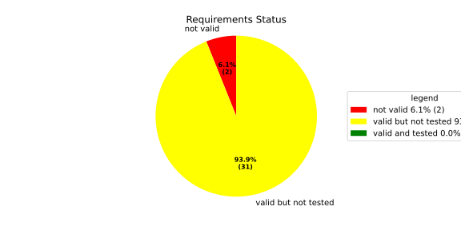
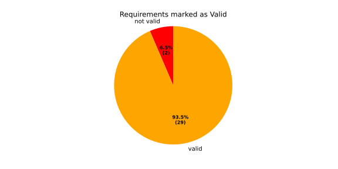
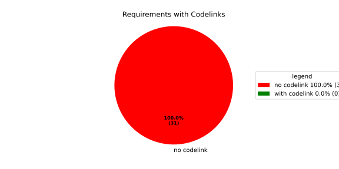

Verification Statistics#
Overview#

In Detail#


No needs passed the filters
Failed Tests
Hint: This table should be empty. Before a PR can be merged all tests have to be successful.
No needs passed the filters
Skipped / Disabled Tests
No needs passed the filters
All passed Tests#
No needs passed the filters
Details About Testcases#
No needs passed the filters
No needs passed the filters
Test Log Files#
tests-report/tests/integration/process_simple_rep_failure/process_simple_rep_failure/test.log
exec ${PAGER:-/usr/bin/less} "$0" || exit 1
Executing tests from //tests/integration/process_simple_rep_failure:process_simple_rep_failure
-----------------------------------------------------------------------------
============================= test session starts ==============================
platform linux -- Python 3.12.12, pytest-9.0.3, pluggy-1.5.0
rootdir: /home/runner/.bazel/sandbox/processwrapper-sandbox/969/execroot/_main/bazel-out/k8-fastbuild/bin/tests/integration/process_simple_rep_failure/process_simple_rep_failure.runfiles/score_itf+
configfile: pytest.ini
collected 1 item
../score_itf+::test_recovery_action_simple_rep_failure
-------------------------------- live log setup --------------------------------
[2026-06-19 12:35:04.344] [INFO] [score.itf.plugins.docker] Executing custom image bootstrap command: tests/utils/environments/x86_64-linux/x86_64-linux.sh
[2026-06-19 12:35:04.439] [DEBUG] [docker.utils.config] Trying paths: ['/home/runner/.docker/config.json', '/home/runner/.dockercfg']
[2026-06-19 12:35:04.439] [DEBUG] [docker.utils.config] Found file at path: /home/runner/.docker/config.json
[2026-06-19 12:35:04.439] [DEBUG] [docker.auth] Found 'auths' section
[2026-06-19 12:35:04.439] [DEBUG] [docker.auth] Found entry (registry='https://index.docker.io/v1/', username='githubactions')
[2026-06-19 12:35:04.446] [DEBUG] [urllib3.connectionpool] http://localhost:None "GET /version HTTP/1.1" 200 823
[2026-06-19 12:35:04.472] [DEBUG] [urllib3.connectionpool] http://localhost:None "POST /v1.48/containers/create HTTP/1.1" 201 88
[2026-06-19 12:35:04.474] [DEBUG] [urllib3.connectionpool] http://localhost:None "GET /v1.48/containers/8a830025ea9837b0e40256de200b0007c28d4a531300b9521abea3895d6b357a/json HTTP/1.1" 200 None
[2026-06-19 12:35:04.583] [DEBUG] [urllib3.connectionpool] http://localhost:None "POST /v1.48/containers/8a830025ea9837b0e40256de200b0007c28d4a531300b9521abea3895d6b357a/start HTTP/1.1" 204 0
[2026-06-19 12:35:04.584] [DEBUG] [docker.utils.config] Trying paths: ['/home/runner/.docker/config.json', '/home/runner/.dockercfg']
[2026-06-19 12:35:04.584] [DEBUG] [docker.utils.config] Found file at path: /home/runner/.docker/config.json
[2026-06-19 12:35:04.584] [DEBUG] [docker.auth] Found 'auths' section
[2026-06-19 12:35:04.584] [DEBUG] [docker.auth] Found entry (registry='https://index.docker.io/v1/', username='githubactions')
[2026-06-19 12:35:04.591] [DEBUG] [urllib3.connectionpool] http://localhost:None "GET /version HTTP/1.1" 200 823
[2026-06-19 12:35:04.738] [INFO] [tests.utils.testing_utils.setup_test] Test case setup finished
-------------------------------- live log call ---------------------------------
[2026-06-19 12:35:04.814] [INFO] [launch_manager] 2026/06/19 12:35:04.2504812 2201620 000 ECU1 LM LM log debug verbose 1 Launch Manager Started !!!!
[2026-06-19 12:35:04.815] [INFO] [launch_manager] 2026/06/19 12:35:04.2504813 2201623 000 ECU1 LM LM log debug verbose 1 Loading LCM Configurations...
[2026-06-19 12:35:04.815] [INFO] [launch_manager] 2026/06/19 12:35:04.2504813 2201623 000 ECU1 LM LM log debug verbose 1 ECUCFG_ENV_VAR_ROOTFOLDER set successfully
[2026-06-19 12:35:04.816] [INFO] [launch_manager] 2026/06/19 12:35:04.2504813 2201624 000 ECU1 LM LM log debug verbose 5 FlatBufferParser::getModeGroupPgName: MainPG ( IdentifierHash: 18079021346025578134 )
[2026-06-19 12:35:04.816] [INFO] [launch_manager] 2026/06/19 12:35:04.2504813 2201625 000 ECU1 LM LM log debug verbose 5 FlatBufferParser::getModeGroupPgStateName: MainPG/Startup ( IdentifierHash: 10504605499600661529 )
[2026-06-19 12:35:04.816] [INFO] [launch_manager] 2026/06/19 12:35:04.2504813 2201625 000 ECU1 LM LM log debug verbose 5 FlatBufferParser::getModeGroupPgStateName: MainPG/run_target_app_does_report_krunning_in_time ( IdentifierHash: 11934981641920773349 )
[2026-06-19 12:35:04.816] [INFO] [launch_manager] 2026/06/19 12:35:04.2504813 2201625 000 ECU1 LM LM log debug verbose 5
[2026-06-19 12:35:04.817] [INFO] [launch_manager] FlatBufferParser::getModeGroupPgStateName: MainPG/run_target_app_does_not_report_krunning_in_time ( IdentifierHash: 7672161913816744053 )
[2026-06-19 12:35:04.818] [INFO] [launch_manager] 2026/06/19 12:35:04.2504813 2201626 000 ECU1 LM LM log debug verbose 5 FlatBufferParser::getModeGroupPgStateName: MainPG/Off ( IdentifierHash: 15281793077830264047 )
[2026-06-19 12:35:04.818] [INFO] [launch_manager] 2026/06/19 12:35:04.2504813 2201626 000 ECU1 LM LM log debug verbose 5 FlatBufferParser::getModeGroupPgStateName: MainPG/fallback_run_target ( IdentifierHash: 4059409696722237352 )
[2026-06-19 12:35:04.818] [INFO] [launch_manager] 2026/06/19 12:35:04.2504813 2201627 000 ECU1 LM LM log debug verbose 4 parseProcessConfigurations: Process index: 0 executable_path_: /tmp/tests/process_simple_rep_failure/control_client_mock
[2026-06-19 12:35:04.818] [INFO] [launch_manager] 2026/06/19 12:35:04.2504813 2201627 000 ECU1 LM LM log debug verbose 3 Process control_client_mock is Reporting execution state
[2026-06-19 12:35:04.818] [INFO] [launch_manager] 2026/06/19 12:35:04.2504813 2201628 000 ECU1 LM LM log debug verbose 1 Process is STATE_MANAGEMENT function Cluster Affiliation
[2026-06-19 12:35:04.819] [INFO] [launch_manager] 2026/06/19 12:35:04.2504813 2201628 000 ECU1 LM LM log debug verbose 3
[2026-06-19 12:35:04.819] [INFO] [launch_manager] Process control_client_mock is Self terminating
[2026-06-19 12:35:04.819] [INFO] [launch_manager] 2026/06/19 12:35:04.2504813 2201629 000 ECU1 LM LM log debug verbose 4 ParseProcessProcessGroup: id:::pg_name_: MainPG , pg_state_name_: MainPG/Startup
[2026-06-19 12:35:04.819] [INFO] [launch_manager] 2026/06/19 12:35:04.2504813 2201629 000 ECU1 LM LM log debug verbose 4
[2026-06-19 12:35:04.819] [INFO] [launch_manager] ParseProcessProcessGroup: id:::pg_name_: MainPG , pg_state_name_: MainPG/run_target_app_does_report_krunning_in_time
[2026-06-19 12:35:04.819] [INFO] [launch_manager] 2026/06/19 12:35:04.2504813 2201630 000 ECU1 LM LM log debug verbose 4
[2026-06-19 12:35:04.819] [INFO] [launch_manager] ParseProcessProcessGroup: id:::pg_name_: MainPG , pg_state_name_: MainPG/run_target_app_does_not_report_krunning_in_time
[2026-06-19 12:35:04.819] [INFO] [launch_manager] 2026/06/19 12:35:04.2504813 2201631 000 ECU1 LM LM log debug verbose 4 ParseProcessProcessGroup: id:::pg_name_: MainPG , pg_state_name_: MainPG/fallback_run_target
[2026-06-19 12:35:04.819] [INFO] [launch_manager] 2026/06/19 12:35:04.2504813 2201631 000 ECU1 LM LM log debug verbose 4
[2026-06-19 12:35:04.819] [INFO] [launch_manager] parseProcessConfigurations: Process index: 1 executable_path_: /tmp/tests/process_simple_rep_failure/process_simple_reporting
[2026-06-19 12:35:04.819] [INFO] [launch_manager] 2026/06/19 12:35:04.2504813 2201632 000 ECU1 LM LM log debug verbose 3 Process component_does_report_krunning_in_time is Reporting execution state
[2026-06-19 12:35:04.819] [INFO] [launch_manager] 2026/06/19 12:35:04.2504814 2201632 000 ECU1 LM LM log debug verbose 1 Process is NOT associated with any function Cluster Affiliation
[2026-06-19 12:35:04.820] [INFO] [launch_manager] 2026/06/19 12:35:04.2504814 2201633 000 ECU1 LM LM log debug verbose 3 Process component_does_report_krunning_in_time is Self terminating
[2026-06-19 12:35:04.820] [INFO] [launch_manager] 2026/06/19 12:35:04.2504814 2201633 000 ECU1 LM LM log debug verbose 4 ParseProcessProcessGroup: id:::pg_name_: MainPG , pg_state_name_: MainPG/run_target_app_does_report_krunning_in_time
[2026-06-19 12:35:04.820] [INFO] [launch_manager] 2026/06/19 12:35:04.2504814 2201634 000 ECU1 LM LM log debug verbose 4 parseProcessConfigurations: Process index: 2 executable_path_: /tmp/tests/process_simple_rep_failure/process_simple_reporting
[2026-06-19 12:35:04.820] [INFO] [launch_manager] 2026/06/19 12:35:04.2504814 2201634 000 ECU1 LM LM log debug verbose 3 Process component_does_not_report_krunning_in_time is Reporting execution state
[2026-06-19 12:35:04.820] [INFO] [launch_manager] 2026/06/19 12:35:04.2504814 2201634 000 ECU1 LM LM log debug verbose 1 Process is NOT associated with any function Cluster Affiliation
[2026-06-19 12:35:04.820] [INFO] [launch_manager] 2026/06/19 12:35:04.2504814 2201634 000 ECU1 LM LM log debug verbose 3 Process component_does_not_report_krunning_in_time is Self terminating
[2026-06-19 12:35:04.820] [INFO] [launch_manager] 2026/06/19 12:35:04.2504814 2201635 000 ECU1 LM LM log debug verbose 4 ParseProcessProcessGroup: id:::pg_name_: MainPG , pg_state_name_: MainPG/run_target_app_does_not_report_krunning_in_time
[2026-06-19 12:35:04.820] [INFO] [launch_manager] 2026/06/19 12:35:04.2504814 2201635 000 ECU1 LM LM log debug verbose 4 parseProcessConfigurations: Process index: 3 executable_path_: /tmp/tests/process_simple_rep_failure/verification_process
[2026-06-19 12:35:04.820] [INFO] [launch_manager] 2026/06/19 12:35:04.2504814 2201636 000 ECU1 LM LM log debug verbose 3 Process verification_component is NOT Reporting execution state
[2026-06-19 12:35:04.820] [INFO] [launch_manager] 2026/06/19 12:35:04.2504814 2201636 000 ECU1 LM LM log debug verbose 1 Process is NOT associated with any function Cluster Affiliation
[2026-06-19 12:35:04.821] [INFO] [launch_manager] 2026/06/19 12:35:04.2504814 2201636 000 ECU1 LM LM log debug verbose 3 Process verification_component is Self terminating
[2026-06-19 12:35:04.821] [INFO] [launch_manager] 2026/06/19 12:35:04.2504814 2201636 000 ECU1 LM LM log debug verbose 4 ParseProcessProcessGroup: id:::pg_name_: MainPG , pg_state_name_: MainPG/fallback_run_target
[2026-06-19 12:35:04.821] [INFO] [launch_manager] 2026/06/19 12:35:04.2504814 2201637 000 ECU1 LM LM log debug verbose 3 Loading SWCL Nr. 0 Succeeded
[2026-06-19 12:35:04.821] [INFO] [launch_manager] 2026/06/19 12:35:04.2504814 2201637 000 ECU1 LM LM log debug verbose 2 1 process group(s)
[2026-06-19 12:35:04.821] [INFO] [launch_manager] 2026/06/19 12:35:04.2504814 2201637 000 ECU1 LM LM log debug verbose 3 Creating graph with 4 nodes
[2026-06-19 12:35:04.821] [INFO] [launch_manager] 2026/06/19 12:35:04.2504814 2201638 000 ECU1 LM LM log debug verbose 1 Process groups initialized successfully
[2026-06-19 12:35:04.821] [INFO] [launch_manager] 2026/06/19 12:35:04.2504814 2201638 000 ECU1 LM LM log debug verbose 1 Process Group initialization done
[2026-06-19 12:35:04.821] [INFO] [launch_manager] 2026/06/19 12:35:04.2504814 2201638 000 ECU1 LM LM log debug verbose 3 Creating Safe Process Map with 4 entries
[2026-06-19 12:35:04.821] [INFO] [launch_manager] 2026/06/19 12:35:04.2504814 2201638 000 ECU1 LM LM log debug verbose 2 Creating job queue with capacity 1024
[2026-06-19 12:35:04.821] [INFO] [launch_manager] 2026/06/19 12:35:04.2504814 2201639 000 ECU1 LM LM log debug verbose 1 Creating worker threads...
[2026-06-19 12:35:04.822] [INFO] [launch_manager] 2026/06/19 12:35:04.2504816 2201654 000 ECU1 LM LM log debug verbose 7 Process group index 0 (with name MainPG ) has 4 processes
[2026-06-19 12:35:04.822] [INFO] [launch_manager] 2026/06/19 12:35:04.2504816 2201655 000 ECU1 LM LM log debug verbose 2 Creating process node with id: 0
[2026-06-19 12:35:04.822] [INFO] [launch_manager] 2026/06/19 12:35:04.2504816 2201655 000 ECU1 LM LM log debug verbose 5 Process 0 has 0 start dependencies
[2026-06-19 12:35:04.822] [INFO] [launch_manager] 2026/06/19 12:35:04.2504816 2201655 000 ECU1 LM LM log debug verbose 2 Creating process node with id: 1
[2026-06-19 12:35:04.822] [INFO] [launch_manager] 2026/06/19 12:35:04.2504816 2201656 000 ECU1 LM LM log debug verbose 5 Process 1 has 0 start dependencies
[2026-06-19 12:35:04.822] [INFO] [launch_manager] 2026/06/19 12:35:04.2504816 2201656 000 ECU1 LM LM log debug verbose 2
[2026-06-19 12:35:04.822] [INFO] [launch_manager] Creating process node with id: 2
[2026-06-19 12:35:04.822] [INFO] [launch_manager] 2026/06/19 12:35:04.2504816 2201657 000 ECU1 LM LM log debug verbose 5
[2026-06-19 12:35:04.822] [INFO] [launch_manager] Process 2 has 0 start dependencies
[2026-06-19 12:35:04.823] [INFO] [launch_manager] 2026/06/19 12:35:04.2504816 2201658 000 ECU1 LM LM log debug verbose 2 Creating process node with id: 3
[2026-06-19 12:35:04.823] [INFO] [launch_manager] 2026/06/19 12:35:04.2504816 2201658 000 ECU1 LM LM log debug verbose 5 Process 3 has 0 start dependencies
[2026-06-19 12:35:04.823] [INFO] [launch_manager] 2026/06/19 12:35:04.2504816 2201658 000 ECU1 LM LM log debug verbose 3 Created 4 process nodes
[2026-06-19 12:35:04.823] [INFO] [launch_manager] 2026/06/19 12:35:04.2504816 2201658 000 ECU1 LM LM log debug verbose 2 Creating successor lists for process group MainPG
[2026-06-19 12:35:04.823] [INFO] [launch_manager] 2026/06/19 12:35:04.2504816 2201658 000 ECU1 LM LM log debug verbose 1 Graphs initialized
[2026-06-19 12:35:04.823] [INFO] [launch_manager] 2026/06/19 12:35:04.2504816 2201661 000 ECU1 LM Fcty log info verbose 2 Factory for FlatCfg MachineConfig: Loading of HM Machine Configuration succeeded.
[2026-06-19 12:35:04.823] [INFO] [launch_manager] 2026/06/19 12:35:04.2504816 2201661 000 ECU1 LM Fcty log debug verbose 3 Factory for FlatCfg MachineConfig: Alive Supervision buffer size: 100
[2026-06-19 12:35:04.823] [INFO] [launch_manager] 2026/06/19 12:35:04.2504816 2201661 000 ECU1 LM Fcty log debug verbose 3 Factory for FlatCfg MachineConfig: Monitor buffer size: 512
[2026-06-19 12:35:04.823] [INFO] [launch_manager] 2026/06/19 12:35:04.2504817 2201662 000 ECU1 LM Fcty log debug verbose 4 Factory for FlatCfg MachineConfig: Periodicity: 50000000 ns
[2026-06-19 12:35:04.823] [INFO] [launch_manager] 2026/06/19 12:35:04.2504817 2201663 000 ECU1 LM Fcty log debug verbose 3 Factory for FlatCfg MachineConfig: Configured watchdogs: 0
[2026-06-19 12:35:04.824] [INFO] [launch_manager] 2026/06/19 12:35:04.2504817 2201663 000 ECU1 LM Fcty log warn verbose 2 Factory for FlatCfg MachineConfig: No watchdog configured
[2026-06-19 12:35:04.824] [INFO] [launch_manager] 2026/06/19 12:35:04.2504817 2201664 000 ECU1 LM Fcty log debug verbose 2 Software Cluster Handler starts constructing workers: MainCluster
[2026-06-19 12:35:04.824] [INFO] [launch_manager] 2026/06/19 12:35:04.2504817 2201664 000 ECU1 LM Fcty log debug verbose 3 Factory for FlatCfg AR24-11: Successfully created Process States: control_client_mock
[2026-06-19 12:35:04.824] [INFO] [launch_manager] 2026/06/19 12:35:04.2504817 2201664 000 ECU1 LM Fcty log debug verbose 3 Factory for FlatCfg AR24-11: Number of constructed Process States: 1
[2026-06-19 12:35:04.824] [INFO] [launch_manager] 2026/06/19 12:35:04.2504817 2201665 000 ECU1 LM Fcty log debug verbose 3 Factory for FlatCfg AR24-11: Successfully created Monitor interface IPC with path: lifecycle_health_control_client_mock
[2026-06-19 12:35:04.824] [INFO] [launch_manager] 2026/06/19 12:35:04.2504817 2201666 000 ECU1 LM Fcty log debug verbose 3 Factory for FlatCfg AR24-11: Number of constructed Monitor interface IPCs: 1
[2026-06-19 12:35:04.824] [INFO] [launch_manager] 2026/06/19 12:35:04.2504817 2201666 000 ECU1 LM Fcty log debug verbose 3 Factory for FlatCfg AR24-11: Successfully created MonitorInterface: /lifecycle_health_control_client_mock
[2026-06-19 12:35:04.824] [INFO] [launch_manager] 2026/06/19 12:35:04.2504817 2201666 000 ECU1 LM Fcty log debug verbose 3 Factory for FlatCfg AR24-11: Number of constructed Monitor interfaces: 1
[2026-06-19 12:35:04.825] [INFO] [launch_manager] 2026/06/19 12:35:04.2504817 2201667 000 ECU1 LM Fcty log debug verbose 3 Factory for FlatCfg AR24-11: Successfully created supervision checkpoint: control_client_mock_checkpoint
[2026-06-19 12:35:04.825] [INFO] [launch_manager] 2026/06/19 12:35:04.2504817 2201667 000 ECU1 LM Fcty log debug verbose 3 Factory for FlatCfg AR24-11: Number of constructed supervision checkpoints: 1
[2026-06-19 12:35:04.825] [INFO] [launch_manager] 2026/06/19 12:35:04.2504817 2201667 000 ECU1 LM Fcty log debug verbose 3 Factory for FlatCfg AR24-11: Successfully created alive supervision worker object: control_client_mock_alive_supervision
[2026-06-19 12:35:04.825] [INFO] [launch_manager] 2026/06/19 12:35:04.2504817 2201668 000 ECU1 LM Fcty log debug verbose 3 Factory for FlatCfg AR24-11: Number of constructed alive supervisions: 1
[2026-06-19 12:35:04.825] [INFO] [launch_manager] 2026/06/19 12:35:04.2504817 2201668 000 ECU1 LM Fcty log info verbose 2 Phm Daemon: The (configured) periodicity in [ns] is set to: 50000000
[2026-06-19 12:35:04.825] [INFO] [launch_manager] 2026/06/19 12:35:04.2504817 2201668 000 ECU1 LM Fcty log debug verbose 2 Phm Daemon: The accuracy of the monotonic system clock in [ns] is: 1
[2026-06-19 12:35:04.825] [INFO] [launch_manager] 2026/06/19 12:35:04.2504817 2201669 000 ECU1 LM Fcty log debug verbose 3 HealthMonitor: Initialization took 0 ms
[2026-06-19 12:35:04.825] [INFO] [launch_manager] 2026/06/19 12:35:04.2504817 2201669 000 ECU1 LM LM log info verbose 1 LCM started successfully
[2026-06-19 12:35:04.826] [INFO] [launch_manager] 2026/06/19 12:35:04.2504817 2201671 000 ECU1 LM LM log debug verbose 3
[2026-06-19 12:35:04.826] [INFO] [launch_manager] clock() at run(): 28.348000 ms
[2026-06-19 12:35:04.826] [INFO] [launch_manager] 2026/06/19 12:35:04.2504818 2201672 000 ECU1 LM LM log debug verbose 1
[2026-06-19 12:35:04.826] [INFO] [launch_manager] =============STARTING MAINPG STARTUP STATE============
[2026-06-19 12:35:04.826] [INFO] [launch_manager] 2026/06/19 12:35:04.2504818 2201674 000 ECU1 LM LM log debug verbose 9 Graph::setState changes from kSuccess to kInTransition for PG 0 ( MainPG )
[2026-06-19 12:35:04.826] [INFO] [launch_manager] 2026/06/19 12:35:04.2504818 2201676 000 ECU1 LM LM log debug verbose 2
[2026-06-19 12:35:04.826] [INFO] [launch_manager] Stop Dependencies: 0
[2026-06-19 12:35:04.826] [INFO] [launch_manager] 2026/06/19 12:35:04.2504818 2201678 000 ECU1 LM LM log debug verbose 2 Stop Dependencies: 0
[2026-06-19 12:35:04.826] [INFO] [launch_manager] 2026/06/19 12:35:04.2504818 2201680 000 ECU1 LM LM log debug verbose 2
[2026-06-19 12:35:04.826] [INFO] [launch_manager] Stop Dependencies: 0
[2026-06-19 12:35:04.826] [INFO] [launch_manager] 2026/06/19 12:35:04.2504818 2201681 000 ECU1 LM LM log debug verbose 2
[2026-06-19 12:35:04.826] [INFO] [launch_manager] Stop Dependencies: 0
[2026-06-19 12:35:04.826] [INFO] [launch_manager] 2026/06/19 12:35:04.2504819 2201691 000 ECU1 LM LM log debug verbose 2 Start Dependencies: 0
[2026-06-19 12:35:04.827] [INFO] [launch_manager] 2026/06/19 12:35:04.2504819 2201691 000 ECU1 LM LM log debug verbose 2 Start Dependencies: 0
[2026-06-19 12:35:04.827] [INFO] [launch_manager] 2026/06/19 12:35:04.2504819 2201691 000 ECU1 LM LM log debug verbose 2 Start Dependencies: 0
[2026-06-19 12:35:04.827] [INFO] [launch_manager] 2026/06/19 12:35:04.2504820 2201692 000 ECU1 LM LM log debug verbose 2
[2026-06-19 12:35:04.827] [INFO] [launch_manager] Start Dependencies: 0
[2026-06-19 12:35:04.827] [INFO] [launch_manager] 2026/06/19 12:35:04.2504820 2201697 000 ECU1 LM LM log debug verbose 6 Starting process 0 ( control_client_mock ) from executable /tmp/tests/process_simple_rep_failure/control_client_mock
[2026-06-19 12:35:04.827] [INFO] [launch_manager] 2026/06/19 12:35:04.2504820 2201698 000 ECU1 LM LM log debug verbose 3 Initialize the control client for control_client_mock process
[2026-06-19 12:35:04.827] [INFO] [launch_manager] 2026/06/19 12:35:04.2504820 2201699 000 ECU1 LM LM log debug verbose 1 ControlClientChannel initialized
[2026-06-19 12:35:04.827] [INFO] [launch_manager] 2026/06/19 12:35:04.2504821 2201706 000 ECU1 LM LM log debug verbose 4 startProcess pid 68 received for process: control_client_mock
[2026-06-19 12:35:04.827] [INFO] [launch_manager] 2026/06/19 12:35:04.2504821 2201706 000 ECU1 LM LM log debug verbose 1 ControlClientChannel obtained from sync.
[2026-06-19 12:35:04.827] [INFO] [launch_manager] [==========] Running 1 test from 1 test suite.
[2026-06-19 12:35:04.828] [INFO] [launch_manager] [----------] Global test environment set-up.
[2026-06-19 12:35:04.828] [INFO] [launch_manager] [----------] 1 test from RecoveryActionSimpleRepFailure
[2026-06-19 12:35:04.828] [INFO] [launch_manager] [ RUN ] RecoveryActionSimpleRepFailure.ControlClientMock
[2026-06-19 12:35:04.828] [INFO] [launch_manager] [ STEP ] Report running from ControlClientMock
[2026-06-19 12:35:04.829] [INFO] [launch_manager] [ END STEP ] Report running from ControlClientMock
[2026-06-19 12:35:04.831] [INFO] [launch_manager] [ STEP ] Activate RunTarget run_target_app_does_report_krunning_in_time
[2026-06-19 12:35:04.831] [INFO] [launch_manager] 2026/06/19 12:35:04.2504830 2201796 000 ECU1 LM LM log debug verbose 1 Request sent. Waiting for acknowledgment...
[2026-06-19 12:35:04.831] [INFO] [launch_manager] 2026/06/19 12:35:04.2504831 2201805 000 ECU1 LM LM log debug verbose 8 ProcessGroupManager::ControlClientHandler: got request kSetStateRequest ( 16 ) re state MainPG/run_target_app_does_report_krunning_in_time of PG MainPG
[2026-06-19 12:35:04.831] [INFO] [launch_manager] 2026/06/19 12:35:04.2504831 2201806 000 ECU1 LM LM log debug verbose 6 Pending state for process group MainPG changed from to MainPG/run_target_app_does_report_krunning_in_time
[2026-06-19 12:35:04.831] [INFO] [launch_manager] 2026/06/19 12:35:04.2504831 2201807 000 ECU1 LM LM log debug verbose 9 Graph::setState changes from kInTransition to kCancelled for PG 0 ( MainPG )
[2026-06-19 12:35:04.831] [INFO] [launch_manager] 2026/06/19 12:35:04.2504831 2201807 000 ECU1 LM LM log debug verbose 1 Control Client handler nudged
[2026-06-19 12:35:04.831] [INFO] [launch_manager] 2026/06/19 12:35:04.2504831 2201807 000 ECU1 LM LM log debug verbose 1 Request acknowledged.
[2026-06-19 12:35:04.831] [INFO] [launch_manager] 2026/06/19 12:35:04.2504831 2201809 000 ECU1 LM LM log debug verbose 1 Request acknowledged.
[2026-06-19 12:35:04.832] [INFO] [launch_manager] 2026/06/19 12:35:04.2504831 2201811 000 ECU1 LM LM log debug verbose 8
[2026-06-19 12:35:04.832] [INFO] [launch_manager] Got kRunning for pid 68 ( control_client_mock ) process 0 of group MainPG
[2026-06-19 12:35:04.832] [INFO] [launch_manager] 2026/06/19 12:35:04.2504832 2201812 000 ECU1 LM LM log debug verbose 7 startProcess for MainPG process 0 ( control_client_mock ) done
[2026-06-19 12:35:04.832] [INFO] [launch_manager] 2026/06/19 12:35:04.2504832 2201812 000 ECU1 LM LM log debug verbose 1 Control Client handler nudged
[2026-06-19 12:35:04.833] [INFO] [launch_manager] 2026/06/19 12:35:04.2504832 2201813 000 ECU1 LM LM log fatal verbose 3 clock() at failed initial state transition: 30.288000 ms
[2026-06-19 12:35:04.833] [INFO] [launch_manager] 2026/06/19 12:35:04.2504832 2201813 000 ECU1 LM LM log debug verbose 9 Graph::setState changes from kCancelled to kUndefinedState for PG 0 ( MainPG )
[2026-06-19 12:35:04.833] [INFO] [launch_manager] 2026/06/19 12:35:04.2504832 2201813 000 ECU1 LM LM log debug verbose 1 Control Client handler nudged
[2026-06-19 12:35:04.834] [INFO] [launch_manager] 2026/06/19 12:35:04.2504833 2201829 000 ECU1 LM LM log debug verbose 6 Pending state for process group MainPG changed from MainPG/run_target_app_does_report_krunning_in_time to
[2026-06-19 12:35:04.834] [INFO] [launch_manager] 2026/06/19 12:35:04.2504833 2201830 000 ECU1 LM LM log debug verbose 4 Start transition to MainPG/run_target_app_does_report_krunning_in_time for PG MainPG
[2026-06-19 12:35:04.834] [INFO] [launch_manager] 2026/06/19 12:35:04.2504834 2201835 000 ECU1 LM LM log debug verbose 9 Graph::setState changes from kUndefinedState to kInTransition for PG 0 ( MainPG )
[2026-06-19 12:35:04.834] [INFO] [launch_manager] 2026/06/19 12:35:04.2504834 2201837 000 ECU1 LM LM log debug verbose 2 Stop Dependencies: 0
[2026-06-19 12:35:04.835] [INFO] [launch_manager] 2026/06/19 12:35:04.2504834 2201837 000 ECU1 LM LM log debug verbose 2 Stop Dependencies: 0
[2026-06-19 12:35:04.835] [INFO] [launch_manager] 2026/06/19 12:35:04.2504834 2201838 000 ECU1 LM LM log debug verbose 2 Stop Dependencies: 0
[2026-06-19 12:35:04.835] [INFO] [launch_manager] 2026/06/19 12:35:04.2504834 2201838 000 ECU1 LM LM log debug verbose 2 Stop Dependencies: 0
[2026-06-19 12:35:04.835] [INFO] [launch_manager] 2026/06/19 12:35:04.2504834 2201838 000 ECU1 LM LM log debug verbose 2 Start Dependencies: 0
[2026-06-19 12:35:04.836] [INFO] [launch_manager] 2026/06/19 12:35:04.2504834 2201838 000 ECU1 LM LM log debug verbose 2 Start Dependencies: 0
[2026-06-19 12:35:04.836] [INFO] [launch_manager] 2026/06/19 12:35:04.2504834 2201839 000 ECU1 LM LM log debug verbose 2 Start Dependencies: 0
[2026-06-19 12:35:04.836] [INFO] [launch_manager] 2026/06/19 12:35:04.2504834 2201839 000 ECU1 LM LM log debug verbose 2 Start Dependencies: 0
[2026-06-19 12:35:04.836] [INFO] [launch_manager] 2026/06/19 12:35:04.2504834 2201842 000 ECU1 LM LM log debug verbose 6 Starting process 1 ( component_does_report_krunning_in_time ) from executable /tmp/tests/process_simple_rep_failure/process_simple_reporting
[2026-06-19 12:35:04.836] [INFO] [launch_manager] 2026/06/19 12:35:04.2504835 2201847 000 ECU1 LM LM log debug verbose 4 startProcess pid 76 received for process: component_does_report_krunning_in_time
[2026-06-19 12:35:04.839] [INFO] [launch_manager] [==========] Running 1 test from 1 test suite.
[2026-06-19 12:35:04.839] [INFO] [launch_manager] [----------] Global test environment set-up.
[2026-06-19 12:35:04.840] [INFO] [launch_manager] [----------] 1 test from ProcessSimpleRepFailure
[2026-06-19 12:35:04.840] [INFO] [launch_manager] [ RUN ] ProcessSimpleRepFailure.ProcessSimpleReporting
[2026-06-19 12:35:04.840] [INFO] [launch_manager] [ STEP ] Check args
[2026-06-19 12:35:04.840] [INFO] [launch_manager] [ END STEP ] Check args
[2026-06-19 12:35:04.840] [INFO] [launch_manager] [ STEP ] Report running from ProcessSimpleReporting
[2026-06-19 12:35:04.868] [INFO] [launch_manager] 2026/06/19 12:35:04.2504867 2202171 000 ECU1 LM Sprv log debug verbose 6
[2026-06-19 12:35:04.868] [INFO] [launch_manager] Process with Id control_client_mock changed state PG MainPG/Startup PS 1
[2026-06-19 12:35:04.868] [INFO] [launch_manager] 2026/06/19 12:35:04.2504868 2202174 000 ECU1 LM Sprv log debug verbose 6
[2026-06-19 12:35:04.868] [INFO] [launch_manager] Process with Id control_client_mock changed state PG MainPG/Startup PS 2
[2026-06-19 12:35:04.868] [INFO] [launch_manager] 2026/06/19 12:35:04.2504868 2202178 000 ECU1 LM Sprv log debug verbose 6
[2026-06-19 12:35:04.868] [INFO] [launch_manager] Process with Id component_does_report_krunning_in_time changed state PG MainPG/run_target_app_does_report_krunning_in_time PS 1
[2026-06-19 12:35:04.869] [INFO] [launch_manager] 2026/06/19 12:35:04.2504868 2202182 000 ECU1 LM Sprv log info verbose 3 Alive Supervision ( control_client_mock_alive_supervision ) switched to OK.
[2026-06-19 12:35:04.880] [DEBUG] [tests.utils.testing_utils.run_until_file_deployed] Waiting for /tmp/tests/test_end
[2026-06-19 12:35:05.344] [INFO] [launch_manager] [ END STEP ] Report running from ProcessSimpleReporting
[2026-06-19 12:35:05.344] [INFO] [launch_manager] [ OK ] ProcessSimpleRepFailure.ProcessSimpleReporting (502 ms)
[2026-06-19 12:35:05.344] [INFO] [launch_manager] [----------] 1 test from ProcessSimpleRepFailure (502 ms total)
[2026-06-19 12:35:05.344] [INFO] [launch_manager] [----------] Global test environment tear-down
[2026-06-19 12:35:05.344] [INFO] [launch_manager] [==========] 1 test from 1 test suite ran. (502 ms total)
[2026-06-19 12:35:05.344] [INFO] [launch_manager] [ PASSED ] 1 test.
[2026-06-19 12:35:05.344] [INFO] [launch_manager] 2026/06/19 12:35:05.2505343 2206923 000 ECU1 LM LM log debug verbose 8 Got kRunning for pid 76 ( component_does_report_krunning_in_time ) process 1 of group MainPG
[2026-06-19 12:35:05.344] [INFO] [launch_manager] 2026/06/19 12:35:05.2505343 2206924 000 ECU1 LM LM log debug verbose 7 startProcess for MainPG process 1 ( component_does_report_krunning_in_time ) done
[2026-06-19 12:35:05.344] [INFO] [launch_manager] 2026/06/19 12:35:05.2505343 2206925 000 ECU1 LM LM log debug verbose 9 Graph::setState changes from kInTransition to kSuccess for PG 0 ( MainPG )
[2026-06-19 12:35:05.344] [INFO] [launch_manager] 2026/06/19 12:35:05.2505343 2206925 000 ECU1 LM LM log info verbose 7 Completed the request for PG MainPG to State MainPG/run_target_app_does_report_krunning_in_time in 511 ms
[2026-06-19 12:35:05.345] [INFO] [launch_manager] 2026/06/19 12:35:05.2505343 2206925 000 ECU1 LM LM log debug verbose 1 Control Client handler nudged
[2026-06-19 12:35:05.347] [INFO] [launch_manager] 2026/06/19 12:35:05.2505343 2206928 000 ECU1 LM LM log debug verbose 12
[2026-06-19 12:35:05.348] [INFO] [launch_manager] Child process 1 of MainPG pid 76 ( component_does_report_krunning_in_time ) for node True terminated with status 0
[2026-06-19 12:35:05.348] [INFO] [launch_manager] 2026/06/19 12:35:05.2505343 2206930 000 ECU1 LM LM log debug verbose 8 ProcessGroupManager::ControlClientHandler: Sending kSetStateSuccess ( 20 ) re state MainPG/run_target_app_does_report_krunning_in_time of PG MainPG
[2026-06-19 12:35:05.348] [INFO] [launch_manager] 2026/06/19 12:35:05.2505343 2206931 000 ECU1 LM LM log debug verbose 1 Response sent.
[2026-06-19 12:35:05.368] [INFO] [launch_manager] 2026/06/19 12:35:05.2505367 2207170 000 ECU1 LM Sprv log debug verbose 6 Process with Id component_does_report_krunning_in_time changed state PG MainPG/run_target_app_does_report_krunning_in_time PS 2
[2026-06-19 12:35:05.368] [INFO] [launch_manager] 2026/06/19 12:35:05.2505367 2207171 000 ECU1 LM Sprv log debug verbose 6 Process with Id component_does_report_krunning_in_time changed state PG MainPG/run_target_app_does_report_krunning_in_time PS 4
[2026-06-19 12:35:05.428] [INFO] [launch_manager] 2026/06/19 12:35:05.2505426 2207754 000 ECU1 LM LM log debug verbose 1 Response retrieved.
[2026-06-19 12:35:05.428] [INFO] [launch_manager] [ END STEP ] Activate RunTarget run_target_app_does_report_krunning_in_time
[2026-06-19 12:35:05.434] [DEBUG] [tests.utils.testing_utils.run_until_file_deployed] Waiting for /tmp/tests/test_end
[2026-06-19 12:35:05.999] [DEBUG] [tests.utils.testing_utils.run_until_file_deployed] Waiting for /tmp/tests/test_end
[2026-06-19 12:35:06.434] [INFO] [launch_manager] [ STEP ] Verify fallback run target has not been activated
[2026-06-19 12:35:06.435] [INFO] [launch_manager] [ END STEP ] Verify fallback run target has not been activated
[2026-06-19 12:35:06.435] [INFO] [launch_manager] [ STEP ] Activate RunTarget run_target_app_does_not_report_krunning_in_time
[2026-06-19 12:35:06.435] [INFO] [launch_manager] 2026/06/19 12:35:06.2506428 2217779 000 ECU1 LM LM log debug verbose 1 Request sent. Waiting for acknowledgment...
[2026-06-19 12:35:06.435] [INFO] [launch_manager] 2026/06/19 12:35:06.2506430 2217795 000 ECU1 LM LM log debug verbose 8 ProcessGroupManager::ControlClientHandler: got request kSetStateRequest ( 16 ) re state MainPG/run_target_app_does_not_report_krunning_in_time of PG MainPG
[2026-06-19 12:35:06.435] [INFO] [launch_manager] 2026/06/19 12:35:06.2506430 2217795 000 ECU1 LM LM log debug verbose 6 Pending state for process group MainPG changed from to MainPG/run_target_app_does_not_report_krunning_in_time
[2026-06-19 12:35:06.435] [INFO] [launch_manager] 2026/06/19 12:35:06.2506430 2217795 000 ECU1 LM LM log debug verbose 1 Request acknowledged.
[2026-06-19 12:35:06.435] [INFO] [launch_manager] 2026/06/19 12:35:06.2506430 2217796 000 ECU1 LM LM log debug verbose 6 Pending state for process group MainPG changed from MainPG/run_target_app_does_not_report_krunning_in_time to
[2026-06-19 12:35:06.435] [INFO] [launch_manager] 2026/06/19 12:35:06.2506430 2217796 000 ECU1 LM LM log debug verbose 4 Start transition to MainPG/run_target_app_does_not_report_krunning_in_time for PG MainPG
[2026-06-19 12:35:06.435] [INFO] [launch_manager] 2026/06/19 12:35:06.2506430 2217796 000 ECU1 LM LM log debug verbose 9 Graph::setState changes from kSuccess to kInTransition for PG 0 ( MainPG )
[2026-06-19 12:35:06.435] [INFO] [launch_manager] 2026/06/19 12:35:06.2506430 2217796 000 ECU1 LM LM log debug verbose 2 Stop Dependencies: 0
[2026-06-19 12:35:06.435] [INFO] [launch_manager] 2026/06/19 12:35:06.2506430 2217797 000 ECU1 LM LM log debug verbose 2 Stop Dependencies: 0
[2026-06-19 12:35:06.435] [INFO] [launch_manager] 2026/06/19 12:35:06.2506430 2217797 000 ECU1 LM LM log debug verbose 2 Stop Dependencies: 0
[2026-06-19 12:35:06.436] [INFO] [launch_manager] 2026/06/19 12:35:06.2506430 2217797 000 ECU1 LM LM log debug verbose 2 Stop Dependencies: 0
[2026-06-19 12:35:06.436] [INFO] [launch_manager] 2026/06/19 12:35:06.2506430 2217797 000 ECU1 LM LM log debug verbose 2 Start Dependencies: 0
[2026-06-19 12:35:06.436] [INFO] [launch_manager] 2026/06/19 12:35:06.2506430 2217798 000 ECU1 LM LM log debug verbose 2 Start Dependencies: 0
[2026-06-19 12:35:06.436] [INFO] [launch_manager] 2026/06/19 12:35:06.2506430 2217798 000 ECU1 LM LM log debug verbose 2 Start Dependencies: 0
[2026-06-19 12:35:06.436] [INFO] [launch_manager] 2026/06/19 12:35:06.2506430 2217798 000 ECU1 LM LM log debug verbose 2 Start Dependencies: 0
[2026-06-19 12:35:06.436] [INFO] [launch_manager] 2026/06/19 12:35:06.2506430 2217799 000 ECU1 LM LM log debug verbose 6 Starting process 2 ( component_does_not_report_krunning_in_time ) from executable /tmp/tests/process_simple_rep_failure/process_simple_reporting
[2026-06-19 12:35:06.436] [INFO] [launch_manager] 2026/06/19 12:35:06.2506430 2217801 000 ECU1 LM LM log debug verbose 1 Request acknowledged.
[2026-06-19 12:35:06.436] [INFO] [launch_manager] 2026/06/19 12:35:06.2506431 2217805 000 ECU1 LM LM log debug verbose 4 startProcess pid 89 received for process: component_does_not_report_krunning_in_time
[2026-06-19 12:35:06.436] [INFO] [launch_manager] [==========] Running 1 test from 1 test suite.
[2026-06-19 12:35:06.436] [INFO] [launch_manager] [----------] Global test environment set-up.
[2026-06-19 12:35:06.436] [INFO] [launch_manager] [----------] 1 test from ProcessSimpleRepFailure
[2026-06-19 12:35:06.439] [INFO] [launch_manager] [ RUN ] ProcessSimpleRepFailure.ProcessSimpleReporting
[2026-06-19 12:35:06.439] [INFO] [launch_manager] [ STEP ] Check args
[2026-06-19 12:35:06.440] [INFO] [launch_manager] [ END STEP ] Check args
[2026-06-19 12:35:06.440] [INFO] [launch_manager] [ STEP ] Report running from ProcessSimpleReporting
[2026-06-19 12:35:06.468] [INFO] [launch_manager] 2026/06/19 12:35:06.2506467 2218170 000 ECU1 LM Sprv log debug verbose 6 Process with Id component_does_not_report_krunning_in_time changed state PG MainPG/run_target_app_does_not_report_krunning_in_time PS 1
[2026-06-19 12:35:06.553] [DEBUG] [tests.utils.testing_utils.run_until_file_deployed] Waiting for /tmp/tests/test_end
[2026-06-19 12:35:07.122] [DEBUG] [tests.utils.testing_utils.run_until_file_deployed] Waiting for /tmp/tests/test_end
[2026-06-19 12:35:07.498] [INFO] [launch_manager] 2026/06/19 12:35:07.2507497 2228471 000 ECU1 LM LM log error verbose 1 Semaphore timedWait or post failed: Unable to wait or post on semaphores within the specified timeout.
[2026-06-19 12:35:07.498] [INFO] [launch_manager] 2026/06/19 12:35:07.2507497 2228472 000 ECU1 LM LM log warn verbose 5 Got kRunning timeout for process 2 ( component_does_not_report_krunning_in_time )
[2026-06-19 12:35:07.498] [INFO] [launch_manager] 2026/06/19 12:35:07.2507498 2228472 000 ECU1 LM LM log debug verbose 5 terminating process 2 ( component_does_not_report_krunning_in_time )
[2026-06-19 12:35:07.499] [INFO] [launch_manager] 2026/06/19 12:35:07.2507498 2228472 000 ECU1 LM LM log debug verbose 9 Requesting termination of process 2 of MainPG pid 89 ( component_does_not_report_krunning_in_time )
[2026-06-19 12:35:07.499] [INFO] [launch_manager] 2026/06/19 12:35:07.2507498 2228473 000 ECU1 LM LM log debug verbose 2 Request termination received for 89
[2026-06-19 12:35:07.518] [INFO] [launch_manager] 2026/06/19 12:35:07.2507517 2228670 000 ECU1 LM Sprv log debug verbose 6 Process with Id component_does_not_report_krunning_in_time changed state PG MainPG/run_target_app_does_not_report_krunning_in_time PS 3
[2026-06-19 12:35:07.677] [DEBUG] [tests.utils.testing_utils.run_until_file_deployed] Waiting for /tmp/tests/test_end
[2026-06-19 12:35:08.214] [DEBUG] [tests.utils.testing_utils.run_until_file_deployed] Waiting for /tmp/tests/test_end
[2026-06-19 12:35:08.538] [INFO] [launch_manager] 2026/06/19 12:35:08.2508538 2238873 000 ECU1 LM LM log warn verbose 5 Process 2 ( component_does_not_report_krunning_in_time ) did not respond to SIGTERM, sending SIGKILL
[2026-06-19 12:35:08.538] [INFO] [launch_manager] 2026/06/19 12:35:08.2508538 2238873 000 ECU1 LM LM log debug verbose 2 Forced termination received for pid 89
[2026-06-19 12:35:08.538] [INFO] [launch_manager] 2026/06/19 12:35:08.2508538 2238876 000 ECU1 LM LM log debug verbose 12 Child process 2 of MainPG pid 89 ( component_does_not_report_krunning_in_time ) for node True terminated with status 9
[2026-06-19 12:35:08.538] [INFO] [launch_manager] 2026/06/19 12:35:08.2508538 2238877 000 ECU1 LM LM log warn verbose 7 unexpected termination of process 2 pid 89 ( component_does_not_report_krunning_in_time )
[2026-06-19 12:35:08.538] [INFO] [launch_manager] 2026/06/19 12:35:08.2508538 2238877 000 ECU1 LM LM log debug verbose 9 Graph::setState changes from kInTransition to kAborting for PG 0 ( MainPG )
[2026-06-19 12:35:08.540] [INFO] [launch_manager] 2026/06/19 12:35:08.2508540 2238894 000 ECU1 LM LM log debug verbose 7 terminateProcess for MainPG process 2 ( component_does_not_report_krunning_in_time ) done
[2026-06-19 12:35:08.540] [INFO] [launch_manager] 2026/06/19 12:35:08.2508540 2238895 000 ECU1 LM LM log debug verbose 7 startProcess for MainPG process 2 ( component_does_not_report_krunning_in_time ) done
[2026-06-19 12:35:08.540] [INFO] [launch_manager] 2026/06/19 12:35:08.2508540 2238897 000 ECU1 LM LM log debug verbose 9 Graph::setState changes from kAborting to kUndefinedState for PG 0 ( MainPG )
[2026-06-19 12:35:08.540] [INFO] [launch_manager] 2026/06/19 12:35:08.2508540 2238897 000 ECU1 LM LM log debug verbose 1 Control Client handler nudged
[2026-06-19 12:35:08.541] [INFO] [launch_manager] 2026/06/19 12:35:08.2508540 2238901 000 ECU1 LM LM log debug verbose 8 ProcessGroupManager::ControlClientHandler: Sending kFailedUnexpectedTerminationOnEnter ( 23 ) re state MainPG/run_target_app_does_not_report_krunning_in_time of PG MainPG
[2026-06-19 12:35:08.541] [INFO] [launch_manager] 2026/06/19 12:35:08.2508540 2238902 000 ECU1 LM LM log debug verbose 1 Response sent.
[2026-06-19 12:35:08.541] [INFO] [launch_manager] 2026/06/19 12:35:08.2508540 2238902 000 ECU1 LM LM log warn verbose 3
[2026-06-19 12:35:08.541] [INFO] [launch_manager] Problem discovered in PG MainPG Activating Recovery state.
[2026-06-19 12:35:08.541] [INFO] [launch_manager] 2026/06/19 12:35:08.2508541 2238903 000 ECU1 LM LM log debug verbose 9
[2026-06-19 12:35:08.541] [INFO] [launch_manager] Graph::setState changes from kUndefinedState to kInTransition for PG 0 ( MainPG )
[2026-06-19 12:35:08.541] [INFO] [launch_manager] 2026/06/19 12:35:08.2508541 2238903 000 ECU1 LM LM log debug verbose 2 Stop Dependencies: 0
[2026-06-19 12:35:08.542] [INFO] [launch_manager] 2026/06/19 12:35:08.2508541 2238904 000 ECU1 LM LM log debug verbose 2 Stop Dependencies: 0
[2026-06-19 12:35:08.542] [INFO] [launch_manager] 2026/06/19 12:35:08.2508541 2238904 000 ECU1 LM LM log debug verbose 2 Stop Dependencies: 0
[2026-06-19 12:35:08.542] [INFO] [launch_manager] 2026/06/19 12:35:08.2508541 2238904 000 ECU1 LM LM log debug verbose 2 Stop Dependencies: 0
[2026-06-19 12:35:08.542] [INFO] [launch_manager] 2026/06/19 12:35:08.2508541 2238904 000 ECU1 LM LM log debug verbose 2 Start Dependencies: 0
[2026-06-19 12:35:08.542] [INFO] [launch_manager] 2026/06/19 12:35:08.2508541 2238905 000 ECU1 LM LM log debug verbose 2 Start Dependencies: 0
[2026-06-19 12:35:08.542] [INFO] [launch_manager] 2026/06/19 12:35:08.2508541 2238905 000 ECU1 LM LM log debug verbose 2 Start Dependencies: 0
[2026-06-19 12:35:08.542] [INFO] [launch_manager] 2026/06/19 12:35:08.2508541 2238905 000 ECU1 LM LM log debug verbose 2 Start Dependencies: 0
[2026-06-19 12:35:08.542] [INFO] [launch_manager] 2026/06/19 12:35:08.2508541 2238906 000 ECU1 LM LM log debug verbose 6 Starting process 3 ( verification_component ) from executable /tmp/tests/process_simple_rep_failure/verification_process
[2026-06-19 12:35:08.542] [INFO] [launch_manager] 2026/06/19 12:35:08.2508542 2238913 000 ECU1 LM LM log debug verbose 4 startProcess pid 114 received for process: verification_component
[2026-06-19 12:35:08.543] [INFO] [launch_manager] 2026/06/19 12:35:08.2508542 2238926 000 ECU1 LM LM log debug verbose 8 Considered kRunning for Non Reporting Process pid 114 ( verification_component ) process 3 of group MainPG
[2026-06-19 12:35:08.543] [INFO] [launch_manager] 2026/06/19 12:35:08.2508543 2238927 000 ECU1 LM LM log debug verbose 7 startProcess for MainPG process 3 ( verification_component ) done
[2026-06-19 12:35:08.544] [INFO] [launch_manager] 2026/06/19 12:35:08.2508543 2238927 000 ECU1 LM LM log debug verbose 9 Graph::setState changes from kInTransition to kSuccess for PG 0 ( MainPG )
[2026-06-19 12:35:08.544] [INFO] [launch_manager] 2026/06/19 12:35:08.2508543 2238927 000 ECU1 LM LM log info verbose 7 Completed the request for PG MainPG to State MainPG/fallback_run_target in 2 ms
[2026-06-19 12:35:08.544] [INFO] [launch_manager] 2026/06/19 12:35:08.2508543 2238928 000 ECU1 LM LM log debug verbose 1 Control Client handler nudged
[2026-06-19 12:35:08.544] [INFO] [launch_manager] 2026/06/19 12:35:08.2508544 2238933 000 ECU1 LM LM log debug verbose 12 Child process 3 of MainPG pid 114 ( verification_component ) for node True terminated with status 0
[2026-06-19 12:35:08.545] [INFO] [launch_manager] 2026/06/19 12:35:08.2508545 2238947 000 ECU1 LM LM log debug verbose 8 ProcessGroupManager::ControlClientHandler: Sending kSetStateSuccess ( 20 ) re state MainPG/fallback_run_target of PG MainPG
[2026-06-19 12:35:08.545] [INFO] [launch_manager] 2026/06/19 12:35:08.2508545 2238948 000 ECU1 LM LM log debug verbose 1 Failed to send response: response is not empty.
[2026-06-19 12:35:08.546] [INFO] [launch_manager] 2026/06/19 12:35:08.2508545 2238948 000 ECU1 LM LM log debug verbose 1 Control Client handler nudged
[2026-06-19 12:35:08.546] [INFO] [launch_manager] 2026/06/19 12:35:08.2508545 2238949 000 ECU1 LM LM log debug verbose 8 ProcessGroupManager::ControlClientHandler: Sending kSetStateSuccess ( 20 ) re state MainPG/fallback_run_target of PG MainPG
[2026-06-19 12:35:08.546] [INFO] [launch_manager] 2026/06/19 12:35:08.2508545 2238949 000 ECU1 LM LM log debug verbose 1 Failed to send response: response is not empty.
[2026-06-19 12:35:08.546] [INFO] [launch_manager] 2026/06/19 12:35:08.2508545 2238949 000 ECU1 LM LM log debug verbose 1 Control Client handler nudged
[2026-06-19 12:35:08.546] [INFO] [launch_manager] 2026/06/19 12:35:08.2508545 2238951 000 ECU1 LM LM log debug verbose 8 ProcessGroupManager::ControlClientHandler: Sending kSetStateSuccess ( 20 ) re state MainPG/fallback_run_target of PG MainPG
[2026-06-19 12:35:08.546] [INFO] [launch_manager] 2026/06/19 12:35:08.2508545 2238951 000 ECU1 LM LM log debug verbose 1 Failed to send response: response is not empty.
[2026-06-19 12:35:08.546] [INFO] [launch_manager] 2026/06/19 12:35:08.2508545 2238952 000 ECU1 LM LM log debug verbose 1 Control Client handler nudged
[2026-06-19 12:35:08.546] [INFO] [launch_manager] 2026/06/19 12:35:08.2508545 2238952 000 ECU1 LM LM log debug verbose 8 ProcessGroupManager::ControlClientHandler: Sending kSetStateSuccess ( 20 ) re state MainPG/fallback_run_target of PG MainPG
[2026-06-19 12:35:08.546] [INFO] [launch_manager] 2026/06/19 12:35:08.2508546 2238952 000 ECU1 LM LM log debug verbose 1 Failed to send response: response is not empty.
[2026-06-19 12:35:08.546] [INFO] [launch_manager] 2026/06/19 12:35:08.2508546 2238952 000 ECU1 LM LM log debug verbose 1 Control Client handler nudged
[2026-06-19 12:35:08.547] [INFO] [launch_manager] 2026/06/19 12:35:08.2508546 2238953 000 ECU1 LM LM log debug verbose 8 ProcessGroupManager::ControlClientHandler: Sending kSetStateSuccess ( 20 ) re state MainPG/fallback_run_target of PG MainPG
[2026-06-19 12:35:08.547] [INFO] [launch_manager] 2026/06/19 12:35:08.2508546 2238953 000 ECU1 LM LM log debug verbose 1 Failed to send response: response is not empty.
[2026-06-19 12:35:08.547] [INFO] [launch_manager] 2026/06/19 12:35:08.2508546 2238953 000 ECU1 LM LM log debug verbose 1 Control Client handler nudged
[2026-06-19 12:35:08.547] [INFO] [launch_manager] 2026/06/19 12:35:08.2508546 2238953 000 ECU1 LM LM log debug verbose 8 ProcessGroupManager::ControlClientHandler: Sending kSetStateSuccess ( 20 ) re state MainPG/fallback_run_target of PG MainPG
[2026-06-19 12:35:08.547] [INFO] [launch_manager] 2026/06/19 12:35:08.2508546 2238954 000 ECU1 LM LM log debug verbose 1 Failed to send response: response is not empty.
[2026-06-19 12:35:08.547] [INFO] [launch_manager] 2026/06/19 12:35:08.2508546 2238954 000 ECU1 LM LM log debug verbose 1 Control Client handler nudged
[2026-06-19 12:35:08.547] [INFO] [launch_manager] 2026/06/19 12:35:08.2508546 2238954 000 ECU1 LM LM log debug verbose 8 ProcessGroupManager::ControlClientHandler: Sending kSetStateSuccess ( 20 ) re state MainPG/fallback_run_target of PG MainPG
[2026-06-19 12:35:08.547] [INFO] [launch_manager] 2026/06/19 12:35:08.2508546 2238954 000 ECU1 LM LM log debug verbose 1 Failed to send response: response is not empty.
[2026-06-19 12:35:08.547] [INFO] [launch_manager] 2026/06/19 12:35:08.2508546 2238955 000 ECU1 LM LM log debug verbose 1 Control Client handler nudged
[2026-06-19 12:35:08.547] [INFO] [launch_manager] 2026/06/19 12:35:08.2508546 2238955 000 ECU1 LM LM log debug verbose 8 ProcessGroupManager::ControlClientHandler: Sending kSetStateSuccess ( 20 ) re state MainPG/fallback_run_target of PG MainPG
[2026-06-19 12:35:08.548] [INFO] [launch_manager] 2026/06/19 12:35:08.2508546 2238955 000 ECU1 LM LM log debug verbose 1 Failed to send response: response is not empty.
[2026-06-19 12:35:08.548] [INFO] [launch_manager] 2026/06/19 12:35:08.2508546 2238956 000 ECU1 LM LM log debug verbose 1 Control Client handler nudged
[2026-06-19 12:35:08.548] [INFO] [launch_manager] 2026/06/19 12:35:08.2508546 2238957 000 ECU1 LM LM log debug verbose 8 ProcessGroupManager::ControlClientHandler: Sending kSetStateSuccess ( 20 ) re state MainPG/fallback_run_target of PG MainPG
[2026-06-19 12:35:08.548] [INFO] [launch_manager] 2026/06/19 12:35:08.2508546 2238958 000 ECU1 LM LM log debug verbose 1
[2026-06-19 12:35:08.548] [INFO] [launch_manager] Failed to send response: response is not empty.
[2026-06-19 12:35:08.548] [INFO] [launch_manager] 2026/06/19 12:35:08.2508546 2238959 000 ECU1 LM LM log debug verbose 1
[2026-06-19 12:35:08.548] [INFO] [launch_manager] Control Client handler nudged
[2026-06-19 12:35:08.548] [INFO] [launch_manager] 2026/06/19 12:35:08.2508546 2238961 000 ECU1 LM LM log debug verbose 8
[2026-06-19 12:35:08.548] [INFO] [launch_manager] ProcessGroupManager::ControlClientHandler: Sending kSetStateSuccess ( 20 ) re state MainPG/fallback_run_target of PG MainPG
[2026-06-19 12:35:08.549] [INFO] [launch_manager] 2026/06/19 12:35:08.2508546 2238962 000 ECU1 LM LM log debug verbose 1
[2026-06-19 12:35:08.549] [INFO] [launch_manager] Failed to send response: response is not empty.
[2026-06-19 12:35:08.549] [INFO] [launch_manager] 2026/06/19 12:35:08.2508547 2238963 000 ECU1 LM LM log debug verbose 1 Control Client handler nudged
[2026-06-19 12:35:08.549] [INFO] [launch_manager] 2026/06/19 12:35:08.2508547 2238964 000 ECU1 LM LM log debug verbose 8
[2026-06-19 12:35:08.549] [INFO] [launch_manager] ProcessGroupManager::ControlClientHandler: Sending kSetStateSuccess ( 20 ) re state MainPG/fallback_run_target of PG MainPG
[2026-06-19 12:35:08.549] [INFO] [launch_manager] 2026/06/19 12:35:08.2508547 2238966 000 ECU1 LM LM log debug verbose 1
[2026-06-19 12:35:08.549] [INFO] [launch_manager] Failed to send response: response is not empty.
[2026-06-19 12:35:08.549] [INFO] [launch_manager] 2026/06/19 12:35:08.2508547 2238968 000 ECU1 LM LM log debug verbose 1
[2026-06-19 12:35:08.550] [INFO] [launch_manager] Control Client handler nudged
[2026-06-19 12:35:08.550] [INFO] [launch_manager] 2026/06/19 12:35:08.2508547 2238971 000 ECU1 LM LM log debug verbose 8
[2026-06-19 12:35:08.550] [INFO] [launch_manager] ProcessGroupManager::ControlClientHandler: Sending kSetStateSuccess ( 20 ) re state MainPG/fallback_run_target of PG MainPG
[2026-06-19 12:35:08.550] [INFO] [launch_manager] 2026/06/19 12:35:08.2508547 2238972 000 ECU1 LM LM log debug verbose 1 Failed to send response: response is not empty.
[2026-06-19 12:35:08.550] [INFO] [launch_manager] 2026/06/19 12:35:08.2508547 2238972 000 ECU1 LM LM log debug verbose 1 Control Client handler nudged
[2026-06-19 12:35:08.550] [INFO] [launch_manager] 2026/06/19 12:35:08.2508548 2238973 000 ECU1 LM LM log debug verbose 8 ProcessGroupManager::ControlClientHandler: Sending kSetStateSuccess ( 20 ) re state MainPG/fallback_run_target of PG MainPG
[2026-06-19 12:35:08.550] [INFO] [launch_manager] 2026/06/19 12:35:08.2508548 2238973 000 ECU1 LM LM log debug verbose 1 Failed to send response: response is not empty.
[2026-06-19 12:35:08.550] [INFO] [launch_manager] 2026/06/19 12:35:08.2508548 2238973 000 ECU1 LM LM log debug verbose 1
[2026-06-19 12:35:08.551] [INFO] [launch_manager] Control Client handler nudged
[2026-06-19 12:35:08.551] [INFO] [launch_manager] 2026/06/19 12:35:08.2508548 2238975 000 ECU1 LM LM log debug verbose 8
[2026-06-19 12:35:08.551] [INFO] [launch_manager] ProcessGroupManager::ControlClientHandler: Sending kSetStateSuccess ( 20 ) re state MainPG/fallback_run_target of PG MainPG
[2026-06-19 12:35:08.551] [INFO] [launch_manager] 2026/06/19 12:35:08.2508548 2238976 000 ECU1 LM LM log debug verbose 1
[2026-06-19 12:35:08.551] [INFO] [launch_manager] Failed to send response: response is not empty.
[2026-06-19 12:35:08.551] [INFO] [launch_manager] 2026/06/19 12:35:08.2508548 2238976 000 ECU1 LM LM log debug verbose 1
[2026-06-19 12:35:08.551] [INFO] [launch_manager] Control Client handler nudged
[2026-06-19 12:35:08.551] [INFO] [launch_manager] 2026/06/19 12:35:08.2508548 2238977 000 ECU1 LM LM log debug verbose 8 ProcessGroupManager::ControlClientHandler: Sending kSetStateSuccess ( 20 ) re state MainPG/fallback_run_target of PG MainPG
[2026-06-19 12:35:08.551] [INFO] [launch_manager] 2026/06/19 12:35:08.2508548 2238978 000 ECU1 LM LM log debug verbose 1
[2026-06-19 12:35:08.552] [INFO] [launch_manager] Failed to send response: response is not empty.
[2026-06-19 12:35:08.552] [INFO] [launch_manager] 2026/06/19 12:35:08.2508548 2238978 000 ECU1 LM LM log debug verbose 1 Control Client handler nudged
[2026-06-19 12:35:08.552] [INFO] [launch_manager] 2026/06/19 12:35:08.2508548 2238979 000 ECU1 LM LM log debug verbose 8 ProcessGroupManager::ControlClientHandler: Sending kSetStateSuccess ( 20 ) re state MainPG/fallback_run_target of PG MainPG
[2026-06-19 12:35:08.552] [INFO] [launch_manager] 2026/06/19 12:35:08.2508548 2238979 000 ECU1 LM LM log debug verbose 1 Failed to send response: response is not empty.
[2026-06-19 12:35:08.552] [INFO] [launch_manager] 2026/06/19 12:35:08.2508548 2238979 000 ECU1 LM LM log debug verbose 1 Control Client handler nudged
[2026-06-19 12:35:08.552] [INFO] [launch_manager] 2026/06/19 12:35:08.2508548 2238980 000 ECU1 LM LM log debug verbose 8 ProcessGroupManager::ControlClientHandler: Sending kSetStateSuccess ( 20 ) re state MainPG/fallback_run_target of PG MainPG
[2026-06-19 12:35:08.552] [INFO] [launch_manager] 2026/06/19 12:35:08.2508548 2238980 000 ECU1 LM LM log debug verbose 1 Failed to send response: response is not empty.
[2026-06-19 12:35:08.552] [INFO] [launch_manager] 2026/06/19 12:35:08.2508548 2238981 000 ECU1 LM LM log debug verbose 1 Control Client handler nudged
[2026-06-19 12:35:08.552] [INFO] [launch_manager] 2026/06/19 12:35:08.2508548 2238981 000 ECU1 LM LM log debug verbose 8 ProcessGroupManager::ControlClientHandler: Sending kSetStateSuccess ( 20 ) re state MainPG/fallback_run_target of PG MainPG
[2026-06-19 12:35:08.553] [INFO] [launch_manager] 2026/06/19 12:35:08.2508548 2238981 000 ECU1 LM LM log debug verbose 1 Failed to send response: response is not empty.
[2026-06-19 12:35:08.553] [INFO] [launch_manager] 2026/06/19 12:35:08.2508548 2238981 000 ECU1 LM LM log debug verbose 1
[2026-06-19 12:35:08.553] [INFO] [launch_manager] Control Client handler nudged
[2026-06-19 12:35:08.553] [INFO] [launch_manager] 2026/06/19 12:35:08.2508549 2238982 000 ECU1 LM LM log debug verbose 8
[2026-06-19 12:35:08.553] [INFO] [launch_manager] ProcessGroupManager::ControlClientHandler: Sending kSetStateSuccess ( 20 ) re state MainPG/fallback_run_target of PG MainPG
[2026-06-19 12:35:08.553] [INFO] [launch_manager] 2026/06/19 12:35:08.2508549 2238983 000 ECU1 LM LM log debug verbose 1 Failed to send response: response is not empty.
[2026-06-19 12:35:08.553] [INFO] [launch_manager] 2026/06/19 12:35:08.2508549 2238984 000 ECU1 LM LM log debug verbose 1 Control Client handler nudged
[2026-06-19 12:35:08.553] [INFO] [launch_manager] 2026/06/19 12:35:08.2508549 2238984 000 ECU1 LM LM log debug verbose 8 ProcessGroupManager::ControlClientHandler: Sending kSetStateSuccess ( 20 ) re state MainPG/fallback_run_target of PG MainPG
[2026-06-19 12:35:08.553] [INFO] [launch_manager] 2026/06/19 12:35:08.2508549 2238984 000 ECU1 LM LM log debug verbose 1 Failed to send response: response is not empty.
[2026-06-19 12:35:08.554] [INFO] [launch_manager] 2026/06/19 12:35:08.2508549 2238985 000 ECU1 LM LM log debug verbose 1 Control Client handler nudged
[2026-06-19 12:35:08.554] [INFO] [launch_manager] 2026/06/19 12:35:08.2508549 2238985 000 ECU1 LM LM log debug verbose 8
[2026-06-19 12:35:08.554] [INFO] [launch_manager] ProcessGroupManager::ControlClientHandler: Sending kSetStateSuccess ( 20 ) re state MainPG/fallback_run_target of PG MainPG
[2026-06-19 12:35:08.554] [INFO] [launch_manager] 2026/06/19 12:35:08.2508549 2238986 000 ECU1 LM LM log debug verbose 1 Failed to send response: response is not empty.
[2026-06-19 12:35:08.554] [INFO] [launch_manager] 2026/06/19 12:35:08.2508549 2238986 000 ECU1 LM LM log debug verbose 1 Control Client handler nudged
[2026-06-19 12:35:08.554] [INFO] [launch_manager] 2026/06/19 12:35:08.2508549 2238986 000 ECU1 LM LM log debug verbose 8 ProcessGroupManager::ControlClientHandler: Sending kSetStateSuccess ( 20 ) re state MainPG/fallback_run_target of PG MainPG
[2026-06-19 12:35:08.554] [INFO] [launch_manager] 2026/06/19 12:35:08.2508549 2238987 000 ECU1 LM LM log debug verbose 1 Failed to send response: response is not empty.
[2026-06-19 12:35:08.554] [INFO] [launch_manager] 2026/06/19 12:35:08.2508549 2238987 000 ECU1 LM LM log debug verbose 1 Control Client handler nudged
[2026-06-19 12:35:08.554] [INFO] [launch_manager] 2026/06/19 12:35:08.2508549 2238987 000 ECU1 LM LM log debug verbose 8 ProcessGroupManager::ControlClientHandler: Sending kSetStateSuccess ( 20 ) re state MainPG/fallback_run_target of PG MainPG
[2026-06-19 12:35:08.555] [INFO] [launch_manager] 2026/06/19 12:35:08.2508549 2238987 000 ECU1 LM LM log debug verbose 1 Failed to send response: response is not empty.
[2026-06-19 12:35:08.555] [INFO] [launch_manager] 2026/06/19 12:35:08.2508549 2238988 000 ECU1 LM LM log debug verbose 1 Control Client handler nudged
[2026-06-19 12:35:08.555] [INFO] [launch_manager] 2026/06/19 12:35:08.2508549 2238988 000 ECU1 LM LM log debug verbose 8 ProcessGroupManager::ControlClientHandler: Sending kSetStateSuccess ( 20 ) re state MainPG/fallback_run_target of PG MainPG
[2026-06-19 12:35:08.555] [INFO] [launch_manager] 2026/06/19 12:35:08.2508549 2238988 000 ECU1 LM LM log debug verbose 1 Failed to send response: response is not empty.
[2026-06-19 12:35:08.555] [INFO] [launch_manager] 2026/06/19 12:35:08.2508549 2238989 000 ECU1 LM LM log debug verbose 1 Control Client handler nudged
[2026-06-19 12:35:08.555] [INFO] [launch_manager] 2026/06/19 12:35:08.2508549 2238989 000 ECU1 LM LM log debug verbose 8 ProcessGroupManager::ControlClientHandler: Sending kSetStateSuccess ( 20 ) re state MainPG/fallback_run_target of PG MainPG
[2026-06-19 12:35:08.555] [INFO] [launch_manager] 2026/06/19 12:35:08.2508549 2238989 000 ECU1 LM LM log debug verbose 1 Failed to send response: response is not empty.
[2026-06-19 12:35:08.555] [INFO] [launch_manager] 2026/06/19 12:35:08.2508549 2238989 000 ECU1 LM LM log debug verbose 1
[2026-06-19 12:35:08.555] [INFO] [launch_manager] Control Client handler nudged
[2026-06-19 12:35:08.556] [INFO] [launch_manager] 2026/06/19 12:35:08.2508549 2238991 000 ECU1 LM LM log debug verbose 8 ProcessGroupManager::ControlClientHandler: Sending kSetStateSuccess ( 20 ) re state MainPG/fallback_run_target of PG MainPG
[2026-06-19 12:35:08.556] [INFO] [launch_manager] 2026/06/19 12:35:08.2508549 2238991 000 ECU1 LM LM log debug verbose 1 Failed to send response: response is not empty.
[2026-06-19 12:35:08.556] [INFO] [launch_manager] 2026/06/19 12:35:08.2508549 2238991 000 ECU1 LM LM log debug verbose 1 Control Client handler nudged
[2026-06-19 12:35:08.556] [INFO] [launch_manager] 2026/06/19 12:35:08.2508549 2238992 000 ECU1 LM LM log debug verbose 8 ProcessGroupManager::ControlClientHandler: Sending kSetStateSuccess ( 20 ) re state MainPG/fallback_run_target of PG MainPG
[2026-06-19 12:35:08.556] [INFO] [launch_manager] 2026/06/19 12:35:08.2508550 2238992 000 ECU1 LM LM log debug verbose 1 Failed to send response: response is not empty.
[2026-06-19 12:35:08.556] [INFO] [launch_manager] 2026/06/19 12:35:08.2508550 2238992 000 ECU1 LM LM log debug verbose 1 Control Client handler nudged
[2026-06-19 12:35:08.556] [INFO] [launch_manager] 2026/06/19 12:35:08.2508550 2238993 000 ECU1 LM LM log debug verbose 8
[2026-06-19 12:35:08.556] [INFO] [launch_manager] ProcessGroupManager::ControlClientHandler: Sending kSetStateSuccess ( 20 ) re state MainPG/fallback_run_target of PG MainPG
[2026-06-19 12:35:08.556] [INFO] [launch_manager] 2026/06/19 12:35:08.2508550 2238994 000 ECU1 LM LM log debug verbose 1 Failed to send response: response is not empty.
[2026-06-19 12:35:08.557] [INFO] [launch_manager] 2026/06/19 12:35:08.2508550 2238994 000 ECU1 LM LM log debug verbose 1 Control Client handler nudged
[2026-06-19 12:35:08.557] [INFO] [launch_manager] 2026/06/19 12:35:08.2508550 2238994 000 ECU1 LM LM log debug verbose 8
[2026-06-19 12:35:08.557] [INFO] [launch_manager] ProcessGroupManager::ControlClientHandler: Sending kSetStateSuccess ( 20 ) re state MainPG/fallback_run_target of PG MainPG
[2026-06-19 12:35:08.557] [INFO] [launch_manager] 2026/06/19 12:35:08.2508550 2238995 000 ECU1 LM LM log debug verbose 1 Failed to send response: response is not empty.
[2026-06-19 12:35:08.557] [INFO] [launch_manager] 2026/06/19 12:35:08.2508550 2238995 000 ECU1 LM LM log debug verbose 1 Control Client handler nudged
[2026-06-19 12:35:08.557] [INFO] [launch_manager] 2026/06/19 12:35:08.2508550 2238996 000 ECU1 LM LM log debug verbose 8
[2026-06-19 12:35:08.557] [INFO] [launch_manager] ProcessGroupManager::ControlClientHandler: Sending kSetStateSuccess ( 20 ) re state MainPG/fallback_run_target of PG MainPG
[2026-06-19 12:35:08.557] [INFO] [launch_manager] 2026/06/19 12:35:08.2508550 2238996 000 ECU1 LM LM log debug verbose 1 Failed to send response: response is not empty.
[2026-06-19 12:35:08.557] [INFO] [launch_manager] 2026/06/19 12:35:08.2508550 2238997 000 ECU1 LM LM log debug verbose 1 Control Client handler nudged
[2026-06-19 12:35:08.558] [INFO] [launch_manager] 2026/06/19 12:35:08.2508550 2238997 000 ECU1 LM LM log debug verbose 8 ProcessGroupManager::ControlClientHandler: Sending kSetStateSuccess ( 20 ) re state MainPG/fallback_run_target of PG MainPG
[2026-06-19 12:35:08.558] [INFO] [launch_manager] 2026/06/19 12:35:08.2508550 2238997 000 ECU1 LM LM log debug verbose 1
[2026-06-19 12:35:08.558] [INFO] [launch_manager] Failed to send response: response is not empty.
[2026-06-19 12:35:08.558] [INFO] [launch_manager] 2026/06/19 12:35:08.2508550 2238998 000 ECU1 LM LM log debug verbose 1
[2026-06-19 12:35:08.558] [INFO] [launch_manager] Control Client handler nudged
[2026-06-19 12:35:08.558] [INFO] [launch_manager] 2026/06/19 12:35:08.2508550 2238999 000 ECU1 LM LM log debug verbose 8 ProcessGroupManager::ControlClientHandler: Sending kSetStateSuccess ( 20 ) re state MainPG/fallback_run_target of PG MainPG
[2026-06-19 12:35:08.558] [INFO] [launch_manager] 2026/06/19 12:35:08.2508550 2239000 000 ECU1 LM LM log debug verbose 1
[2026-06-19 12:35:08.558] [INFO] [launch_manager] Failed to send response: response is not empty.
[2026-06-19 12:35:08.559] [INFO] [launch_manager] 2026/06/19 12:35:08.2508550 2239001 000 ECU1 LM LM log debug verbose 1
[2026-06-19 12:35:08.559] [INFO] [launch_manager] Control Client handler nudged
[2026-06-19 12:35:08.559] [INFO] [launch_manager] 2026/06/19 12:35:08.2508550 2239002 000 ECU1 LM LM log debug verbose 8 ProcessGroupManager::ControlClientHandler: Sending kSetStateSuccess ( 20 ) re state MainPG/fallback_run_target of PG MainPG
[2026-06-19 12:35:08.559] [INFO] [launch_manager] 2026/06/19 12:35:08.2508551 2239002 000 ECU1 LM LM log debug verbose 1 Failed to send response: response is not empty.
[2026-06-19 12:35:08.559] [INFO] [launch_manager] 2026/06/19 12:35:08.2508551 2239002 000 ECU1 LM LM log debug verbose 1 Control Client handler nudged
[2026-06-19 12:35:08.559] [INFO] [launch_manager] 2026/06/19 12:35:08.2508551 2239003 000 ECU1 LM LM log debug verbose 8 ProcessGroupManager::ControlClientHandler: Sending kSetStateSuccess ( 20 ) re state MainPG/fallback_run_target of PG MainPG
[2026-06-19 12:35:08.559] [INFO] [launch_manager] 2026/06/19 12:35:08.2508551 2239003 000 ECU1 LM LM log debug verbose 1 Failed to send response: response is not empty.
[2026-06-19 12:35:08.559] [INFO] [launch_manager] 2026/06/19 12:35:08.2508551 2239003 000 ECU1 LM LM log debug verbose 1 Control Client handler nudged
[2026-06-19 12:35:08.559] [INFO] [launch_manager] 2026/06/19 12:35:08.2508551 2239004 000 ECU1 LM LM log debug verbose 8
[2026-06-19 12:35:08.560] [INFO] [launch_manager] ProcessGroupManager::ControlClientHandler: Sending kSetStateSuccess ( 20 ) re state MainPG/fallback_run_target of PG MainPG
[2026-06-19 12:35:08.560] [INFO] [launch_manager] 2026/06/19 12:35:08.2508551 2239004 000 ECU1 LM LM log debug verbose 1 Failed to send response: response is not empty.
[2026-06-19 12:35:08.560] [INFO] [launch_manager] 2026/06/19 12:35:08.2508551 2239005 000 ECU1 LM LM log debug verbose 1 Control Client handler nudged
[2026-06-19 12:35:08.560] [INFO] [launch_manager] 2026/06/19 12:35:08.2508551 2239005 000 ECU1 LM LM log debug verbose 8 ProcessGroupManager::ControlClientHandler: Sending kSetStateSuccess ( 20 ) re state MainPG/fallback_run_target of PG MainPG
[2026-06-19 12:35:08.560] [INFO] [launch_manager] 2026/06/19 12:35:08.2508551 2239005 000 ECU1 LM LM log debug verbose 1 Failed to send response: response is not empty.
[2026-06-19 12:35:08.560] [INFO] [launch_manager] 2026/06/19 12:35:08.2508551 2239006 000 ECU1 LM LM log debug verbose 1
[2026-06-19 12:35:08.560] [INFO] [launch_manager] Control Client handler nudged
[2026-06-19 12:35:08.560] [INFO] [launch_manager] 2026/06/19 12:35:08.2508551 2239007 000 ECU1 LM LM log debug verbose 8 ProcessGroupManager::ControlClientHandler: Sending kSetStateSuccess ( 20 ) re state MainPG/fallback_run_target of PG MainPG
[2026-06-19 12:35:08.560] [INFO] [launch_manager] 2026/06/19 12:35:08.2508551 2239007 000 ECU1 LM LM log debug verbose 1 Failed to send response: response is not empty.
[2026-06-19 12:35:08.560] [INFO] [launch_manager] 2026/06/19 12:35:08.2508551 2239007 000 ECU1 LM LM log debug verbose 1 Control Client handler nudged
[2026-06-19 12:35:08.561] [INFO] [launch_manager] 2026/06/19 12:35:08.2508551 2239008 000 ECU1 LM LM log debug verbose 8 ProcessGroupManager::ControlClientHandler: Sending kSetStateSuccess ( 20 ) re state MainPG/fallback_run_target of PG MainPG
[2026-06-19 12:35:08.561] [INFO] [launch_manager] 2026/06/19 12:35:08.2508551 2239008 000 ECU1 LM LM log debug verbose 1 Failed to send response: response is not empty.
[2026-06-19 12:35:08.561] [INFO] [launch_manager] 2026/06/19 12:35:08.2508551 2239008 000 ECU1 LM LM log debug verbose 1 Control Client handler nudged
[2026-06-19 12:35:08.561] [INFO] [launch_manager] 2026/06/19 12:35:08.2508551 2239009 000 ECU1 LM LM log debug verbose 8 ProcessGroupManager::ControlClientHandler: Sending kSetStateSuccess ( 20 ) re state MainPG/fallback_run_target of PG MainPG
[2026-06-19 12:35:08.561] [INFO] [launch_manager] 2026/06/19 12:35:08.2508551 2239009 000 ECU1 LM LM log debug verbose 1 Failed to send response: response is not empty.
[2026-06-19 12:35:08.561] [INFO] [launch_manager] 2026/06/19 12:35:08.2508551 2239009 000 ECU1 LM LM log debug verbose 1 Control Client handler nudged
[2026-06-19 12:35:08.561] [INFO] [launch_manager] 2026/06/19 12:35:08.2508551 2239009 000 ECU1 LM LM log debug verbose 8 ProcessGroupManager::ControlClientHandler: Sending kSetStateSuccess ( 20 ) re state MainPG/fallback_run_target of PG MainPG
[2026-06-19 12:35:08.561] [INFO] [launch_manager] 2026/06/19 12:35:08.2508551 2239010 000 ECU1 LM LM log debug verbose 1
[2026-06-19 12:35:08.562] [INFO] [launch_manager] Failed to send response: response is not empty.
[2026-06-19 12:35:08.562] [INFO] [launch_manager] 2026/06/19 12:35:08.2508551 2239011 000 ECU1 LM LM log debug verbose 1 Control Client handler nudged
[2026-06-19 12:35:08.562] [INFO] [launch_manager] 2026/06/19 12:35:08.2508551 2239011 000 ECU1 LM LM log debug verbose 8
[2026-06-19 12:35:08.562] [INFO] [launch_manager] ProcessGroupManager::ControlClientHandler: Sending kSetStateSuccess ( 20 ) re state MainPG/fallback_run_target of PG MainPG
[2026-06-19 12:35:08.562] [INFO] [launch_manager] 2026/06/19 12:35:08.2508551 2239012 000 ECU1 LM LM log debug verbose 1
[2026-06-19 12:35:08.562] [INFO] [launch_manager] Failed to send response: response is not empty.
[2026-06-19 12:35:08.562] [INFO] [launch_manager] 2026/06/19 12:35:08.2508552 2239013 000 ECU1 LM LM log debug verbose 1
[2026-06-19 12:35:08.562] [INFO] [launch_manager] Control Client handler nudged
[2026-06-19 12:35:08.562] [INFO] [launch_manager] 2026/06/19 12:35:08.2508552 2239014 000 ECU1 LM LM log debug verbose 8 ProcessGroupManager::ControlClientHandler: Sending kSetStateSuccess ( 20 ) re state MainPG/fallback_run_target of PG MainPG
[2026-06-19 12:35:08.563] [INFO] [launch_manager] 2026/06/19 12:35:08.2508552 2239014 000 ECU1 LM LM log debug verbose 1 Failed to send response: response is not empty.
[2026-06-19 12:35:08.563] [INFO] [launch_manager] 2026/06/19 12:35:08.2508552 2239014 000 ECU1 LM LM log debug verbose 1 Control Client handler nudged
[2026-06-19 12:35:08.563] [INFO] [launch_manager] 2026/06/19 12:35:08.2508552 2239015 000 ECU1 LM LM log debug verbose 8 ProcessGroupManager::ControlClientHandler: Sending kSetStateSuccess ( 20 ) re state MainPG/fallback_run_target of PG MainPG
[2026-06-19 12:35:08.563] [INFO] [launch_manager] 2026/06/19 12:35:08.2508552 2239015 000 ECU1 LM LM log debug verbose 1 Failed to send response: response is not empty.
[2026-06-19 12:35:08.563] [INFO] [launch_manager] 2026/06/19 12:35:08.2508552 2239015 000 ECU1 LM LM log debug verbose 1
[2026-06-19 12:35:08.563] [INFO] [launch_manager] Control Client handler nudged
[2026-06-19 12:35:08.563] [INFO] [launch_manager] 2026/06/19 12:35:08.2508552 2239016 000 ECU1 LM LM log debug verbose 8 ProcessGroupManager::ControlClientHandler: Sending kSetStateSuccess ( 20 ) re state MainPG/fallback_run_target of PG MainPG
[2026-06-19 12:35:08.563] [INFO] [launch_manager] 2026/06/19 12:35:08.2508552 2239017 000 ECU1 LM LM log debug verbose 1 Failed to send response: response is not empty.
[2026-06-19 12:35:08.563] [INFO] [launch_manager] 2026/06/19 12:35:08.2508552 2239017 000 ECU1 LM LM log debug verbose 1
[2026-06-19 12:35:08.564] [INFO] [launch_manager] Control Client handler nudged
[2026-06-19 12:35:08.564] [INFO] [launch_manager] 2026/06/19 12:35:08.2508552 2239018 000 ECU1 LM LM log debug verbose 8
[2026-06-19 12:35:08.564] [INFO] [launch_manager] ProcessGroupManager::ControlClientHandler: Sending kSetStateSuccess ( 20 ) re state MainPG/fallback_run_target of PG MainPG
[2026-06-19 12:35:08.564] [INFO] [launch_manager] 2026/06/19 12:35:08.2508552 2239019 000 ECU1 LM LM log debug verbose 1 Failed to send response: response is not empty.
[2026-06-19 12:35:08.564] [INFO] [launch_manager] 2026/06/19 12:35:08.2508552 2239019 000 ECU1 LM LM log debug verbose 1 Control Client handler nudged
[2026-06-19 12:35:08.564] [INFO] [launch_manager] 2026/06/19 12:35:08.2508552 2239019 000 ECU1 LM LM log debug verbose 8 ProcessGroupManager::ControlClientHandler: Sending kSetStateSuccess ( 20 ) re state MainPG/fallback_run_target of PG MainPG
[2026-06-19 12:35:08.564] [INFO] [launch_manager] 2026/06/19 12:35:08.2508552 2239020 000 ECU1 LM LM log debug verbose 1 Failed to send response: response is not empty.
[2026-06-19 12:35:08.564] [INFO] [launch_manager] 2026/06/19 12:35:08.2508552 2239020 000 ECU1 LM LM log debug verbose 1 Control Client handler nudged
[2026-06-19 12:35:08.564] [INFO] [launch_manager] 2026/06/19 12:35:08.2508552 2239021 000 ECU1 LM LM log debug verbose 8
[2026-06-19 12:35:08.565] [INFO] [launch_manager] ProcessGroupManager::ControlClientHandler: Sending kSetStateSuccess ( 20 ) re state MainPG/fallback_run_target of PG MainPG
[2026-06-19 12:35:08.565] [INFO] [launch_manager] 2026/06/19 12:35:08.2508552 2239021 000 ECU1 LM LM log debug verbose 1 Failed to send response: response is not empty.
[2026-06-19 12:35:08.565] [INFO] [launch_manager] 2026/06/19 12:35:08.2508552 2239022 000 ECU1 LM LM log debug verbose 1 Control Client handler nudged
[2026-06-19 12:35:08.565] [INFO] [launch_manager] 2026/06/19 12:35:08.2508552 2239022 000 ECU1 LM LM log debug verbose 8 ProcessGroupManager::ControlClientHandler: Sending kSetStateSuccess ( 20 ) re state MainPG/fallback_run_target of PG MainPG
[2026-06-19 12:35:08.565] [INFO] [launch_manager] 2026/06/19 12:35:08.2508553 2239022 000 ECU1 LM LM log debug verbose 1 Failed to send response: response is not empty.
[2026-06-19 12:35:08.565] [INFO] [launch_manager] 2026/06/19 12:35:08.2508553 2239023 000 ECU1 LM LM log debug verbose 1 Control Client handler nudged
[2026-06-19 12:35:08.565] [INFO] [launch_manager] 2026/06/19 12:35:08.2508553 2239023 000 ECU1 LM LM log debug verbose 8
[2026-06-19 12:35:08.565] [INFO] [launch_manager] ProcessGroupManager::ControlClientHandler: Sending kSetStateSuccess ( 20 ) re state MainPG/fallback_run_target of PG MainPG
[2026-06-19 12:35:08.565] [INFO] [launch_manager] 2026/06/19 12:35:08.2508553 2239024 000 ECU1 LM LM log debug verbose 1 Failed to send response: response is not empty.
[2026-06-19 12:35:08.566] [INFO] [launch_manager] 2026/06/19 12:35:08.2508553 2239024 000 ECU1 LM LM log debug verbose 1 Control Client handler nudged
[2026-06-19 12:35:08.566] [INFO] [launch_manager] 2026/06/19 12:35:08.2508553 2239024 000 ECU1 LM LM log debug verbose 8 ProcessGroupManager::ControlClientHandler: Sending kSetStateSuccess ( 20 ) re state MainPG/fallback_run_target of PG MainPG
[2026-06-19 12:35:08.566] [INFO] [launch_manager] 2026/06/19 12:35:08.2508553 2239025 000 ECU1 LM LM log debug verbose 1 Failed to send response: response is not empty.
[2026-06-19 12:35:08.566] [INFO] [launch_manager] 2026/06/19 12:35:08.2508553 2239025 000 ECU1 LM LM log debug verbose 1
[2026-06-19 12:35:08.566] [INFO] [launch_manager] Control Client handler nudged
[2026-06-19 12:35:08.566] [INFO] [launch_manager] 2026/06/19 12:35:08.2508553 2239026 000 ECU1 LM LM log debug verbose 8 ProcessGroupManager::ControlClientHandler: Sending kSetStateSuccess ( 20 ) re state MainPG/fallback_run_target of PG MainPG
[2026-06-19 12:35:08.566] [INFO] [launch_manager] 2026/06/19 12:35:08.2508553 2239026 000 ECU1 LM LM log debug verbose 1 Failed to send response: response is not empty.
[2026-06-19 12:35:08.566] [INFO] [launch_manager] 2026/06/19 12:35:08.2508553 2239026 000 ECU1 LM LM log debug verbose 1 Control Client handler nudged
[2026-06-19 12:35:08.566] [INFO] [launch_manager] 2026/06/19 12:35:08.2508553 2239027 000 ECU1 LM LM log debug verbose 8 ProcessGroupManager::ControlClientHandler: Sending kSetStateSuccess ( 20 ) re state MainPG/fallback_run_target of PG MainPG
[2026-06-19 12:35:08.566] [INFO] [launch_manager] 2026/06/19 12:35:08.2508553 2239027 000 ECU1 LM LM log debug verbose 1 Failed to send response: response is not empty.
[2026-06-19 12:35:08.567] [INFO] [launch_manager] 2026/06/19 12:35:08.2508553 2239027 000 ECU1 LM LM log debug verbose 1 Control Client handler nudged
[2026-06-19 12:35:08.567] [INFO] [launch_manager] 2026/06/19 12:35:08.2508553 2239027 000 ECU1 LM LM log debug verbose 8 ProcessGroupManager::ControlClientHandler: Sending kSetStateSuccess ( 20 ) re state MainPG/fallback_run_target of PG MainPG
[2026-06-19 12:35:08.567] [INFO] [launch_manager] 2026/06/19 12:35:08.2508553 2239028 000 ECU1 LM LM log debug verbose 1 Failed to send response: response is not empty.
[2026-06-19 12:35:08.567] [INFO] [launch_manager] 2026/06/19 12:35:08.2508553 2239028 000 ECU1 LM LM log debug verbose 1 Control Client handler nudged
[2026-06-19 12:35:08.567] [INFO] [launch_manager] 2026/06/19 12:35:08.2508553 2239028 000 ECU1 LM LM log debug verbose 8 ProcessGroupManager::ControlClientHandler: Sending kSetStateSuccess ( 20 ) re state MainPG/fallback_run_target of PG MainPG
[2026-06-19 12:35:08.567] [INFO] [launch_manager] 2026/06/19 12:35:08.2508553 2239028 000 ECU1 LM LM log debug verbose 1 Failed to send response: response is not empty.
[2026-06-19 12:35:08.567] [INFO] [launch_manager] 2026/06/19 12:35:08.2508553 2239029 000 ECU1 LM LM log debug verbose 1 Control Client handler nudged
[2026-06-19 12:35:08.567] [INFO] [launch_manager] 2026/06/19 12:35:08.2508553 2239029 000 ECU1 LM LM log debug verbose 8 ProcessGroupManager::ControlClientHandler: Sending kSetStateSuccess ( 20 ) re state MainPG/fallback_run_target of PG MainPG
[2026-06-19 12:35:08.567] [INFO] [launch_manager] 2026/06/19 12:35:08.2508553 2239029 000 ECU1 LM LM log debug verbose 1 Failed to send response: response is not empty.
[2026-06-19 12:35:08.567] [INFO] [launch_manager] 2026/06/19 12:35:08.2508553 2239029 000 ECU1 LM LM log debug verbose 1 Control Client handler nudged
[2026-06-19 12:35:08.567] [INFO] [launch_manager] 2026/06/19 12:35:08.2508553 2239030 000 ECU1 LM LM log debug verbose 8 ProcessGroupManager::ControlClientHandler: Sending kSetStateSuccess ( 20 ) re state MainPG/fallback_run_target of PG MainPG
[2026-06-19 12:35:08.568] [INFO] [launch_manager] 2026/06/19 12:35:08.2508553 2239030 000 ECU1 LM LM log debug verbose 1 Failed to send response: response is not empty.
[2026-06-19 12:35:08.568] [INFO] [launch_manager] 2026/06/19 12:35:08.2508553 2239030 000 ECU1 LM LM log debug verbose 1 Control Client handler nudged
[2026-06-19 12:35:08.568] [INFO] [launch_manager] 2026/06/19 12:35:08.2508553 2239031 000 ECU1 LM LM log debug verbose 8 ProcessGroupManager::ControlClientHandler: Sending kSetStateSuccess ( 20 ) re state MainPG/fallback_run_target of PG MainPG
[2026-06-19 12:35:08.568] [INFO] [launch_manager] 2026/06/19 12:35:08.2508553 2239031 000 ECU1 LM LM log debug verbose 1 Failed to send response: response is not empty.
[2026-06-19 12:35:08.568] [INFO] [launch_manager] 2026/06/19 12:35:08.2508553 2239031 000 ECU1 LM LM log debug verbose 1 Control Client handler nudged
[2026-06-19 12:35:08.568] [INFO] [launch_manager] 2026/06/19 12:35:08.2508553 2239031 000 ECU1 LM LM log debug verbose 8 ProcessGroupManager::ControlClientHandler: Sending kSetStateSuccess ( 20 ) re state MainPG/fallback_run_target of PG MainPG
[2026-06-19 12:35:08.568] [INFO] [launch_manager] 2026/06/19 12:35:08.2508553 2239032 000 ECU1 LM LM log debug verbose 1 Failed to send response: response is not empty.
[2026-06-19 12:35:08.568] [INFO] [launch_manager] 2026/06/19 12:35:08.2508553 2239032 000 ECU1 LM LM log debug verbose 1 Control Client handler nudged
[2026-06-19 12:35:08.568] [INFO] [launch_manager] 2026/06/19 12:35:08.2508554 2239032 000 ECU1 LM LM log debug verbose 8 ProcessGroupManager::ControlClientHandler: Sending kSetStateSuccess ( 20 ) re state MainPG/fallback_run_target of PG MainPG
[2026-06-19 12:35:08.568] [INFO] [launch_manager] 2026/06/19 12:35:08.2508554 2239032 000 ECU1 LM LM log debug verbose 1 Failed to send response: response is not empty.
[2026-06-19 12:35:08.568] [INFO] [launch_manager] 2026/06/19 12:35:08.2508554 2239033 000 ECU1 LM LM log debug verbose 1 Control Client handler nudged
[2026-06-19 12:35:08.568] [INFO] [launch_manager] 2026/06/19 12:35:08.2508554 2239033 000 ECU1 LM LM log debug verbose 8 ProcessGroupManager::ControlClientHandler: Sending kSetStateSuccess ( 20 ) re state MainPG/fallback_run_target of PG MainPG
[2026-06-19 12:35:08.568] [INFO] [launch_manager] 2026/06/19 12:35:08.2508554 2239033 000 ECU1 LM LM log debug verbose 1 Failed to send response: response is not empty.
[2026-06-19 12:35:08.569] [INFO] [launch_manager] 2026/06/19 12:35:08.2508554 2239033 000 ECU1 LM LM log debug verbose 1 Control Client handler nudged
[2026-06-19 12:35:08.569] [INFO] [launch_manager] 2026/06/19 12:35:08.2508554 2239034 000 ECU1 LM LM log debug verbose 8 ProcessGroupManager::ControlClientHandler: Sending kSetStateSuccess ( 20 ) re state MainPG/fallback_run_target of PG MainPG
[2026-06-19 12:35:08.569] [INFO] [launch_manager] 2026/06/19 12:35:08.2508554 2239034 000 ECU1 LM LM log debug verbose 1 Failed to send response: response is not empty.
[2026-06-19 12:35:08.569] [INFO] [launch_manager] 2026/06/19 12:35:08.2508554 2239034 000 ECU1 LM LM log debug verbose 1 Control Client handler nudged
[2026-06-19 12:35:08.569] [INFO] [launch_manager] 2026/06/19 12:35:08.2508554 2239035 000 ECU1 LM LM log debug verbose 8 ProcessGroupManager::ControlClientHandler: Sending kSetStateSuccess ( 20 ) re state MainPG/fallback_run_target of PG MainPG
[2026-06-19 12:35:08.569] [INFO] [launch_manager] 2026/06/19 12:35:08.2508554 2239035 000 ECU1 LM LM log debug verbose 1 Failed to send response: response is not empty.
[2026-06-19 12:35:08.569] [INFO] [launch_manager] 2026/06/19 12:35:08.2508554 2239035 000 ECU1 LM LM log debug verbose 1 Control Client handler nudged
[2026-06-19 12:35:08.569] [INFO] [launch_manager] 2026/06/19 12:35:08.2508554 2239035 000 ECU1 LM LM log debug verbose 8 ProcessGroupManager::ControlClientHandler: Sending kSetStateSuccess ( 20 ) re state MainPG/fallback_run_target of PG MainPG
[2026-06-19 12:35:08.569] [INFO] [launch_manager] 2026/06/19 12:35:08.2508554 2239036 000 ECU1 LM LM log debug verbose 1 Failed to send response: response is not empty.
[2026-06-19 12:35:08.569] [INFO] [launch_manager] 2026/06/19 12:35:08.2508554 2239036 000 ECU1 LM LM log debug verbose 1 Control Client handler nudged
[2026-06-19 12:35:08.569] [INFO] [launch_manager] 2026/06/19 12:35:08.2508554 2239036 000 ECU1 LM LM log debug verbose 8 ProcessGroupManager::ControlClientHandler: Sending kSetStateSuccess ( 20 ) re state MainPG/fallback_run_target of PG MainPG
[2026-06-19 12:35:08.569] [INFO] [launch_manager] 2026/06/19 12:35:08.2508554 2239036 000 ECU1 LM LM log debug verbose 1 Failed to send response: response is not empty.
[2026-06-19 12:35:08.570] [INFO] [launch_manager] 2026/06/19 12:35:08.2508554 2239037 000 ECU1 LM LM log debug verbose 1
[2026-06-19 12:35:08.570] [INFO] [launch_manager] Control Client handler nudged
[2026-06-19 12:35:08.570] [INFO] [launch_manager] 2026/06/19 12:35:08.2508554 2239037 000 ECU1 LM LM log debug verbose 8
[2026-06-19 12:35:08.570] [INFO] [launch_manager] ProcessGroupManager::ControlClientHandler: Sending kSetStateSuccess ( 20 ) re state MainPG/fallback_run_target of PG MainPG
[2026-06-19 12:35:08.570] [INFO] [launch_manager] 2026/06/19 12:35:08.2508554 2239038 000 ECU1 LM LM log debug verbose 1 Failed to send response: response is not empty.
[2026-06-19 12:35:08.570] [INFO] [launch_manager] 2026/06/19 12:35:08.2508554 2239038 000 ECU1 LM LM log debug verbose 1 Control Client handler nudged
[2026-06-19 12:35:08.570] [INFO] [launch_manager] 2026/06/19 12:35:08.2508554 2239039 000 ECU1 LM LM log debug verbose 8 ProcessGroupManager::ControlClientHandler: Sending kSetStateSuccess ( 20 ) re state MainPG/fallback_run_target of PG MainPG
[2026-06-19 12:35:08.571] [INFO] [launch_manager] 2026/06/19 12:35:08.2508554 2239040 000 ECU1 LM LM log debug verbose 1 Failed to send response: response is not empty.
[2026-06-19 12:35:08.571] [INFO] [launch_manager] 2026/06/19 12:35:08.2508554 2239040 000 ECU1 LM LM log debug verbose 1 Control Client handler nudged
[2026-06-19 12:35:08.571] [INFO] [launch_manager] 2026/06/19 12:35:08.2508554 2239041 000 ECU1 LM LM log debug verbose 8 ProcessGroupManager::ControlClientHandler: Sending kSetStateSuccess ( 20 ) re state MainPG/fallback_run_target of PG MainPG
[2026-06-19 12:35:08.571] [INFO] [launch_manager] 2026/06/19 12:35:08.2508554 2239041 000 ECU1 LM LM log debug verbose 1
[2026-06-19 12:35:08.571] [INFO] [launch_manager] Failed to send response: response is not empty.
[2026-06-19 12:35:08.571] [INFO] [launch_manager] 2026/06/19 12:35:08.2508554 2239042 000 ECU1 LM LM log debug verbose 1
[2026-06-19 12:35:08.571] [INFO] [launch_manager] Control Client handler nudged
[2026-06-19 12:35:08.571] [INFO] [launch_manager] 2026/06/19 12:35:08.2508555 2239043 000 ECU1 LM LM log debug verbose 8 ProcessGroupManager::ControlClientHandler: Sending kSetStateSuccess ( 20 ) re state MainPG/fallback_run_target of PG MainPG
[2026-06-19 12:35:08.571] [INFO] [launch_manager] 2026/06/19 12:35:08.2508555 2239043 000 ECU1 LM LM log debug verbose 1 Failed to send response: response is not empty.
[2026-06-19 12:35:08.571] [INFO] [launch_manager] 2026/06/19 12:35:08.2508555 2239043 000 ECU1 LM LM log debug verbose 1 Control Client handler nudged
[2026-06-19 12:35:08.572] [INFO] [launch_manager] 2026/06/19 12:35:08.2508555 2239044 000 ECU1 LM LM log debug verbose 8 ProcessGroupManager::ControlClientHandler: Sending kSetStateSuccess ( 20 ) re state MainPG/fallback_run_target of PG MainPG
[2026-06-19 12:35:08.572] [INFO] [launch_manager] 2026/06/19 12:35:08.2508555 2239044 000 ECU1 LM LM log debug verbose 1 Failed to send response: response is not empty.
[2026-06-19 12:35:08.572] [INFO] [launch_manager] 2026/06/19 12:35:08.2508555 2239044 000 ECU1 LM LM log debug verbose 1 Control Client handler nudged
[2026-06-19 12:35:08.572] [INFO] [launch_manager] 2026/06/19 12:35:08.2508555 2239045 000 ECU1 LM LM log debug verbose 8
[2026-06-19 12:35:08.572] [INFO] [launch_manager] ProcessGroupManager::ControlClientHandler: Sending kSetStateSuccess ( 20 ) re state MainPG/fallback_run_target of PG MainPG
[2026-06-19 12:35:08.572] [INFO] [launch_manager] 2026/06/19 12:35:08.2508555 2239045 000 ECU1 LM LM log debug verbose 1 Failed to send response: response is not empty.
[2026-06-19 12:35:08.572] [INFO] [launch_manager] 2026/06/19 12:35:08.2508555 2239046 000 ECU1 LM LM log debug verbose 1 Control Client handler nudged
[2026-06-19 12:35:08.572] [INFO] [launch_manager] 2026/06/19 12:35:08.2508555 2239047 000 ECU1 LM LM log debug verbose 8 ProcessGroupManager::ControlClientHandler: Sending kSetStateSuccess ( 20 ) re state MainPG/fallback_run_target of PG MainPG
[2026-06-19 12:35:08.573] [INFO] [launch_manager] 2026/06/19 12:35:08.2508555 2239048 000 ECU1 LM LM log debug verbose 1 Failed to send response: response is not empty.
[2026-06-19 12:35:08.573] [INFO] [launch_manager] 2026/06/19 12:35:08.2508555 2239048 000 ECU1 LM LM log debug verbose 1 Control Client handler nudged
[2026-06-19 12:35:08.573] [INFO] [launch_manager] 2026/06/19 12:35:08.2508555 2239048 000 ECU1 LM LM log debug verbose 8 ProcessGroupManager::ControlClientHandler: Sending kSetStateSuccess ( 20 ) re state MainPG/fallback_run_target of PG MainPG
[2026-06-19 12:35:08.573] [INFO] [launch_manager] 2026/06/19 12:35:08.2508555 2239049 000 ECU1 LM LM log debug verbose 1 Failed to send response: response is not empty.
[2026-06-19 12:35:08.573] [INFO] [launch_manager] 2026/06/19 12:35:08.2508555 2239049 000 ECU1 LM LM log debug verbose 1
[2026-06-19 12:35:08.573] [INFO] [launch_manager] Control Client handler nudged
[2026-06-19 12:35:08.573] [INFO] [launch_manager] 2026/06/19 12:35:08.2508555 2239050 000 ECU1 LM LM log debug verbose 8 ProcessGroupManager::ControlClientHandler: Sending kSetStateSuccess ( 20 ) re state MainPG/fallback_run_target of PG MainPG
[2026-06-19 12:35:08.573] [INFO] [launch_manager] 2026/06/19 12:35:08.2508555 2239051 000 ECU1 LM LM log debug verbose 1 Failed to send response: response is not empty.
[2026-06-19 12:35:08.573] [INFO] [launch_manager] 2026/06/19 12:35:08.2508555 2239051 000 ECU1 LM LM log debug verbose 1
[2026-06-19 12:35:08.574] [INFO] [launch_manager] Control Client handler nudged
[2026-06-19 12:35:08.574] [INFO] [launch_manager] 2026/06/19 12:35:08.2508555 2239052 000 ECU1 LM LM log debug verbose 8
[2026-06-19 12:35:08.574] [INFO] [launch_manager] ProcessGroupManager::ControlClientHandler: Sending kSetStateSuccess ( 20 ) re state MainPG/fallback_run_target of PG MainPG
[2026-06-19 12:35:08.574] [INFO] [launch_manager] 2026/06/19 12:35:08.2508556 2239052 000 ECU1 LM LM log debug verbose 1 Failed to send response: response is not empty.
[2026-06-19 12:35:08.574] [INFO] [launch_manager] 2026/06/19 12:35:08.2508556 2239053 000 ECU1 LM LM log debug verbose 1 Control Client handler nudged
[2026-06-19 12:35:08.574] [INFO] [launch_manager] 2026/06/19 12:35:08.2508556 2239053 000 ECU1 LM LM log debug verbose 8
[2026-06-19 12:35:08.574] [INFO] [launch_manager] ProcessGroupManager::ControlClientHandler: Sending kSetStateSuccess ( 20 ) re state MainPG/fallback_run_target of PG MainPG
[2026-06-19 12:35:08.574] [INFO] [launch_manager] 2026/06/19 12:35:08.2508556 2239054 000 ECU1 LM LM log debug verbose 1 Failed to send response: response is not empty.
[2026-06-19 12:35:08.574] [INFO] [launch_manager] 2026/06/19 12:35:08.2508556 2239054 000 ECU1 LM LM log debug verbose 1 Control Client handler nudged
[2026-06-19 12:35:08.575] [INFO] [launch_manager] 2026/06/19 12:35:08.2508556 2239054 000 ECU1 LM LM log debug verbose 8
[2026-06-19 12:35:08.575] [INFO] [launch_manager] ProcessGroupManager::ControlClientHandler: Sending kSetStateSuccess ( 20 ) re state MainPG/fallback_run_target of PG MainPG
[2026-06-19 12:35:08.575] [INFO] [launch_manager] 2026/06/19 12:35:08.2508556 2239055 000 ECU1 LM LM log debug verbose 1 Failed to send response: response is not empty.
[2026-06-19 12:35:08.575] [INFO] [launch_manager] 2026/06/19 12:35:08.2508556 2239055 000 ECU1 LM LM log debug verbose 1 Control Client handler nudged
[2026-06-19 12:35:08.575] [INFO] [launch_manager] 2026/06/19 12:35:08.2508556 2239056 000 ECU1 LM LM log debug verbose 8 ProcessGroupManager::ControlClientHandler: Sending kSetStateSuccess ( 20 ) re state MainPG/fallback_run_target of PG MainPG
[2026-06-19 12:35:08.575] [INFO] [launch_manager] 2026/06/19 12:35:08.2508556 2239056 000 ECU1 LM LM log debug verbose 1
[2026-06-19 12:35:08.575] [INFO] [launch_manager] Failed to send response: response is not empty.
[2026-06-19 12:35:08.575] [INFO] [launch_manager] 2026/06/19 12:35:08.2508556 2239057 000 ECU1 LM LM log debug verbose 1 Control Client handler nudged
[2026-06-19 12:35:08.576] [INFO] [launch_manager] 2026/06/19 12:35:08.2508556 2239057 000 ECU1 LM LM log debug verbose 8
[2026-06-19 12:35:08.576] [INFO] [launch_manager] ProcessGroupManager::ControlClientHandler: Sending kSetStateSuccess ( 20 ) re state MainPG/fallback_run_target of PG MainPG
[2026-06-19 12:35:08.576] [INFO] [launch_manager] 2026/06/19 12:35:08.2508556 2239058 000 ECU1 LM LM log debug verbose 1 Failed to send response: response is not empty.
[2026-06-19 12:35:08.576] [INFO] [launch_manager] 2026/06/19 12:35:08.2508556 2239059 000 ECU1 LM LM log debug verbose 1 Control Client handler nudged
[2026-06-19 12:35:08.576] [INFO] [launch_manager] 2026/06/19 12:35:08.2508556 2239059 000 ECU1 LM LM log debug verbose 8 ProcessGroupManager::ControlClientHandler: Sending kSetStateSuccess ( 20 ) re state MainPG/fallback_run_target of PG MainPG
[2026-06-19 12:35:08.576] [INFO] [launch_manager] 2026/06/19 12:35:08.2508556 2239059 000 ECU1 LM LM log debug verbose 1 Failed to send response: response is not empty.
[2026-06-19 12:35:08.576] [INFO] [launch_manager] 2026/06/19 12:35:08.2508556 2239059 000 ECU1 LM LM log debug verbose 1 Control Client handler nudged
[2026-06-19 12:35:08.576] [INFO] [launch_manager] 2026/06/19 12:35:08.2508556 2239060 000 ECU1 LM LM log debug verbose 8 ProcessGroupManager::ControlClientHandler: Sending kSetStateSuccess ( 20 ) re state MainPG/fallback_run_target of PG MainPG
[2026-06-19 12:35:08.576] [INFO] [launch_manager] 2026/06/19 12:35:08.2508556 2239060 000 ECU1 LM LM log debug verbose 1 Failed to send response: response is not empty.
[2026-06-19 12:35:08.576] [INFO] [launch_manager] 2026/06/19 12:35:08.2508556 2239061 000 ECU1 LM LM log debug verbose 1 Control Client handler nudged
[2026-06-19 12:35:08.577] [INFO] [launch_manager] 2026/06/19 12:35:08.2508556 2239061 000 ECU1 LM LM log debug verbose 8 ProcessGroupManager::ControlClientHandler: Sending kSetStateSuccess ( 20 ) re state MainPG/fallback_run_target of PG MainPG
[2026-06-19 12:35:08.577] [INFO] [launch_manager] 2026/06/19 12:35:08.2508556 2239061 000 ECU1 LM LM log debug verbose 1 Failed to send response: response is not empty.
[2026-06-19 12:35:08.577] [INFO] [launch_manager] 2026/06/19 12:35:08.2508556 2239062 000 ECU1 LM LM log debug verbose 1 Control Client handler nudged
[2026-06-19 12:35:08.577] [INFO] [launch_manager] 2026/06/19 12:35:08.2508556 2239062 000 ECU1 LM LM log debug verbose 8 ProcessGroupManager::ControlClientHandler: Sending kSetStateSuccess ( 20 ) re state MainPG/fallback_run_target of PG MainPG
[2026-06-19 12:35:08.577] [INFO] [launch_manager] 2026/06/19 12:35:08.2508557 2239062 000 ECU1 LM LM log debug verbose 1 Failed to send response: response is not empty.
[2026-06-19 12:35:08.577] [INFO] [launch_manager] 2026/06/19 12:35:08.2508557 2239062 000 ECU1 LM LM log debug verbose 1 Control Client handler nudged
[2026-06-19 12:35:08.577] [INFO] [launch_manager] 2026/06/19 12:35:08.2508557 2239063 000 ECU1 LM LM log debug verbose 8
[2026-06-19 12:35:08.577] [INFO] [launch_manager] ProcessGroupManager::ControlClientHandler: Sending kSetStateSuccess ( 20 ) re state MainPG/fallback_run_target of PG MainPG
[2026-06-19 12:35:08.577] [INFO] [launch_manager] 2026/06/19 12:35:08.2508557 2239064 000 ECU1 LM LM log debug verbose 1 Failed to send response: response is not empty.
[2026-06-19 12:35:08.578] [INFO] [launch_manager] 2026/06/19 12:35:08.2508557 2239064 000 ECU1 LM LM log debug verbose 1 Control Client handler nudged
[2026-06-19 12:35:08.578] [INFO] [launch_manager] 2026/06/19 12:35:08.2508557 2239064 000 ECU1 LM LM log debug verbose 8 ProcessGroupManager::ControlClientHandler: Sending kSetStateSuccess ( 20 ) re state MainPG/fallback_run_target of PG MainPG
[2026-06-19 12:35:08.578] [INFO] [launch_manager] 2026/06/19 12:35:08.2508557 2239065 000 ECU1 LM LM log debug verbose 1 Failed to send response: response is not empty.
[2026-06-19 12:35:08.578] [INFO] [launch_manager] 2026/06/19 12:35:08.2508557 2239065 000 ECU1 LM LM log debug verbose 1 Control Client handler nudged
[2026-06-19 12:35:08.578] [INFO] [launch_manager] 2026/06/19 12:35:08.2508557 2239065 000 ECU1 LM LM log debug verbose 8 ProcessGroupManager::ControlClientHandler: Sending kSetStateSuccess ( 20 ) re state MainPG/fallback_run_target of PG MainPG
[2026-06-19 12:35:08.578] [INFO] [launch_manager] 2026/06/19 12:35:08.2508557 2239065 000 ECU1 LM LM log debug verbose 1
[2026-06-19 12:35:08.578] [INFO] [launch_manager] Failed to send response: response is not empty.
[2026-06-19 12:35:08.578] [INFO] [launch_manager] 2026/06/19 12:35:08.2508557 2239066 000 ECU1 LM LM log debug verbose 1
[2026-06-19 12:35:08.578] [INFO] [launch_manager] Control Client handler nudged
[2026-06-19 12:35:08.579] [INFO] [launch_manager] 2026/06/19 12:35:08.2508557 2239067 000 ECU1 LM LM log debug verbose 8 ProcessGroupManager::ControlClientHandler: Sending kSetStateSuccess ( 20 ) re state MainPG/fallback_run_target of PG MainPG
[2026-06-19 12:35:08.579] [INFO] [launch_manager] 2026/06/19 12:35:08.2508557 2239067 000 ECU1 LM LM log debug verbose 1 Failed to send response: response is not empty.
[2026-06-19 12:35:08.579] [INFO] [launch_manager] 2026/06/19 12:35:08.2508557 2239068 000 ECU1 LM LM log debug verbose 1 Control Client handler nudged
[2026-06-19 12:35:08.579] [INFO] [launch_manager] 2026/06/19 12:35:08.2508557 2239068 000 ECU1 LM LM log debug verbose 8
[2026-06-19 12:35:08.579] [INFO] [launch_manager] ProcessGroupManager::ControlClientHandler: Sending kSetStateSuccess ( 20 ) re state MainPG/fallback_run_target of PG MainPG
[2026-06-19 12:35:08.579] [INFO] [launch_manager] 2026/06/19 12:35:08.2508557 2239069 000 ECU1 LM LM log debug verbose 1
[2026-06-19 12:35:08.579] [INFO] [launch_manager] Failed to send response: response is not empty.
[2026-06-19 12:35:08.579] [INFO] [launch_manager] 2026/06/19 12:35:08.2508557 2239070 000 ECU1 LM LM log debug verbose 1 Control Client handler nudged
[2026-06-19 12:35:08.579] [INFO] [launch_manager] 2026/06/19 12:35:08.2508557 2239070 000 ECU1 LM LM log debug verbose 8 ProcessGroupManager::ControlClientHandler: Sending kSetStateSuccess ( 20 ) re state MainPG/fallback_run_target of PG MainPG
[2026-06-19 12:35:08.579] [INFO] [launch_manager] 2026/06/19 12:35:08.2508557 2239071 000 ECU1 LM LM log debug verbose 1 Failed to send response: response is not empty.
[2026-06-19 12:35:08.580] [INFO] [launch_manager] 2026/06/19 12:35:08.2508557 2239071 000 ECU1 LM LM log debug verbose 1 Control Client handler nudged
[2026-06-19 12:35:08.580] [INFO] [launch_manager] 2026/06/19 12:35:08.2508557 2239072 000 ECU1 LM LM log debug verbose 8 ProcessGroupManager::ControlClientHandler: Sending kSetStateSuccess ( 20 ) re state MainPG/fallback_run_target of PG MainPG
[2026-06-19 12:35:08.580] [INFO] [launch_manager] 2026/06/19 12:35:08.2508558 2239072 000 ECU1 LM LM log debug verbose 1 Failed to send response: response is not empty.
[2026-06-19 12:35:08.580] [INFO] [launch_manager] 2026/06/19 12:35:08.2508558 2239072 000 ECU1 LM LM log debug verbose 1 Control Client handler nudged
[2026-06-19 12:35:08.580] [INFO] [launch_manager] 2026/06/19 12:35:08.2508558 2239073 000 ECU1 LM LM log debug verbose 8 ProcessGroupManager::ControlClientHandler: Sending kSetStateSuccess ( 20 ) re state MainPG/fallback_run_target of PG MainPG
[2026-06-19 12:35:08.580] [INFO] [launch_manager] 2026/06/19 12:35:08.2508558 2239073 000 ECU1 LM LM log debug verbose 1 Failed to send response: response is not empty.
[2026-06-19 12:35:08.580] [INFO] [launch_manager] 2026/06/19 12:35:08.2508558 2239073 000 ECU1 LM LM log debug verbose 1 Control Client handler nudged
[2026-06-19 12:35:08.580] [INFO] [launch_manager] 2026/06/19 12:35:08.2508558 2239074 000 ECU1 LM LM log debug verbose 8 ProcessGroupManager::ControlClientHandler: Sending kSetStateSuccess ( 20 ) re state MainPG/fallback_run_target of PG MainPG
[2026-06-19 12:35:08.580] [INFO] [launch_manager] 2026/06/19 12:35:08.2508558 2239074 000 ECU1 LM LM log debug verbose 1 Failed to send response: response is not empty.
[2026-06-19 12:35:08.581] [INFO] [launch_manager] 2026/06/19 12:35:08.2508558 2239074 000 ECU1 LM LM log debug verbose 1 Control Client handler nudged
[2026-06-19 12:35:08.581] [INFO] [launch_manager] 2026/06/19 12:35:08.2508558 2239075 000 ECU1 LM LM log debug verbose 8 ProcessGroupManager::ControlClientHandler: Sending kSetStateSuccess ( 20 ) re state MainPG/fallback_run_target of PG MainPG
[2026-06-19 12:35:08.581] [INFO] [launch_manager] 2026/06/19 12:35:08.2508558 2239075 000 ECU1 LM LM log debug verbose 1 Failed to send response: response is not empty.
[2026-06-19 12:35:08.581] [INFO] [launch_manager] 2026/06/19 12:35:08.2508558 2239075 000 ECU1 LM LM log debug verbose 1 Control Client handler nudged
[2026-06-19 12:35:08.581] [INFO] [launch_manager] 2026/06/19 12:35:08.2508558 2239076 000 ECU1 LM LM log debug verbose 8 ProcessGroupManager::ControlClientHandler: Sending kSetStateSuccess ( 20 ) re state MainPG/fallback_run_target of PG MainPG
[2026-06-19 12:35:08.581] [INFO] [launch_manager] 2026/06/19 12:35:08.2508558 2239076 000 ECU1 LM LM log debug verbose 1
[2026-06-19 12:35:08.581] [INFO] [launch_manager] Failed to send response: response is not empty.
[2026-06-19 12:35:08.581] [INFO] [launch_manager] 2026/06/19 12:35:08.2508558 2239077 000 ECU1 LM LM log debug verbose 1 Control Client handler nudged
[2026-06-19 12:35:08.582] [INFO] [launch_manager] 2026/06/19 12:35:08.2508558 2239077 000 ECU1 LM LM log debug verbose 8
[2026-06-19 12:35:08.582] [INFO] [launch_manager] ProcessGroupManager::ControlClientHandler: Sending kSetStateSuccess ( 20 ) re state MainPG/fallback_run_target of PG MainPG
[2026-06-19 12:35:08.582] [INFO] [launch_manager] 2026/06/19 12:35:08.2508558 2239078 000 ECU1 LM LM log debug verbose 1 Failed to send response: response is not empty.
[2026-06-19 12:35:08.582] [INFO] [launch_manager] 2026/06/19 12:35:08.2508558 2239078 000 ECU1 LM LM log debug verbose 1
[2026-06-19 12:35:08.582] [INFO] [launch_manager] Control Client handler nudged
[2026-06-19 12:35:08.582] [INFO] [launch_manager] 2026/06/19 12:35:08.2508558 2239079 000 ECU1 LM LM log debug verbose 8 ProcessGroupManager::ControlClientHandler: Sending kSetStateSuccess ( 20 ) re state MainPG/fallback_run_target of PG MainPG
[2026-06-19 12:35:08.582] [INFO] [launch_manager] 2026/06/19 12:35:08.2508558 2239079 000 ECU1 LM LM log debug verbose 1
[2026-06-19 12:35:08.582] [INFO] [launch_manager] Failed to send response: response is not empty.
[2026-06-19 12:35:08.582] [INFO] [launch_manager] 2026/06/19 12:35:08.2508558 2239081 000 ECU1 LM LM log debug verbose 1 Control Client handler nudged
[2026-06-19 12:35:08.583] [INFO] [launch_manager] 2026/06/19 12:35:08.2508558 2239081 000 ECU1 LM LM log debug verbose 8 ProcessGroupManager::ControlClientHandler: Sending kSetStateSuccess ( 20 ) re state MainPG/fallback_run_target of PG MainPG
[2026-06-19 12:35:08.583] [INFO] [launch_manager] 2026/06/19 12:35:08.2508558 2239081 000 ECU1 LM LM log debug verbose 1 Failed to send response: response is not empty.
[2026-06-19 12:35:08.583] [INFO] [launch_manager] 2026/06/19 12:35:08.2508558 2239081 000 ECU1 LM LM log debug verbose 1 Control Client handler nudged
[2026-06-19 12:35:08.583] [INFO] [launch_manager] 2026/06/19 12:35:08.2508558 2239082 000 ECU1 LM LM log debug verbose 8 ProcessGroupManager::ControlClientHandler: Sending kSetStateSuccess ( 20 ) re state MainPG/fallback_run_target of PG MainPG
[2026-06-19 12:35:08.583] [INFO] [launch_manager] 2026/06/19 12:35:08.2508559 2239082 000 ECU1 LM LM log debug verbose 1 Failed to send response: response is not empty.
[2026-06-19 12:35:08.583] [INFO] [launch_manager] 2026/06/19 12:35:08.2508559 2239082 000 ECU1 LM LM log debug verbose 1
[2026-06-19 12:35:08.583] [INFO] [launch_manager] Control Client handler nudged
[2026-06-19 12:35:08.583] [INFO] [launch_manager] 2026/06/19 12:35:08.2508559 2239083 000 ECU1 LM LM log debug verbose 8 ProcessGroupManager::ControlClientHandler: Sending kSetStateSuccess ( 20 ) re state MainPG/fallback_run_target of PG MainPG
[2026-06-19 12:35:08.583] [INFO] [launch_manager] 2026/06/19 12:35:08.2508559 2239083 000 ECU1 LM LM log debug verbose 1 Failed to send response: response is not empty.
[2026-06-19 12:35:08.583] [INFO] [launch_manager] 2026/06/19 12:35:08.2508559 2239083 000 ECU1 LM LM log debug verbose 1 Control Client handler nudged
[2026-06-19 12:35:08.584] [INFO] [launch_manager] 2026/06/19 12:35:08.2508559 2239084 000 ECU1 LM LM log debug verbose 8 ProcessGroupManager::ControlClientHandler: Sending kSetStateSuccess ( 20 ) re state MainPG/fallback_run_target of PG MainPG
[2026-06-19 12:35:08.584] [INFO] [launch_manager] 2026/06/19 12:35:08.2508559 2239084 000 ECU1 LM LM log debug verbose 1 Failed to send response: response is not empty.
[2026-06-19 12:35:08.584] [INFO] [launch_manager] 2026/06/19 12:35:08.2508559 2239084 000 ECU1 LM LM log debug verbose 1 Control Client handler nudged
[2026-06-19 12:35:08.584] [INFO] [launch_manager] 2026/06/19 12:35:08.2508559 2239085 000 ECU1 LM LM log debug verbose 8 ProcessGroupManager::ControlClientHandler: Sending kSetStateSuccess ( 20 ) re state MainPG/fallback_run_target of PG MainPG
[2026-06-19 12:35:08.584] [INFO] [launch_manager] 2026/06/19 12:35:08.2508559 2239085 000 ECU1 LM LM log debug verbose 1 Failed to send response: response is not empty.
[2026-06-19 12:35:08.584] [INFO] [launch_manager] 2026/06/19 12:35:08.2508559 2239085 000 ECU1 LM LM log debug verbose 1 Control Client handler nudged
[2026-06-19 12:35:08.584] [INFO] [launch_manager] 2026/06/19 12:35:08.2508559 2239085 000 ECU1 LM LM log debug verbose 8 ProcessGroupManager::ControlClientHandler: Sending kSetStateSuccess ( 20 ) re state MainPG/fallback_run_target of PG MainPG
[2026-06-19 12:35:08.584] [INFO] [launch_manager] 2026/06/19 12:35:08.2508559 2239086 000 ECU1 LM LM log debug verbose 1 Failed to send response: response is not empty.
[2026-06-19 12:35:08.584] [INFO] [launch_manager] 2026/06/19 12:35:08.2508559 2239086 000 ECU1 LM LM log debug verbose 1 Control Client handler nudged
[2026-06-19 12:35:08.584] [INFO] [launch_manager] 2026/06/19 12:35:08.2508559 2239086 000 ECU1 LM LM log debug verbose 8 ProcessGroupManager::ControlClientHandler: Sending kSetStateSuccess ( 20 ) re state MainPG/fallback_run_target of PG MainPG
[2026-06-19 12:35:08.584] [INFO] [launch_manager] 2026/06/19 12:35:08.2508559 2239086 000 ECU1 LM LM log debug verbose 1 Failed to send response: response is not empty.
[2026-06-19 12:35:08.584] [INFO] [launch_manager] 2026/06/19 12:35:08.2508559 2239087 000 ECU1 LM LM log debug verbose 1 Control Client handler nudged
[2026-06-19 12:35:08.584] [INFO] [launch_manager] 2026/06/19 12:35:08.2508559 2239087 000 ECU1 LM LM log debug verbose 8 ProcessGroupManager::ControlClientHandler: Sending kSetStateSuccess ( 20 ) re state MainPG/fallback_run_target of PG MainPG
[2026-06-19 12:35:08.585] [INFO] [launch_manager] 2026/06/19 12:35:08.2508559 2239087 000 ECU1 LM LM log debug verbose 1 Failed to send response: response is not empty.
[2026-06-19 12:35:08.585] [INFO] [launch_manager] 2026/06/19 12:35:08.2508559 2239087 000 ECU1 LM LM log debug verbose 1 Control Client handler nudged
[2026-06-19 12:35:08.585] [INFO] [launch_manager] 2026/06/19 12:35:08.2508559 2239088 000 ECU1 LM LM log debug verbose 8 ProcessGroupManager::ControlClientHandler: Sending kSetStateSuccess ( 20 ) re state MainPG/fallback_run_target of PG MainPG
[2026-06-19 12:35:08.585] [INFO] [launch_manager] 2026/06/19 12:35:08.2508559 2239088 000 ECU1 LM LM log debug verbose 1 Failed to send response: response is not empty.
[2026-06-19 12:35:08.585] [INFO] [launch_manager] 2026/06/19 12:35:08.2508559 2239088 000 ECU1 LM LM log debug verbose 1 Control Client handler nudged
[2026-06-19 12:35:08.585] [INFO] [launch_manager] 2026/06/19 12:35:08.2508559 2239088 000 ECU1 LM LM log debug verbose 8 ProcessGroupManager::ControlClientHandler: Sending kSetStateSuccess ( 20 ) re state MainPG/fallback_run_target of PG MainPG
[2026-06-19 12:35:08.585] [INFO] [launch_manager] 2026/06/19 12:35:08.2508559 2239089 000 ECU1 LM LM log debug verbose 1 Failed to send response: response is not empty.
[2026-06-19 12:35:08.585] [INFO] [launch_manager] 2026/06/19 12:35:08.2508559 2239089 000 ECU1 LM LM log debug verbose 1 Control Client handler nudged
[2026-06-19 12:35:08.585] [INFO] [launch_manager] 2026/06/19 12:35:08.2508559 2239089 000 ECU1 LM LM log debug verbose 8 ProcessGroupManager::ControlClientHandler: Sending kSetStateSuccess ( 20 ) re state MainPG/fallback_run_target of PG MainPG
[2026-06-19 12:35:08.585] [INFO] [launch_manager] 2026/06/19 12:35:08.2508559 2239089 000 ECU1 LM LM log debug verbose 1 Failed to send response: response is not empty.
[2026-06-19 12:35:08.585] [INFO] [launch_manager] 2026/06/19 12:35:08.2508559 2239091 000 ECU1 LM LM log debug verbose 1 Control Client handler nudged
[2026-06-19 12:35:08.586] [INFO] [launch_manager] 2026/06/19 12:35:08.2508559 2239091 000 ECU1 LM LM log debug verbose 8
[2026-06-19 12:35:08.586] [INFO] [launch_manager] ProcessGroupManager::ControlClientHandler: Sending kSetStateSuccess ( 20 ) re state MainPG/fallback_run_target of PG MainPG
[2026-06-19 12:35:08.586] [INFO] [launch_manager] 2026/06/19 12:35:08.2508559 2239092 000 ECU1 LM LM log debug verbose 1 Failed to send response: response is not empty.
[2026-06-19 12:35:08.586] [INFO] [launch_manager] 2026/06/19 12:35:08.2508560 2239092 000 ECU1 LM LM log debug verbose 1 Control Client handler nudged
[2026-06-19 12:35:08.586] [INFO] [launch_manager] 2026/06/19 12:35:08.2508560 2239093 000 ECU1 LM LM log debug verbose 8 ProcessGroupManager::ControlClientHandler: Sending kSetStateSuccess ( 20 ) re state MainPG/fallback_run_target of PG MainPG
[2026-06-19 12:35:08.586] [INFO] [launch_manager] 2026/06/19 12:35:08.2508560 2239093 000 ECU1 LM LM log debug verbose 1 Failed to send response: response is not empty.
[2026-06-19 12:35:08.586] [INFO] [launch_manager] 2026/06/19 12:35:08.2508560 2239093 000 ECU1 LM LM log debug verbose 1
[2026-06-19 12:35:08.586] [INFO] [launch_manager] Control Client handler nudged
[2026-06-19 12:35:08.586] [INFO] [launch_manager] 2026/06/19 12:35:08.2508560 2239094 000 ECU1 LM LM log debug verbose 8 ProcessGroupManager::ControlClientHandler: Sending kSetStateSuccess ( 20 ) re state MainPG/fallback_run_target of PG MainPG
[2026-06-19 12:35:08.587] [INFO] [launch_manager] 2026/06/19 12:35:08.2508560 2239094 000 ECU1 LM LM log debug verbose 1
[2026-06-19 12:35:08.587] [INFO] [launch_manager] Failed to send response: response is not empty.
[2026-06-19 12:35:08.587] [INFO] [launch_manager] 2026/06/19 12:35:08.2508560 2239095 000 ECU1 LM LM log debug verbose 1 Control Client handler nudged
[2026-06-19 12:35:08.587] [INFO] [launch_manager] 2026/06/19 12:35:08.2508560 2239096 000 ECU1 LM LM log debug verbose 8 ProcessGroupManager::ControlClientHandler: Sending kSetStateSuccess ( 20 ) re state MainPG/fallback_run_target of PG MainPG
[2026-06-19 12:35:08.587] [INFO] [launch_manager] 2026/06/19 12:35:08.2508560 2239096 000 ECU1 LM LM log debug verbose 1 Failed to send response: response is not empty.
[2026-06-19 12:35:08.587] [INFO] [launch_manager] 2026/06/19 12:35:08.2508560 2239096 000 ECU1 LM LM log debug verbose 1 Control Client handler nudged
[2026-06-19 12:35:08.587] [INFO] [launch_manager] 2026/06/19 12:35:08.2508560 2239097 000 ECU1 LM LM log debug verbose 8 ProcessGroupManager::ControlClientHandler: Sending kSetStateSuccess ( 20 ) re state MainPG/fallback_run_target of PG MainPG
[2026-06-19 12:35:08.587] [INFO] [launch_manager] 2026/06/19 12:35:08.2508560 2239097 000 ECU1 LM LM log debug verbose 1 Failed to send response: response is not empty.
[2026-06-19 12:35:08.587] [INFO] [launch_manager] 2026/06/19 12:35:08.2508560 2239097 000 ECU1 LM LM log debug verbose 1 Control Client handler nudged
[2026-06-19 12:35:08.587] [INFO] [launch_manager] 2026/06/19 12:35:08.2508560 2239097 000 ECU1 LM LM log debug verbose 8
[2026-06-19 12:35:08.588] [INFO] [launch_manager] ProcessGroupManager::ControlClientHandler: Sending kSetStateSuccess ( 20 ) re state MainPG/fallback_run_target of PG MainPG
[2026-06-19 12:35:08.588] [INFO] [launch_manager] 2026/06/19 12:35:08.2508560 2239098 000 ECU1 LM LM log debug verbose 1
[2026-06-19 12:35:08.588] [INFO] [launch_manager] Failed to send response: response is not empty.
[2026-06-19 12:35:08.588] [INFO] [launch_manager] 2026/06/19 12:35:08.2508560 2239099 000 ECU1 LM LM log debug verbose 1 Control Client handler nudged
[2026-06-19 12:35:08.588] [INFO] [launch_manager] 2026/06/19 12:35:08.2508560 2239100 000 ECU1 LM LM log debug verbose 8 ProcessGroupManager::ControlClientHandler: Sending kSetStateSuccess ( 20 ) re state MainPG/fallback_run_target of PG MainPG
[2026-06-19 12:35:08.588] [INFO] [launch_manager] 2026/06/19 12:35:08.2508560 2239100 000 ECU1 LM LM log debug verbose 1 Failed to send response: response is not empty.
[2026-06-19 12:35:08.588] [INFO] [launch_manager] 2026/06/19 12:35:08.2508560 2239100 000 ECU1 LM LM log debug verbose 1 Control Client handler nudged
[2026-06-19 12:35:08.588] [INFO] [launch_manager] 2026/06/19 12:35:08.2508560 2239101 000 ECU1 LM LM log debug verbose 8
[2026-06-19 12:35:08.588] [INFO] [launch_manager] ProcessGroupManager::ControlClientHandler: Sending kSetStateSuccess ( 20 ) re state MainPG/fallback_run_target of PG MainPG
[2026-06-19 12:35:08.589] [INFO] [launch_manager] 2026/06/19 12:35:08.2508560 2239102 000 ECU1 LM LM log debug verbose 1 Failed to send response: response is not empty.
[2026-06-19 12:35:08.589] [INFO] [launch_manager] 2026/06/19 12:35:08.2508560 2239102 000 ECU1 LM LM log debug verbose 1 Control Client handler nudged
[2026-06-19 12:35:08.589] [INFO] [launch_manager] 2026/06/19 12:35:08.2508561 2239102 000 ECU1 LM LM log debug verbose 8 ProcessGroupManager::ControlClientHandler: Sending kSetStateSuccess ( 20 ) re state MainPG/fallback_run_target of PG MainPG
[2026-06-19 12:35:08.589] [INFO] [launch_manager] 2026/06/19 12:35:08.2508561 2239103 000 ECU1 LM LM log debug verbose 1 Failed to send response: response is not empty.
[2026-06-19 12:35:08.589] [INFO] [launch_manager] 2026/06/19 12:35:08.2508561 2239103 000 ECU1 LM LM log debug verbose 1 Control Client handler nudged
[2026-06-19 12:35:08.589] [INFO] [launch_manager] 2026/06/19 12:35:08.2508561 2239103 000 ECU1 LM LM log debug verbose 8 ProcessGroupManager::ControlClientHandler: Sending kSetStateSuccess ( 20 ) re state MainPG/fallback_run_target of PG MainPG
[2026-06-19 12:35:08.589] [INFO] [launch_manager] 2026/06/19 12:35:08.2508561 2239104 000 ECU1 LM LM log debug verbose 1 Failed to send response: response is not empty.
[2026-06-19 12:35:08.589] [INFO] [launch_manager] 2026/06/19 12:35:08.2508561 2239104 000 ECU1 LM LM log debug verbose 1
[2026-06-19 12:35:08.589] [INFO] [launch_manager] Control Client handler nudged
[2026-06-19 12:35:08.590] [INFO] [launch_manager] 2026/06/19 12:35:08.2508561 2239105 000 ECU1 LM LM log debug verbose 8 ProcessGroupManager::ControlClientHandler: Sending kSetStateSuccess ( 20 ) re state MainPG/fallback_run_target of PG MainPG
[2026-06-19 12:35:08.590] [INFO] [launch_manager] 2026/06/19 12:35:08.2508561 2239105 000 ECU1 LM LM log debug verbose 1 Failed to send response: response is not empty.
[2026-06-19 12:35:08.590] [INFO] [launch_manager] 2026/06/19 12:35:08.2508561 2239105 000 ECU1 LM LM log debug verbose 1 Control Client handler nudged
[2026-06-19 12:35:08.590] [INFO] [launch_manager] 2026/06/19 12:35:08.2508561 2239106 000 ECU1 LM LM log debug verbose 8 ProcessGroupManager::ControlClientHandler: Sending kSetStateSuccess ( 20 ) re state MainPG/fallback_run_target of PG MainPG
[2026-06-19 12:35:08.590] [INFO] [launch_manager] 2026/06/19 12:35:08.2508561 2239106 000 ECU1 LM LM log debug verbose 1 Failed to send response: response is not empty.
[2026-06-19 12:35:08.590] [INFO] [launch_manager] 2026/06/19 12:35:08.2508561 2239106 000 ECU1 LM LM log debug verbose 1 Control Client handler nudged
[2026-06-19 12:35:08.590] [INFO] [launch_manager] 2026/06/19 12:35:08.2508561 2239107 000 ECU1 LM LM log debug verbose 8 ProcessGroupManager::ControlClientHandler: Sending kSetStateSuccess ( 20 ) re state MainPG/fallback_run_target of PG MainPG
[2026-06-19 12:35:08.590] [INFO] [launch_manager] 2026/06/19 12:35:08.2508561 2239107 000 ECU1 LM LM log debug verbose 1 Failed to send response: response is not empty.
[2026-06-19 12:35:08.590] [INFO] [launch_manager] 2026/06/19 12:35:08.2508561 2239107 000 ECU1 LM LM log debug verbose 1
[2026-06-19 12:35:08.591] [INFO] [launch_manager] Control Client handler nudged
[2026-06-19 12:35:08.591] [INFO] [launch_manager] 2026/06/19 12:35:08.2508561 2239108 000 ECU1 LM LM log debug verbose 8 ProcessGroupManager::ControlClientHandler: Sending kSetStateSuccess ( 20 ) re state MainPG/fallback_run_target of PG MainPG
[2026-06-19 12:35:08.591] [INFO] [launch_manager] 2026/06/19 12:35:08.2508561 2239108 000 ECU1 LM LM log debug verbose 1 Failed to send response: response is not empty.
[2026-06-19 12:35:08.591] [INFO] [launch_manager] 2026/06/19 12:35:08.2508561 2239109 000 ECU1 LM LM log debug verbose 1 Control Client handler nudged
[2026-06-19 12:35:08.591] [INFO] [launch_manager] 2026/06/19 12:35:08.2508561 2239109 000 ECU1 LM LM log debug verbose 8 ProcessGroupManager::ControlClientHandler: Sending kSetStateSuccess ( 20 ) re state MainPG/fallback_run_target of PG MainPG
[2026-06-19 12:35:08.591] [INFO] [launch_manager] 2026/06/19 12:35:08.2508561 2239109 000 ECU1 LM LM log debug verbose 1 Failed to send response: response is not empty.
[2026-06-19 12:35:08.591] [INFO] [launch_manager] 2026/06/19 12:35:08.2508561 2239109 000 ECU1 LM LM log debug verbose 1 Control Client handler nudged
[2026-06-19 12:35:08.591] [INFO] [launch_manager] 2026/06/19 12:35:08.2508561 2239110 000 ECU1 LM LM log debug verbose 8 ProcessGroupManager::ControlClientHandler: Sending kSetStateSuccess ( 20 ) re state MainPG/fallback_run_target of PG MainPG
[2026-06-19 12:35:08.591] [INFO] [launch_manager] 2026/06/19 12:35:08.2508561 2239110 000 ECU1 LM LM log debug verbose 1 Failed to send response: response is not empty.
[2026-06-19 12:35:08.591] [INFO] [launch_manager] 2026/06/19 12:35:08.2508561 2239111 000 ECU1 LM LM log debug verbose 1 Control Client handler nudged
[2026-06-19 12:35:08.592] [INFO] [launch_manager] 2026/06/19 12:35:08.2508561 2239111 000 ECU1 LM LM log debug verbose 8 ProcessGroupManager::ControlClientHandler: Sending kSetStateSuccess ( 20 ) re state MainPG/fallback_run_target of PG MainPG
[2026-06-19 12:35:08.592] [INFO] [launch_manager] 2026/06/19 12:35:08.2508561 2239112 000 ECU1 LM LM log debug verbose 1 Failed to send response: response is not empty.
[2026-06-19 12:35:08.592] [INFO] [launch_manager] 2026/06/19 12:35:08.2508561 2239112 000 ECU1 LM LM log debug verbose 1 Control Client handler nudged
[2026-06-19 12:35:08.592] [INFO] [launch_manager] 2026/06/19 12:35:08.2508562 2239112 000 ECU1 LM LM log debug verbose 8 ProcessGroupManager::ControlClientHandler: Sending kSetStateSuccess ( 20 ) re state MainPG/fallback_run_target of PG MainPG
[2026-06-19 12:35:08.592] [INFO] [launch_manager] 2026/06/19 12:35:08.2508562 2239113 000 ECU1 LM LM log debug verbose 1 Failed to send response: response is not empty.
[2026-06-19 12:35:08.592] [INFO] [launch_manager] 2026/06/19 12:35:08.2508562 2239113 000 ECU1 LM LM log debug verbose 1 Control Client handler nudged
[2026-06-19 12:35:08.592] [INFO] [launch_manager] 2026/06/19 12:35:08.2508562 2239113 000 ECU1 LM LM log debug verbose 8 ProcessGroupManager::ControlClientHandler: Sending kSetStateSuccess ( 20 ) re state MainPG/fallback_run_target of PG MainPG
[2026-06-19 12:35:08.592] [INFO] [launch_manager] 2026/06/19 12:35:08.2508562 2239113 000 ECU1 LM LM log debug verbose 1 Failed to send response: response is not empty.
[2026-06-19 12:35:08.592] [INFO] [launch_manager] 2026/06/19 12:35:08.2508562 2239114 000 ECU1 LM LM log debug verbose 1 Control Client handler nudged
[2026-06-19 12:35:08.593] [INFO] [launch_manager] 2026/06/19 12:35:08.2508562 2239114 000 ECU1 LM LM log debug verbose 8 ProcessGroupManager::ControlClientHandler: Sending kSetStateSuccess ( 20 ) re state MainPG/fallback_run_target of PG MainPG
[2026-06-19 12:35:08.593] [INFO] [launch_manager] 2026/06/19 12:35:08.2508562 2239114 000 ECU1 LM LM log debug verbose 1 Failed to send response: response is not empty.
[2026-06-19 12:35:08.593] [INFO] [launch_manager] 2026/06/19 12:35:08.2508562 2239115 000 ECU1 LM LM log debug verbose 1 Control Client handler nudged
[2026-06-19 12:35:08.593] [INFO] [launch_manager] 2026/06/19 12:35:08.2508562 2239115 000 ECU1 LM LM log debug verbose 8 ProcessGroupManager::ControlClientHandler: Sending kSetStateSuccess ( 20 ) re state MainPG/fallback_run_target of PG MainPG
[2026-06-19 12:35:08.593] [INFO] [launch_manager] 2026/06/19 12:35:08.2508562 2239115 000 ECU1 LM LM log debug verbose 1 Failed to send response: response is not empty.
[2026-06-19 12:35:08.593] [INFO] [launch_manager] 2026/06/19 12:35:08.2508562 2239115 000 ECU1 LM LM log debug verbose 1 Control Client handler nudged
[2026-06-19 12:35:08.593] [INFO] [launch_manager] 2026/06/19 12:35:08.2508562 2239116 000 ECU1 LM LM log debug verbose 8 ProcessGroupManager::ControlClientHandler: Sending kSetStateSuccess ( 20 ) re state MainPG/fallback_run_target of PG MainPG
[2026-06-19 12:35:08.593] [INFO] [launch_manager] 2026/06/19 12:35:08.2508562 2239116 000 ECU1 LM LM log debug verbose 1 Failed to send response: response is not empty.
[2026-06-19 12:35:08.593] [INFO] [launch_manager] 2026/06/19 12:35:08.2508562 2239116 000 ECU1 LM LM log debug verbose 1
[2026-06-19 12:35:08.594] [INFO] [launch_manager] Control Client handler nudged
[2026-06-19 12:35:08.594] [INFO] [launch_manager] 2026/06/19 12:35:08.2508562 2239117 000 ECU1 LM LM log debug verbose 8 ProcessGroupManager::ControlClientHandler: Sending kSetStateSuccess ( 20 ) re state MainPG/fallback_run_target of PG MainPG
[2026-06-19 12:35:08.594] [INFO] [launch_manager] 2026/06/19 12:35:08.2508562 2239118 000 ECU1 LM LM log debug verbose 1 Failed to send response: response is not empty.
[2026-06-19 12:35:08.594] [INFO] [launch_manager] 2026/06/19 12:35:08.2508562 2239118 000 ECU1 LM LM log debug verbose 1
[2026-06-19 12:35:08.594] [INFO] [launch_manager] Control Client handler nudged
[2026-06-19 12:35:08.594] [INFO] [launch_manager] 2026/06/19 12:35:08.2508562 2239119 000 ECU1 LM LM log debug verbose 8
[2026-06-19 12:35:08.594] [INFO] [launch_manager] ProcessGroupManager::ControlClientHandler: Sending kSetStateSuccess ( 20 ) re state MainPG/fallback_run_target of PG MainPG
[2026-06-19 12:35:08.594] [INFO] [launch_manager] 2026/06/19 12:35:08.2508562 2239120 000 ECU1 LM LM log debug verbose 1 Failed to send response: response is not empty.
[2026-06-19 12:35:08.594] [INFO] [launch_manager] 2026/06/19 12:35:08.2508562 2239120 000 ECU1 LM LM log debug verbose 1 Control Client handler nudged
[2026-06-19 12:35:08.595] [INFO] [launch_manager] 2026/06/19 12:35:08.2508562 2239121 000 ECU1 LM LM log debug verbose 8 ProcessGroupManager::ControlClientHandler: Sending kSetStateSuccess ( 20 ) re state MainPG/fallback_run_target of PG MainPG
[2026-06-19 12:35:08.595] [INFO] [launch_manager] 2026/06/19 12:35:08.2508562 2239121 000 ECU1 LM LM log debug verbose 1
[2026-06-19 12:35:08.595] [INFO] [launch_manager] Failed to send response: response is not empty.
[2026-06-19 12:35:08.595] [INFO] [launch_manager] 2026/06/19 12:35:08.2508562 2239122 000 ECU1 LM LM log debug verbose 1 Control Client handler nudged
[2026-06-19 12:35:08.595] [INFO] [launch_manager] 2026/06/19 12:35:08.2508563 2239122 000 ECU1 LM LM log debug verbose 8 ProcessGroupManager::ControlClientHandler: Sending kSetStateSuccess ( 20 ) re state MainPG/fallback_run_target of PG MainPG
[2026-06-19 12:35:08.595] [INFO] [launch_manager] 2026/06/19 12:35:08.2508563 2239123 000 ECU1 LM LM log debug verbose 1 Failed to send response: response is not empty.
[2026-06-19 12:35:08.595] [INFO] [launch_manager] 2026/06/19 12:35:08.2508563 2239123 000 ECU1 LM LM log debug verbose 1 Control Client handler nudged
[2026-06-19 12:35:08.595] [INFO] [launch_manager] 2026/06/19 12:35:08.2508563 2239123 000 ECU1 LM LM log debug verbose 8 ProcessGroupManager::ControlClientHandler: Sending kSetStateSuccess ( 20 ) re state MainPG/fallback_run_target of PG MainPG
[2026-06-19 12:35:08.595] [INFO] [launch_manager] 2026/06/19 12:35:08.2508563 2239123 000 ECU1 LM LM log debug verbose 1 Failed to send response: response is not empty.
[2026-06-19 12:35:08.596] [INFO] [launch_manager] 2026/06/19 12:35:08.2508563 2239124 000 ECU1 LM LM log debug verbose 1 Control Client handler nudged
[2026-06-19 12:35:08.596] [INFO] [launch_manager] 2026/06/19 12:35:08.2508563 2239124 000 ECU1 LM LM log debug verbose 8
[2026-06-19 12:35:08.596] [INFO] [launch_manager] ProcessGroupManager::ControlClientHandler: Sending kSetStateSuccess ( 20 ) re state MainPG/fallback_run_target of PG MainPG
[2026-06-19 12:35:08.596] [INFO] [launch_manager] 2026/06/19 12:35:08.2508563 2239125 000 ECU1 LM LM log debug verbose 1 Failed to send response: response is not empty.
[2026-06-19 12:35:08.596] [INFO] [launch_manager] 2026/06/19 12:35:08.2508563 2239125 000 ECU1 LM LM log debug verbose 1 Control Client handler nudged
[2026-06-19 12:35:08.596] [INFO] [launch_manager] 2026/06/19 12:35:08.2508563 2239126 000 ECU1 LM LM log debug verbose 8
[2026-06-19 12:35:08.596] [INFO] [launch_manager] ProcessGroupManager::ControlClientHandler: Sending kSetStateSuccess ( 20 ) re state MainPG/fallback_run_target of PG MainPG
[2026-06-19 12:35:08.596] [INFO] [launch_manager] 2026/06/19 12:35:08.2508563 2239126 000 ECU1 LM LM log debug verbose 1 Failed to send response: response is not empty.
[2026-06-19 12:35:08.596] [INFO] [launch_manager] 2026/06/19 12:35:08.2508563 2239127 000 ECU1 LM LM log debug verbose 1 Control Client handler nudged
[2026-06-19 12:35:08.597] [INFO] [launch_manager] 2026/06/19 12:35:08.2508563 2239127 000 ECU1 LM LM log debug verbose 8 ProcessGroupManager::ControlClientHandler: Sending kSetStateSuccess ( 20 ) re state MainPG/fallback_run_target of PG MainPG
[2026-06-19 12:35:08.597] [INFO] [launch_manager] 2026/06/19 12:35:08.2508563 2239127 000 ECU1 LM LM log debug verbose 1 Failed to send response: response is not empty.
[2026-06-19 12:35:08.597] [INFO] [launch_manager] 2026/06/19 12:35:08.2508563 2239128 000 ECU1 LM LM log debug verbose 1 Control Client handler nudged
[2026-06-19 12:35:08.597] [INFO] [launch_manager] 2026/06/19 12:35:08.2508563 2239128 000 ECU1 LM LM log debug verbose 8 ProcessGroupManager::ControlClientHandler: Sending kSetStateSuccess ( 20 ) re state MainPG/fallback_run_target of PG MainPG
[2026-06-19 12:35:08.597] [INFO] [launch_manager] 2026/06/19 12:35:08.2508563 2239128 000 ECU1 LM LM log debug verbose 1 Failed to send response: response is not empty.
[2026-06-19 12:35:08.597] [INFO] [launch_manager] 2026/06/19 12:35:08.2508563 2239128 000 ECU1 LM LM log debug verbose 1 Control Client handler nudged
[2026-06-19 12:35:08.597] [INFO] [launch_manager] 2026/06/19 12:35:08.2508563 2239129 000 ECU1 LM LM log debug verbose 8
[2026-06-19 12:35:08.597] [INFO] [launch_manager] ProcessGroupManager::ControlClientHandler: Sending kSetStateSuccess ( 20 ) re state MainPG/fallback_run_target of PG MainPG
[2026-06-19 12:35:08.597] [INFO] [launch_manager] 2026/06/19 12:35:08.2508563 2239130 000 ECU1 LM LM log debug verbose 1 Failed to send response: response is not empty.
[2026-06-19 12:35:08.598] [INFO] [launch_manager] 2026/06/19 12:35:08.2508563 2239130 000 ECU1 LM LM log debug verbose 1
[2026-06-19 12:35:08.598] [INFO] [launch_manager] Control Client handler nudged
[2026-06-19 12:35:08.598] [INFO] [launch_manager] 2026/06/19 12:35:08.2508563 2239131 000 ECU1 LM LM log debug verbose 8 ProcessGroupManager::ControlClientHandler: Sending kSetStateSuccess ( 20 ) re state MainPG/fallback_run_target of PG MainPG
[2026-06-19 12:35:08.598] [INFO] [launch_manager] 2026/06/19 12:35:08.2508563 2239131 000 ECU1 LM LM log debug verbose 1
[2026-06-19 12:35:08.598] [INFO] [launch_manager] Failed to send response: response is not empty.
[2026-06-19 12:35:08.598] [INFO] [launch_manager] 2026/06/19 12:35:08.2508564 2239132 000 ECU1 LM LM log debug verbose 1 Control Client handler nudged
[2026-06-19 12:35:08.598] [INFO] [launch_manager] 2026/06/19 12:35:08.2508564 2239133 000 ECU1 LM LM log debug verbose 8
[2026-06-19 12:35:08.598] [INFO] [launch_manager] ProcessGroupManager::ControlClientHandler: Sending kSetStateSuccess ( 20 ) re state MainPG/fallback_run_target of PG MainPG
[2026-06-19 12:35:08.598] [INFO] [launch_manager] 2026/06/19 12:35:08.2508564 2239133 000 ECU1 LM LM log debug verbose 1 Failed to send response: response is not empty.
[2026-06-19 12:35:08.599] [INFO] [launch_manager] 2026/06/19 12:35:08.2508564 2239134 000 ECU1 LM LM log debug verbose 1 Control Client handler nudged
[2026-06-19 12:35:08.599] [INFO] [launch_manager] 2026/06/19 12:35:08.2508564 2239134 000 ECU1 LM LM log debug verbose 8 ProcessGroupManager::ControlClientHandler: Sending kSetStateSuccess ( 20 ) re state MainPG/fallback_run_target of PG MainPG
[2026-06-19 12:35:08.599] [INFO] [launch_manager] 2026/06/19 12:35:08.2508564 2239134 000 ECU1 LM LM log debug verbose 1 Failed to send response: response is not empty.
[2026-06-19 12:35:08.599] [INFO] [launch_manager] 2026/06/19 12:35:08.2508564 2239135 000 ECU1 LM LM log debug verbose 1 Control Client handler nudged
[2026-06-19 12:35:08.599] [INFO] [launch_manager] 2026/06/19 12:35:08.2508564 2239135 000 ECU1 LM LM log debug verbose 8
[2026-06-19 12:35:08.599] [INFO] [launch_manager] ProcessGroupManager::ControlClientHandler: Sending kSetStateSuccess ( 20 ) re state MainPG/fallback_run_target of PG MainPG
[2026-06-19 12:35:08.599] [INFO] [launch_manager] 2026/06/19 12:35:08.2508564 2239136 000 ECU1 LM LM log debug verbose 1
[2026-06-19 12:35:08.599] [INFO] [launch_manager] Failed to send response: response is not empty.
[2026-06-19 12:35:08.599] [INFO] [launch_manager] 2026/06/19 12:35:08.2508564 2239136 000 ECU1 LM LM log debug verbose 1 Control Client handler nudged
[2026-06-19 12:35:08.600] [INFO] [launch_manager] 2026/06/19 12:35:08.2508564 2239137 000 ECU1 LM LM log debug verbose 8 ProcessGroupManager::ControlClientHandler: Sending kSetStateSuccess ( 20 ) re state MainPG/fallback_run_target of PG MainPG
[2026-06-19 12:35:08.600] [INFO] [launch_manager] 2026/06/19 12:35:08.2508564 2239137 000 ECU1 LM LM log debug verbose 1 Failed to send response: response is not empty.
[2026-06-19 12:35:08.600] [INFO] [launch_manager] 2026/06/19 12:35:08.2508564 2239137 000 ECU1 LM LM log debug verbose 1 Control Client handler nudged
[2026-06-19 12:35:08.600] [INFO] [launch_manager] 2026/06/19 12:35:08.2508564 2239138 000 ECU1 LM LM log debug verbose 8 ProcessGroupManager::ControlClientHandler: Sending kSetStateSuccess ( 20 ) re state MainPG/fallback_run_target of PG MainPG
[2026-06-19 12:35:08.600] [INFO] [launch_manager] 2026/06/19 12:35:08.2508564 2239138 000 ECU1 LM LM log debug verbose 1 Failed to send response: response is not empty.
[2026-06-19 12:35:08.600] [INFO] [launch_manager] 2026/06/19 12:35:08.2508564 2239138 000 ECU1 LM LM log debug verbose 1 Control Client handler nudged
[2026-06-19 12:35:08.600] [INFO] [launch_manager] 2026/06/19 12:35:08.2508564 2239138 000 ECU1 LM LM log debug verbose 8 ProcessGroupManager::ControlClientHandler: Sending kSetStateSuccess ( 20 ) re state MainPG/fallback_run_target of PG MainPG
[2026-06-19 12:35:08.600] [INFO] [launch_manager] 2026/06/19 12:35:08.2508564 2239139 000 ECU1 LM LM log debug verbose 1 Failed to send response: response is not empty.
[2026-06-19 12:35:08.600] [INFO] [launch_manager] 2026/06/19 12:35:08.2508564 2239139 000 ECU1 LM LM log debug verbose 1 Control Client handler nudged
[2026-06-19 12:35:08.600] [INFO] [launch_manager] 2026/06/19 12:35:08.2508564 2239139 000 ECU1 LM LM log debug verbose 8 ProcessGroupManager::ControlClientHandler: Sending kSetStateSuccess ( 20 ) re state MainPG/fallback_run_target of PG MainPG
[2026-06-19 12:35:08.600] [INFO] [launch_manager] 2026/06/19 12:35:08.2508564 2239139 000 ECU1 LM LM log debug verbose 1 Failed to send response: response is not empty.
[2026-06-19 12:35:08.600] [INFO] [launch_manager] 2026/06/19 12:35:08.2508564 2239140 000 ECU1 LM LM log debug verbose 1 Control Client handler nudged
[2026-06-19 12:35:08.601] [INFO] [launch_manager] 2026/06/19 12:35:08.2508564 2239140 000 ECU1 LM LM log debug verbose 8 ProcessGroupManager::ControlClientHandler: Sending kSetStateSuccess ( 20 ) re state MainPG/fallback_run_target of PG MainPG
[2026-06-19 12:35:08.601] [INFO] [launch_manager] 2026/06/19 12:35:08.2508564 2239140 000 ECU1 LM LM log debug verbose 1 Failed to send response: response is not empty.
[2026-06-19 12:35:08.601] [INFO] [launch_manager] 2026/06/19 12:35:08.2508564 2239141 000 ECU1 LM LM log debug verbose 1 Control Client handler nudged
[2026-06-19 12:35:08.601] [INFO] [launch_manager] 2026/06/19 12:35:08.2508564 2239141 000 ECU1 LM LM log debug verbose 8 ProcessGroupManager::ControlClientHandler: Sending kSetStateSuccess ( 20 ) re state MainPG/fallback_run_target of PG MainPG
[2026-06-19 12:35:08.601] [INFO] [launch_manager] 2026/06/19 12:35:08.2508564 2239141 000 ECU1 LM LM log debug verbose 1 Failed to send response: response is not empty.
[2026-06-19 12:35:08.601] [INFO] [launch_manager] 2026/06/19 12:35:08.2508564 2239141 000 ECU1 LM LM log debug verbose 1 Control Client handler nudged
[2026-06-19 12:35:08.601] [INFO] [launch_manager] 2026/06/19 12:35:08.2508564 2239142 000 ECU1 LM LM log debug verbose 8 ProcessGroupManager::ControlClientHandler: Sending kSetStateSuccess ( 20 ) re state MainPG/fallback_run_target of PG MainPG
[2026-06-19 12:35:08.601] [INFO] [launch_manager] 2026/06/19 12:35:08.2508564 2239142 000 ECU1 LM LM log debug verbose 1
[2026-06-19 12:35:08.601] [INFO] [launch_manager] Failed to send response: response is not empty.
[2026-06-19 12:35:08.601] [INFO] [launch_manager] 2026/06/19 12:35:08.2508565 2239143 000 ECU1 LM LM log debug verbose 1 Control Client handler nudged
[2026-06-19 12:35:08.602] [INFO] [launch_manager] 2026/06/19 12:35:08.2508565 2239143 000 ECU1 LM LM log debug verbose 8 ProcessGroupManager::ControlClientHandler: Sending kSetStateSuccess ( 20 ) re state MainPG/fallback_run_target of PG MainPG
[2026-06-19 12:35:08.602] [INFO] [launch_manager] 2026/06/19 12:35:08.2508565 2239143 000 ECU1 LM LM log debug verbose 1 Failed to send response: response is not empty.
[2026-06-19 12:35:08.602] [INFO] [launch_manager] 2026/06/19 12:35:08.2508565 2239144 000 ECU1 LM LM log debug verbose 1 Control Client handler nudged
[2026-06-19 12:35:08.602] [INFO] [launch_manager] 2026/06/19 12:35:08.2508565 2239144 000 ECU1 LM LM log debug verbose 8 ProcessGroupManager::ControlClientHandler: Sending kSetStateSuccess ( 20 ) re state MainPG/fallback_run_target of PG MainPG
[2026-06-19 12:35:08.602] [INFO] [launch_manager] 2026/06/19 12:35:08.2508565 2239144 000 ECU1 LM LM log debug verbose 1 Failed to send response: response is not empty.
[2026-06-19 12:35:08.602] [INFO] [launch_manager] 2026/06/19 12:35:08.2508565 2239144 000 ECU1 LM LM log debug verbose 1 Control Client handler nudged
[2026-06-19 12:35:08.602] [INFO] [launch_manager] 2026/06/19 12:35:08.2508565 2239145 000 ECU1 LM LM log debug verbose 8 ProcessGroupManager::ControlClientHandler: Sending kSetStateSuccess ( 20 ) re state MainPG/fallback_run_target of PG MainPG
[2026-06-19 12:35:08.602] [INFO] [launch_manager] 2026/06/19 12:35:08.2508565 2239145 000 ECU1 LM LM log debug verbose 1 Failed to send response: response is not empty.
[2026-06-19 12:35:08.602] [INFO] [launch_manager] 2026/06/19 12:35:08.2508565 2239145 000 ECU1 LM LM log debug verbose 1 Control Client handler nudged
[2026-06-19 12:35:08.603] [INFO] [launch_manager] 2026/06/19 12:35:08.2508565 2239146 000 ECU1 LM LM log debug verbose 8 ProcessGroupManager::ControlClientHandler: Sending kSetStateSuccess ( 20 ) re state MainPG/fallback_run_target of PG MainPG
[2026-06-19 12:35:08.603] [INFO] [launch_manager] 2026/06/19 12:35:08.2508565 2239146 000 ECU1 LM LM log debug verbose 1 Failed to send response: response is not empty.
[2026-06-19 12:35:08.603] [INFO] [launch_manager] 2026/06/19 12:35:08.2508565 2239146 000 ECU1 LM LM log debug verbose 1 Control Client handler nudged
[2026-06-19 12:35:08.603] [INFO] [launch_manager] 2026/06/19 12:35:08.2508565 2239147 000 ECU1 LM LM log debug verbose 8 ProcessGroupManager::ControlClientHandler: Sending kSetStateSuccess ( 20 ) re state MainPG/fallback_run_target of PG MainPG
[2026-06-19 12:35:08.603] [INFO] [launch_manager] 2026/06/19 12:35:08.2508565 2239147 000 ECU1 LM LM log debug verbose 1 Failed to send response: response is not empty.
[2026-06-19 12:35:08.603] [INFO] [launch_manager] 2026/06/19 12:35:08.2508565 2239147 000 ECU1 LM LM log debug verbose 1 Control Client handler nudged
[2026-06-19 12:35:08.603] [INFO] [launch_manager] 2026/06/19 12:35:08.2508565 2239148 000 ECU1 LM LM log debug verbose 8 ProcessGroupManager::ControlClientHandler: Sending kSetStateSuccess ( 20 ) re state MainPG/fallback_run_target of PG MainPG
[2026-06-19 12:35:08.603] [INFO] [launch_manager] 2026/06/19 12:35:08.2508565 2239148 000 ECU1 LM LM log debug verbose 1 Failed to send response: response is not empty.
[2026-06-19 12:35:08.603] [INFO] [launch_manager] 2026/06/19 12:35:08.2508565 2239148 000 ECU1 LM LM log debug verbose 1 Control Client handler nudged
[2026-06-19 12:35:08.603] [INFO] [launch_manager] 2026/06/19 12:35:08.2508565 2239148 000 ECU1 LM LM log debug verbose 8 ProcessGroupManager::ControlClientHandler: Sending kSetStateSuccess ( 20 ) re state MainPG/fallback_run_target of PG MainPG
[2026-06-19 12:35:08.603] [INFO] [launch_manager] 2026/06/19 12:35:08.2508565 2239149 000 ECU1 LM LM log debug verbose 1 Failed to send response: response is not empty.
[2026-06-19 12:35:08.603] [INFO] [launch_manager] 2026/06/19 12:35:08.2508565 2239149 000 ECU1 LM LM log debug verbose 1 Control Client handler nudged
[2026-06-19 12:35:08.603] [INFO] [launch_manager] 2026/06/19 12:35:08.2508565 2239150 000 ECU1 LM LM log debug verbose 8 ProcessGroupManager::ControlClientHandler: Sending kSetStateSuccess ( 20 ) re state MainPG/fallback_run_target of PG MainPG
[2026-06-19 12:35:08.604] [INFO] [launch_manager] 2026/06/19 12:35:08.2508565 2239150 000 ECU1 LM LM log debug verbose 1 Failed to send response: response is not empty.
[2026-06-19 12:35:08.604] [INFO] [launch_manager] 2026/06/19 12:35:08.2508565 2239151 000 ECU1 LM LM log debug verbose 1 Control Client handler nudged
[2026-06-19 12:35:08.604] [INFO] [launch_manager] 2026/06/19 12:35:08.2508565 2239151 000 ECU1 LM LM log debug verbose 8 ProcessGroupManager::ControlClientHandler: Sending kSetStateSuccess ( 20 ) re state MainPG/fallback_run_target of PG MainPG
[2026-06-19 12:35:08.604] [INFO] [launch_manager] 2026/06/19 12:35:08.2508565 2239152 000 ECU1 LM LM log debug verbose 1 Failed to send response: response is not empty.
[2026-06-19 12:35:08.604] [INFO] [launch_manager] 2026/06/19 12:35:08.2508566 2239152 000 ECU1 LM LM log debug verbose 1 Control Client handler nudged
[2026-06-19 12:35:08.604] [INFO] [launch_manager] 2026/06/19 12:35:08.2508566 2239153 000 ECU1 LM LM log debug verbose 8 ProcessGroupManager::ControlClientHandler: Sending kSetStateSuccess ( 20 ) re state MainPG/fallback_run_target of PG MainPG
[2026-06-19 12:35:08.604] [INFO] [launch_manager] 2026/06/19 12:35:08.2508566 2239153 000 ECU1 LM LM log debug verbose 1 Failed to send response: response is not empty.
[2026-06-19 12:35:08.604] [INFO] [launch_manager] 2026/06/19 12:35:08.2508566 2239153 000 ECU1 LM LM log debug verbose 1 Control Client handler nudged
[2026-06-19 12:35:08.604] [INFO] [launch_manager] 2026/06/19 12:35:08.2508566 2239154 000 ECU1 LM LM log debug verbose 8 ProcessGroupManager::ControlClientHandler: Sending kSetStateSuccess ( 20 ) re state MainPG/fallback_run_target of PG MainPG
[2026-06-19 12:35:08.604] [INFO] [launch_manager] 2026/06/19 12:35:08.2508566 2239154 000 ECU1 LM LM log debug verbose 1 Failed to send response: response is not empty.
[2026-06-19 12:35:08.604] [INFO] [launch_manager] 2026/06/19 12:35:08.2508566 2239155 000 ECU1 LM LM log debug verbose 1 Control Client handler nudged
[2026-06-19 12:35:08.605] [INFO] [launch_manager] 2026/06/19 12:35:08.2508566 2239155 000 ECU1 LM LM log debug verbose 8 ProcessGroupManager::ControlClientHandler: Sending kSetStateSuccess ( 20 ) re state MainPG/fallback_run_target of PG MainPG
[2026-06-19 12:35:08.605] [INFO] [launch_manager] 2026/06/19 12:35:08.2508566 2239155 000 ECU1 LM LM log debug verbose 1 Failed to send response: response is not empty.
[2026-06-19 12:35:08.605] [INFO] [launch_manager] 2026/06/19 12:35:08.2508566 2239156 000 ECU1 LM LM log debug verbose 1 Control Client handler nudged
[2026-06-19 12:35:08.605] [INFO] [launch_manager] 2026/06/19 12:35:08.2508566 2239156 000 ECU1 LM LM log debug verbose 8 ProcessGroupManager::ControlClientHandler: Sending kSetStateSuccess ( 20 ) re state MainPG/fallback_run_target of PG MainPG
[2026-06-19 12:35:08.605] [INFO] [launch_manager] 2026/06/19 12:35:08.2508566 2239156 000 ECU1 LM LM log debug verbose 1 Failed to send response: response is not empty.
[2026-06-19 12:35:08.605] [INFO] [launch_manager] 2026/06/19 12:35:08.2508566 2239157 000 ECU1 LM LM log debug verbose 1 Control Client handler nudged
[2026-06-19 12:35:08.605] [INFO] [launch_manager] 2026/06/19 12:35:08.2508566 2239157 000 ECU1 LM LM log debug verbose 8 ProcessGroupManager::ControlClientHandler: Sending kSetStateSuccess ( 20 ) re state MainPG/fallback_run_target of PG MainPG
[2026-06-19 12:35:08.605] [INFO] [launch_manager] 2026/06/19 12:35:08.2508566 2239157 000 ECU1 LM LM log debug verbose 1 Failed to send response: response is not empty.
[2026-06-19 12:35:08.605] [INFO] [launch_manager] 2026/06/19 12:35:08.2508566 2239158 000 ECU1 LM LM log debug verbose 1 Control Client handler nudged
[2026-06-19 12:35:08.605] [INFO] [launch_manager] 2026/06/19 12:35:08.2508566 2239158 000 ECU1 LM LM log debug verbose 8 ProcessGroupManager::ControlClientHandler: Sending kSetStateSuccess ( 20 ) re state MainPG/fallback_run_target of PG MainPG
[2026-06-19 12:35:08.605] [INFO] [launch_manager] 2026/06/19 12:35:08.2508566 2239159 000 ECU1 LM LM log debug verbose 1 Failed to send response: response is not empty.
[2026-06-19 12:35:08.605] [INFO] [launch_manager] 2026/06/19 12:35:08.2508566 2239159 000 ECU1 LM LM log debug verbose 1 Control Client handler nudged
[2026-06-19 12:35:08.605] [INFO] [launch_manager] 2026/06/19 12:35:08.2508566 2239159 000 ECU1 LM LM log debug verbose 8 ProcessGroupManager::ControlClientHandler: Sending kSetStateSuccess ( 20 ) re state MainPG/fallback_run_target of PG MainPG
[2026-06-19 12:35:08.606] [INFO] [launch_manager] 2026/06/19 12:35:08.2508566 2239160 000 ECU1 LM LM log debug verbose 1 Failed to send response: response is not empty.
[2026-06-19 12:35:08.606] [INFO] [launch_manager] 2026/06/19 12:35:08.2508566 2239161 000 ECU1 LM LM log debug verbose 1 Control Client handler nudged
[2026-06-19 12:35:08.606] [INFO] [launch_manager] 2026/06/19 12:35:08.2508566 2239161 000 ECU1 LM LM log debug verbose 8 ProcessGroupManager::ControlClientHandler: Sending kSetStateSuccess ( 20 ) re state MainPG/fallback_run_target of PG MainPG
[2026-06-19 12:35:08.606] [INFO] [launch_manager] 2026/06/19 12:35:08.2508566 2239161 000 ECU1 LM LM log debug verbose 1 Failed to send response: response is not empty.
[2026-06-19 12:35:08.606] [INFO] [launch_manager] 2026/06/19 12:35:08.2508566 2239162 000 ECU1 LM LM log debug verbose 1 Control Client handler nudged
[2026-06-19 12:35:08.606] [INFO] [launch_manager] 2026/06/19 12:35:08.2508566 2239162 000 ECU1 LM LM log debug verbose 8 ProcessGroupManager::ControlClientHandler: Sending kSetStateSuccess ( 20 ) re state MainPG/fallback_run_target of PG MainPG
[2026-06-19 12:35:08.606] [INFO] [launch_manager] 2026/06/19 12:35:08.2508567 2239162 000 ECU1 LM LM log debug verbose 1 Failed to send response: response is not empty.
[2026-06-19 12:35:08.606] [INFO] [launch_manager] 2026/06/19 12:35:08.2508567 2239163 000 ECU1 LM LM log debug verbose 1 Control Client handler nudged
[2026-06-19 12:35:08.606] [INFO] [launch_manager] 2026/06/19 12:35:08.2508567 2239163 000 ECU1 LM LM log debug verbose 8 ProcessGroupManager::ControlClientHandler: Sending kSetStateSuccess ( 20 ) re state MainPG/fallback_run_target of PG MainPG
[2026-06-19 12:35:08.606] [INFO] [launch_manager] 2026/06/19 12:35:08.2508567 2239163 000 ECU1 LM LM log debug verbose 1 Failed to send response: response is not empty.
[2026-06-19 12:35:08.606] [INFO] [launch_manager] 2026/06/19 12:35:08.2508567 2239163 000 ECU1 LM LM log debug verbose 1 Control Client handler nudged
[2026-06-19 12:35:08.607] [INFO] [launch_manager] 2026/06/19 12:35:08.2508567 2239164 000 ECU1 LM LM log debug verbose 8 ProcessGroupManager::ControlClientHandler: Sending kSetStateSuccess ( 20 ) re state MainPG/fallback_run_target of PG MainPG
[2026-06-19 12:35:08.607] [INFO] [launch_manager] 2026/06/19 12:35:08.2508567 2239164 000 ECU1 LM LM log debug verbose 1 Failed to send response: response is not empty.
[2026-06-19 12:35:08.607] [INFO] [launch_manager] 2026/06/19 12:35:08.2508567 2239164 000 ECU1 LM LM log debug verbose 1 Control Client handler nudged
[2026-06-19 12:35:08.607] [INFO] [launch_manager] 2026/06/19 12:35:08.2508567 2239165 000 ECU1 LM LM log debug verbose 8 ProcessGroupManager::ControlClientHandler: Sending kSetStateSuccess ( 20 ) re state MainPG/fallback_run_target of PG MainPG
[2026-06-19 12:35:08.607] [INFO] [launch_manager] 2026/06/19 12:35:08.2508567 2239165 000 ECU1 LM LM log debug verbose 1 Failed to send response: response is not empty.
[2026-06-19 12:35:08.607] [INFO] [launch_manager] 2026/06/19 12:35:08.2508567 2239165 000 ECU1 LM LM log debug verbose 1 Control Client handler nudged
[2026-06-19 12:35:08.607] [INFO] [launch_manager] 2026/06/19 12:35:08.2508567 2239166 000 ECU1 LM LM log debug verbose 8 ProcessGroupManager::ControlClientHandler: Sending kSetStateSuccess ( 20 ) re state MainPG/fallback_run_target of PG MainPG
[2026-06-19 12:35:08.607] [INFO] [launch_manager] 2026/06/19 12:35:08.2508567 2239166 000 ECU1 LM LM log debug verbose 1 Failed to send response: response is not empty.
[2026-06-19 12:35:08.607] [INFO] [launch_manager] 2026/06/19 12:35:08.2508567 2239166 000 ECU1 LM LM log debug verbose 1 Control Client handler nudged
[2026-06-19 12:35:08.607] [INFO] [launch_manager] 2026/06/19 12:35:08.2508567 2239167 000 ECU1 LM LM log debug verbose 8 ProcessGroupManager::ControlClientHandler: Sending kSetStateSuccess ( 20 ) re state MainPG/fallback_run_target of PG MainPG
[2026-06-19 12:35:08.607] [INFO] [launch_manager] 2026/06/19 12:35:08.2508567 2239167 000 ECU1 LM LM log debug verbose 1 Failed to send response: response is not empty.
[2026-06-19 12:35:08.607] [INFO] [launch_manager] 2026/06/19 12:35:08.2508567 2239167 000 ECU1 LM LM log debug verbose 1 Control Client handler nudged
[2026-06-19 12:35:08.608] [INFO] [launch_manager] 2026/06/19 12:35:08.2508567 2239168 000 ECU1 LM LM log debug verbose 8 ProcessGroupManager::ControlClientHandler: Sending kSetStateSuccess ( 20 ) re state MainPG/fallback_run_target of PG MainPG
[2026-06-19 12:35:08.608] [INFO] [launch_manager] 2026/06/19 12:35:08.2508567 2239168 000 ECU1 LM LM log debug verbose 1 Failed to send response: response is not empty.
[2026-06-19 12:35:08.608] [INFO] [launch_manager] 2026/06/19 12:35:08.2508567 2239168 000 ECU1 LM LM log debug verbose 1 Control Client handler nudged
[2026-06-19 12:35:08.608] [INFO] [launch_manager] 2026/06/19 12:35:08.2508567 2239169 000 ECU1 LM LM log debug verbose 8 ProcessGroupManager::ControlClientHandler: Sending kSetStateSuccess ( 20 ) re state MainPG/fallback_run_target of PG MainPG
[2026-06-19 12:35:08.608] [INFO] [launch_manager] 2026/06/19 12:35:08.2508567 2239169 000 ECU1 LM LM log debug verbose 1 Failed to send response: response is not empty.
[2026-06-19 12:35:08.608] [INFO] [launch_manager] 2026/06/19 12:35:08.2508567 2239170 000 ECU1 LM LM log debug verbose 1 Control Client handler nudged
[2026-06-19 12:35:08.608] [INFO] [launch_manager] 2026/06/19 12:35:08.2508567 2239170 000 ECU1 LM LM log debug verbose 8 ProcessGroupManager::ControlClientHandler: Sending kSetStateSuccess ( 20 ) re state MainPG/fallback_run_target of PG MainPG
[2026-06-19 12:35:08.608] [INFO] [launch_manager] 2026/06/19 12:35:08.2508567 2239171 000 ECU1 LM LM log debug verbose 1 Failed to send response: response is not empty.
[2026-06-19 12:35:08.608] [INFO] [launch_manager] 2026/06/19 12:35:08.2508567 2239171 000 ECU1 LM LM log debug verbose 1 Control Client handler nudged
[2026-06-19 12:35:08.608] [INFO] [launch_manager] 2026/06/19 12:35:08.2508567 2239172 000 ECU1 LM Sprv log debug verbose 6 Process with Id component_does_not_report_krunning_in_time changed state PG MainPG/run_target_app_does_not_report_krunning_in_time PS 4
[2026-06-19 12:35:08.608] [INFO] [launch_manager] 2026/06/19 12:35:08.2508567 2239172 000 ECU1 LM LM log debug verbose 8 ProcessGroupManager::ControlClientHandler: Sending kSetStateSuccess ( 20 ) re state MainPG/fallback_run_target of PG MainPG
[2026-06-19 12:35:08.608] [INFO] [launch_manager] 2026/06/19 12:35:08.2508568 2239172 000 ECU1 LM LM log debug verbose 1 Failed to send response: response is not empty.
[2026-06-19 12:35:08.609] [INFO] [launch_manager] 2026/06/19 12:35:08.2508568 2239172 000 ECU1 LM LM log debug verbose 1 Control Client handler nudged
[2026-06-19 12:35:08.609] [INFO] [launch_manager] 2026/06/19 12:35:08.2508568 2239173 000 ECU1 LM LM log debug verbose 8 ProcessGroupManager::ControlClientHandler: Sending kSetStateSuccess ( 20 ) re state MainPG/fallback_run_target of PG MainPG
[2026-06-19 12:35:08.609] [INFO] [launch_manager] 2026/06/19 12:35:08.2508568 2239173 000 ECU1 LM LM log debug verbose 1 Failed to send response: response is not empty.
[2026-06-19 12:35:08.609] [INFO] [launch_manager] 2026/06/19 12:35:08.2508568 2239173 000 ECU1 LM LM log debug verbose 1 Control Client handler nudged
[2026-06-19 12:35:08.609] [INFO] [launch_manager] 2026/06/19 12:35:08.2508568 2239174 000 ECU1 LM LM log debug verbose 8 ProcessGroupManager::ControlClientHandler: Sending kSetStateSuccess ( 20 ) re state MainPG/fallback_run_target of PG MainPG
[2026-06-19 12:35:08.609] [INFO] [launch_manager] 2026/06/19 12:35:08.2508568 2239174 000 ECU1 LM LM log debug verbose 1 Failed to send response: response is not empty.
[2026-06-19 12:35:08.609] [INFO] [launch_manager] 2026/06/19 12:35:08.2508568 2239174 000 ECU1 LM LM log debug verbose 1 Control Client handler nudged
[2026-06-19 12:35:08.609] [INFO] [launch_manager] 2026/06/19 12:35:08.2508568 2239174 000 ECU1 LM LM log debug verbose 8 ProcessGroupManager::ControlClientHandler: Sending kSetStateSuccess ( 20 ) re state MainPG/fallback_run_target of PG MainPG
[2026-06-19 12:35:08.609] [INFO] [launch_manager] 2026/06/19 12:35:08.2508568 2239175 000 ECU1 LM LM log debug verbose 1 Failed to send response: response is not empty.
[2026-06-19 12:35:08.609] [INFO] [launch_manager] 2026/06/19 12:35:08.2508568 2239175 000 ECU1 LM LM log debug verbose 1 Control Client handler nudged
[2026-06-19 12:35:08.609] [INFO] [launch_manager] 2026/06/19 12:35:08.2508568 2239175 000 ECU1 LM LM log debug verbose 8 ProcessGroupManager::ControlClientHandler: Sending kSetStateSuccess ( 20 ) re state MainPG/fallback_run_target of PG MainPG
[2026-06-19 12:35:08.609] [INFO] [launch_manager] 2026/06/19 12:35:08.2508568 2239175 000 ECU1 LM LM log debug verbose 1 Failed to send response: response is not empty.
[2026-06-19 12:35:08.610] [INFO] [launch_manager] 2026/06/19 12:35:08.2508568 2239176 000 ECU1 LM LM log debug verbose 1 Control Client handler nudged
[2026-06-19 12:35:08.610] [INFO] [launch_manager] 2026/06/19 12:35:08.2508568 2239176 000 ECU1 LM LM log debug verbose 8 ProcessGroupManager::ControlClientHandler: Sending kSetStateSuccess ( 20 ) re state MainPG/fallback_run_target of PG MainPG
[2026-06-19 12:35:08.610] [INFO] [launch_manager] 2026/06/19 12:35:08.2508568 2239176 000 ECU1 LM LM log debug verbose 1 Failed to send response: response is not empty.
[2026-06-19 12:35:08.610] [INFO] [launch_manager] 2026/06/19 12:35:08.2508568 2239176 000 ECU1 LM LM log debug verbose 1 Control Client handler nudged
[2026-06-19 12:35:08.610] [INFO] [launch_manager] 2026/06/19 12:35:08.2508568 2239177 000 ECU1 LM LM log debug verbose 8 ProcessGroupManager::ControlClientHandler: Sending kSetStateSuccess ( 20 ) re state MainPG/fallback_run_target of PG MainPG
[2026-06-19 12:35:08.610] [INFO] [launch_manager] 2026/06/19 12:35:08.2508568 2239177 000 ECU1 LM LM log debug verbose 1 Failed to send response: response is not empty.
[2026-06-19 12:35:08.610] [INFO] [launch_manager] 2026/06/19 12:35:08.2508568 2239177 000 ECU1 LM LM log debug verbose 1 Control Client handler nudged
[2026-06-19 12:35:08.610] [INFO] [launch_manager] 2026/06/19 12:35:08.2508568 2239177 000 ECU1 LM LM log debug verbose 8 ProcessGroupManager::ControlClientHandler: Sending kSetStateSuccess ( 20 ) re state MainPG/fallback_run_target of PG MainPG
[2026-06-19 12:35:08.610] [INFO] [launch_manager] 2026/06/19 12:35:08.2508568 2239178 000 ECU1 LM LM log debug verbose 1 Failed to send response: response is not empty.
[2026-06-19 12:35:08.610] [INFO] [launch_manager] 2026/06/19 12:35:08.2508568 2239178 000 ECU1 LM LM log debug verbose 1 Control Client handler nudged
[2026-06-19 12:35:08.610] [INFO] [launch_manager] 2026/06/19 12:35:08.2508568 2239178 000 ECU1 LM LM log debug verbose 8 ProcessGroupManager::ControlClientHandler: Sending kSetStateSuccess ( 20 ) re state MainPG/fallback_run_target of PG MainPG
[2026-06-19 12:35:08.610] [INFO] [launch_manager] 2026/06/19 12:35:08.2508568 2239178 000 ECU1 LM LM log debug verbose 1 Failed to send response: response is not empty.
[2026-06-19 12:35:08.610] [INFO] [launch_manager] 2026/06/19 12:35:08.2508568 2239179 000 ECU1 LM LM log debug verbose 1 Control Client handler nudged
[2026-06-19 12:35:08.611] [INFO] [launch_manager] 2026/06/19 12:35:08.2508568 2239179 000 ECU1 LM LM log debug verbose 8 ProcessGroupManager::ControlClientHandler: Sending kSetStateSuccess ( 20 ) re state MainPG/fallback_run_target of PG MainPG
[2026-06-19 12:35:08.611] [INFO] [launch_manager] 2026/06/19 12:35:08.2508568 2239179 000 ECU1 LM LM log debug verbose 1 Failed to send response: response is not empty.
[2026-06-19 12:35:08.611] [INFO] [launch_manager] 2026/06/19 12:35:08.2508568 2239179 000 ECU1 LM LM log debug verbose 1 Control Client handler nudged
[2026-06-19 12:35:08.611] [INFO] [launch_manager] 2026/06/19 12:35:08.2508568 2239180 000 ECU1 LM LM log debug verbose 8 ProcessGroupManager::ControlClientHandler: Sending kSetStateSuccess ( 20 ) re state MainPG/fallback_run_target of PG MainPG
[2026-06-19 12:35:08.611] [INFO] [launch_manager] 2026/06/19 12:35:08.2508568 2239180 000 ECU1 LM LM log debug verbose 1 Failed to send response: response is not empty.
[2026-06-19 12:35:08.611] [INFO] [launch_manager] 2026/06/19 12:35:08.2508568 2239181 000 ECU1 LM LM log debug verbose 1 Control Client handler nudged
[2026-06-19 12:35:08.611] [INFO] [launch_manager] 2026/06/19 12:35:08.2508568 2239181 000 ECU1 LM LM log debug verbose 8 ProcessGroupManager::ControlClientHandler: Sending kSetStateSuccess ( 20 ) re state MainPG/fallback_run_target of PG MainPG
[2026-06-19 12:35:08.611] [INFO] [launch_manager] 2026/06/19 12:35:08.2508568 2239182 000 ECU1 LM LM log debug verbose 1 Failed to send response: response is not empty.
[2026-06-19 12:35:08.611] [INFO] [launch_manager] 2026/06/19 12:35:08.2508568 2239182 000 ECU1 LM LM log debug verbose 1 Control Client handler nudged
[2026-06-19 12:35:08.611] [INFO] [launch_manager] 2026/06/19 12:35:08.2508569 2239183 000 ECU1 LM LM log debug verbose 8 ProcessGroupManager::ControlClientHandler: Sending kSetStateSuccess ( 20 ) re state MainPG/fallback_run_target of PG MainPG
[2026-06-19 12:35:08.611] [INFO] [launch_manager] 2026/06/19 12:35:08.2508569 2239183 000 ECU1 LM LM log debug verbose 1 Failed to send response: response is not empty.
[2026-06-19 12:35:08.611] [INFO] [launch_manager] 2026/06/19 12:35:08.2508569 2239183 000 ECU1 LM LM log debug verbose 1 Control Client handler nudged
[2026-06-19 12:35:08.612] [INFO] [launch_manager] 2026/06/19 12:35:08.2508569 2239184 000 ECU1 LM LM log debug verbose 8 ProcessGroupManager::ControlClientHandler: Sending kSetStateSuccess ( 20 ) re state MainPG/fallback_run_target of PG MainPG
[2026-06-19 12:35:08.612] [INFO] [launch_manager] 2026/06/19 12:35:08.2508569 2239184 000 ECU1 LM LM log debug verbose 1 Failed to send response: response is not empty.
[2026-06-19 12:35:08.612] [INFO] [launch_manager] 2026/06/19 12:35:08.2508569 2239184 000 ECU1 LM LM log debug verbose 1 Control Client handler nudged
[2026-06-19 12:35:08.612] [INFO] [launch_manager] 2026/06/19 12:35:08.2508569 2239185 000 ECU1 LM LM log debug verbose 8 ProcessGroupManager::ControlClientHandler: Sending kSetStateSuccess ( 20 ) re state MainPG/fallback_run_target of PG MainPG
[2026-06-19 12:35:08.612] [INFO] [launch_manager] 2026/06/19 12:35:08.2508569 2239185 000 ECU1 LM LM log debug verbose 1 Failed to send response: response is not empty.
[2026-06-19 12:35:08.612] [INFO] [launch_manager] 2026/06/19 12:35:08.2508569 2239186 000 ECU1 LM LM log debug verbose 1 Control Client handler nudged
[2026-06-19 12:35:08.612] [INFO] [launch_manager] 2026/06/19 12:35:08.2508569 2239186 000 ECU1 LM LM log debug verbose 8 ProcessGroupManager::ControlClientHandler: Sending kSetStateSuccess ( 20 ) re state MainPG/fallback_run_target of PG MainPG
[2026-06-19 12:35:08.612] [INFO] [launch_manager] 2026/06/19 12:35:08.2508569 2239186 000 ECU1 LM LM log debug verbose 1 Failed to send response: response is not empty.
[2026-06-19 12:35:08.612] [INFO] [launch_manager] 2026/06/19 12:35:08.2508569 2239187 000 ECU1 LM LM log debug verbose 1 Control Client handler nudged
[2026-06-19 12:35:08.612] [INFO] [launch_manager] 2026/06/19 12:35:08.2508569 2239187 000 ECU1 LM LM log debug verbose 8 ProcessGroupManager::ControlClientHandler: Sending kSetStateSuccess ( 20 ) re state MainPG/fallback_run_target of PG MainPG
[2026-06-19 12:35:08.612] [INFO] [launch_manager] 2026/06/19 12:35:08.2508569 2239187 000 ECU1 LM LM log debug verbose 1 Failed to send response: response is not empty.
[2026-06-19 12:35:08.612] [INFO] [launch_manager] 2026/06/19 12:35:08.2508569 2239188 000 ECU1 LM LM log debug verbose 1 Control Client handler nudged
[2026-06-19 12:35:08.613] [INFO] [launch_manager] 2026/06/19 12:35:08.2508569 2239188 000 ECU1 LM LM log debug verbose 8 ProcessGroupManager::ControlClientHandler: Sending kSetStateSuccess ( 20 ) re state MainPG/fallback_run_target of PG MainPG
[2026-06-19 12:35:08.613] [INFO] [launch_manager] 2026/06/19 12:35:08.2508569 2239188 000 ECU1 LM LM log debug verbose 1 Failed to send response: response is not empty.
[2026-06-19 12:35:08.613] [INFO] [launch_manager] 2026/06/19 12:35:08.2508569 2239189 000 ECU1 LM LM log debug verbose 1 Control Client handler nudged
[2026-06-19 12:35:08.613] [INFO] [launch_manager] 2026/06/19 12:35:08.2508569 2239189 000 ECU1 LM LM log debug verbose 8 ProcessGroupManager::ControlClientHandler: Sending kSetStateSuccess ( 20 ) re state MainPG/fallback_run_target of PG MainPG
[2026-06-19 12:35:08.613] [INFO] [launch_manager] 2026/06/19 12:35:08.2508569 2239190 000 ECU1 LM LM log debug verbose 1 Failed to send response: response is not empty.
[2026-06-19 12:35:08.613] [INFO] [launch_manager] 2026/06/19 12:35:08.2508569 2239191 000 ECU1 LM LM log debug verbose 1 Control Client handler nudged
[2026-06-19 12:35:08.613] [INFO] [launch_manager] 2026/06/19 12:35:08.2508569 2239191 000 ECU1 LM LM log debug verbose 8 ProcessGroupManager::ControlClientHandler: Sending kSetStateSuccess ( 20 ) re state MainPG/fallback_run_target of PG MainPG
[2026-06-19 12:35:08.613] [INFO] [launch_manager] 2026/06/19 12:35:08.2508569 2239191 000 ECU1 LM LM log debug verbose 1 Failed to send response: response is not empty.
[2026-06-19 12:35:08.613] [INFO] [launch_manager] 2026/06/19 12:35:08.2508569 2239192 000 ECU1 LM LM log debug verbose 1 Control Client handler nudged
[2026-06-19 12:35:08.613] [INFO] [launch_manager] 2026/06/19 12:35:08.2508569 2239192 000 ECU1 LM LM log debug verbose 8 ProcessGroupManager::ControlClientHandler: Sending kSetStateSuccess ( 20 ) re state MainPG/fallback_run_target of PG MainPG
[2026-06-19 12:35:08.613] [INFO] [launch_manager] 2026/06/19 12:35:08.2508570 2239192 000 ECU1 LM LM log debug verbose 1 Failed to send response: response is not empty.
[2026-06-19 12:35:08.613] [INFO] [launch_manager] 2026/06/19 12:35:08.2508570 2239192 000 ECU1 LM LM log debug verbose 1 Control Client handler nudged
[2026-06-19 12:35:08.614] [INFO] [launch_manager] 2026/06/19 12:35:08.2508570 2239193 000 ECU1 LM LM log debug verbose 8 ProcessGroupManager::ControlClientHandler: Sending kSetStateSuccess ( 20 ) re state MainPG/fallback_run_target of PG MainPG
[2026-06-19 12:35:08.614] [INFO] [launch_manager] 2026/06/19 12:35:08.2508570 2239193 000 ECU1 LM LM log debug verbose 1 Failed to send response: response is not empty.
[2026-06-19 12:35:08.614] [INFO] [launch_manager] 2026/06/19 12:35:08.2508570 2239193 000 ECU1 LM LM log debug verbose 1 Control Client handler nudged
[2026-06-19 12:35:08.614] [INFO] [launch_manager] 2026/06/19 12:35:08.2508570 2239194 000 ECU1 LM LM log debug verbose 8 ProcessGroupManager::ControlClientHandler: Sending kSetStateSuccess ( 20 ) re state MainPG/fallback_run_target of PG MainPG
[2026-06-19 12:35:08.614] [INFO] [launch_manager] 2026/06/19 12:35:08.2508570 2239194 000 ECU1 LM LM log debug verbose 1 Failed to send response: response is not empty.
[2026-06-19 12:35:08.614] [INFO] [launch_manager] 2026/06/19 12:35:08.2508570 2239194 000 ECU1 LM LM log debug verbose 1 Control Client handler nudged
[2026-06-19 12:35:08.614] [INFO] [launch_manager] 2026/06/19 12:35:08.2508570 2239195 000 ECU1 LM LM log debug verbose 8 ProcessGroupManager::ControlClientHandler: Sending kSetStateSuccess ( 20 ) re state MainPG/fallback_run_target of PG MainPG
[2026-06-19 12:35:08.614] [INFO] [launch_manager] 2026/06/19 12:35:08.2508570 2239195 000 ECU1 LM LM log debug verbose 1 Failed to send response: response is not empty.
[2026-06-19 12:35:08.614] [INFO] [launch_manager] 2026/06/19 12:35:08.2508570 2239195 000 ECU1 LM LM log debug verbose 1 Control Client handler nudged
[2026-06-19 12:35:08.614] [INFO] [launch_manager] 2026/06/19 12:35:08.2508570 2239195 000 ECU1 LM LM log debug verbose 8 ProcessGroupManager::ControlClientHandler: Sending kSetStateSuccess ( 20 ) re state MainPG/fallback_run_target of PG MainPG
[2026-06-19 12:35:08.614] [INFO] [launch_manager] 2026/06/19 12:35:08.2508570 2239196 000 ECU1 LM LM log debug verbose 1 Failed to send response: response is not empty.
[2026-06-19 12:35:08.614] [INFO] [launch_manager] 2026/06/19 12:35:08.2508570 2239196 000 ECU1 LM LM log debug verbose 1 Control Client handler nudged
[2026-06-19 12:35:08.615] [INFO] [launch_manager] 2026/06/19 12:35:08.2508570 2239196 000 ECU1 LM LM log debug verbose 8 ProcessGroupManager::ControlClientHandler: Sending kSetStateSuccess ( 20 ) re state MainPG/fallback_run_target of PG MainPG
[2026-06-19 12:35:08.615] [INFO] [launch_manager] 2026/06/19 12:35:08.2508570 2239196 000 ECU1 LM LM log debug verbose 1 Failed to send response: response is not empty.
[2026-06-19 12:35:08.615] [INFO] [launch_manager] 2026/06/19 12:35:08.2508570 2239197 000 ECU1 LM LM log debug verbose 1 Control Client handler nudged
[2026-06-19 12:35:08.615] [INFO] [launch_manager] 2026/06/19 12:35:08.2508570 2239197 000 ECU1 LM LM log debug verbose 8 ProcessGroupManager::ControlClientHandler: Sending kSetStateSuccess ( 20 ) re state MainPG/fallback_run_target of PG MainPG
[2026-06-19 12:35:08.615] [INFO] [launch_manager] 2026/06/19 12:35:08.2508570 2239197 000 ECU1 LM LM log debug verbose 1 Failed to send response: response is not empty.
[2026-06-19 12:35:08.615] [INFO] [launch_manager] 2026/06/19 12:35:08.2508570 2239198 000 ECU1 LM LM log debug verbose 1 Control Client handler nudged
[2026-06-19 12:35:08.615] [INFO] [launch_manager] 2026/06/19 12:35:08.2508570 2239198 000 ECU1 LM LM log debug verbose 8 ProcessGroupManager::ControlClientHandler: Sending kSetStateSuccess ( 20 ) re state MainPG/fallback_run_target of PG MainPG
[2026-06-19 12:35:08.615] [INFO] [launch_manager] 2026/06/19 12:35:08.2508570 2239199 000 ECU1 LM LM log debug verbose 1 Failed to send response: response is not empty.
[2026-06-19 12:35:08.615] [INFO] [launch_manager] 2026/06/19 12:35:08.2508570 2239199 000 ECU1 LM LM log debug verbose 1 Control Client handler nudged
[2026-06-19 12:35:08.615] [INFO] [launch_manager] 2026/06/19 12:35:08.2508570 2239200 000 ECU1 LM LM log debug verbose 8 ProcessGroupManager::ControlClientHandler: Sending kSetStateSuccess ( 20 ) re state MainPG/fallback_run_target of PG MainPG
[2026-06-19 12:35:08.615] [INFO] [launch_manager] 2026/06/19 12:35:08.2508570 2239200 000 ECU1 LM LM log debug verbose 1 Failed to send response: response is not empty.
[2026-06-19 12:35:08.615] [INFO] [launch_manager] 2026/06/19 12:35:08.2508570 2239201 000 ECU1 LM LM log debug verbose 1 Control Client handler nudged
[2026-06-19 12:35:08.616] [INFO] [launch_manager] 2026/06/19 12:35:08.2508570 2239202 000 ECU1 LM LM log debug verbose 8 ProcessGroupManager::ControlClientHandler: Sending kSetStateSuccess ( 20 ) re state MainPG/fallback_run_target of PG MainPG
[2026-06-19 12:35:08.616] [INFO] [launch_manager] 2026/06/19 12:35:08.2508570 2239202 000 ECU1 LM LM log debug verbose 1 Failed to send response: response is not empty.
[2026-06-19 12:35:08.616] [INFO] [launch_manager] 2026/06/19 12:35:08.2508570 2239202 000 ECU1 LM LM log debug verbose 1 Control Client handler nudged
[2026-06-19 12:35:08.616] [INFO] [launch_manager] 2026/06/19 12:35:08.2508571 2239202 000 ECU1 LM LM log debug verbose 8 ProcessGroupManager::ControlClientHandler: Sending kSetStateSuccess ( 20 ) re state MainPG/fallback_run_target of PG MainPG
[2026-06-19 12:35:08.616] [INFO] [launch_manager] 2026/06/19 12:35:08.2508571 2239203 000 ECU1 LM LM log debug verbose 1 Failed to send response: response is not empty.
[2026-06-19 12:35:08.616] [INFO] [launch_manager] 2026/06/19 12:35:08.2508571 2239203 000 ECU1 LM LM log debug verbose 1 Control Client handler nudged
[2026-06-19 12:35:08.616] [INFO] [launch_manager] 2026/06/19 12:35:08.2508571 2239203 000 ECU1 LM LM log debug verbose 8 ProcessGroupManager::ControlClientHandler: Sending kSetStateSuccess ( 20 ) re state MainPG/fallback_run_target of PG MainPG
[2026-06-19 12:35:08.616] [INFO] [launch_manager] 2026/06/19 12:35:08.2508571 2239203 000 ECU1 LM LM log debug verbose 1 Failed to send response: response is not empty.
[2026-06-19 12:35:08.616] [INFO] [launch_manager] 2026/06/19 12:35:08.2508571 2239204 000 ECU1 LM LM log debug verbose 1 Control Client handler nudged
[2026-06-19 12:35:08.616] [INFO] [launch_manager] 2026/06/19 12:35:08.2508571 2239204 000 ECU1 LM LM log debug verbose 8 ProcessGroupManager::ControlClientHandler: Sending kSetStateSuccess ( 20 ) re state MainPG/fallback_run_target of PG MainPG
[2026-06-19 12:35:08.617] [INFO] [launch_manager] 2026/06/19 12:35:08.2508571 2239204 000 ECU1 LM LM log debug verbose 1 Failed to send response: response is not empty.
[2026-06-19 12:35:08.617] [INFO] [launch_manager] 2026/06/19 12:35:08.2508571 2239205 000 ECU1 LM LM log debug verbose 1 Control Client handler nudged
[2026-06-19 12:35:08.617] [INFO] [launch_manager] 2026/06/19 12:35:08.2508571 2239205 000 ECU1 LM LM log debug verbose 8 ProcessGroupManager::ControlClientHandler: Sending kSetStateSuccess ( 20 ) re state MainPG/fallback_run_target of PG MainPG
[2026-06-19 12:35:08.617] [INFO] [launch_manager] 2026/06/19 12:35:08.2508571 2239205 000 ECU1 LM LM log debug verbose 1 Failed to send response: response is not empty.
[2026-06-19 12:35:08.617] [INFO] [launch_manager] 2026/06/19 12:35:08.2508571 2239205 000 ECU1 LM LM log debug verbose 1 Control Client handler nudged
[2026-06-19 12:35:08.617] [INFO] [launch_manager] 2026/06/19 12:35:08.2508571 2239206 000 ECU1 LM LM log debug verbose 8 ProcessGroupManager::ControlClientHandler: Sending kSetStateSuccess ( 20 ) re state MainPG/fallback_run_target of PG MainPG
[2026-06-19 12:35:08.617] [INFO] [launch_manager] 2026/06/19 12:35:08.2508571 2239206 000 ECU1 LM LM log debug verbose 1 Failed to send response: response is not empty.
[2026-06-19 12:35:08.617] [INFO] [launch_manager] 2026/06/19 12:35:08.2508571 2239206 000 ECU1 LM LM log debug verbose 1 Control Client handler nudged
[2026-06-19 12:35:08.617] [INFO] [launch_manager] 2026/06/19 12:35:08.2508571 2239207 000 ECU1 LM LM log debug verbose 8 ProcessGroupManager::ControlClientHandler: Sending kSetStateSuccess ( 20 ) re state MainPG/fallback_run_target of PG MainPG
[2026-06-19 12:35:08.617] [INFO] [launch_manager] 2026/06/19 12:35:08.2508571 2239207 000 ECU1 LM LM log debug verbose 1 Failed to send response: response is not empty.
[2026-06-19 12:35:08.617] [INFO] [launch_manager] 2026/06/19 12:35:08.2508571 2239207 000 ECU1 LM LM log debug verbose 1 Control Client handler nudged
[2026-06-19 12:35:08.617] [INFO] [launch_manager] 2026/06/19 12:35:08.2508571 2239208 000 ECU1 LM LM log debug verbose 8 ProcessGroupManager::ControlClientHandler: Sending kSetStateSuccess ( 20 ) re state MainPG/fallback_run_target of PG MainPG
[2026-06-19 12:35:08.618] [INFO] [launch_manager] 2026/06/19 12:35:08.2508571 2239208 000 ECU1 LM LM log debug verbose 1 Failed to send response: response is not empty.
[2026-06-19 12:35:08.618] [INFO] [launch_manager] 2026/06/19 12:35:08.2508571 2239208 000 ECU1 LM LM log debug verbose 1 Control Client handler nudged
[2026-06-19 12:35:08.618] [INFO] [launch_manager] 2026/06/19 12:35:08.2508571 2239209 000 ECU1 LM LM log debug verbose 8 ProcessGroupManager::ControlClientHandler: Sending kSetStateSuccess ( 20 ) re state MainPG/fallback_run_target of PG MainPG
[2026-06-19 12:35:08.618] [INFO] [launch_manager] 2026/06/19 12:35:08.2508571 2239209 000 ECU1 LM LM log debug verbose 1 Failed to send response: response is not empty.
[2026-06-19 12:35:08.618] [INFO] [launch_manager] 2026/06/19 12:35:08.2508571 2239209 000 ECU1 LM LM log debug verbose 1 Control Client handler nudged
[2026-06-19 12:35:08.618] [INFO] [launch_manager] 2026/06/19 12:35:08.2508571 2239210 000 ECU1 LM LM log debug verbose 8 ProcessGroupManager::ControlClientHandler: Sending kSetStateSuccess ( 20 ) re state MainPG/fallback_run_target of PG MainPG
[2026-06-19 12:35:08.618] [INFO] [launch_manager] 2026/06/19 12:35:08.2508571 2239210 000 ECU1 LM LM log debug verbose 1 Failed to send response: response is not empty.
[2026-06-19 12:35:08.618] [INFO] [launch_manager] 2026/06/19 12:35:08.2508571 2239210 000 ECU1 LM LM log debug verbose 1 Control Client handler nudged
[2026-06-19 12:35:08.618] [INFO] [launch_manager] 2026/06/19 12:35:08.2508571 2239211 000 ECU1 LM LM log debug verbose 8 ProcessGroupManager::ControlClientHandler: Sending kSetStateSuccess ( 20 ) re state MainPG/fallback_run_target of PG MainPG
[2026-06-19 12:35:08.618] [INFO] [launch_manager] 2026/06/19 12:35:08.2508571 2239211 000 ECU1 LM LM log debug verbose 1 Failed to send response: response is not empty.
[2026-06-19 12:35:08.618] [INFO] [launch_manager] 2026/06/19 12:35:08.2508571 2239211 000 ECU1 LM LM log debug verbose 1 Control Client handler nudged
[2026-06-19 12:35:08.618] [INFO] [launch_manager] 2026/06/19 12:35:08.2508571 2239212 000 ECU1 LM LM log debug verbose 8 ProcessGroupManager::ControlClientHandler: Sending kSetStateSuccess ( 20 ) re state MainPG/fallback_run_target of PG MainPG
[2026-06-19 12:35:08.619] [INFO] [launch_manager] 2026/06/19 12:35:08.2508571 2239212 000 ECU1 LM LM log debug verbose 1 Failed to send response: response is not empty.
[2026-06-19 12:35:08.619] [INFO] [launch_manager] 2026/06/19 12:35:08.2508572 2239212 000 ECU1 LM LM log debug verbose 1 Control Client handler nudged
[2026-06-19 12:35:08.619] [INFO] [launch_manager] 2026/06/19 12:35:08.2508572 2239213 000 ECU1 LM LM log debug verbose 8 ProcessGroupManager::ControlClientHandler: Sending kSetStateSuccess ( 20 ) re state MainPG/fallback_run_target of PG MainPG
[2026-06-19 12:35:08.619] [INFO] [launch_manager] 2026/06/19 12:35:08.2508572 2239213 000 ECU1 LM LM log debug verbose 1 Failed to send response: response is not empty.
[2026-06-19 12:35:08.619] [INFO] [launch_manager] 2026/06/19 12:35:08.2508572 2239213 000 ECU1 LM LM log debug verbose 1 Control Client handler nudged
[2026-06-19 12:35:08.619] [INFO] [launch_manager] 2026/06/19 12:35:08.2508572 2239214 000 ECU1 LM LM log debug verbose 8 ProcessGroupManager::ControlClientHandler: Sending kSetStateSuccess ( 20 ) re state MainPG/fallback_run_target of PG MainPG
[2026-06-19 12:35:08.619] [INFO] [launch_manager] 2026/06/19 12:35:08.2508572 2239214 000 ECU1 LM LM log debug verbose 1 Failed to send response: response is not empty.
[2026-06-19 12:35:08.619] [INFO] [launch_manager] 2026/06/19 12:35:08.2508572 2239214 000 ECU1 LM LM log debug verbose 1 Control Client handler nudged
[2026-06-19 12:35:08.619] [INFO] [launch_manager] 2026/06/19 12:35:08.2508572 2239215 000 ECU1 LM LM log debug verbose 8 ProcessGroupManager::ControlClientHandler: Sending kSetStateSuccess ( 20 ) re state MainPG/fallback_run_target of PG MainPG
[2026-06-19 12:35:08.619] [INFO] [launch_manager] 2026/06/19 12:35:08.2508572 2239215 000 ECU1 LM LM log debug verbose 1 Failed to send response: response is not empty.
[2026-06-19 12:35:08.619] [INFO] [launch_manager] 2026/06/19 12:35:08.2508572 2239215 000 ECU1 LM LM log debug verbose 1 Control Client handler nudged
[2026-06-19 12:35:08.619] [INFO] [launch_manager] 2026/06/19 12:35:08.2508572 2239215 000 ECU1 LM LM log debug verbose 8 ProcessGroupManager::ControlClientHandler: Sending kSetStateSuccess ( 20 ) re state MainPG/fallback_run_target of PG MainPG
[2026-06-19 12:35:08.620] [INFO] [launch_manager] 2026/06/19 12:35:08.2508572 2239216 000 ECU1 LM LM log debug verbose 1 Failed to send response: response is not empty.
[2026-06-19 12:35:08.620] [INFO] [launch_manager] 2026/06/19 12:35:08.2508572 2239216 000 ECU1 LM LM log debug verbose 1 Control Client handler nudged
[2026-06-19 12:35:08.620] [INFO] [launch_manager] 2026/06/19 12:35:08.2508572 2239216 000 ECU1 LM LM log debug verbose 8 ProcessGroupManager::ControlClientHandler: Sending kSetStateSuccess ( 20 ) re state MainPG/fallback_run_target of PG MainPG
[2026-06-19 12:35:08.620] [INFO] [launch_manager] 2026/06/19 12:35:08.2508572 2239217 000 ECU1 LM LM log debug verbose 1 Failed to send response: response is not empty.
[2026-06-19 12:35:08.620] [INFO] [launch_manager] 2026/06/19 12:35:08.2508572 2239217 000 ECU1 LM LM log debug verbose 1 Control Client handler nudged
[2026-06-19 12:35:08.620] [INFO] [launch_manager] 2026/06/19 12:35:08.2508572 2239217 000 ECU1 LM LM log debug verbose 8 ProcessGroupManager::ControlClientHandler: Sending kSetStateSuccess ( 20 ) re state MainPG/fallback_run_target of PG MainPG
[2026-06-19 12:35:08.620] [INFO] [launch_manager] 2026/06/19 12:35:08.2508572 2239217 000 ECU1 LM LM log debug verbose 1 Failed to send response: response is not empty.
[2026-06-19 12:35:08.620] [INFO] [launch_manager] 2026/06/19 12:35:08.2508572 2239218 000 ECU1 LM LM log debug verbose 1 Control Client handler nudged
[2026-06-19 12:35:08.620] [INFO] [launch_manager] 2026/06/19 12:35:08.2508572 2239218 000 ECU1 LM LM log debug verbose 8 ProcessGroupManager::ControlClientHandler: Sending kSetStateSuccess ( 20 ) re state MainPG/fallback_run_target of PG MainPG
[2026-06-19 12:35:08.620] [INFO] [launch_manager] 2026/06/19 12:35:08.2508572 2239218 000 ECU1 LM LM log debug verbose 1 Failed to send response: response is not empty.
[2026-06-19 12:35:08.620] [INFO] [launch_manager] 2026/06/19 12:35:08.2508572 2239219 000 ECU1 LM LM log debug verbose 1 Control Client handler nudged
[2026-06-19 12:35:08.620] [INFO] [launch_manager] 2026/06/19 12:35:08.2508572 2239219 000 ECU1 LM LM log debug verbose 8 ProcessGroupManager::ControlClientHandler: Sending kSetStateSuccess ( 20 ) re state MainPG/fallback_run_target of PG MainPG
[2026-06-19 12:35:08.621] [INFO] [launch_manager] 2026/06/19 12:35:08.2508572 2239219 000 ECU1 LM LM log debug verbose 1 Failed to send response: response is not empty.
[2026-06-19 12:35:08.621] [INFO] [launch_manager] 2026/06/19 12:35:08.2508572 2239220 000 ECU1 LM LM log debug verbose 1 Control Client handler nudged
[2026-06-19 12:35:08.621] [INFO] [launch_manager] 2026/06/19 12:35:08.2508572 2239220 000 ECU1 LM LM log debug verbose 8 ProcessGroupManager::ControlClientHandler: Sending kSetStateSuccess ( 20 ) re state MainPG/fallback_run_target of PG MainPG
[2026-06-19 12:35:08.621] [INFO] [launch_manager] 2026/06/19 12:35:08.2508572 2239220 000 ECU1 LM LM log debug verbose 1 Failed to send response: response is not empty.
[2026-06-19 12:35:08.621] [INFO] [launch_manager] 2026/06/19 12:35:08.2508572 2239221 000 ECU1 LM LM log debug verbose 1 Control Client handler nudged
[2026-06-19 12:35:08.621] [INFO] [launch_manager] 2026/06/19 12:35:08.2508572 2239221 000 ECU1 LM LM log debug verbose 8 ProcessGroupManager::ControlClientHandler: Sending kSetStateSuccess ( 20 ) re state MainPG/fallback_run_target of PG MainPG
[2026-06-19 12:35:08.621] [INFO] [launch_manager] 2026/06/19 12:35:08.2508572 2239221 000 ECU1 LM LM log debug verbose 1 Failed to send response: response is not empty.
[2026-06-19 12:35:08.621] [INFO] [launch_manager] 2026/06/19 12:35:08.2508572 2239222 000 ECU1 LM LM log debug verbose 1 Control Client handler nudged
[2026-06-19 12:35:08.621] [INFO] [launch_manager] 2026/06/19 12:35:08.2508573 2239222 000 ECU1 LM LM log debug verbose 8 ProcessGroupManager::ControlClientHandler: Sending kSetStateSuccess ( 20 ) re state MainPG/fallback_run_target of PG MainPG
[2026-06-19 12:35:08.621] [INFO] [launch_manager] 2026/06/19 12:35:08.2508573 2239222 000 ECU1 LM LM log debug verbose 1 Failed to send response: response is not empty.
[2026-06-19 12:35:08.621] [INFO] [launch_manager] 2026/06/19 12:35:08.2508573 2239223 000 ECU1 LM LM log debug verbose 1 Control Client handler nudged
[2026-06-19 12:35:08.621] [INFO] [launch_manager] 2026/06/19 12:35:08.2508573 2239223 000 ECU1 LM LM log debug verbose 8 ProcessGroupManager::ControlClientHandler: Sending kSetStateSuccess ( 20 ) re s
[2026-06-19 12:35:08.622] [INFO] [launch_manager] tate MainPG/fallback_run_target of PG MainPG
[2026-06-19 12:35:08.622] [INFO] [launch_manager] 2026/06/19 12:35:08.2508573 2239223 000 ECU1 LM LM log debug verbose 1 Failed to send response: response is not empty.
[2026-06-19 12:35:08.622] [INFO] [launch_manager] 2026/06/19 12:35:08.2508573 2239224 000 ECU1 LM LM log debug verbose 1 Control Client handler nudged
[2026-06-19 12:35:08.622] [INFO] [launch_manager] 2026/06/19 12:35:08.2508573 2239224 000 ECU1 LM LM log debug verbose 8 ProcessGroupManager::ControlClientHandler: Sending kSetStateSuccess ( 20 ) re state MainPG/fallback_run_target of PG MainPG
[2026-06-19 12:35:08.622] [INFO] [launch_manager] 2026/06/19 12:35:08.2508573 2239224 000 ECU1 LM LM log debug verbose 1 Failed to send response: response is not empty.
[2026-06-19 12:35:08.622] [INFO] [launch_manager] 2026/06/19 12:35:08.2508573 2239224 000 ECU1 LM LM log debug verbose 1 Control Client handler nudged
[2026-06-19 12:35:08.622] [INFO] [launch_manager] 2026/06/19 12:35:08.2508573 2239225 000 ECU1 LM LM log debug verbose 8 ProcessGroupManager::ControlClientHandler: Sending kSetStateSuccess ( 20 ) re state MainPG/fallback_run_target of PG MainPG
[2026-06-19 12:35:08.622] [INFO] [launch_manager] 2026/06/19 12:35:08.2508573 2239225 000 ECU1 LM LM log debug verbose 1 Failed to send response: response is not empty.
[2026-06-19 12:35:08.622] [INFO] [launch_manager] 2026/06/19 12:35:08.2508573 2239225 000 ECU1 LM LM log debug verbose 1 Control Client handler nudged
[2026-06-19 12:35:08.622] [INFO] [launch_manager] 2026/06/19 12:35:08.2508573 2239226 000 ECU1 LM LM log debug verbose 8 ProcessGroupManager::ControlClientHandler: Sending kSetStateSuccess ( 20 ) re state MainPG/fallback_run_target of PG MainPG
[2026-06-19 12:35:08.623] [INFO] [launch_manager] 2026/06/19 12:35:08.2508573 2239226 000 ECU1 LM LM log debug verbose 1 Failed to send response: response is not empty.
[2026-06-19 12:35:08.623] [INFO] [launch_manager] 2026/06/19 12:35:08.2508573 2239226 000 ECU1 LM LM log debug verbose 1 Control Client handler nudged
[2026-06-19 12:35:08.623] [INFO] [launch_manager] 2026/06/19 12:35:08.2508573 2239227 000 ECU1 LM LM log debug verbose 8 ProcessGroupManager::ControlClientHandler: Sending kSetStateSuccess ( 20 ) re state MainPG/fallback_run_target of PG MainPG
[2026-06-19 12:35:08.623] [INFO] [launch_manager] 2026/06/19 12:35:08.2508573 2239227 000 ECU1 LM LM log debug verbose 1 Failed to send response: response is not empty.
[2026-06-19 12:35:08.623] [INFO] [launch_manager] 2026/06/19 12:35:08.2508573 2239227 000 ECU1 LM LM log debug verbose 1 Control Client handler nudged
[2026-06-19 12:35:08.623] [INFO] [launch_manager] 2026/06/19 12:35:08.2508573 2239228 000 ECU1 LM LM log debug verbose 8 ProcessGroupManager::ControlClientHandler: Sending kSetStateSuccess ( 20 ) re state MainPG/fallback_run_target of PG MainPG
[2026-06-19 12:35:08.623] [INFO] [launch_manager] 2026/06/19 12:35:08.2508573 2239228 000 ECU1 LM LM log debug verbose 1 Failed to send response: response is not empty.
[2026-06-19 12:35:08.623] [INFO] [launch_manager] 2026/06/19 12:35:08.2508573 2239228 000 ECU1 LM LM log debug verbose 1 Control Client handler nudged
[2026-06-19 12:35:08.623] [INFO] [launch_manager] 2026/06/19 12:35:08.2508573 2239229 000 ECU1 LM LM log debug verbose 8 ProcessGroupManager::ControlClientHandler: Sending kSetStateSuccess ( 20 ) re state MainPG/fallback_run_target of PG MainPG
[2026-06-19 12:35:08.623] [INFO] [launch_manager] 2026/06/19 12:35:08.2508573 2239229 000 ECU1 LM LM log debug verbose 1 Failed to send response: response is not empty.
[2026-06-19 12:35:08.623] [INFO] [launch_manager] 2026/06/19 12:35:08.2508573 2239229 000 ECU1 LM LM log debug verbose 1 Control Client handler nudged
[2026-06-19 12:35:08.623] [INFO] [launch_manager] 2026/06/19 12:35:08.2508573 2239230 000 ECU1 LM LM log debug verbose 8 ProcessGroupManager::ControlClientHandler: Sending kSetStateSuccess ( 20 ) re state MainPG/fallback_run_target of PG MainPG
[2026-06-19 12:35:08.623] [INFO] [launch_manager] 2026/06/19 12:35:08.2508573 2239230 000 ECU1 LM LM log debug verbose 1 Failed to send response: response is not empty.
[2026-06-19 12:35:08.624] [INFO] [launch_manager] 2026/06/19 12:35:08.2508573 2239230 000 ECU1 LM LM log debug verbose 1 Control Client handler nudged
[2026-06-19 12:35:08.624] [INFO] [launch_manager] 2026/06/19 12:35:08.2508573 2239231 000 ECU1 LM LM log debug verbose 8 ProcessGroupManager::ControlClientHandler: Sending kSetStateSuccess ( 20 ) re state MainPG/fallback_run_target of PG MainPG
[2026-06-19 12:35:08.624] [INFO] [launch_manager] 2026/06/19 12:35:08.2508573 2239231 000 ECU1 LM LM log debug verbose 1 Failed to send response: response is not empty.
[2026-06-19 12:35:08.624] [INFO] [launch_manager] 2026/06/19 12:35:08.2508573 2239231 000 ECU1 LM LM log debug verbose 1 Control Client handler nudged
[2026-06-19 12:35:08.624] [INFO] [launch_manager] 2026/06/19 12:35:08.2508573 2239232 000 ECU1 LM LM log debug verbose 8 ProcessGroupManager::ControlClientHandler: Sending kSetStateSuccess ( 20 ) re state MainPG/fallback_run_target of PG MainPG
[2026-06-19 12:35:08.624] [INFO] [launch_manager] 2026/06/19 12:35:08.2508573 2239232 000 ECU1 LM LM log debug verbose 1 Failed to send response: response is not empty.
[2026-06-19 12:35:08.624] [INFO] [launch_manager] 2026/06/19 12:35:08.2508573 2239232 000 ECU1 LM LM log debug verbose 1 Control Client handler nudged
[2026-06-19 12:35:08.624] [INFO] [launch_manager] 2026/06/19 12:35:08.2508574 2239232 000 ECU1 LM LM log debug verbose 8 ProcessGroupManager::ControlClientHandler: Sending kSetStateSuccess ( 20 ) re state MainPG/fallback_run_target of PG MainPG
[2026-06-19 12:35:08.624] [INFO] [launch_manager] 2026/06/19 12:35:08.2508574 2239233 000 ECU1 LM LM log debug verbose 1 Failed to send response: response is not empty.
[2026-06-19 12:35:08.624] [INFO] [launch_manager] 2026/06/19 12:35:08.2508574 2239233 000 ECU1 LM LM log debug verbose 1 Control Client handler nudged
[2026-06-19 12:35:08.624] [INFO] [launch_manager] 2026/06/19 12:35:08.2508574 2239233 000 ECU1 LM LM log debug verbose 8 ProcessGroupManager::ControlClientHandler: Sending kSetStateSuccess ( 20 ) re state MainPG/fallback_run_target of PG MainPG
[2026-06-19 12:35:08.624] [INFO] [launch_manager] 2026/06/19 12:35:08.2508574 2239234 000 ECU1 LM LM log debug verbose 1 Failed to send response: response is not empty.
[2026-06-19 12:35:08.625] [INFO] [launch_manager] 2026/06/19 12:35:08.2508574 2239234 000 ECU1 LM LM log debug verbose 1 Control Client handler nudged
[2026-06-19 12:35:08.625] [INFO] [launch_manager] 2026/06/19 12:35:08.2508574 2239234 000 ECU1 LM LM log debug verbose 8 ProcessGroupManager::ControlClientHandler: Sending kSetStateSuccess ( 20 ) re state MainPG/fallback_run_target of PG MainPG
[2026-06-19 12:35:08.625] [INFO] [launch_manager] 2026/06/19 12:35:08.2508574 2239235 000 ECU1 LM LM log debug verbose 1 Failed to send response: response is not empty.
[2026-06-19 12:35:08.625] [INFO] [launch_manager] 2026/06/19 12:35:08.2508574 2239235 000 ECU1 LM LM log debug verbose 1 Control Client handler nudged
[2026-06-19 12:35:08.625] [INFO] [launch_manager] 2026/06/19 12:35:08.2508574 2239235 000 ECU1 LM LM log debug verbose 8 ProcessGroupManager::ControlClientHandler: Sending kSetStateSuccess ( 20 ) re state MainPG/fallback_run_target of PG MainPG
[2026-06-19 12:35:08.625] [INFO] [launch_manager] 2026/06/19 12:35:08.2508574 2239236 000 ECU1 LM LM log debug verbose 1 Failed to send response: response is not empty.
[2026-06-19 12:35:08.625] [INFO] [launch_manager] 2026/06/19 12:35:08.2508574 2239236 000 ECU1 LM LM log debug verbose 1 Control Client handler nudged
[2026-06-19 12:35:08.625] [INFO] [launch_manager] 2026/06/19 12:35:08.2508574 2239236 000 ECU1 LM LM log debug verbose 8 ProcessGroupManager::ControlClientHandler: Sending kSetStateSuccess ( 20 ) re state MainPG/fallback_run_target of PG MainPG
[2026-06-19 12:35:08.625] [INFO] [launch_manager] 2026/06/19 12:35:08.2508574 2239236 000 ECU1 LM LM log debug verbose 1 Failed to send response: response is not empty.
[2026-06-19 12:35:08.625] [INFO] [launch_manager] 2026/06/19 12:35:08.2508574 2239237 000 ECU1 LM LM log debug verbose 1 Control Client handler nudged
[2026-06-19 12:35:08.625] [INFO] [launch_manager] 2026/06/19 12:35:08.2508574 2239237 000 ECU1 LM LM log debug verbose 8 ProcessGroupManager::ControlClientHandler: Sending kSetStateSuccess ( 20 ) re state MainPG/fallback_run_target of PG MainPG
[2026-06-19 12:35:08.625] [INFO] [launch_manager] 2026/06/19 12:35:08.2508574 2239237 000 ECU1 LM LM log debug verbose 1 Failed to send response: response is not empty.
[2026-06-19 12:35:08.626] [INFO] [launch_manager] 2026/06/19 12:35:08.2508574 2239238 000 ECU1 LM LM log debug verbose 1 Control Client handler nudged
[2026-06-19 12:35:08.626] [INFO] [launch_manager] 2026/06/19 12:35:08.2508574 2239238 000 ECU1 LM LM log debug verbose 8 ProcessGroupManager::ControlClientHandler: Sending kSetStateSuccess ( 20 ) re state MainPG/fallback_run_target of PG MainPG
[2026-06-19 12:35:08.626] [INFO] [launch_manager] 2026/06/19 12:35:08.2508574 2239238 000 ECU1 LM LM log debug verbose 1 Failed to send response: response is not empty.
[2026-06-19 12:35:08.626] [INFO] [launch_manager] 2026/06/19 12:35:08.2508574 2239238 000 ECU1 LM LM log debug verbose 1 Control Client handler nudged
[2026-06-19 12:35:08.626] [INFO] [launch_manager] 2026/06/19 12:35:08.2508574 2239239 000 ECU1 LM LM log debug verbose 8 ProcessGroupManager::ControlClientHandler: Sending kSetStateSuccess ( 20 ) re state MainPG/fallback_run_target of PG MainPG
[2026-06-19 12:35:08.626] [INFO] [launch_manager] 2026/06/19 12:35:08.2508574 2239239 000 ECU1 LM LM log debug verbose 1 Failed to send response: response is not empty.
[2026-06-19 12:35:08.626] [INFO] [launch_manager] 2026/06/19 12:35:08.2508574 2239239 000 ECU1 LM LM log debug verbose 1 Control Client handler nudged
[2026-06-19 12:35:08.626] [INFO] [launch_manager] 2026/06/19 12:35:08.2508574 2239240 000 ECU1 LM LM log debug verbose 8 ProcessGroupManager::ControlClientHandler: Sending kSetStateSuccess ( 20 ) re state MainPG/fallback_run_target of PG MainPG
[2026-06-19 12:35:08.626] [INFO] [launch_manager] 2026/06/19 12:35:08.2508574 2239240 000 ECU1 LM LM log debug verbose 1 Failed to send response: response is not empty.
[2026-06-19 12:35:08.626] [INFO] [launch_manager] 2026/06/19 12:35:08.2508574 2239241 000 ECU1 LM LM log debug verbose 1 Control Client handler nudged
[2026-06-19 12:35:08.626] [INFO] [launch_manager] 2026/06/19 12:35:08.2508574 2239241 000 ECU1 LM LM log debug verbose 8 ProcessGroupManager::ControlClientHandler: Sending kSetStateSuccess ( 20 ) re state MainPG/fallback_run_target of PG MainPG
[2026-06-19 12:35:08.626] [INFO] [launch_manager] 2026/06/19 12:35:08.2508574 2239241 000 ECU1 LM LM log debug verbose 1 Failed to send response: response is not empty.
[2026-06-19 12:35:08.627] [INFO] [launch_manager] 2026/06/19 12:35:08.2508574 2239242 000 ECU1 LM LM log debug verbose 1 Control Client handler nudged
[2026-06-19 12:35:08.627] [INFO] [launch_manager] 2026/06/19 12:35:08.2508574 2239242 000 ECU1 LM LM log debug verbose 8 ProcessGroupManager::ControlClientHandler: Sending kSetStateSuccess ( 20 ) re state MainPG/fallback_run_target of PG MainPG
[2026-06-19 12:35:08.627] [INFO] [launch_manager] 2026/06/19 12:35:08.2508575 2239242 000 ECU1 LM LM log debug verbose 1 Failed to send response: response is not empty.
[2026-06-19 12:35:08.627] [INFO] [launch_manager] 2026/06/19 12:35:08.2508575 2239243 000 ECU1 LM LM log debug verbose 1 Control Client handler nudged
[2026-06-19 12:35:08.627] [INFO] [launch_manager] 2026/06/19 12:35:08.2508575 2239243 000 ECU1 LM LM log debug verbose 8 ProcessGroupManager::ControlClientHandler: Sending kSetStateSuccess ( 20 ) re state MainPG/fallback_run_target of PG MainPG
[2026-06-19 12:35:08.627] [INFO] [launch_manager] 2026/06/19 12:35:08.2508575 2239243 000 ECU1 LM LM log debug verbose 1 Failed to send response: response is not empty.
[2026-06-19 12:35:08.627] [INFO] [launch_manager] 2026/06/19 12:35:08.2508575 2239243 000 ECU1 LM LM log debug verbose 1 Control Client handler nudged
[2026-06-19 12:35:08.627] [INFO] [launch_manager] 2026/06/19 12:35:08.2508575 2239244 000 ECU1 LM LM log debug verbose 8 ProcessGroupManager::ControlClientHandler: Sending kSetStateSuccess ( 20 ) re state MainPG/fallback_run_target of PG MainPG
[2026-06-19 12:35:08.627] [INFO] [launch_manager] 2026/06/19 12:35:08.2508575 2239244 000 ECU1 LM LM log debug verbose 1 Failed to send response: response is not empty.
[2026-06-19 12:35:08.627] [INFO] [launch_manager] 2026/06/19 12:35:08.2508575 2239244 000 ECU1 LM LM log debug verbose 1 Control Client handler nudged
[2026-06-19 12:35:08.627] [INFO] [launch_manager] 2026/06/19 12:35:08.2508575 2239245 000 ECU1 LM LM log debug verbose 8 ProcessGroupManager::ControlClientHandler: Sending kSetStateSuccess ( 20 ) re state MainPG/fallback_run_target of PG MainPG
[2026-06-19 12:35:08.627] [INFO] [launch_manager] 2026/06/19 12:35:08.2508575 2239245 000 ECU1 LM LM log debug verbose 1 Failed to send response: response is not empty.
[2026-06-19 12:35:08.628] [INFO] [launch_manager] 2026/06/19 12:35:08.2508575 2239245 000 ECU1 LM LM log debug verbose 1 Control Client handler nudged
[2026-06-19 12:35:08.628] [INFO] [launch_manager] 2026/06/19 12:35:08.2508575 2239246 000 ECU1 LM LM log debug verbose 8 ProcessGroupManager::ControlClientHandler: Sending kSetStateSuccess ( 20 ) re state MainPG/fallback_run_target of PG MainPG
[2026-06-19 12:35:08.628] [INFO] [launch_manager] 2026/06/19 12:35:08.2508575 2239246 000 ECU1 LM LM log debug verbose 1 Failed to send response: response is not empty.
[2026-06-19 12:35:08.628] [INFO] [launch_manager] 2026/06/19 12:35:08.2508575 2239246 000 ECU1 LM LM log debug verbose 1 Control Client handler nudged
[2026-06-19 12:35:08.628] [INFO] [launch_manager] 2026/06/19 12:35:08.2508575 2239246 000 ECU1 LM LM log debug verbose 8 ProcessGroupManager::ControlClientHandler: Sending kSetStateSuccess ( 20 ) re state MainPG/fallback_run_target of PG MainPG
[2026-06-19 12:35:08.628] [INFO] [launch_manager] 2026/06/19 12:35:08.2508575 2239247 000 ECU1 LM LM log debug verbose 1 Failed to send response: response is not empty.
[2026-06-19 12:35:08.628] [INFO] [launch_manager] 2026/06/19 12:35:08.2508575 2239247 000 ECU1 LM LM log debug verbose 1 Control Client handler nudged
[2026-06-19 12:35:08.628] [INFO] [launch_manager] 2026/06/19 12:35:08.2508575 2239247 000 ECU1 LM LM log debug verbose 8 ProcessGroupManager::ControlClientHandler: Sending kSetStateSuccess ( 20 ) re state MainPG/fallback_run_target of PG MainPG
[2026-06-19 12:35:08.628] [INFO] [launch_manager] 2026/06/19 12:35:08.2508575 2239248 000 ECU1 LM LM log debug verbose 1 Failed to send response: response is not empty.
[2026-06-19 12:35:08.628] [INFO] [launch_manager] 2026/06/19 12:35:08.2508575 2239248 000 ECU1 LM LM log debug verbose 1 Control Client handler nudged
[2026-06-19 12:35:08.628] [INFO] [launch_manager] 2026/06/19 12:35:08.2508575 2239248 000 ECU1 LM LM log debug verbose 8 ProcessGroupManager::ControlClientHandler: Sending kSetStateSuccess ( 20 ) re state MainPG/fallback_run_target of PG MainPG
[2026-06-19 12:35:08.628] [INFO] [launch_manager] 2026/06/19 12:35:08.2508575 2239249 000 ECU1 LM LM log debug verbose 1 Failed to send response: response is not empty.
[2026-06-19 12:35:08.628] [INFO] [launch_manager] 2026/06/19 12:35:08.2508575 2239249 000 ECU1 LM LM log debug verbose 1 Control Client handler nudged
[2026-06-19 12:35:08.629] [INFO] [launch_manager] 2026/06/19 12:35:08.2508575 2239249 000 ECU1 LM LM log debug verbose 8 ProcessGroupManager::ControlClientHandler: Sending kSetStateSuccess ( 20 ) re state MainPG/fallback_run_target of PG MainPG
[2026-06-19 12:35:08.629] [INFO] [launch_manager] 2026/06/19 12:35:08.2508575 2239250 000 ECU1 LM LM log debug verbose 1 Failed to send response: response is not empty.
[2026-06-19 12:35:08.629] [INFO] [launch_manager] 2026/06/19 12:35:08.2508575 2239250 000 ECU1 LM LM log debug verbose 1 Control Client handler nudged
[2026-06-19 12:35:08.629] [INFO] [launch_manager] 2026/06/19 12:35:08.2508575 2239250 000 ECU1 LM LM log debug verbose 8 ProcessGroupManager::ControlClientHandler: Sending kSetStateSuccess ( 20 ) re state MainPG/fallback_run_target of PG MainPG
[2026-06-19 12:35:08.629] [INFO] [launch_manager] 2026/06/19 12:35:08.2508575 2239251 000 ECU1 LM LM log debug verbose 1 Failed to send response: response is not empty.
[2026-06-19 12:35:08.629] [INFO] [launch_manager] 2026/06/19 12:35:08.2508575 2239251 000 ECU1 LM LM log debug verbose 1 Control Client handler nudged
[2026-06-19 12:35:08.629] [INFO] [launch_manager] 2026/06/19 12:35:08.2508575 2239251 000 ECU1 LM LM log debug verbose 8 ProcessGroupManager::ControlClientHandler: Sending kSetStateSuccess ( 20 ) re state MainPG/fallback_run_target of PG MainPG
[2026-06-19 12:35:08.629] [INFO] [launch_manager] 2026/06/19 12:35:08.2508575 2239252 000 ECU1 LM LM log debug verbose 1 Failed to send response: response is not empty.
[2026-06-19 12:35:08.629] [INFO] [launch_manager] 2026/06/19 12:35:08.2508575 2239252 000 ECU1 LM LM log debug verbose 1 Control Client handler nudged
[2026-06-19 12:35:08.629] [INFO] [launch_manager] 2026/06/19 12:35:08.2508576 2239252 000 ECU1 LM LM log debug verbose 8 ProcessGroupManager::ControlClientHandler: Sending kSetStateSuccess ( 20 ) re state MainPG/fallback_run_target of PG MainPG
[2026-06-19 12:35:08.629] [INFO] [launch_manager] 2026/06/19 12:35:08.2508576 2239253 000 ECU1 LM LM log debug verbose 1 Failed to send response: response is not empty.
[2026-06-19 12:35:08.629] [INFO] [launch_manager] 2026/06/19 12:35:08.2508576 2239253 000 ECU1 LM LM log debug verbose 1 Control Client handler nudged
[2026-06-19 12:35:08.629] [INFO] [launch_manager] 2026/06/19 12:35:08.2508576 2239253 000 ECU1 LM LM log debug verbose 8 ProcessGroupManager::ControlClientHandler: Sending kSetStateSuccess ( 20 ) re state MainPG/fallback_run_target of PG MainPG
[2026-06-19 12:35:08.629] [INFO] [launch_manager] 2026/06/19 12:35:08.2508576 2239254 000 ECU1 LM LM log debug verbose 1 Failed to send response: response is not empty.
[2026-06-19 12:35:08.630] [INFO] [launch_manager] 2026/06/19 12:35:08.2508576 2239254 000 ECU1 LM LM log debug verbose 1 Control Client handler nudged
[2026-06-19 12:35:08.630] [INFO] [launch_manager] 2026/06/19 12:35:08.2508576 2239254 000 ECU1 LM LM log debug verbose 8 ProcessGroupManager::ControlClientHandler: Sending kSetStateSuccess ( 20 ) re state MainPG/fallback_run_target of PG MainPG
[2026-06-19 12:35:08.630] [INFO] [launch_manager] 2026/06/19 12:35:08.2508576 2239254 000 ECU1 LM LM log debug verbose 1 Failed to send response: response is not empty.
[2026-06-19 12:35:08.630] [INFO] [launch_manager] 2026/06/19 12:35:08.2508576 2239255 000 ECU1 LM LM log debug verbose 1 Control Client handler nudged
[2026-06-19 12:35:08.630] [INFO] [launch_manager] 2026/06/19 12:35:08.2508576 2239255 000 ECU1 LM LM log debug verbose 8 ProcessGroupManager::ControlClientHandler: Sending kSetStateSuccess ( 20 ) re state MainPG/fallback_run_target of PG MainPG
[2026-06-19 12:35:08.630] [INFO] [launch_manager] 2026/06/19 12:35:08.2508576 2239255 000 ECU1 LM LM log debug verbose 1 Failed to send response: response is not empty.
[2026-06-19 12:35:08.630] [INFO] [launch_manager] 2026/06/19 12:35:08.2508576 2239256 000 ECU1 LM LM log debug verbose 1 Control Client handler nudged
[2026-06-19 12:35:08.630] [INFO] [launch_manager] 2026/06/19 12:35:08.2508576 2239256 000 ECU1 LM LM log debug verbose 8 ProcessGroupManager::ControlClientHandler: Sending kSetStateSuccess ( 20 ) re state MainPG/fallback_run_target of PG MainPG
[2026-06-19 12:35:08.630] [INFO] [launch_manager] 2026/06/19 12:35:08.2508576 2239256 000 ECU1 LM LM log debug verbose 1 Failed to send response: response is not empty.
[2026-06-19 12:35:08.630] [INFO] [launch_manager] 2026/06/19 12:35:08.2508576 2239256 000 ECU1 LM LM log debug verbose 1 Control Client handler nudged
[2026-06-19 12:35:08.630] [INFO] [launch_manager] 2026/06/19 12:35:08.2508576 2239257 000 ECU1 LM LM log debug verbose 8 ProcessGroupManager::ControlClientHandler: Sending kSetStateSuccess ( 20 ) re state MainPG/fallback_run_target of PG MainPG
[2026-06-19 12:35:08.630] [INFO] [launch_manager] 2026/06/19 12:35:08.2508576 2239257 000 ECU1 LM LM log debug verbose 1 Failed to send response: response is not empty.
[2026-06-19 12:35:08.630] [INFO] [launch_manager] 2026/06/19 12:35:08.2508576 2239257 000 ECU1 LM LM log debug verbose 1 Control Client handler nudged
[2026-06-19 12:35:08.630] [INFO] [launch_manager] 2026/06/19 12:35:08.2508576 2239258 000 ECU1 LM LM log debug verbose 8 ProcessGroupManager::ControlClientHandler: Sending kSetStateSuccess ( 20 ) re state MainPG/fallback_run_target of PG MainPG
[2026-06-19 12:35:08.630] [INFO] [launch_manager] 2026/06/19 12:35:08.2508576 2239258 000 ECU1 LM LM log debug verbose 1 Failed to send response: response is not empty.
[2026-06-19 12:35:08.630] [INFO] [launch_manager] 2026/06/19 12:35:08.2508576 2239258 000 ECU1 LM LM log debug verbose 1 Control Client handler nudged
[2026-06-19 12:35:08.630] [INFO] [launch_manager] 2026/06/19 12:35:08.2508576 2239259 000 ECU1 LM LM log debug verbose 8 ProcessGroupManager::ControlClientHandler: Sending kSetStateSuccess ( 20 ) re state MainPG/fallback_run_target of PG MainPG
[2026-06-19 12:35:08.630] [INFO] [launch_manager] 2026/06/19 12:35:08.2508576 2239259 000 ECU1 LM LM log debug verbose 1 Failed to send response: response is not empty.
[2026-06-19 12:35:08.630] [INFO] [launch_manager] 2026/06/19 12:35:08.2508576 2239259 000 ECU1 LM LM log debug verbose 1 Control Client handler nudged
[2026-06-19 12:35:08.630] [INFO] [launch_manager] 2026/06/19 12:35:08.2508576 2239259 000 ECU1 LM LM log debug verbose 8 ProcessGroupManager::ControlClientHandler: Sending kSetStateSuccess ( 20 ) re state MainPG/fallback_run_target of PG MainPG
[2026-06-19 12:35:08.630] [INFO] [launch_manager] 2026/06/19 12:35:08.2508576 2239260 000 ECU1 LM LM log debug verbose 1 Failed to send response: response is not empty.
[2026-06-19 12:35:08.630] [INFO] [launch_manager] 2026/06/19 12:35:08.2508576 2239260 000 ECU1 LM LM log debug verbose 1 Control Client handler nudged
[2026-06-19 12:35:08.630] [INFO] [launch_manager] 2026/06/19 12:35:08.2508576 2239261 000 ECU1 LM LM log debug verbose 8 ProcessGroupManager::ControlClientHandler: Sending kSetStateSuccess ( 20 ) re state MainPG/fallback_run_target of PG MainPG
[2026-06-19 12:35:08.630] [INFO] [launch_manager] 2026/06/19 12:35:08.2508576 2239261 000 ECU1 LM LM log debug verbose 1 Failed to send response: response is not empty.
[2026-06-19 12:35:08.631] [INFO] [launch_manager] 2026/06/19 12:35:08.2508576 2239261 000 ECU1 LM LM log debug verbose 1 Control Client handler nudged
[2026-06-19 12:35:08.631] [INFO] [launch_manager] 2026/06/19 12:35:08.2508576 2239262 000 ECU1 LM LM log debug verbose 8 ProcessGroupManager::ControlClientHandler: Sending kSetStateSuccess ( 20 ) re state MainPG/fallback_run_target of PG MainPG
[2026-06-19 12:35:08.631] [INFO] [launch_manager] 2026/06/19 12:35:08.2508576 2239262 000 ECU1 LM LM log debug verbose 1 Failed to send response: response is not empty.
[2026-06-19 12:35:08.631] [INFO] [launch_manager] 2026/06/19 12:35:08.2508576 2239262 000 ECU1 LM LM log debug verbose 1 Control Client handler nudged
[2026-06-19 12:35:08.631] [INFO] [launch_manager] 2026/06/19 12:35:08.2508577 2239262 000 ECU1 LM LM log debug verbose 8 ProcessGroupManager::ControlClientHandler: Sending kSetStateSuccess ( 20 ) re state MainPG/fallback_run_target of PG MainPG
[2026-06-19 12:35:08.631] [INFO] [launch_manager] 2026/06/19 12:35:08.2508577 2239263 000 ECU1 LM LM log debug verbose 1 Failed to send response: response is not empty.
[2026-06-19 12:35:08.631] [INFO] [launch_manager] 2026/06/19 12:35:08.2508577 2239263 000 ECU1 LM LM log debug verbose 1 Control Client handler nudged
[2026-06-19 12:35:08.631] [INFO] [launch_manager] 2026/06/19 12:35:08.2508577 2239263 000 ECU1 LM LM log debug verbose 8 ProcessGroupManager::ControlClientHandler: Sending kSetStateSuccess ( 20 ) re state MainPG/fallback_run_target of PG MainPG
[2026-06-19 12:35:08.631] [INFO] [launch_manager] 2026/06/19 12:35:08.2508577 2239264 000 ECU1 LM LM log debug verbose 1 Failed to send response: response is not empty.
[2026-06-19 12:35:08.631] [INFO] [launch_manager] 2026/06/19 12:35:08.2508577 2239264 000 ECU1 LM LM log debug verbose 1 Control Client handler nudged
[2026-06-19 12:35:08.631] [INFO] [launch_manager] 2026/06/19 12:35:08.2508577 2239264 000 ECU1 LM LM log debug verbose 8 ProcessGroupManager::ControlClientHandler: Sending kSetStateSuccess ( 20 ) re state MainPG/fallback_run_target of PG MainPG
[2026-06-19 12:35:08.631] [INFO] [launch_manager] 2026/06/19 12:35:08.2508577 2239265 000 ECU1 LM LM log debug verbose 1 Failed to send response: response is not empty.
[2026-06-19 12:35:08.631] [INFO] [launch_manager] 2026/06/19 12:35:08.2508577 2239265 000 ECU1 LM LM log debug verbose 1 Control Client handler nudged
[2026-06-19 12:35:08.631] [INFO] [launch_manager] 2026/06/19 12:35:08.2508577 2239265 000 ECU1 LM LM log debug verbose 8 ProcessGroupManager::ControlClientHandler: Sending kSetStateSuccess ( 20 ) re state MainPG/fallback_run_target of PG MainPG
[2026-06-19 12:35:08.631] [INFO] [launch_manager] 2026/06/19 12:35:08.2508577 2239266 000 ECU1 LM LM log debug verbose 1 Failed to send response: response is not empty.
[2026-06-19 12:35:08.631] [INFO] [launch_manager] 2026/06/19 12:35:08.2508577 2239266 000 ECU1 LM LM log debug verbose 1 Control Client handler nudged
[2026-06-19 12:35:08.631] [INFO] [launch_manager] 2026/06/19 12:35:08.2508577 2239266 000 ECU1 LM LM log debug verbose 8 ProcessGroupManager::ControlClientHandler: Sending kSetStateSuccess ( 20 ) re state MainPG/fallback_run_target of PG MainPG
[2026-06-19 12:35:08.631] [INFO] [launch_manager] 2026/06/19 12:35:08.2508577 2239266 000 ECU1 LM LM log debug verbose 1 Failed to send response: response is not empty.
[2026-06-19 12:35:08.631] [INFO] [launch_manager] 2026/06/19 12:35:08.2508577 2239267 000 ECU1 LM LM log debug verbose 1 Control Client handler nudged
[2026-06-19 12:35:08.631] [INFO] [launch_manager] 2026/06/19 12:35:08.2508577 2239267 000 ECU1 LM LM log debug verbose 8 ProcessGroupManager::ControlClientHandler: Sending kSetStateSuccess ( 20 ) re state MainPG/fallback_run_target of PG MainPG
[2026-06-19 12:35:08.631] [INFO] [launch_manager] 2026/06/19 12:35:08.2508577 2239267 000 ECU1 LM LM log debug verbose 1 Failed to send response: response is not empty.
[2026-06-19 12:35:08.631] [INFO] [launch_manager] 2026/06/19 12:35:08.2508577 2239268 000 ECU1 LM LM log debug verbose 1 Control Client handler nudged
[2026-06-19 12:35:08.631] [INFO] [launch_manager] 2026/06/19 12:35:08.2508577 2239268 000 ECU1 LM LM log debug verbose 8 ProcessGroupManager::ControlClientHandler: Sending kSetStateSuccess ( 20 ) re state MainPG/fallback_run_target of PG MainPG
[2026-06-19 12:35:08.631] [INFO] [launch_manager] 2026/06/19 12:35:08.2508577 2239268 000 ECU1 LM LM log debug verbose 1 Failed to send response: response is not empty.
[2026-06-19 12:35:08.632] [INFO] [launch_manager] 2026/06/19 12:35:08.2508577 2239269 000 ECU1 LM LM log debug verbose 1 Control Client handler nudged
[2026-06-19 12:35:08.632] [INFO] [launch_manager] 2026/06/19 12:35:08.2508577 2239269 000 ECU1 LM LM log debug verbose 8 ProcessGroupManager::ControlClientHandler: Sending kSetStateSuccess ( 20 ) re state MainPG/fallback_run_target of PG MainPG
[2026-06-19 12:35:08.632] [INFO] [launch_manager] 2026/06/19 12:35:08.2508577 2239269 000 ECU1 LM LM log debug verbose 1 Failed to send response: response is not empty.
[2026-06-19 12:35:08.632] [INFO] [launch_manager] 2026/06/19 12:35:08.2508577 2239269 000 ECU1 LM LM log debug verbose 1 Control Client handler nudged
[2026-06-19 12:35:08.632] [INFO] [launch_manager] 2026/06/19 12:35:08.2508577 2239270 000 ECU1 LM LM log debug verbose 8 ProcessGroupManager::ControlClientHandler: Sending kSetStateSuccess ( 20 ) re state MainPG/fallback_run_target of PG MainPG
[2026-06-19 12:35:08.632] [INFO] [launch_manager] 2026/06/19 12:35:08.2508577 2239270 000 ECU1 LM LM log debug verbose 1 Failed to send response: response is not empty.
[2026-06-19 12:35:08.632] [INFO] [launch_manager] 2026/06/19 12:35:08.2508577 2239271 000 ECU1 LM LM log debug verbose 1 Control Client handler nudged
[2026-06-19 12:35:08.632] [INFO] [launch_manager] 2026/06/19 12:35:08.2508577 2239271 000 ECU1 LM LM log debug verbose 8 ProcessGroupManager::ControlClientHandler: Sending kSetStateSuccess ( 20 ) re state MainPG/fallback_run_target of PG MainPG
[2026-06-19 12:35:08.632] [INFO] [launch_manager] 2026/06/19 12:35:08.2508577 2239271 000 ECU1 LM LM log debug verbose 1 Failed to send response: response is not empty.
[2026-06-19 12:35:08.632] [INFO] [launch_manager] 2026/06/19 12:35:08.2508577 2239271 000 ECU1 LM LM log debug verbose 1 Control Client handler nudged
[2026-06-19 12:35:08.632] [INFO] [launch_manager] 2026/06/19 12:35:08.2508577 2239272 000 ECU1 LM LM log debug verbose 8 ProcessGroupManager::ControlClientHandler: Sending kSetStateSuccess ( 20 ) re state MainPG/fallback_run_target of PG MainPG
[2026-06-19 12:35:08.632] [INFO] [launch_manager] 2026/06/19 12:35:08.2508577 2239272 000 ECU1 LM LM log debug verbose 1 Failed to send response: response is not empty.
[2026-06-19 12:35:08.632] [INFO] [launch_manager] 2026/06/19 12:35:08.2508578 2239272 000 ECU1 LM LM log debug verbose 1 Control Client handler nudged
[2026-06-19 12:35:08.632] [INFO] [launch_manager] 2026/06/19 12:35:08.2508578 2239273 000 ECU1 LM LM log debug verbose 8 ProcessGroupManager::ControlClientHandler: Sending kSetStateSuccess ( 20 ) re state MainPG/fallback_run_target of PG MainPG
[2026-06-19 12:35:08.632] [INFO] [launch_manager] 2026/06/19 12:35:08.2508578 2239273 000 ECU1 LM LM log debug verbose 1 Failed to send response: response is not empty.
[2026-06-19 12:35:08.632] [INFO] [launch_manager] 2026/06/19 12:35:08.2508578 2239273 000 ECU1 LM LM log debug verbose 1 Control Client handler nudged
[2026-06-19 12:35:08.632] [INFO] [launch_manager] 2026/06/19 12:35:08.2508578 2239274 000 ECU1 LM LM log debug verbose 8 ProcessGroupManager::ControlClientHandler: Sending kSetStateSuccess ( 20 ) re state MainPG/fallback_run_target of PG MainPG
[2026-06-19 12:35:08.632] [INFO] [launch_manager] 2026/06/19 12:35:08.2508578 2239274 000 ECU1 LM LM log debug verbose 1 Failed to send response: response is not empty.
[2026-06-19 12:35:08.632] [INFO] [launch_manager] 2026/06/19 12:35:08.2508578 2239274 000 ECU1 LM LM log debug verbose 1 Control Client handler nudged
[2026-06-19 12:35:08.632] [INFO] [launch_manager] 2026/06/19 12:35:08.2508578 2239274 000 ECU1 LM LM log debug verbose 8 ProcessGroupManager::ControlClientHandler: Sending kSetStateSuccess ( 20 ) re state MainPG/fallback_run_target of PG MainPG
[2026-06-19 12:35:08.632] [INFO] [launch_manager] 2026/06/19 12:35:08.2508578 2239275 000 ECU1 LM LM log debug verbose 1 Failed to send response: response is not empty.
[2026-06-19 12:35:08.632] [INFO] [launch_manager] 2026/06/19 12:35:08.2508578 2239275 000 ECU1 LM LM log debug verbose 1 Control Client handler nudged
[2026-06-19 12:35:08.632] [INFO] [launch_manager] 2026/06/19 12:35:08.2508578 2239275 000 ECU1 LM LM log debug verbose 8 ProcessGroupManager::ControlClientHandler: Sending kSetStateSuccess ( 20 ) re state MainPG/fallback_run_target of PG MainPG
[2026-06-19 12:35:08.632] [INFO] [launch_manager] 2026/06/19 12:35:08.2508578 2239276 000 ECU1 LM LM log debug verbose 1 Failed to send response: response is not empty.
[2026-06-19 12:35:08.633] [INFO] [launch_manager] 2026/06/19 12:35:08.2508578 2239276 000 ECU1 LM LM log debug verbose 1 Control Client handler nudged
[2026-06-19 12:35:08.633] [INFO] [launch_manager] 2026/06/19 12:35:08.2508578 2239276 000 ECU1 LM LM log debug verbose 8 ProcessGroupManager::ControlClientHandler: Sending kSetStateSuccess ( 20 ) re state MainPG/fallback_run_target of PG MainPG
[2026-06-19 12:35:08.633] [INFO] [launch_manager] 2026/06/19 12:35:08.2508578 2239276 000 ECU1 LM LM log debug verbose 1 Failed to send response: response is not empty.
[2026-06-19 12:35:08.633] [INFO] [launch_manager] 2026/06/19 12:35:08.2508578 2239277 000 ECU1 LM LM log debug verbose 1 Control Client handler nudged
[2026-06-19 12:35:08.633] [INFO] [launch_manager] 2026/06/19 12:35:08.2508578 2239277 000 ECU1 LM LM log debug verbose 8 ProcessGroupManager::ControlClientHandler: Sending kSetStateSuccess ( 20 ) re state MainPG/fallback_run_target of PG MainPG
[2026-06-19 12:35:08.633] [INFO] [launch_manager] 2026/06/19 12:35:08.2508578 2239277 000 ECU1 LM LM log debug verbose 1 Failed to send response: response is not empty.
[2026-06-19 12:35:08.633] [INFO] [launch_manager] 2026/06/19 12:35:08.2508578 2239278 000 ECU1 LM LM log debug verbose 1 Control Client handler nudged
[2026-06-19 12:35:08.633] [INFO] [launch_manager] 2026/06/19 12:35:08.2508578 2239278 000 ECU1 LM LM log debug verbose 8 ProcessGroupManager::ControlClientHandler: Sending kSetStateSuccess ( 20 ) re state MainPG/fallback_run_target of PG MainPG
[2026-06-19 12:35:08.633] [INFO] [launch_manager] 2026/06/19 12:35:08.2508578 2239278 000 ECU1 LM LM log debug verbose 1 Failed to send response: response is not empty.
[2026-06-19 12:35:08.633] [INFO] [launch_manager] 2026/06/19 12:35:08.2508578 2239278 000 ECU1 LM LM log debug verbose 1 Control Client handler nudged
[2026-06-19 12:35:08.633] [INFO] [launch_manager] 2026/06/19 12:35:08.2508578 2239279 000 ECU1 LM LM log debug verbose 8 ProcessGroupManager::ControlClientHandler: Sending kSetStateSuccess ( 20 ) re state MainPG/fallback_run_target of PG MainPG
[2026-06-19 12:35:08.633] [INFO] [launch_manager] 2026/06/19 12:35:08.2508578 2239279 000 ECU1 LM LM log debug verbose 1 Failed to send response: response is not empty.
[2026-06-19 12:35:08.633] [INFO] [launch_manager] 2026/06/19 12:35:08.2508578 2239279 000 ECU1 LM LM log debug verbose 1 Control Client handler nudged
[2026-06-19 12:35:08.633] [INFO] [launch_manager] 2026/06/19 12:35:08.2508578 2239280 000 ECU1 LM LM log debug verbose 8 ProcessGroupManager::ControlClientHandler: Sending kSetStateSuccess ( 20 ) re state MainPG/fallback_run_target of PG MainPG
[2026-06-19 12:35:08.633] [INFO] [launch_manager] 2026/06/19 12:35:08.2508578 2239280 000 ECU1 LM LM log debug verbose 1 Failed to send response: response is not empty.
[2026-06-19 12:35:08.633] [INFO] [launch_manager] 2026/06/19 12:35:08.2508578 2239280 000 ECU1 LM LM log debug verbose 1 Control Client handler nudged
[2026-06-19 12:35:08.633] [INFO] [launch_manager] 2026/06/19 12:35:08.2508578 2239281 000 ECU1 LM LM log debug verbose 8 ProcessGroupManager::ControlClientHandler: Sending kSetStateSuccess ( 20 ) re state MainPG/fallback_run_target of PG MainPG
[2026-06-19 12:35:08.633] [INFO] [launch_manager] 2026/06/19 12:35:08.2508578 2239281 000 ECU1 LM LM log debug verbose 1 Failed to send response: response is not empty.
[2026-06-19 12:35:08.633] [INFO] [launch_manager] 2026/06/19 12:35:08.2508578 2239281 000 ECU1 LM LM log debug verbose 1 Control Client handler nudged
[2026-06-19 12:35:08.633] [INFO] [launch_manager] 2026/06/19 12:35:08.2508578 2239282 000 ECU1 LM LM log debug verbose 8 ProcessGroupManager::ControlClientHandler: Sending kSetStateSuccess ( 20 ) re state MainPG/fallback_run_target of PG MainPG
[2026-06-19 12:35:08.633] [INFO] [launch_manager] 2026/06/19 12:35:08.2508578 2239282 000 ECU1 LM LM log debug verbose 1 Failed to send response: response is not empty.
[2026-06-19 12:35:08.633] [INFO] [launch_manager] 2026/06/19 12:35:08.2508579 2239282 000 ECU1 LM LM log debug verbose 1 Control Client handler nudged
[2026-06-19 12:35:08.633] [INFO] [launch_manager] 2026/06/19 12:35:08.2508579 2239282 000 ECU1 LM LM log debug verbose 8 ProcessGroupManager::ControlClientHandler: Sending kSetStateSuccess ( 20 ) re state MainPG/fallback_run_target of PG MainPG
[2026-06-19 12:35:08.633] [INFO] [launch_manager] 2026/06/19 12:35:08.2508579 2239283 000 ECU1 LM LM log debug verbose 1 Failed to send response: response is not empty.
[2026-06-19 12:35:08.633] [INFO] [launch_manager] 2026/06/19 12:35:08.2508579 2239283 000 ECU1 LM LM log debug verbose 1 Control Client handler nudged
[2026-06-19 12:35:08.634] [INFO] [launch_manager] 2026/06/19 12:35:08.2508579 2239283 000 ECU1 LM LM log debug verbose 8 ProcessGroupManager::ControlClientHandler: Sending kSetStateSuccess ( 20 ) re state MainPG/fallback_run_target of PG MainPG
[2026-06-19 12:35:08.634] [INFO] [launch_manager] 2026/06/19 12:35:08.2508579 2239284 000 ECU1 LM LM log debug verbose 1 Failed to send response: response is not empty.
[2026-06-19 12:35:08.634] [INFO] [launch_manager] 2026/06/19 12:35:08.2508579 2239284 000 ECU1 LM LM log debug verbose 1 Control Client handler nudged
[2026-06-19 12:35:08.634] [INFO] [launch_manager] 2026/06/19 12:35:08.2508579 2239284 000 ECU1 LM LM log debug verbose 8 ProcessGroupManager::ControlClientHandler: Sending kSetStateSuccess ( 20 ) re state MainPG/fallback_run_target of PG MainPG
[2026-06-19 12:35:08.634] [INFO] [launch_manager] 2026/06/19 12:35:08.2508579 2239284 000 ECU1 LM LM log debug verbose 1 Failed to send response: response is not empty.
[2026-06-19 12:35:08.634] [INFO] [launch_manager] 2026/06/19 12:35:08.2508579 2239285 000 ECU1 LM LM log debug verbose 1 Control Client handler nudged
[2026-06-19 12:35:08.634] [INFO] [launch_manager] 2026/06/19 12:35:08.2508579 2239285 000 ECU1 LM LM log debug verbose 8 ProcessGroupManager::ControlClientHandler: Sending kSetStateSuccess ( 20 ) re state MainPG/fallback_run_target of PG MainPG
[2026-06-19 12:35:08.634] [INFO] [launch_manager] 2026/06/19 12:35:08.2508579 2239285 000 ECU1 LM LM log debug verbose 1 Failed to send response: response is not empty.
[2026-06-19 12:35:08.634] [INFO] [launch_manager] 2026/06/19 12:35:08.2508579 2239285 000 ECU1 LM LM log debug verbose 1 Control Client handler nudged
[2026-06-19 12:35:08.634] [INFO] [launch_manager] 2026/06/19 12:35:08.2508579 2239286 000 ECU1 LM LM log debug verbose 8 ProcessGroupManager::ControlClientHandler: Sending kSetStateSuccess ( 20 ) re state MainPG/fallback_run_target of PG MainPG
[2026-06-19 12:35:08.634] [INFO] [launch_manager] 2026/06/19 12:35:08.2508579 2239286 000 ECU1 LM LM log debug verbose 1 Failed to send response: response is not empty.
[2026-06-19 12:35:08.634] [INFO] [launch_manager] 2026/06/19 12:35:08.2508579 2239286 000 ECU1 LM LM log debug verbose 1 Control Client handler nudged
[2026-06-19 12:35:08.634] [INFO] [launch_manager] 2026/06/19 12:35:08.2508579 2239287 000 ECU1 LM LM log debug verbose 8 ProcessGroupManager::ControlClientHandler: Sending kSetStateSuccess ( 20 ) re state MainPG/fallback_run_target of PG MainPG
[2026-06-19 12:35:08.634] [INFO] [launch_manager] 2026/06/19 12:35:08.2508579 2239287 000 ECU1 LM LM log debug verbose 1 Failed to send response: response is not empty.
[2026-06-19 12:35:08.634] [INFO] [launch_manager] 2026/06/19 12:35:08.2508579 2239287 000 ECU1 LM LM log debug verbose 1 Control Client handler nudged
[2026-06-19 12:35:08.634] [INFO] [launch_manager] 2026/06/19 12:35:08.2508579 2239287 000 ECU1 LM LM log debug verbose 8 ProcessGroupManager::ControlClientHandler: Sending kSetStateSuccess ( 20 ) re state MainPG/fallback_run_target of PG MainPG
[2026-06-19 12:35:08.634] [INFO] [launch_manager] 2026/06/19 12:35:08.2508579 2239288 000 ECU1 LM LM log debug verbose 1 Failed to send response: response is not empty.
[2026-06-19 12:35:08.634] [INFO] [launch_manager] 2026/06/19 12:35:08.2508579 2239288 000 ECU1 LM LM log debug verbose 1 Control Client handler nudged
[2026-06-19 12:35:08.634] [INFO] [launch_manager] 2026/06/19 12:35:08.2508579 2239288 000 ECU1 LM LM log debug verbose 8 ProcessGroupManager::ControlClientHandler: Sending kSetStateSuccess ( 20 ) re state MainPG/fallback_run_target of PG MainPG
[2026-06-19 12:35:08.634] [INFO] [launch_manager] 2026/06/19 12:35:08.2508579 2239288 000 ECU1 LM LM log debug verbose 1 Failed to send response: response is not empty.
[2026-06-19 12:35:08.634] [INFO] [launch_manager] 2026/06/19 12:35:08.2508579 2239289 000 ECU1 LM LM log debug verbose 1 Control Client handler nudged
[2026-06-19 12:35:08.634] [INFO] [launch_manager] 2026/06/19 12:35:08.2508579 2239289 000 ECU1 LM LM log debug verbose 8 ProcessGroupManager::ControlClientHandler: Sending kSetStateSuccess ( 20 ) re state MainPG/fallback_run_target of PG MainPG
[2026-06-19 12:35:08.634] [INFO] [launch_manager] 2026/06/19 12:35:08.2508579 2239289 000 ECU1 LM LM log debug verbose 1 Failed to send response: response is not empty.
[2026-06-19 12:35:08.634] [INFO] [launch_manager] 2026/06/19 12:35:08.2508579 2239290 000 ECU1 LM LM log debug verbose 1 Control Client handler nudged
[2026-06-19 12:35:08.634] [INFO] [launch_manager] 2026/06/19 12:35:08.2508579 2239290 000 ECU1 LM LM log debug verbose 8 ProcessGroupManager::ControlClientHandler: Sending kSetStateSuccess ( 20 ) re state MainPG/fallback_run_target of PG MainPG
[2026-06-19 12:35:08.635] [INFO] [launch_manager] 2026/06/19 12:35:08.2508579 2239290 000 ECU1 LM LM log debug verbose 1 Failed to send response: response is not empty.
[2026-06-19 12:35:08.635] [INFO] [launch_manager] 2026/06/19 12:35:08.2508579 2239291 000 ECU1 LM LM log debug verbose 1 Control Client handler nudged
[2026-06-19 12:35:08.635] [INFO] [launch_manager] 2026/06/19 12:35:08.2508579 2239291 000 ECU1 LM LM log debug verbose 8 ProcessGroupManager::ControlClientHandler: Sending kSetStateSuccess ( 20 ) re state MainPG/fallback_run_target of PG MainPG
[2026-06-19 12:35:08.635] [INFO] [launch_manager] 2026/06/19 12:35:08.2508579 2239291 000 ECU1 LM LM log debug verbose 1 Failed to send response: response is not empty.
[2026-06-19 12:35:08.635] [INFO] [launch_manager] 2026/06/19 12:35:08.2508579 2239292 000 ECU1 LM LM log debug verbose 1 Control Client handler nudged
[2026-06-19 12:35:08.635] [INFO] [launch_manager] 2026/06/19 12:35:08.2508579 2239292 000 ECU1 LM LM log debug verbose 8 ProcessGroupManager::ControlClientHandler: Sending kSetStateSuccess ( 20 ) re state MainPG/fallback_run_target of PG MainPG
[2026-06-19 12:35:08.635] [INFO] [launch_manager] 2026/06/19 12:35:08.2508580 2239292 000 ECU1 LM LM log debug verbose 1 Failed to send response: response is not empty.
[2026-06-19 12:35:08.635] [INFO] [launch_manager] 2026/06/19 12:35:08.2508580 2239293 000 ECU1 LM LM log debug verbose 1 Control Client handler nudged
[2026-06-19 12:35:08.635] [INFO] [launch_manager] 2026/06/19 12:35:08.2508580 2239293 000 ECU1 LM LM log debug verbose 8 ProcessGroupManager::ControlClientHandler: Sending kSetStateSuccess ( 20 ) re state MainPG/fallback_run_target of PG MainPG
[2026-06-19 12:35:08.635] [INFO] [launch_manager] 2026/06/19 12:35:08.2508580 2239293 000 ECU1 LM LM log debug verbose 1 Failed to send response: response is not empty.
[2026-06-19 12:35:08.635] [INFO] [launch_manager] 2026/06/19 12:35:08.2508580 2239294 000 ECU1 LM LM log debug verbose 1 Control Client handler nudged
[2026-06-19 12:35:08.635] [INFO] [launch_manager] 2026/06/19 12:35:08.2508580 2239294 000 ECU1 LM LM log debug verbose 8 ProcessGroupManager::ControlClientHandler: Sending kSetStateSuccess ( 20 ) re state MainPG/fallback_run_target of PG MainPG
[2026-06-19 12:35:08.635] [INFO] [launch_manager] 2026/06/19 12:35:08.2508580 2239294 000 ECU1 LM LM log debug verbose 1 Failed to send response: response is not empty.
[2026-06-19 12:35:08.635] [INFO] [launch_manager] 2026/06/19 12:35:08.2508580 2239294 000 ECU1 LM LM log debug verbose 1 Control Client handler nudged
[2026-06-19 12:35:08.635] [INFO] [launch_manager] 2026/06/19 12:35:08.2508580 2239295 000 ECU1 LM LM log debug verbose 8 ProcessGroupManager::ControlClientHandler: Sending kSetStateSuccess ( 20 ) re state MainPG/fallback_run_target of PG MainPG
[2026-06-19 12:35:08.635] [INFO] [launch_manager] 2026/06/19 12:35:08.2508580 2239295 000 ECU1 LM LM log debug verbose 1 Failed to send response: response is not empty.
[2026-06-19 12:35:08.635] [INFO] [launch_manager] 2026/06/19 12:35:08.2508580 2239295 000 ECU1 LM LM log debug verbose 1 Control Client handler nudged
[2026-06-19 12:35:08.635] [INFO] [launch_manager] 2026/06/19 12:35:08.2508580 2239296 000 ECU1 LM LM log debug verbose 8 ProcessGroupManager::ControlClientHandler: Sending kSetStateSuccess ( 20 ) re state MainPG/fallback_run_target of PG MainPG
[2026-06-19 12:35:08.635] [INFO] [launch_manager] 2026/06/19 12:35:08.2508580 2239296 000 ECU1 LM LM log debug verbose 1 Failed to send response: response is not empty.
[2026-06-19 12:35:08.635] [INFO] [launch_manager] 2026/06/19 12:35:08.2508580 2239296 000 ECU1 LM LM log debug verbose 1 Control Client handler nudged
[2026-06-19 12:35:08.635] [INFO] [launch_manager] 2026/06/19 12:35:08.2508580 2239297 000 ECU1 LM LM log debug verbose 8 ProcessGroupManager::ControlClientHandler: Sending kSetStateSuccess ( 20 ) re state MainPG/fallback_run_target of PG MainPG
[2026-06-19 12:35:08.635] [INFO] [launch_manager] 2026/06/19 12:35:08.2508580 2239297 000 ECU1 LM LM log debug verbose 1 Failed to send response: response is not empty.
[2026-06-19 12:35:08.636] [INFO] [launch_manager] 2026/06/19 12:35:08.2508580 2239297 000 ECU1 LM LM log debug verbose 1 Control Client handler nudged
[2026-06-19 12:35:08.636] [INFO] [launch_manager] 2026/06/19 12:35:08.2508580 2239298 000 ECU1 LM LM log debug verbose 8 ProcessGroupManager::ControlClientHandler: Sending kSetStateSuccess ( 20 ) re state MainPG/fallback_run_target of PG MainPG
[2026-06-19 12:35:08.636] [INFO] [launch_manager] 2026/06/19 12:35:08.2508580 2239298 000 ECU1 LM LM log debug verbose 1 Failed to send response: response is not empty.
[2026-06-19 12:35:08.636] [INFO] [launch_manager] 2026/06/19 12:35:08.2508580 2239298 000 ECU1 LM LM log debug verbose 1 Control Client handler nudged
[2026-06-19 12:35:08.636] [INFO] [launch_manager] 2026/06/19 12:35:08.2508580 2239299 000 ECU1 LM LM log debug verbose 8 ProcessGroupManager::ControlClientHandler: Sending kSetStateSuccess ( 20 ) re state MainPG/fallback_run_target of PG MainPG
[2026-06-19 12:35:08.636] [INFO] [launch_manager] 2026/06/19 12:35:08.2508580 2239299 000 ECU1 LM LM log debug verbose 1 Failed to send response: response is not empty.
[2026-06-19 12:35:08.636] [INFO] [launch_manager] 2026/06/19 12:35:08.2508580 2239299 000 ECU1 LM LM log debug verbose 1 Control Client handler nudged
[2026-06-19 12:35:08.636] [INFO] [launch_manager] 2026/06/19 12:35:08.2508580 2239299 000 ECU1 LM LM log debug verbose 8 ProcessGroupManager::ControlClientHandler: Sending kSetStateSuccess ( 20 ) re state MainPG/fallback_run_target of PG MainPG
[2026-06-19 12:35:08.636] [INFO] [launch_manager] 2026/06/19 12:35:08.2508580 2239300 000 ECU1 LM LM log debug verbose 1 Failed to send response: response is not empty.
[2026-06-19 12:35:08.636] [INFO] [launch_manager] 2026/06/19 12:35:08.2508580 2239300 000 ECU1 LM LM log debug verbose 1 Control Client handler nudged
[2026-06-19 12:35:08.636] [INFO] [launch_manager] 2026/06/19 12:35:08.2508580 2239301 000 ECU1 LM LM log debug verbose 8 ProcessGroupManager::ControlClientHandler: Sending kSetStateSuccess ( 20 ) re state MainPG/fallback_run_target of PG MainPG
[2026-06-19 12:35:08.636] [INFO] [launch_manager] 2026/06/19 12:35:08.2508580 2239301 000 ECU1 LM LM log debug verbose 1 Failed to send response: response is not empty.
[2026-06-19 12:35:08.636] [INFO] [launch_manager] 2026/06/19 12:35:08.2508580 2239301 000 ECU1 LM LM log debug verbose 1 Control Client handler nudged
[2026-06-19 12:35:08.636] [INFO] [launch_manager] 2026/06/19 12:35:08.2508580 2239302 000 ECU1 LM LM log debug verbose 8 ProcessGroupManager::ControlClientHandler: Sending kSetStateSuccess ( 20 ) re state MainPG/fallback_run_target of PG MainPG
[2026-06-19 12:35:08.636] [INFO] [launch_manager] 2026/06/19 12:35:08.2508580 2239302 000 ECU1 LM LM log debug verbose 1 Failed to send response: response is not empty.
[2026-06-19 12:35:08.636] [INFO] [launch_manager] 2026/06/19 12:35:08.2508581 2239302 000 ECU1 LM LM log debug verbose 1 Control Client handler nudged
[2026-06-19 12:35:08.636] [INFO] [launch_manager] 2026/06/19 12:35:08.2508581 2239302 000 ECU1 LM LM log debug verbose 8 ProcessGroupManager::ControlClientHandler: Sending kSetStateSuccess ( 20 ) re state MainPG/fallback_run_target of PG MainPG
[2026-06-19 12:35:08.636] [INFO] [launch_manager] 2026/06/19 12:35:08.2508581 2239303 000 ECU1 LM LM log debug verbose 1 Failed to send response: response is not empty.
[2026-06-19 12:35:08.636] [INFO] [launch_manager] 2026/06/19 12:35:08.2508581 2239304 000 ECU1 LM LM log debug verbose 1 Control Client handler nudged
[2026-06-19 12:35:08.636] [INFO] [launch_manager] 2026/06/19 12:35:08.2508581 2239304 000 ECU1 LM LM log debug verbose 8 ProcessGroupManager::ControlClientHandler: Sending kSetStateSuccess ( 20 ) re state MainPG/fallback_run_target of PG MainPG
[2026-06-19 12:35:08.636] [INFO] [launch_manager] 2026/06/19 12:35:08.2508581 2239304 000 ECU1 LM LM log debug verbose 1 Failed to send response: response is not empty.
[2026-06-19 12:35:08.636] [INFO] [launch_manager] 2026/06/19 12:35:08.2508581 2239305 000 ECU1 LM LM log debug verbose 1 Control Client handler nudged
[2026-06-19 12:35:08.636] [INFO] [launch_manager] 2026/06/19 12:35:08.2508581 2239305 000 ECU1 LM LM log debug verbose 8 ProcessGroupManager::ControlClientHandler: Sending kSetStateSuccess ( 20 ) re state MainPG/fallback_run_target of PG MainPG
[2026-06-19 12:35:08.636] [INFO] [launch_manager] 2026/06/19 12:35:08.2508581 2239305 000 ECU1 LM LM log debug verbose 1 Failed to send response: response is not empty.
[2026-06-19 12:35:08.636] [INFO] [launch_manager] 2026/06/19 12:35:08.2508581 2239306 000 ECU1 LM LM log debug verbose 1 Control Client handler nudged
[2026-06-19 12:35:08.637] [INFO] [launch_manager] 2026/06/19 12:35:08.2508581 2239306 000 ECU1 LM LM log debug verbose 8 ProcessGroupManager::ControlClientHandler: Sending kSetStateSuccess ( 20 ) re state MainPG/fallback_run_target of PG MainPG
[2026-06-19 12:35:08.637] [INFO] [launch_manager] 2026/06/19 12:35:08.2508581 2239306 000 ECU1 LM LM log debug verbose 1 Failed to send response: response is not empty.
[2026-06-19 12:35:08.637] [INFO] [launch_manager] 2026/06/19 12:35:08.2508581 2239307 000 ECU1 LM LM log debug verbose 1 Control Client handler nudged
[2026-06-19 12:35:08.637] [INFO] [launch_manager] 2026/06/19 12:35:08.2508581 2239307 000 ECU1 LM LM log debug verbose 8 ProcessGroupManager::ControlClientHandler: Sending kSetStateSuccess ( 20 ) re state MainPG/fallback_run_target of PG MainPG
[2026-06-19 12:35:08.637] [INFO] [launch_manager] 2026/06/19 12:35:08.2508581 2239307 000 ECU1 LM LM log debug verbose 1 Failed to send response: response is not empty.
[2026-06-19 12:35:08.637] [INFO] [launch_manager] 2026/06/19 12:35:08.2508581 2239307 000 ECU1 LM LM log debug verbose 1 Control Client handler nudged
[2026-06-19 12:35:08.637] [INFO] [launch_manager] 2026/06/19 12:35:08.2508581 2239308 000 ECU1 LM LM log debug verbose 8 ProcessGroupManager::ControlClientHandler: Sending kSetStateSuccess ( 20 ) re state MainPG/fallback_run_target of PG MainPG
[2026-06-19 12:35:08.637] [INFO] [launch_manager] 2026/06/19 12:35:08.2508581 2239308 000 ECU1 LM LM log debug verbose 1 Failed to send response: response is not empty.
[2026-06-19 12:35:08.637] [INFO] [launch_manager] 2026/06/19 12:35:08.2508581 2239308 000 ECU1 LM LM log debug verbose 1 Control Client handler nudged
[2026-06-19 12:35:08.637] [INFO] [launch_manager] 2026/06/19 12:35:08.2508581 2239309 000 ECU1 LM LM log debug verbose 8 ProcessGroupManager::ControlClientHandler: Sending kSetStateSuccess ( 20 ) re state MainPG/fallback_run_target of PG MainPG
[2026-06-19 12:35:08.637] [INFO] [launch_manager] 2026/06/19 12:35:08.2508581 2239309 000 ECU1 LM LM log debug verbose 1 Failed to send response: response is not empty.
[2026-06-19 12:35:08.637] [INFO] [launch_manager] 2026/06/19 12:35:08.2508581 2239309 000 ECU1 LM LM log debug verbose 1 Control Client handler nudged
[2026-06-19 12:35:08.637] [INFO] [launch_manager] 2026/06/19 12:35:08.2508581 2239310 000 ECU1 LM LM log debug verbose 8 ProcessGroupManager::ControlClientHandler: Sending kSetStateSuccess ( 20 ) re state MainPG/fallback_run_target of PG MainPG
[2026-06-19 12:35:08.637] [INFO] [launch_manager] 2026/06/19 12:35:08.2508581 2239310 000 ECU1 LM LM log debug verbose 1 Failed to send response: response is not empty.
[2026-06-19 12:35:08.637] [INFO] [launch_manager] 2026/06/19 12:35:08.2508581 2239310 000 ECU1 LM LM log debug verbose 1 Control Client handler nudged
[2026-06-19 12:35:08.637] [INFO] [launch_manager] 2026/06/19 12:35:08.2508581 2239311 000 ECU1 LM LM log debug verbose 8 ProcessGroupManager::ControlClientHandler: Sending kSetStateSuccess ( 20 ) re state MainPG/fallback_run_target of PG MainPG
[2026-06-19 12:35:08.637] [INFO] [launch_manager] 2026/06/19 12:35:08.2508581 2239311 000 ECU1 LM LM log debug verbose 1 Failed to send response: response is not empty.
[2026-06-19 12:35:08.637] [INFO] [launch_manager] 2026/06/19 12:35:08.2508581 2239311 000 ECU1 LM LM log debug verbose 1 Control Client handler nudged
[2026-06-19 12:35:08.637] [INFO] [launch_manager] 2026/06/19 12:35:08.2508581 2239312 000 ECU1 LM LM log debug verbose 8 ProcessGroupManager::ControlClientHandler: Sending kSetStateSuccess ( 20 ) re state MainPG/fallback_run_target of PG MainPG
[2026-06-19 12:35:08.637] [INFO] [launch_manager] 2026/06/19 12:35:08.2508581 2239312 000 ECU1 LM LM log debug verbose 1 Failed to send response: response is not empty.
[2026-06-19 12:35:08.637] [INFO] [launch_manager] 2026/06/19 12:35:08.2508582 2239312 000 ECU1 LM LM log debug verbose 1 Control Client handler nudged
[2026-06-19 12:35:08.637] [INFO] [launch_manager] 2026/06/19 12:35:08.2508582 2239313 000 ECU1 LM LM log debug verbose 8 ProcessGroupManager::ControlClientHandler: Sending kSetStateSuccess ( 20 ) re state MainPG/fallback_run_target of PG MainPG
[2026-06-19 12:35:08.637] [INFO] [launch_manager] 2026/06/19 12:35:08.2508582 2239313 000 ECU1 LM LM log debug verbose 1 Failed to send response: response is not empty.
[2026-06-19 12:35:08.637] [INFO] [launch_manager] 2026/06/19 12:35:08.2508582 2239313 000 ECU1 LM LM log debug verbose 1 Control Client handler nudged
[2026-06-19 12:35:08.637] [INFO] [launch_manager] 2026/06/19 12:35:08.2508582 2239313 000 ECU1 LM LM log debug verbose 8 ProcessGroupManager::ControlClientHandler: Sending kSetStateSuccess ( 20 ) re state MainPG/fallback_run_target of PG MainPG
[2026-06-19 12:35:08.638] [INFO] [launch_manager] 2026/06/19 12:35:08.2508582 2239314 000 ECU1 LM LM log debug verbose 1 Failed to send response: response is not empty.
[2026-06-19 12:35:08.638] [INFO] [launch_manager] 2026/06/19 12:35:08.2508582 2239314 000 ECU1 LM LM log debug verbose 1 Control Client handler nudged
[2026-06-19 12:35:08.638] [INFO] [launch_manager] 2026/06/19 12:35:08.2508582 2239314 000 ECU1 LM LM log debug verbose 8 ProcessGroupManager::ControlClientHandler: Sending kSetStateSuccess ( 20 ) re state MainPG/fallback_run_target of PG MainPG
[2026-06-19 12:35:08.638] [INFO] [launch_manager] 2026/06/19 12:35:08.2508582 2239315 000 ECU1 LM LM log debug verbose 1 Failed to send response: response is not empty.
[2026-06-19 12:35:08.638] [INFO] [launch_manager] 2026/06/19 12:35:08.2508582 2239315 000 ECU1 LM LM log debug verbose 1 Control Client handler nudged
[2026-06-19 12:35:08.638] [INFO] [launch_manager] 2026/06/19 12:35:08.2508582 2239315 000 ECU1 LM LM log debug verbose 8 ProcessGroupManager::ControlClientHandler: Sending kSetStateSuccess ( 20 ) re state MainPG/fallback_run_target of PG MainPG
[2026-06-19 12:35:08.638] [INFO] [launch_manager] 2026/06/19 12:35:08.2508582 2239316 000 ECU1 LM LM log debug verbose 1 Failed to send response: response is not empty.
[2026-06-19 12:35:08.638] [INFO] [launch_manager] 2026/06/19 12:35:08.2508582 2239316 000 ECU1 LM LM log debug verbose 1 Control Client handler nudged
[2026-06-19 12:35:08.638] [INFO] [launch_manager] 2026/06/19 12:35:08.2508582 2239316 000 ECU1 LM LM log debug verbose 8 ProcessGroupManager::ControlClientHandler: Sending kSetStateSuccess ( 20 ) re state MainPG/fallback_run_target of PG MainPG
[2026-06-19 12:35:08.638] [INFO] [launch_manager] 2026/06/19 12:35:08.2508582 2239316 000 ECU1 LM LM log debug verbose 1 Failed to send response: response is not empty.
[2026-06-19 12:35:08.638] [INFO] [launch_manager] 2026/06/19 12:35:08.2508582 2239317 000 ECU1 LM LM log debug verbose 1 Control Client handler nudged
[2026-06-19 12:35:08.638] [INFO] [launch_manager] 2026/06/19 12:35:08.2508582 2239317 000 ECU1 LM LM log debug verbose 8 ProcessGroupManager::ControlClientHandler: Sending kSetStateSuccess ( 20 ) re state MainPG/fallback_run_target of PG MainPG
[2026-06-19 12:35:08.638] [INFO] [launch_manager] 2026/06/19 12:35:08.2508582 2239317 000 ECU1 LM LM log debug verbose 1 Failed to send response: response is not empty.
[2026-06-19 12:35:08.638] [INFO] [launch_manager] 2026/06/19 12:35:08.2508582 2239318 000 ECU1 LM LM log debug verbose 1 Control Client handler nudged
[2026-06-19 12:35:08.638] [INFO] [launch_manager] 2026/06/19 12:35:08.2508582 2239318 000 ECU1 LM LM log debug verbose 8 ProcessGroupManager::ControlClientHandler: Sending kSetStateSuccess ( 20 ) re state MainPG/fallback_run_target of PG MainPG
[2026-06-19 12:35:08.638] [INFO] [launch_manager] 2026/06/19 12:35:08.2508582 2239318 000 ECU1 LM LM log debug verbose 1 Failed to send response: response is not empty.
[2026-06-19 12:35:08.638] [INFO] [launch_manager] 2026/06/19 12:35:08.2508582 2239318 000 ECU1 LM LM log debug verbose 1 Control Client handler nudged
[2026-06-19 12:35:08.638] [INFO] [launch_manager] 2026/06/19 12:35:08.2508582 2239319 000 ECU1 LM LM log debug verbose 8 ProcessGroupManager::ControlClientHandler: Sending kSetStateSuccess ( 20 ) re state MainPG/fallback_run_target of PG MainPG
[2026-06-19 12:35:08.638] [INFO] [launch_manager] 2026/06/19 12:35:08.2508582 2239319 000 ECU1 LM LM log debug verbose 1 Failed to send response: response is not empty.
[2026-06-19 12:35:08.638] [INFO] [launch_manager] 2026/06/19 12:35:08.2508582 2239319 000 ECU1 LM LM log debug verbose 1 Control Client handler nudged
[2026-06-19 12:35:08.638] [INFO] [launch_manager] 2026/06/19 12:35:08.2508582 2239320 000 ECU1 LM LM log debug verbose 8 ProcessGroupManager::ControlClientHandler: Sending kSetStateSuccess ( 20 ) re state MainPG/fallback_run_target of PG MainPG
[2026-06-19 12:35:08.638] [INFO] [launch_manager] 2026/06/19 12:35:08.2508582 2239320 000 ECU1 LM LM log debug verbose 1 Failed to send response: response is not empty.
[2026-06-19 12:35:08.638] [INFO] [launch_manager] 2026/06/19 12:35:08.2508582 2239321 000 ECU1 LM LM log debug verbose 1 Control Client handler nudged
[2026-06-19 12:35:08.638] [INFO] [launch_manager] 2026/06/19 12:35:08.2508582 2239321 000 ECU1 LM LM log debug verbose 8 ProcessGroupManager::ControlClientHandler: Sending kSetStateSuccess ( 20 ) re state MainPG/fallback_run_target of PG MainPG
[2026-06-19 12:35:08.638] [INFO] [launch_manager] 2026/06/19 12:35:08.2508582 2239321 000 ECU1 LM LM log debug verbose 1 Failed to send response: response is not empty.
[2026-06-19 12:35:08.639] [INFO] [launch_manager] 2026/06/19 12:35:08.2508582 2239322 000 ECU1 LM LM log debug verbose 1 Control Client handler nudged
[2026-06-19 12:35:08.639] [INFO] [launch_manager] 2026/06/19 12:35:08.2508582 2239322 000 ECU1 LM LM log debug verbose 8 ProcessGroupManager::ControlClientHandler: Sending kSetStateSuccess ( 20 ) re state MainPG/fallback_run_target of PG MainPG
[2026-06-19 12:35:08.639] [INFO] [launch_manager] 2026/06/19 12:35:08.2508583 2239322 000 ECU1 LM LM log debug verbose 1 Failed to send response: response is not empty.
[2026-06-19 12:35:08.639] [INFO] [launch_manager] 2026/06/19 12:35:08.2508583 2239323 000 ECU1 LM LM log debug verbose 1 Control Client handler nudged
[2026-06-19 12:35:08.639] [INFO] [launch_manager] 2026/06/19 12:35:08.2508583 2239323 000 ECU1 LM LM log debug verbose 8 ProcessGroupManager::ControlClientHandler: Sending kSetStateSuccess ( 20 ) re state MainPG/fallback_run_target of PG MainPG
[2026-06-19 12:35:08.639] [INFO] [launch_manager] 2026/06/19 12:35:08.2508583 2239323 000 ECU1 LM LM log debug verbose 1 Failed to send response: response is not empty.
[2026-06-19 12:35:08.639] [INFO] [launch_manager] 2026/06/19 12:35:08.2508583 2239324 000 ECU1 LM LM log debug verbose 1 Control Client handler nudged
[2026-06-19 12:35:08.639] [INFO] [launch_manager] 2026/06/19 12:35:08.2508583 2239324 000 ECU1 LM LM log debug verbose 8 ProcessGroupManager::ControlClientHandler: Sending kSetStateSuccess ( 20 ) re state MainPG/fallback_run_target of PG MainPG
[2026-06-19 12:35:08.639] [INFO] [launch_manager] 2026/06/19 12:35:08.2508583 2239324 000 ECU1 LM LM log debug verbose 1 Failed to send response: response is not empty.
[2026-06-19 12:35:08.639] [INFO] [launch_manager] 2026/06/19 12:35:08.2508583 2239324 000 ECU1 LM LM log debug verbose 1 Control Client handler nudged
[2026-06-19 12:35:08.639] [INFO] [launch_manager] 2026/06/19 12:35:08.2508583 2239325 000 ECU1 LM LM log debug verbose 8 ProcessGroupManager::ControlClientHandler: Sending kSetStateSuccess ( 20 ) re state MainPG/fallback_run_target of PG MainPG
[2026-06-19 12:35:08.639] [INFO] [launch_manager] 2026/06/19 12:35:08.2508583 2239325 000 ECU1 LM LM log debug verbose 1 Failed to send response: response is not empty.
[2026-06-19 12:35:08.639] [INFO] [launch_manager] 2026/06/19 12:35:08.2508583 2239325 000 ECU1 LM LM log debug verbose 1 Control Client handler nudged
[2026-06-19 12:35:08.639] [INFO] [launch_manager] 2026/06/19 12:35:08.2508583 2239326 000 ECU1 LM LM log debug verbose 8 ProcessGroupManager::ControlClientHandler: Sending kSetStateSuccess ( 20 ) re state MainPG/fallback_run_target of PG MainPG
[2026-06-19 12:35:08.639] [INFO] [launch_manager] 2026/06/19 12:35:08.2508583 2239326 000 ECU1 LM LM log debug verbose 1 Failed to send response: response is not empty.
[2026-06-19 12:35:08.639] [INFO] [launch_manager] 2026/06/19 12:35:08.2508583 2239326 000 ECU1 LM LM log debug verbose 1 Control Client handler nudged
[2026-06-19 12:35:08.639] [INFO] [launch_manager] 2026/06/19 12:35:08.2508583 2239327 000 ECU1 LM LM log debug verbose 8 ProcessGroupManager::ControlClientHandler: Sending kSetStateSuccess ( 20 ) re state MainPG/fallback_run_target of PG MainPG
[2026-06-19 12:35:08.639] [INFO] [launch_manager] 2026/06/19 12:35:08.2508583 2239327 000 ECU1 LM LM log debug verbose 1 Failed to send response: response is not empty.
[2026-06-19 12:35:08.639] [INFO] [launch_manager] 2026/06/19 12:35:08.2508583 2239327 000 ECU1 LM LM log debug verbose 1 Control Client handler nudged
[2026-06-19 12:35:08.639] [INFO] [launch_manager] 2026/06/19 12:35:08.2508583 2239328 000 ECU1 LM LM log debug verbose 8 ProcessGroupManager::ControlClientHandler: Sending kSetStateSuccess ( 20 ) re state MainPG/fallback_run_target of PG MainPG
[2026-06-19 12:35:08.639] [INFO] [launch_manager] 2026/06/19 12:35:08.2508583 2239328 000 ECU1 LM LM log debug verbose 1 Failed to send response: response is not empty.
[2026-06-19 12:35:08.639] [INFO] [launch_manager] 2026/06/19 12:35:08.2508583 2239328 000 ECU1 LM LM log debug verbose 1 Control Client handler nudged
[2026-06-19 12:35:08.639] [INFO] [launch_manager] 2026/06/19 12:35:08.2508583 2239328 000 ECU1 LM LM log debug verbose 8 ProcessGroupManager::ControlClientHandler: Sending kSetStateSuccess ( 20 ) re state MainPG/fallback_run_target of PG MainPG
[2026-06-19 12:35:08.639] [INFO] [launch_manager] 2026/06/19 12:35:08.2508583 2239329 000 ECU1 LM LM log debug verbose 1 Failed to send response: response is not empty.
[2026-06-19 12:35:08.640] [INFO] [launch_manager] 2026/06/19 12:35:08.2508583 2239329 000 ECU1 LM LM log debug verbose 1 Control Client handler nudged
[2026-06-19 12:35:08.640] [INFO] [launch_manager] 2026/06/19 12:35:08.2508583 2239329 000 ECU1 LM LM log debug verbose 8 ProcessGroupManager::ControlClientHandler: Sending kSetStateSuccess ( 20 ) re state MainPG/fallback_run_target of PG MainPG
[2026-06-19 12:35:08.640] [INFO] [launch_manager] 2026/06/19 12:35:08.2508583 2239329 000 ECU1 LM LM log debug verbose 1 Failed to send response: response is not empty.
[2026-06-19 12:35:08.640] [INFO] [launch_manager] 2026/06/19 12:35:08.2508583 2239330 000 ECU1 LM LM log debug verbose 1 Control Client handler nudged
[2026-06-19 12:35:08.640] [INFO] [launch_manager] 2026/06/19 12:35:08.2508583 2239330 000 ECU1 LM LM log debug verbose 8 ProcessGroupManager::ControlClientHandler: Sending kSetStateSuccess ( 20 ) re state MainPG/fallback_run_target of PG MainPG
[2026-06-19 12:35:08.640] [INFO] [launch_manager] 2026/06/19 12:35:08.2508583 2239331 000 ECU1 LM LM log debug verbose 1 Failed to send response: response is not empty.
[2026-06-19 12:35:08.640] [INFO] [launch_manager] 2026/06/19 12:35:08.2508583 2239331 000 ECU1 LM LM log debug verbose 1 Control Client handler nudged
[2026-06-19 12:35:08.640] [INFO] [launch_manager] 2026/06/19 12:35:08.2508583 2239331 000 ECU1 LM LM log debug verbose 8 ProcessGroupManager::ControlClientHandler: Sending kSetStateSuccess ( 20 ) re state MainPG/fallback_run_target of PG MainPG
[2026-06-19 12:35:08.640] [INFO] [launch_manager] 2026/06/19 12:35:08.2508583 2239332 000 ECU1 LM LM log debug verbose 1 Failed to send response: response is not empty.
[2026-06-19 12:35:08.640] [INFO] [launch_manager] 2026/06/19 12:35:08.2508583 2239332 000 ECU1 LM LM log debug verbose 1 Control Client handler nudged
[2026-06-19 12:35:08.640] [INFO] [launch_manager] 2026/06/19 12:35:08.2508584 2239332 000 ECU1 LM LM log debug verbose 8 ProcessGroupManager::ControlClientHandler: Sending kSetStateSuccess ( 20 ) re state MainPG/fallback_run_target of PG MainPG
[2026-06-19 12:35:08.640] [INFO] [launch_manager] 2026/06/19 12:35:08.2508584 2239332 000 ECU1 LM LM log debug verbose 1 Failed to send response: response is not empty.
[2026-06-19 12:35:08.640] [INFO] [launch_manager] 2026/06/19 12:35:08.2508584 2239333 000 ECU1 LM LM log debug verbose 1 Control Client handler nudged
[2026-06-19 12:35:08.640] [INFO] [launch_manager] 2026/06/19 12:35:08.2508584 2239333 000 ECU1 LM LM log debug verbose 8 ProcessGroupManager::ControlClientHandler: Sending kSetStateSuccess ( 20 ) re state MainPG/fallback_run_target of PG MainPG
[2026-06-19 12:35:08.640] [INFO] [launch_manager] 2026/06/19 12:35:08.2508584 2239333 000 ECU1 LM LM log debug verbose 1 Failed to send response: response is not empty.
[2026-06-19 12:35:08.640] [INFO] [launch_manager] 2026/06/19 12:35:08.2508584 2239334 000 ECU1 LM LM log debug verbose 1 Control Client handler nudged
[2026-06-19 12:35:08.640] [INFO] [launch_manager] 2026/06/19 12:35:08.2508584 2239334 000 ECU1 LM LM log debug verbose 8 ProcessGroupManager::ControlClientHandler: Sending kSetStateSuccess ( 20 ) re state MainPG/fallback_run_target of PG MainPG
[2026-06-19 12:35:08.640] [INFO] [launch_manager] 2026/06/19 12:35:08.2508584 2239334 000 ECU1 LM LM log debug verbose 1 Failed to send response: response is not empty.
[2026-06-19 12:35:08.640] [INFO] [launch_manager] 2026/06/19 12:35:08.2508584 2239334 000 ECU1 LM LM log debug verbose 1 Control Client handler nudged
[2026-06-19 12:35:08.640] [INFO] [launch_manager] 2026/06/19 12:35:08.2508584 2239335 000 ECU1 LM LM log debug verbose 8 ProcessGroupManager::ControlClientHandler: Sending kSetStateSuccess ( 20 ) re state MainPG/fallback_run_target of PG MainPG
[2026-06-19 12:35:08.640] [INFO] [launch_manager] 2026/06/19 12:35:08.2508584 2239335 000 ECU1 LM LM log debug verbose 1 Failed to send response: response is not empty.
[2026-06-19 12:35:08.640] [INFO] [launch_manager] 2026/06/19 12:35:08.2508584 2239335 000 ECU1 LM LM log debug verbose 1 Control Client handler nudged
[2026-06-19 12:35:08.640] [INFO] [launch_manager] 2026/06/19 12:35:08.2508584 2239336 000 ECU1 LM LM log debug verbose 8 ProcessGroupManager::ControlClientHandler: Sending kSetStateSuccess ( 20 ) re state MainPG/fallback_run_target of PG MainPG
[2026-06-19 12:35:08.640] [INFO] [launch_manager] 2026/06/19 12:35:08.2508584 2239336 000 ECU1 LM LM log debug verbose 1 Failed to send response: response is not empty.
[2026-06-19 12:35:08.640] [INFO] [launch_manager] 2026/06/19 12:35:08.2508584 2239336 000 ECU1 LM LM log debug verbose 1 Control Client handler nudged
[2026-06-19 12:35:08.641] [INFO] [launch_manager] 2026/06/19 12:35:08.2508584 2239337 000 ECU1 LM LM log debug verbose 8 ProcessGroupManager::ControlClientHandler: Sending kSetStateSuccess ( 20 ) re state MainPG/fallback_run_target of PG MainPG
[2026-06-19 12:35:08.641] [INFO] [launch_manager] 2026/06/19 12:35:08.2508584 2239337 000 ECU1 LM LM log debug verbose 1 Failed to send response: response is not empty.
[2026-06-19 12:35:08.641] [INFO] [launch_manager] 2026/06/19 12:35:08.2508584 2239337 000 ECU1 LM LM log debug verbose 1 Control Client handler nudged
[2026-06-19 12:35:08.641] [INFO] [launch_manager] 2026/06/19 12:35:08.2508584 2239338 000 ECU1 LM LM log debug verbose 8 ProcessGroupManager::ControlClientHandler: Sending kSetStateSuccess ( 20 ) re state MainPG/fallback_run_target of PG MainPG
[2026-06-19 12:35:08.641] [INFO] [launch_manager] 2026/06/19 12:35:08.2508584 2239338 000 ECU1 LM LM log debug verbose 1 Failed to send response: response is not empty.
[2026-06-19 12:35:08.641] [INFO] [launch_manager] 2026/06/19 12:35:08.2508584 2239338 000 ECU1 LM LM log debug verbose 1 Control Client handler nudged
[2026-06-19 12:35:08.641] [INFO] [launch_manager] 2026/06/19 12:35:08.2508584 2239338 000 ECU1 LM LM log debug verbose 8 ProcessGroupManager::ControlClientHandler: Sending kSetStateSuccess ( 20 ) re state MainPG/fallback_run_target of PG MainPG
[2026-06-19 12:35:08.641] [INFO] [launch_manager] 2026/06/19 12:35:08.2508584 2239339 000 ECU1 LM LM log debug verbose 1 Failed to send response: response is not empty.
[2026-06-19 12:35:08.641] [INFO] [launch_manager] 2026/06/19 12:35:08.2508584 2239339 000 ECU1 LM LM log debug verbose 1 Control Client handler nudged
[2026-06-19 12:35:08.641] [INFO] [launch_manager] 2026/06/19 12:35:08.2508584 2239339 000 ECU1 LM LM log debug verbose 8 ProcessGroupManager::ControlClientHandler: Sending kSetStateSuccess ( 20 ) re state MainPG/fallback_run_target of PG MainPG
[2026-06-19 12:35:08.641] [INFO] [launch_manager] 2026/06/19 12:35:08.2508584 2239340 000 ECU1 LM LM log debug verbose 1 Failed to send response: response is not empty.
[2026-06-19 12:35:08.641] [INFO] [launch_manager] 2026/06/19 12:35:08.2508584 2239340 000 ECU1 LM LM log debug verbose 1 Control Client handler nudged
[2026-06-19 12:35:08.641] [INFO] [launch_manager] 2026/06/19 12:35:08.2508584 2239341 000 ECU1 LM LM log debug verbose 8 ProcessGroupManager::ControlClientHandler: Sending kSetStateSuccess ( 20 ) re state MainPG/fallback_run_target of PG MainPG
[2026-06-19 12:35:08.641] [INFO] [launch_manager] 2026/06/19 12:35:08.2508584 2239341 000 ECU1 LM LM log debug verbose 1 Failed to send response: response is not empty.
[2026-06-19 12:35:08.641] [INFO] [launch_manager] 2026/06/19 12:35:08.2508584 2239341 000 ECU1 LM LM log debug verbose 1 Control Client handler nudged
[2026-06-19 12:35:08.641] [INFO] [launch_manager] 2026/06/19 12:35:08.2508584 2239341 000 ECU1 LM LM log debug verbose 8 ProcessGroupManager::ControlClientHandler: Sending kSetStateSuccess ( 20 ) re state MainPG/fallback_run_target of PG MainPG
[2026-06-19 12:35:08.641] [INFO] [launch_manager] 2026/06/19 12:35:08.2508584 2239342 000 ECU1 LM LM log debug verbose 1 Failed to send response: response is not empty.
[2026-06-19 12:35:08.641] [INFO] [launch_manager] 2026/06/19 12:35:08.2508584 2239342 000 ECU1 LM LM log debug verbose 1 Control Client handler nudged
[2026-06-19 12:35:08.641] [INFO] [launch_manager] 2026/06/19 12:35:08.2508585 2239342 000 ECU1 LM LM log debug verbose 8 ProcessGroupManager::ControlClientHandler: Sending kSetStateSuccess ( 20 ) re state MainPG/fallback_run_target of PG MainPG
[2026-06-19 12:35:08.641] [INFO] [launch_manager] 2026/06/19 12:35:08.2508585 2239343 000 ECU1 LM LM log debug verbose 1 Failed to send response: response is not empty.
[2026-06-19 12:35:08.641] [INFO] [launch_manager] 2026/06/19 12:35:08.2508585 2239343 000 ECU1 LM LM log debug verbose 1 Control Client handler nudged
[2026-06-19 12:35:08.641] [INFO] [launch_manager] 2026/06/19 12:35:08.2508585 2239343 000 ECU1 LM LM log debug verbose 8 ProcessGroupManager::ControlClientHandler: Sending kSetStateSuccess ( 20 ) re state MainPG/fallback_run_target of PG MainPG
[2026-06-19 12:35:08.641] [INFO] [launch_manager] 2026/06/19 12:35:08.2508585 2239344 000 ECU1 LM LM log debug verbose 1 Failed to send response: response is not empty.
[2026-06-19 12:35:08.641] [INFO] [launch_manager] 2026/06/19 12:35:08.2508585 2239344 000 ECU1 LM LM log debug verbose 1 Control Client handler nudged
[2026-06-19 12:35:08.642] [INFO] [launch_manager] 2026/06/19 12:35:08.2508585 2239344 000 ECU1 LM LM log debug verbose 8 ProcessGroupManager::ControlClientHandler: Sending kSetStateSuccess ( 20 ) re state MainPG/fallback_run_target of PG MainPG
[2026-06-19 12:35:08.642] [INFO] [launch_manager] 2026/06/19 12:35:08.2508585 2239344 000 ECU1 LM LM log debug verbose 1 Failed to send response: response is not empty.
[2026-06-19 12:35:08.642] [INFO] [launch_manager] 2026/06/19 12:35:08.2508585 2239345 000 ECU1 LM LM log debug verbose 1 Control Client handler nudged
[2026-06-19 12:35:08.642] [INFO] [launch_manager] 2026/06/19 12:35:08.2508585 2239345 000 ECU1 LM LM log debug verbose 8 ProcessGroupManager::ControlClientHandler: Sending kSetStateSuccess ( 20 ) re state MainPG/fallback_run_target of PG MainPG
[2026-06-19 12:35:08.642] [INFO] [launch_manager] 2026/06/19 12:35:08.2508585 2239345 000 ECU1 LM LM log debug verbose 1 Failed to send response: response is not empty.
[2026-06-19 12:35:08.642] [INFO] [launch_manager] 2026/06/19 12:35:08.2508585 2239346 000 ECU1 LM LM log debug verbose 1 Control Client handler nudged
[2026-06-19 12:35:08.642] [INFO] [launch_manager] 2026/06/19 12:35:08.2508585 2239346 000 ECU1 LM LM log debug verbose 8 ProcessGroupManager::ControlClientHandler: Sending kSetStateSuccess ( 20 ) re state MainPG/fallback_run_target of PG MainPG
[2026-06-19 12:35:08.642] [INFO] [launch_manager] 2026/06/19 12:35:08.2508585 2239346 000 ECU1 LM LM log debug verbose 1 Failed to send response: response is not empty.
[2026-06-19 12:35:08.642] [INFO] [launch_manager] 2026/06/19 12:35:08.2508585 2239347 000 ECU1 LM LM log debug verbose 1 Control Client handler nudged
[2026-06-19 12:35:08.642] [INFO] [launch_manager] 2026/06/19 12:35:08.2508585 2239347 000 ECU1 LM LM log debug verbose 8 ProcessGroupManager::ControlClientHandler: Sending kSetStateSuccess ( 20 ) re state MainPG/fallback_run_target of PG MainPG
[2026-06-19 12:35:08.642] [INFO] [launch_manager] 2026/06/19 12:35:08.2508585 2239347 000 ECU1 LM LM log debug verbose 1 Failed to send response: response is not empty.
[2026-06-19 12:35:08.642] [INFO] [launch_manager] 2026/06/19 12:35:08.2508585 2239348 000 ECU1 LM LM log debug verbose 1 Control Client handler nudged
[2026-06-19 12:35:08.642] [INFO] [launch_manager] 2026/06/19 12:35:08.2508585 2239348 000 ECU1 LM LM log debug verbose 8 ProcessGroupManager::ControlClientHandler: Sending kSetStateSuccess ( 20 ) re state MainPG/fallback_run_target of PG MainPG
[2026-06-19 12:35:08.642] [INFO] [launch_manager] 2026/06/19 12:35:08.2508585 2239348 000 ECU1 LM LM log debug verbose 1 Failed to send response: response is not empty.
[2026-06-19 12:35:08.642] [INFO] [launch_manager] 2026/06/19 12:35:08.2508585 2239348 000 ECU1 LM LM log debug verbose 1 Control Client handler nudged
[2026-06-19 12:35:08.642] [INFO] [launch_manager] 2026/06/19 12:35:08.2508585 2239349 000 ECU1 LM LM log debug verbose 8 ProcessGroupManager::ControlClientHandler: Sending kSetStateSuccess ( 20 ) re state MainPG/fallback_run_target of PG MainPG
[2026-06-19 12:35:08.642] [INFO] [launch_manager] 2026/06/19 12:35:08.2508585 2239349 000 ECU1 LM LM log debug verbose 1 Failed to send response: response is not empty.
[2026-06-19 12:35:08.642] [INFO] [launch_manager] 2026/06/19 12:35:08.2508585 2239349 000 ECU1 LM LM log debug verbose 1 Control Client handler nudged
[2026-06-19 12:35:08.642] [INFO] [launch_manager] 2026/06/19 12:35:08.2508585 2239350 000 ECU1 LM LM log debug verbose 8 ProcessGroupManager::ControlClientHandler: Sending kSetStateSuccess ( 20 ) re state MainPG/fallback_run_target of PG MainPG
[2026-06-19 12:35:08.642] [INFO] [launch_manager] 2026/06/19 12:35:08.2508585 2239350 000 ECU1 LM LM log debug verbose 1 Failed to send response: response is not empty.
[2026-06-19 12:35:08.643] [INFO] [launch_manager] 2026/06/19 12:35:08.2508585 2239351 000 ECU1 LM LM log debug verbose 1 Control Client handler nudged
[2026-06-19 12:35:08.643] [INFO] [launch_manager] 2026/06/19 12:35:08.2508585 2239351 000 ECU1 LM LM log debug verbose 8 ProcessGroupManager::ControlClientHandler: Sending kSetStateSuccess ( 20 ) re state MainPG/fallback_run_target of PG MainPG
[2026-06-19 12:35:08.643] [INFO] [launch_manager] 2026/06/19 12:35:08.2508585 2239351 000 ECU1 LM LM log debug verbose 1 Failed to send response: response is not empty.
[2026-06-19 12:35:08.643] [INFO] [launch_manager] 2026/06/19 12:35:08.2508585 2239352 000 ECU1 LM LM log debug verbose 1 Control Client handler nudged
[2026-06-19 12:35:08.643] [INFO] [launch_manager] 2026/06/19 12:35:08.2508585 2239352 000 ECU1 LM LM log debug verbose 8 ProcessGroupManager::ControlClientHandler: Sending kSetStateSuccess ( 20 ) re state MainPG/fallback_run_target of PG MainPG
[2026-06-19 12:35:08.643] [INFO] [launch_manager] 2026/06/19 12:35:08.2508586 2239352 000 ECU1 LM LM log debug verbose 1 Failed to send response: response is not empty.
[2026-06-19 12:35:08.643] [INFO] [launch_manager] 2026/06/19 12:35:08.2508586 2239353 000 ECU1 LM LM log debug verbose 1 Control Client handler nudged
[2026-06-19 12:35:08.643] [INFO] [launch_manager] 2026/06/19 12:35:08.2508586 2239353 000 ECU1 LM LM log debug verbose 8 ProcessGroupManager::ControlClientHandler: Sending kSetStateSuccess ( 20 ) re state MainPG/fallback_run_target of PG MainPG
[2026-06-19 12:35:08.643] [INFO] [launch_manager] 2026/06/19 12:35:08.2508586 2239353 000 ECU1 LM LM log debug verbose 1 Failed to send response: response is not empty.
[2026-06-19 12:35:08.643] [INFO] [launch_manager] 2026/06/19 12:35:08.2508586 2239354 000 ECU1 LM LM log debug verbose 1 Control Client handler nudged
[2026-06-19 12:35:08.643] [INFO] [launch_manager] 2026/06/19 12:35:08.2508586 2239354 000 ECU1 LM LM log debug verbose 8 ProcessGroupManager::ControlClientHandler: Sending kSetStateSuccess ( 20 ) re state MainPG/fallback_run_target of PG MainPG
[2026-06-19 12:35:08.643] [INFO] [launch_manager] 2026/06/19 12:35:08.2508586 2239354 000 ECU1 LM LM log debug verbose 1 Failed to send response: response is not empty.
[2026-06-19 12:35:08.643] [INFO] [launch_manager] 2026/06/19 12:35:08.2508586 2239354 000 ECU1 LM LM log debug verbose 1 Control Client handler nudged
[2026-06-19 12:35:08.643] [INFO] [launch_manager] 2026/06/19 12:35:08.2508586 2239355 000 ECU1 LM LM log debug verbose 8 ProcessGroupManager::ControlClientHandler: Sending kSetStateSuccess ( 20 ) re state MainPG/fallback_run_target of PG MainPG
[2026-06-19 12:35:08.643] [INFO] [launch_manager] 2026/06/19 12:35:08.2508586 2239355 000 ECU1 LM LM log debug verbose 1 Failed to send response: response is not empty.
[2026-06-19 12:35:08.643] [INFO] [launch_manager] 2026/06/19 12:35:08.2508586 2239355 000 ECU1 LM LM log debug verbose 1 Control Client handler nudged
[2026-06-19 12:35:08.643] [INFO] [launch_manager] 2026/06/19 12:35:08.2508586 2239356 000 ECU1 LM LM log debug verbose 8 ProcessGroupManager::ControlClientHandler: Sending kSetStateSuccess ( 20 ) re state MainPG/fallback_run_target of PG MainPG
[2026-06-19 12:35:08.643] [INFO] [launch_manager] 2026/06/19 12:35:08.2508586 2239356 000 ECU1 LM LM log debug verbose 1 Failed to send response: response is not empty.
[2026-06-19 12:35:08.643] [INFO] [launch_manager] 2026/06/19 12:35:08.2508586 2239356 000 ECU1 LM LM log debug verbose 1 Control Client handler nudged
[2026-06-19 12:35:08.643] [INFO] [launch_manager] 2026/06/19 12:35:08.2508586 2239357 000 ECU1 LM LM log debug verbose 8 ProcessGroupManager::ControlClientHandler: Sending kSetStateSuccess ( 20 ) re state MainPG/fallback_run_target of PG MainPG
[2026-06-19 12:35:08.643] [INFO] [launch_manager] 2026/06/19 12:35:08.2508586 2239357 000 ECU1 LM LM log debug verbose 1 Failed to send response: response is not empty.
[2026-06-19 12:35:08.643] [INFO] [launch_manager] 2026/06/19 12:35:08.2508586 2239357 000 ECU1 LM LM log debug verbose 1 Control Client handler nudged
[2026-06-19 12:35:08.643] [INFO] [launch_manager] 2026/06/19 12:35:08.2508586 2239358 000 ECU1 LM LM log debug verbose 8 ProcessGroupManager::ControlClientHandler: Sending kSetStateSuccess ( 20 ) re state MainPG/fallback_run_target of PG MainPG
[2026-06-19 12:35:08.643] [INFO] [launch_manager] 2026/06/19 12:35:08.2508586 2239358 000 ECU1 LM LM log debug verbose 1 Failed to send response: response is not empty.
[2026-06-19 12:35:08.644] [INFO] [launch_manager] 2026/06/19 12:35:08.2508586 2239358 000 ECU1 LM LM log debug verbose 1 Control Client handler nudged
[2026-06-19 12:35:08.644] [INFO] [launch_manager] 2026/06/19 12:35:08.2508586 2239359 000 ECU1 LM LM log debug verbose 8 ProcessGroupManager::ControlClientHandler: Sending kSetStateSuccess ( 20 ) re state MainPG/fallback_run_target of PG MainPG
[2026-06-19 12:35:08.644] [INFO] [launch_manager] 2026/06/19 12:35:08.2508586 2239359 000 ECU1 LM LM log debug verbose 1 Failed to send response: response is not empty.
[2026-06-19 12:35:08.644] [INFO] [launch_manager] 2026/06/19 12:35:08.2508586 2239359 000 ECU1 LM LM log debug verbose 1 Control Client handler nudged
[2026-06-19 12:35:08.644] [INFO] [launch_manager] 2026/06/19 12:35:08.2508586 2239359 000 ECU1 LM LM log debug verbose 8 ProcessGroupManager::ControlClientHandler: Sending kSetStateSuccess ( 20 ) re state MainPG/fallback_run_target of PG MainPG
[2026-06-19 12:35:08.644] [INFO] [launch_manager] 2026/06/19 12:35:08.2508586 2239360 000 ECU1 LM LM log debug verbose 1 Failed to send response: response is not empty.
[2026-06-19 12:35:08.644] [INFO] [launch_manager] 2026/06/19 12:35:08.2508586 2239360 000 ECU1 LM LM log debug verbose 1 Control Client handler nudged
[2026-06-19 12:35:08.644] [INFO] [launch_manager] 2026/06/19 12:35:08.2508586 2239361 000 ECU1 LM LM log debug verbose 8 ProcessGroupManager::ControlClientHandler: Sending kSetStateSuccess ( 20 ) re state MainPG/fallback_run_target of PG MainPG
[2026-06-19 12:35:08.644] [INFO] [launch_manager] 2026/06/19 12:35:08.2508586 2239361 000 ECU1 LM LM log debug verbose 1 Failed to send response: response is not empty.
[2026-06-19 12:35:08.644] [INFO] [launch_manager] 2026/06/19 12:35:08.2508586 2239361 000 ECU1 LM LM log debug verbose 1 Control Client handler nudged
[2026-06-19 12:35:08.644] [INFO] [launch_manager] 2026/06/19 12:35:08.2508586 2239361 000 ECU1 LM LM log debug verbose 8 ProcessGroupManager::ControlClientHandler: Sending kSetStateSuccess ( 20 ) re state MainPG/fallback_run_target of PG MainPG
[2026-06-19 12:35:08.644] [INFO] [launch_manager] 2026/06/19 12:35:08.2508586 2239362 000 ECU1 LM LM log debug verbose 1 Failed to send response: response is not empty.
[2026-06-19 12:35:08.644] [INFO] [launch_manager] 2026/06/19 12:35:08.2508586 2239362 000 ECU1 LM LM log debug verbose 1 Control Client handler nudged
[2026-06-19 12:35:08.644] [INFO] [launch_manager] 2026/06/19 12:35:08.2508587 2239362 000 ECU1 LM LM log debug verbose 8 ProcessGroupManager::ControlClientHandler: Sending kSetStateSuccess ( 20 ) re state MainPG/fallback_run_target of PG MainPG
[2026-06-19 12:35:08.644] [INFO] [launch_manager] 2026/06/19 12:35:08.2508587 2239363 000 ECU1 LM LM log debug verbose 1 Failed to send response: response is not empty.
[2026-06-19 12:35:08.644] [INFO] [launch_manager] 2026/06/19 12:35:08.2508587 2239363 000 ECU1 LM LM log debug verbose 1 Control Client handler nudged
[2026-06-19 12:35:08.644] [INFO] [launch_manager] 2026/06/19 12:35:08.2508587 2239363 000 ECU1 LM LM log debug verbose 8 ProcessGroupManager::ControlClientHandler: Sending kSetStateSuccess ( 20 ) re state MainPG/fallback_run_target of PG MainPG
[2026-06-19 12:35:08.644] [INFO] [launch_manager] 2026/06/19 12:35:08.2508587 2239364 000 ECU1 LM LM log debug verbose 1 Failed to send response: response is not empty.
[2026-06-19 12:35:08.644] [INFO] [launch_manager] 2026/06/19 12:35:08.2508587 2239364 000 ECU1 LM LM log debug verbose 1 Control Client handler nudged
[2026-06-19 12:35:08.644] [INFO] [launch_manager] 2026/06/19 12:35:08.2508587 2239364 000 ECU1 LM LM log debug verbose 8 ProcessGroupManager::ControlClientHandler: Sending kSetStateSuccess ( 20 ) re state MainPG/fallback_run_target of PG MainPG
[2026-06-19 12:35:08.644] [INFO] [launch_manager] 2026/06/19 12:35:08.2508587 2239365 000 ECU1 LM LM log debug verbose 1 Failed to send response: response is not empty.
[2026-06-19 12:35:08.644] [INFO] [launch_manager] 2026/06/19 12:35:08.2508587 2239365 000 ECU1 LM LM log debug verbose 1 Control Client handler nudged
[2026-06-19 12:35:08.644] [INFO] [launch_manager] 2026/06/19 12:35:08.2508587 2239365 000 ECU1 LM LM log debug verbose 8 ProcessGroupManager::ControlClientHandler: Sending kSetStateSuccess ( 20 ) re state MainPG/fallback_run_target of PG MainPG
[2026-06-19 12:35:08.644] [INFO] [launch_manager] 2026/06/19 12:35:08.2508587 2239366 000 ECU1 LM LM log debug verbose 1 Failed to send response: response is not empty.
[2026-06-19 12:35:08.644] [INFO] [launch_manager] 2026/06/19 12:35:08.2508587 2239366 000 ECU1 LM LM log debug verbose 1 Control Client handler nudged
[2026-06-19 12:35:08.644] [INFO] [launch_manager] 2026/06/19 12:35:08.2508587 2239366 000 ECU1 LM LM log debug verbose 8 ProcessGroupManager::ControlClientHandler: Sending kSetStateSuccess ( 20 ) re state MainPG/fallback_run_target of PG MainPG
[2026-06-19 12:35:08.645] [INFO] [launch_manager] 2026/06/19 12:35:08.2508587 2239366 000 ECU1 LM LM log debug verbose 1 Failed to send response: response is not empty.
[2026-06-19 12:35:08.645] [INFO] [launch_manager] 2026/06/19 12:35:08.2508587 2239367 000 ECU1 LM LM log debug verbose 1 Control Client handler nudged
[2026-06-19 12:35:08.645] [INFO] [launch_manager] 2026/06/19 12:35:08.2508587 2239367 000 ECU1 LM LM log debug verbose 8 ProcessGroupManager::ControlClientHandler: Sending kSetStateSuccess ( 20 ) re state MainPG/fallback_run_target of PG MainPG
[2026-06-19 12:35:08.645] [INFO] [launch_manager] 2026/06/19 12:35:08.2508587 2239367 000 ECU1 LM LM log debug verbose 1 Failed to send response: response is not empty.
[2026-06-19 12:35:08.645] [INFO] [launch_manager] 2026/06/19 12:35:08.2508587 2239367 000 ECU1 LM LM log debug verbose 1 Control Client handler nudged
[2026-06-19 12:35:08.645] [INFO] [launch_manager] 2026/06/19 12:35:08.2508587 2239368 000 ECU1 LM LM log debug verbose 8 ProcessGroupManager::ControlClientHandler: Sending kSetStateSuccess ( 20 ) re state MainPG/fallback_run_target of PG MainPG
[2026-06-19 12:35:08.645] [INFO] [launch_manager] 2026/06/19 12:35:08.2508587 2239368 000 ECU1 LM LM log debug verbose 1 Failed to send response: response is not empty.
[2026-06-19 12:35:08.645] [INFO] [launch_manager] 2026/06/19 12:35:08.2508587 2239368 000 ECU1 LM LM log debug verbose 1 Control Client handler nudged
[2026-06-19 12:35:08.645] [INFO] [launch_manager] 2026/06/19 12:35:08.2508587 2239369 000 ECU1 LM LM log debug verbose 8 ProcessGroupManager::ControlClientHandler: Sending kSetStateSuccess ( 20 ) re state MainPG/fallback_run_target of PG MainPG
[2026-06-19 12:35:08.645] [INFO] [launch_manager] 2026/06/19 12:35:08.2508587 2239369 000 ECU1 LM LM log debug verbose 1 Failed to send response: response is not empty.
[2026-06-19 12:35:08.645] [INFO] [launch_manager] 2026/06/19 12:35:08.2508587 2239369 000 ECU1 LM LM log debug verbose 1 Control Client handler nudged
[2026-06-19 12:35:08.645] [INFO] [launch_manager] 2026/06/19 12:35:08.2508587 2239370 000 ECU1 LM LM log debug
[2026-06-19 12:35:08.645] [INFO] [launch_manager] verbose 8 ProcessGroupManager::ControlClientHandler: Sending kSetStateSuccess ( 20 ) re state MainPG/fallback_run_target of PG MainPG
[2026-06-19 12:35:08.645] [INFO] [launch_manager] 2026/06/19 12:35:08.2508587 2239370 000 ECU1 LM LM log debug verbose 1 Failed to send response: response is not empty.
[2026-06-19 12:35:08.645] [INFO] [launch_manager] 2026/06/19 12:35:08.2508587 2239370 000 ECU1 LM LM log debug verbose 1 Control Client handler nudged
[2026-06-19 12:35:08.645] [INFO] [launch_manager] 2026/06/19 12:35:08.2508587 2239371 000 ECU1 LM LM log debug verbose 8 ProcessGroupManager::ControlClientHandler: Sending kSetStateSuccess ( 20 ) re state MainPG/fallback_run_target of PG MainPG
[2026-06-19 12:35:08.645] [INFO] [launch_manager] 2026/06/19 12:35:08.2508587 2239371 000 ECU1 LM LM log debug verbose 1 Failed to send response: response is not empty.
[2026-06-19 12:35:08.645] [INFO] [launch_manager] 2026/06/19 12:35:08.2508587 2239371 000 ECU1 LM LM log debug verbose 1 Control Client handler nudged
[2026-06-19 12:35:08.645] [INFO] [launch_manager] 2026/06/19 12:35:08.2508587 2239372 000 ECU1 LM LM log debug verbose 8 ProcessGroupManager::ControlClientHandler: Sending kSetStateSuccess ( 20 ) re state MainPG/fallback_run_target of PG MainPG
[2026-06-19 12:35:08.645] [INFO] [launch_manager] 2026/06/19 12:35:08.2508587 2239372 000 ECU1 LM LM log debug verbose 1 Failed to send response: response is not empty.
[2026-06-19 12:35:08.645] [INFO] [launch_manager] 2026/06/19 12:35:08.2508588 2239372 000 ECU1 LM LM log debug verbose 1 Control Client handler nudged
[2026-06-19 12:35:08.646] [INFO] [launch_manager] 2026/06/19 12:35:08.2508588 2239373 000 ECU1 LM LM log debug verbose 8 ProcessGroupManager::ControlClientHandler: Sending kSetStateSuccess ( 20 ) re state MainPG/fallback_run_target of PG MainPG
[2026-06-19 12:35:08.646] [INFO] [launch_manager] 2026/06/19 12:35:08.2508588 2239373 000 ECU1 LM LM log debug verbose 1 Failed to send response: response is not empty.
[2026-06-19 12:35:08.646] [INFO] [launch_manager] 2026/06/19 12:35:08.2508588 2239373 000 ECU1 LM LM log debug verbose 1 Control Client handler nudged
[2026-06-19 12:35:08.646] [INFO] [launch_manager] 2026/06/19 12:35:08.2508588 2239374 000 ECU1 LM LM log debug verbose 8 ProcessGroupManager::ControlClientHandler: Sending kSetStateSuccess ( 20 ) re state MainPG/fallback_run_target of PG MainPG
[2026-06-19 12:35:08.646] [INFO] [launch_manager] 2026/06/19 12:35:08.2508588 2239374 000 ECU1 LM LM log debug verbose 1 Failed to send response: response is not empty.
[2026-06-19 12:35:08.646] [INFO] [launch_manager] 2026/06/19 12:35:08.2508588 2239374 000 ECU1 LM LM log debug verbose 1 Control Client handler nudged
[2026-06-19 12:35:08.646] [INFO] [launch_manager] 2026/06/19 12:35:08.2508588 2239374 000 ECU1 LM LM log debug verbose 8 ProcessGroupManager::ControlClientHandler: Sending kSetStateSuccess ( 20 ) re state MainPG/fallback_run_target of PG MainPG
[2026-06-19 12:35:08.646] [INFO] [launch_manager] 2026/06/19 12:35:08.2508588 2239375 000 ECU1 LM LM log debug verbose 1 Failed to send response: response is not empty.
[2026-06-19 12:35:08.646] [INFO] [launch_manager] 2026/06/19 12:35:08.2508588 2239375 000 ECU1 LM LM log debug verbose 1 Control Client handler nudged
[2026-06-19 12:35:08.646] [INFO] [launch_manager] 2026/06/19 12:35:08.2508588 2239375 000 ECU1 LM LM log debug verbose 8 ProcessGroupManager::ControlClientHandler: Sending kSetStateSuccess ( 20 ) re state MainPG/fallback_run_target of PG MainPG
[2026-06-19 12:35:08.646] [INFO] [launch_manager] 2026/06/19 12:35:08.2508588 2239376 000 ECU1 LM LM log debug verbose 1 Failed to send response: response is not empty.
[2026-06-19 12:35:08.646] [INFO] [launch_manager] 2026/06/19 12:35:08.2508588 2239376 000 ECU1 LM LM log debug verbose 1 Control Client handler nudged
[2026-06-19 12:35:08.646] [INFO] [launch_manager] 2026/06/19 12:35:08.2508588 2239376 000 ECU1 LM LM log debug verbose 8 ProcessGroupManager::ControlClientHandler: Sending kSetStateSuccess ( 20 ) re state MainPG/fallback_run_target of PG MainPG
[2026-06-19 12:35:08.646] [INFO] [launch_manager] 2026/06/19 12:35:08.2508588 2239377 000 ECU1 LM LM log debug verbose 1 Failed to send response: response is not empty.
[2026-06-19 12:35:08.646] [INFO] [launch_manager] 2026/06/19 12:35:08.2508588 2239377 000 ECU1 LM LM log debug verbose 1 Control Client handler nudged
[2026-06-19 12:35:08.646] [INFO] [launch_manager] 2026/06/19 12:35:08.2508588 2239377 000 ECU1 LM LM log debug verbose 8 ProcessGroupManager::ControlClientHandler: Sending kSetStateSuccess ( 20 ) re state MainPG/fallback_run_target of PG MainPG
[2026-06-19 12:35:08.646] [INFO] [launch_manager] 2026/06/19 12:35:08.2508588 2239377 000 ECU1 LM LM log debug verbose 1 Failed to send response: response is not empty.
[2026-06-19 12:35:08.646] [INFO] [launch_manager] 2026/06/19 12:35:08.2508588 2239378 000 ECU1 LM LM log debug verbose 1 Control Client handler nudged
[2026-06-19 12:35:08.646] [INFO] [launch_manager] 2026/06/19 12:35:08.2508588 2239378 000 ECU1 LM LM log debug verbose 8 ProcessGroupManager::ControlClientHandler: Sending kSetStateSuccess ( 20 ) re state MainPG/fallback_run_target of PG MainPG
[2026-06-19 12:35:08.646] [INFO] [launch_manager] 2026/06/19 12:35:08.2508588 2239378 000 ECU1 LM LM log debug verbose 1 Failed to send response: response is not empty.
[2026-06-19 12:35:08.646] [INFO] [launch_manager] 2026/06/19 12:35:08.2508588 2239379 000 ECU1 LM LM log debug verbose 1 Control Client handler nudged
[2026-06-19 12:35:08.646] [INFO] [launch_manager] 2026/06/19 12:35:08.2508588 2239379 000 ECU1 LM LM log debug verbose 8 ProcessGroupManager::ControlClientHandler: Sending kSetStateSuccess ( 20 ) re state MainPG/fallback_run_target of PG MainPG
[2026-06-19 12:35:08.646] [INFO] [launch_manager] 2026/06/19 12:35:08.2508588 2239379 000 ECU1 LM LM log debug verbose 1 Failed to send response: response is not empty.
[2026-06-19 12:35:08.646] [INFO] [launch_manager] 2026/06/19 12:35:08.2508588 2239379 000 ECU1 LM LM log debug verbose 1 Control Client handler nudged
[2026-06-19 12:35:08.647] [INFO] [launch_manager] 2026/06/19 12:35:08.2508588 2239380 000 ECU1 LM LM log debug verbose 8 ProcessGroupManager::ControlClientHandler: Sending kSetStateSuccess ( 20 ) re state MainPG/fallback_run_target of PG MainPG
[2026-06-19 12:35:08.647] [INFO] [launch_manager] 2026/06/19 12:35:08.2508588 2239380 000 ECU1 LM LM log debug verbose 1 Failed to send response: response is not empty.
[2026-06-19 12:35:08.647] [INFO] [launch_manager] 2026/06/19 12:35:08.2508588 2239381 000 ECU1 LM LM log debug verbose 1 Control Client handler nudged
[2026-06-19 12:35:08.647] [INFO] [launch_manager] 2026/06/19 12:35:08.2508588 2239381 000 ECU1 LM LM log debug verbose 8 ProcessGroupManager::ControlClientHandler: Sending kSetStateSuccess ( 20 ) re state MainPG/fallback_run_target of PG MainPG
[2026-06-19 12:35:08.647] [INFO] [launch_manager] 2026/06/19 12:35:08.2508588 2239381 000 ECU1 LM LM log debug verbose 1 Failed to send response: response is not empty.
[2026-06-19 12:35:08.647] [INFO] [launch_manager] 2026/06/19 12:35:08.2508588 2239381 000 ECU1 LM LM log debug verbose 1 Control Client handler nudged
[2026-06-19 12:35:08.647] [INFO] [launch_manager] 2026/06/19 12:35:08.2508588 2239382 000 ECU1 LM LM log debug verbose 8 ProcessGroupManager::ControlClientHandler: Sending kSetStateSuccess ( 20 ) re state MainPG/fallback_run_target of PG MainPG
[2026-06-19 12:35:08.647] [INFO] [launch_manager] 2026/06/19 12:35:08.2508589 2239382 000 ECU1 LM LM log debug verbose 1 Failed to send response: response is not empty.
[2026-06-19 12:35:08.647] [INFO] [launch_manager] 2026/06/19 12:35:08.2508589 2239382 000 ECU1 LM LM log debug verbose 1 Control Client handler nudged
[2026-06-19 12:35:08.647] [INFO] [launch_manager] 2026/06/19 12:35:08.2508589 2239383 000 ECU1 LM LM log debug verbose 8 ProcessGroupManager::ControlClientHandler: Sending kSetStateSuccess ( 20 ) re state MainPG/fallback_run_target of PG MainPG
[2026-06-19 12:35:08.647] [INFO] [launch_manager] 2026/06/19 12:35:08.2508589 2239383 000 ECU1 LM LM log debug verbose 1 Failed to send response: response is not empty.
[2026-06-19 12:35:08.647] [INFO] [launch_manager] 2026/06/19 12:35:08.2508589 2239383 000 ECU1 LM LM log debug verbose 1 Control Client handler nudged
[2026-06-19 12:35:08.647] [INFO] [launch_manager] 2026/06/19 12:35:08.2508589 2239384 000 ECU1 LM LM log debug verbose 8 ProcessGroupManager::ControlClientHandler: Sending kSetStateSuccess ( 20 ) re state MainPG/fallback_run_target of PG MainPG
[2026-06-19 12:35:08.647] [INFO] [launch_manager] 2026/06/19 12:35:08.2508589 2239384 000 ECU1 LM LM log debug verbose 1 Failed to send response: response is not empty.
[2026-06-19 12:35:08.647] [INFO] [launch_manager] 2026/06/19 12:35:08.2508589 2239384 000 ECU1 LM LM log debug verbose 1 Control Client handler nudged
[2026-06-19 12:35:08.647] [INFO] [launch_manager] 2026/06/19 12:35:08.2508589 2239385 000 ECU1 LM LM log debug verbose 8 ProcessGroupManager::ControlClientHandler: Sending kSetStateSuccess ( 20 ) re state MainPG/fallback_run_target of PG MainPG
[2026-06-19 12:35:08.647] [INFO] [launch_manager] 2026/06/19 12:35:08.2508589 2239385 000 ECU1 LM LM log debug verbose 1 Failed to send response: response is not empty.
[2026-06-19 12:35:08.647] [INFO] [launch_manager] 2026/06/19 12:35:08.2508589 2239385 000 ECU1 LM LM log debug verbose 1 Control Client handler nudged
[2026-06-19 12:35:08.647] [INFO] [launch_manager] 2026/06/19 12:35:08.2508589 2239385 000 ECU1 LM LM log debug verbose 8 ProcessGroupManager::ControlClientHandler: Sending kSetStateSuccess ( 20 ) re state MainPG/fallback_run_target of PG MainPG
[2026-06-19 12:35:08.647] [INFO] [launch_manager] 2026/06/19 12:35:08.2508589 2239386 000 ECU1 LM LM log debug verbose 1 Failed to send response: response is not empty.
[2026-06-19 12:35:08.647] [INFO] [launch_manager] 2026/06/19 12:35:08.2508589 2239386 000 ECU1 LM LM log debug verbose 1 Control Client handler nudged
[2026-06-19 12:35:08.647] [INFO] [launch_manager] 2026/06/19 12:35:08.2508589 2239386 000 ECU1 LM LM log debug verbose 8 ProcessGroupManager::ControlClientHandler: Sending kSetStateSuccess ( 20 ) re state MainPG/fallback_run_target of PG MainPG
[2026-06-19 12:35:08.647] [INFO] [launch_manager] 2026/06/19 12:35:08.2508589 2239387 000 ECU1 LM LM log debug verbose 1 Failed to send response: response is not empty.
[2026-06-19 12:35:08.647] [INFO] [launch_manager] 2026/06/19 12:35:08.2508589 2239387 000 ECU1 LM LM log debug verbose 1 Control Client handler nudged
[2026-06-19 12:35:08.647] [INFO] [launch_manager] 2026/06/19 12:35:08.2508589 2239387 000 ECU1 LM LM log debug verbose 8 ProcessGroupManager::ControlClientHandler: Sending kSetStateSuccess ( 20 ) re state MainPG/fallback_run_target of PG MainPG
[2026-06-19 12:35:08.648] [INFO] [launch_manager] 2026/06/19 12:35:08.2508589 2239388 000 ECU1 LM LM log debug verbose 1 Failed to send response: response is not empty.
[2026-06-19 12:35:08.648] [INFO] [launch_manager] 2026/06/19 12:35:08.2508589 2239388 000 ECU1 LM LM log debug verbose 1 Control Client handler nudged
[2026-06-19 12:35:08.648] [INFO] [launch_manager] 2026/06/19 12:35:08.2508589 2239388 000 ECU1 LM LM log debug verbose 8 ProcessGroupManager::ControlClientHandler: Sending kSetStateSuccess ( 20 ) re state MainPG/fallback_run_target of PG MainPG
[2026-06-19 12:35:08.648] [INFO] [launch_manager] 2026/06/19 12:35:08.2508589 2239388 000 ECU1 LM LM log debug verbose 1 Failed to send response: response is not empty.
[2026-06-19 12:35:08.648] [INFO] [launch_manager] 2026/06/19 12:35:08.2508589 2239389 000 ECU1 LM LM log debug verbose 1 Control Client handler nudged
[2026-06-19 12:35:08.648] [INFO] [launch_manager] 2026/06/19 12:35:08.2508589 2239389 000 ECU1 LM LM log debug verbose 8 ProcessGroupManager::ControlClientHandler: Sending kSetStateSuccess ( 20 ) re state MainPG/fallback_run_target of PG MainPG
[2026-06-19 12:35:08.648] [INFO] [launch_manager] 2026/06/19 12:35:08.2508589 2239389 000 ECU1 LM LM log debug verbose 1 Failed to send response: response is not empty.
[2026-06-19 12:35:08.648] [INFO] [launch_manager] 2026/06/19 12:35:08.2508589 2239389 000 ECU1 LM LM log debug verbose 1 Control Client handler nudged
[2026-06-19 12:35:08.648] [INFO] [launch_manager] 2026/06/19 12:35:08.2508589 2239390 000 ECU1 LM LM log debug verbose 8 ProcessGroupManager::ControlClientHandler: Sending kSetStateSuccess ( 20 ) re state MainPG/fallback_run_target of PG MainPG
[2026-06-19 12:35:08.648] [INFO] [launch_manager] 2026/06/19 12:35:08.2508589 2239390 000 ECU1 LM LM log debug verbose 1 Failed to send response: response is not empty.
[2026-06-19 12:35:08.648] [INFO] [launch_manager] 2026/06/19 12:35:08.2508589 2239391 000 ECU1 LM LM log debug verbose 1 Control Client handler nudged
[2026-06-19 12:35:08.648] [INFO] [launch_manager] 2026/06/19 12:35:08.2508589 2239391 000 ECU1 LM LM log debug verbose 8 ProcessGroupManager::ControlClientHandler: Sending kSetStateSuccess ( 20 ) re state MainPG/fallback_run_target of PG MainPG
[2026-06-19 12:35:08.648] [INFO] [launch_manager] 2026/06/19 12:35:08.2508589 2239391 000 ECU1 LM LM log debug verbose 1 Failed to send response: response is not empty.
[2026-06-19 12:35:08.648] [INFO] [launch_manager] 2026/06/19 12:35:08.2508589 2239391 000 ECU1 LM LM log debug verbose 1 Control Client handler nudged
[2026-06-19 12:35:08.648] [INFO] [launch_manager] 2026/06/19 12:35:08.2508589 2239392 000 ECU1 LM LM log debug verbose 8 ProcessGroupManager::ControlClientHandler: Sending kSetStateSuccess ( 20 ) re state MainPG/fallback_run_target of PG MainPG
[2026-06-19 12:35:08.648] [INFO] [launch_manager] 2026/06/19 12:35:08.2508590 2239392 000 ECU1 LM LM log debug verbose 1 Failed to send response: response is not empty.
[2026-06-19 12:35:08.648] [INFO] [launch_manager] 2026/06/19 12:35:08.2508590 2239392 000 ECU1 LM LM log debug verbose 1 Control Client handler nudged
[2026-06-19 12:35:08.648] [INFO] [launch_manager] 2026/06/19 12:35:08.2508590 2239393 000 ECU1 LM LM log debug verbose 8 ProcessGroupManager::ControlClientHandler: Sending kSetStateSuccess ( 20 ) re state MainPG/fallback_run_target of PG MainPG
[2026-06-19 12:35:08.648] [INFO] [launch_manager] 2026/06/19 12:35:08.2508590 2239393 000 ECU1 LM LM log debug verbose 1 Failed to send response: response is not empty.
[2026-06-19 12:35:08.648] [INFO] [launch_manager] 2026/06/19 12:35:08.2508590 2239393 000 ECU1 LM LM log debug verbose 1 Control Client handler nudged
[2026-06-19 12:35:08.648] [INFO] [launch_manager] 2026/06/19 12:35:08.2508590 2239394 000 ECU1 LM LM log debug verbose 8 ProcessGroupManager::ControlClientHandler: Sending kSetStateSuccess ( 20 ) re state MainPG/fallback_run_target of PG MainPG
[2026-06-19 12:35:08.648] [INFO] [launch_manager] 2026/06/19 12:35:08.2508590 2239394 000 ECU1 LM LM log debug verbose 1 Failed to send response: response is not empty.
[2026-06-19 12:35:08.648] [INFO] [launch_manager] 2026/06/19 12:35:08.2508590 2239394 000 ECU1 LM LM log debug verbose 1 Control Client handler nudged
[2026-06-19 12:35:08.648] [INFO] [launch_manager] 2026/06/19 12:35:08.2508590 2239394 000 ECU1 LM LM log debug verbose 8 ProcessGroupManager::ControlClientHandler: Sending kSetStateSuccess ( 20 ) re state MainPG/fallback_run_target of PG MainPG
[2026-06-19 12:35:08.649] [INFO] [launch_manager] 2026/06/19 12:35:08.2508590 2239395 000 ECU1 LM LM log debug verbose 1 Failed to send response: response is not empty.
[2026-06-19 12:35:08.649] [INFO] [launch_manager] 2026/06/19 12:35:08.2508590 2239395 000 ECU1 LM LM log debug verbose 1 Control Client handler nudged
[2026-06-19 12:35:08.649] [INFO] [launch_manager] 2026/06/19 12:35:08.2508590 2239395 000 ECU1 LM LM log debug verbose 8 ProcessGroupManager::ControlClientHandler: Sending kSetStateSuccess ( 20 ) re state MainPG/fallback_run_target of PG MainPG
[2026-06-19 12:35:08.649] [INFO] [launch_manager] 2026/06/19 12:35:08.2508590 2239396 000 ECU1 LM LM log debug verbose 1 Failed to send response: response is not empty.
[2026-06-19 12:35:08.649] [INFO] [launch_manager] 2026/06/19 12:35:08.2508590 2239396 000 ECU1 LM LM log debug verbose 1 Control Client handler nudged
[2026-06-19 12:35:08.649] [INFO] [launch_manager] 2026/06/19 12:35:08.2508590 2239396 000 ECU1 LM LM log debug verbose 8 ProcessGroupManager::ControlClientHandler: Sending kSetStateSuccess ( 20 ) re state MainPG/fallback_run_target of PG MainPG
[2026-06-19 12:35:08.649] [INFO] [launch_manager] 2026/06/19 12:35:08.2508590 2239397 000 ECU1 LM LM log debug verbose 1 Failed to send response: response is not empty.
[2026-06-19 12:35:08.649] [INFO] [launch_manager] 2026/06/19 12:35:08.2508590 2239397 000 ECU1 LM LM log debug verbose 1 Control Client handler nudged
[2026-06-19 12:35:08.649] [INFO] [launch_manager] 2026/06/19 12:35:08.2508590 2239397 000 ECU1 LM LM log debug verbose 8 ProcessGroupManager::ControlClientHandler: Sending kSetStateSuccess ( 20 ) re state MainPG/fallback_run_target of PG MainPG
[2026-06-19 12:35:08.649] [INFO] [launch_manager] 2026/06/19 12:35:08.2508590 2239397 000 ECU1 LM LM log debug verbose 1 Failed to send response: response is not empty.
[2026-06-19 12:35:08.649] [INFO] [launch_manager] 2026/06/19 12:35:08.2508590 2239398 000 ECU1 LM LM log debug verbose 1 Control Client handler nudged
[2026-06-19 12:35:08.649] [INFO] [launch_manager] 2026/06/19 12:35:08.2508590 2239398 000 ECU1 LM LM log debug verbose 8 ProcessGroupManager::ControlClientHandler: Sending kSetStateSuccess ( 20 ) re state MainPG/fallback_run_target of PG MainPG
[2026-06-19 12:35:08.649] [INFO] [launch_manager] 2026/06/19 12:35:08.2508590 2239398 000 ECU1 LM LM log debug verbose 1 Failed to send response: response is not empty.
[2026-06-19 12:35:08.649] [INFO] [launch_manager] 2026/06/19 12:35:08.2508590 2239399 000 ECU1 LM LM log debug verbose 1 Control Client handler nudged
[2026-06-19 12:35:08.649] [INFO] [launch_manager] 2026/06/19 12:35:08.2508590 2239399 000 ECU1 LM LM log debug verbose 8 ProcessGroupManager::ControlClientHandler: Sending kSetStateSuccess ( 20 ) re state MainPG/fallback_run_target of PG MainPG
[2026-06-19 12:35:08.649] [INFO] [launch_manager] 2026/06/19 12:35:08.2508590 2239399 000 ECU1 LM LM log debug verbose 1 Failed to send response: response is not empty.
[2026-06-19 12:35:08.649] [INFO] [launch_manager] 2026/06/19 12:35:08.2508590 2239400 000 ECU1 LM LM log debug verbose 1 Control Client handler nudged
[2026-06-19 12:35:08.649] [INFO] [launch_manager] 2026/06/19 12:35:08.2508590 2239400 000 ECU1 LM LM log debug verbose 8 ProcessGroupManager::ControlClientHandler: Sending kSetStateSuccess ( 20 ) re state MainPG/fallback_run_target of PG MainPG
[2026-06-19 12:35:08.649] [INFO] [launch_manager] 2026/06/19 12:35:08.2508590 2239400 000 ECU1 LM LM log debug verbose 1 Failed to send response: response is not empty.
[2026-06-19 12:35:08.649] [INFO] [launch_manager] 2026/06/19 12:35:08.2508590 2239401 000 ECU1 LM LM log debug verbose 1 Control Client handler nudged
[2026-06-19 12:35:08.649] [INFO] [launch_manager] 2026/06/19 12:35:08.2508590 2239401 000 ECU1 LM LM log debug verbose 8 ProcessGroupManager::ControlClientHandler: Sending kSetStateSuccess ( 20 ) re state MainPG/fallback_run_target of PG MainPG
[2026-06-19 12:35:08.649] [INFO] [launch_manager] 2026/06/19 12:35:08.2508590 2239401 000 ECU1 LM LM log debug verbose 1 Failed to send response: response is not empty.
[2026-06-19 12:35:08.649] [INFO] [launch_manager] 2026/06/19 12:35:08.2508590 2239402 000 ECU1 LM LM log debug verbose 1 Control Client handler nudged
[2026-06-19 12:35:08.649] [INFO] [launch_manager] 2026/06/19 12:35:08.2508590 2239402 000 ECU1 LM LM log debug verbose 8 ProcessGroupManager::ControlClientHandler: Sending kSetStateSuccess ( 20 ) re state MainPG/fallback_run_target of PG MainPG
[2026-06-19 12:35:08.650] [INFO] [launch_manager] 2026/06/19 12:35:08.2508591 2239402 000 ECU1 LM LM log debug verbose 1 Failed to send response: response is not empty.
[2026-06-19 12:35:08.650] [INFO] [launch_manager] 2026/06/19 12:35:08.2508591 2239403 000 ECU1 LM LM log debug verbose 1 Control Client handler nudged
[2026-06-19 12:35:08.650] [INFO] [launch_manager] 2026/06/19 12:35:08.2508591 2239403 000 ECU1 LM LM log debug verbose 8 ProcessGroupManager::ControlClientHandler: Sending kSetStateSuccess ( 20 ) re state MainPG/fallback_run_target of PG MainPG
[2026-06-19 12:35:08.650] [INFO] [launch_manager] 2026/06/19 12:35:08.2508591 2239403 000 ECU1 LM LM log debug verbose 1 Failed to send response: response is not empty.
[2026-06-19 12:35:08.650] [INFO] [launch_manager] 2026/06/19 12:35:08.2508591 2239403 000 ECU1 LM LM log debug verbose 1 Control Client handler nudged
[2026-06-19 12:35:08.650] [INFO] [launch_manager] 2026/06/19 12:35:08.2508591 2239404 000 ECU1 LM LM log debug verbose 8 ProcessGroupManager::ControlClientHandler: Sending kSetStateSuccess ( 20 ) re state MainPG/fallback_run_target of PG MainPG
[2026-06-19 12:35:08.650] [INFO] [launch_manager] 2026/06/19 12:35:08.2508591 2239404 000 ECU1 LM LM log debug verbose 1 Failed to send response: response is not empty.
[2026-06-19 12:35:08.650] [INFO] [launch_manager] 2026/06/19 12:35:08.2508591 2239404 000 ECU1 LM LM log debug verbose 1 Control Client handler nudged
[2026-06-19 12:35:08.650] [INFO] [launch_manager] 2026/06/19 12:35:08.2508591 2239405 000 ECU1 LM LM log debug verbose 8 ProcessGroupManager::ControlClientHandler: Sending kSetStateSuccess ( 20 ) re state MainPG/fallback_run_target of PG MainPG
[2026-06-19 12:35:08.650] [INFO] [launch_manager] 2026/06/19 12:35:08.2508591 2239405 000 ECU1 LM LM log debug verbose 1 Failed to send response: response is not empty.
[2026-06-19 12:35:08.650] [INFO] [launch_manager] 2026/06/19 12:35:08.2508591 2239405 000 ECU1 LM LM log debug verbose 1 Control Client handler nudged
[2026-06-19 12:35:08.650] [INFO] [launch_manager] 2026/06/19 12:35:08.2508591 2239406 000 ECU1 LM LM log debug verbose 8 ProcessGroupManager::ControlClientHandler: Sending kSetStateSuccess ( 20 ) re state MainPG/fallback_run_target of PG MainPG
[2026-06-19 12:35:08.650] [INFO] [launch_manager] 2026/06/19 12:35:08.2508591 2239406 000 ECU1 LM LM log debug verbose 1 Failed to send response: response is not empty.
[2026-06-19 12:35:08.650] [INFO] [launch_manager] 2026/06/19 12:35:08.2508591 2239406 000 ECU1 LM LM log debug verbose 1 Control Client handler nudged
[2026-06-19 12:35:08.650] [INFO] [launch_manager] 2026/06/19 12:35:08.2508591 2239407 000 ECU1 LM LM log debug verbose 8 ProcessGroupManager::ControlClientHandler: Sending kSetStateSuccess ( 20 ) re state MainPG/fallback_run_target of PG MainPG
[2026-06-19 12:35:08.650] [INFO] [launch_manager] 2026/06/19 12:35:08.2508591 2239407 000 ECU1 LM LM log debug verbose 1 Failed to send response: response is not empty.
[2026-06-19 12:35:08.650] [INFO] [launch_manager] 2026/06/19 12:35:08.2508591 2239407 000 ECU1 LM LM log debug verbose 1 Control Client handler nudged
[2026-06-19 12:35:08.650] [INFO] [launch_manager] 2026/06/19 12:35:08.2508591 2239407 000 ECU1 LM LM log debug verbose 8 ProcessGroupManager::ControlClientHandler: Sending kSetStateSuccess ( 20 ) re state MainPG/fallback_run_target of PG MainPG
[2026-06-19 12:35:08.650] [INFO] [launch_manager] 2026/06/19 12:35:08.2508591 2239408 000 ECU1 LM LM log debug verbose 1 Failed to send response: response is not empty.
[2026-06-19 12:35:08.650] [INFO] [launch_manager] 2026/06/19 12:35:08.2508591 2239408 000 ECU1 LM LM log debug verbose 1 Control Client handler nudged
[2026-06-19 12:35:08.650] [INFO] [launch_manager] 2026/06/19 12:35:08.2508591 2239408 000 ECU1 LM LM log debug verbose 8 ProcessGroupManager::ControlClientHandler: Sending kSetStateSuccess ( 20 ) re state MainPG/fallback_run_target of PG MainPG
[2026-06-19 12:35:08.650] [INFO] [launch_manager] 2026/06/19 12:35:08.2508591 2239409 000 ECU1 LM LM log debug verbose 1 Failed to send response: response is not empty.
[2026-06-19 12:35:08.650] [INFO] [launch_manager] 2026/06/19 12:35:08.2508591 2239409 000 ECU1 LM LM log debug verbose 1 Control Client handler nudged
[2026-06-19 12:35:08.650] [INFO] [launch_manager] 2026/06/19 12:35:08.2508591 2239409 000 ECU1 LM LM log debug verbose 8 ProcessGroupManager::ControlClientHandler: Sending kSetStateSuccess ( 20 ) re state MainPG/fallback_run_target of PG MainPG
[2026-06-19 12:35:08.651] [INFO] [launch_manager] 2026/06/19 12:35:08.2508591 2239410 000 ECU1 LM LM log debug verbose 1 Failed to send response: response is not empty.
[2026-06-19 12:35:08.651] [INFO] [launch_manager] 2026/06/19 12:35:08.2508591 2239410 000 ECU1 LM LM log debug verbose 1 Control Client handler nudged
[2026-06-19 12:35:08.651] [INFO] [launch_manager] 2026/06/19 12:35:08.2508591 2239411 000 ECU1 LM LM log debug verbose 8 ProcessGroupManager::ControlClientHandler: Sending kSetStateSuccess ( 20 ) re state MainPG/fallback_run_target of PG MainPG
[2026-06-19 12:35:08.651] [INFO] [launch_manager] 2026/06/19 12:35:08.2508591 2239411 000 ECU1 LM LM log debug verbose 1 Failed to send response: response is not empty.
[2026-06-19 12:35:08.651] [INFO] [launch_manager] 2026/06/19 12:35:08.2508591 2239411 000 ECU1 LM LM log debug verbose 1 Control Client handler nudged
[2026-06-19 12:35:08.651] [INFO] [launch_manager] 2026/06/19 12:35:08.2508591 2239411 000 ECU1 LM LM log debug verbose 8 ProcessGroupManager::ControlClientHandler: Sending kSetStateSuccess ( 20 ) re state MainPG/fallback_run_target of PG MainPG
[2026-06-19 12:35:08.651] [INFO] [launch_manager] 2026/06/19 12:35:08.2508591 2239412 000 ECU1 LM LM log debug verbose 1 Failed to send response: response is not empty.
[2026-06-19 12:35:08.651] [INFO] [launch_manager] 2026/06/19 12:35:08.2508591 2239412 000 ECU1 LM LM log debug verbose 1 Control Client handler nudged
[2026-06-19 12:35:08.651] [INFO] [launch_manager] 2026/06/19 12:35:08.2508592 2239412 000 ECU1 LM LM log debug verbose 8 ProcessGroupManager::ControlClientHandler: Sending kSetStateSuccess ( 20 ) re state MainPG/fallback_run_target of PG MainPG
[2026-06-19 12:35:08.651] [INFO] [launch_manager] 2026/06/19 12:35:08.2508592 2239413 000 ECU1 LM LM log debug verbose 1 Failed to send response: response is not empty.
[2026-06-19 12:35:08.651] [INFO] [launch_manager] 2026/06/19 12:35:08.2508592 2239413 000 ECU1 LM LM log debug verbose 1 Control Client handler nudged
[2026-06-19 12:35:08.651] [INFO] [launch_manager] 2026/06/19 12:35:08.2508592 2239413 000 ECU1 LM LM log debug verbose 8 ProcessGroupManager::ControlClientHandler: Sending kSetStateSuccess ( 20 ) re state MainPG/fallback_run_target of PG MainPG
[2026-06-19 12:35:08.651] [INFO] [launch_manager] 2026/06/19 12:35:08.2508592 2239414 000 ECU1 LM LM log debug verbose 1 Failed to send response: response is not empty.
[2026-06-19 12:35:08.651] [INFO] [launch_manager] 2026/06/19 12:35:08.2508592 2239414 000 ECU1 LM LM log debug verbose 1 Control Client handler nudged
[2026-06-19 12:35:08.651] [INFO] [launch_manager] 2026/06/19 12:35:08.2508592 2239414 000 ECU1 LM LM log debug verbose 8 ProcessGroupManager::ControlClientHandler: Sending kSetStateSuccess ( 20 ) re state MainPG/fallback_run_target of PG MainPG
[2026-06-19 12:35:08.651] [INFO] [launch_manager] 2026/06/19 12:35:08.2508592 2239415 000 ECU1 LM LM log debug verbose 1 Failed to send response: response is not empty.
[2026-06-19 12:35:08.651] [INFO] [launch_manager] 2026/06/19 12:35:08.2508592 2239415 000 ECU1 LM LM log debug verbose 1 Control Client handler nudged
[2026-06-19 12:35:08.651] [INFO] [launch_manager] 2026/06/19 12:35:08.2508592 2239415 000 ECU1 LM LM log debug verbose 8 ProcessGroupManager::ControlClientHandler: Sending kSetStateSuccess ( 20 ) re state MainPG/fallback_run_target of PG MainPG
[2026-06-19 12:35:08.651] [INFO] [launch_manager] 2026/06/19 12:35:08.2508592 2239415 000 ECU1 LM LM log debug verbose 1 Failed to send response: response is not empty.
[2026-06-19 12:35:08.651] [INFO] [launch_manager] 2026/06/19 12:35:08.2508592 2239416 000 ECU1 LM LM log debug verbose 1 Control Client handler nudged
[2026-06-19 12:35:08.651] [INFO] [launch_manager] 2026/06/19 12:35:08.2508592 2239416 000 ECU1 LM LM log debug verbose 8 ProcessGroupManager::ControlClientHandler: Sending kSetStateSuccess ( 20 ) re state MainPG/fallback_run_target of PG MainPG
[2026-06-19 12:35:08.651] [INFO] [launch_manager] 2026/06/19 12:35:08.2508592 2239416 000 ECU1 LM LM log debug verbose 1 Failed to send response: response is not empty.
[2026-06-19 12:35:08.651] [INFO] [launch_manager] 2026/06/19 12:35:08.2508592 2239416 000 ECU1 LM LM log debug verbose 1 Control Client handler nudged
[2026-06-19 12:35:08.651] [INFO] [launch_manager] 2026/06/19 12:35:08.2508592 2239417 000 ECU1 LM LM log debug verbose 8 ProcessGroupManager::ControlClientHandler: Sending kSetStateSuccess ( 20 ) re state MainPG/fallback_run_target of PG MainPG
[2026-06-19 12:35:08.651] [INFO] [launch_manager] 2026/06/19 12:35:08.2508592 2239417 000 ECU1 LM LM log debug verbose 1 Failed to send response: response is not empty.
[2026-06-19 12:35:08.652] [INFO] [launch_manager] 2026/06/19 12:35:08.2508592 2239417 000 ECU1 LM LM log debug verbose 1 Control Client handler nudged
[2026-06-19 12:35:08.652] [INFO] [launch_manager] 2026/06/19 12:35:08.2508592 2239418 000 ECU1 LM LM log debug verbose 8 ProcessGroupManager::ControlClientHandler: Sending kSetStateSuccess ( 20 ) re state MainPG/fallback_run_target of PG MainPG
[2026-06-19 12:35:08.652] [INFO] [launch_manager] 2026/06/19 12:35:08.2508592 2239418 000 ECU1 LM LM log debug verbose 1 Failed to send response: response is not empty.
[2026-06-19 12:35:08.652] [INFO] [launch_manager] 2026/06/19 12:35:08.2508592 2239418 000 ECU1 LM LM log debug verbose 1 Control Client handler nudged
[2026-06-19 12:35:08.652] [INFO] [launch_manager] 2026/06/19 12:35:08.2508592 2239419 000 ECU1 LM LM log debug verbose 8 ProcessGroupManager::ControlClientHandler: Sending kSetStateSuccess ( 20 ) re state MainPG/fallback_run_target of PG MainPG
[2026-06-19 12:35:08.652] [INFO] [launch_manager] 2026/06/19 12:35:08.2508592 2239419 000 ECU1 LM LM log debug verbose 1 Failed to send response: response is not empty.
[2026-06-19 12:35:08.652] [INFO] [launch_manager] 2026/06/19 12:35:08.2508592 2239419 000 ECU1 LM LM log debug verbose 1 Control Client handler nudged
[2026-06-19 12:35:08.652] [INFO] [launch_manager] 2026/06/19 12:35:08.2508592 2239419 000 ECU1 LM LM log debug verbose 8 ProcessGroupManager::ControlClientHandler: Sending kSetStateSuccess ( 20 ) re state MainPG/fallback_run_target of PG MainPG
[2026-06-19 12:35:08.652] [INFO] [launch_manager] 2026/06/19 12:35:08.2508592 2239420 000 ECU1 LM LM log debug verbose 1 Failed to send response: response is not empty.
[2026-06-19 12:35:08.652] [INFO] [launch_manager] 2026/06/19 12:35:08.2508592 2239420 000 ECU1 LM LM log debug verbose 1 Control Client handler nudged
[2026-06-19 12:35:08.652] [INFO] [launch_manager] 2026/06/19 12:35:08.2508592 2239421 000 ECU1 LM LM log debug verbose 8 ProcessGroupManager::ControlClientHandler: Sending kSetStateSuccess ( 20 ) re state MainPG/fallback_run_target of PG MainPG
[2026-06-19 12:35:08.652] [INFO] [launch_manager] 2026/06/19 12:35:08.2508592 2239421 000 ECU1 LM LM log debug verbose 1 Failed to send response: response is not empty.
[2026-06-19 12:35:08.652] [INFO] [launch_manager] 2026/06/19 12:35:08.2508592 2239421 000 ECU1 LM LM log debug verbose 1 Control Client handler nudged
[2026-06-19 12:35:08.652] [INFO] [launch_manager] 2026/06/19 12:35:08.2508592 2239422 000 ECU1 LM LM log debug verbose 8 ProcessGroupManager::ControlClientHandler: Sending kSetStateSuccess ( 20 ) re state MainPG/fallback_run_target of PG MainPG
[2026-06-19 12:35:08.652] [INFO] [launch_manager] 2026/06/19 12:35:08.2508592 2239422 000 ECU1 LM LM log debug verbose 1 Failed to send response: response is not empty.
[2026-06-19 12:35:08.652] [INFO] [launch_manager] 2026/06/19 12:35:08.2508592 2239422 000 ECU1 LM LM log debug verbose 1 Control Client handler nudged
[2026-06-19 12:35:08.652] [INFO] [launch_manager] 2026/06/19 12:35:08.2508593 2239422 000 ECU1 LM LM log debug verbose 8 ProcessGroupManager::ControlClientHandler: Sending kSetStateSuccess ( 20 ) re state MainPG/fallback_run_target of PG MainPG
[2026-06-19 12:35:08.652] [INFO] [launch_manager] 2026/06/19 12:35:08.2508593 2239423 000 ECU1 LM LM log debug verbose 1 Failed to send response: response is not empty.
[2026-06-19 12:35:08.652] [INFO] [launch_manager] 2026/06/19 12:35:08.2508593 2239423 000 ECU1 LM LM log debug verbose 1 Control Client handler nudged
[2026-06-19 12:35:08.652] [INFO] [launch_manager] 2026/06/19 12:35:08.2508593 2239423 000 ECU1 LM LM log debug verbose 8 ProcessGroupManager::ControlClientHandler: Sending kSetStateSuccess ( 20 ) re state MainPG/fallback_run_target of PG MainPG
[2026-06-19 12:35:08.653] [INFO] [launch_manager] 2026/06/19 12:35:08.2508593 2239424 000 ECU1 LM LM log debug verbose 1 Failed to send response: response is not empty.
[2026-06-19 12:35:08.653] [INFO] [launch_manager] 2026/06/19 12:35:08.2508593 2239424 000 ECU1 LM LM log debug verbose 1 Control Client handler nudged
[2026-06-19 12:35:08.653] [INFO] [launch_manager] 2026/06/19 12:35:08.2508593 2239424 000 ECU1 LM LM log debug verbose 8 ProcessGroupManager::ControlClientHandler: Sending kSetStateSuccess ( 20 ) re state MainPG/fallback_run_target of PG MainPG
[2026-06-19 12:35:08.653] [INFO] [launch_manager] 2026/06/19 12:35:08.2508593 2239424 000 ECU1 LM LM log debug verbose 1 Failed to send response: response is not empty.
[2026-06-19 12:35:08.653] [INFO] [launch_manager] 2026/06/19 12:35:08.2508593 2239425 000 ECU1 LM LM log debug verbose 1 Control Client handler nudged
[2026-06-19 12:35:08.653] [INFO] [launch_manager] 2026/06/19 12:35:08.2508593 2239425 000 ECU1 LM LM log debug verbose 8 ProcessGroupManager::ControlClientHandler: Sending kSetStateSuccess ( 20 ) re state MainPG/fallback_run_target of PG MainPG
[2026-06-19 12:35:08.653] [INFO] [launch_manager] 2026/06/19 12:35:08.2508593 2239425 000 ECU1 LM LM log debug verbose 1 Failed to send response: response is not empty.
[2026-06-19 12:35:08.653] [INFO] [launch_manager] 2026/06/19 12:35:08.2508593 2239426 000 ECU1 LM LM log debug verbose 1 Control Client handler nudged
[2026-06-19 12:35:08.653] [INFO] [launch_manager] 2026/06/19 12:35:08.2508593 2239426 000 ECU1 LM LM log debug verbose 8 ProcessGroupManager::ControlClientHandler: Sending kSetStateSuccess ( 20 ) re state MainPG/fallback_run_target of PG MainPG
[2026-06-19 12:35:08.653] [INFO] [launch_manager] 2026/06/19 12:35:08.2508593 2239426 000 ECU1 LM LM log debug verbose 1 Failed to send response: response is not empty.
[2026-06-19 12:35:08.653] [INFO] [launch_manager] 2026/06/19 12:35:08.2508593 2239426 000 ECU1 LM LM log debug verbose 1 Control Client handler nudged
[2026-06-19 12:35:08.653] [INFO] [launch_manager] 2026/06/19 12:35:08.2508593 2239427 000 ECU1 LM LM log debug verbose 8 ProcessGroupManager::ControlClientHandler: Sending kSetStateSuccess ( 20 ) re state MainPG/fallback_run_target of PG MainPG
[2026-06-19 12:35:08.653] [INFO] [launch_manager] 2026/06/19 12:35:08.2508593 2239427 000 ECU1 LM LM log debug verbose 1 Failed to send response: response is not empty.
[2026-06-19 12:35:08.653] [INFO] [launch_manager] 2026/06/19 12:35:08.2508593 2239427 000 ECU1 LM LM log debug verbose 1 Control Client handler nudged
[2026-06-19 12:35:08.653] [INFO] [launch_manager] 2026/06/19 12:35:08.2508593 2239428 000 ECU1 LM LM log debug verbose 8 ProcessGroupManager::ControlClientHandler: Sending kSetStateSuccess ( 20 ) re state MainPG/fallback_run_target of PG MainPG
[2026-06-19 12:35:08.653] [INFO] [launch_manager] 2026/06/19 12:35:08.2508593 2239428 000 ECU1 LM LM log debug verbose 1 Failed to send response: response is not empty.
[2026-06-19 12:35:08.653] [INFO] [launch_manager] 2026/06/19 12:35:08.2508593 2239428 000 ECU1 LM LM log debug verbose 1 Control Client handler nudged
[2026-06-19 12:35:08.654] [INFO] [launch_manager] 2026/06/19 12:35:08.2508593 2239429 000 ECU1 LM LM log debug verbose 8 ProcessGroupManager::ControlClientHandler: Sending kSetStateSuccess ( 20 ) re state MainPG/fallback_run_target of PG MainPG
[2026-06-19 12:35:08.654] [INFO] [launch_manager] 2026/06/19 12:35:08.2508593 2239429 000 ECU1 LM LM log debug verbose 1 Failed to send response: response is not empty.
[2026-06-19 12:35:08.654] [INFO] [launch_manager] 2026/06/19 12:35:08.2508593 2239429 000 ECU1 LM LM log debug verbose 1 Control Client handler nudged
[2026-06-19 12:35:08.654] [INFO] [launch_manager] 2026/06/19 12:35:08.2508593 2239430 000 ECU1 LM LM log debug verbose 8 ProcessGroupManager::ControlClientHandler: Sending kSetStateSuccess ( 20 ) re state MainPG/fallback_run_target of PG MainPG
[2026-06-19 12:35:08.654] [INFO] [launch_manager] 2026/06/19 12:35:08.2508593 2239430 000 ECU1 LM LM log debug verbose 1 Failed to send response: response is not empty.
[2026-06-19 12:35:08.654] [INFO] [launch_manager] 2026/06/19 12:35:08.2508593 2239430 000 ECU1 LM LM log debug verbose 1 Control Client handler nudged
[2026-06-19 12:35:08.654] [INFO] [launch_manager] 2026/06/19 12:35:08.2508593 2239431 000 ECU1 LM LM log debug verbose 8 ProcessGroupManager::ControlClientHandler: Sending kSetStateSuccess ( 20 ) re state MainPG/fallback_run_target of PG MainPG
[2026-06-19 12:35:08.654] [INFO] [launch_manager] 2026/06/19 12:35:08.2508593 2239431 000 ECU1 LM LM log debug verbose 1 Failed to send response: response is not empty.
[2026-06-19 12:35:08.654] [INFO] [launch_manager] 2026/06/19 12:35:08.2508593 2239431 000 ECU1 LM LM log debug verbose 1 Control Client handler nudged
[2026-06-19 12:35:08.654] [INFO] [launch_manager] 2026/06/19 12:35:08.2508593 2239432 000 ECU1 LM LM log debug verbose 8 ProcessGroupManager::ControlClientHandler: Sending kSetStateSuccess ( 20 ) re state MainPG/fallback_run_target of PG MainPG
[2026-06-19 12:35:08.654] [INFO] [launch_manager] 2026/06/19 12:35:08.2508593 2239432 000 ECU1 LM LM log debug verbose 1 Failed to send response: response is not empty.
[2026-06-19 12:35:08.654] [INFO] [launch_manager] 2026/06/19 12:35:08.2508594 2239432 000 ECU1 LM LM log debug verbose 1 Control Client handler nudged
[2026-06-19 12:35:08.654] [INFO] [launch_manager] 2026/06/19 12:35:08.2508594 2239433 000 ECU1 LM LM log debug verbose 8 ProcessGroupManager::ControlClientHandler: Sending kSetStateSuccess ( 20 ) re state MainPG/fallback_run_target of PG MainPG
[2026-06-19 12:35:08.654] [INFO] [launch_manager] 2026/06/19 12:35:08.2508594 2239433 000 ECU1 LM LM log debug verbose 1 Failed to send response: response is not empty.
[2026-06-19 12:35:08.654] [INFO] [launch_manager] 2026/06/19 12:35:08.2508594 2239433 000 ECU1 LM LM log debug verbose 1 Control Client handler nudged
[2026-06-19 12:35:08.654] [INFO] [launch_manager] 2026/06/19 12:35:08.2508594 2239434 000 ECU1 LM LM log debug verbose 8 ProcessGroupManager::ControlClientHandler: Sending kSetStateSuccess ( 20 ) re state MainPG/fallback_run_target of PG MainPG
[2026-06-19 12:35:08.654] [INFO] [launch_manager] 2026/06/19 12:35:08.2508594 2239434 000 ECU1 LM LM log debug verbose 1 Failed to send response: response is not empty.
[2026-06-19 12:35:08.654] [INFO] [launch_manager] 2026/06/19 12:35:08.2508594 2239434 000 ECU1 LM LM log debug verbose 1 Control Client handler nudged
[2026-06-19 12:35:08.655] [INFO] [launch_manager] 2026/06/19 12:35:08.2508594 2239434 000 ECU1 LM LM log debug verbose 8 ProcessGroupManager::ControlClientHandler: Sending kSetStateSuccess ( 20 ) re state MainPG/fallback_run_target of PG MainPG
[2026-06-19 12:35:08.655] [INFO] [launch_manager] 2026/06/19 12:35:08.2508594 2239435 000 ECU1 LM LM log debug verbose 1 Failed to send response: response is not empty.
[2026-06-19 12:35:08.655] [INFO] [launch_manager] 2026/06/19 12:35:08.2508594 2239435 000 ECU1 LM LM log debug verbose 1 Control Client handler nudged
[2026-06-19 12:35:08.655] [INFO] [launch_manager] 2026/06/19 12:35:08.2508594 2239435 000 ECU1 LM LM log debug verbose 8 ProcessGroupManager::ControlClientHandler: Sending kSetStateSuccess ( 20 ) re state MainPG/fallback_run_target of PG MainPG
[2026-06-19 12:35:08.655] [INFO] [launch_manager] 2026/06/19 12:35:08.2508594 2239436 000 ECU1 LM LM log debug verbose 1 Failed to send response: response is not empty.
[2026-06-19 12:35:08.655] [INFO] [launch_manager] 2026/06/19 12:35:08.2508594 2239436 000 ECU1 LM LM log debug verbose 1 Control Client handler nudged
[2026-06-19 12:35:08.655] [INFO] [launch_manager] 2026/06/19 12:35:08.2508594 2239436 000 ECU1 LM LM log debug verbose 8 ProcessGroupManager::ControlClientHandler: Sending kSetStateSuccess ( 20 ) re state MainPG/fallback_run_target of PG MainPG
[2026-06-19 12:35:08.655] [INFO] [launch_manager] 2026/06/19 12:35:08.2508594 2239436 000 ECU1 LM LM log debug verbose 1 Failed to send response: response is not empty.
[2026-06-19 12:35:08.655] [INFO] [launch_manager] 2026/06/19 12:35:08.2508594 2239437 000 ECU1 LM LM log debug verbose 1 Control Client handler nudged
[2026-06-19 12:35:08.655] [INFO] [launch_manager] 2026/06/19 12:35:08.2508594 2239437 000 ECU1 LM LM log debug verbose 8 ProcessGroupManager::ControlClientHandler: Sending kSetStateSuccess ( 20 ) re state MainPG/fallback_run_target of PG MainPG
[2026-06-19 12:35:08.655] [INFO] [launch_manager] 2026/06/19 12:35:08.2508594 2239437 000 ECU1 LM LM log debug verbose 1 Failed to send response: response is not empty.
[2026-06-19 12:35:08.655] [INFO] [launch_manager] 2026/06/19 12:35:08.2508594 2239438 000 ECU1 LM LM log debug verbose 1 Control Client handler nudged
[2026-06-19 12:35:08.655] [INFO] [launch_manager] 2026/06/19 12:35:08.2508594 2239438 000 ECU1 LM LM log debug verbose 8 ProcessGroupManager::ControlClientHandler: Sending kSetStateSuccess ( 20 ) re state MainPG/fallback_run_target of PG MainPG
[2026-06-19 12:35:08.655] [INFO] [launch_manager] 2026/06/19 12:35:08.2508594 2239438 000 ECU1 LM LM log debug verbose 1 Failed to send response: response is not empty.
[2026-06-19 12:35:08.655] [INFO] [launch_manager] 2026/06/19 12:35:08.2508594 2239439 000 ECU1 LM LM log debug verbose 1 Control Client handler nudged
[2026-06-19 12:35:08.655] [INFO] [launch_manager] 2026/06/19 12:35:08.2508594 2239439 000 ECU1 LM LM log debug verbose 8 ProcessGroupManager::ControlClientHandler: Sending kSetStateSuccess ( 20 ) re state MainPG/fallback_run_target of PG MainPG
[2026-06-19 12:35:08.655] [INFO] [launch_manager] 2026/06/19 12:35:08.2508594 2239439 000 ECU1 LM LM log debug verbose 1 Failed to send response: response is not empty.
[2026-06-19 12:35:08.655] [INFO] [launch_manager] 2026/06/19 12:35:08.2508594 2239439 000 ECU1 LM LM log debug verbose 1 Control Client handler nudged
[2026-06-19 12:35:08.656] [INFO] [launch_manager] 2026/06/19 12:35:08.2508594 2239440 000 ECU1 LM LM log debug verbose 8 ProcessGroupManager::ControlClientHandler: Sending kSetStateSuccess ( 20 ) re state MainPG/fallback_run_target of PG MainPG
[2026-06-19 12:35:08.656] [INFO] [launch_manager] 2026/06/19 12:35:08.2508594 2239440 000 ECU1 LM LM log debug verbose 1 Failed to send response: response is not empty.
[2026-06-19 12:35:08.656] [INFO] [launch_manager] 2026/06/19 12:35:08.2508594 2239441 000 ECU1 LM LM log debug verbose 1 Control Client handler nudged
[2026-06-19 12:35:08.656] [INFO] [launch_manager] 2026/06/19 12:35:08.2508594 2239441 000 ECU1 LM LM log debug verbose 8 ProcessGroupManager::ControlClientHandler: Sending kSetStateSuccess ( 20 ) re state MainPG/fallback_run_target of PG MainPG
[2026-06-19 12:35:08.656] [INFO] [launch_manager] 2026/06/19 12:35:08.2508594 2239441 000 ECU1 LM LM log debug verbose 1 Failed to send response: response is not empty.
[2026-06-19 12:35:08.656] [INFO] [launch_manager] 2026/06/19 12:35:08.2508594 2239441 000 ECU1 LM LM log debug verbose 1 Control Client handler nudged
[2026-06-19 12:35:08.656] [INFO] [launch_manager] 2026/06/19 12:35:08.2508594 2239442 000 ECU1 LM LM log debug verbose 8 ProcessGroupManager::ControlClientHandler: Sending kSetStateSuccess ( 20 ) re state MainPG/fallback_run_target of PG MainPG
[2026-06-19 12:35:08.656] [INFO] [launch_manager] 2026/06/19 12:35:08.2508595 2239442 000 ECU1 LM LM log debug verbose 1 Failed to send response: response is not empty.
[2026-06-19 12:35:08.656] [INFO] [launch_manager] 2026/06/19 12:35:08.2508595 2239442 000 ECU1 LM LM log debug verbose 1 Control Client handler nudged
[2026-06-19 12:35:08.656] [INFO] [launch_manager] 2026/06/19 12:35:08.2508595 2239443 000 ECU1 LM LM log debug verbose 8 ProcessGroupManager::ControlClientHandler: Sending kSetStateSuccess ( 20 ) re state MainPG/fallback_run_target of PG MainPG
[2026-06-19 12:35:08.656] [INFO] [launch_manager] 2026/06/19 12:35:08.2508595 2239443 000 ECU1 LM LM log debug verbose 1 Failed to send response: response is not empty.
[2026-06-19 12:35:08.656] [INFO] [launch_manager] 2026/06/19 12:35:08.2508595 2239443 000 ECU1 LM LM log debug verbose 1 Control Client handler nudged
[2026-06-19 12:35:08.656] [INFO] [launch_manager] 2026/06/19 12:35:08.2508595 2239444 000 ECU1 LM LM log debug verbose 8 ProcessGroupManager::ControlClientHandler: Sending kSetStateSuccess ( 20 ) re state MainPG/fallback_run_target of PG MainPG
[2026-06-19 12:35:08.656] [INFO] [launch_manager] 2026/06/19 12:35:08.2508595 2239444 000 ECU1 LM LM log debug verbose 1 Failed to send response: response is not empty.
[2026-06-19 12:35:08.656] [INFO] [launch_manager] 2026/06/19 12:35:08.2508595 2239444 000 ECU1 LM LM log debug verbose 1 Control Client handler nudged
[2026-06-19 12:35:08.656] [INFO] [launch_manager] 2026/06/19 12:35:08.2508595 2239445 000 ECU1 LM LM log debug verbose 8 ProcessGroupManager::ControlClientHandler: Sending kSetStateSuccess ( 20 ) re state MainPG/fallback_run_target of PG MainPG
[2026-06-19 12:35:08.656] [INFO] [launch_manager] 2026/06/19 12:35:08.2508595 2239445 000 ECU1 LM LM log debug verbose 1 Failed to send response: response is not empty.
[2026-06-19 12:35:08.656] [INFO] [launch_manager] 2026/06/19 12:35:08.2508595 2239445 000 ECU1 LM LM log debug verbose 1 Control Client handler nudged
[2026-06-19 12:35:08.656] [INFO] [launch_manager] 2026/06/19 12:35:08.2508595 2239446 000 ECU1 LM LM log debug verbose 8 ProcessGroupManager::ControlClientHandler: Sending kSetStateSuccess ( 20 ) re state MainPG/fallback_run_target of PG MainPG
[2026-06-19 12:35:08.656] [INFO] [launch_manager] 2026/06/19 12:35:08.2508595 2239446 000 ECU1 LM LM log debug verbose 1 Failed to send response: response is not empty.
[2026-06-19 12:35:08.656] [INFO] [launch_manager] 2026/06/19 12:35:08.2508595 2239446 000 ECU1 LM LM log debug verbose 1 Control Client handler nudged
[2026-06-19 12:35:08.657] [INFO] [launch_manager] 2026/06/19 12:35:08.2508595 2239446 000 ECU1 LM LM log debug verbose 8 ProcessGroupManager::ControlClientHandler: Sending kSetStateSuccess ( 20 ) re state MainPG/fallback_run_target of PG MainPG
[2026-06-19 12:35:08.657] [INFO] [launch_manager] 2026/06/19 12:35:08.2508595 2239447 000 ECU1 LM LM log debug verbose 1 Failed to send response: response is not empty.
[2026-06-19 12:35:08.657] [INFO] [launch_manager] 2026/06/19 12:35:08.2508595 2239447 000 ECU1 LM LM log debug verbose 1 Control Client handler nudged
[2026-06-19 12:35:08.657] [INFO] [launch_manager] 2026/06/19 12:35:08.2508595 2239447 000 ECU1 LM LM log debug verbose 8 ProcessGroupManager::ControlClientHandler: Sending kSetStateSuccess ( 20 ) re state MainPG/fallback_run_target of PG MainPG
[2026-06-19 12:35:08.657] [INFO] [launch_manager] 2026/06/19 12:35:08.2508595 2239448 000 ECU1 LM LM log debug verbose 1 Failed to send response: response is not empty.
[2026-06-19 12:35:08.657] [INFO] [launch_manager] 2026/06/19 12:35:08.2508595 2239448 000 ECU1 LM LM log debug verbose 1 Control Client handler nudged
[2026-06-19 12:35:08.657] [INFO] [launch_manager] 2026/06/19 12:35:08.2508595 2239448 000 ECU1 LM LM log debug verbose 8 ProcessGroupManager::ControlClientHandler: Sending kSetStateSuccess ( 20 ) re state MainPG/fallback_run_target of PG MainPG
[2026-06-19 12:35:08.657] [INFO] [launch_manager] 2026/06/19 12:35:08.2508595 2239448 000 ECU1 LM LM log debug verbose 1 Failed to send response: response is not empty.
[2026-06-19 12:35:08.657] [INFO] [launch_manager] 2026/06/19 12:35:08.2508595 2239449 000 ECU1 LM LM log debug verbose 1 Control Client handler nudged
[2026-06-19 12:35:08.657] [INFO] [launch_manager] 2026/06/19 12:35:08.2508595 2239449 000 ECU1 LM LM log debug verbose 8 ProcessGroupManager::ControlClientHandler: Sending kSetStateSuccess ( 20 ) re state MainPG/fallback_run_target of PG MainPG
[2026-06-19 12:35:08.657] [INFO] [launch_manager] 2026/06/19 12:35:08.2508595 2239449 000 ECU1 LM LM log debug verbose 1 Failed to send response: response is not empty.
[2026-06-19 12:35:08.657] [INFO] [launch_manager] 2026/06/19 12:35:08.2508595 2239449 000 ECU1 LM LM log debug verbose 1 Control Client handler nudged
[2026-06-19 12:35:08.657] [INFO] [launch_manager] 2026/06/19 12:35:08.2508595 2239450 000 ECU1 LM LM log debug verbose 8 ProcessGroupManager::ControlClientHandler: Sending kSetStateSuccess ( 20 ) re state MainPG/fallback_run_target of PG MainPG
[2026-06-19 12:35:08.657] [INFO] [launch_manager] 2026/06/19 12:35:08.2508595 2239450 000 ECU1 LM LM log debug verbose 1 Failed to send response: response is not empty.
[2026-06-19 12:35:08.657] [INFO] [launch_manager] 2026/06/19 12:35:08.2508595 2239451 000 ECU1 LM LM log debug verbose 1 Control Client handler nudged
[2026-06-19 12:35:08.657] [INFO] [launch_manager] 2026/06/19 12:35:08.2508595 2239451 000 ECU1 LM LM log debug verbose 8 ProcessGroupManager::ControlClientHandler: Sending kSetStateSuccess ( 20 ) re state MainPG/fallback_run_target of PG MainPG
[2026-06-19 12:35:08.657] [INFO] [launch_manager] 2026/06/19 12:35:08.2508595 2239451 000 ECU1 LM LM log debug verbose 1 Failed to send response: response is not empty.
[2026-06-19 12:35:08.657] [INFO] [launch_manager] 2026/06/19 12:35:08.2508595 2239452 000 ECU1 LM LM log debug verbose 1 Control Client handler nudged
[2026-06-19 12:35:08.657] [INFO] [launch_manager] 2026/06/19 12:35:08.2508595 2239452 000 ECU1 LM LM log debug verbose 8 ProcessGroupManager::ControlClientHandler: Sending kSetStateSuccess ( 20 ) re state MainPG/fallback_run_target of PG MainPG
[2026-06-19 12:35:08.657] [INFO] [launch_manager] 2026/06/19 12:35:08.2508596 2239452 000 ECU1 LM LM log debug verbose 1 Failed to send response: response is not empty.
[2026-06-19 12:35:08.657] [INFO] [launch_manager] 2026/06/19 12:35:08.2508596 2239452 000 ECU1 LM LM log debug verbose 1 Control Client handler nudged
[2026-06-19 12:35:08.657] [INFO] [launch_manager] 2026/06/19 12:35:08.2508596 2239453 000 ECU1 LM LM log debug verbose 8 ProcessGroupManager::ControlClientHandler: Sending kSetStateSuccess ( 20 ) re state MainPG/fallback_run_target of PG MainPG
[2026-06-19 12:35:08.657] [INFO] [launch_manager] 2026/06/19 12:35:08.2508596 2239453 000 ECU1 LM LM log debug verbose 1 Failed to send response: response is not empty.
[2026-06-19 12:35:08.658] [INFO] [launch_manager] 2026/06/19 12:35:08.2508596 2239453 000 ECU1 LM LM log debug verbose 1 Control Client handler nudged
[2026-06-19 12:35:08.658] [INFO] [launch_manager] 2026/06/19 12:35:08.2508596 2239454 000 ECU1 LM LM log debug verbose 8 ProcessGroupManager::ControlClientHandler: Sending kSetStateSuccess ( 20 ) re state MainPG/fallback_run_target of PG MainPG
[2026-06-19 12:35:08.658] [INFO] [launch_manager] 2026/06/19 12:35:08.2508596 2239454 000 ECU1 LM LM log debug verbose 1 Failed to send response: response is not empty.
[2026-06-19 12:35:08.658] [INFO] [launch_manager] 2026/06/19 12:35:08.2508596 2239454 000 ECU1 LM LM log debug verbose 1 Control Client handler nudged
[2026-06-19 12:35:08.658] [INFO] [launch_manager] 2026/06/19 12:35:08.2508596 2239455 000 ECU1 LM LM log debug verbose 8 ProcessGroupManager::ControlClientHandler: Sending kSetStateSuccess ( 20 ) re state MainPG/fallback_run_target of PG MainPG
[2026-06-19 12:35:08.658] [INFO] [launch_manager] 2026/06/19 12:35:08.2508596 2239455 000 ECU1 LM LM log debug verbose 1 Failed to send response: response is not empty.
[2026-06-19 12:35:08.658] [INFO] [launch_manager] 2026/06/19 12:35:08.2508596 2239455 000 ECU1 LM LM log debug verbose 1 Control Client handler nudged
[2026-06-19 12:35:08.658] [INFO] [launch_manager] 2026/06/19 12:35:08.2508596 2239455 000 ECU1 LM LM log debug verbose 8 ProcessGroupManager::ControlClientHandler: Sending kSetStateSuccess ( 20 ) re state MainPG/fallback_run_target of PG MainPG
[2026-06-19 12:35:08.658] [INFO] [launch_manager] 2026/06/19 12:35:08.2508596 2239456 000 ECU1 LM LM log debug verbose 1 Failed to send response: response is not empty.
[2026-06-19 12:35:08.658] [INFO] [launch_manager] 2026/06/19 12:35:08.2508596 2239456 000 ECU1 LM LM log debug verbose 1 Control Client handler nudged
[2026-06-19 12:35:08.658] [INFO] [launch_manager] 2026/06/19 12:35:08.2508596 2239456 000 ECU1 LM LM log debug verbose 8 ProcessGroupManager::ControlClientHandler: Sending kSetStateSuccess ( 20 ) re state MainPG/fallback_run_target of PG MainPG
[2026-06-19 12:35:08.658] [INFO] [launch_manager] 2026/06/19 12:35:08.2508596 2239457 000 ECU1 LM LM log debug verbose 1 Failed to send response: response is not empty.
[2026-06-19 12:35:08.658] [INFO] [launch_manager] 2026/06/19 12:35:08.2508596 2239457 000 ECU1 LM LM log debug verbose 1 Control Client handler nudged
[2026-06-19 12:35:08.658] [INFO] [launch_manager] 2026/06/19 12:35:08.2508596 2239457 000 ECU1 LM LM log debug verbose 8 ProcessGroupManager::ControlClientHandler: Sending kSetStateSuccess ( 20 ) re state MainPG/fallback_run_target of PG MainPG
[2026-06-19 12:35:08.658] [INFO] [launch_manager] 2026/06/19 12:35:08.2508596 2239458 000 ECU1 LM LM log debug verbose 1 Failed to send response: response is not empty.
[2026-06-19 12:35:08.658] [INFO] [launch_manager] 2026/06/19 12:35:08.2508596 2239458 000 ECU1 LM LM log debug verbose 1 Control Client handler nudged
[2026-06-19 12:35:08.658] [INFO] [launch_manager] 2026/06/19 12:35:08.2508596 2239458 000 ECU1 LM LM log debug verbose 8 ProcessGroupManager::ControlClientHandler: Sending kSetStateSuccess ( 20 ) re state MainPG/fallback_run_target of PG MainPG
[2026-06-19 12:35:08.658] [INFO] [launch_manager] 2026/06/19 12:35:08.2508596 2239458 000 ECU1 LM LM log debug verbose 1 Failed to send response: response is not empty.
[2026-06-19 12:35:08.658] [INFO] [launch_manager] 2026/06/19 12:35:08.2508596 2239459 000 ECU1 LM LM log debug verbose 1 Control Client handler nudged
[2026-06-19 12:35:08.658] [INFO] [launch_manager] 2026/06/19 12:35:08.2508596 2239459 000 ECU1 LM LM log debug verbose 8 ProcessGroupManager::ControlClientHandler: Sending kSetStateSuccess ( 20 ) re state MainPG/fallback_run_target of PG MainPG
[2026-06-19 12:35:08.658] [INFO] [launch_manager] 2026/06/19 12:35:08.2508596 2239459 000 ECU1 LM LM log debug verbose 1 Failed to send response: response is not empty.
[2026-06-19 12:35:08.658] [INFO] [launch_manager] 2026/06/19 12:35:08.2508596 2239460 000 ECU1 LM LM log debug verbose 1 Control Client handler nudged
[2026-06-19 12:35:08.658] [INFO] [launch_manager] 2026/06/19 12:35:08.2508596 2239460 000 ECU1 LM LM log debug verbose 8 ProcessGroupManager::ControlClientHandler: Sending kSetStateSuccess ( 20 ) re state MainPG/fallback_run_target of PG MainPG
[2026-06-19 12:35:08.658] [INFO] [launch_manager] 2026/06/19 12:35:08.2508596 2239461 000 ECU1 LM LM log debug verbose 1 Failed to send response: response is not empty.
[2026-06-19 12:35:08.659] [INFO] [launch_manager] 2026/06/19 12:35:08.2508596 2239461 000 ECU1 LM LM log debug verbose 1 Control Client handler nudged
[2026-06-19 12:35:08.659] [INFO] [launch_manager] 2026/06/19 12:35:08.2508596 2239461 000 ECU1 LM LM log debug verbose 8 ProcessGroupManager::ControlClientHandler: Sending kSetStateSuccess ( 20 ) re state MainPG/fallback_run_target of PG MainPG
[2026-06-19 12:35:08.659] [INFO] [launch_manager] 2026/06/19 12:35:08.2508596 2239461 000 ECU1 LM LM log debug verbose 1 Failed to send response: response is not empty.
[2026-06-19 12:35:08.659] [INFO] [launch_manager] 2026/06/19 12:35:08.2508596 2239462 000 ECU1 LM LM log debug verbose 1 Control Client handler nudged
[2026-06-19 12:35:08.659] [INFO] [launch_manager] 2026/06/19 12:35:08.2508597 2239462 000 ECU1 LM LM log debug verbose 8 ProcessGroupManager::ControlClientHandler: Sending kSetStateSuccess ( 20 ) re state MainPG/fallback_run_target of PG MainPG
[2026-06-19 12:35:08.659] [INFO] [launch_manager] 2026/06/19 12:35:08.2508597 2239462 000 ECU1 LM LM log debug verbose 1 Failed to send response: response is not empty.
[2026-06-19 12:35:08.659] [INFO] [launch_manager] 2026/06/19 12:35:08.2508597 2239463 000 ECU1 LM LM log debug verbose 1 Control Client handler nudged
[2026-06-19 12:35:08.659] [INFO] [launch_manager] 2026/06/19 12:35:08.2508597 2239463 000 ECU1 LM LM log debug verbose 8 ProcessGroupManager::ControlClientHandler: Sending kSetStateSuccess ( 20 ) re state MainPG/fallback_run_target of PG MainPG
[2026-06-19 12:35:08.659] [INFO] [launch_manager] 2026/06/19 12:35:08.2508597 2239463 000 ECU1 LM LM log debug verbose 1 Failed to send response: response is not empty.
[2026-06-19 12:35:08.659] [INFO] [launch_manager] 2026/06/19 12:35:08.2508597 2239464 000 ECU1 LM LM log debug verbose 1 Control Client handler nudged
[2026-06-19 12:35:08.659] [INFO] [launch_manager] 2026/06/19 12:35:08.2508597 2239464 000 ECU1 LM LM log debug verbose 8 ProcessGroupManager::ControlClientHandler: Sending kSetStateSuccess ( 20 ) re state MainPG/fallback_run_target of PG MainPG
[2026-06-19 12:35:08.659] [INFO] [launch_manager] 2026/06/19 12:35:08.2508597 2239464 000 ECU1 LM LM log debug verbose 1 Failed to send response: response is not empty.
[2026-06-19 12:35:08.659] [INFO] [launch_manager] 2026/06/19 12:35:08.2508597 2239464 000 ECU1 LM LM log debug verbose 1 Control Client handler nudged
[2026-06-19 12:35:08.659] [INFO] [launch_manager] 2026/06/19 12:35:08.2508597 2239465 000 ECU1 LM LM log debug verbose 8 ProcessGroupManager::ControlClientHandler: Sending kSetStateSuccess ( 20 ) re state MainPG/fallback_run_target of PG MainPG
[2026-06-19 12:35:08.659] [INFO] [launch_manager] 2026/06/19 12:35:08.2508597 2239465 000 ECU1 LM LM log debug verbose 1 Failed to send response: response is not empty.
[2026-06-19 12:35:08.659] [INFO] [launch_manager] 2026/06/19 12:35:08.2508597 2239465 000 ECU1 LM LM log debug verbose 1 Control Client handler nudged
[2026-06-19 12:35:08.659] [INFO] [launch_manager] 2026/06/19 12:35:08.2508597 2239466 000 ECU1 LM LM log debug verbose 8 ProcessGroupManager::ControlClientHandler: Sending kSetStateSuccess ( 20 ) re state MainPG/fallback_run_target of PG MainPG
[2026-06-19 12:35:08.659] [INFO] [launch_manager] 2026/06/19 12:35:08.2508597 2239466 000 ECU1 LM LM log debug verbose 1 Failed to send response: response is not empty.
[2026-06-19 12:35:08.659] [INFO] [launch_manager] 2026/06/19 12:35:08.2508597 2239466 000 ECU1 LM LM log debug verbose 1 Control Client handler nudged
[2026-06-19 12:35:08.659] [INFO] [launch_manager] 2026/06/19 12:35:08.2508597 2239467 000 ECU1 LM LM log debug verbose 8 ProcessGroupManager::ControlClientHandler: Sending kSetStateSuccess ( 20 ) re state MainPG/fallback_run_target of PG MainPG
[2026-06-19 12:35:08.659] [INFO] [launch_manager] 2026/06/19 12:35:08.2508597 2239467 000 ECU1 LM LM log debug verbose 1 Failed to send response: response is not empty.
[2026-06-19 12:35:08.659] [INFO] [launch_manager] 2026/06/19 12:35:08.2508597 2239467 000 ECU1 LM LM log debug verbose 1 Control Client handler nudged
[2026-06-19 12:35:08.659] [INFO] [launch_manager] 2026/06/19 12:35:08.2508597 2239467 000 ECU1 LM LM log debug verbose 8 ProcessGroupManager::ControlClientHandler: Sending kSetStateSuccess ( 20 ) re state MainPG/fallback_run_target of PG MainPG
[2026-06-19 12:35:08.659] [INFO] [launch_manager] 2026/06/19 12:35:08.2508597 2239468 000 ECU1 LM LM log debug verbose 1 Failed to send response: response is not empty.
[2026-06-19 12:35:08.659] [INFO] [launch_manager] 2026/06/19 12:35:08.2508597 2239468 000 ECU1 LM LM log debug verbose 1 Control Client handler nudged
[2026-06-19 12:35:08.660] [INFO] [launch_manager] 2026/06/19 12:35:08.2508597 2239468 000 ECU1 LM LM log debug verbose 8 ProcessGroupManager::ControlClientHandler: Sending kSetStateSuccess ( 20 ) re state MainPG/fallback_run_target of PG MainPG
[2026-06-19 12:35:08.660] [INFO] [launch_manager] 2026/06/19 12:35:08.2508597 2239469 000 ECU1 LM LM log debug verbose 1 Failed to send response: response is not empty.
[2026-06-19 12:35:08.660] [INFO] [launch_manager] 2026/06/19 12:35:08.2508597 2239469 000 ECU1 LM LM log debug verbose 1 Control Client handler nudged
[2026-06-19 12:35:08.660] [INFO] [launch_manager] 2026/06/19 12:35:08.2508597 2239469 000 ECU1 LM LM log debug verbose 8 ProcessGroupManager::ControlClientHandler: Sending kSetStateSuccess ( 20 ) re state MainPG/fallback_run_target of PG MainPG
[2026-06-19 12:35:08.660] [INFO] [launch_manager] 2026/06/19 12:35:08.2508597 2239470 000 ECU1 LM LM log debug verbose 1 Failed to send response: response is not empty.
[2026-06-19 12:35:08.660] [INFO] [launch_manager] 2026/06/19 12:35:08.2508597 2239470 000 ECU1 LM LM log debug verbose 1 Control Client handler nudged
[2026-06-19 12:35:08.660] [INFO] [launch_manager] 2026/06/19 12:35:08.2508597 2239470 000 ECU1 LM LM log debug verbose 8 ProcessGroupManager::ControlClientHandler: Sending kSetStateSuccess ( 20 ) re state MainPG/fallback_run_target of PG MainPG
[2026-06-19 12:35:08.660] [INFO] [launch_manager] 2026/06/19 12:35:08.2508597 2239471 000 ECU1 LM LM log debug verbose 1 Failed to send response: response is not empty.
[2026-06-19 12:35:08.660] [INFO] [launch_manager] 2026/06/19 12:35:08.2508597 2239471 000 ECU1 LM LM log debug verbose 1 Control Client handler nudged
[2026-06-19 12:35:08.660] [INFO] [launch_manager] 2026/06/19 12:35:08.2508597 2239471 000 ECU1 LM LM log debug verbose 8 ProcessGroupManager::ControlClientHandler: Sending kSetStateSuccess ( 20 ) re state MainPG/fallback_run_target of PG MainPG
[2026-06-19 12:35:08.660] [INFO] [launch_manager] 2026/06/19 12:35:08.2508597 2239472 000 ECU1 LM LM log debug verbose 1 Failed to send response: response is not empty.
[2026-06-19 12:35:08.660] [INFO] [launch_manager] 2026/06/19 12:35:08.2508597 2239472 000 ECU1 LM LM log debug verbose 1 Control Client handler nudged
[2026-06-19 12:35:08.660] [INFO] [launch_manager] 2026/06/19 12:35:08.2508598 2239472 000 ECU1 LM LM log debug verbose 8 ProcessGroupManager::ControlClientHandler: Sending kSetStateSuccess ( 20 ) re state MainPG/fallback_run_target of PG MainPG
[2026-06-19 12:35:08.660] [INFO] [launch_manager] 2026/06/19 12:35:08.2508598 2239473 000 ECU1 LM LM log debug verbose 1 Failed to send response: response is not empty.
[2026-06-19 12:35:08.660] [INFO] [launch_manager] 2026/06/19 12:35:08.2508598 2239473 000 ECU1 LM LM log debug verbose 1 Control Client handler nudged
[2026-06-19 12:35:08.660] [INFO] [launch_manager] 2026/06/19 12:35:08.2508598 2239473 000 ECU1 LM LM log debug verbose 8 ProcessGroupManager::ControlClientHandler: Sending kSetStateSuccess ( 20 ) re state MainPG/fallback_run_target of PG MainPG
[2026-06-19 12:35:08.660] [INFO] [launch_manager] 2026/06/19 12:35:08.2508598 2239473 000 ECU1 LM LM log debug verbose 1 Failed to send response: response is not empty.
[2026-06-19 12:35:08.660] [INFO] [launch_manager] 2026/06/19 12:35:08.2508598 2239474 000 ECU1 LM LM log debug verbose 1 Control Client handler nudged
[2026-06-19 12:35:08.660] [INFO] [launch_manager] 2026/06/19 12:35:08.2508598 2239474 000 ECU1 LM LM log debug verbose 8 ProcessGroupManager::ControlClientHandler: Sending kSetStateSuccess ( 20 ) re state MainPG/fallback_run_target of PG MainPG
[2026-06-19 12:35:08.660] [INFO] [launch_manager] 2026/06/19 12:35:08.2508598 2239474 000 ECU1 LM LM log debug verbose 1 Failed to send response: response is not empty.
[2026-06-19 12:35:08.660] [INFO] [launch_manager] 2026/06/19 12:35:08.2508598 2239475 000 ECU1 LM LM log debug verbose 1 Control Client handler nudged
[2026-06-19 12:35:08.660] [INFO] [launch_manager] 2026/06/19 12:35:08.2508598 2239475 000 ECU1 LM LM log debug verbose 8 ProcessGroupManager::ControlClientHandler: Sending kSetStateSuccess ( 20 ) re state MainPG/fallback_run_target of PG MainPG
[2026-06-19 12:35:08.660] [INFO] [launch_manager] 2026/06/19 12:35:08.2508598 2239475 000 ECU1 LM LM log debug verbose 1 Failed to send response: response is not empty.
[2026-06-19 12:35:08.660] [INFO] [launch_manager] 2026/06/19 12:35:08.2508598 2239475 000 ECU1 LM LM log debug verbose 1 Control Client handler nudged
[2026-06-19 12:35:08.661] [INFO] [launch_manager] 2026/06/19 12:35:08.2508598 2239476 000 ECU1 LM LM log debug verbose 8 ProcessGroupManager::ControlClientHandler: Sending kSetStateSuccess ( 20 ) re state MainPG/fallback_run_target of PG MainPG
[2026-06-19 12:35:08.661] [INFO] [launch_manager] 2026/06/19 12:35:08.2508598 2239476 000 ECU1 LM LM log debug verbose 1 Failed to send response: response is not empty.
[2026-06-19 12:35:08.661] [INFO] [launch_manager] 2026/06/19 12:35:08.2508598 2239476 000 ECU1 LM LM log debug verbose 1 Control Client handler nudged
[2026-06-19 12:35:08.661] [INFO] [launch_manager] 2026/06/19 12:35:08.2508598 2239477 000 ECU1 LM LM log debug verbose 8 ProcessGroupManager::ControlClientHandler: Sending kSetStateSuccess ( 20 ) re state MainPG/fallback_run_target of PG MainPG
[2026-06-19 12:35:08.661] [INFO] [launch_manager] 2026/06/19 12:35:08.2508598 2239477 000 ECU1 LM LM log debug verbose 1 Failed to send response: response is not empty.
[2026-06-19 12:35:08.661] [INFO] [launch_manager] 2026/06/19 12:35:08.2508598 2239477 000 ECU1 LM LM log debug verbose 1 Control Client handler nudged
[2026-06-19 12:35:08.661] [INFO] [launch_manager] 2026/06/19 12:35:08.2508598 2239478 000 ECU1 LM LM log debug verbose 8 ProcessGroupManager::ControlClientHandler: Sending kSetStateSuccess ( 20 ) re state MainPG/fallback_run_target of PG MainPG
[2026-06-19 12:35:08.661] [INFO] [launch_manager] 2026/06/19 12:35:08.2508598 2239478 000 ECU1 LM LM log debug verbose 1 Failed to send response: response is not empty.
[2026-06-19 12:35:08.661] [INFO] [launch_manager] 2026/06/19 12:35:08.2508598 2239478 000 ECU1 LM LM log debug verbose 1 Control Client handler nudged
[2026-06-19 12:35:08.661] [INFO] [launch_manager] 2026/06/19 12:35:08.2508598 2239479 000 ECU1 LM LM log debug verbose 8 ProcessGroupManager::ControlClientHandler: Sending kSetStateSuccess ( 20 ) re state MainPG/fallback_run_target of PG MainPG
[2026-06-19 12:35:08.661] [INFO] [launch_manager] 2026/06/19 12:35:08.2508598 2239479 000 ECU1 LM LM log debug verbose 1 Failed to send response: response is not empty.
[2026-06-19 12:35:08.661] [INFO] [launch_manager] 2026/06/19 12:35:08.2508598 2239479 000 ECU1 LM LM log debug verbose 1 Control Client handler nudged
[2026-06-19 12:35:08.661] [INFO] [launch_manager] 2026/06/19 12:35:08.2508598 2239479 000 ECU1 LM LM log debug verbose 8 ProcessGroupManager::ControlClientHandler: Sending kSetStateSuccess ( 20 ) re state MainPG/fallback_run_target of PG MainPG
[2026-06-19 12:35:08.661] [INFO] [launch_manager] 2026/06/19 12:35:08.2508598 2239480 000 ECU1 LM LM log debug verbose 1 Failed to send response: response is not empty.
[2026-06-19 12:35:08.661] [INFO] [launch_manager] 2026/06/19 12:35:08.2508598 2239480 000 ECU1 LM LM log debug verbose 1 Control Client handler nudged
[2026-06-19 12:35:08.661] [INFO] [launch_manager] 2026/06/19 12:35:08.2508598 2239481 000 ECU1 LM LM log debug verbose 8 ProcessGroupManager::ControlClientHandler: Sending kSetStateSuccess ( 20 ) re state MainPG/fallback_run_target of PG MainPG
[2026-06-19 12:35:08.661] [INFO] [launch_manager] 2026/06/19 12:35:08.2508598 2239481 000 ECU1 LM LM log debug verbose 1 Failed to send response: response is not empty.
[2026-06-19 12:35:08.661] [INFO] [launch_manager] 2026/06/19 12:35:08.2508598 2239481 000 ECU1 LM LM log debug verbose 1 Control Client handler nudged
[2026-06-19 12:35:08.661] [INFO] [launch_manager] 2026/06/19 12:35:08.2508598 2239481 000 ECU1 LM LM log debug verbose 8 ProcessGroupManager::ControlClientHandler: Sending kSetStateSuccess ( 20 ) re state MainPG/fallback_run_target of PG MainPG
[2026-06-19 12:35:08.661] [INFO] [launch_manager] 2026/06/19 12:35:08.2508598 2239482 000 ECU1 LM LM log debug verbose 1 Failed to send response: response is not empty.
[2026-06-19 12:35:08.661] [INFO] [launch_manager] 2026/06/19 12:35:08.2508598 2239482 000 ECU1 LM LM log debug verbose 1 Control Client handler nudged
[2026-06-19 12:35:08.661] [INFO] [launch_manager] 2026/06/19 12:35:08.2508599 2239482 000 ECU1 LM LM log debug verbose 8 ProcessGroupManager::ControlClientHandler: Sending kSetStateSuccess ( 20 ) re state MainPG/fallback_run_target of PG MainPG
[2026-06-19 12:35:08.661] [INFO] [launch_manager] 2026/06/19 12:35:08.2508599 2239483 000 ECU1 LM LM log debug verbose 1 Failed to send response: response is not empty.
[2026-06-19 12:35:08.661] [INFO] [launch_manager] 2026/06/19 12:35:08.2508599 2239483 000 ECU1 LM LM log debug verbose 1 Control Client handler nudged
[2026-06-19 12:35:08.661] [INFO] [launch_manager] 2026/06/19 12:35:08.2508599 2239483 000 ECU1 LM LM log debug verbose 8 ProcessGroupManager::ControlClientHandler: Sending kSetStateSuccess ( 20 ) re state MainPG/fallback_run_target of PG MainPG
[2026-06-19 12:35:08.662] [INFO] [launch_manager] 2026/06/19 12:35:08.2508599 2239484 000 ECU1 LM LM log debug verbose 1 Failed to send response: response is not empty.
[2026-06-19 12:35:08.662] [INFO] [launch_manager] 2026/06/19 12:35:08.2508599 2239484 000 ECU1 LM LM log debug verbose 1 Control Client handler nudged
[2026-06-19 12:35:08.662] [INFO] [launch_manager] 2026/06/19 12:35:08.2508599 2239484 000 ECU1 LM LM log debug verbose 8 ProcessGroupManager::ControlClientHandler: Sending kSetStateSuccess ( 20 ) re state MainPG/fallback_run_target of PG MainPG
[2026-06-19 12:35:08.662] [INFO] [launch_manager] 2026/06/19 12:35:08.2508599 2239484 000 ECU1 LM LM log debug verbose 1 Failed to send response: response is not empty.
[2026-06-19 12:35:08.662] [INFO] [launch_manager] 2026/06/19 12:35:08.2508599 2239485 000 ECU1 LM LM log debug verbose 1 Control Client handler nudged
[2026-06-19 12:35:08.662] [INFO] [launch_manager] 2026/06/19 12:35:08.2508599 2239485 000 ECU1 LM LM log debug verbose 8 ProcessGroupManager::ControlClientHandler: Sending kSetStateSuccess ( 20 ) re state MainPG/fallback_run_target of PG MainPG
[2026-06-19 12:35:08.662] [INFO] [launch_manager] 2026/06/19 12:35:08.2508599 2239485 000 ECU1 LM LM log debug verbose 1 Failed to send response: response is not empty.
[2026-06-19 12:35:08.662] [INFO] [launch_manager] 2026/06/19 12:35:08.2508599 2239486 000 ECU1 LM LM log debug verbose 1 Control Client handler nudged
[2026-06-19 12:35:08.662] [INFO] [launch_manager] 2026/06/19 12:35:08.2508599 2239486 000 ECU1 LM LM log debug verbose 8 ProcessGroupManager::ControlClientHandler: Sending kSetStateSuccess ( 20 ) re state MainPG/fallback_run_target of PG MainPG
[2026-06-19 12:35:08.662] [INFO] [launch_manager] 2026/06/19 12:35:08.2508599 2239486 000 ECU1 LM LM log debug verbose 1 Failed to send response: response is not empty.
[2026-06-19 12:35:08.662] [INFO] [launch_manager] 2026/06/19 12:35:08.2508599 2239486 000 ECU1 LM LM log debug verbose 1 Control Client handler nudged
[2026-06-19 12:35:08.662] [INFO] [launch_manager] 2026/06/19 12:35:08.2508599 2239487 000 ECU1 LM LM log debug verbose 8 ProcessGroupManager::ControlClientHandler: Sending kSetStateSuccess ( 20 ) re state MainPG/fallback_run_target of PG MainPG
[2026-06-19 12:35:08.662] [INFO] [launch_manager] 2026/06/19 12:35:08.2508599 2239487 000 ECU1 LM LM log debug verbose 1 Failed to send response: response is not empty.
[2026-06-19 12:35:08.662] [INFO] [launch_manager] 2026/06/19 12:35:08.2508599 2239487 000 ECU1 LM LM log debug verbose 1 Control Client handler nudged
[2026-06-19 12:35:08.662] [INFO] [launch_manager] 2026/06/19 12:35:08.2508599 2239488 000 ECU1 LM LM log debug verbose 8 ProcessGroupManager::ControlClientHandler: Sending kSetStateSuccess ( 20 ) re state MainPG/fallback_run_target of PG MainPG
[2026-06-19 12:35:08.662] [INFO] [launch_manager] 2026/06/19 12:35:08.2508599 2239488 000 ECU1 LM LM log debug verbose 1 Failed to send response: response is not empty.
[2026-06-19 12:35:08.662] [INFO] [launch_manager] 2026/06/19 12:35:08.2508599 2239488 000 ECU1 LM LM log debug verbose 1 Control Client handler nudged
[2026-06-19 12:35:08.662] [INFO] [launch_manager] 2026/06/19 12:35:08.2508599 2239489 000 ECU1 LM LM log debug verbose 8 ProcessGroupManager::ControlClientHandler: Sending kSetStateSuccess ( 20 ) re state MainPG/fallback_run_target of PG MainPG
[2026-06-19 12:35:08.662] [INFO] [launch_manager] 2026/06/19 12:35:08.2508599 2239489 000 ECU1 LM LM log debug verbose 1 Failed to send response: response is not empty.
[2026-06-19 12:35:08.662] [INFO] [launch_manager] 2026/06/19 12:35:08.2508599 2239489 000 ECU1 LM LM log debug verbose 1 Control Client handler nudged
[2026-06-19 12:35:08.662] [INFO] [launch_manager] 2026/06/19 12:35:08.2508599 2239489 000 ECU1 LM LM log debug verbose 8 ProcessGroupManager::ControlClientHandler: Sending kSetStateSuccess ( 20 ) re state MainPG/fallback_run_target of PG MainPG
[2026-06-19 12:35:08.662] [INFO] [launch_manager] 2026/06/19 12:35:08.2508599 2239490 000 ECU1 LM LM log debug verbose 1 Failed to send response: response is not empty.
[2026-06-19 12:35:08.662] [INFO] [launch_manager] 2026/06/19 12:35:08.2508599 2239490 000 ECU1 LM LM log debug verbose 1 Control Client handler nudged
[2026-06-19 12:35:08.662] [INFO] [launch_manager] 2026/06/19 12:35:08.2508599 2239491 000 ECU1 LM LM log debug verbose 8 ProcessGroupManager::ControlClientHandler: Sending kSetStateSuccess ( 20 ) re state MainPG/fallback_run_target of PG MainPG
[2026-06-19 12:35:08.663] [INFO] [launch_manager] 2026/06/19 12:35:08.2508599 2239491 000 ECU1 LM LM log debug verbose 1 Failed to send response: response is not empty.
[2026-06-19 12:35:08.663] [INFO] [launch_manager] 2026/06/19 12:35:08.2508599 2239491 000 ECU1 LM LM log debug verbose 1 Control Client handler nudged
[2026-06-19 12:35:08.663] [INFO] [launch_manager] 2026/06/19 12:35:08.2508599 2239491 000 ECU1 LM LM log debug verbose 8 ProcessGroupManager::ControlClientHandler: Sending kSetStateSuccess ( 20 ) re state MainPG/fallback_run_target of PG MainPG
[2026-06-19 12:35:08.663] [INFO] [launch_manager] 2026/06/19 12:35:08.2508599 2239492 000 ECU1 LM LM log debug verbose 1 Failed to send response: response is not empty.
[2026-06-19 12:35:08.663] [INFO] [launch_manager] 2026/06/19 12:35:08.2508599 2239492 000 ECU1 LM LM log debug verbose 1 Control Client handler nudged
[2026-06-19 12:35:08.663] [INFO] [launch_manager] 2026/06/19 12:35:08.2508600 2239492 000 ECU1 LM LM log debug verbose 8 ProcessGroupManager::ControlClientHandler: Sending kSetStateSuccess ( 20 ) re state MainPG/fallback_run_target of PG MainPG
[2026-06-19 12:35:08.663] [INFO] [launch_manager] 2026/06/19 12:35:08.2508600 2239493 000 ECU1 LM LM log debug verbose 1 Failed to send response: response is not empty.
[2026-06-19 12:35:08.663] [INFO] [launch_manager] 2026/06/19 12:35:08.2508600 2239493 000 ECU1 LM LM log debug verbose 1 Control Client handler nudged
[2026-06-19 12:35:08.663] [INFO] [launch_manager] 2026/06/19 12:35:08.2508600 2239493 000 ECU1 LM LM log debug verbose 8 ProcessGroupManager::ControlClientHandler: Sending kSetStateSuccess ( 20 ) re state MainPG/fallback_run_target of PG MainPG
[2026-06-19 12:35:08.663] [INFO] [launch_manager] 2026/06/19 12:35:08.2508600 2239494 000 ECU1 LM LM log debug verbose 1 Failed to send response: response is not empty.
[2026-06-19 12:35:08.663] [INFO] [launch_manager] 2026/06/19 12:35:08.2508600 2239494 000 ECU1 LM LM log debug verbose 1 Control Client handler nudged
[2026-06-19 12:35:08.663] [INFO] [launch_manager] 2026/06/19 12:35:08.2508600 2239494 000 ECU1 LM LM log debug verbose 8 ProcessGroupManager::ControlClientHandler: Sending kSetStateSuccess ( 20 ) re state MainPG/fallback_run_target of PG MainPG
[2026-06-19 12:35:08.663] [INFO] [launch_manager] 2026/06/19 12:35:08.2508600 2239494 000 ECU1 LM LM log debug verbose 1 Failed to send response: response is not empty.
[2026-06-19 12:35:08.663] [INFO] [launch_manager] 2026/06/19 12:35:08.2508600 2239495 000 ECU1 LM LM log debug verbose 1 Control Client handler nudged
[2026-06-19 12:35:08.663] [INFO] [launch_manager] 2026/06/19 12:35:08.2508600 2239495 000 ECU1 LM LM log debug verbose 8 ProcessGroupManager::ControlClientHandler: Sending kSetStateSuccess ( 20 ) re state MainPG/fallback_run_target of PG MainPG
[2026-06-19 12:35:08.663] [INFO] [launch_manager] 2026/06/19 12:35:08.2508600 2239495 000 ECU1 LM LM log debug verbose 1 Failed to send response: response is not empty.
[2026-06-19 12:35:08.663] [INFO] [launch_manager] 2026/06/19 12:35:08.2508600 2239496 000 ECU1 LM LM log debug verbose 1 Control Client handler nudged
[2026-06-19 12:35:08.663] [INFO] [launch_manager] 2026/06/19 12:35:08.2508600 2239496 000 ECU1 LM LM log debug verbose 8 ProcessGroupManager::ControlClientHandler: Sending kSetStateSuccess ( 20 ) re state MainPG/fallback_run_target of PG MainPG
[2026-06-19 12:35:08.663] [INFO] [launch_manager] 2026/06/19 12:35:08.2508600 2239496 000 ECU1 LM LM log debug verbose 1 Failed to send response: response is not empty.
[2026-06-19 12:35:08.663] [INFO] [launch_manager] 2026/06/19 12:35:08.2508600 2239496 000 ECU1 LM LM log debug verbose 1 Control Client handler nudged
[2026-06-19 12:35:08.663] [INFO] [launch_manager] 2026/06/19 12:35:08.2508600 2239497 000 ECU1 LM LM log debug verbose 8 ProcessGroupManager::ControlClientHandler: Sending kSetStateSuccess ( 20 ) re state MainPG/fallback_run_target of PG MainPG
[2026-06-19 12:35:08.663] [INFO] [launch_manager] 2026/06/19 12:35:08.2508600 2239497 000 ECU1 LM LM log debug verbose 1 Failed to send response: response is not empty.
[2026-06-19 12:35:08.663] [INFO] [launch_manager] 2026/06/19 12:35:08.2508600 2239497 000 ECU1 LM LM log debug verbose 1 Control Client handler nudged
[2026-06-19 12:35:08.663] [INFO] [launch_manager] 2026/06/19 12:35:08.2508600 2239498 000 ECU1 LM LM log debug verbose 8 ProcessGroupManager::ControlClientHandler: Sending kSetStateSuccess ( 20 ) re state MainPG/fallback_run_target of PG MainPG
[2026-06-19 12:35:08.663] [INFO] [launch_manager] 2026/06/19 12:35:08.2508600 2239498 000 ECU1 LM LM log debug verbose 1 Failed to send response: response is not empty.
[2026-06-19 12:35:08.664] [INFO] [launch_manager] 2026/06/19 12:35:08.2508600 2239498 000 ECU1 LM LM log debug verbose 1 Control Client handler nudged
[2026-06-19 12:35:08.664] [INFO] [launch_manager] 2026/06/19 12:35:08.2508600 2239499 000 ECU1 LM LM log debug verbose 8 ProcessGroupManager::ControlClientHandler: Sending kSetStateSuccess ( 20 ) re state MainPG/fallback_run_target of PG MainPG
[2026-06-19 12:35:08.664] [INFO] [launch_manager] 2026/06/19 12:35:08.2508600 2239499 000 ECU1 LM LM log debug verbose 1 Failed to send response: response is not empty.
[2026-06-19 12:35:08.664] [INFO] [launch_manager] 2026/06/19 12:35:08.2508600 2239499 000 ECU1 LM LM log debug verbose 1 Control Client handler nudged
[2026-06-19 12:35:08.664] [INFO] [launch_manager] 2026/06/19 12:35:08.2508600 2239499 000 ECU1 LM LM log debug verbose 8 ProcessGroupManager::ControlClientHandler: Sending kSetStateSuccess ( 20 ) re state MainPG/fallback_run_target of PG MainPG
[2026-06-19 12:35:08.664] [INFO] [launch_manager] 2026/06/19 12:35:08.2508600 2239500 000 ECU1 LM LM log debug verbose 1 Failed to send response: response is not empty.
[2026-06-19 12:35:08.664] [INFO] [launch_manager] 2026/06/19 12:35:08.2508600 2239500 000 ECU1 LM LM log debug verbose 1 Control Client handler nudged
[2026-06-19 12:35:08.664] [INFO] [launch_manager] 2026/06/19 12:35:08.2508600 2239501 000 ECU1 LM LM log debug verbose 8 ProcessGroupManager::ControlClientHandler: Sending kSetStateSuccess ( 20 ) re state MainPG/fallback_run_target of PG MainPG
[2026-06-19 12:35:08.664] [INFO] [launch_manager] 2026/06/19 12:35:08.2508600 2239501 000 ECU1 LM LM log debug verbose 1 Failed to send response: response is not empty.
[2026-06-19 12:35:08.664] [INFO] [launch_manager] 2026/06/19 12:35:08.2508600 2239501 000 ECU1 LM LM log debug verbose 1 Control Client handler nudged
[2026-06-19 12:35:08.664] [INFO] [launch_manager] 2026/06/19 12:35:08.2508600 2239502 000 ECU1 LM LM log debug verbose 8 ProcessGroupManager::ControlClientHandler: Sending kSetStateSuccess ( 20 ) re state MainPG/fallback_run_target of PG MainPG
[2026-06-19 12:35:08.664] [INFO] [launch_manager] 2026/06/19 12:35:08.2508600 2239502 000 ECU1 LM LM log debug verbose 1 Failed to send response: response is not empty.
[2026-06-19 12:35:08.664] [INFO] [launch_manager] 2026/06/19 12:35:08.2508600 2239502 000 ECU1 LM LM log debug verbose 1 Control Client handler nudged
[2026-06-19 12:35:08.664] [INFO] [launch_manager] 2026/06/19 12:35:08.2508601 2239502 000 ECU1 LM LM log debug verbose 8 ProcessGroupManager::ControlClientHandler: Sending kSetStateSuccess ( 20 ) re state MainPG/fallback_run_target of PG MainPG
[2026-06-19 12:35:08.664] [INFO] [launch_manager] 2026/06/19 12:35:08.2508601 2239503 000 ECU1 LM LM log debug verbose 1 Failed to send response: response is not empty.
[2026-06-19 12:35:08.664] [INFO] [launch_manager] 2026/06/19 12:35:08.2508601 2239503 000 ECU1 LM LM log debug verbose 1 Control Client handler nudged
[2026-06-19 12:35:08.664] [INFO] [launch_manager] 2026/06/19 12:35:08.2508601 2239503 000 ECU1 LM LM log debug verbose 8 ProcessGroupManager::ControlClientHandler: Sending kSetStateSuccess ( 20 ) re state MainPG/fallback_run_target of PG MainPG
[2026-06-19 12:35:08.664] [INFO] [launch_manager] 2026/06/19 12:35:08.2508601 2239504 000 ECU1 LM LM log debug verbose 1 Failed to send response: response is not empty.
[2026-06-19 12:35:08.664] [INFO] [launch_manager] 2026/06/19 12:35:08.2508601 2239504 000 ECU1 LM LM log debug verbose 1 Control Client handler nudged
[2026-06-19 12:35:08.664] [INFO] [launch_manager] 2026/06/19 12:35:08.2508601 2239504 000 ECU1 LM LM log debug verbose 8 ProcessGroupManager::ControlClientHandler: Sending kSetStateSuccess ( 20 ) re state MainPG/fallback_run_target of PG MainPG
[2026-06-19 12:35:08.664] [INFO] [launch_manager] 2026/06/19 12:35:08.2508601 2239504 000 ECU1 LM LM log debug verbose 1 Failed to send response: response is not empty.
[2026-06-19 12:35:08.664] [INFO] [launch_manager] 2026/06/19 12:35:08.2508601 2239505 000 ECU1 LM LM log debug verbose 1 Control Client handler nudged
[2026-06-19 12:35:08.664] [INFO] [launch_manager] 2026/06/19 12:35:08.2508601 2239505 000 ECU1 LM LM log debug verbose 8 ProcessGroupManager::ControlClientHandler: Sending kSetStateSuccess ( 20 ) re state MainPG/fallback_run_target of PG MainPG
[2026-06-19 12:35:08.664] [INFO] [launch_manager] 2026/06/19 12:35:08.2508601 2239505 000 ECU1 LM LM log debug verbose 1 Failed to send response: response is not empty.
[2026-06-19 12:35:08.665] [INFO] [launch_manager] 2026/06/19 12:35:08.2508601 2239506 000 ECU1 LM LM log debug verbose 1 Control Client handler nudged
[2026-06-19 12:35:08.665] [INFO] [launch_manager] 2026/06/19 12:35:08.2508601 2239506 000 ECU1 LM LM log debug verbose 8 ProcessGroupManager::ControlClientHandler: Sending kSetStateSuccess ( 20 ) re state MainPG/fallback_run_target of PG MainPG
[2026-06-19 12:35:08.665] [INFO] [launch_manager] 2026/06/19 12:35:08.2508601 2239506 000 ECU1 LM LM log debug verbose 1 Failed to send response: response is not empty.
[2026-06-19 12:35:08.665] [INFO] [launch_manager] 2026/06/19 12:35:08.2508601 2239506 000 ECU1 LM LM log debug verbose 1 Control Client handler nudged
[2026-06-19 12:35:08.665] [INFO] [launch_manager] 2026/06/19 12:35:08.2508601 2239507 000 ECU1 LM LM log debug verbose 8 ProcessGroupManager::ControlClientHandler: Sending kSetStateSuccess ( 20 ) re state MainPG/fallback_run_target of PG MainPG
[2026-06-19 12:35:08.665] [INFO] [launch_manager] 2026/06/19 12:35:08.2508601 2239507 000 ECU1 LM LM log debug verbose 1 Failed to send response: response is not empty.
[2026-06-19 12:35:08.665] [INFO] [launch_manager] 2026/06/19 12:35:08.2508601 2239507 000 ECU1 LM LM log debug verbose 1 Control Client handler nudged
[2026-06-19 12:35:08.665] [INFO] [launch_manager] 2026/06/19 12:35:08.2508601 2239508 000 ECU1 LM LM log debug verbose 8 ProcessGroupManager::ControlClientHandler: Sending kSetStateSuccess ( 20 ) re state MainPG/fallback_run_target of PG MainPG
[2026-06-19 12:35:08.665] [INFO] [launch_manager] 2026/06/19 12:35:08.2508601 2239508 000 ECU1 LM LM log debug verbose 1 Failed to send response: response is not empty.
[2026-06-19 12:35:08.665] [INFO] [launch_manager] 2026/06/19 12:35:08.2508601 2239508 000 ECU1 LM LM log debug verbose 1 Control Client handler nudged
[2026-06-19 12:35:08.665] [INFO] [launch_manager] 2026/06/19 12:35:08.2508601 2239509 000 ECU1 LM LM log debug verbose 8 ProcessGroupManager::ControlClientHandler: Sending kSetStateSuccess ( 20 ) re state MainPG/fallback_run_target of PG MainPG
[2026-06-19 12:35:08.665] [INFO] [launch_manager] 2026/06/19 12:35:08.2508601 2239509 000 ECU1 LM LM log debug verbose 1 Failed to send response: response is not empty.
[2026-06-19 12:35:08.665] [INFO] [launch_manager] 2026/06/19 12:35:08.2508601 2239509 000 ECU1 LM LM log debug verbose 1 Control Client handler nudged
[2026-06-19 12:35:08.665] [INFO] [launch_manager] 2026/06/19 12:35:08.2508601 2239510 000 ECU1 LM LM log debug verbose 8 ProcessGroupManager::ControlClientHandler: Sending kSetStateSuccess ( 20 ) re state MainPG/fallback_run_target of PG MainPG
[2026-06-19 12:35:08.665] [INFO] [launch_manager] 2026/06/19 12:35:08.2508601 2239510 000 ECU1 LM LM log debug verbose 1 Failed to send response: response is not empty.
[2026-06-19 12:35:08.665] [INFO] [launch_manager] 2026/06/19 12:35:08.2508601 2239510 000 ECU1 LM LM log debug verbose 1 Control Client handler nudged
[2026-06-19 12:35:08.665] [INFO] [launch_manager] 2026/06/19 12:35:08.2508601 2239511 000 ECU1 LM LM log debug verbose 8 ProcessGroupManager::ControlClientHandler: Sending kSetStateSuccess ( 20 ) re state MainPG/fallback_run_target of PG MainPG
[2026-06-19 12:35:08.665] [INFO] [launch_manager] 2026/06/19 12:35:08.2508601 2239511 000 ECU1 LM LM log debug verbose 1 Failed to send response: response is not empty.
[2026-06-19 12:35:08.665] [INFO] [launch_manager] 2026/06/19 12:35:08.2508601 2239511 000 ECU1 LM LM log debug verbose 1 Control Client handler nudged
[2026-06-19 12:35:08.665] [INFO] [launch_manager] 2026/06/19 12:35:08.2508601 2239512 000 ECU1 LM LM log debug verbose 8 ProcessGroupManager::ControlClientHandler: Sending kSetStateSuccess ( 20 ) re state MainPG/fallback_run_target of PG MainPG
[2026-06-19 12:35:08.665] [INFO] [launch_manager] 2026/06/19 12:35:08.2508601 2239512 000 ECU1 LM LM log debug verbose 1 Failed to send response: response is not empty.
[2026-06-19 12:35:08.665] [INFO] [launch_manager] 2026/06/19 12:35:08.2508602 2239512 000 ECU1 LM LM log debug verbose 1 Control Client handler nudged
[2026-06-19 12:35:08.665] [INFO] [launch_manager] 2026/06/19 12:35:08.2508602 2239513 000 ECU1 LM LM log debug verbose 8 ProcessGroupManager::ControlClientHandler: Sending kSetStateSuccess ( 20 ) re state MainPG/fa
[2026-06-19 12:35:08.666] [INFO] [launch_manager] llback_run_target of PG MainPG
[2026-06-19 12:35:08.666] [INFO] [launch_manager] 2026/06/19 12:35:08.2508602 2239513 000 ECU1 LM LM log debug verbose 1 Failed to send response: response is not empty.
[2026-06-19 12:35:08.666] [INFO] [launch_manager] 2026/06/19 12:35:08.2508602 2239513 000 ECU1 LM LM log debug verbose 1 Control Client handler nudged
[2026-06-19 12:35:08.666] [INFO] [launch_manager] 2026/06/19 12:35:08.2508602 2239514 000 ECU1 LM LM log debug verbose 8 ProcessGroupManager::ControlClientHandler: Sending kSetStateSuccess ( 20 ) re state MainPG/fallback_run_target of PG MainPG
[2026-06-19 12:35:08.666] [INFO] [launch_manager] 2026/06/19 12:35:08.2508602 2239514 000 ECU1 LM LM log debug verbose 1 Failed to send response: response is not empty.
[2026-06-19 12:35:08.666] [INFO] [launch_manager] 2026/06/19 12:35:08.2508602 2239514 000 ECU1 LM LM log debug verbose 1 Control Client handler nudged
[2026-06-19 12:35:08.666] [INFO] [launch_manager] 2026/06/19 12:35:08.2508602 2239514 000 ECU1 LM LM log debug verbose 8 ProcessGroupManager::ControlClientHandler: Sending kSetStateSuccess ( 20 ) re state MainPG/fallback_run_target of PG MainPG
[2026-06-19 12:35:08.666] [INFO] [launch_manager] 2026/06/19 12:35:08.2508602 2239515 000 ECU1 LM LM log debug verbose 1 Failed to send response: response is not empty.
[2026-06-19 12:35:08.666] [INFO] [launch_manager] 2026/06/19 12:35:08.2508602 2239515 000 ECU1 LM LM log debug verbose 1 Control Client handler nudged
[2026-06-19 12:35:08.666] [INFO] [launch_manager] 2026/06/19 12:35:08.2508602 2239515 000 ECU1 LM LM log debug verbose 8 ProcessGroupManager::ControlClientHandler: Sending kSetStateSuccess ( 20 ) re state MainPG/fallback_run_target of PG MainPG
[2026-06-19 12:35:08.666] [INFO] [launch_manager] 2026/06/19 12:35:08.2508602 2239515 000 ECU1 LM LM log debug verbose 1 Failed to send response: response is not empty.
[2026-06-19 12:35:08.666] [INFO] [launch_manager] 2026/06/19 12:35:08.2508602 2239516 000 ECU1 LM LM log debug verbose 1 Control Client handler nudged
[2026-06-19 12:35:08.666] [INFO] [launch_manager] 2026/06/19 12:35:08.2508602 2239516 000 ECU1 LM LM log debug verbose 8 ProcessGroupManager::ControlClientHandler: Sending kSetStateSuccess ( 20 ) re state MainPG/fallback_run_target of PG MainPG
[2026-06-19 12:35:08.666] [INFO] [launch_manager] 2026/06/19 12:35:08.2508602 2239516 000 ECU1 LM LM log debug verbose 1 Failed to send response: response is not empty.
[2026-06-19 12:35:08.666] [INFO] [launch_manager] 2026/06/19 12:35:08.2508602 2239516 000 ECU1 LM LM log debug verbose 1 Control Client handler nudged
[2026-06-19 12:35:08.666] [INFO] [launch_manager] 2026/06/19 12:35:08.2508602 2239517 000 ECU1 LM LM log debug verbose 8 ProcessGroupManager::ControlClientHandler: Sending kSetStateSuccess ( 20 ) re state MainPG/fallback_run_target of PG MainPG
[2026-06-19 12:35:08.666] [INFO] [launch_manager] 2026/06/19 12:35:08.2508602 2239517 000 ECU1 LM LM log debug verbose 1 Failed to send response: response is not empty.
[2026-06-19 12:35:08.666] [INFO] [launch_manager] 2026/06/19 12:35:08.2508602 2239517 000 ECU1 LM LM log debug verbose 1 Control Client handler nudged
[2026-06-19 12:35:08.666] [INFO] [launch_manager] 2026/06/19 12:35:08.2508602 2239518 000 ECU1 LM LM log debug verbose 8 ProcessGroupManager::ControlClientHandler: Sending kSetStateSuccess ( 20 ) re state MainPG/fallback_run_target of PG MainPG
[2026-06-19 12:35:08.666] [INFO] [launch_manager] 2026/06/19 12:35:08.2508602 2239518 000 ECU1 LM LM log debug verbose 1 Failed to send response: response is not empty.
[2026-06-19 12:35:08.666] [INFO] [launch_manager] 2026/06/19 12:35:08.2508602 2239518 000 ECU1 LM LM log debug verbose 1 Control Client handler nudged
[2026-06-19 12:35:08.666] [INFO] [launch_manager] 2026/06/19 12:35:08.2508602 2239519 000 ECU1 LM LM log debug verbose 8 ProcessGroupManager::ControlClientHandler: Sending kSetStateSuccess ( 20 ) re state MainPG/fallback_run_target of PG MainPG
[2026-06-19 12:35:08.666] [INFO] [launch_manager] 2026/06/19 12:35:08.2508602 2239519 000 ECU1 LM LM log debug verbose 1 Failed to send response: response is not empty.
[2026-06-19 12:35:08.666] [INFO] [launch_manager] 2026/06/19 12:35:08.2508602 2239519 000 ECU1 LM LM log debug verbose 1 Control Client handler nudged
[2026-06-19 12:35:08.667] [INFO] [launch_manager] 2026/06/19 12:35:08.2508602 2239519 000 ECU1 LM LM log debug verbose 8 ProcessGroupManager::ControlClientHandler: Sending kSetStateSuccess ( 20 ) re state MainPG/fallback_run_target of PG MainPG
[2026-06-19 12:35:08.667] [INFO] [launch_manager] 2026/06/19 12:35:08.2508602 2239520 000 ECU1 LM LM log debug verbose 1 Failed to send response: response is not empty.
[2026-06-19 12:35:08.667] [INFO] [launch_manager] 2026/06/19 12:35:08.2508602 2239520 000 ECU1 LM LM log debug verbose 1 Control Client handler nudged
[2026-06-19 12:35:08.667] [INFO] [launch_manager] 2026/06/19 12:35:08.2508602 2239521 000 ECU1 LM LM log debug verbose 8 ProcessGroupManager::ControlClientHandler: Sending kSetStateSuccess ( 20 ) re state MainPG/fallback_run_target of PG MainPG
[2026-06-19 12:35:08.667] [INFO] [launch_manager] 2026/06/19 12:35:08.2508602 2239521 000 ECU1 LM LM log debug verbose 1 Failed to send response: response is not empty.
[2026-06-19 12:35:08.667] [INFO] [launch_manager] 2026/06/19 12:35:08.2508602 2239521 000 ECU1 LM LM log debug verbose 1 Control Client handler nudged
[2026-06-19 12:35:08.667] [INFO] [launch_manager] 2026/06/19 12:35:08.2508602 2239522 000 ECU1 LM LM log debug verbose 8 ProcessGroupManager::ControlClientHandler: Sending kSetStateSuccess ( 20 ) re state MainPG/fallback_run_target of PG MainPG
[2026-06-19 12:35:08.667] [INFO] [launch_manager] 2026/06/19 12:35:08.2508602 2239522 000 ECU1 LM LM log debug verbose 1 Failed to send response: response is not empty.
[2026-06-19 12:35:08.667] [INFO] [launch_manager] 2026/06/19 12:35:08.2508603 2239522 000 ECU1 LM LM log debug verbose 1 Control Client handler nudged
[2026-06-19 12:35:08.667] [INFO] [launch_manager] 2026/06/19 12:35:08.2508603 2239522 000 ECU1 LM LM log debug verbose 8 ProcessGroupManager::ControlClientHandler: Sending kSetStateSuccess ( 20 ) re state MainPG/fallback_run_target of PG MainPG
[2026-06-19 12:35:08.667] [INFO] [launch_manager] 2026/06/19 12:35:08.2508603 2239523 000 ECU1 LM LM log debug verbose 1 Failed to send response: response is not empty.
[2026-06-19 12:35:08.667] [INFO] [launch_manager] 2026/06/19 12:35:08.2508603 2239523 000 ECU1 LM LM log debug verbose 1 Control Client handler nudged
[2026-06-19 12:35:08.667] [INFO] [launch_manager] 2026/06/19 12:35:08.2508603 2239523 000 ECU1 LM LM log debug verbose 8 ProcessGroupManager::ControlClientHandler: Sending kSetStateSuccess ( 20 ) re state MainPG/fallback_run_target of PG MainPG
[2026-06-19 12:35:08.667] [INFO] [launch_manager] 2026/06/19 12:35:08.2508603 2239524 000 ECU1 LM LM log debug verbose 1 Failed to send response: response is not empty.
[2026-06-19 12:35:08.667] [INFO] [launch_manager] 2026/06/19 12:35:08.2508603 2239524 000 ECU1 LM LM log debug verbose 1 Control Client handler nudged
[2026-06-19 12:35:08.667] [INFO] [launch_manager] 2026/06/19 12:35:08.2508603 2239524 000 ECU1 LM LM log debug verbose 8 ProcessGroupManager::ControlClientHandler: Sending kSetStateSuccess ( 20 ) re state MainPG/fallback_run_target of PG MainPG
[2026-06-19 12:35:08.667] [INFO] [launch_manager] 2026/06/19 12:35:08.2508603 2239524 000 ECU1 LM LM log debug verbose 1 Failed to send response: response is not empty.
[2026-06-19 12:35:08.667] [INFO] [launch_manager] 2026/06/19 12:35:08.2508603 2239525 000 ECU1 LM LM log debug verbose 1 Control Client handler nudged
[2026-06-19 12:35:08.667] [INFO] [launch_manager] 2026/06/19 12:35:08.2508603 2239525 000 ECU1 LM LM log debug verbose 8 ProcessGroupManager::ControlClientHandler: Sending kSetStateSuccess ( 20 ) re state MainPG/fallback_run_target of PG MainPG
[2026-06-19 12:35:08.667] [INFO] [launch_manager] 2026/06/19 12:35:08.2508603 2239525 000 ECU1 LM LM log debug verbose 1 Failed to send response: response is not empty.
[2026-06-19 12:35:08.667] [INFO] [launch_manager] 2026/06/19 12:35:08.2508603 2239525 000 ECU1 LM LM log debug verbose 1 Control Client handler nudged
[2026-06-19 12:35:08.668] [INFO] [launch_manager] 2026/06/19 12:35:08.2508603 2239526 000 ECU1 LM LM log debug verbose 8 ProcessGroupManager::ControlClientHandler: Sending kSetStateSuccess ( 20 ) re state MainPG/fallback_run_target of PG MainPG
[2026-06-19 12:35:08.668] [INFO] [launch_manager] 2026/06/19 12:35:08.2508603 2239526 000 ECU1 LM LM log debug verbose 1 Failed to send response: response is not empty.
[2026-06-19 12:35:08.668] [INFO] [launch_manager] 2026/06/19 12:35:08.2508603 2239526 000 ECU1 LM LM log debug verbose 1 Control Client handler nudged
[2026-06-19 12:35:08.668] [INFO] [launch_manager] 2026/06/19 12:35:08.2508603 2239527 000 ECU1 LM LM log debug verbose 8 ProcessGroupManager::ControlClientHandler: Sending kSetStateSuccess ( 20 ) re state MainPG/fallback_run_target of PG MainPG
[2026-06-19 12:35:08.668] [INFO] [launch_manager] 2026/06/19 12:35:08.2508603 2239527 000 ECU1 LM LM log debug verbose 1 Failed to send response: response is not empty.
[2026-06-19 12:35:08.668] [INFO] [launch_manager] 2026/06/19 12:35:08.2508603 2239527 000 ECU1 LM LM log debug verbose 1 Control Client handler nudged
[2026-06-19 12:35:08.668] [INFO] [launch_manager] 2026/06/19 12:35:08.2508603 2239528 000 ECU1 LM LM log debug verbose 8 ProcessGroupManager::ControlClientHandler: Sending kSetStateSuccess ( 20 ) re state MainPG/fallback_run_target of PG MainPG
[2026-06-19 12:35:08.668] [INFO] [launch_manager] 2026/06/19 12:35:08.2508603 2239528 000 ECU1 LM LM log debug verbose 1 Failed to send response: response is not empty.
[2026-06-19 12:35:08.668] [INFO] [launch_manager] 2026/06/19 12:35:08.2508603 2239528 000 ECU1 LM LM log debug verbose 1 Control Client handler nudged
[2026-06-19 12:35:08.668] [INFO] [launch_manager] 2026/06/19 12:35:08.2508603 2239529 000 ECU1 LM LM log debug verbose 8 ProcessGroupManager::ControlClientHandler: Sending kSetStateSuccess ( 20 ) re state MainPG/fallback_run_target of PG MainPG
[2026-06-19 12:35:08.668] [INFO] [launch_manager] 2026/06/19 12:35:08.2508603 2239529 000 ECU1 LM LM log debug verbose 1 Failed to send response: response is not empty.
[2026-06-19 12:35:08.668] [INFO] [launch_manager] 2026/06/19 12:35:08.2508603 2239529 000 ECU1 LM LM log debug verbose 1 Control Client handler nudged
[2026-06-19 12:35:08.668] [INFO] [launch_manager] 2026/06/19 12:35:08.2508603 2239530 000 ECU1 LM LM log debug verbose 8 ProcessGroupManager::ControlClientHandler: Sending kSetStateSuccess ( 20 ) re state MainPG/fallback_run_target of PG MainPG
[2026-06-19 12:35:08.668] [INFO] [launch_manager] 2026/06/19 12:35:08.2508603 2239530 000 ECU1 LM LM log debug verbose 1 Failed to send response: response is not empty.
[2026-06-19 12:35:08.668] [INFO] [launch_manager] 2026/06/19 12:35:08.2508603 2239530 000 ECU1 LM LM log debug verbose 1 Control Client handler nudged
[2026-06-19 12:35:08.668] [INFO] [launch_manager] 2026/06/19 12:35:08.2508603 2239531 000 ECU1 LM LM log debug verbose 8 ProcessGroupManager::ControlClientHandler: Sending kSetStateSuccess ( 20 ) re state MainPG/fallback_run_target of PG MainPG
[2026-06-19 12:35:08.668] [INFO] [launch_manager] 2026/06/19 12:35:08.2508603 2239531 000 ECU1 LM LM log debug verbose 1 Failed to send response: response is not empty.
[2026-06-19 12:35:08.668] [INFO] [launch_manager] 2026/06/19 12:35:08.2508603 2239531 000 ECU1 LM LM log debug verbose 1 Control Client handler nudged
[2026-06-19 12:35:08.668] [INFO] [launch_manager] 2026/06/19 12:35:08.2508603 2239532 000 ECU1 LM LM log debug verbose 8 ProcessGroupManager::ControlClientHandler: Sending kSetStateSuccess ( 20 ) re state MainPG/fallback_run_target of PG MainPG
[2026-06-19 12:35:08.668] [INFO] [launch_manager] 2026/06/19 12:35:08.2508603 2239532 000 ECU1 LM LM log debug verbose 1 Failed to send response: response is not empty.
[2026-06-19 12:35:08.668] [INFO] [launch_manager] 2026/06/19 12:35:08.2508604 2239532 000 ECU1 LM LM log debug verbose 1 Control Client handler nudged
[2026-06-19 12:35:08.668] [INFO] [launch_manager] 2026/06/19 12:35:08.2508604 2239533 000 ECU1 LM LM log debug verbose 8 ProcessGroupManager::ControlClientHandler: Sending kSetStateSuccess ( 20 ) re state MainPG/fallback_run_target of PG MainPG
[2026-06-19 12:35:08.668] [INFO] [launch_manager] 2026/06/19 12:35:08.2508604 2239533 000 ECU1 LM LM log debug verbose 1 Failed to send response: response is not empty.
[2026-06-19 12:35:08.668] [INFO] [launch_manager] 2026/06/19 12:35:08.2508604 2239533 000 ECU1 LM LM log debug verbose 1 Control Client handler nudged
[2026-06-19 12:35:08.669] [INFO] [launch_manager] 2026/06/19 12:35:08.2508604 2239533 000 ECU1 LM LM log debug verbose 8 ProcessGroupManager::ControlClientHandler: Sending kSetStateSuccess ( 20 ) re state MainPG/fallback_run_target of PG MainPG
[2026-06-19 12:35:08.669] [INFO] [launch_manager] 2026/06/19 12:35:08.2508604 2239534 000 ECU1 LM LM log debug verbose 1 Failed to send response: response is not empty.
[2026-06-19 12:35:08.669] [INFO] [launch_manager] 2026/06/19 12:35:08.2508604 2239534 000 ECU1 LM LM log debug verbose 1 Control Client handler nudged
[2026-06-19 12:35:08.669] [INFO] [launch_manager] 2026/06/19 12:35:08.2508604 2239534 000 ECU1 LM LM log debug verbose 8 ProcessGroupManager::ControlClientHandler: Sending kSetStateSuccess ( 20 ) re state MainPG/fallback_run_target of PG MainPG
[2026-06-19 12:35:08.669] [INFO] [launch_manager] 2026/06/19 12:35:08.2508604 2239535 000 ECU1 LM LM log debug verbose 1 Failed to send response: response is not empty.
[2026-06-19 12:35:08.669] [INFO] [launch_manager] 2026/06/19 12:35:08.2508604 2239535 000 ECU1 LM LM log debug verbose 1 Control Client handler nudged
[2026-06-19 12:35:08.669] [INFO] [launch_manager] 2026/06/19 12:35:08.2508604 2239535 000 ECU1 LM LM log debug verbose 8 ProcessGroupManager::ControlClientHandler: Sending kSetStateSuccess ( 20 ) re state MainPG/fallback_run_target of PG MainPG
[2026-06-19 12:35:08.669] [INFO] [launch_manager] 2026/06/19 12:35:08.2508604 2239536 000 ECU1 LM LM log debug verbose 1 Failed to send response: response is not empty.
[2026-06-19 12:35:08.669] [INFO] [launch_manager] 2026/06/19 12:35:08.2508604 2239536 000 ECU1 LM LM log debug verbose 1 Control Client handler nudged
[2026-06-19 12:35:08.669] [INFO] [launch_manager] 2026/06/19 12:35:08.2508604 2239536 000 ECU1 LM LM log debug verbose 8 ProcessGroupManager::ControlClientHandler: Sending kSetStateSuccess ( 20 ) re state MainPG/fallback_run_target of PG MainPG
[2026-06-19 12:35:08.669] [INFO] [launch_manager] 2026/06/19 12:35:08.2508604 2239536 000 ECU1 LM LM log debug verbose 1 Failed to send response: response is not empty.
[2026-06-19 12:35:08.669] [INFO] [launch_manager] 2026/06/19 12:35:08.2508604 2239537 000 ECU1 LM LM log debug verbose 1 Control Client handler nudged
[2026-06-19 12:35:08.669] [INFO] [launch_manager] 2026/06/19 12:35:08.2508604 2239537 000 ECU1 LM LM log debug verbose 8 ProcessGroupManager::ControlClientHandler: Sending kSetStateSuccess ( 20 ) re state MainPG/fallback_run_target of PG MainPG
[2026-06-19 12:35:08.669] [INFO] [launch_manager] 2026/06/19 12:35:08.2508604 2239537 000 ECU1 LM LM log debug verbose 1 Failed to send response: response is not empty.
[2026-06-19 12:35:08.669] [INFO] [launch_manager] 2026/06/19 12:35:08.2508604 2239538 000 ECU1 LM LM log debug verbose 1 Control Client handler nudged
[2026-06-19 12:35:08.669] [INFO] [launch_manager] 2026/06/19 12:35:08.2508604 2239538 000 ECU1 LM LM log debug verbose 8 ProcessGroupManager::ControlClientHandler: Sending kSetStateSuccess ( 20 ) re state MainPG/fallback_run_target of PG MainPG
[2026-06-19 12:35:08.669] [INFO] [launch_manager] 2026/06/19 12:35:08.2508604 2239538 000 ECU1 LM LM log debug verbose 1 Failed to send response: response is not empty.
[2026-06-19 12:35:08.669] [INFO] [launch_manager] 2026/06/19 12:35:08.2508604 2239538 000 ECU1 LM LM log debug verbose 1 Control Client handler nudged
[2026-06-19 12:35:08.669] [INFO] [launch_manager] 2026/06/19 12:35:08.2508604 2239539 000 ECU1 LM LM log debug verbose 8 ProcessGroupManager::ControlClientHandler: Sending kSetStateSuccess ( 20 ) re state MainPG/fallback_run_target of PG MainPG
[2026-06-19 12:35:08.669] [INFO] [launch_manager] 2026/06/19 12:35:08.2508604 2239539 000 ECU1 LM LM log debug verbose 1 Failed to send response: response is not empty.
[2026-06-19 12:35:08.669] [INFO] [launch_manager] 2026/06/19 12:35:08.2508604 2239539 000 ECU1 LM LM log debug verbose 1 Control Client handler nudged
[2026-06-19 12:35:08.669] [INFO] [launch_manager] 2026/06/19 12:35:08.2508604 2239540 000 ECU1 LM LM log debug verbose 8 ProcessGroupManager::ControlClientHandler: Sending kSetStateSuccess ( 20 ) re state MainPG/fallback_run_target of PG MainPG
[2026-06-19 12:35:08.669] [INFO] [launch_manager] 2026/06/19 12:35:08.2508604 2239540 000 ECU1 LM LM log debug verbose 1 Failed to send response: response is not empty.
[2026-06-19 12:35:08.670] [INFO] [launch_manager] 2026/06/19 12:35:08.2508604 2239541 000 ECU1 LM LM log debug verbose 1 Control Client handler nudged
[2026-06-19 12:35:08.670] [INFO] [launch_manager] 2026/06/19 12:35:08.2508604 2239541 000 ECU1 LM LM log debug verbose 8 ProcessGroupManager::ControlClientHandler: Sending kSetStateSuccess ( 20 ) re state MainPG/fallback_run_target of PG MainPG
[2026-06-19 12:35:08.670] [INFO] [launch_manager] 2026/06/19 12:35:08.2508604 2239541 000 ECU1 LM LM log debug verbose 1 Failed to send response: response is not empty.
[2026-06-19 12:35:08.670] [INFO] [launch_manager] 2026/06/19 12:35:08.2508604 2239542 000 ECU1 LM LM log debug verbose 1 Control Client handler nudged
[2026-06-19 12:35:08.670] [INFO] [launch_manager] 2026/06/19 12:35:08.2508604 2239542 000 ECU1 LM LM log debug verbose 8 ProcessGroupManager::ControlClientHandler: Sending kSetStateSuccess ( 20 ) re state MainPG/fallback_run_target of PG MainPG
[2026-06-19 12:35:08.670] [INFO] [launch_manager] 2026/06/19 12:35:08.2508605 2239542 000 ECU1 LM LM log debug verbose 1 Failed to send response: response is not empty.
[2026-06-19 12:35:08.670] [INFO] [launch_manager] 2026/06/19 12:35:08.2508605 2239542 000 ECU1 LM LM log debug verbose 1 Control Client handler nudged
[2026-06-19 12:35:08.670] [INFO] [launch_manager] 2026/06/19 12:35:08.2508605 2239543 000 ECU1 LM LM log debug verbose 8 ProcessGroupManager::ControlClientHandler: Sending kSetStateSuccess ( 20 ) re state MainPG/fallback_run_target of PG MainPG
[2026-06-19 12:35:08.670] [INFO] [launch_manager] 2026/06/19 12:35:08.2508605 2239543 000 ECU1 LM LM log debug verbose 1 Failed to send response: response is not empty.
[2026-06-19 12:35:08.670] [INFO] [launch_manager] 2026/06/19 12:35:08.2508605 2239543 000 ECU1 LM LM log debug verbose 1 Control Client handler nudged
[2026-06-19 12:35:08.670] [INFO] [launch_manager] 2026/06/19 12:35:08.2508605 2239544 000 ECU1 LM LM log debug verbose 8 ProcessGroupManager::ControlClientHandler: Sending kSetStateSuccess ( 20 ) re state MainPG/fallback_run_target of PG MainPG
[2026-06-19 12:35:08.670] [INFO] [launch_manager] 2026/06/19 12:35:08.2508605 2239544 000 ECU1 LM LM log debug verbose 1 Failed to send response: response is not empty.
[2026-06-19 12:35:08.670] [INFO] [launch_manager] 2026/06/19 12:35:08.2508605 2239544 000 ECU1 LM LM log debug verbose 1 Control Client handler nudged
[2026-06-19 12:35:08.670] [INFO] [launch_manager] 2026/06/19 12:35:08.2508605 2239544 000 ECU1 LM LM log debug verbose 8 ProcessGroupManager::ControlClientHandler: Sending kSetStateSuccess ( 20 ) re state MainPG/fallback_run_target of PG MainPG
[2026-06-19 12:35:08.670] [INFO] [launch_manager] 2026/06/19 12:35:08.2508605 2239545 000 ECU1 LM LM log debug verbose 1 Failed to send response: response is not empty.
[2026-06-19 12:35:08.670] [INFO] [launch_manager] 2026/06/19 12:35:08.2508605 2239545 000 ECU1 LM LM log debug verbose 1 Control Client handler nudged
[2026-06-19 12:35:08.670] [INFO] [launch_manager] 2026/06/19 12:35:08.2508605 2239545 000 ECU1 LM LM log debug verbose 8 ProcessGroupManager::ControlClientHandler: Sending kSetStateSuccess ( 20 ) re state MainPG/fallback_run_target of PG MainPG
[2026-06-19 12:35:08.670] [INFO] [launch_manager] 2026/06/19 12:35:08.2508605 2239546 000 ECU1 LM LM log debug verbose 1 Failed to send response: response is not empty.
[2026-06-19 12:35:08.670] [INFO] [launch_manager] 2026/06/19 12:35:08.2508605 2239546 000 ECU1 LM LM log debug verbose 1 Control Client handler nudged
[2026-06-19 12:35:08.670] [INFO] [launch_manager] 2026/06/19 12:35:08.2508605 2239546 000 ECU1 LM LM log debug verbose 8 ProcessGroupManager::ControlClientHandler: Sending kSetStateSuccess ( 20 ) re state MainPG/fallback_run_target of PG MainPG
[2026-06-19 12:35:08.670] [INFO] [launch_manager] 2026/06/19 12:35:08.2508605 2239547 000 ECU1 LM LM log debug verbose 1 Failed to send response: response is not empty.
[2026-06-19 12:35:08.670] [INFO] [launch_manager] 2026/06/19 12:35:08.2508605 2239547 000 ECU1 LM LM log debug verbose 1 Control Client handler nudged
[2026-06-19 12:35:08.670] [INFO] [launch_manager] 2026/06/19 12:35:08.2508605 2239547 000 ECU1 LM LM log debug verbose 8 ProcessGroupManager::ControlClientHandler: Sending kSetStateSuccess ( 20 ) re state MainPG/fallback_run_target of PG MainPG
[2026-06-19 12:35:08.670] [INFO] [launch_manager] 2026/06/19 12:35:08.2508605 2239547 000 ECU1 LM LM log debug verbose 1 Failed to send response: response is not empty.
[2026-06-19 12:35:08.671] [INFO] [launch_manager] 2026/06/19 12:35:08.2508605 2239548 000 ECU1 LM LM log debug verbose 1 Control Client handler nudged
[2026-06-19 12:35:08.671] [INFO] [launch_manager] 2026/06/19 12:35:08.2508605 2239548 000 ECU1 LM LM log debug verbose 8 ProcessGroupManager::ControlClientHandler: Sending kSetStateSuccess ( 20 ) re state MainPG/fallback_run_target of PG MainPG
[2026-06-19 12:35:08.671] [INFO] [launch_manager] 2026/06/19 12:35:08.2508605 2239548 000 ECU1 LM LM log debug verbose 1 Failed to send response: response is not empty.
[2026-06-19 12:35:08.671] [INFO] [launch_manager] 2026/06/19 12:35:08.2508605 2239549 000 ECU1 LM LM log debug verbose 1 Control Client handler nudged
[2026-06-19 12:35:08.671] [INFO] [launch_manager] 2026/06/19 12:35:08.2508605 2239549 000 ECU1 LM LM log debug verbose 8 ProcessGroupManager::ControlClientHandler: Sending kSetStateSuccess ( 20 ) re state MainPG/fallback_run_target of PG MainPG
[2026-06-19 12:35:08.671] [INFO] [launch_manager] 2026/06/19 12:35:08.2508605 2239549 000 ECU1 LM LM log debug verbose 1 Failed to send response: response is not empty.
[2026-06-19 12:35:08.671] [INFO] [launch_manager] 2026/06/19 12:35:08.2508605 2239549 000 ECU1 LM LM log debug verbose 1 Control Client handler nudged
[2026-06-19 12:35:08.671] [INFO] [launch_manager] 2026/06/19 12:35:08.2508605 2239550 000 ECU1 LM LM log debug verbose 8 ProcessGroupManager::ControlClientHandler: Sending kSetStateSuccess ( 20 ) re state MainPG/fallback_run_target of PG MainPG
[2026-06-19 12:35:08.671] [INFO] [launch_manager] 2026/06/19 12:35:08.2508605 2239550 000 ECU1 LM LM log debug verbose 1 Failed to send response: response is not empty.
[2026-06-19 12:35:08.671] [INFO] [launch_manager] 2026/06/19 12:35:08.2508605 2239551 000 ECU1 LM LM log debug verbose 1 Control Client handler nudged
[2026-06-19 12:35:08.671] [INFO] [launch_manager] 2026/06/19 12:35:08.2508605 2239551 000 ECU1 LM LM log debug verbose 8 ProcessGroupManager::ControlClientHandler: Sending kSetStateSuccess ( 20 ) re state MainPG/fallback_run_target of PG MainPG
[2026-06-19 12:35:08.671] [INFO] [launch_manager] 2026/06/19 12:35:08.2508605 2239551 000 ECU1 LM LM log debug verbose 1 Failed to send response: response is not empty.
[2026-06-19 12:35:08.671] [INFO] [launch_manager] 2026/06/19 12:35:08.2508605 2239551 000 ECU1 LM LM log debug verbose 1 Control Client handler nudged
[2026-06-19 12:35:08.671] [INFO] [launch_manager] 2026/06/19 12:35:08.2508605 2239552 000 ECU1 LM LM log debug verbose 8 ProcessGroupManager::ControlClientHandler: Sending kSetStateSuccess ( 20 ) re state MainPG/fallback_run_target of PG MainPG
[2026-06-19 12:35:08.671] [INFO] [launch_manager] 2026/06/19 12:35:08.2508606 2239552 000 ECU1 LM LM log debug verbose 1 Failed to send response: response is not empty.
[2026-06-19 12:35:08.671] [INFO] [launch_manager] 2026/06/19 12:35:08.2508606 2239552 000 ECU1 LM LM log debug verbose 1 Control Client handler nudged
[2026-06-19 12:35:08.671] [INFO] [launch_manager] 2026/06/19 12:35:08.2508606 2239553 000 ECU1 LM LM log debug verbose 8 ProcessGroupManager::ControlClientHandler: Sending kSetStateSuccess ( 20 ) re state MainPG/fallback_run_target of PG MainPG
[2026-06-19 12:35:08.671] [INFO] [launch_manager] 2026/06/19 12:35:08.2508606 2239553 000 ECU1 LM LM log debug verbose 1 Failed to send response: response is not empty.
[2026-06-19 12:35:08.671] [INFO] [launch_manager] 2026/06/19 12:35:08.2508606 2239553 000 ECU1 LM LM log debug verbose 1 Control Client handler nudged
[2026-06-19 12:35:08.671] [INFO] [launch_manager] 2026/06/19 12:35:08.2508606 2239554 000 ECU1 LM LM log debug verbose 8 ProcessGroupManager::ControlClientHandler: Sending kSetStateSuccess ( 20 ) re state MainPG/fallback_run_target of PG MainPG
[2026-06-19 12:35:08.671] [INFO] [launch_manager] 2026/06/19 12:35:08.2508606 2239554 000 ECU1 LM LM log debug verbose 1 Failed to send response: response is not empty.
[2026-06-19 12:35:08.671] [INFO] [launch_manager] 2026/06/19 12:35:08.2508606 2239554 000 ECU1 LM LM log debug verbose 1 Control Client handler nudged
[2026-06-19 12:35:08.671] [INFO] [launch_manager] 2026/06/19 12:35:08.2508606 2239554 000 ECU1 LM LM log debug verbose 8 ProcessGroupManager::ControlClientHandler: Sending kSetStateSuccess ( 20 ) re state MainPG/fallback_run_target of PG MainPG
[2026-06-19 12:35:08.671] [INFO] [launch_manager] 2026/06/19 12:35:08.2508606 2239555 000 ECU1 LM LM log debug verbose 1 Failed to send response: response is not empty.
[2026-06-19 12:35:08.671] [INFO] [launch_manager] 2026/06/19 12:35:08.2508606 2239555 000 ECU1 LM LM log debug verbose 1 Control Client handler nudged
[2026-06-19 12:35:08.672] [INFO] [launch_manager] 2026/06/19 12:35:08.2508606 2239555 000 ECU1 LM LM log debug verbose 8 ProcessGroupManager::ControlClientHandler: Sending kSetStateSuccess ( 20 ) re state MainPG/fallback_run_target of PG MainPG
[2026-06-19 12:35:08.672] [INFO] [launch_manager] 2026/06/19 12:35:08.2508606 2239556 000 ECU1 LM LM log debug verbose 1 Failed to send response: response is not empty.
[2026-06-19 12:35:08.672] [INFO] [launch_manager] 2026/06/19 12:35:08.2508606 2239556 000 ECU1 LM LM log debug verbose 1 Control Client handler nudged
[2026-06-19 12:35:08.672] [INFO] [launch_manager] 2026/06/19 12:35:08.2508606 2239556 000 ECU1 LM LM log debug verbose 8 ProcessGroupManager::ControlClientHandler: Sending kSetStateSuccess ( 20 ) re state MainPG/fallback_run_target of PG MainPG
[2026-06-19 12:35:08.672] [INFO] [launch_manager] 2026/06/19 12:35:08.2508606 2239557 000 ECU1 LM LM log debug verbose 1 Failed to send response: response is not empty.
[2026-06-19 12:35:08.672] [INFO] [launch_manager] 2026/06/19 12:35:08.2508606 2239557 000 ECU1 LM LM log debug verbose 1 Control Client handler nudged
[2026-06-19 12:35:08.672] [INFO] [launch_manager] 2026/06/19 12:35:08.2508606 2239557 000 ECU1 LM LM log debug verbose 8 ProcessGroupManager::ControlClientHandler: Sending kSetStateSuccess ( 20 ) re state MainPG/fallback_run_target of PG MainPG
[2026-06-19 12:35:08.672] [INFO] [launch_manager] 2026/06/19 12:35:08.2508606 2239557 000 ECU1 LM LM log debug verbose 1 Failed to send response: response is not empty.
[2026-06-19 12:35:08.672] [INFO] [launch_manager] 2026/06/19 12:35:08.2508606 2239558 000 ECU1 LM LM log debug verbose 1 Control Client handler nudged
[2026-06-19 12:35:08.672] [INFO] [launch_manager] 2026/06/19 12:35:08.2508606 2239558 000 ECU1 LM LM log debug verbose 8 ProcessGroupManager::ControlClientHandler: Sending kSetStateSuccess ( 20 ) re state MainPG/fallback_run_target of PG MainPG
[2026-06-19 12:35:08.672] [INFO] [launch_manager] 2026/06/19 12:35:08.2508606 2239558 000 ECU1 LM LM log debug verbose 1 Failed to send response: response is not empty.
[2026-06-19 12:35:08.672] [INFO] [launch_manager] 2026/06/19 12:35:08.2508606 2239558 000 ECU1 LM LM log debug verbose 1 Control Client handler nudged
[2026-06-19 12:35:08.672] [INFO] [launch_manager] 2026/06/19 12:35:08.2508606 2239559 000 ECU1 LM LM log debug verbose 8 ProcessGroupManager::ControlClientHandler: Sending kSetStateSuccess ( 20 ) re state MainPG/fallback_run_target of PG MainPG
[2026-06-19 12:35:08.672] [INFO] [launch_manager] 2026/06/19 12:35:08.2508606 2239559 000 ECU1 LM LM log debug verbose 1 Failed to send response: response is not empty.
[2026-06-19 12:35:08.672] [INFO] [launch_manager] 2026/06/19 12:35:08.2508606 2239559 000 ECU1 LM LM log debug verbose 1 Control Client handler nudged
[2026-06-19 12:35:08.672] [INFO] [launch_manager] 2026/06/19 12:35:08.2508606 2239560 000 ECU1 LM LM log debug verbose 8 ProcessGroupManager::ControlClientHandler: Sending kSetStateSuccess ( 20 ) re state MainPG/fallback_run_target of PG MainPG
[2026-06-19 12:35:08.672] [INFO] [launch_manager] 2026/06/19 12:35:08.2508606 2239560 000 ECU1 LM LM log debug verbose 1 Failed to send response: response is not empty.
[2026-06-19 12:35:08.672] [INFO] [launch_manager] 2026/06/19 12:35:08.2508606 2239561 000 ECU1 LM LM log debug verbose 1 Control Client handler nudged
[2026-06-19 12:35:08.672] [INFO] [launch_manager] 2026/06/19 12:35:08.2508606 2239561 000 ECU1 LM LM log debug verbose 8 ProcessGroupManager::ControlClientHandler: Sending kSetStateSuccess ( 20 ) re state MainPG/fallback_run_target of PG MainPG
[2026-06-19 12:35:08.672] [INFO] [launch_manager] 2026/06/19 12:35:08.2508606 2239561 000 ECU1 LM LM log debug verbose 1 Failed to send response: response is not empty.
[2026-06-19 12:35:08.672] [INFO] [launch_manager] 2026/06/19 12:35:08.2508606 2239561 000 ECU1 LM LM log debug verbose 1 Control Client handler nudged
[2026-06-19 12:35:08.672] [INFO] [launch_manager] 2026/06/19 12:35:08.2508606 2239562 000 ECU1 LM LM log debug verbose 8 ProcessGroupManager::ControlClientHandler: Sending kSetStateSuccess ( 20 ) re state MainPG/fallback_run_target of PG MainPG
[2026-06-19 12:35:08.672] [INFO] [launch_manager] 2026/06/19 12:35:08.2508606 2239562 000 ECU1 LM LM log debug verbose 1 Failed to send response: response is not empty.
[2026-06-19 12:35:08.673] [INFO] [launch_manager] 2026/06/19 12:35:08.2508607 2239562 000 ECU1 LM LM log debug verbose 1 Control Client handler nudged
[2026-06-19 12:35:08.673] [INFO] [launch_manager] 2026/06/19 12:35:08.2508607 2239563 000 ECU1 LM LM log debug verbose 8 ProcessGroupManager::ControlClientHandler: Sending kSetStateSuccess ( 20 ) re state MainPG/fallback_run_target of PG MainPG
[2026-06-19 12:35:08.673] [INFO] [launch_manager] 2026/06/19 12:35:08.2508607 2239563 000 ECU1 LM LM log debug verbose 1 Failed to send response: response is not empty.
[2026-06-19 12:35:08.673] [INFO] [launch_manager] 2026/06/19 12:35:08.2508607 2239563 000 ECU1 LM LM log debug verbose 1 Control Client handler nudged
[2026-06-19 12:35:08.673] [INFO] [launch_manager] 2026/06/19 12:35:08.2508607 2239564 000 ECU1 LM LM log debug verbose 8 ProcessGroupManager::ControlClientHandler: Sending kSetStateSuccess ( 20 ) re state MainPG/fallback_run_target of PG MainPG
[2026-06-19 12:35:08.673] [INFO] [launch_manager] 2026/06/19 12:35:08.2508607 2239564 000 ECU1 LM LM log debug verbose 1 Failed to send response: response is not empty.
[2026-06-19 12:35:08.673] [INFO] [launch_manager] 2026/06/19 12:35:08.2508607 2239564 000 ECU1 LM LM log debug verbose 1 Control Client handler nudged
[2026-06-19 12:35:08.673] [INFO] [launch_manager] 2026/06/19 12:35:08.2508607 2239564 000 ECU1 LM LM log debug verbose 8 ProcessGroupManager::ControlClientHandler: Sending kSetStateSuccess ( 20 ) re state MainPG/fallback_run_target of PG MainPG
[2026-06-19 12:35:08.673] [INFO] [launch_manager] 2026/06/19 12:35:08.2508607 2239565 000 ECU1 LM LM log debug verbose 1 Failed to send response: response is not empty.
[2026-06-19 12:35:08.673] [INFO] [launch_manager] 2026/06/19 12:35:08.2508607 2239565 000 ECU1 LM LM log debug verbose 1 Control Client handler nudged
[2026-06-19 12:35:08.673] [INFO] [launch_manager] 2026/06/19 12:35:08.2508607 2239565 000 ECU1 LM LM log debug verbose 8 ProcessGroupManager::ControlClientHandler: Sending kSetStateSuccess ( 20 ) re state MainPG/fallback_run_target of PG MainPG
[2026-06-19 12:35:08.673] [INFO] [launch_manager] 2026/06/19 12:35:08.2508607 2239566 000 ECU1 LM LM log debug verbose 1 Failed to send response: response is not empty.
[2026-06-19 12:35:08.673] [INFO] [launch_manager] 2026/06/19 12:35:08.2508607 2239566 000 ECU1 LM LM log debug verbose 1 Control Client handler nudged
[2026-06-19 12:35:08.673] [INFO] [launch_manager] 2026/06/19 12:35:08.2508607 2239566 000 ECU1 LM LM log debug verbose 8 ProcessGroupManager::ControlClientHandler: Sending kSetStateSuccess ( 20 ) re state MainPG/fallback_run_target of PG MainPG
[2026-06-19 12:35:08.673] [INFO] [launch_manager] 2026/06/19 12:35:08.2508607 2239567 000 ECU1 LM LM log debug verbose 1 Failed to send response: response is not empty.
[2026-06-19 12:35:08.673] [INFO] [launch_manager] 2026/06/19 12:35:08.2508607 2239567 000 ECU1 LM LM log debug verbose 1 Control Client handler nudged
[2026-06-19 12:35:08.673] [INFO] [launch_manager] 2026/06/19 12:35:08.2508607 2239567 000 ECU1 LM LM log debug verbose 8 ProcessGroupManager::ControlClientHandler: Sending kSetStateSuccess ( 20 ) re state MainPG/fallback_run_target of PG MainPG
[2026-06-19 12:35:08.673] [INFO] [launch_manager] 2026/06/19 12:35:08.2508607 2239568 000 ECU1 LM LM log debug verbose 1 Failed to send response: response is not empty.
[2026-06-19 12:35:08.673] [INFO] [launch_manager] 2026/06/19 12:35:08.2508607 2239568 000 ECU1 LM LM log debug verbose 1 Control Client handler nudged
[2026-06-19 12:35:08.673] [INFO] [launch_manager] 2026/06/19 12:35:08.2508607 2239568 000 ECU1 LM LM log debug verbose 8 ProcessGroupManager::ControlClientHandler: Sending kSetStateSuccess ( 20 ) re state MainPG/fallback_run_target of PG MainPG
[2026-06-19 12:35:08.673] [INFO] [launch_manager] 2026/06/19 12:35:08.2508607 2239569 000 ECU1 LM LM log debug verbose 1 Failed to send response: response is not empty.
[2026-06-19 12:35:08.673] [INFO] [launch_manager] 2026/06/19 12:35:08.2508607 2239569 000 ECU1 LM LM log debug verbose 1 Control Client handler nudged
[2026-06-19 12:35:08.673] [INFO] [launch_manager] 2026/06/19 12:35:08.2508607 2239569 000 ECU1 LM LM log debug verbose 8 ProcessGroupManager::ControlClientHandler: Sending kSetStateSuccess ( 20 ) re state MainPG/fallback_run_target of PG MainPG
[2026-06-19 12:35:08.673] [INFO] [launch_manager] 2026/06/19 12:35:08.2508607 2239569 000 ECU1 LM LM log debug verbose 1 Failed to send response: response is not empty.
[2026-06-19 12:35:08.674] [INFO] [launch_manager] 2026/06/19 12:35:08.2508607 2239570 000 ECU1 LM LM log debug verbose 1 Control Client handler nudged
[2026-06-19 12:35:08.674] [INFO] [launch_manager] 2026/06/19 12:35:08.2508607 2239570 000 ECU1 LM LM log debug verbose 8 ProcessGroupManager::ControlClientHandler: Sending kSetStateSuccess ( 20 ) re state MainPG/fallback_run_target of PG MainPG
[2026-06-19 12:35:08.674] [INFO] [launch_manager] 2026/06/19 12:35:08.2508607 2239571 000 ECU1 LM LM log debug verbose 1 Failed to send response: response is not empty.
[2026-06-19 12:35:08.674] [INFO] [launch_manager] 2026/06/19 12:35:08.2508607 2239571 000 ECU1 LM LM log debug verbose 1 Control Client handler nudged
[2026-06-19 12:35:08.674] [INFO] [launch_manager] 2026/06/19 12:35:08.2508607 2239571 000 ECU1 LM LM log debug verbose 8 ProcessGroupManager::ControlClientHandler: Sending kSetStateSuccess ( 20 ) re state MainPG/fallback_run_target of PG MainPG
[2026-06-19 12:35:08.674] [INFO] [launch_manager] 2026/06/19 12:35:08.2508607 2239571 000 ECU1 LM LM log debug verbose 1 Failed to send response: response is not empty.
[2026-06-19 12:35:08.674] [INFO] [launch_manager] 2026/06/19 12:35:08.2508607 2239572 000 ECU1 LM LM log debug verbose 1 Control Client handler nudged
[2026-06-19 12:35:08.674] [INFO] [launch_manager] 2026/06/19 12:35:08.2508608 2239572 000 ECU1 LM LM log debug verbose 8 ProcessGroupManager::ControlClientHandler: Sending kSetStateSuccess ( 20 ) re state MainPG/fallback_run_target of PG MainPG
[2026-06-19 12:35:08.674] [INFO] [launch_manager] 2026/06/19 12:35:08.2508608 2239572 000 ECU1 LM LM log debug verbose 1 Failed to send response: response is not empty.
[2026-06-19 12:35:08.674] [INFO] [launch_manager] 2026/06/19 12:35:08.2508608 2239573 000 ECU1 LM LM log debug verbose 1 Control Client handler nudged
[2026-06-19 12:35:08.674] [INFO] [launch_manager] 2026/06/19 12:35:08.2508608 2239573 000 ECU1 LM LM log debug verbose 8 ProcessGroupManager::ControlClientHandler: Sending kSetStateSuccess ( 20 ) re state MainPG/fallback_run_target of PG MainPG
[2026-06-19 12:35:08.674] [INFO] [launch_manager] 2026/06/19 12:35:08.2508608 2239573 000 ECU1 LM LM log debug verbose 1 Failed to send response: response is not empty.
[2026-06-19 12:35:08.674] [INFO] [launch_manager] 2026/06/19 12:35:08.2508608 2239574 000 ECU1 LM LM log debug verbose 1 Control Client handler nudged
[2026-06-19 12:35:08.674] [INFO] [launch_manager] 2026/06/19 12:35:08.2508608 2239574 000 ECU1 LM LM log debug verbose 8 ProcessGroupManager::ControlClientHandler: Sending kSetStateSuccess ( 20 ) re state MainPG/fallback_run_target of PG MainPG
[2026-06-19 12:35:08.674] [INFO] [launch_manager] 2026/06/19 12:35:08.2508608 2239574 000 ECU1 LM LM log debug verbose 1 Failed to send response: response is not empty.
[2026-06-19 12:35:08.674] [INFO] [launch_manager] 2026/06/19 12:35:08.2508608 2239574 000 ECU1 LM LM log debug verbose 1 Control Client handler nudged
[2026-06-19 12:35:08.674] [INFO] [launch_manager] 2026/06/19 12:35:08.2508608 2239575 000 ECU1 LM LM log debug verbose 8 ProcessGroupManager::ControlClientHandler: Sending kSetStateSuccess ( 20 ) re state MainPG/fallback_run_target of PG MainPG
[2026-06-19 12:35:08.674] [INFO] [launch_manager] 2026/06/19 12:35:08.2508608 2239575 000 ECU1 LM LM log debug verbose 1 Failed to send response: response is not empty.
[2026-06-19 12:35:08.674] [INFO] [launch_manager] 2026/06/19 12:35:08.2508608 2239575 000 ECU1 LM LM log debug verbose 1 Control Client handler nudged
[2026-06-19 12:35:08.674] [INFO] [launch_manager] 2026/06/19 12:35:08.2508608 2239576 000 ECU1 LM LM log debug verbose 8 ProcessGroupManager::ControlClientHandler: Sending kSetStateSuccess ( 20 ) re state MainPG/fallback_run_target of PG MainPG
[2026-06-19 12:35:08.674] [INFO] [launch_manager] 2026/06/19 12:35:08.2508608 2239576 000 ECU1 LM LM log debug verbose 1 Failed to send response: response is not empty.
[2026-06-19 12:35:08.674] [INFO] [launch_manager] 2026/06/19 12:35:08.2508608 2239576 000 ECU1 LM LM log debug verbose 1 Control Client handler nudged
[2026-06-19 12:35:08.674] [INFO] [launch_manager] 2026/06/19 12:35:08.2508608 2239577 000 ECU1 LM LM log debug verbose 8 ProcessGroupManager::ControlClientHandler: Sending kSetStateSuccess ( 20 ) re state MainPG/fallback_run_target of PG MainPG
[2026-06-19 12:35:08.674] [INFO] [launch_manager] 2026/06/19 12:35:08.2508608 2239577 000 ECU1 LM LM log debug verbose 1 Failed to send response: response is not empty.
[2026-06-19 12:35:08.674] [INFO] [launch_manager] 2026/06/19 12:35:08.2508608 2239577 000 ECU1 LM LM log debug verbose 1 Control Client handler nudged
[2026-06-19 12:35:08.675] [INFO] [launch_manager] 2026/06/19 12:35:08.2508608 2239577 000 ECU1 LM LM log debug verbose 8 ProcessGroupManager::ControlClientHandler: Sending kSetStateSuccess ( 20 ) re state MainPG/fallback_run_target of PG MainPG
[2026-06-19 12:35:08.675] [INFO] [launch_manager] 2026/06/19 12:35:08.2508608 2239578 000 ECU1 LM LM log debug verbose 1 Failed to send response: response is not empty.
[2026-06-19 12:35:08.675] [INFO] [launch_manager] 2026/06/19 12:35:08.2508608 2239578 000 ECU1 LM LM log debug verbose 1 Control Client handler nudged
[2026-06-19 12:35:08.675] [INFO] [launch_manager] 2026/06/19 12:35:08.2508608 2239578 000 ECU1 LM LM log debug verbose 8 ProcessGroupManager::ControlClientHandler: Sending kSetStateSuccess ( 20 ) re state MainPG/fallback_run_target of PG MainPG
[2026-06-19 12:35:08.675] [INFO] [launch_manager] 2026/06/19 12:35:08.2508608 2239579 000 ECU1 LM LM log debug verbose 1 Failed to send response: response is not empty.
[2026-06-19 12:35:08.675] [INFO] [launch_manager] 2026/06/19 12:35:08.2508608 2239579 000 ECU1 LM LM log debug verbose 1 Control Client handler nudged
[2026-06-19 12:35:08.675] [INFO] [launch_manager] 2026/06/19 12:35:08.2508608 2239579 000 ECU1 LM LM log debug verbose 8 ProcessGroupManager::ControlClientHandler: Sending kSetStateSuccess ( 20 ) re state MainPG/fallback_run_target of PG MainPG
[2026-06-19 12:35:08.675] [INFO] [launch_manager] 2026/06/19 12:35:08.2508608 2239579 000 ECU1 LM LM log debug verbose 1 Failed to send response: response is not empty.
[2026-06-19 12:35:08.675] [INFO] [launch_manager] 2026/06/19 12:35:08.2508608 2239580 000 ECU1 LM LM log debug verbose 1 Control Client handler nudged
[2026-06-19 12:35:08.675] [INFO] [launch_manager] 2026/06/19 12:35:08.2508608 2239580 000 ECU1 LM LM log debug verbose 8 ProcessGroupManager::ControlClientHandler: Sending kSetStateSuccess ( 20 ) re state MainPG/fallback_run_target of PG MainPG
[2026-06-19 12:35:08.675] [INFO] [launch_manager] 2026/06/19 12:35:08.2508608 2239581 000 ECU1 LM LM log debug verbose 1 Failed to send response: response is not empty.
[2026-06-19 12:35:08.675] [INFO] [launch_manager] 2026/06/19 12:35:08.2508608 2239582 000 ECU1 LM LM log debug verbose 1 Control Client handler nudged
[2026-06-19 12:35:08.675] [INFO] [launch_manager] 2026/06/19 12:35:08.2508608 2239582 000 ECU1 LM LM log debug verbose 8 ProcessGroupManager::ControlClientHandler: Sending kSetStateSuccess ( 20 ) re state MainPG/fallback_run_target of PG MainPG
[2026-06-19 12:35:08.675] [INFO] [launch_manager] 2026/06/19 12:35:08.2508609 2239582 000 ECU1 LM LM log debug verbose 1 Failed to send response: response is not empty.
[2026-06-19 12:35:08.675] [INFO] [launch_manager] 2026/06/19 12:35:08.2508609 2239583 000 ECU1 LM LM log debug verbose 1 Control Client handler nudged
[2026-06-19 12:35:08.675] [INFO] [launch_manager] 2026/06/19 12:35:08.2508609 2239583 000 ECU1 LM LM log debug verbose 8 ProcessGroupManager::ControlClientHandler: Sending kSetStateSuccess ( 20 ) re state MainPG/fallback_run_target of PG MainPG
[2026-06-19 12:35:08.675] [INFO] [launch_manager] 2026/06/19 12:35:08.2508609 2239583 000 ECU1 LM LM log debug verbose 1 Failed to send response: response is not empty.
[2026-06-19 12:35:08.675] [INFO] [launch_manager] 2026/06/19 12:35:08.2508609 2239583 000 ECU1 LM LM log debug verbose 1 Control Client handler nudged
[2026-06-19 12:35:08.675] [INFO] [launch_manager] 2026/06/19 12:35:08.2508609 2239584 000 ECU1 LM LM log debug verbose 8 ProcessGroupManager::ControlClientHandler: Sending kSetStateSuccess ( 20 ) re state MainPG/fallback_run_target of PG MainPG
[2026-06-19 12:35:08.675] [INFO] [launch_manager] 2026/06/19 12:35:08.2508609 2239584 000 ECU1 LM LM log debug verbose 1 Failed to send response: response is not empty.
[2026-06-19 12:35:08.675] [INFO] [launch_manager] 2026/06/19 12:35:08.2508609 2239584 000 ECU1 LM LM log debug verbose 1 Control Client handler nudged
[2026-06-19 12:35:08.675] [INFO] [launch_manager] 2026/06/19 12:35:08.2508609 2239585 000 ECU1 LM LM log debug verbose 8 ProcessGroupManager::ControlClientHandler: Sending kSetStateSuccess ( 20 ) re state MainPG/fallback_run_target of PG MainPG
[2026-06-19 12:35:08.675] [INFO] [launch_manager] 2026/06/19 12:35:08.2508609 2239585 000 ECU1 LM LM log debug verbose 1 Failed to send response: response is not empty.
[2026-06-19 12:35:08.675] [INFO] [launch_manager] 2026/06/19 1
[2026-06-19 12:35:08.676] [INFO] [launch_manager] 2:35:08.2508609 2239585 000 ECU1 LM LM log debug verbose 1 Control Client handler nudged
[2026-06-19 12:35:08.676] [INFO] [launch_manager] 2026/06/19 12:35:08.2508609 2239586 000 ECU1 LM LM log debug verbose 8 ProcessGroupManager::ControlClientHandler: Sending kSetStateSuccess ( 20 ) re state MainPG/fallback_run_target of PG MainPG
[2026-06-19 12:35:08.676] [INFO] [launch_manager] 2026/06/19 12:35:08.2508609 2239586 000 ECU1 LM LM log debug verbose 1 Failed to send response: response is not empty.
[2026-06-19 12:35:08.676] [INFO] [launch_manager] 2026/06/19 12:35:08.2508609 2239586 000 ECU1 LM LM log debug verbose 1 Control Client handler nudged
[2026-06-19 12:35:08.676] [INFO] [launch_manager] 2026/06/19 12:35:08.2508609 2239586 000 ECU1 LM LM log debug verbose 8 ProcessGroupManager::ControlClientHandler: Sending kSetStateSuccess ( 20 ) re state MainPG/fallback_run_target of PG MainPG
[2026-06-19 12:35:08.676] [INFO] [launch_manager] 2026/06/19 12:35:08.2508609 2239587 000 ECU1 LM LM log debug verbose 1 Failed to send response: response is not empty.
[2026-06-19 12:35:08.676] [INFO] [launch_manager] 2026/06/19 12:35:08.2508609 2239587 000 ECU1 LM LM log debug verbose 1 Control Client handler nudged
[2026-06-19 12:35:08.676] [INFO] [launch_manager] 2026/06/19 12:35:08.2508609 2239587 000 ECU1 LM LM log debug verbose 8 ProcessGroupManager::ControlClientHandler: Sending kSetStateSuccess ( 20 ) re state MainPG/fallback_run_target of PG MainPG
[2026-06-19 12:35:08.676] [INFO] [launch_manager] 2026/06/19 12:35:08.2508609 2239587 000 ECU1 LM LM log debug verbose 1 Failed to send response: response is not empty.
[2026-06-19 12:35:08.676] [INFO] [launch_manager] 2026/06/19 12:35:08.2508609 2239588 000 ECU1 LM LM log debug verbose 1 Control Client handler nudged
[2026-06-19 12:35:08.676] [INFO] [launch_manager] 2026/06/19 12:35:08.2508609 2239588 000 ECU1 LM LM log debug verbose 8 ProcessGroupManager::ControlClientHandler: Sending kSetStateSuccess ( 20 ) re state MainPG/fallback_run_target of PG MainPG
[2026-06-19 12:35:08.676] [INFO] [launch_manager] 2026/06/19 12:35:08.2508609 2239588 000 ECU1 LM LM log debug verbose 1 Failed to send response: response is not empty.
[2026-06-19 12:35:08.676] [INFO] [launch_manager] 2026/06/19 12:35:08.2508609 2239589 000 ECU1 LM LM log debug verbose 1 Control Client handler nudged
[2026-06-19 12:35:08.676] [INFO] [launch_manager] 2026/06/19 12:35:08.2508609 2239589 000 ECU1 LM LM log debug verbose 8 ProcessGroupManager::ControlClientHandler: Sending kSetStateSuccess ( 20 ) re state MainPG/fallback_run_target of PG MainPG
[2026-06-19 12:35:08.676] [INFO] [launch_manager] 2026/06/19 12:35:08.2508609 2239589 000 ECU1 LM LM log debug verbose 1 Failed to send response: response is not empty.
[2026-06-19 12:35:08.676] [INFO] [launch_manager] 2026/06/19 12:35:08.2508609 2239589 000 ECU1 LM LM log debug verbose 1 Control Client handler nudged
[2026-06-19 12:35:08.676] [INFO] [launch_manager] 2026/06/19 12:35:08.2508609 2239590 000 ECU1 LM LM log debug verbose 8 ProcessGroupManager::ControlClientHandler: Sending kSetStateSuccess ( 20 ) re state MainPG/fallback_run_target of PG MainPG
[2026-06-19 12:35:08.676] [INFO] [launch_manager] 2026/06/19 12:35:08.2508609 2239590 000 ECU1 LM LM log debug verbose 1 Failed to send response: response is not empty.
[2026-06-19 12:35:08.676] [INFO] [launch_manager] 2026/06/19 12:35:08.2508609 2239591 000 ECU1 LM LM log debug verbose 1 Control Client handler nudged
[2026-06-19 12:35:08.676] [INFO] [launch_manager] 2026/06/19 12:35:08.2508609 2239591 000 ECU1 LM LM log debug verbose 8 ProcessGroupManager::ControlClientHandler: Sending kSetStateSuccess ( 20 ) re state MainPG/fallback_run_target of PG MainPG
[2026-06-19 12:35:08.676] [INFO] [launch_manager] 2026/06/19 12:35:08.2508609 2239591 000 ECU1 LM LM log debug verbose 1 Failed to send response: response is not empty.
[2026-06-19 12:35:08.677] [INFO] [launch_manager] 2026/06/19 12:35:08.2508609 2239592 000 ECU1 LM LM log debug verbose 1 Control Client handler nudged
[2026-06-19 12:35:08.677] [INFO] [launch_manager] 2026/06/19 12:35:08.2508609 2239592 000 ECU1 LM LM log debug verbose 8 ProcessGroupManager::ControlClientHandler: Sending kSetStateSuccess ( 20 ) re state MainPG/fallback_run_target of PG MainPG
[2026-06-19 12:35:08.677] [INFO] [launch_manager] 2026/06/19 12:35:08.2508610 2239592 000 ECU1 LM LM log debug verbose 1 Failed to send response: response is not empty.
[2026-06-19 12:35:08.677] [INFO] [launch_manager] 2026/06/19 12:35:08.2508610 2239592 000 ECU1 LM LM log debug verbose 1 Control Client handler nudged
[2026-06-19 12:35:08.677] [INFO] [launch_manager] 2026/06/19 12:35:08.2508610 2239593 000 ECU1 LM LM log debug verbose 8 ProcessGroupManager::ControlClientHandler: Sending kSetStateSuccess ( 20 ) re state MainPG/fallback_run_target of PG MainPG
[2026-06-19 12:35:08.677] [INFO] [launch_manager] 2026/06/19 12:35:08.2508610 2239593 000 ECU1 LM LM log debug verbose 1 Failed to send response: response is not empty.
[2026-06-19 12:35:08.677] [INFO] [launch_manager] 2026/06/19 12:35:08.2508610 2239593 000 ECU1 LM LM log debug verbose 1 Control Client handler nudged
[2026-06-19 12:35:08.677] [INFO] [launch_manager] 2026/06/19 12:35:08.2508610 2239594 000 ECU1 LM LM log debug verbose 8 ProcessGroupManager::ControlClientHandler: Sending kSetStateSuccess ( 20 ) re state MainPG/fallback_run_target of PG MainPG
[2026-06-19 12:35:08.677] [INFO] [launch_manager] 2026/06/19 12:35:08.2508610 2239594 000 ECU1 LM LM log debug verbose 1 Failed to send response: response is not empty.
[2026-06-19 12:35:08.677] [INFO] [launch_manager] 2026/06/19 12:35:08.2508610 2239594 000 ECU1 LM LM log debug verbose 1 Control Client handler nudged
[2026-06-19 12:35:08.677] [INFO] [launch_manager] 2026/06/19 12:35:08.2508610 2239595 000 ECU1 LM LM log debug verbose 8 ProcessGroupManager::ControlClientHandler: Sending kSetStateSuccess ( 20 ) re state MainPG/fallback_run_target of PG MainPG
[2026-06-19 12:35:08.677] [INFO] [launch_manager] 2026/06/19 12:35:08.2508610 2239595 000 ECU1 LM LM log debug verbose 1 Failed to send response: response is not empty.
[2026-06-19 12:35:08.677] [INFO] [launch_manager] 2026/06/19 12:35:08.2508610 2239595 000 ECU1 LM LM log debug verbose 1 Control Client handler nudged
[2026-06-19 12:35:08.677] [INFO] [launch_manager] 2026/06/19 12:35:08.2508610 2239595 000 ECU1 LM LM log debug verbose 8 ProcessGroupManager::ControlClientHandler: Sending kSetStateSuccess ( 20 ) re state MainPG/fallback_run_target of PG MainPG
[2026-06-19 12:35:08.677] [INFO] [launch_manager] 2026/06/19 12:35:08.2508610 2239596 000 ECU1 LM LM log debug verbose 1 Failed to send response: response is not empty.
[2026-06-19 12:35:08.677] [INFO] [launch_manager] 2026/06/19 12:35:08.2508610 2239596 000 ECU1 LM LM log debug verbose 1 Control Client handler nudged
[2026-06-19 12:35:08.677] [INFO] [launch_manager] 2026/06/19 12:35:08.2508610 2239596 000 ECU1 LM LM log debug verbose 8 ProcessGroupManager::ControlClientHandler: Sending kSetStateSuccess ( 20 ) re state MainPG/fallback_run_target of PG MainPG
[2026-06-19 12:35:08.677] [INFO] [launch_manager] 2026/06/19 12:35:08.2508610 2239597 000 ECU1 LM LM log debug verbose 1 Failed to send response: response is not empty.
[2026-06-19 12:35:08.677] [INFO] [launch_manager] 2026/06/19 12:35:08.2508610 2239597 000 ECU1 LM LM log debug verbose 1 Control Client handler nudged
[2026-06-19 12:35:08.677] [INFO] [launch_manager] 2026/06/19 12:35:08.2508610 2239597 000 ECU1 LM LM log debug verbose 8 ProcessGroupManager::ControlClientHandler: Sending kSetStateSuccess ( 20 ) re state MainPG/fallback_run_target of PG MainPG
[2026-06-19 12:35:08.677] [INFO] [launch_manager] 2026/06/19 12:35:08.2508610 2239597 000 ECU1 LM LM log debug verbose 1 Failed to send response: response is not empty.
[2026-06-19 12:35:08.677] [INFO] [launch_manager] 2026/06/19 12:35:08.2508610 2239598 000 ECU1 LM LM log debug verbose 1 Control Client handler nudged
[2026-06-19 12:35:08.677] [INFO] [launch_manager] 2026/06/19 12:35:08.2508610 2239598 000 ECU1 LM LM log debug verbose 8 ProcessGroupManager::ControlClientHandler: Sending kSetStateSuccess ( 20 ) re state MainPG/fallback_run_target of PG MainPG
[2026-06-19 12:35:08.678] [INFO] [launch_manager] 2026/06/19 12:35:08.2508610 2239598 000 ECU1 LM LM log debug verbose 1 Failed to send response: response is not empty.
[2026-06-19 12:35:08.678] [INFO] [launch_manager] 2026/06/19 12:35:08.2508610 2239598 000 ECU1 LM LM log debug verbose 1 Control Client handler nudged
[2026-06-19 12:35:08.678] [INFO] [launch_manager] 2026/06/19 12:35:08.2508610 2239599 000 ECU1 LM LM log debug verbose 8 ProcessGroupManager::ControlClientHandler: Sending kSetStateSuccess ( 20 ) re state MainPG/fallback_run_target of PG MainPG
[2026-06-19 12:35:08.678] [INFO] [launch_manager] 2026/06/19 12:35:08.2508610 2239599 000 ECU1 LM LM log debug verbose 1 Failed to send response: response is not empty.
[2026-06-19 12:35:08.678] [INFO] [launch_manager] 2026/06/19 12:35:08.2508610 2239599 000 ECU1 LM LM log debug verbose 1 Control Client handler nudged
[2026-06-19 12:35:08.678] [INFO] [launch_manager] 2026/06/19 12:35:08.2508610 2239600 000 ECU1 LM LM log debug verbose 8 ProcessGroupManager::ControlClientHandler: Sending kSetStateSuccess ( 20 ) re state MainPG/fallback_run_target of PG MainPG
[2026-06-19 12:35:08.678] [INFO] [launch_manager] 2026/06/19 12:35:08.2508610 2239600 000 ECU1 LM LM log debug verbose 1 Failed to send response: response is not empty.
[2026-06-19 12:35:08.678] [INFO] [launch_manager] 2026/06/19 12:35:08.2508610 2239600 000 ECU1 LM LM log debug verbose 1 Control Client handler nudged
[2026-06-19 12:35:08.678] [INFO] [launch_manager] 2026/06/19 12:35:08.2508610 2239601 000 ECU1 LM LM log debug verbose 8 ProcessGroupManager::ControlClientHandler: Sending kSetStateSuccess ( 20 ) re state MainPG/fallback_run_target of PG MainPG
[2026-06-19 12:35:08.678] [INFO] [launch_manager] 2026/06/19 12:35:08.2508610 2239601 000 ECU1 LM LM log debug verbose 1 Failed to send response: response is not empty.
[2026-06-19 12:35:08.678] [INFO] [launch_manager] 2026/06/19 12:35:08.2508610 2239601 000 ECU1 LM LM log debug verbose 1 Control Client handler nudged
[2026-06-19 12:35:08.678] [INFO] [launch_manager] 2026/06/19 12:35:08.2508610 2239602 000 ECU1 LM LM log debug verbose 8 ProcessGroupManager::ControlClientHandler: Sending kSetStateSuccess ( 20 ) re state MainPG/fallback_run_target of PG MainPG
[2026-06-19 12:35:08.678] [INFO] [launch_manager] 2026/06/19 12:35:08.2508610 2239602 000 ECU1 LM LM log debug verbose 1 Failed to send response: response is not empty.
[2026-06-19 12:35:08.678] [INFO] [launch_manager] 2026/06/19 12:35:08.2508610 2239602 000 ECU1 LM LM log debug verbose 1 Control Client handler nudged
[2026-06-19 12:35:08.678] [INFO] [launch_manager] 2026/06/19 12:35:08.2508611 2239602 000 ECU1 LM LM log debug verbose 8 ProcessGroupManager::ControlClientHandler: Sending kSetStateSuccess ( 20 ) re state MainPG/fallback_run_target of PG MainPG
[2026-06-19 12:35:08.678] [INFO] [launch_manager] 2026/06/19 12:35:08.2508611 2239603 000 ECU1 LM LM log debug verbose 1 Failed to send response: response is not empty.
[2026-06-19 12:35:08.678] [INFO] [launch_manager] 2026/06/19 12:35:08.2508611 2239603 000 ECU1 LM LM log debug verbose 1 Control Client handler nudged
[2026-06-19 12:35:08.678] [INFO] [launch_manager] 2026/06/19 12:35:08.2508611 2239603 000 ECU1 LM LM log debug verbose 8 ProcessGroupManager::ControlClientHandler: Sending kSetStateSuccess ( 20 ) re state MainPG/fallback_run_target of PG MainPG
[2026-06-19 12:35:08.678] [INFO] [launch_manager] 2026/06/19 12:35:08.2508611 2239604 000 ECU1 LM LM log debug verbose 1 Failed to send response: response is not empty.
[2026-06-19 12:35:08.678] [INFO] [launch_manager] 2026/06/19 12:35:08.2508611 2239604 000 ECU1 LM LM log debug verbose 1 Control Client handler nudged
[2026-06-19 12:35:08.678] [INFO] [launch_manager] 2026/06/19 12:35:08.2508611 2239604 000 ECU1 LM LM log debug verbose 8 ProcessGroupManager::ControlClientHandler: Sending kSetStateSuccess ( 20 ) re state MainPG/fallback_run_target of PG MainPG
[2026-06-19 12:35:08.678] [INFO] [launch_manager] 2026/06/19 12:35:08.2508611 2239604 000 ECU1 LM LM log debug verbose 1 Failed to send response: response is not empty.
[2026-06-19 12:35:08.679] [INFO] [launch_manager] 2026/06/19 12:35:08.2508611 2239605 000 ECU1 LM LM log debug verbose 1 Control Client handler nudged
[2026-06-19 12:35:08.679] [INFO] [launch_manager] 2026/06/19 12:35:08.2508611 2239605 000 ECU1 LM LM log debug verbose 8 ProcessGroupManager::ControlClientHandler: Sending kSetStateSuccess ( 20 ) re state MainPG/fallback_run_target of PG MainPG
[2026-06-19 12:35:08.679] [INFO] [launch_manager] 2026/06/19 12:35:08.2508611 2239605 000 ECU1 LM LM log debug verbose 1 Failed to send response: response is not empty.
[2026-06-19 12:35:08.679] [INFO] [launch_manager] 2026/06/19 12:35:08.2508611 2239606 000 ECU1 LM LM log debug verbose 1 Control Client handler nudged
[2026-06-19 12:35:08.679] [INFO] [launch_manager] 2026/06/19 12:35:08.2508611 2239606 000 ECU1 LM LM log debug verbose 8 ProcessGroupManager::ControlClientHandler: Sending kSetStateSuccess ( 20 ) re state MainPG/fallback_run_target of PG MainPG
[2026-06-19 12:35:08.679] [INFO] [launch_manager] 2026/06/19 12:35:08.2508611 2239606 000 ECU1 LM LM log debug verbose 1 Failed to send response: response is not empty.
[2026-06-19 12:35:08.679] [INFO] [launch_manager] 2026/06/19 12:35:08.2508611 2239606 000 ECU1 LM LM log debug verbose 1 Control Client handler nudged
[2026-06-19 12:35:08.679] [INFO] [launch_manager] 2026/06/19 12:35:08.2508611 2239607 000 ECU1 LM LM log debug verbose 8 ProcessGroupManager::ControlClientHandler: Sending kSetStateSuccess ( 20 ) re state MainPG/fallback_run_target of PG MainPG
[2026-06-19 12:35:08.679] [INFO] [launch_manager] 2026/06/19 12:35:08.2508611 2239607 000 ECU1 LM LM log debug verbose 1 Failed to send response: response is not empty.
[2026-06-19 12:35:08.679] [INFO] [launch_manager] 2026/06/19 12:35:08.2508611 2239607 000 ECU1 LM LM log debug verbose 1 Control Client handler nudged
[2026-06-19 12:35:08.679] [INFO] [launch_manager] 2026/06/19 12:35:08.2508611 2239608 000 ECU1 LM LM log debug verbose 8 ProcessGroupManager::ControlClientHandler: Sending kSetStateSuccess ( 20 ) re state MainPG/fallback_run_target of PG MainPG
[2026-06-19 12:35:08.679] [INFO] [launch_manager] 2026/06/19 12:35:08.2508611 2239608 000 ECU1 LM LM log debug verbose 1 Failed to send response: response is not empty.
[2026-06-19 12:35:08.679] [INFO] [launch_manager] 2026/06/19 12:35:08.2508611 2239608 000 ECU1 LM LM log debug verbose 1 Control Client handler nudged
[2026-06-19 12:35:08.679] [INFO] [launch_manager] 2026/06/19 12:35:08.2508611 2239609 000 ECU1 LM LM log debug verbose 8 ProcessGroupManager::ControlClientHandler: Sending kSetStateSuccess ( 20 ) re state MainPG/fallback_run_target of PG MainPG
[2026-06-19 12:35:08.679] [INFO] [launch_manager] 2026/06/19 12:35:08.2508611 2239609 000 ECU1 LM LM log debug verbose 1 Failed to send response: response is not empty.
[2026-06-19 12:35:08.679] [INFO] [launch_manager] 2026/06/19 12:35:08.2508611 2239609 000 ECU1 LM LM log debug verbose 1 Control Client handler nudged
[2026-06-19 12:35:08.679] [INFO] [launch_manager] 2026/06/19 12:35:08.2508611 2239609 000 ECU1 LM LM log debug verbose 8 ProcessGroupManager::ControlClientHandler: Sending kSetStateSuccess ( 20 ) re state MainPG/fallback_run_target of PG MainPG
[2026-06-19 12:35:08.679] [INFO] [launch_manager] 2026/06/19 12:35:08.2508611 2239610 000 ECU1 LM LM log debug verbose 1 Failed to send response: response is not empty.
[2026-06-19 12:35:08.679] [INFO] [launch_manager] 2026/06/19 12:35:08.2508611 2239610 000 ECU1 LM LM log debug verbose 1 Control Client handler nudged
[2026-06-19 12:35:08.679] [INFO] [launch_manager] 2026/06/19 12:35:08.2508611 2239611 000 ECU1 LM LM log debug verbose 8 ProcessGroupManager::ControlClientHandler: Sending kSetStateSuccess ( 20 ) re state MainPG/fallback_run_target of PG MainPG
[2026-06-19 12:35:08.679] [INFO] [launch_manager] 2026/06/19 12:35:08.2508611 2239611 000 ECU1 LM LM log debug verbose 1 Failed to send response: response is not empty.
[2026-06-19 12:35:08.679] [INFO] [launch_manager] 2026/06/19 12:35:08.2508611 2239611 000 ECU1 LM LM log debug verbose 1 Control Client handler nudged
[2026-06-19 12:35:08.679] [INFO] [launch_manager] 2026/06/19 12:35:08.2508611 2239612 000 ECU1 LM LM log debug verbose 8 ProcessGroupManager::ControlClientHandler: Sending kSetStateSuccess ( 20 ) re state MainPG/fallback_run_target of PG MainPG
[2026-06-19 12:35:08.679] [INFO] [launch_manager] 2026/06/19 12:35:08.2508611 2239612 000 ECU1 LM LM log debug verbose 1 Failed to send response: response is not empty.
[2026-06-19 12:35:08.679] [INFO] [launch_manager] 2026/06/19 12:35:08.2508611 2239612 000 ECU1 LM LM log debug verbose 1 Control Client handler nudged
[2026-06-19 12:35:08.680] [INFO] [launch_manager] 2026/06/19 12:35:08.2508612 2239612 000 ECU1 LM LM log debug verbose 8 ProcessGroupManager::ControlClientHandler: Sending kSetStateSuccess ( 20 ) re state MainPG/fallback_run_target of PG MainPG
[2026-06-19 12:35:08.680] [INFO] [launch_manager] 2026/06/19 12:35:08.2508612 2239613 000 ECU1 LM LM log debug verbose 1 Failed to send response: response is not empty.
[2026-06-19 12:35:08.680] [INFO] [launch_manager] 2026/06/19 12:35:08.2508612 2239613 000 ECU1 LM LM log debug verbose 1 Control Client handler nudged
[2026-06-19 12:35:08.680] [INFO] [launch_manager] 2026/06/19 12:35:08.2508612 2239613 000 ECU1 LM LM log debug verbose 8 ProcessGroupManager::ControlClientHandler: Sending kSetStateSuccess ( 20 ) re state MainPG/fallback_run_target of PG MainPG
[2026-06-19 12:35:08.680] [INFO] [launch_manager] 2026/06/19 12:35:08.2508612 2239614 000 ECU1 LM LM log debug verbose 1 Failed to send response: response is not empty.
[2026-06-19 12:35:08.680] [INFO] [launch_manager] 2026/06/19 12:35:08.2508612 2239614 000 ECU1 LM LM log debug verbose 1 Control Client handler nudged
[2026-06-19 12:35:08.680] [INFO] [launch_manager] 2026/06/19 12:35:08.2508612 2239614 000 ECU1 LM LM log debug verbose 8 ProcessGroupManager::ControlClientHandler: Sending kSetStateSuccess ( 20 ) re state MainPG/fallback_run_target of PG MainPG
[2026-06-19 12:35:08.680] [INFO] [launch_manager] 2026/06/19 12:35:08.2508612 2239614 000 ECU1 LM LM log debug verbose 1 Failed to send response: response is not empty.
[2026-06-19 12:35:08.680] [INFO] [launch_manager] 2026/06/19 12:35:08.2508612 2239615 000 ECU1 LM LM log debug verbose 1 Control Client handler nudged
[2026-06-19 12:35:08.680] [INFO] [launch_manager] 2026/06/19 12:35:08.2508612 2239615 000 ECU1 LM LM log debug verbose 8 ProcessGroupManager::ControlClientHandler: Sending kSetStateSuccess ( 20 ) re state MainPG/fallback_run_target of PG MainPG
[2026-06-19 12:35:08.680] [INFO] [launch_manager] 2026/06/19 12:35:08.2508612 2239615 000 ECU1 LM LM log debug verbose 1 Failed to send response: response is not empty.
[2026-06-19 12:35:08.680] [INFO] [launch_manager] 2026/06/19 12:35:08.2508612 2239616 000 ECU1 LM LM log debug verbose 1 Control Client handler nudged
[2026-06-19 12:35:08.680] [INFO] [launch_manager] 2026/06/19 12:35:08.2508612 2239616 000 ECU1 LM LM log debug verbose 8 ProcessGroupManager::ControlClientHandler: Sending kSetStateSuccess ( 20 ) re state MainPG/fallback_run_target of PG MainPG
[2026-06-19 12:35:08.680] [INFO] [launch_manager] 2026/06/19 12:35:08.2508612 2239616 000 ECU1 LM LM log debug verbose 1 Failed to send response: response is not empty.
[2026-06-19 12:35:08.680] [INFO] [launch_manager] 2026/06/19 12:35:08.2508612 2239616 000 ECU1 LM LM log debug verbose 1 Control Client handler nudged
[2026-06-19 12:35:08.680] [INFO] [launch_manager] 2026/06/19 12:35:08.2508612 2239617 000 ECU1 LM LM log debug verbose 8 ProcessGroupManager::ControlClientHandler: Sending kSetStateSuccess ( 20 ) re state MainPG/fallback_run_target of PG MainPG
[2026-06-19 12:35:08.680] [INFO] [launch_manager] 2026/06/19 12:35:08.2508612 2239617 000 ECU1 LM LM log debug verbose 1 Failed to send response: response is not empty.
[2026-06-19 12:35:08.680] [INFO] [launch_manager] 2026/06/19 12:35:08.2508612 2239618 000 ECU1 LM LM log debug verbose 1 Control Client handler nudged
[2026-06-19 12:35:08.680] [INFO] [launch_manager] 2026/06/19 12:35:08.2508612 2239618 000 ECU1 LM LM log debug verbose 8 ProcessGroupManager::ControlClientHandler: Sending kSetStateSuccess ( 20 ) re state MainPG/fallback_run_target of PG MainPG
[2026-06-19 12:35:08.680] [INFO] [launch_manager] 2026/06/19 12:35:08.2508612 2239618 000 ECU1 LM LM log debug verbose 1 Failed to send response: response is not empty.
[2026-06-19 12:35:08.680] [INFO] [launch_manager] 2026/06/19 12:35:08.2508612 2239618 000 ECU1 LM LM log debug verbose 1 Control Client handler nudged
[2026-06-19 12:35:08.680] [INFO] [launch_manager] 2026/06/19 12:35:08.2508612 2239619 000 ECU1 LM LM log debug verbose 8 ProcessGroupManager::ControlClientHandler: Sending kSetStateSuccess ( 20 ) re state MainPG/fallback_run_target of PG MainPG
[2026-06-19 12:35:08.680] [INFO] [launch_manager] 2026/06/19 12:35:08.2508612 2239619 000 ECU1 LM LM log debug verbose 1 Failed to send response: response is not empty.
[2026-06-19 12:35:08.680] [INFO] [launch_manager] 2026/06/19 12:35:08.2508612 2239619 000 ECU1 LM LM log debug verbose 1 Control Client handler nudged
[2026-06-19 12:35:08.680] [INFO] [launch_manager] 2026/06/19 12:35:08.2508612 2239620 000 ECU1 LM LM log debug verbose 8 ProcessGroupManager::ControlClientHandler: Sending kSetStateSuccess ( 20 ) re state MainPG/fallback_run_target of PG MainPG
[2026-06-19 12:35:08.681] [INFO] [launch_manager] 2026/06/19 12:35:08.2508612 2239620 000 ECU1 LM LM log debug verbose 1 Failed to send response: response is not empty.
[2026-06-19 12:35:08.681] [INFO] [launch_manager] 2026/06/19 12:35:08.2508612 2239620 000 ECU1 LM LM log debug verbose 1 Control Client handler nudged
[2026-06-19 12:35:08.681] [INFO] [launch_manager] 2026/06/19 12:35:08.2508612 2239621 000 ECU1 LM LM log debug verbose 8 ProcessGroupManager::ControlClientHandler: Sending kSetStateSuccess ( 20 ) re state MainPG/fallback_run_target of PG MainPG
[2026-06-19 12:35:08.681] [INFO] [launch_manager] 2026/06/19 12:35:08.2508612 2239621 000 ECU1 LM LM log debug verbose 1 Failed to send response: response is not empty.
[2026-06-19 12:35:08.681] [INFO] [launch_manager] 2026/06/19 12:35:08.2508612 2239621 000 ECU1 LM LM log debug verbose 1 Control Client handler nudged
[2026-06-19 12:35:08.681] [INFO] [launch_manager] 2026/06/19 12:35:08.2508612 2239622 000 ECU1 LM LM log debug verbose 8 ProcessGroupManager::ControlClientHandler: Sending kSetStateSuccess ( 20 ) re state MainPG/fallback_run_target of PG MainPG
[2026-06-19 12:35:08.681] [INFO] [launch_manager] 2026/06/19 12:35:08.2508612 2239622 000 ECU1 LM LM log debug verbose 1 Failed to send response: response is not empty.
[2026-06-19 12:35:08.681] [INFO] [launch_manager] 2026/06/19 12:35:08.2508613 2239622 000 ECU1 LM LM log debug verbose 1 Control Client handler nudged
[2026-06-19 12:35:08.681] [INFO] [launch_manager] 2026/06/19 12:35:08.2508613 2239623 000 ECU1 LM LM log debug verbose 8 ProcessGroupManager::ControlClientHandler: Sending kSetStateSuccess ( 20 ) re state MainPG/fallback_run_target of PG MainPG
[2026-06-19 12:35:08.681] [INFO] [launch_manager] 2026/06/19 12:35:08.2508613 2239623 000 ECU1 LM LM log debug verbose 1 Failed to send response: response is not empty.
[2026-06-19 12:35:08.681] [INFO] [launch_manager] 2026/06/19 12:35:08.2508613 2239623 000 ECU1 LM LM log debug verbose 1 Control Client handler nudged
[2026-06-19 12:35:08.681] [INFO] [launch_manager] 2026/06/19 12:35:08.2508613 2239624 000 ECU1 LM LM log debug verbose 8 ProcessGroupManager::ControlClientHandler: Sending kSetStateSuccess ( 20 ) re state MainPG/fallback_run_target of PG MainPG
[2026-06-19 12:35:08.681] [INFO] [launch_manager] 2026/06/19 12:35:08.2508613 2239624 000 ECU1 LM LM log debug verbose 1 Failed to send response: response is not empty.
[2026-06-19 12:35:08.681] [INFO] [launch_manager] 2026/06/19 12:35:08.2508613 2239624 000 ECU1 LM LM log debug verbose 1 Control Client handler nudged
[2026-06-19 12:35:08.681] [INFO] [launch_manager] 2026/06/19 12:35:08.2508613 2239624 000 ECU1 LM LM log debug verbose 8 ProcessGroupManager::ControlClientHandler: Sending kSetStateSuccess ( 20 ) re state MainPG/fallback_run_target of PG MainPG
[2026-06-19 12:35:08.681] [INFO] [launch_manager] 2026/06/19 12:35:08.2508613 2239625 000 ECU1 LM LM log debug verbose 1 Failed to send response: response is not empty.
[2026-06-19 12:35:08.681] [INFO] [launch_manager] 2026/06/19 12:35:08.2508613 2239625 000 ECU1 LM LM log debug verbose 1 Control Client handler nudged
[2026-06-19 12:35:08.681] [INFO] [launch_manager] 2026/06/19 12:35:08.2508613 2239625 000 ECU1 LM LM log debug verbose 8 ProcessGroupManager::ControlClientHandler: Sending kSetStateSuccess ( 20 ) re state MainPG/fallback_run_target of PG MainPG
[2026-06-19 12:35:08.681] [INFO] [launch_manager] 2026/06/19 12:35:08.2508613 2239626 000 ECU1 LM LM log debug verbose 1 Failed to send response: response is not empty.
[2026-06-19 12:35:08.681] [INFO] [launch_manager] 2026/06/19 12:35:08.2508613 2239626 000 ECU1 LM LM log debug verbose 1 Control Client handler nudged
[2026-06-19 12:35:08.681] [INFO] [launch_manager] 2026/06/19 12:35:08.2508613 2239626 000 ECU1 LM LM log debug verbose 8 ProcessGroupManager::ControlClientHandler: Sending kSetStateSuccess ( 20 ) re state MainPG/fallback_run_target of PG MainPG
[2026-06-19 12:35:08.681] [INFO] [launch_manager] 2026/06/19 12:35:08.2508613 2239627 000 ECU1 LM LM log debug verbose 1 Failed to send response: response is not empty.
[2026-06-19 12:35:08.681] [INFO] [launch_manager] 2026/06/19 12:35:08.2508613 2239627 000 ECU1 LM LM log debug verbose 1 Control Client handler nudged
[2026-06-19 12:35:08.682] [INFO] [launch_manager] 2026/06/19 12:35:08.2508613 2239627 000 ECU1 LM LM log debug verbose 8 ProcessGroupManager::ControlClientHandler: Sending kSetStateSuccess ( 20 ) re state MainPG/fallback_run_target of PG MainPG
[2026-06-19 12:35:08.682] [INFO] [launch_manager] 2026/06/19 12:35:08.2508613 2239627 000 ECU1 LM LM log debug verbose 1 Failed to send response: response is not empty.
[2026-06-19 12:35:08.682] [INFO] [launch_manager] 2026/06/19 12:35:08.2508613 2239628 000 ECU1 LM LM log debug verbose 1 Control Client handler nudged
[2026-06-19 12:35:08.682] [INFO] [launch_manager] 2026/06/19 12:35:08.2508613 2239628 000 ECU1 LM LM log debug verbose 8 ProcessGroupManager::ControlClientHandler: Sending kSetStateSuccess ( 20 ) re state MainPG/fallback_run_target of PG MainPG
[2026-06-19 12:35:08.682] [INFO] [launch_manager] 2026/06/19 12:35:08.2508613 2239628 000 ECU1 LM LM log debug verbose 1 Failed to send response: response is not empty.
[2026-06-19 12:35:08.682] [INFO] [launch_manager] 2026/06/19 12:35:08.2508613 2239628 000 ECU1 LM LM log debug verbose 1 Control Client handler nudged
[2026-06-19 12:35:08.682] [INFO] [launch_manager] 2026/06/19 12:35:08.2508613 2239629 000 ECU1 LM LM log debug verbose 8 ProcessGroupManager::ControlClientHandler: Sending kSetStateSuccess ( 20 ) re state MainPG/fallback_run_target of PG MainPG
[2026-06-19 12:35:08.682] [INFO] [launch_manager] 2026/06/19 12:35:08.2508613 2239629 000 ECU1 LM LM log debug verbose 1 Failed to send response: response is not empty.
[2026-06-19 12:35:08.682] [INFO] [launch_manager] 2026/06/19 12:35:08.2508613 2239629 000 ECU1 LM LM log debug verbose 1 Control Client handler nudged
[2026-06-19 12:35:08.682] [INFO] [launch_manager] 2026/06/19 12:35:08.2508613 2239630 000 ECU1 LM LM log debug verbose 8 ProcessGroupManager::ControlClientHandler: Sending kSetStateSuccess ( 20 ) re state MainPG/fallback_run_target of PG MainPG
[2026-06-19 12:35:08.682] [INFO] [launch_manager] 2026/06/19 12:35:08.2508613 2239630 000 ECU1 LM LM log debug verbose 1 Failed to send response: response is not empty.
[2026-06-19 12:35:08.682] [INFO] [launch_manager] 2026/06/19 12:35:08.2508613 2239630 000 ECU1 LM LM log debug verbose 1 Control Client handler nudged
[2026-06-19 12:35:08.682] [INFO] [launch_manager] 2026/06/19 12:35:08.2508613 2239631 000 ECU1 LM LM log debug verbose 8 ProcessGroupManager::ControlClientHandler: Sending kSetStateSuccess ( 20 ) re state MainPG/fallback_run_target of PG MainPG
[2026-06-19 12:35:08.682] [INFO] [launch_manager] 2026/06/19 12:35:08.2508613 2239631 000 ECU1 LM LM log debug verbose 1 Failed to send response: response is not empty.
[2026-06-19 12:35:08.682] [INFO] [launch_manager] 2026/06/19 12:35:08.2508613 2239631 000 ECU1 LM LM log debug verbose 1 Control Client handler nudged
[2026-06-19 12:35:08.682] [INFO] [launch_manager] 2026/06/19 12:35:08.2508613 2239632 000 ECU1 LM LM log debug verbose 8 ProcessGroupManager::ControlClientHandler: Sending kSetStateSuccess ( 20 ) re state MainPG/fallback_run_target of PG MainPG
[2026-06-19 12:35:08.682] [INFO] [launch_manager] 2026/06/19 12:35:08.2508614 2239632 000 ECU1 LM LM log debug verbose 1 Failed to send response: response is not empty.
[2026-06-19 12:35:08.682] [INFO] [launch_manager] 2026/06/19 12:35:08.2508614 2239632 000 ECU1 LM LM log debug verbose 1 Control Client handler nudged
[2026-06-19 12:35:08.682] [INFO] [launch_manager] 2026/06/19 12:35:08.2508614 2239633 000 ECU1 LM LM log debug verbose 8 ProcessGroupManager::ControlClientHandler: Sending kSetStateSuccess ( 20 ) re state MainPG/fallback_run_target of PG MainPG
[2026-06-19 12:35:08.682] [INFO] [launch_manager] 2026/06/19 12:35:08.2508614 2239633 000 ECU1 LM LM log debug verbose 1 Failed to send response: response is not empty.
[2026-06-19 12:35:08.682] [INFO] [launch_manager] 2026/06/19 12:35:08.2508614 2239633 000 ECU1 LM LM log debug verbose 1 Control Client handler nudged
[2026-06-19 12:35:08.682] [INFO] [launch_manager] 2026/06/19 12:35:08.2508614 2239634 000 ECU1 LM LM log debug verbose 8 ProcessGroupManager::ControlClientHandler: Sending kSetStateSuccess ( 20 ) re state MainPG/fallback_run_target of PG MainPG
[2026-06-19 12:35:08.682] [INFO] [launch_manager] 2026/06/19 12:35:08.2508614 2239634 000 ECU1 LM LM log debug verbose 1 Failed to send response: response is not empty.
[2026-06-19 12:35:08.682] [INFO] [launch_manager] 2026/06/19 12:35:08.2508614 2239634 000 ECU1 LM LM log debug verbose 1 Control Client handler nudged
[2026-06-19 12:35:08.682] [INFO] [launch_manager] 2026/06/19 12:35:08.2508614 2239634 000 ECU1 LM LM log debug verbose 8 ProcessGroupManager::ControlClientHandler: Sending kSetStateSuccess ( 20 ) re state MainPG/fallback_run_target of PG MainPG
[2026-06-19 12:35:08.682] [INFO] [launch_manager] 2026/06/19 12:35:08.2508614 2239635 000 ECU1 LM LM log debug verbose 1 Failed to send response: response is not empty.
[2026-06-19 12:35:08.683] [INFO] [launch_manager] 2026/06/19 12:35:08.2508614 2239635 000 ECU1 LM LM log debug verbose 1 Control Client handler nudged
[2026-06-19 12:35:08.683] [INFO] [launch_manager] 2026/06/19 12:35:08.2508614 2239635 000 ECU1 LM LM log debug verbose 8 ProcessGroupManager::ControlClientHandler: Sending kSetStateSuccess ( 20 ) re state MainPG/fallback_run_target of PG MainPG
[2026-06-19 12:35:08.683] [INFO] [launch_manager] 2026/06/19 12:35:08.2508614 2239636 000 ECU1 LM LM log debug verbose 1 Failed to send response: response is not empty.
[2026-06-19 12:35:08.683] [INFO] [launch_manager] 2026/06/19 12:35:08.2508614 2239636 000 ECU1 LM LM log debug verbose 1 Control Client handler nudged
[2026-06-19 12:35:08.683] [INFO] [launch_manager] 2026/06/19 12:35:08.2508614 2239636 000 ECU1 LM LM log debug verbose 8 ProcessGroupManager::ControlClientHandler: Sending kSetStateSuccess ( 20 ) re state MainPG/fallback_run_target of PG MainPG
[2026-06-19 12:35:08.683] [INFO] [launch_manager] 2026/06/19 12:35:08.2508614 2239637 000 ECU1 LM LM log debug verbose 1 Failed to send response: response is not empty.
[2026-06-19 12:35:08.683] [INFO] [launch_manager] 2026/06/19 12:35:08.2508614 2239637 000 ECU1 LM LM log debug verbose 1 Control Client handler nudged
[2026-06-19 12:35:08.683] [INFO] [launch_manager] 2026/06/19 12:35:08.2508614 2239637 000 ECU1 LM LM log debug verbose 8 ProcessGroupManager::ControlClientHandler: Sending kSetStateSuccess ( 20 ) re state MainPG/fallback_run_target of PG MainPG
[2026-06-19 12:35:08.683] [INFO] [launch_manager] 2026/06/19 12:35:08.2508614 2239637 000 ECU1 LM LM log debug verbose 1 Failed to send response: response is not empty.
[2026-06-19 12:35:08.683] [INFO] [launch_manager] 2026/06/19 12:35:08.2508614 2239638 000 ECU1 LM LM log debug verbose 1 Control Client handler nudged
[2026-06-19 12:35:08.683] [INFO] [launch_manager] 2026/06/19 12:35:08.2508614 2239638 000 ECU1 LM LM log debug verbose 8 ProcessGroupManager::ControlClientHandler: Sending kSetStateSuccess ( 20 ) re state MainPG/fallback_run_target of PG MainPG
[2026-06-19 12:35:08.683] [INFO] [launch_manager] 2026/06/19 12:35:08.2508614 2239638 000 ECU1 LM LM log debug verbose 1 Failed to send response: response is not empty.
[2026-06-19 12:35:08.683] [INFO] [launch_manager] 2026/06/19 12:35:08.2508614 2239639 000 ECU1 LM LM log debug verbose 1 Control Client handler nudged
[2026-06-19 12:35:08.683] [INFO] [launch_manager] 2026/06/19 12:35:08.2508614 2239639 000 ECU1 LM LM log debug verbose 8 ProcessGroupManager::ControlClientHandler: Sending kSetStateSuccess ( 20 ) re state MainPG/fallback_run_target of PG MainPG
[2026-06-19 12:35:08.683] [INFO] [launch_manager] 2026/06/19 12:35:08.2508614 2239639 000 ECU1 LM LM log debug verbose 1 Failed to send response: response is not empty.
[2026-06-19 12:35:08.683] [INFO] [launch_manager] 2026/06/19 12:35:08.2508614 2239639 000 ECU1 LM LM log debug verbose 1 Control Client handler nudged
[2026-06-19 12:35:08.683] [INFO] [launch_manager] 2026/06/19 12:35:08.2508614 2239640 000 ECU1 LM LM log debug verbose 8 ProcessGroupManager::ControlClientHandler: Sending kSetStateSuccess ( 20 ) re state MainPG/fallback_run_target of PG MainPG
[2026-06-19 12:35:08.683] [INFO] [launch_manager] 2026/06/19 12:35:08.2508614 2239640 000 ECU1 LM LM log debug verbose 1 Failed to send response: response is not empty.
[2026-06-19 12:35:08.683] [INFO] [launch_manager] 2026/06/19 12:35:08.2508614 2239641 000 ECU1 LM LM log debug verbose 1 Control Client handler nudged
[2026-06-19 12:35:08.683] [INFO] [launch_manager] 2026/06/19 12:35:08.2508614 2239641 000 ECU1 LM LM log debug verbose 8 ProcessGroupManager::ControlClientHandler: Sending kSetStateSuccess ( 20 ) re state MainPG/fallback_run_target of PG MainPG
[2026-06-19 12:35:08.683] [INFO] [launch_manager] 2026/06/19 12:35:08.2508614 2239641 000 ECU1 LM LM log debug verbose 1 Failed to send response: response is not empty.
[2026-06-19 12:35:08.683] [INFO] [launch_manager] 2026/06/19 12:35:08.2508614 2239642 000 ECU1 LM LM log debug verbose 1 Control Client handler nudged
[2026-06-19 12:35:08.683] [INFO] [launch_manager] 2026/06/19 12:35:08.2508614 2239642 000 ECU1 LM LM log debug verbose 8 ProcessGroupManager::ControlClientHandler: Sending kSetStateSuccess ( 20 ) re state MainPG/fallback_run_target of PG MainPG
[2026-06-19 12:35:08.683] [INFO] [launch_manager] 2026/06/19 12:35:08.2508615 2239642 000 ECU1 LM LM log debug verbose 1 Failed to send response: response is not empty.
[2026-06-19 12:35:08.683] [INFO] [launch_manager] 2026/06/19 12:35:08.2508615 2239642 000 ECU1 LM LM log debug verbose 1 Control Client handler nudged
[2026-06-19 12:35:08.684] [INFO] [launch_manager] 2026/06/19 12:35:08.2508615 2239643 000 ECU1 LM LM log debug verbose 8 ProcessGroupManager::ControlClientHandler: Sending kSetStateSuccess ( 20 ) re state MainPG/fallback_run_target of PG MainPG
[2026-06-19 12:35:08.684] [INFO] [launch_manager] 2026/06/19 12:35:08.2508615 2239643 000 ECU1 LM LM log debug verbose 1 Failed to send response: response is not empty.
[2026-06-19 12:35:08.684] [INFO] [launch_manager] 2026/06/19 12:35:08.2508615 2239643 000 ECU1 LM LM log debug verbose 1 Control Client handler nudged
[2026-06-19 12:35:08.684] [INFO] [launch_manager] 2026/06/19 12:35:08.2508615 2239644 000 ECU1 LM LM log debug verbose 8 ProcessGroupManager::ControlClientHandler: Sending kSetStateSuccess ( 20 ) re state MainPG/fallback_run_target of PG MainPG
[2026-06-19 12:35:08.684] [INFO] [launch_manager] 2026/06/19 12:35:08.2508615 2239644 000 ECU1 LM LM log debug verbose 1 Failed to send response: response is not empty.
[2026-06-19 12:35:08.684] [INFO] [launch_manager] 2026/06/19 12:35:08.2508615 2239644 000 ECU1 LM LM log debug verbose 1 Control Client handler nudged
[2026-06-19 12:35:08.684] [INFO] [launch_manager] 2026/06/19 12:35:08.2508615 2239645 000 ECU1 LM LM log debug verbose 8 ProcessGroupManager::ControlClientHandler: Sending kSetStateSuccess ( 20 ) re state MainPG/fallback_run_target of PG MainPG
[2026-06-19 12:35:08.684] [INFO] [launch_manager] 2026/06/19 12:35:08.2508615 2239645 000 ECU1 LM LM log debug verbose 1 Failed to send response: response is not empty.
[2026-06-19 12:35:08.684] [INFO] [launch_manager] 2026/06/19 12:35:08.2508615 2239645 000 ECU1 LM LM log debug verbose 1 Control Client handler nudged
[2026-06-19 12:35:08.684] [INFO] [launch_manager] 2026/06/19 12:35:08.2508615 2239645 000 ECU1 LM LM log debug verbose 8 ProcessGroupManager::ControlClientHandler: Sending kSetStateSuccess ( 20 ) re state MainPG/fallback_run_target of PG MainPG
[2026-06-19 12:35:08.684] [INFO] [launch_manager] 2026/06/19 12:35:08.2508615 2239646 000 ECU1 LM LM log debug verbose 1 Failed to send response: response is not empty.
[2026-06-19 12:35:08.684] [INFO] [launch_manager] 2026/06/19 12:35:08.2508615 2239646 000 ECU1 LM LM log debug verbose 1 Control Client handler nudged
[2026-06-19 12:35:08.684] [INFO] [launch_manager] 2026/06/19 12:35:08.2508615 2239646 000 ECU1 LM LM log debug verbose 8 ProcessGroupManager::ControlClientHandler: Sending kSetStateSuccess ( 20 ) re state MainPG/fallback_run_target of PG MainPG
[2026-06-19 12:35:08.684] [INFO] [launch_manager] 2026/06/19 12:35:08.2508615 2239647 000 ECU1 LM LM log debug verbose 1 Failed to send response: response is not empty.
[2026-06-19 12:35:08.684] [INFO] [launch_manager] 2026/06/19 12:35:08.2508615 2239647 000 ECU1 LM LM log debug verbose 1 Control Client handler nudged
[2026-06-19 12:35:08.684] [INFO] [launch_manager] 2026/06/19 12:35:08.2508615 2239647 000 ECU1 LM LM log debug verbose 8 ProcessGroupManager::ControlClientHandler: Sending kSetStateSuccess ( 20 ) re state MainPG/fallback_run_target of PG MainPG
[2026-06-19 12:35:08.684] [INFO] [launch_manager] 2026/06/19 12:35:08.2508615 2239647 000 ECU1 LM LM log debug verbose 1 Failed to send response: response is not empty.
[2026-06-19 12:35:08.684] [INFO] [launch_manager] 2026/06/19 12:35:08.2508615 2239648 000 ECU1 LM LM log debug verbose 1 Control Client handler nudged
[2026-06-19 12:35:08.684] [INFO] [launch_manager] 2026/06/19 12:35:08.2508615 2239648 000 ECU1 LM LM log debug verbose 8 ProcessGroupManager::ControlClientHandler: Sending kSetStateSuccess ( 20 ) re state MainPG/fallback_run_target of PG MainPG
[2026-06-19 12:35:08.684] [INFO] [launch_manager] 2026/06/19 12:35:08.2508615 2239648 000 ECU1 LM LM log debug verbose 1 Failed to send response: response is not empty.
[2026-06-19 12:35:08.684] [INFO] [launch_manager] 2026/06/19 12:35:08.2508615 2239649 000 ECU1 LM LM log debug verbose 1 Control Client handler nudged
[2026-06-19 12:35:08.684] [INFO] [launch_manager] 2026/06/19 12:35:08.2508615 2239649 000 ECU1 LM LM log debug verbose 8 ProcessGroupManager::ControlClientHandler: Sending kSetStateSuccess ( 20 ) re state MainPG/fallback_run_target of PG MainPG
[2026-06-19 12:35:08.684] [INFO] [launch_manager] 2026/06/19 12:35:08.2508615 2239649 000 ECU1 LM LM log debug verbose 1 Failed to send response: response is not empty.
[2026-06-19 12:35:08.684] [INFO] [launch_manager] 2026/06/19 12:35:08.2508615 2239649 000 ECU1 LM LM log debug verbose 1 Control Client handler nudged
[2026-06-19 12:35:08.684] [INFO] [launch_manager] 2026/06/19 12:35:08.2508615 2239650 000 ECU1 LM LM log debug verbose 8 ProcessGroupManager::ControlClientHandler: Sending kSetStateSuccess ( 20 ) re state MainPG/fallback_run_target of PG MainPG
[2026-06-19 12:35:08.684] [INFO] [launch_manager] 2026/06/19 12:35:08.2508615 2239650 000 ECU1 LM LM log debug verbose 1 Failed to send response: response is not empty.
[2026-06-19 12:35:08.685] [INFO] [launch_manager] 2026/06/19 12:35:08.2508615 2239651 000 ECU1 LM LM log debug verbose 1 Control Client handler nudged
[2026-06-19 12:35:08.685] [INFO] [launch_manager] 2026/06/19 12:35:08.2508615 2239651 000 ECU1 LM LM log debug verbose 8 ProcessGroupManager::ControlClientHandler: Sending kSetStateSuccess ( 20 ) re state MainPG/fallback_run_target of PG MainPG
[2026-06-19 12:35:08.685] [INFO] [launch_manager] 2026/06/19 12:35:08.2508615 2239651 000 ECU1 LM LM log debug verbose 1 Failed to send response: response is not empty.
[2026-06-19 12:35:08.685] [INFO] [launch_manager] 2026/06/19 12:35:08.2508615 2239652 000 ECU1 LM LM log debug verbose 1 Control Client handler nudged
[2026-06-19 12:35:08.685] [INFO] [launch_manager] 2026/06/19 12:35:08.2508615 2239652 000 ECU1 LM LM log debug verbose 8 ProcessGroupManager::ControlClientHandler: Sending kSetStateSuccess ( 20 ) re state MainPG/fallback_run_target of PG MainPG
[2026-06-19 12:35:08.685] [INFO] [launch_manager] 2026/06/19 12:35:08.2508616 2239652 000 ECU1 LM LM log debug verbose 1 Failed to send response: response is not empty.
[2026-06-19 12:35:08.685] [INFO] [launch_manager] 2026/06/19 12:35:08.2508616 2239652 000 ECU1 LM LM log debug verbose 1 Control Client handler nudged
[2026-06-19 12:35:08.685] [INFO] [launch_manager] 2026/06/19 12:35:08.2508616 2239653 000 ECU1 LM LM log debug verbose 8 ProcessGroupManager::ControlClientHandler: Sending kSetStateSuccess ( 20 ) re state MainPG/fallback_run_target of PG MainPG
[2026-06-19 12:35:08.685] [INFO] [launch_manager] 2026/06/19 12:35:08.2508616 2239653 000 ECU1 LM LM log debug verbose 1 Failed to send response: response is not empty.
[2026-06-19 12:35:08.685] [INFO] [launch_manager] 2026/06/19 12:35:08.2508616 2239653 000 ECU1 LM LM log debug verbose 1 Control Client handler nudged
[2026-06-19 12:35:08.685] [INFO] [launch_manager] 2026/06/19 12:35:08.2508616 2239654 000 ECU1 LM LM log debug verbose 8 ProcessGroupManager::ControlClientHandler: Sending kSetStateSuccess ( 20 ) re state MainPG/fallback_run_target of PG MainPG
[2026-06-19 12:35:08.685] [INFO] [launch_manager] 2026/06/19 12:35:08.2508616 2239654 000 ECU1 LM LM log debug verbose 1 Failed to send response: response is not empty.
[2026-06-19 12:35:08.685] [INFO] [launch_manager] 2026/06/19 12:35:08.2508616 2239654 000 ECU1 LM LM log debug verbose 1 Control Client handler nudged
[2026-06-19 12:35:08.685] [INFO] [launch_manager] 2026/06/19 12:35:08.2508616 2239654 000 ECU1 LM LM log debug verbose 8 ProcessGroupManager::ControlClientHandler: Sending kSetStateSuccess ( 20 ) re state MainPG/fallback_run_target of PG MainPG
[2026-06-19 12:35:08.685] [INFO] [launch_manager] 2026/06/19 12:35:08.2508616 2239655 000 ECU1 LM LM log debug verbose 1 Failed to send response: response is not empty.
[2026-06-19 12:35:08.685] [INFO] [launch_manager] 2026/06/19 12:35:08.2508616 2239655 000 ECU1 LM LM log debug verbose 1 Control Client handler nudged
[2026-06-19 12:35:08.685] [INFO] [launch_manager] 2026/06/19 12:35:08.2508616 2239655 000 ECU1 LM LM log debug verbose 8 ProcessGroupManager::ControlClientHandler: Sending kSetStateSuccess ( 20 ) re state MainPG/fallback_run_target of PG MainPG
[2026-06-19 12:35:08.685] [INFO] [launch_manager] 2026/06/19 12:35:08.2508616 2239656 000 ECU1 LM LM log debug verbose 1 Failed to send response: response is not empty.
[2026-06-19 12:35:08.685] [INFO] [launch_manager] 2026/06/19 12:35:08.2508616 2239656 000 ECU1 LM LM log debug verbose 1 Control Client handler nudged
[2026-06-19 12:35:08.685] [INFO] [launch_manager] 2026/06/19 12:35:08.2508616 2239656 000 ECU1 LM LM log debug verbose 8 Pro
[2026-06-19 12:35:08.685] [INFO] [launch_manager] cessGroupManager::ControlClientHandler: Sending kSetStateSuccess ( 20 ) re state MainPG/fallback_run_target of PG MainPG
[2026-06-19 12:35:08.685] [INFO] [launch_manager] 2026/06/19 12:35:08.2508616 2239656 000 ECU1 LM LM log debug verbose 1 Failed to send response: response is not empty.
[2026-06-19 12:35:08.686] [INFO] [launch_manager] 2026/06/19 12:35:08.2508616 2239657 000 ECU1 LM LM log debug verbose 1 Control Client handler nudged
[2026-06-19 12:35:08.686] [INFO] [launch_manager] 2026/06/19 12:35:08.2508616 2239657 000 ECU1 LM LM log debug verbose 8 ProcessGroupManager::ControlClientHandler: Sending kSetStateSuccess ( 20 ) re state MainPG/fallback_run_target of PG MainPG
[2026-06-19 12:35:08.686] [INFO] [launch_manager] 2026/06/19 12:35:08.2508616 2239657 000 ECU1 LM LM log debug verbose 1 Failed to send response: response is not empty.
[2026-06-19 12:35:08.686] [INFO] [launch_manager] 2026/06/19 12:35:08.2508616 2239658 000 ECU1 LM LM log debug verbose 1 Control Client handler nudged
[2026-06-19 12:35:08.686] [INFO] [launch_manager] 2026/06/19 12:35:08.2508616 2239658 000 ECU1 LM LM log debug verbose 8 ProcessGroupManager::ControlClientHandler: Sending kSetStateSuccess ( 20 ) re state MainPG/fallback_run_target of PG MainPG
[2026-06-19 12:35:08.686] [INFO] [launch_manager] 2026/06/19 12:35:08.2508616 2239658 000 ECU1 LM LM log debug verbose 1 Failed to send response: response is not empty.
[2026-06-19 12:35:08.686] [INFO] [launch_manager] 2026/06/19 12:35:08.2508616 2239658 000 ECU1 LM LM log debug verbose 1 Control Client handler nudged
[2026-06-19 12:35:08.686] [INFO] [launch_manager] 2026/06/19 12:35:08.2508616 2239659 000 ECU1 LM LM log debug verbose 8 ProcessGroupManager::ControlClientHandler: Sending kSetStateSuccess ( 20 ) re state MainPG/fallback_run_target of PG MainPG
[2026-06-19 12:35:08.686] [INFO] [launch_manager] 2026/06/19 12:35:08.2508616 2239659 000 ECU1 LM LM log debug verbose 1 Failed to send response: response is not empty.
[2026-06-19 12:35:08.686] [INFO] [launch_manager] 2026/06/19 12:35:08.2508616 2239659 000 ECU1 LM LM log debug verbose 1 Control Client handler nudged
[2026-06-19 12:35:08.686] [INFO] [launch_manager] 2026/06/19 12:35:08.2508616 2239660 000 ECU1 LM LM log debug verbose 8 ProcessGroupManager::ControlClientHandler: Sending kSetStateSuccess ( 20 ) re state MainPG/fallback_run_target of PG MainPG
[2026-06-19 12:35:08.686] [INFO] [launch_manager] 2026/06/19 12:35:08.2508616 2239660 000 ECU1 LM LM log debug verbose 1 Failed to send response: response is not empty.
[2026-06-19 12:35:08.686] [INFO] [launch_manager] 2026/06/19 12:35:08.2508616 2239661 000 ECU1 LM LM log debug verbose 1 Control Client handler nudged
[2026-06-19 12:35:08.686] [INFO] [launch_manager] 2026/06/19 12:35:08.2508616 2239661 000 ECU1 LM LM log debug verbose 8 ProcessGroupManager::ControlClientHandler: Sending kSetStateSuccess ( 20 ) re state MainPG/fallback_run_target of PG MainPG
[2026-06-19 12:35:08.686] [INFO] [launch_manager] 2026/06/19 12:35:08.2508616 2239661 000 ECU1 LM LM log debug verbose 1 Failed to send response: response is not empty.
[2026-06-19 12:35:08.686] [INFO] [launch_manager] 2026/06/19 12:35:08.2508616 2239661 000 ECU1 LM LM log debug verbose 1 Control Client handler nudged
[2026-06-19 12:35:08.686] [INFO] [launch_manager] 2026/06/19 12:35:08.2508616 2239662 000 ECU1 LM LM log debug verbose 8 ProcessGroupManager::ControlClientHandler: Sending kSetStateSuccess ( 20 ) re state MainPG/fallback_run_target of PG MainPG
[2026-06-19 12:35:08.686] [INFO] [launch_manager] 2026/06/19 12:35:08.2508617 2239662 000 ECU1 LM LM log debug verbose 1 Failed to send response: response is not empty.
[2026-06-19 12:35:08.686] [INFO] [launch_manager] 2026/06/19 12:35:08.2508617 2239662 000 ECU1 LM LM log debug verbose 1 Control Client handler nudged
[2026-06-19 12:35:08.686] [INFO] [launch_manager] 2026/06/19 12:35:08.2508617 2239663 000 ECU1 LM LM log debug verbose 8 ProcessGroupManager::ControlClientHandler: Sending kSetStateSuccess ( 20 ) re state MainPG/fallback_run_target of PG MainPG
[2026-06-19 12:35:08.686] [INFO] [launch_manager] 2026/06/19 12:35:08.2508617 2239663 000 ECU1 LM LM log debug verbose 1 Failed to send response: response is not empty.
[2026-06-19 12:35:08.686] [INFO] [launch_manager] 2026/06/19 12:35:08.2508617 2239663 000 ECU1 LM LM log debug verbose 1 Control Client handler nudged
[2026-06-19 12:35:08.686] [INFO] [launch_manager] 2026/06/19 12:35:08.2508617 2239664 000 ECU1 LM LM log debug verbose 8 ProcessGroupManager::ControlClientHandler: Sending kSetStateSuccess ( 20 ) re state MainPG/fallback_run_target of PG MainPG
[2026-06-19 12:35:08.686] [INFO] [launch_manager] 2026/06/19 12:35:08.2508617 2239664 000 ECU1 LM LM log debug verbose 1 Failed to send response: response is not empty.
[2026-06-19 12:35:08.687] [INFO] [launch_manager] 2026/06/19 12:35:08.2508617 2239664 000 ECU1 LM LM log debug verbose 1 Control Client handler nudged
[2026-06-19 12:35:08.687] [INFO] [launch_manager] 2026/06/19 12:35:08.2508617 2239664 000 ECU1 LM LM log debug verbose 8 ProcessGroupManager::ControlClientHandler: Sending kSetStateSuccess ( 20 ) re state MainPG/fallback_run_target of PG MainPG
[2026-06-19 12:35:08.687] [INFO] [launch_manager] 2026/06/19 12:35:08.2508617 2239665 000 ECU1 LM LM log debug verbose 1 Failed to send response: response is not empty.
[2026-06-19 12:35:08.687] [INFO] [launch_manager] 2026/06/19 12:35:08.2508617 2239665 000 ECU1 LM LM log debug verbose 1 Control Client handler nudged
[2026-06-19 12:35:08.687] [INFO] [launch_manager] 2026/06/19 12:35:08.2508617 2239665 000 ECU1 LM LM log debug verbose 8 ProcessGroupManager::ControlClientHandler: Sending kSetStateSuccess ( 20 ) re state MainPG/fallback_run_target of PG MainPG
[2026-06-19 12:35:08.687] [INFO] [launch_manager] 2026/06/19 12:35:08.2508617 2239666 000 ECU1 LM LM log debug verbose 1 Failed to send response: response is not empty.
[2026-06-19 12:35:08.687] [INFO] [launch_manager] 2026/06/19 12:35:08.2508617 2239666 000 ECU1 LM LM log debug verbose 1 Control Client handler nudged
[2026-06-19 12:35:08.687] [INFO] [launch_manager] 2026/06/19 12:35:08.2508617 2239666 000 ECU1 LM LM log debug verbose 8 ProcessGroupManager::ControlClientHandler: Sending kSetStateSuccess ( 20 ) re state MainPG/fallback_run_target of PG MainPG
[2026-06-19 12:35:08.687] [INFO] [launch_manager] 2026/06/19 12:35:08.2508617 2239666 000 ECU1 LM LM log debug verbose 1 Failed to send response: response is not empty.
[2026-06-19 12:35:08.687] [INFO] [launch_manager] 2026/06/19 12:35:08.2508617 2239667 000 ECU1 LM LM log debug verbose 1 Control Client handler nudged
[2026-06-19 12:35:08.687] [INFO] [launch_manager] 2026/06/19 12:35:08.2508617 2239667 000 ECU1 LM LM log debug verbose 8 ProcessGroupManager::ControlClientHandler: Sending kSetStateSuccess ( 20 ) re state MainPG/fallback_run_target of PG MainPG
[2026-06-19 12:35:08.687] [INFO] [launch_manager] 2026/06/19 12:35:08.2508617 2239667 000 ECU1 LM LM log debug verbose 1 Failed to send response: response is not empty.
[2026-06-19 12:35:08.687] [INFO] [launch_manager] 2026/06/19 12:35:08.2508617 2239668 000 ECU1 LM LM log debug verbose 1 Control Client handler nudged
[2026-06-19 12:35:08.687] [INFO] [launch_manager] 2026/06/19 12:35:08.2508617 2239668 000 ECU1 LM LM log debug verbose 8 ProcessGroupManager::ControlClientHandler: Sending kSetStateSuccess ( 20 ) re state MainPG/fallback_run_target of PG MainPG
[2026-06-19 12:35:08.687] [INFO] [launch_manager] 2026/06/19 12:35:08.2508617 2239668 000 ECU1 LM LM log debug verbose 1 Failed to send response: response is not empty.
[2026-06-19 12:35:08.687] [INFO] [launch_manager] 2026/06/19 12:35:08.2508617 2239669 000 ECU1 LM LM log debug verbose 1 Control Client handler nudged
[2026-06-19 12:35:08.687] [INFO] [launch_manager] 2026/06/19 12:35:08.2508617 2239669 000 ECU1 LM LM log debug verbose 8 ProcessGroupManager::ControlClientHandler: Sending kSetStateSuccess ( 20 ) re state MainPG/fallback_run_target of PG MainPG
[2026-06-19 12:35:08.687] [INFO] [launch_manager] 2026/06/19 12:35:08.2508617 2239669 000 ECU1 LM LM log debug verbose 1 Failed to send response: response is not empty.
[2026-06-19 12:35:08.687] [INFO] [launch_manager] 2026/06/19 12:35:08.2508617 2239669 000 ECU1 LM LM log debug verbose 1 Control Client handler nudged
[2026-06-19 12:35:08.687] [INFO] [launch_manager] 2026/06/19 12:35:08.2508617 2239670 000 ECU1 LM LM log debug verbose 8 ProcessGroupManager::ControlClientHandler: Sending kSetStateSuccess ( 20 ) re state MainPG/fallback_run_target of PG MainPG
[2026-06-19 12:35:08.687] [INFO] [launch_manager] 2026/06/19 12:35:08.2508617 2239670 000 ECU1 LM LM log debug verbose 1 Failed to send response: response is not empty.
[2026-06-19 12:35:08.687] [INFO] [launch_manager] 2026/06/19 12:35:08.2508617 2239671 000 ECU1 LM LM log debug verbose 1 Control Client handler nudged
[2026-06-19 12:35:08.687] [INFO] [launch_manager] 2026/06/19 12:35:08.2508617 2239671 000 ECU1 LM LM log debug verbose 8 ProcessGroupManager::ControlClientHandler: Sending kSetStateSuccess ( 20 ) re state MainPG/fallback_run_target of PG MainPG
[2026-06-19 12:35:08.687] [INFO] [launch_manager] 2026/06/19 12:35:08.2508617 2239671 000 ECU1 LM LM log debug verbose 1 Failed to send response: response is not empty.
[2026-06-19 12:35:08.687] [INFO] [launch_manager] 2026/06/19 12:35:08.2508617 2239671 000 ECU1 LM LM log debug verbose 1 Control Client handler nudged
[2026-06-19 12:35:08.688] [INFO] [launch_manager] 2026/06/19 12:35:08.2508617 2239672 000 ECU1 LM LM log debug verbose 8 ProcessGroupManager::ControlClientHandler: Sending kSetStateSuccess ( 20 ) re state MainPG/fallback_run_target of PG MainPG
[2026-06-19 12:35:08.688] [INFO] [launch_manager] 2026/06/19 12:35:08.2508617 2239672 000 ECU1 LM LM log debug verbose 1 Failed to send response: response is not empty.
[2026-06-19 12:35:08.688] [INFO] [launch_manager] 2026/06/19 12:35:08.2508618 2239672 000 ECU1 LM LM log debug verbose 1 Control Client handler nudged
[2026-06-19 12:35:08.688] [INFO] [launch_manager] 2026/06/19 12:35:08.2508618 2239673 000 ECU1 LM LM log debug verbose 8 ProcessGroupManager::ControlClientHandler: Sending kSetStateSuccess ( 20 ) re state MainPG/fallback_run_target of PG MainPG
[2026-06-19 12:35:08.688] [INFO] [launch_manager] 2026/06/19 12:35:08.2508618 2239673 000 ECU1 LM LM log debug verbose 1 Failed to send response: response is not empty.
[2026-06-19 12:35:08.688] [INFO] [launch_manager] 2026/06/19 12:35:08.2508618 2239673 000 ECU1 LM LM log debug verbose 1 Control Client handler nudged
[2026-06-19 12:35:08.688] [INFO] [launch_manager] 2026/06/19 12:35:08.2508618 2239673 000 ECU1 LM LM log debug verbose 8 ProcessGroupManager::ControlClientHandler: Sending kSetStateSuccess ( 20 ) re state MainPG/fallback_run_target of PG MainPG
[2026-06-19 12:35:08.688] [INFO] [launch_manager] 2026/06/19 12:35:08.2508618 2239674 000 ECU1 LM LM log debug verbose 1 Failed to send response: response is not empty.
[2026-06-19 12:35:08.688] [INFO] [launch_manager] 2026/06/19 12:35:08.2508618 2239674 000 ECU1 LM LM log debug verbose 1 Control Client handler nudged
[2026-06-19 12:35:08.688] [INFO] [launch_manager] 2026/06/19 12:35:08.2508618 2239674 000 ECU1 LM LM log debug verbose 8 ProcessGroupManager::ControlClientHandler: Sending kSetStateSuccess ( 20 ) re state MainPG/fallback_run_target of PG MainPG
[2026-06-19 12:35:08.688] [INFO] [launch_manager] 2026/06/19 12:35:08.2508618 2239675 000 ECU1 LM LM log debug verbose 1 Failed to send response: response is not empty.
[2026-06-19 12:35:08.688] [INFO] [launch_manager] 2026/06/19 12:35:08.2508618 2239675 000 ECU1 LM LM log debug verbose 1 Control Client handler nudged
[2026-06-19 12:35:08.688] [INFO] [launch_manager] 2026/06/19 12:35:08.2508618 2239675 000 ECU1 LM LM log debug verbose 8 ProcessGroupManager::ControlClientHandler: Sending kSetStateSuccess ( 20 ) re state MainPG/fallback_run_target of PG MainPG
[2026-06-19 12:35:08.688] [INFO] [launch_manager] 2026/06/19 12:35:08.2508618 2239676 000 ECU1 LM LM log debug verbose 1 Failed to send response: response is not empty.
[2026-06-19 12:35:08.688] [INFO] [launch_manager] 2026/06/19 12:35:08.2508618 2239676 000 ECU1 LM LM log debug verbose 1 Control Client handler nudged
[2026-06-19 12:35:08.688] [INFO] [launch_manager] 2026/06/19 12:35:08.2508618 2239676 000 ECU1 LM LM log debug verbose 8 ProcessGroupManager::ControlClientHandler: Sending kSetStateSuccess ( 20 ) re state MainPG/fallback_run_target of PG MainPG
[2026-06-19 12:35:08.688] [INFO] [launch_manager] 2026/06/19 12:35:08.2508618 2239676 000 ECU1 LM LM log debug verbose 1 Failed to send response: response is not empty.
[2026-06-19 12:35:08.688] [INFO] [launch_manager] 2026/06/19 12:35:08.2508618 2239677 000 ECU1 LM LM log debug verbose 1 Control Client handler nudged
[2026-06-19 12:35:08.688] [INFO] [launch_manager] 2026/06/19 12:35:08.2508618 2239677 000 ECU1 LM LM log debug verbose 8 ProcessGroupManager::ControlClientHandler: Sending kSetStateSuccess ( 20 ) re state MainPG/fallback_run_target of PG MainPG
[2026-06-19 12:35:08.688] [INFO] [launch_manager] 2026/06/19 12:35:08.2508618 2239677 000 ECU1 LM LM log debug verbose 1 Failed to send response: response is not empty.
[2026-06-19 12:35:08.688] [INFO] [launch_manager] 2026/06/19 12:35:08.2508618 2239678 000 ECU1 LM LM log debug verbose 1 Control Client handler nudged
[2026-06-19 12:35:08.688] [INFO] [launch_manager] 2026/06/19 12:35:08.2508618 2239678 000 ECU1 LM LM log debug verbose 8 ProcessGroupManager::ControlClientHandler: Sending kSetStateSuccess ( 20 ) re state MainPG/fallback_run_target of PG MainPG
[2026-06-19 12:35:08.688] [INFO] [launch_manager] 2026/06/19 12:35:08.2508618 2239678 000 ECU1 LM LM log debug verbose 1 Failed to send response: response is not empty.
[2026-06-19 12:35:08.688] [INFO] [launch_manager] 2026/06/19 12:35:08.2508618 2239678 000 ECU1 LM LM log debug verbose 1 Control Client handler nudged
[2026-06-19 12:35:08.689] [INFO] [launch_manager] 2026/06/19 12:35:08.2508618 2239679 000 ECU1 LM LM log debug verbose 8 ProcessGroupManager::ControlClientHandler: Sending kSetStateSuccess ( 20 ) re state MainPG/fallback_run_target of PG MainPG
[2026-06-19 12:35:08.689] [INFO] [launch_manager] 2026/06/19 12:35:08.2508618 2239679 000 ECU1 LM LM log debug verbose 1 Failed to send response: response is not empty.
[2026-06-19 12:35:08.689] [INFO] [launch_manager] 2026/06/19 12:35:08.2508618 2239679 000 ECU1 LM LM log debug verbose 1 Control Client handler nudged
[2026-06-19 12:35:08.689] [INFO] [launch_manager] 2026/06/19 12:35:08.2508618 2239680 000 ECU1 LM LM log debug verbose 8 ProcessGroupManager::ControlClientHandler: Sending kSetStateSuccess ( 20 ) re state MainPG/fallback_run_target of PG MainPG
[2026-06-19 12:35:08.689] [INFO] [launch_manager] 2026/06/19 12:35:08.2508618 2239681 000 ECU1 LM LM log debug verbose 1 Failed to send response: response is not empty.
[2026-06-19 12:35:08.689] [INFO] [launch_manager] 2026/06/19 12:35:08.2508618 2239681 000 ECU1 LM LM log debug verbose 1 Control Client handler nudged
[2026-06-19 12:35:08.689] [INFO] [launch_manager] 2026/06/19 12:35:08.2508618 2239681 000 ECU1 LM LM log debug verbose 8 ProcessGroupManager::ControlClientHandler: Sending kSetStateSuccess ( 20 ) re state MainPG/fallback_run_target of PG MainPG
[2026-06-19 12:35:08.689] [INFO] [launch_manager] 2026/06/19 12:35:08.2508618 2239681 000 ECU1 LM LM log debug verbose 1 Failed to send response: response is not empty.
[2026-06-19 12:35:08.689] [INFO] [launch_manager] 2026/06/19 12:35:08.2508618 2239682 000 ECU1 LM LM log debug verbose 1 Control Client handler nudged
[2026-06-19 12:35:08.689] [INFO] [launch_manager] 2026/06/19 12:35:08.2508618 2239682 000 ECU1 LM LM log debug verbose 8 ProcessGroupManager::ControlClientHandler: Sending kSetStateSuccess ( 20 ) re state MainPG/fallback_run_target of PG MainPG
[2026-06-19 12:35:08.689] [INFO] [launch_manager] 2026/06/19 12:35:08.2508619 2239682 000 ECU1 LM LM log debug verbose 1 Failed to send response: response is not empty.
[2026-06-19 12:35:08.689] [INFO] [launch_manager] 2026/06/19 12:35:08.2508619 2239682 000 ECU1 LM LM log debug verbose 1 Control Client handler nudged
[2026-06-19 12:35:08.689] [INFO] [launch_manager] 2026/06/19 12:35:08.2508619 2239683 000 ECU1 LM LM log debug verbose 8 ProcessGroupManager::ControlClientHandler: Sending kSetStateSuccess ( 20 ) re state MainPG/fallback_run_target of PG MainPG
[2026-06-19 12:35:08.689] [INFO] [launch_manager] 2026/06/19 12:35:08.2508619 2239683 000 ECU1 LM LM log debug verbose 1 Failed to send response: response is not empty.
[2026-06-19 12:35:08.689] [INFO] [launch_manager] 2026/06/19 12:35:08.2508619 2239683 000 ECU1 LM LM log debug verbose 1 Control Client handler nudged
[2026-06-19 12:35:08.689] [INFO] [launch_manager] 2026/06/19 12:35:08.2508619 2239683 000 ECU1 LM LM log debug verbose 8 ProcessGroupManager::ControlClientHandler: Sending kSetStateSuccess ( 20 ) re state MainPG/fallback_run_target of PG MainPG
[2026-06-19 12:35:08.689] [INFO] [launch_manager] 2026/06/19 12:35:08.2508619 2239684 000 ECU1 LM LM log debug verbose 1 Failed to send response: response is not empty.
[2026-06-19 12:35:08.689] [INFO] [launch_manager] 2026/06/19 12:35:08.2508619 2239684 000 ECU1 LM LM log debug verbose 1 Control Client handler nudged
[2026-06-19 12:35:08.689] [INFO] [launch_manager] 2026/06/19 12:35:08.2508619 2239684 000 ECU1 LM LM log debug verbose 8 ProcessGroupManager::ControlClientHandler: Sending kSetStateSuccess ( 20 ) re state MainPG/fallback_run_target of PG MainPG
[2026-06-19 12:35:08.689] [INFO] [launch_manager] 2026/06/19 12:35:08.2508619 2239684 000 ECU1 LM LM log debug verbose 1 Failed to send response: response is not empty.
[2026-06-19 12:35:08.689] [INFO] [launch_manager] 2026/06/19 12:35:08.2508619 2239685 000 ECU1 LM LM log debug verbose 1 Control Client handler nudged
[2026-06-19 12:35:08.689] [INFO] [launch_manager] 2026/06/19 12:35:08.2508619 2239685 000 ECU1 LM LM log debug verbose 8 ProcessGroupManager::ControlClientHandler: Sending kSetStateSuccess ( 20 ) re state MainPG/fallback_run_target of PG MainPG
[2026-06-19 12:35:08.689] [INFO] [launch_manager] 2026/06/19 12:35:08.2508619 2239685 000 ECU1 LM LM log debug verbose 1 Failed to send response: response is not empty.
[2026-06-19 12:35:08.689] [INFO] [launch_manager] 2026/06/19 12:35:08.2508619 2239685 000 ECU1 LM LM log debug verbose 1 Control Client handler nudged
[2026-06-19 12:35:08.689] [INFO] [launch_manager] 2026/06/19 12:35:08.2508619 2239686 000 ECU1 LM LM log debug verbose 8 ProcessGroupManager::ControlClientHandler: Sending kSetStateSuccess ( 20 ) re state MainPG/fallback_run_target of PG MainPG
[2026-06-19 12:35:08.690] [INFO] [launch_manager] 2026/06/19 12:35:08.2508619 2239686 000 ECU1 LM LM log debug verbose 1 Failed to send response: response is not empty.
[2026-06-19 12:35:08.690] [INFO] [launch_manager] 2026/06/19 12:35:08.2508619 2239686 000 ECU1 LM LM log debug verbose 1 Control Client handler nudged
[2026-06-19 12:35:08.690] [INFO] [launch_manager] 2026/06/19 12:35:08.2508619 2239687 000 ECU1 LM LM log debug verbose 8 ProcessGroupManager::ControlClientHandler: Sending kSetStateSuccess ( 20 ) re state MainPG/fallback_run_target of PG MainPG
[2026-06-19 12:35:08.690] [INFO] [launch_manager] 2026/06/19 12:35:08.2508619 2239687 000 ECU1 LM LM log debug verbose 1 Failed to send response: response is not empty.
[2026-06-19 12:35:08.690] [INFO] [launch_manager] 2026/06/19 12:35:08.2508619 2239687 000 ECU1 LM LM log debug verbose 1 Control Client handler nudged
[2026-06-19 12:35:08.690] [INFO] [launch_manager] 2026/06/19 12:35:08.2508619 2239687 000 ECU1 LM LM log debug verbose 8 ProcessGroupManager::ControlClientHandler: Sending kSetStateSuccess ( 20 ) re state MainPG/fallback_run_target of PG MainPG
[2026-06-19 12:35:08.690] [INFO] [launch_manager] 2026/06/19 12:35:08.2508619 2239688 000 ECU1 LM LM log debug verbose 1 Failed to send response: response is not empty.
[2026-06-19 12:35:08.690] [INFO] [launch_manager] 2026/06/19 12:35:08.2508619 2239688 000 ECU1 LM LM log debug verbose 1 Control Client handler nudged
[2026-06-19 12:35:08.690] [INFO] [launch_manager] 2026/06/19 12:35:08.2508619 2239688 000 ECU1 LM LM log debug verbose 8 ProcessGroupManager::ControlClientHandler: Sending kSetStateSuccess ( 20 ) re state MainPG/fallback_run_target of PG MainPG
[2026-06-19 12:35:08.690] [INFO] [launch_manager] 2026/06/19 12:35:08.2508619 2239688 000 ECU1 LM LM log debug verbose 1 Failed to send response: response is not empty.
[2026-06-19 12:35:08.690] [INFO] [launch_manager] 2026/06/19 12:35:08.2508619 2239688 000 ECU1 LM LM log debug verbose 1 Control Client handler nudged
[2026-06-19 12:35:08.690] [INFO] [launch_manager] 2026/06/19 12:35:08.2508619 2239689 000 ECU1 LM LM log debug verbose 8 ProcessGroupManager::ControlClientHandler: Sending kSetStateSuccess ( 20 ) re state MainPG/fallback_run_target of PG MainPG
[2026-06-19 12:35:08.690] [INFO] [launch_manager] 2026/06/19 12:35:08.2508619 2239689 000 ECU1 LM LM log debug verbose 1 Failed to send response: response is not empty.
[2026-06-19 12:35:08.690] [INFO] [launch_manager] 2026/06/19 12:35:08.2508619 2239689 000 ECU1 LM LM log debug verbose 1 Control Client handler nudged
[2026-06-19 12:35:08.690] [INFO] [launch_manager] 2026/06/19 12:35:08.2508619 2239690 000 ECU1 LM LM log debug verbose 8 ProcessGroupManager::ControlClientHandler: Sending kSetStateSuccess ( 20 ) re state MainPG/fallback_run_target of PG MainPG
[2026-06-19 12:35:08.690] [INFO] [launch_manager] 2026/06/19 12:35:08.2508619 2239690 000 ECU1 LM LM log debug verbose 1 Failed to send response: response is not empty.
[2026-06-19 12:35:08.690] [INFO] [launch_manager] 2026/06/19 12:35:08.2508619 2239690 000 ECU1 LM LM log debug verbose 1 Control Client handler nudged
[2026-06-19 12:35:08.690] [INFO] [launch_manager] 2026/06/19 12:35:08.2508619 2239691 000 ECU1 LM LM log debug verbose 8 ProcessGroupManager::ControlClientHandler: Sending kSetStateSuccess ( 20 ) re state MainPG/fallback_run_target of PG MainPG
[2026-06-19 12:35:08.690] [INFO] [launch_manager] 2026/06/19 12:35:08.2508619 2239691 000 ECU1 LM LM log debug verbose 1 Failed to send response: response is not empty.
[2026-06-19 12:35:08.690] [INFO] [launch_manager] 2026/06/19 12:35:08.2508619 2239691 000 ECU1 LM LM log debug verbose 1 Control Client handler nudged
[2026-06-19 12:35:08.690] [INFO] [launch_manager] 2026/06/19 12:35:08.2508619 2239691 000 ECU1 LM LM log debug verbose 8 ProcessGroupManager::ControlClientHandler: Sending kSetStateSuccess ( 20 ) re state MainPG/fallback_run_target of PG MainPG
[2026-06-19 12:35:08.690] [INFO] [launch_manager] 2026/06/19 12:35:08.2508619 2239691 000 ECU1 LM LM log debug verbose 1 Failed to send response: response is not empty.
[2026-06-19 12:35:08.690] [INFO] [launch_manager] 2026/06/19 12:35:08.2508619 2239692 000 ECU1 LM LM log debug verbose 1 Control Client handler nudged
[2026-06-19 12:35:08.690] [INFO] [launch_manager] 2026/06/19 12:35:08.2508619 2239692 000 ECU1 LM LM log debug verbose 8 ProcessGroupManager::ControlClientHandler: Sending kSetStateSuccess ( 20 ) re state MainPG/fallback_run_target of PG MainPG
[2026-06-19 12:35:08.690] [INFO] [launch_manager] 2026/06/19 12:35:08.2508620 2239692 000 ECU1 LM LM log debug verbose 1 Failed to send response: response is not empty.
[2026-06-19 12:35:08.690] [INFO] [launch_manager] 2026/06/19 12:35:08.2508620 2239692 000 ECU1 LM LM log debug verbose 1 Control Client handler nudged
[2026-06-19 12:35:08.691] [INFO] [launch_manager] 2026/06/19 12:35:08.2508620 2239693 000 ECU1 LM LM log debug verbose 8 ProcessGroupManager::ControlClientHandler: Sending kSetStateSuccess ( 20 ) re state MainPG/fallback_run_target of PG MainPG
[2026-06-19 12:35:08.691] [INFO] [launch_manager] 2026/06/19 12:35:08.2508620 2239693 000 ECU1 LM LM log debug verbose 1 Failed to send response: response is not empty.
[2026-06-19 12:35:08.691] [INFO] [launch_manager] 2026/06/19 12:35:08.2508620 2239693 000 ECU1 LM LM log debug verbose 1 Control Client handler nudged
[2026-06-19 12:35:08.691] [INFO] [launch_manager] 2026/06/19 12:35:08.2508620 2239693 000 ECU1 LM LM log debug verbose 8 ProcessGroupManager::ControlClientHandler: Sending kSetStateSuccess ( 20 ) re state MainPG/fallback_run_target of PG MainPG
[2026-06-19 12:35:08.691] [INFO] [launch_manager] 2026/06/19 12:35:08.2508620 2239694 000 ECU1 LM LM log debug verbose 1 Failed to send response: response is not empty.
[2026-06-19 12:35:08.691] [INFO] [launch_manager] 2026/06/19 12:35:08.2508620 2239694 000 ECU1 LM LM log debug verbose 1 Control Client handler nudged
[2026-06-19 12:35:08.691] [INFO] [launch_manager] 2026/06/19 12:35:08.2508620 2239694 000 ECU1 LM LM log debug verbose 8 ProcessGroupManager::ControlClientHandler: Sending kSetStateSuccess ( 20 ) re state MainPG/fallback_run_target of PG MainPG
[2026-06-19 12:35:08.691] [INFO] [launch_manager] 2026/06/19 12:35:08.2508620 2239694 000 ECU1 LM LM log debug verbose 1 Failed to send response: response is not empty.
[2026-06-19 12:35:08.691] [INFO] [launch_manager] 2026/06/19 12:35:08.2508620 2239694 000 ECU1 LM LM log debug verbose 1 Control Client handler nudged
[2026-06-19 12:35:08.691] [INFO] [launch_manager] 2026/06/19 12:35:08.2508620 2239695 000 ECU1 LM LM log debug verbose 8 ProcessGroupManager::ControlClientHandler: Sending kSetStateSuccess ( 20 ) re state MainPG/fallback_run_target of PG MainPG
[2026-06-19 12:35:08.691] [INFO] [launch_manager] 2026/06/19 12:35:08.2508620 2239695 000 ECU1 LM LM log debug verbose 1 Failed to send response: response is not empty.
[2026-06-19 12:35:08.691] [INFO] [launch_manager] 2026/06/19 12:35:08.2508620 2239695 000 ECU1 LM LM log debug verbose 1 Control Client handler nudged
[2026-06-19 12:35:08.691] [INFO] [launch_manager] 2026/06/19 12:35:08.2508620 2239695 000 ECU1 LM LM log debug verbose 8 ProcessGroupManager::ControlClientHandler: Sending kSetStateSuccess ( 20 ) re state MainPG/fallback_run_target of PG MainPG
[2026-06-19 12:35:08.691] [INFO] [launch_manager] 2026/06/19 12:35:08.2508620 2239695 000 ECU1 LM LM log debug verbose 1 Failed to send response: response is not empty.
[2026-06-19 12:35:08.691] [INFO] [launch_manager] 2026/06/19 12:35:08.2508620 2239696 000 ECU1 LM LM log debug verbose 1 Control Client handler nudged
[2026-06-19 12:35:08.691] [INFO] [launch_manager] 2026/06/19 12:35:08.2508620 2239696 000 ECU1 LM LM log debug verbose 8 ProcessGroupManager::ControlClientHandler: Sending kSetStateSuccess ( 20 ) re state MainPG/fallback_run_target of PG MainPG
[2026-06-19 12:35:08.691] [INFO] [launch_manager] 2026/06/19 12:35:08.2508620 2239696 000 ECU1 LM LM log debug verbose 1 Failed to send response: response is not empty.
[2026-06-19 12:35:08.691] [INFO] [launch_manager] 2026/06/19 12:35:08.2508620 2239696 000 ECU1 LM LM log debug verbose 1 Control Client handler nudged
[2026-06-19 12:35:08.691] [INFO] [launch_manager] 2026/06/19 12:35:08.2508620 2239697 000 ECU1 LM LM log debug verbose 8 ProcessGroupManager::ControlClientHandler: Sending kSetStateSuccess ( 20 ) re state MainPG/fallback_run_target of PG MainPG
[2026-06-19 12:35:08.691] [INFO] [launch_manager] 2026/06/19 12:35:08.2508620 2239697 000 ECU1 LM LM log debug verbose 1 Failed to send response: response is not empty.
[2026-06-19 12:35:08.691] [INFO] [launch_manager] 2026/06/19 12:35:08.2508620 2239697 000 ECU1 LM LM log debug verbose 1 Control Client handler nudged
[2026-06-19 12:35:08.691] [INFO] [launch_manager] 2026/06/19 12:35:08.2508620 2239698 000 ECU1 LM LM log debug verbose 8 ProcessGroupManager::ControlClientHandler: Sending kSetStateSuccess ( 20 ) re state MainPG/fallback_run_target of PG MainPG
[2026-06-19 12:35:08.691] [INFO] [launch_manager] 2026/06/19 12:35:08.2508620 2239698 000 ECU1 LM LM log debug verbose 1 Failed to send response: response is not empty.
[2026-06-19 12:35:08.691] [INFO] [launch_manager] 2026/06/19 12:35:08.2508620 2239698 000 ECU1 LM LM log debug verbose 1 Control Client handler nudged
[2026-06-19 12:35:08.692] [INFO] [launch_manager] 2026/06/19 12:35:08.2508620 2239698 000 ECU1 LM LM log debug verbose 8 ProcessGroupManager::ControlClientHandler: Sending kSetStateSuccess ( 20 ) re state MainPG/fallback_run_target of PG MainPG
[2026-06-19 12:35:08.692] [INFO] [launch_manager] 2026/06/19 12:35:08.2508620 2239698 000 ECU1 LM LM log debug verbose 1 Failed to send response: response is not empty.
[2026-06-19 12:35:08.692] [INFO] [launch_manager] 2026/06/19 12:35:08.2508620 2239698 000 ECU1 LM LM log debug verbose 1 Control Client handler nudged
[2026-06-19 12:35:08.692] [INFO] [launch_manager] 2026/06/19 12:35:08.2508620 2239699 000 ECU1 LM LM log debug verbose 8 ProcessGroupManager::ControlClientHandler: Sending kSetStateSuccess ( 20 ) re state MainPG/fallback_run_target of PG MainPG
[2026-06-19 12:35:08.692] [INFO] [launch_manager] 2026/06/19 12:35:08.2508620 2239699 000 ECU1 LM LM log debug verbose 1 Failed to send response: response is not empty.
[2026-06-19 12:35:08.692] [INFO] [launch_manager] 2026/06/19 12:35:08.2508620 2239699 000 ECU1 LM LM log debug verbose 1 Control Client handler nudged
[2026-06-19 12:35:08.692] [INFO] [launch_manager] 2026/06/19 12:35:08.2508620 2239700 000 ECU1 LM LM log debug verbose 8 ProcessGroupManager::ControlClientHandler: Sending kSetStateSuccess ( 20 ) re state MainPG/fallback_run_target of PG MainPG
[2026-06-19 12:35:08.692] [INFO] [launch_manager] 2026/06/19 12:35:08.2508620 2239700 000 ECU1 LM LM log debug verbose 1 Failed to send response: response is not empty.
[2026-06-19 12:35:08.692] [INFO] [launch_manager] 2026/06/19 12:35:08.2508620 2239700 000 ECU1 LM LM log debug verbose 1 Control Client handler nudged
[2026-06-19 12:35:08.692] [INFO] [launch_manager] 2026/06/19 12:35:08.2508620 2239700 000 ECU1 LM LM log debug verbose 8 ProcessGroupManager::ControlClientHandler: Sending kSetStateSuccess ( 20 ) re state MainPG/fallback_run_target of PG MainPG
[2026-06-19 12:35:08.692] [INFO] [launch_manager] 2026/06/19 12:35:08.2508620 2239700 000 ECU1 LM LM log debug verbose 1 Failed to send response: response is not empty.
[2026-06-19 12:35:08.692] [INFO] [launch_manager] 2026/06/19 12:35:08.2508620 2239701 000 ECU1 LM LM log debug verbose 1 Control Client handler nudged
[2026-06-19 12:35:08.692] [INFO] [launch_manager] 2026/06/19 12:35:08.2508620 2239701 000 ECU1 LM LM log debug verbose 8 ProcessGroupManager::ControlClientHandler: Sending kSetStateSuccess ( 20 ) re state MainPG/fallback_run_target of PG MainPG
[2026-06-19 12:35:08.692] [INFO] [launch_manager] 2026/06/19 12:35:08.2508620 2239701 000 ECU1 LM LM log debug verbose 1 Failed to send response: response is not empty.
[2026-06-19 12:35:08.692] [INFO] [launch_manager] 2026/06/19 12:35:08.2508620 2239701 000 ECU1 LM LM log debug verbose 1 Control Client handler nudged
[2026-06-19 12:35:08.692] [INFO] [launch_manager] 2026/06/19 12:35:08.2508620 2239702 000 ECU1 LM LM log debug verbose 8 ProcessGroupManager::ControlClientHandler: Sending kSetStateSuccess ( 20 ) re state MainPG/fallback_run_target of PG MainPG
[2026-06-19 12:35:08.692] [INFO] [launch_manager] 2026/06/19 12:35:08.2508620 2239702 000 ECU1 LM LM log debug verbose 1 Failed to send response: response is not empty.
[2026-06-19 12:35:08.692] [INFO] [launch_manager] 2026/06/19 12:35:08.2508621 2239702 000 ECU1 LM LM log debug verbose 1 Control Client handler nudged
[2026-06-19 12:35:08.692] [INFO] [launch_manager] 2026/06/19 12:35:08.2508621 2239703 000 ECU1 LM LM log debug verbose 8 ProcessGroupManager::ControlClientHandler: Sending kSetStateSuccess ( 20 ) re state MainPG/fallback_run_target of PG MainPG
[2026-06-19 12:35:08.692] [INFO] [launch_manager] 2026/06/19 12:35:08.2508621 2239703 000 ECU1 LM LM log debug verbose 1 Failed to send response: response is not empty.
[2026-06-19 12:35:08.692] [INFO] [launch_manager] 2026/06/19 12:35:08.2508621 2239703 000 ECU1 LM LM log debug verbose 1 Control Client handler nudged
[2026-06-19 12:35:08.692] [INFO] [launch_manager] 2026/06/19 12:35:08.2508621 2239703 000 ECU1 LM LM log debug verbose 8 ProcessGroupManager::ControlClientHandler: Sending kSetStateSuccess ( 20 ) re state MainPG/fallback_run_target of PG MainPG
[2026-06-19 12:35:08.692] [INFO] [launch_manager] 2026/06/19 12:35:08.2508621 2239703 000 ECU1 LM LM log debug verbose 1 Failed to send response: response is not empty.
[2026-06-19 12:35:08.692] [INFO] [launch_manager] 2026/06/19 12:35:08.2508621 2239704 000 ECU1 LM LM log debug verbose 1 Control Client handler nudged
[2026-06-19 12:35:08.692] [INFO] [launch_manager] 2026/06/19 12:35:08.2508621 2239704 000 ECU1 LM LM log debug verbose 8 ProcessGroupManager::ControlClientHandler: Sending kSetStateSuccess ( 20 ) re state MainPG/fallback_run_target of PG MainPG
[2026-06-19 12:35:08.692] [INFO] [launch_manager] 2026/06/19 12:35:08.2508621 2239704 000 ECU1 LM LM log debug verbose 1 Failed to send response: response is not empty.
[2026-06-19 12:35:08.693] [INFO] [launch_manager] 2026/06/19 12:35:08.2508621 2239704 000 ECU1 LM LM log debug verbose 1 Control Client handler nudged
[2026-06-19 12:35:08.693] [INFO] [launch_manager] 2026/06/19 12:35:08.2508621 2239705 000 ECU1 LM LM log debug verbose 8 ProcessGroupManager::ControlClientHandler: Sending kSetStateSuccess ( 20 ) re state MainPG/fallback_run_target of PG MainPG
[2026-06-19 12:35:08.693] [INFO] [launch_manager] 2026/06/19 12:35:08.2508621 2239705 000 ECU1 LM LM log debug verbose 1 Failed to send response: response is not empty.
[2026-06-19 12:35:08.693] [INFO] [launch_manager] 2026/06/19 12:35:08.2508621 2239705 000 ECU1 LM LM log debug verbose 1 Control Client handler nudged
[2026-06-19 12:35:08.693] [INFO] [launch_manager] 2026/06/19 12:35:08.2508621 2239705 000 ECU1 LM LM log debug verbose 8 ProcessGroupManager::ControlClientHandler: Sending kSetStateSuccess ( 20 ) re state MainPG/fallback_run_target of PG MainPG
[2026-06-19 12:35:08.693] [INFO] [launch_manager] 2026/06/19 12:35:08.2508621 2239705 000 ECU1 LM LM log debug verbose 1 Failed to send response: response is not empty.
[2026-06-19 12:35:08.693] [INFO] [launch_manager] 2026/06/19 12:35:08.2508621 2239706 000 ECU1 LM LM log debug verbose 1 Control Client handler nudged
[2026-06-19 12:35:08.693] [INFO] [launch_manager] 2026/06/19 12:35:08.2508621 2239706 000 ECU1 LM LM log debug verbose 8 ProcessGroupManager::ControlClientHandler: Sending kSetStateSuccess ( 20 ) re state MainPG/fallback_run_target of PG MainPG
[2026-06-19 12:35:08.693] [INFO] [launch_manager] 2026/06/19 12:35:08.2508621 2239706 000 ECU1 LM LM log debug verbose 1 Failed to send response: response is not empty.
[2026-06-19 12:35:08.693] [INFO] [launch_manager] 2026/06/19 12:35:08.2508621 2239706 000 ECU1 LM LM log debug verbose 1 Control Client handler nudged
[2026-06-19 12:35:08.693] [INFO] [launch_manager] 2026/06/19 12:35:08.2508621 2239707 000 ECU1 LM LM log debug verbose 8 ProcessGroupManager::ControlClientHandler: Sending kSetStateSuccess ( 20 ) re state MainPG/fallback_run_target of PG MainPG
[2026-06-19 12:35:08.693] [INFO] [launch_manager] 2026/06/19 12:35:08.2508621 2239707 000 ECU1 LM LM log debug verbose 1 Failed to send response: response is not empty.
[2026-06-19 12:35:08.693] [INFO] [launch_manager] 2026/06/19 12:35:08.2508621 2239707 000 ECU1 LM LM log debug verbose 1 Control Client handler nudged
[2026-06-19 12:35:08.693] [INFO] [launch_manager] 2026/06/19 12:35:08.2508621 2239707 000 ECU1 LM LM log debug verbose 8 ProcessGroupManager::ControlClientHandler: Sending kSetStateSuccess ( 20 ) re state MainPG/fallback_run_target of PG MainPG
[2026-06-19 12:35:08.693] [INFO] [launch_manager] 2026/06/19 12:35:08.2508621 2239708 000 ECU1 LM LM log debug verbose 1 Failed to send response: response is not empty.
[2026-06-19 12:35:08.693] [INFO] [launch_manager] 2026/06/19 12:35:08.2508621 2239708 000 ECU1 LM LM log debug verbose 1 Control Client handler nudged
[2026-06-19 12:35:08.693] [INFO] [launch_manager] 2026/06/19 12:35:08.2508621 2239708 000 ECU1 LM LM log debug verbose 8 ProcessGroupManager::ControlClientHandler: Sending kSetStateSuccess ( 20 ) re state MainPG/fallback_run_target of PG MainPG
[2026-06-19 12:35:08.693] [INFO] [launch_manager] 2026/06/19 12:35:08.2508621 2239708 000 ECU1 LM LM log debug verbose 1 Failed to send response: response is not empty.
[2026-06-19 12:35:08.693] [INFO] [launch_manager] 2026/06/19 12:35:08.2508621 2239709 000 ECU1 LM LM log debug verbose 1 Control Client handler nudged
[2026-06-19 12:35:08.693] [INFO] [launch_manager] 2026/06/19 12:35:08.2508621 2239709 000 ECU1 LM LM log debug verbose 8 ProcessGroupManager::ControlClientHandler: Sending kSetStateSuccess ( 20 ) re state MainPG/fallback_run_target of PG MainPG
[2026-06-19 12:35:08.693] [INFO] [launch_manager] 2026/06/19 12:35:08.2508621 2239709 000 ECU1 LM LM log debug verbose 1 Failed to send response: response is not empty.
[2026-06-19 12:35:08.693] [INFO] [launch_manager] 2026/06/19 12:35:08.2508621 2239709 000 ECU1 LM LM log debug verbose 1 Control Client handler nudged
[2026-06-19 12:35:08.693] [INFO] [launch_manager] 2026/06/19 12:35:08.2508621 2239709 000 ECU1 LM LM log debug verbose 8 ProcessGroupManager::ControlClientHandler: Sending kSetStateSuccess ( 20 ) re state MainPG/fallback_run_target of PG MainPG
[2026-06-19 12:35:08.693] [INFO] [launch_manager] 2026/06/19 12:35:08.2508621 2239710 000 ECU1 LM LM log debug verbose 1 Failed to send response: response is not empty.
[2026-06-19 12:35:08.693] [INFO] [launch_manager] 2026/06/19 12:35:08.2508621 2239710 000 ECU1 LM LM log debug verbose 1 Control Client handler nudged
[2026-06-19 12:35:08.694] [INFO] [launch_manager] 2026/06/19 12:35:08.2508621 2239710 000 ECU1 LM LM log debug verbose 8 ProcessGroupManager::ControlClientHandler: Sending kSetStateSuccess ( 20 ) re state MainPG/fallback_run_target of PG MainPG
[2026-06-19 12:35:08.694] [INFO] [launch_manager] 2026/06/19 12:35:08.2508621 2239710 000 ECU1 LM LM log debug verbose 1 Failed to send response: response is not empty.
[2026-06-19 12:35:08.694] [INFO] [launch_manager] 2026/06/19 12:35:08.2508621 2239711 000 ECU1 LM LM log debug verbose 1 Control Client handler nudged
[2026-06-19 12:35:08.694] [INFO] [launch_manager] 2026/06/19 12:35:08.2508621 2239711 000 ECU1 LM LM log debug verbose 8 ProcessGroupManager::ControlClientHandler: Sending kSetStateSuccess ( 20 ) re state MainPG/fallback_run_target of PG MainPG
[2026-06-19 12:35:08.694] [INFO] [launch_manager] 2026/06/19 12:35:08.2508621 2239711 000 ECU1 LM LM log debug verbose 1 Failed to send response: response is not empty.
[2026-06-19 12:35:08.694] [INFO] [launch_manager] 2026/06/19 12:35:08.2508621 2239711 000 ECU1 LM LM log debug verbose 1 Control Client handler nudged
[2026-06-19 12:35:08.694] [INFO] [launch_manager] 2026/06/19 12:35:08.2508621 2239712 000 ECU1 LM LM log debug verbose 8 ProcessGroupManager::ControlClientHandler: Sending kSetStateSuccess ( 20 ) re state MainPG/fallback_run_target of PG MainPG
[2026-06-19 12:35:08.694] [INFO] [launch_manager] 2026/06/19 12:35:08.2508621 2239712 000 ECU1 LM LM log debug verbose 1 Failed to send response: response is not empty.
[2026-06-19 12:35:08.694] [INFO] [launch_manager] 2026/06/19 12:35:08.2508621 2239712 000 ECU1 LM LM log debug verbose 1 Control Client handler nudged
[2026-06-19 12:35:08.694] [INFO] [launch_manager] 2026/06/19 12:35:08.2508622 2239712 000 ECU1 LM LM log debug verbose 8 ProcessGroupManager::ControlClientHandler: Sending kSetStateSuccess ( 20 ) re state MainPG/fallback_run_target of PG MainPG
[2026-06-19 12:35:08.694] [INFO] [launch_manager] 2026/06/19 12:35:08.2508622 2239713 000 ECU1 LM LM log debug verbose 1 Failed to send response: response is not empty.
[2026-06-19 12:35:08.694] [INFO] [launch_manager] 2026/06/19 12:35:08.2508622 2239713 000 ECU1 LM LM log debug verbose 1 Control Client handler nudged
[2026-06-19 12:35:08.694] [INFO] [launch_manager] 2026/06/19 12:35:08.2508622 2239713 000 ECU1 LM LM log debug verbose 8 ProcessGroupManager::ControlClientHandler: Sending kSetStateSuccess ( 20 ) re state MainPG/fallback_run_target of PG MainPG
[2026-06-19 12:35:08.694] [INFO] [launch_manager] 2026/06/19 12:35:08.2508622 2239713 000 ECU1 LM LM log debug verbose 1 Failed to send response: response is not empty.
[2026-06-19 12:35:08.694] [INFO] [launch_manager] 2026/06/19 12:35:08.2508622 2239714 000 ECU1 LM LM log debug verbose 1 Control Client handler nudged
[2026-06-19 12:35:08.694] [INFO] [launch_manager] 2026/06/19 12:35:08.2508622 2239714 000 ECU1 LM LM log debug verbose 8 ProcessGroupManager::ControlClientHandler: Sending kSetStateSuccess ( 20 ) re state MainPG/fallback_run_target of PG MainPG
[2026-06-19 12:35:08.694] [INFO] [launch_manager] 2026/06/19 12:35:08.2508622 2239714 000 ECU1 LM LM log debug verbose 1 Failed to send response: response is not empty.
[2026-06-19 12:35:08.694] [INFO] [launch_manager] 2026/06/19 12:35:08.2508622 2239714 000 ECU1 LM LM log debug verbose 1 Control Client handler nudged
[2026-06-19 12:35:08.694] [INFO] [launch_manager] 2026/06/19 12:35:08.2508622 2239714 000 ECU1 LM LM log debug verbose 8 ProcessGroupManager::ControlClientHandler: Sending kSetStateSuccess ( 20 ) re state MainPG/fallback_run_target of PG MainPG
[2026-06-19 12:35:08.694] [INFO] [launch_manager] 2026/06/19 12:35:08.2508622 2239715 000 ECU1 LM LM log debug verbose 1 Failed to send response: response is not empty.
[2026-06-19 12:35:08.694] [INFO] [launch_manager] 2026/06/19 12:35:08.2508622 2239715 000 ECU1 LM LM log debug verbose 1 Control Client handler nudged
[2026-06-19 12:35:08.694] [INFO] [launch_manager] 2026/06/19 12:35:08.2508622 2239715 000 ECU1 LM LM log debug verbose 8 ProcessGroupManager::ControlClientHandler: Sending kSetStateSuccess ( 20 ) re state MainPG/fallback_run_target of PG MainPG
[2026-06-19 12:35:08.694] [INFO] [launch_manager] 2026/06/19 12:35:08.2508622 2239715 000 ECU1 LM LM log debug verbose 1 Failed to send response: response is not empty.
[2026-06-19 12:35:08.694] [INFO] [launch_manager] 2026/06/19 12:35:08.2508622 2239716 000 ECU1 LM LM log debug verbose 1 Control Client handler nudged
[2026-06-19 12:35:08.694] [INFO] [launch_manager] 2026/06/19 12:35:08.2508622 2239716 000 ECU1 LM LM log debug verbose 8 ProcessGroupManager::ControlClientHandler: Sending kSetStateSuccess ( 20 ) re state MainPG/fallback_run_target of PG MainPG
[2026-06-19 12:35:08.695] [INFO] [launch_manager] 2026/06/19 12:35:08.2508622 2239716 000 ECU1 LM LM log debug verbose 1 Failed to send response: response is not empty.
[2026-06-19 12:35:08.695] [INFO] [launch_manager] 2026/06/19 12:35:08.2508622 2239716 000 ECU1 LM LM log debug verbose 1 Control Client handler nudged
[2026-06-19 12:35:08.695] [INFO] [launch_manager] 2026/06/19 12:35:08.2508622 2239717 000 ECU1 LM LM log debug verbose 8 ProcessGroupManager::ControlClientHandler: Sending kSetStateSuccess ( 20 ) re state MainPG/fallback_run_target of PG MainPG
[2026-06-19 12:35:08.695] [INFO] [launch_manager] 2026/06/19 12:35:08.2508622 2239717 000 ECU1 LM LM log debug verbose 1 Failed to send response: response is not empty.
[2026-06-19 12:35:08.695] [INFO] [launch_manager] 2026/06/19 12:35:08.2508622 2239717 000 ECU1 LM LM log debug verbose 1 Control Client handler nudged
[2026-06-19 12:35:08.695] [INFO] [launch_manager] 2026/06/19 12:35:08.2508622 2239717 000 ECU1 LM LM log debug verbose 8 ProcessGroupManager::ControlClientHandler: Sending kSetStateSuccess ( 20 ) re state MainPG/fallback_run_target of PG MainPG
[2026-06-19 12:35:08.695] [INFO] [launch_manager] 2026/06/19 12:35:08.2508622 2239718 000 ECU1 LM LM log debug verbose 1 Failed to send response: response is not empty.
[2026-06-19 12:35:08.695] [INFO] [launch_manager] 2026/06/19 12:35:08.2508622 2239718 000 ECU1 LM LM log debug verbose 1 Control Client handler nudged
[2026-06-19 12:35:08.695] [INFO] [launch_manager] 2026/06/19 12:35:08.2508622 2239718 000 ECU1 LM LM log debug verbose 8 ProcessGroupManager::ControlClientHandler: Sending kSetStateSuccess ( 20 ) re state MainPG/fallback_run_target of PG MainPG
[2026-06-19 12:35:08.695] [INFO] [launch_manager] 2026/06/19 12:35:08.2508622 2239718 000 EC
[2026-06-19 12:35:08.695] [INFO] [launch_manager] U1 LM LM log debug verbose 1 Failed to send response: response is not empty.
[2026-06-19 12:35:08.695] [INFO] [launch_manager] 2026/06/19 12:35:08.2508622 2239719 000 ECU1 LM LM log debug verbose 1 Control Client handler nudged
[2026-06-19 12:35:08.695] [INFO] [launch_manager] 2026/06/19 12:35:08.2508622 2239719 000 ECU1 LM LM log debug verbose 8 ProcessGroupManager::ControlClientHandler: Sending kSetStateSuccess ( 20 ) re state MainPG/fallback_run_target of PG MainPG
[2026-06-19 12:35:08.695] [INFO] [launch_manager] 2026/06/19 12:35:08.2508622 2239719 000 ECU1 LM LM log debug verbose 1 Failed to send response: response is not empty.
[2026-06-19 12:35:08.695] [INFO] [launch_manager] 2026/06/19 12:35:08.2508622 2239719 000 ECU1 LM LM log debug verbose 1 Control Client handler nudged
[2026-06-19 12:35:08.695] [INFO] [launch_manager] 2026/06/19 12:35:08.2508622 2239719 000 ECU1 LM LM log debug verbose 8 ProcessGroupManager::ControlClientHandler: Sending kSetStateSuccess ( 20 ) re state MainPG/fallback_run_target of PG MainPG
[2026-06-19 12:35:08.695] [INFO] [launch_manager] 2026/06/19 12:35:08.2508622 2239720 000 ECU1 LM LM log debug verbose 1 Failed to send response: response is not empty.
[2026-06-19 12:35:08.695] [INFO] [launch_manager] 2026/06/19 12:35:08.2508622 2239720 000 ECU1 LM LM log debug verbose 1 Control Client handler nudged
[2026-06-19 12:35:08.695] [INFO] [launch_manager] 2026/06/19 12:35:08.2508622 2239721 000 ECU1 LM LM log debug verbose 8 ProcessGroupManager::ControlClientHandler: Sending kSetStateSuccess ( 20 ) re state MainPG/fallback_run_target of PG MainPG
[2026-06-19 12:35:08.695] [INFO] [launch_manager] 2026/06/19 12:35:08.2508622 2239721 000 ECU1 LM LM log debug verbose 1 Failed to send response: response is not empty.
[2026-06-19 12:35:08.695] [INFO] [launch_manager] 2026/06/19 12:35:08.2508622 2239721 000 ECU1 LM LM log debug verbose 1 Control Client handler nudged
[2026-06-19 12:35:08.695] [INFO] [launch_manager] 2026/06/19 12:35:08.2508622 2239721 000 ECU1 LM LM log debug verbose 8 ProcessGroupManager::ControlClientHandler: Sending kSetStateSuccess ( 20 ) re state MainPG/fallback_run_target of PG MainPG
[2026-06-19 12:35:08.695] [INFO] [launch_manager] 2026/06/19 12:35:08.2508622 2239721 000 ECU1 LM LM log debug verbose 1 Failed to send response: response is not empty.
[2026-06-19 12:35:08.696] [INFO] [launch_manager] 2026/06/19 12:35:08.2508622 2239722 000 ECU1 LM LM log debug verbose 1 Control Client handler nudged
[2026-06-19 12:35:08.696] [INFO] [launch_manager] 2026/06/19 12:35:08.2508622 2239722 000 ECU1 LM LM log debug verbose 8 ProcessGroupManager::ControlClientHandler: Sending kSetStateSuccess ( 20 ) re state MainPG/fallback_run_target of PG MainPG
[2026-06-19 12:35:08.696] [INFO] [launch_manager] 2026/06/19 12:35:08.2508623 2239722 000 ECU1 LM LM log debug verbose 1 Failed to send response: response is not empty.
[2026-06-19 12:35:08.696] [INFO] [launch_manager] 2026/06/19 12:35:08.2508623 2239722 000 ECU1 LM LM log debug verbose 1 Control Client handler nudged
[2026-06-19 12:35:08.696] [INFO] [launch_manager] 2026/06/19 12:35:08.2508623 2239723 000 ECU1 LM LM log debug verbose 8 ProcessGroupManager::ControlClientHandler: Sending kSetStateSuccess ( 20 ) re state MainPG/fallback_run_target of PG MainPG
[2026-06-19 12:35:08.696] [INFO] [launch_manager] 2026/06/19 12:35:08.2508623 2239723 000 ECU1 LM LM log debug verbose 1 Failed to send response: response is not empty.
[2026-06-19 12:35:08.696] [INFO] [launch_manager] 2026/06/19 12:35:08.2508623 2239723 000 ECU1 LM LM log debug verbose 1 Control Client handler nudged
[2026-06-19 12:35:08.696] [INFO] [launch_manager] 2026/06/19 12:35:08.2508623 2239723 000 ECU1 LM LM log debug verbose 8 ProcessGroupManager::ControlClientHandler: Sending kSetStateSuccess ( 20 ) re state MainPG/fallback_run_target of PG MainPG
[2026-06-19 12:35:08.696] [INFO] [launch_manager] 2026/06/19 12:35:08.2508623 2239723 000 ECU1 LM LM log debug verbose 1 Failed to send response: response is not empty.
[2026-06-19 12:35:08.696] [INFO] [launch_manager] 2026/06/19 12:35:08.2508623 2239724 000 ECU1 LM LM log debug verbose 1 Control Client handler nudged
[2026-06-19 12:35:08.696] [INFO] [launch_manager] 2026/06/19 12:35:08.2508623 2239724 000 ECU1 LM LM log debug verbose 8 ProcessGroupManager::ControlClientHandler: Sending kSetStateSuccess ( 20 ) re state MainPG/fallback_run_target of PG MainPG
[2026-06-19 12:35:08.696] [INFO] [launch_manager] 2026/06/19 12:35:08.2508623 2239724 000 ECU1 LM LM log debug verbose 1 Failed to send response: response is not empty.
[2026-06-19 12:35:08.696] [INFO] [launch_manager] 2026/06/19 12:35:08.2508623 2239725 000 ECU1 LM LM log debug verbose 1 Control Client handler nudged
[2026-06-19 12:35:08.696] [INFO] [launch_manager] 2026/06/19 12:35:08.2508623 2239725 000 ECU1 LM LM log debug verbose 8 ProcessGroupManager::ControlClientHandler: Sending kSetStateSuccess ( 20 ) re state MainPG/fallback_run_target of PG MainPG
[2026-06-19 12:35:08.697] [INFO] [launch_manager] 2026/06/19 12:35:08.2508623 2239725 000 ECU1 LM LM log debug verbose 1 Failed to send response: response is not empty.
[2026-06-19 12:35:08.697] [INFO] [launch_manager] 2026/06/19 12:35:08.2508623 2239725 000 ECU1 LM LM log debug verbose 1 Control Client handler nudged
[2026-06-19 12:35:08.697] [INFO] [launch_manager] 2026/06/19 12:35:08.2508623 2239726 000 ECU1 LM LM log debug verbose 8 ProcessGroupManager::ControlClientHandler: Sending kSetStateSuccess ( 20 ) re state MainPG/fallback_run_target of PG MainPG
[2026-06-19 12:35:08.697] [INFO] [launch_manager] 2026/06/19 12:35:08.2508623 2239726 000 ECU1 LM LM log debug verbose 1 Failed to send response: response is not empty.
[2026-06-19 12:35:08.697] [INFO] [launch_manager] 2026/06/19 12:35:08.2508623 2239726 000 ECU1 LM LM log debug verbose 1 Control Client handler nudged
[2026-06-19 12:35:08.697] [INFO] [launch_manager] 2026/06/19 12:35:08.2508623 2239726 000 ECU1 LM LM log debug verbose 8 ProcessGroupManager::ControlClientHandler: Sending kSetStateSuccess ( 20 ) re state MainPG/fallback_run_target of PG MainPG
[2026-06-19 12:35:08.697] [INFO] [launch_manager] 2026/06/19 12:35:08.2508623 2239726 000 ECU1 LM LM log debug verbose 1 Failed to send response: response is not empty.
[2026-06-19 12:35:08.697] [INFO] [launch_manager] 2026/06/19 12:35:08.2508623 2239727 000 ECU1 LM LM log debug verbose 1 Control Client handler nudged
[2026-06-19 12:35:08.697] [INFO] [launch_manager] 2026/06/19 12:35:08.2508623 2239727 000 ECU1 LM LM log debug verbose 8 ProcessGroupManager::ControlClientHandler: Sending kSetStateSuccess ( 20 ) re state MainPG/fallback_run_target of PG MainPG
[2026-06-19 12:35:08.697] [INFO] [launch_manager] 2026/06/19 12:35:08.2508623 2239727 000 ECU1 LM LM log debug verbose 1 Failed to send response: response is not empty.
[2026-06-19 12:35:08.697] [INFO] [launch_manager] 2026/06/19 12:35:08.2508623 2239727 000 ECU1 LM LM log debug verbose 1 Control Client handler nudged
[2026-06-19 12:35:08.697] [INFO] [launch_manager] 2026/06/19 12:35:08.2508623 2239728 000 ECU1 LM LM log debug verbose 8 ProcessGroupManager::ControlClientHandler: Sending kSetStateSuccess ( 20 ) re state MainPG/fallback_run_target of PG MainPG
[2026-06-19 12:35:08.697] [INFO] [launch_manager] 2026/06/19 12:35:08.2508623 2239728 000 ECU1 LM LM log debug verbose 1 Failed to send response: response is not empty.
[2026-06-19 12:35:08.697] [INFO] [launch_manager] 2026/06/19 12:35:08.2508623 2239728 000 ECU1 LM LM log debug verbose 1 Control Client handler nudged
[2026-06-19 12:35:08.697] [INFO] [launch_manager] 2026/06/19 12:35:08.2508623 2239728 000 ECU1 LM LM log debug verbose 8 ProcessGroupManager::ControlClientHandler: Sending kSetStateSuccess ( 20 ) re state MainPG/fallback_run_target of PG MainPG
[2026-06-19 12:35:08.698] [INFO] [launch_manager] 2026/06/19 12:35:08.2508623 2239728 000 ECU1 LM LM log debug verbose 1 Failed to send response: response is not empty.
[2026-06-19 12:35:08.698] [INFO] [launch_manager] 2026/06/19 12:35:08.2508623 2239729 000 ECU1 LM LM log debug verbose 1 Control Client handler nudged
[2026-06-19 12:35:08.698] [INFO] [launch_manager] 2026/06/19 12:35:08.2508623 2239729 000 ECU1 LM LM log debug verbose 8 ProcessGroupManager::ControlClientHandler: Sending kSetStateSuccess ( 20 ) re state MainPG/fallback_run_target of PG MainPG
[2026-06-19 12:35:08.698] [INFO] [launch_manager] 2026/06/19 12:35:08.2508623 2239729 000 ECU1 LM LM log debug verbose 1 Failed to send response: response is not empty.
[2026-06-19 12:35:08.698] [INFO] [launch_manager] 2026/06/19 12:35:08.2508623 2239729 000 ECU1 LM LM log debug verbose 1 Control Client handler nudged
[2026-06-19 12:35:08.698] [INFO] [launch_manager] 2026/06/19 12:35:08.2508623 2239730 000 ECU1 LM LM log debug verbose 8 ProcessGroupManager::ControlClientHandler: Sending kSetStateSuccess ( 20 ) re state MainPG/fallback_run_target of PG MainPG
[2026-06-19 12:35:08.698] [INFO] [launch_manager] 2026/06/19 12:35:08.2508623 2239730 000 ECU1 LM LM log debug verbose 1 Failed to send response: response is not empty.
[2026-06-19 12:35:08.698] [INFO] [launch_manager] 2026/06/19 12:35:08.2508623 2239730 000 ECU1 LM LM log debug verbose 1 Control Client handler nudged
[2026-06-19 12:35:08.698] [INFO] [launch_manager] 2026/06/19 12:35:08.2508623 2239730 000 ECU1 LM LM log debug verbose 8 ProcessGroupManager::ControlClientHandler: Sending kSetStateSuccess ( 20 ) re state MainPG/fallback_run_target of PG MainPG
[2026-06-19 12:35:08.698] [INFO] [launch_manager] 2026/06/19 12:35:08.2508623 2239731 000 ECU1 LM LM log debug verbose 1 Failed to send response: response is not empty.
[2026-06-19 12:35:08.698] [INFO] [launch_manager] 2026/06/19 12:35:08.2508623 2239731 000 ECU1 LM LM log debug verbose 1 Control Client handler nudged
[2026-06-19 12:35:08.698] [INFO] [launch_manager] 2026/06/19 12:35:08.2508623 2239731 000 ECU1 LM LM log debug verbose 8 ProcessGroupManager::ControlClientHandler: Sending kSetStateSuccess ( 20 ) re state MainPG/fallback_run_target of PG MainPG
[2026-06-19 12:35:08.698] [INFO] [launch_manager] 2026/06/19 12:35:08.2508623 2239731 000 ECU1 LM LM log debug verbose 1 Failed to send response: response is not empty.
[2026-06-19 12:35:08.698] [INFO] [launch_manager] 2026/06/19 12:35:08.2508623 2239732 000 ECU1 LM LM log debug verbose 1 Control Client handler nudged
[2026-06-19 12:35:08.699] [INFO] [launch_manager] 2026/06/19 12:35:08.2508623 2239732 000 ECU1 LM LM log debug verbose 8 ProcessGroupManager::ControlClientHandler: Sending kSetStateSuccess ( 20 ) re state MainPG/fallback_run_target of PG MainPG
[2026-06-19 12:35:08.699] [INFO] [launch_manager] 2026/06/19 12:35:08.2508623 2239732 000 ECU1 LM LM log debug verbose 1 Failed to send response: response is not empty.
[2026-06-19 12:35:08.699] [INFO] [launch_manager] 2026/06/19 12:35:08.2508624 2239732 000 ECU1 LM LM log debug verbose 1 Control Client handler nudged
[2026-06-19 12:35:08.699] [INFO] [launch_manager] 2026/06/19 12:35:08.2508624 2239733 000 ECU1 LM LM log debug verbose 8 ProcessGroupManager::ControlClientHandler: Sending kSetStateSuccess ( 20 ) re state MainPG/fallback_run_target of PG MainPG
[2026-06-19 12:35:08.699] [INFO] [launch_manager] 2026/06/19 12:35:08.2508624 2239733 000 ECU1 LM LM log debug verbose 1 Failed to send response: response is not empty.
[2026-06-19 12:35:08.699] [INFO] [launch_manager] 2026/06/19 12:35:08.2508624 2239733 000 ECU1 LM LM log debug verbose 1 Control Client handler nudged
[2026-06-19 12:35:08.699] [INFO] [launch_manager] 2026/06/19 12:35:08.2508624 2239733 000 ECU1 LM LM log debug verbose 8 ProcessGroupManager::ControlClientHandler: Sending kSetStateSuccess ( 20 ) re state MainPG/fallback_run_target of PG MainPG
[2026-06-19 12:35:08.699] [INFO] [launch_manager] 2026/06/19 12:35:08.2508624 2239733 000 ECU1 LM LM log debug verbose 1 Failed to send response: response is not empty.
[2026-06-19 12:35:08.699] [INFO] [launch_manager] 2026/06/19 12:35:08.2508624 2239734 000 ECU1 LM LM log debug verbose 1 Control Client handler nudged
[2026-06-19 12:35:08.699] [INFO] [launch_manager] 2026/06/19 12:35:08.2508624 2239734 000 ECU1 LM LM log debug verbose 8 ProcessGroupManager::ControlClientHandler: Sending kSetStateSuccess ( 20 ) re state MainPG/fallback_run_target of PG MainPG
[2026-06-19 12:35:08.699] [INFO] [launch_manager] 2026/06/19 12:35:08.2508624 2239734 000 ECU1 LM LM log debug verbose 1 Failed to send response: response is not empty.
[2026-06-19 12:35:08.699] [INFO] [launch_manager] 2026/06/19 12:35:08.2508624 2239734 000 ECU1 LM LM log debug verbose 1 Control Client handler nudged
[2026-06-19 12:35:08.699] [INFO] [launch_manager] 2026/06/19 12:35:08.2508624 2239735 000 ECU1 LM LM log debug verbose 8 ProcessGroupManager::ControlClientHandler: Sending kSetStateSuccess ( 20 ) re state MainPG/fallback_run_target of PG MainPG
[2026-06-19 12:35:08.699] [INFO] [launch_manager] 2026/06/19 12:35:08.2508624 2239735 000 ECU1 LM LM log debug verbose 1 Failed to send response: response is not empty.
[2026-06-19 12:35:08.700] [INFO] [launch_manager] 2026/06/19 12:35:08.2508624 2239735 000 ECU1 LM LM log debug verbose 1 Control Client handler nudged
[2026-06-19 12:35:08.700] [INFO] [launch_manager] 2026/06/19 12:35:08.2508624 2239735 000 ECU1 LM LM log debug verbose 8 ProcessGroupManager::ControlClientHandler: Sending kSetStateSuccess ( 20 ) re state MainPG/fallback_run_target of PG MainPG
[2026-06-19 12:35:08.700] [INFO] [launch_manager] 2026/06/19 12:35:08.2508624 2239736 000 ECU1 LM LM log debug verbose 1 Failed to send response: response is not empty.
[2026-06-19 12:35:08.700] [INFO] [launch_manager] 2026/06/19 12:35:08.2508624 2239736 000 ECU1 LM LM log debug verbose 1 Control Client handler nudged
[2026-06-19 12:35:08.700] [INFO] [launch_manager] 2026/06/19 12:35:08.2508624 2239736 000 ECU1 LM LM log debug verbose 8 ProcessGroupManager::ControlClientHandler: Sending kSetStateSuccess ( 20 ) re state MainPG/fallback_run_target of PG MainPG
[2026-06-19 12:35:08.700] [INFO] [launch_manager] 2026/06/19 12:35:08.2508624 2239736 000 ECU1 LM LM log debug verbose 1 Failed to send response: response is not empty.
[2026-06-19 12:35:08.700] [INFO] [launch_manager] 2026/06/19 12:35:08.2508624 2239737 000 ECU1 LM LM log debug verbose 1 Control Client handler nudged
[2026-06-19 12:35:08.700] [INFO] [launch_manager] 2026/06/19 12:35:08.2508624 2239737 000 ECU1 LM LM log debug verbose 8 ProcessGroupManager::ControlClientHandler: Sending kSetStateSuccess ( 20 ) re state MainPG/fallback_run_target of PG MainPG
[2026-06-19 12:35:08.700] [INFO] [launch_manager] 2026/06/19 12:35:08.2508624 2239737 000 ECU1 LM LM log debug verbose 1 Failed to send response: response is not empty.
[2026-06-19 12:35:08.700] [INFO] [launch_manager] 2026/06/19 12:35:08.2508624 2239737 000 ECU1 LM LM log debug verbose 1 Control Client handler nudged
[2026-06-19 12:35:08.700] [INFO] [launch_manager] 2026/06/19 12:35:08.2508624 2239738 000 ECU1 LM LM log debug verbose 8 ProcessGroupManager::ControlClientHandler: Sending kSetStateSuccess ( 20 ) re state MainPG/fallback_run_target of PG MainPG
[2026-06-19 12:35:08.700] [INFO] [launch_manager] 2026/06/19 12:35:08.2508624 2239738 000 ECU1 LM LM log debug verbose 1 Failed to send response: response is not empty.
[2026-06-19 12:35:08.700] [INFO] [launch_manager] 2026/06/19 12:35:08.2508624 2239738 000 ECU1 LM LM log debug verbose 1 Control Client handler nudged
[2026-06-19 12:35:08.700] [INFO] [launch_manager] 2026/06/19 12:35:08.2508624 2239739 000 ECU1 LM LM log debug verbose 8 ProcessGroupManager::ControlClientHandler: Sending kSetStateSuccess ( 20 ) re state MainPG/fallback_run_target of PG MainPG
[2026-06-19 12:35:08.700] [INFO] [launch_manager] 2026/06/19 12:35:08.2508624 2239739 000 ECU1 LM LM log debug verbose 1 Failed to send response: response is not empty.
[2026-06-19 12:35:08.700] [INFO] [launch_manager] 2026/06/19 12:35:08.2508624 2239739 000 ECU1 LM LM log debug verbose 1 Control Client handler nudged
[2026-06-19 12:35:08.700] [INFO] [launch_manager] 2026/06/19 12:35:08.2508624 2239739 000 ECU1 LM LM log debug verbose 8 ProcessGroupManager::ControlClientHandler: Sending kSetStateSuccess ( 20 ) re state MainPG/fallback_run_target of PG MainPG
[2026-06-19 12:35:08.700] [INFO] [launch_manager] 2026/06/19 12:35:08.2508624 2239740 000 ECU1 LM LM log debug verbose 1 Failed to send response: response is not empty.
[2026-06-19 12:35:08.700] [INFO] [launch_manager] 2026/06/19 12:35:08.2508624 2239740 000 ECU1 LM LM log debug verbose 1 Control Client handler nudged
[2026-06-19 12:35:08.700] [INFO] [launch_manager] 2026/06/19 12:35:08.2508624 2239741 000 ECU1 LM LM log debug verbose 8 ProcessGroupManager::ControlClientHandler: Sending kSetStateSuccess ( 20 ) re state MainPG/fallback_run_target of PG MainPG
[2026-06-19 12:35:08.700] [INFO] [launch_manager] 2026/06/19 12:35:08.2508624 2239741 000 ECU1 LM LM log debug verbose 1 Failed to send response: response is not empty.
[2026-06-19 12:35:08.701] [INFO] [launch_manager] 2026/06/19 12:35:08.2508624 2239741 000 ECU1 LM LM log debug verbose 1 Control Client handler nudged
[2026-06-19 12:35:08.701] [INFO] [launch_manager] 2026/06/19 12:35:08.2508624 2239742 000 ECU1 LM LM log debug verbose 8 ProcessGroupManager::ControlClientHandler: Sending kSetStateSuccess ( 20 ) re state MainPG/fallback_run_target of PG MainPG
[2026-06-19 12:35:08.701] [INFO] [launch_manager] 2026/06/19 12:35:08.2508624 2239742 000 ECU1 LM LM log debug verbose 1 Failed to send response: response is not empty.
[2026-06-19 12:35:08.701] [INFO] [launch_manager] 2026/06/19 12:35:08.2508624 2239742 000 ECU1 LM LM log debug verbose 1 Control Client handler nudged
[2026-06-19 12:35:08.701] [INFO] [launch_manager] 2026/06/19 12:35:08.2508625 2239742 000 ECU1 LM LM log debug verbose 8 ProcessGroupManager::ControlClientHandler: Sending kSetStateSuccess ( 20 ) re state MainPG/fallback_run_target of PG MainPG
[2026-06-19 12:35:08.701] [INFO] [launch_manager] 2026/06/19 12:35:08.2508625 2239743 000 ECU1 LM LM log debug verbose 1 Failed to send response: response is not empty.
[2026-06-19 12:35:08.701] [INFO] [launch_manager] 2026/06/19 12:35:08.2508625 2239743 000 ECU1 LM LM log debug verbose 1 Control Client handler nudged
[2026-06-19 12:35:08.701] [INFO] [launch_manager] 2026/06/19 12:35:08.2508625 2239743 000 ECU1 LM LM log debug verbose 8 ProcessGroupManager::ControlClientHandler: Sending kSetStateSuccess ( 20 ) re state MainPG/fallback_run_target of PG MainPG
[2026-06-19 12:35:08.701] [INFO] [launch_manager] 2026/06/19 12:35:08.2508625 2239743 000 ECU1 LM LM log debug verbose 1 Failed to send response: response is not empty.
[2026-06-19 12:35:08.701] [INFO] [launch_manager] 2026/06/19 12:35:08.2508625 2239744 000 ECU1 LM LM log debug verbose 1 Control Client handler nudged
[2026-06-19 12:35:08.701] [INFO] [launch_manager] 2026/06/19 12:35:08.2508625 2239744 000 ECU1 LM LM log debug verbose 8 ProcessGroupManager::ControlClientHandler: Sending kSetStateSuccess ( 20 ) re state MainPG/fallback_run_target of PG MainPG
[2026-06-19 12:35:08.701] [INFO] [launch_manager] 2026/06/19 12:35:08.2508625 2239744 000 ECU1 LM LM log debug verbose 1 Failed to send response: response is not empty.
[2026-06-19 12:35:08.701] [INFO] [launch_manager] 2026/06/19 12:35:08.2508625 2239744 000 ECU1 LM LM log debug verbose 1 Control Client handler nudged
[2026-06-19 12:35:08.701] [INFO] [launch_manager] 2026/06/19 12:35:08.2508625 2239744 000 ECU1 LM LM log debug verbose 8 ProcessGroupManager::ControlClientHandler: Sending kSetStateSuccess ( 20 ) re state MainPG/fallback_run_target of PG MainPG
[2026-06-19 12:35:08.701] [INFO] [launch_manager] 2026/06/19 12:35:08.2508625 2239745 000 ECU1 LM LM log debug verbose 1 Failed to send response: response is not empty.
[2026-06-19 12:35:08.701] [INFO] [launch_manager] 2026/06/19 12:35:08.2508625 2239745 000 ECU1 LM LM log debug verbose 1 Control Client handler nudged
[2026-06-19 12:35:08.701] [INFO] [launch_manager] 2026/06/19 12:35:08.2508625 2239745 000 ECU1 LM LM log debug verbose 8 ProcessGroupManager::ControlClientHandler: Sending kSetStateSuccess ( 20 ) re state MainPG/fallback_run_target of PG MainPG
[2026-06-19 12:35:08.701] [INFO] [launch_manager] 2026/06/19 12:35:08.2508625 2239745 000 ECU1 LM LM log debug verbose 1 Failed to send response: response is not empty.
[2026-06-19 12:35:08.701] [INFO] [launch_manager] 2026/06/19 12:35:08.2508625 2239745 000 ECU1 LM LM log debug verbose 1 Control Client handler nudged
[2026-06-19 12:35:08.701] [INFO] [launch_manager] 2026/06/19 12:35:08.2508625 2239745 000 ECU1 LM LM log debug verbose 8 ProcessGroupManager::ControlClientHandler: Sending kSetStateSuccess ( 20 ) re state MainPG/fallback_run_target of PG MainPG
[2026-06-19 12:35:08.701] [INFO] [launch_manager] 2026/06/19 12:35:08.2508625 2239746 000 ECU1 LM LM log debug verbose 1 Failed to send response: response is not empty.
[2026-06-19 12:35:08.701] [INFO] [launch_manager] 2026/06/19 12:35:08.2508625 2239746 000 ECU1 LM LM log debug verbose 1 Control Client handler nudged
[2026-06-19 12:35:08.701] [INFO] [launch_manager] 2026/06/19 12:35:08.2508625 2239746 000 ECU1 LM LM log debug verbose 8 ProcessGroupManager::ControlClientHandler: Sending kSetStateSuccess ( 20 ) re state MainPG/fallback_run_target of PG MainPG
[2026-06-19 12:35:08.701] [INFO] [launch_manager] 2026/06/19 12:35:08.2508625 2239746 000 ECU1 LM LM log debug verbose 1 Failed to send response: response is not empty.
[2026-06-19 12:35:08.702] [INFO] [launch_manager] 2026/06/19 12:35:08.2508625 2239746 000 ECU1 LM LM log debug verbose 1 Control Client handler nudged
[2026-06-19 12:35:08.702] [INFO] [launch_manager] 2026/06/19 12:35:08.2508625 2239747 000 ECU1 LM LM log debug verbose 8 ProcessGroupManager::ControlClientHandler: Sending kSetStateSuccess ( 20 ) re state MainPG/fallback_run_target of PG MainPG
[2026-06-19 12:35:08.702] [INFO] [launch_manager] 2026/06/19 12:35:08.2508625 2239747 000 ECU1 LM LM log debug verbose 1 Failed to send response: response is not empty.
[2026-06-19 12:35:08.702] [INFO] [launch_manager] 2026/06/19 12:35:08.2508625 2239747 000 ECU1 LM LM log debug verbose 1 Control Client handler nudged
[2026-06-19 12:35:08.702] [INFO] [launch_manager] 2026/06/19 12:35:08.2508625 2239747 000 ECU1 LM LM log debug verbose 8 ProcessGroupManager::ControlClientHandler: Sending kSetStateSuccess ( 20 ) re state MainPG/fallback_run_target of PG MainPG
[2026-06-19 12:35:08.702] [INFO] [launch_manager] 2026/06/19 12:35:08.2508625 2239747 000 ECU1 LM LM log debug verbose 1 Failed to send response: response is not empty.
[2026-06-19 12:35:08.702] [INFO] [launch_manager] 2026/06/19 12:35:08.2508625 2239748 000 ECU1 LM LM log debug verbose 1 Control Client handler nudged
[2026-06-19 12:35:08.702] [INFO] [launch_manager] 2026/06/19 12:35:08.2508625 2239748 000 ECU1 LM LM log debug verbose 8 ProcessGroupManager::ControlClientHandler: Sending kSetStateSuccess ( 20 ) re state MainPG/fallback_run_target of PG MainPG
[2026-06-19 12:35:08.702] [INFO] [launch_manager] 2026/06/19 12:35:08.2508625 2239748 000 ECU1 LM LM log debug verbose 1 Failed to send response: response is not empty.
[2026-06-19 12:35:08.702] [INFO] [launch_manager] 2026/06/19 12:35:08.2508625 2239748 000 ECU1 LM LM log debug verbose 1 Control Client handler nudged
[2026-06-19 12:35:08.702] [INFO] [launch_manager] 2026/06/19 12:35:08.2508625 2239749 000 ECU1 LM LM log debug verbose 8 ProcessGroupManager::ControlClientHandler: Sending kSetStateSuccess ( 20 ) re state MainPG/fallback_run_target of PG MainPG
[2026-06-19 12:35:08.702] [INFO] [launch_manager] 2026/06/19 12:35:08.2508625 2239749 000 ECU1 LM LM log debug verbose 1 Failed to send response: response is not empty.
[2026-06-19 12:35:08.702] [INFO] [launch_manager] 2026/06/19 12:35:08.2508625 2239749 000 ECU1 LM LM log debug verbose 1 Control Client handler nudged
[2026-06-19 12:35:08.702] [INFO] [launch_manager] 2026/06/19 12:35:08.2508625 2239749 000 ECU1 LM LM log debug verbose 8 ProcessGroupManager::ControlClientHandler: Sending kSetStateSuccess ( 20 ) re state MainPG/fallback_run_target of PG MainPG
[2026-06-19 12:35:08.702] [INFO] [launch_manager] 2026/06/19 12:35:08.2508625 2239750 000 ECU1 LM LM log debug verbose 1 Failed to send response: response is not empty.
[2026-06-19 12:35:08.702] [INFO] [launch_manager] 2026/06/19 12:35:08.2508625 2239750 000 ECU1 LM LM log debug verbose 1 Control Client handler nudged
[2026-06-19 12:35:08.702] [INFO] [launch_manager] 2026/06/19 12:35:08.2508625 2239751 000 ECU1 LM LM log debug verbose 8 ProcessGroupManager::ControlClientHandler: Sending kSetStateSuccess ( 20 ) re state MainPG/fallback_run_target of PG MainPG
[2026-06-19 12:35:08.702] [INFO] [launch_manager] 2026/06/19 12:35:08.2508625 2239751 000 ECU1 LM LM log debug verbose 1 Failed to send response: response is not empty.
[2026-06-19 12:35:08.702] [INFO] [launch_manager] 2026/06/19 12:35:08.2508625 2239751 000 ECU1 LM LM log debug verbose 1 Control Client handler nudged
[2026-06-19 12:35:08.702] [INFO] [launch_manager] 2026/06/19 12:35:08.2508625 2239751 000 ECU1 LM LM log debug verbose 8 ProcessGroupManager::ControlClientHandler: Sending kSetStateSuccess ( 20 ) re state MainPG/fallback_run_target of PG MainPG
[2026-06-19 12:35:08.702] [INFO] [launch_manager] 2026/06/19 12:35:08.2508625 2239751 000 ECU1 LM LM log debug verbose 1 Failed to send response: response is not empty.
[2026-06-19 12:35:08.702] [INFO] [launch_manager] 2026/06/19 12:35:08.2508625 2239752 000 ECU1 LM LM log debug verbose 1 Control Client handler nudged
[2026-06-19 12:35:08.702] [INFO] [launch_manager] 2026/06/19 12:35:08.2508625 2239752 000 ECU1 LM LM log debug verbose 8 ProcessGroupManager::ControlClientHandler: Sending kSetStateSuccess ( 20 ) re state MainPG/fallback_run_target of PG MainPG
[2026-06-19 12:35:08.702] [INFO] [launch_manager] 2026/06/19 12:35:08.2508626 2239752 000 ECU1 LM LM log debug verbose 1 Failed to send response: response is not empty.
[2026-06-19 12:35:08.703] [INFO] [launch_manager] 2026/06/19 12:35:08.2508626 2239752 000 ECU1 LM LM log debug verbose 1 Control Client handler nudged
[2026-06-19 12:35:08.703] [INFO] [launch_manager] 2026/06/19 12:35:08.2508626 2239753 000 ECU1 LM LM log debug verbose 8 ProcessGroupManager::ControlClientHandler: Sending kSetStateSuccess ( 20 ) re state MainPG/fallback_run_target of PG MainPG
[2026-06-19 12:35:08.703] [INFO] [launch_manager] 2026/06/19 12:35:08.2508626 2239753 000 ECU1 LM LM log debug verbose 1 Failed to send response: response is not empty.
[2026-06-19 12:35:08.703] [INFO] [launch_manager] 2026/06/19 12:35:08.2508626 2239753 000 ECU1 LM LM log debug verbose 1 Control Client handler nudged
[2026-06-19 12:35:08.703] [INFO] [launch_manager] 2026/06/19 12:35:08.2508626 2239753 000 ECU1 LM LM log debug verbose 8 ProcessGroupManager::ControlClientHandler: Sending kSetStateSuccess ( 20 ) re state MainPG/fallback_run_target of PG MainPG
[2026-06-19 12:35:08.703] [INFO] [launch_manager] 2026/06/19 12:35:08.2508626 2239754 000 ECU1 LM LM log debug verbose 1 Failed to send response: response is not empty.
[2026-06-19 12:35:08.703] [INFO] [launch_manager] 2026/06/19 12:35:08.2508626 2239754 000 ECU1 LM LM log debug verbose 1 Control Client handler nudged
[2026-06-19 12:35:08.703] [INFO] [launch_manager] 2026/06/19 12:35:08.2508626 2239754 000 ECU1 LM LM log debug verbose 8 ProcessGroupManager::ControlClientHandler: Sending kSetStateSuccess ( 20 ) re state MainPG/fallback_run_target of PG MainPG
[2026-06-19 12:35:08.703] [INFO] [launch_manager] 2026/06/19 12:35:08.2508626 2239755 000 ECU1 LM LM log debug verbose 1 Failed to send response: response is not empty.
[2026-06-19 12:35:08.703] [INFO] [launch_manager] 2026/06/19 12:35:08.2508626 2239755 000 ECU1 LM LM log debug verbose 1 Control Client handler nudged
[2026-06-19 12:35:08.703] [INFO] [launch_manager] 2026/06/19 12:35:08.2508626 2239755 000 ECU1 LM LM log debug verbose 8 ProcessGroupManager::ControlClientHandler: Sending kSetStateSuccess ( 20 ) re state MainPG/fallback_run_target of PG MainPG
[2026-06-19 12:35:08.703] [INFO] [launch_manager] 2026/06/19 12:35:08.2508626 2239755 000 ECU1 LM LM log debug verbose 1 Failed to send response: response is not empty.
[2026-06-19 12:35:08.703] [INFO] [launch_manager] 2026/06/19 12:35:08.2508626 2239755 000 ECU1 LM LM log debug verbose 1 Control Client handler nudged
[2026-06-19 12:35:08.703] [INFO] [launch_manager] 2026/06/19 12:35:08.2508626 2239756 000 ECU1 LM LM log debug verbose 8 ProcessGroupManager::ControlClientHandler: Sending kSetStateSuccess ( 20 ) re state MainPG/fallback_run_target of PG MainPG
[2026-06-19 12:35:08.703] [INFO] [launch_manager] 2026/06/19 12:35:08.2508626 2239756 000 ECU1 LM LM log debug verbose 1 Failed to send response: response is not empty.
[2026-06-19 12:35:08.703] [INFO] [launch_manager] 2026/06/19 12:35:08.2508626 2239756 000 ECU1 LM LM log debug verbose 1 Control Client handler nudged
[2026-06-19 12:35:08.703] [INFO] [launch_manager] 2026/06/19 12:35:08.2508626 2239757 000 ECU1 LM LM log debug verbose 8 ProcessGroupManager::ControlClientHandler: Sending kSetStateSuccess ( 20 ) re state MainPG/fallback_run_target of PG MainPG
[2026-06-19 12:35:08.703] [INFO] [launch_manager] 2026/06/19 12:35:08.2508626 2239757 000 ECU1 LM LM log debug verbose 1 Failed to send response: response is not empty.
[2026-06-19 12:35:08.703] [INFO] [launch_manager] 2026/06/19 12:35:08.2508626 2239757 000 ECU1 LM LM log debug verbose 1 Control Client handler nudged
[2026-06-19 12:35:08.703] [INFO] [launch_manager] 2026/06/19 12:35:08.2508626 2239757 000 ECU1 LM LM log debug verbose 8 ProcessGroupManager::ControlClientHandler: Sending kSetStateSuccess ( 20 ) re state MainPG/fallback_run_target of PG MainPG
[2026-06-19 12:35:08.703] [INFO] [launch_manager] 2026/06/19 12:35:08.2508626 2239758 000 ECU1 LM LM log debug verbose 1 Failed to send response: response is not empty.
[2026-06-19 12:35:08.703] [INFO] [launch_manager] 2026/06/19 12:35:08.2508626 2239758 000 ECU1 LM LM log debug verbose 1 Control Client handler nudged
[2026-06-19 12:35:08.703] [INFO] [launch_manager] 2026/06/19 12:35:08.2508626 2239758 000 ECU1 LM LM log debug verbose 8 ProcessGroupManager::ControlClientHandler: Sending kSetStateSuccess ( 20 ) re state MainPG/fallback_run_target of PG MainPG
[2026-06-19 12:35:08.703] [INFO] [launch_manager] 2026/06/19 12:35:08.2508626 2239758 000 ECU1 LM LM log debug verbose 1 Failed to send response: response is not empty.
[2026-06-19 12:35:08.704] [INFO] [launch_manager] 2026/06/19 12:35:08.2508626 2239758 000 ECU1 LM LM log debug verbose 1 Control Client handler nudged
[2026-06-19 12:35:08.704] [INFO] [launch_manager] 2026/06/19 12:35:08.2508626 2239759 000 ECU1 LM LM log debug verbose 8 ProcessGroupManager::ControlClientHandler: Sending kSetStateSuccess ( 20 ) re state MainPG/fallback_run_target of PG MainPG
[2026-06-19 12:35:08.704] [INFO] [launch_manager] 2026/06/19 12:35:08.2508626 2239759 000 ECU1 LM LM log debug verbose 1 Failed to send response: response is not empty.
[2026-06-19 12:35:08.704] [INFO] [launch_manager] 2026/06/19 12:35:08.2508626 2239759 000 ECU1 LM LM log debug verbose 1 Control Client handler nudged
[2026-06-19 12:35:08.704] [INFO] [launch_manager] 2026/06/19 12:35:08.2508626 2239759 000 ECU1 LM LM log debug verbose 8 ProcessGroupManager::ControlClientHandler: Sending kSetStateSuccess ( 20 ) re state MainPG/fallback_run_target of PG MainPG
[2026-06-19 12:35:08.704] [INFO] [launch_manager] 2026/06/19 12:35:08.2508626 2239760 000 ECU1 LM LM log debug verbose 1 Failed to send response: response is not empty.
[2026-06-19 12:35:08.704] [INFO] [launch_manager] 2026/06/19 12:35:08.2508626 2239760 000 ECU1 LM LM log debug verbose 1 Control Client handler nudged
[2026-06-19 12:35:08.704] [INFO] [launch_manager] 2026/06/19 12:35:08.2508626 2239760 000 ECU1 LM LM log debug verbose 8 ProcessGroupManager::ControlClientHandler: Sending kSetStateSuccess ( 20 ) re state MainPG/fallback_run_target of PG MainPG
[2026-06-19 12:35:08.704] [INFO] [launch_manager] 2026/06/19 12:35:08.2508626 2239761 000 ECU1 LM LM log debug verbose 1 Failed to send response: response is not empty.
[2026-06-19 12:35:08.704] [INFO] [launch_manager] 2026/06/19 12:35:08.2508626 2239761 000 ECU1 LM LM log debug verbose 1 Control Client handler nudged
[2026-06-19 12:35:08.704] [INFO] [launch_manager] 2026/06/19 12:35:08.2508626 2239761 000 ECU1 LM LM log debug verbose 8 ProcessGroupManager::ControlClientHandler: Sending kSetStateSuccess ( 20 ) re state MainPG/fallback_run_target of PG MainPG
[2026-06-19 12:35:08.704] [INFO] [launch_manager] 2026/06/19 12:35:08.2508626 2239761 000 ECU1 LM LM log debug verbose 1 Failed to send response: response is not empty.
[2026-06-19 12:35:08.704] [INFO] [launch_manager] 2026/06/19 12:35:08.2508626 2239762 000 ECU1 LM LM log debug verbose 1 Control Client handler nudged
[2026-06-19 12:35:08.704] [INFO] [launch_manager] 2026/06/19 12:35:08.2508626 2239762 000 ECU1 LM LM log debug verbose 8 ProcessGroupManager::ControlClientHandler: Sending kSetStateSuccess ( 20 ) re state MainPG/fallback_run_target of PG MainPG
[2026-06-19 12:35:08.704] [INFO] [launch_manager] 2026/06/19 12:35:08.2508626 2239762 000 ECU1 LM LM log debug verbose 1 Failed to send response: response is not empty.
[2026-06-19 12:35:08.704] [INFO] [launch_manager] 2026/06/19 12:35:08.2508627 2239762 000 ECU1 LM LM log debug verbose 1 Control Client handler nudged
[2026-06-19 12:35:08.704] [INFO] [launch_manager] 2026/06/19 12:35:08.2508627 2239763 000 ECU1 LM LM log debug verbose 8 ProcessGroupManager::ControlClientHandler: Sending kSetStateSuccess ( 20 ) re state MainPG/fallback_run_target of PG MainPG
[2026-06-19 12:35:08.704] [INFO] [launch_manager] 2026/06/19 12:35:08.2508627 2239763 000 ECU1 LM LM log debug verbose 1 Failed to send response: response is not empty.
[2026-06-19 12:35:08.704] [INFO] [launch_manager] 2026/06/19 12:35:08.2508627 2239763 000 ECU1 LM LM log debug verbose 1 Control Client handler nudged
[2026-06-19 12:35:08.704] [INFO] [launch_manager] 2026/06/19 12:35:08.2508627 2239763 000 ECU1 LM LM log debug verbose 8 ProcessGroupManager::ControlClientHandler: Sending kSetStateSuccess ( 20 ) re state MainPG/fallback_run_target of PG MainPG
[2026-06-19 12:35:08.704] [INFO] [launch_manager] 2026/06/19 12:35:08.2508627 2239763 000 ECU1 LM LM log debug verbose 1 Failed to send response: response is not empty.
[2026-06-19 12:35:08.704] [INFO] [launch_manager] 2026/06/19 12:35:08.2508627 2239764 000 ECU1 LM LM log debug verbose 1 Control Client handler nudged
[2026-06-19 12:35:08.704] [INFO] [launch_manager] 2026/06/19 12:35:08.2508627 2239764 000 ECU1 LM LM log debug verbose 8 ProcessGroupManager::ControlClientHandler: Sending kSetStateSuccess ( 20 ) re state MainPG/fallback_run_target of PG MainPG
[2026-06-19 12:35:08.705] [INFO] [launch_manager] 2026/06/19 12:35:08.2508627 2239764 000 ECU1 LM LM log debug verbose 1 Failed to send response: response is not empty.
[2026-06-19 12:35:08.705] [INFO] [launch_manager] 2026/06/19 12:35:08.2508627 2239764 000 ECU1 LM LM log debug verbose 1 Control Client handler nudged
[2026-06-19 12:35:08.705] [INFO] [launch_manager] 2026/06/19 12:35:08.2508627 2239765 000 ECU1 LM LM log debug verbose 8 ProcessGroupManager::ControlClientHandler: Sending kSetStateSuccess ( 20 ) re state MainPG/fallback_run_target of PG MainPG
[2026-06-19 12:35:08.705] [INFO] [launch_manager] 2026/06/19 12:35:08.2508627 2239765 000 ECU1 LM LM log debug verbose 1 Failed to send response: response is not empty.
[2026-06-19 12:35:08.705] [INFO] [launch_manager] 2026/06/19 12:35:08.2508627 2239765 000 ECU1 LM LM log debug verbose 1 Control Client handler nudged
[2026-06-19 12:35:08.705] [INFO] [launch_manager] 2026/06/19 12:35:08.2508627 2239765 000 ECU1 LM LM log debug verbose 8 ProcessGroupManager::ControlClientHandler: Sending kSetStateSuccess ( 20 ) re state MainPG/fallback_run_target of PG MainPG
[2026-06-19 12:35:08.705] [INFO] [launch_manager] 2026/06/19 12:35:08.2508627 2239765 000 ECU1 LM LM log debug verbose 1 Failed to send response: response is not empty.
[2026-06-19 12:35:08.705] [INFO] [launch_manager] 2026/06/19 12:35:08.2508627 2239766 000 ECU1 LM LM log debug verbose 1 Control Client handler nudged
[2026-06-19 12:35:08.705] [INFO] [launch_manager] 2026/06/19 12:35:08.2508627 2239766 000 ECU1 LM LM log debug verbose 8 ProcessGroupManager::ControlClientHandler: Sending kSetStateSuccess ( 20 ) re state MainPG/fallback_run_target of PG MainPG
[2026-06-19 12:35:08.705] [INFO] [launch_manager] 2026/06/19 12:35:08.2508627 2239766 000 ECU1 LM LM log debug verbose 1 Failed to send response: response is not empty.
[2026-06-19 12:35:08.705] [INFO] [launch_manager] 2026/06/19 12:35:08.2508627 2239766 000 ECU1 LM LM log debug verbose 1 Control Client handler nudged
[2026-06-19 12:35:08.705] [INFO] [launch_manager] 2026/06/19 12:35:08.2508627 2239767 000 ECU1 LM LM log debug verbose 8 ProcessGroupManager::ControlClientHandler: Sending kSetStateSuccess ( 20 ) re state MainPG/fallback_run_target of PG MainPG
[2026-06-19 12:35:08.705] [INFO] [launch_manager] 2026/06/19 12:35:08.2508627 2239767 000 ECU1 LM LM log debug verbose 1 Failed to send response: response is not empty.
[2026-06-19 12:35:08.705] [INFO] [launch_manager] 2026/06/19 12:35:08.2508627 2239767 000 ECU1 LM LM log debug verbose 1 Control Client handler nudged
[2026-06-19 12:35:08.705] [INFO] [launch_manager] 2026/06/19 12:35:08.2508627 2239767 000 ECU1 LM LM log debug verbose 8 ProcessGroupManager::ControlClientHandler: Sending kSetStateSuccess ( 20 ) re state MainPG/fallback_run_target of PG MainPG
[2026-06-19 12:35:08.705] [INFO] [launch_manager] 2026/06/19 12:35:08.2508627 2239767 000 ECU1 LM LM log debug verbose 1 Failed to send response: response is not empty.
[2026-06-19 12:35:08.705] [INFO] [launch_manager] 2026/06/19 12:35:08.2508627 2239768 000 ECU1 LM LM log debug verbose 1 Control Client handler nudged
[2026-06-19 12:35:08.705] [INFO] [launch_manager] 2026/06/19 12:35:08.2508627 2239768 000 ECU1 LM LM log debug verbose 8 ProcessGroupManager::ControlClientHandler: Sending kSetStateSuccess ( 20 ) re state MainPG/fallback_run_target of PG MainPG
[2026-06-19 12:35:08.705] [INFO] [launch_manager] 2026/06/19 12:35:08.2508627 2239768 000 ECU1 LM LM log debug verbose 1 Failed to send response: response is not empty.
[2026-06-19 12:35:08.705] [INFO] [launch_manager] 2026/06/19 12:35:08.2508627 2239768 000 ECU1 LM LM log debug verbose 1 Control Client handler nudged
[2026-06-19 12:35:08.705] [INFO] [launch_manager] 2026/06/19 12:35:08.2508627 2239769 000 ECU1 LM LM log debug verbose 8 ProcessGroupManager::ControlClientHandler: Sending kSetStateSuccess ( 20 ) re state MainPG/fallback_run_target of PG MainPG
[2026-06-19 12:35:08.705] [INFO] [launch_manager] 2026/06/19 12:35:08.2508627 2239769 000 ECU1 LM LM log debug verbose 1 Failed to send response: response is not empty.
[2026-06-19 12:35:08.705] [INFO] [launch_manager] 2026/06/19 12:35:08.2508627 2239769 000 ECU1 LM LM log debug verbose 1 Control Client handler nudged
[2026-06-19 12:35:08.705] [INFO] [launch_manager] 2026/06/19 12:35:08.2508627 2239770 000 ECU1 LM LM log debug verbose 8 ProcessGroupManager::ControlClientHandler: Sending kSetStateSuccess ( 20 ) re state MainPG/fallback_run_target of PG MainPG
[2026-06-19 12:35:08.706] [INFO] [launch_manager] 2026/06/19 12:35:08.2508627 2239770 000 ECU1 LM LM log debug verbose 1 Failed to send response: response is not empty.
[2026-06-19 12:35:08.706] [INFO] [launch_manager] 2026/06/19 12:35:08.2508627 2239770 000 ECU1 LM LM log debug verbose 1 Control Client handler nudged
[2026-06-19 12:35:08.706] [INFO] [launch_manager] 2026/06/19 12:35:08.2508627 2239770 000 ECU1 LM LM log debug verbose 8 ProcessGroupManager::ControlClientHandler: Sending kSetStateSuccess ( 20 ) re state MainPG/fallback_run_target of PG MainPG
[2026-06-19 12:35:08.706] [INFO] [launch_manager] 2026/06/19 12:35:08.2508627 2239771 000 ECU1 LM LM log debug verbose 1 Failed to send response: response is not empty.
[2026-06-19 12:35:08.706] [INFO] [launch_manager] 2026/06/19 12:35:08.2508627 2239771 000 ECU1 LM LM log debug verbose 1 Control Client handler nudged
[2026-06-19 12:35:08.706] [INFO] [launch_manager] 2026/06/19 12:35:08.2508627 2239771 000 ECU1 LM LM log debug verbose 8 ProcessGroupManager::ControlClientHandler: Sending kSetStateSuccess ( 20 ) re state MainPG/fallback_run_target of PG MainPG
[2026-06-19 12:35:08.706] [INFO] [launch_manager] 2026/06/19 12:35:08.2508627 2239771 000 ECU1 LM LM log debug verbose 1 Failed to send response: response is not empty.
[2026-06-19 12:35:08.706] [INFO] [launch_manager] 2026/06/19 12:35:08.2508627 2239772 000 ECU1 LM LM log debug verbose 1 Control Client handler nudged
[2026-06-19 12:35:08.706] [INFO] [launch_manager] 2026/06/19 12:35:08.2508627 2239772 000 ECU1 LM LM log debug verbose 8 ProcessGroupManager::ControlClientHandler: Sending kSetStateSuccess ( 20 ) re state MainPG/fallback_run_target of PG MainPG
[2026-06-19 12:35:08.706] [INFO] [launch_manager] 2026/06/19 12:35:08.2508628 2239772 000 ECU1 LM LM log debug verbose 1 Failed to send response: response is not empty.
[2026-06-19 12:35:08.706] [INFO] [launch_manager] 2026/06/19 12:35:08.2508628 2239772 000 ECU1 LM LM log debug verbose 1 Control Client handler nudged
[2026-06-19 12:35:08.706] [INFO] [launch_manager] 2026/06/19 12:35:08.2508628 2239773 000 ECU1 LM LM log debug verbose 8 ProcessGroupManager::ControlClientHandler: Sending kSetStateSuccess ( 20 ) re state MainPG/fallback_run_target of PG MainPG
[2026-06-19 12:35:08.706] [INFO] [launch_manager] 2026/06/19 12:35:08.2508628 2239773 000 ECU1 LM LM log debug verbose 1 Failed to send response: response is not empty.
[2026-06-19 12:35:08.706] [INFO] [launch_manager] 2026/06/19 12:35:08.2508628 2239773 000 ECU1 LM LM log debug verbose 1 Control Client handler nudged
[2026-06-19 12:35:08.706] [INFO] [launch_manager] 2026/06/19 12:35:08.2508628 2239773 000 ECU1 LM LM log debug verbose 8 ProcessGroupManager::ControlClientHandler: Sending kSetStateSuccess ( 20 ) re state MainPG/fallback_run_target of PG MainPG
[2026-06-19 12:35:08.706] [INFO] [launch_manager] 2026/06/19 12:35:08.2508628 2239773 000 ECU1 LM LM log debug verbose 1 Failed to send response: response is not empty.
[2026-06-19 12:35:08.706] [INFO] [launch_manager] 2026/06/19 12:35:08.2508628 2239773 000 ECU1 LM LM log debug verbose 1 Control Client handler nudged
[2026-06-19 12:35:08.706] [INFO] [launch_manager] 2026/06/19 12:35:08.2508628 2239774 000 ECU1 LM LM log debug verbose 8 ProcessGroupManager::ControlClientHandler: Sending kSetStateSuccess ( 20 ) re state MainPG/fallback_run_target of PG MainPG
[2026-06-19 12:35:08.706] [INFO] [launch_manager] 2026/06/19 12:35:08.2508628 2239774 000 ECU1 LM LM log debug verbose 1 Failed to send response: response is not empty.
[2026-06-19 12:35:08.706] [INFO] [launch_manager] 2026/06/19 12:35:08.2508628 2239774 000 ECU1 LM LM log debug verbose 1 Control Client handler nudged
[2026-06-19 12:35:08.706] [INFO] [launch_manager] 2026/06/19 12:35:08.2508628 2239775 000 ECU1 LM LM log debug verbose 8 ProcessGroupManager::ControlClientHandler: Sending kSetStateSuccess ( 20 ) re state MainPG/fallback_run_target of PG MainPG
[2026-06-19 12:35:08.706] [INFO] [launch_manager] 2026/06/19 12:35:08.2508628 2239775 000 ECU1 LM LM log debug verbose 1 Failed to send response: response is not empty.
[2026-06-19 12:35:08.706] [INFO] [launch_manager] 2026/06/19 12:35:08.2508628 2239775 000 ECU1 LM LM log debug verbose 1 Control Client handler nudged
[2026-06-19 12:35:08.706] [INFO] [launch_manager] 2026/06/19 12:35:08.2508628 2239775 000 ECU1 LM LM log debug verbose 8 ProcessGroupManager::ControlClientHandler: Sending kSetStateSuccess ( 20 ) re state MainPG/fallback_run_target of PG MainPG
[2026-06-19 12:35:08.707] [INFO] [launch_manager] 2026/06/19 12:35:08.2508628 2239776 000 ECU1 LM LM log debug verbose 1 Failed to send response: response is not empty.
[2026-06-19 12:35:08.707] [INFO] [launch_manager] 2026/06/19 12:35:08.2508628 2239776 000 ECU1 LM LM log debug verbose 1 Control Client
[2026-06-19 12:35:08.707] [INFO] [launch_manager] handler nudged
[2026-06-19 12:35:08.707] [INFO] [launch_manager] 2026/06/19 12:35:08.2508628 2239776 000 ECU1 LM LM log debug verbose 8 ProcessGroupManager::ControlClientHandler: Sending kSetStateSuccess ( 20 ) re state MainPG/fallback_run_target of PG MainPG
[2026-06-19 12:35:08.707] [INFO] [launch_manager] 2026/06/19 12:35:08.2508628 2239777 000 ECU1 LM LM log debug verbose 1 Failed to send response: response is not empty.
[2026-06-19 12:35:08.707] [INFO] [launch_manager] 2026/06/19 12:35:08.2508628 2239777 000 ECU1 LM LM log debug verbose 1 Control Client handler nudged
[2026-06-19 12:35:08.707] [INFO] [launch_manager] 2026/06/19 12:35:08.2508628 2239777 000 ECU1 LM LM log debug verbose 8 ProcessGroupManager::ControlClientHandler: Sending kSetStateSuccess ( 20 ) re state MainPG/fallback_run_target of PG MainPG
[2026-06-19 12:35:08.707] [INFO] [launch_manager] 2026/06/19 12:35:08.2508628 2239777 000 ECU1 LM LM log debug verbose 1 Failed to send response: response is not empty.
[2026-06-19 12:35:08.707] [INFO] [launch_manager] 2026/06/19 12:35:08.2508628 2239777 000 ECU1 LM LM log debug verbose 1 Control Client handler nudged
[2026-06-19 12:35:08.707] [INFO] [launch_manager] 2026/06/19 12:35:08.2508628 2239778 000 ECU1 LM LM log debug verbose 8 ProcessGroupManager::ControlClientHandler: Sending kSetStateSuccess ( 20 ) re state MainPG/fallback_run_target of PG MainPG
[2026-06-19 12:35:08.707] [INFO] [launch_manager] 2026/06/19 12:35:08.2508628 2239778 000 ECU1 LM LM log debug verbose 1 Failed to send response: response is not empty.
[2026-06-19 12:35:08.707] [INFO] [launch_manager] 2026/06/19 12:35:08.2508628 2239778 000 ECU1 LM LM log debug verbose 1 Control Client handler nudged
[2026-06-19 12:35:08.707] [INFO] [launch_manager] 2026/06/19 12:35:08.2508628 2239778 000 ECU1 LM LM log debug verbose 8 ProcessGroupManager::ControlClientHandler: Sending kSetStateSuccess ( 20 ) re state MainPG/fallback_run_target of PG MainPG
[2026-06-19 12:35:08.707] [INFO] [launch_manager] 2026/06/19 12:35:08.2508628 2239779 000 ECU1 LM LM log debug verbose 1 Failed to send response: response is not empty.
[2026-06-19 12:35:08.707] [INFO] [launch_manager] 2026/06/19 12:35:08.2508628 2239779 000 ECU1 LM LM log debug verbose 1 Control Client handler nudged
[2026-06-19 12:35:08.707] [INFO] [launch_manager] 2026/06/19 12:35:08.2508628 2239779 000 ECU1 LM LM log debug verbose 8 ProcessGroupManager::ControlClientHandler: Sending kSetStateSuccess ( 20 ) re state MainPG/fallback_run_target of PG MainPG
[2026-06-19 12:35:08.707] [INFO] [launch_manager] 2026/06/19 12:35:08.2508628 2239779 000 ECU1 LM LM log debug verbose 1 Failed to send response: response is not empty.
[2026-06-19 12:35:08.707] [INFO] [launch_manager] 2026/06/19 12:35:08.2508628 2239779 000 ECU1 LM LM log debug verbose 1 Control Client handler nudged
[2026-06-19 12:35:08.707] [INFO] [launch_manager] 2026/06/19 12:35:08.2508628 2239780 000 ECU1 LM LM log debug verbose 8 ProcessGroupManager::ControlClientHandler: Sending kSetStateSuccess ( 20 ) re state MainPG/fallback_run_target of PG MainPG
[2026-06-19 12:35:08.707] [INFO] [launch_manager] 2026/06/19 12:35:08.2508628 2239780 000 ECU1 LM LM log debug verbose 1 Failed to send response: response is not empty.
[2026-06-19 12:35:08.707] [INFO] [launch_manager] 2026/06/19 12:35:08.2508628 2239780 000 ECU1 LM LM log debug verbose 1 Control Client handler nudged
[2026-06-19 12:35:08.707] [INFO] [launch_manager] 2026/06/19 12:35:08.2508628 2239781 000 ECU1 LM LM log debug verbose 8 ProcessGroupManager::ControlClientHandler: Sending kSetStateSuccess ( 20 ) re state MainPG/fallback_run_target of PG MainPG
[2026-06-19 12:35:08.708] [INFO] [launch_manager] 2026/06/19 12:35:08.2508628 2239781 000 ECU1 LM LM log debug verbose 1 Failed to send response: response is not empty.
[2026-06-19 12:35:08.708] [INFO] [launch_manager] 2026/06/19 12:35:08.2508628 2239781 000 ECU1 LM LM log debug verbose 1 Control Client handler nudged
[2026-06-19 12:35:08.708] [INFO] [launch_manager] 2026/06/19 12:35:08.2508628 2239781 000 ECU1 LM LM log debug verbose 8 ProcessGroupManager::ControlClientHandler: Sending kSetStateSuccess ( 20 ) re state MainPG/fallback_run_target of PG MainPG
[2026-06-19 12:35:08.708] [INFO] [launch_manager] 2026/06/19 12:35:08.2508628 2239781 000 ECU1 LM LM log debug verbose 1 Failed to send response: response is not empty.
[2026-06-19 12:35:08.708] [INFO] [launch_manager] 2026/06/19 12:35:08.2508628 2239782 000 ECU1 LM LM log debug verbose 1 Control Client handler nudged
[2026-06-19 12:35:08.708] [INFO] [launch_manager] 2026/06/19 12:35:08.2508628 2239782 000 ECU1 LM LM log debug verbose 8 ProcessGroupManager::ControlClientHandler: Sending kSetStateSuccess ( 20 ) re state MainPG/fallback_run_target of PG MainPG
[2026-06-19 12:35:08.708] [INFO] [launch_manager] 2026/06/19 12:35:08.2508629 2239782 000 ECU1 LM LM log debug verbose 1 Failed to send response: response is not empty.
[2026-06-19 12:35:08.708] [INFO] [launch_manager] 2026/06/19 12:35:08.2508629 2239782 000 ECU1 LM LM log debug verbose 1 Control Client handler nudged
[2026-06-19 12:35:08.708] [INFO] [launch_manager] 2026/06/19 12:35:08.2508629 2239783 000 ECU1 LM LM log debug verbose 8 ProcessGroupManager::ControlClientHandler: Sending kSetStateSuccess ( 20 ) re state MainPG/fallback_run_target of PG MainPG
[2026-06-19 12:35:08.708] [INFO] [launch_manager] 2026/06/19 12:35:08.2508629 2239783 000 ECU1 LM LM log debug verbose 1 Failed to send response: response is not empty.
[2026-06-19 12:35:08.708] [INFO] [launch_manager] 2026/06/19 12:35:08.2508629 2239783 000 ECU1 LM LM log debug verbose 1 Control Client handler nudged
[2026-06-19 12:35:08.708] [INFO] [launch_manager] 2026/06/19 12:35:08.2508629 2239783 000 ECU1 LM LM log debug verbose 8 ProcessGroupManager::ControlClientHandler: Sending kSetStateSuccess ( 20 ) re state MainPG/fallback_run_target of PG MainPG
[2026-06-19 12:35:08.708] [INFO] [launch_manager] 2026/06/19 12:35:08.2508629 2239784 000 ECU1 LM LM log debug verbose 1 Failed to send response: response is not empty.
[2026-06-19 12:35:08.708] [INFO] [launch_manager] 2026/06/19 12:35:08.2508629 2239784 000 ECU1 LM LM log debug verbose 1 Control Client handler nudged
[2026-06-19 12:35:08.708] [INFO] [launch_manager] 2026/06/19 12:35:08.2508629 2239784 000 ECU1 LM LM log debug verbose 8 ProcessGroupManager::ControlClientHandler: Sending kSetStateSuccess ( 20 ) re state MainPG/fallback_run_target of PG MainPG
[2026-06-19 12:35:08.708] [INFO] [launch_manager] 2026/06/19 12:35:08.2508629 2239784 000 ECU1 LM LM log debug verbose 1 Failed to send response: response is not empty.
[2026-06-19 12:35:08.708] [INFO] [launch_manager] 2026/06/19 12:35:08.2508629 2239784 000 ECU1 LM LM log debug verbose 1 Control Client handler nudged
[2026-06-19 12:35:08.708] [INFO] [launch_manager] 2026/06/19 12:35:08.2508629 2239785 000 ECU1 LM LM log debug verbose 8 ProcessGroupManager::ControlClientHandler: Sending kSetStateSuccess ( 20 ) re state MainPG/fallback_run_target of PG MainPG
[2026-06-19 12:35:08.708] [INFO] [launch_manager] 2026/06/19 12:35:08.2508629 2239785 000 ECU1 LM LM log debug verbose 1 Failed to send response: response is not empty.
[2026-06-19 12:35:08.708] [INFO] [launch_manager] 2026/06/19 12:35:08.2508629 2239785 000 ECU1 LM LM log debug verbose 1 Control Client handler nudged
[2026-06-19 12:35:08.708] [INFO] [launch_manager] 2026/06/19 12:35:08.2508629 2239786 000 ECU1 LM LM log debug verbose 8 ProcessGroupManager::ControlClientHandler: Sending kSetStateSuccess ( 20 ) re state MainPG/fallback_run_target of PG MainPG
[2026-06-19 12:35:08.708] [INFO] [launch_manager] 2026/06/19 12:35:08.2508629 2239786 000 ECU1 LM LM log debug verbose 1 Failed to send response: response is not empty.
[2026-06-19 12:35:08.708] [INFO] [launch_manager] 2026/06/19 12:35:08.2508629 2239786 000 ECU1 LM LM log debug verbose 1 Control Client handler nudged
[2026-06-19 12:35:08.708] [INFO] [launch_manager] 2026/06/19 12:35:08.2508629 2239786 000 ECU1 LM LM log debug verbose 8 ProcessGroupManager::ControlClientHandler: Sending kSetStateSuccess ( 20 ) re state MainPG/fallback_run_target of PG MainPG
[2026-06-19 12:35:08.709] [INFO] [launch_manager] 2026/06/19 12:35:08.2508629 2239787 000 ECU1 LM LM log debug verbose 1 Failed to send response: response is not empty.
[2026-06-19 12:35:08.709] [INFO] [launch_manager] 2026/06/19 12:35:08.2508629 2239787 000 ECU1 LM LM log debug verbose 1 Control Client handler nudged
[2026-06-19 12:35:08.709] [INFO] [launch_manager] 2026/06/19 12:35:08.2508629 2239787 000 ECU1 LM LM log debug verbose 8 ProcessGroupManager::ControlClientHandler: Sending kSetStateSuccess ( 20 ) re state MainPG/fallback_run_target of PG MainPG
[2026-06-19 12:35:08.709] [INFO] [launch_manager] 2026/06/19 12:35:08.2508629 2239787 000 ECU1 LM LM log debug verbose 1 Failed to send response: response is not empty.
[2026-06-19 12:35:08.709] [INFO] [launch_manager] 2026/06/19 12:35:08.2508629 2239787 000 ECU1 LM LM log debug verbose 1 Control Client handler nudged
[2026-06-19 12:35:08.709] [INFO] [launch_manager] 2026/06/19 12:35:08.2508629 2239788 000 ECU1 LM LM log debug verbose 8 2026/06/19 12:35:08.2508629 2239788 000 ECU1 LM LM log debug verbose 1 ProcessGroupManager::ControlClientHandler: Sending kSetStateSuccess ( 20 ) re state MainPG/fallback_run_target of PG MainPG
[2026-06-19 12:35:08.709] [INFO] [launch_manager] Response retrieved.
[2026-06-19 12:35:08.709] [INFO] [launch_manager] 2026/06/19 12:35:08.2508629 2239788 000 ECU1 LM LM log debug verbose 1 Response sent.
[2026-06-19 12:35:08.709] [INFO] [launch_manager] [ END STEP ] Activate RunTarget run_target_app_does_not_report_krunning_in_time
[2026-06-19 12:35:08.729] [INFO] [launch_manager] 2026/06/19 12:35:08.2508729 2240789 000 ECU1 LM LM log debug verbose 1 Response retrieved.
[2026-06-19 12:35:08.755] [DEBUG] [tests.utils.testing_utils.run_until_file_deployed] Waiting for /tmp/tests/test_end
[2026-06-19 12:35:09.304] [DEBUG] [tests.utils.testing_utils.run_until_file_deployed] Waiting for /tmp/tests/test_end
[2026-06-19 12:35:09.629] [INFO] [launch_manager] [ STEP ] Verify fallback run target was activated
[2026-06-19 12:35:09.630] [INFO] [launch_manager] [ END STEP ] Verify fallback run target was activated
[2026-06-19 12:35:09.630] [INFO] [launch_manager] [ STEP ] Activate RunTarget Off
[2026-06-19 12:35:09.630] [INFO] [launch_manager] 2026/06/19 12:35:09.2509629 2249791 000 ECU1 LM LM log debug verbose 1 Request sent. Waiting for acknowledgment...
[2026-06-19 12:35:09.631] [INFO] [launch_manager] 2026/06/19 12:35:09.2509631 2249806 000 ECU1 LM LM log debug verbose 8 ProcessGroupManager::ControlClientHandler: got request kSetStateRequest ( 16 ) re state MainPG/Off of PG MainPG
[2026-06-19 12:35:09.631] [INFO] [launch_manager] 2026/06/19 12:35:09.2509631 2249806 000 ECU1 LM LM log debug verbose 6 Pending state for process group MainPG changed from to MainPG/Off
[2026-06-19 12:35:09.631] [INFO] [launch_manager] 2026/06/19 12:35:09.2509631 2249806 000 ECU1 LM LM log debug verbose 1 Request acknowledged.
[2026-06-19 12:35:09.631] [INFO] [launch_manager] 2026/06/19 12:35:09.2509631 2249807 000 ECU1 LM LM log debug verbose 6 Pending state for process group MainPG changed from MainPG/Off to
[2026-06-19 12:35:09.632] [INFO] [launch_manager] 2026/06/19 12:35:09.2509631 2249807 000 ECU1 LM LM log debug verbose 4 Start transition to MainPG/Off for PG MainPG
[2026-06-19 12:35:09.632] [INFO] [launch_manager] 2026/06/19 12:35:09.2509631 2249807 000 ECU1 LM LM log debug verbose 9 Graph::setState changes from kSuccess to kInTransition for PG 0 ( MainPG )
[2026-06-19 12:35:09.632] [INFO] [launch_manager] 2026/06/19 12:35:09.2509631 2249807 000 ECU1 LM LM log debug verbose 2 Stop Dependencies: 0
[2026-06-19 12:35:09.632] [INFO] [launch_manager] 2026/06/19 12:35:09.2509631 2249808 000 ECU1 LM LM log debug verbose 2 Stop Dependencies: 0
[2026-06-19 12:35:09.632] [INFO] [launch_manager] 2026/06/19 12:35:09.2509631 2249808 000 ECU1 LM LM log debug verbose 2 Stop Dependencies: 0
[2026-06-19 12:35:09.632] [INFO] [launch_manager] 2026/06/19 12:35:09.2509631 2249808 000 ECU1 LM LM log debug verbose 2 Stop Dependencies: 0
[2026-06-19 12:35:09.632] [INFO] [launch_manager] 2026/06/19 12:35:09.2509631 2249809 000 ECU1 LM LM log debug verbose 5 terminating process 0 ( control_client_mock )
[2026-06-19 12:35:09.632] [INFO] [launch_manager] 2026/06/19 12:35:09.2509631 2249810 000 ECU1 LM LM log debug verbose 9
[2026-06-19 12:35:09.632] [INFO] [launch_manager] Requesting termination of process 0 of MainPG pid 68 ( control_client_mock )
[2026-06-19 12:35:09.632] [INFO] [launch_manager] 2026/06/19 12:35:09.2509631 2249811 000 ECU1 LM LM log debug verbose 2 Request termination received for 68
[2026-06-19 12:35:09.632] [INFO] [launch_manager] 2026/06/19 12:35:09.2509632 2249814 000 ECU1 LM LM log debug verbose 1 Request acknowledged.
[2026-06-19 12:35:09.632] [INFO] [launch_manager] [ END STEP ] Activate RunTarget Off
[2026-06-19 12:35:09.667] [INFO] [launch_manager] 2026/06/19 12:35:09.2509667 2250170 000 ECU1 LM Sprv log debug verbose 6 Process with Id control_client_mock changed state PG MainPG/Off PS 3
[2026-06-19 12:35:09.668] [INFO] [launch_manager] 2026/06/19 12:35:09.2509667 2250171 000 ECU1 LM Sprv log debug verbose 3 Alive Supervision ( control_client_mock_alive_supervision ) switched to DEACTIVATED.
[2026-06-19 12:35:09.731] [INFO] [launch_manager] [ OK ] RecoveryActionSimpleRepFailure.ControlClientMock (4906 ms)
[2026-06-19 12:35:09.731] [INFO] [launch_manager] [----------] 1 test from RecoveryActionSimpleRepFailure (4906 ms total)
[2026-06-19 12:35:09.731] [INFO] [launch_manager] [----------] Global test environment tear-down
[2026-06-19 12:35:09.731] [INFO] [launch_manager] [==========] 1 test from 1 test suite ran. (4906 ms total)
[2026-06-19 12:35:09.731] [INFO] [launch_manager] [ PASSED ] 1 test.
[2026-06-19 12:35:09.732] [INFO] [launch_manager] 2026/06/19 12:35:09.2509732 2250814 000 ECU1 LM LM log debug verbose 12 Child process 0 of MainPG pid 68 ( control_client_mock ) for node True terminated with status 0
[2026-06-19 12:35:09.733] [INFO] [launch_manager] 2026/06/19 12:35:09.2509733 2250824 000 ECU1 LM LM log debug verbose 5 Queuing jobs after regular termination of process wait 0 ( control_client_mock )
[2026-06-19 12:35:09.733] [INFO] [launch_manager] 2026/06/19 12:35:09.2509733 2250825 000 ECU1 LM LM log debug verbose 7 terminateProcess for MainPG process 0 ( control_client_mock ) done
[2026-06-19 12:35:09.733] [INFO] [launch_manager] 2026/06/19 12:35:09.2509733 2250825 000 ECU1 LM LM log debug verbose 2 Start Dependencies: 0
[2026-06-19 12:35:09.733] [INFO] [launch_manager] 2026/06/19 12:35:09.2509733 2250825 000 ECU1 LM LM log debug verbose 2 Start Dependencies: 0
[2026-06-19 12:35:09.733] [INFO] [launch_manager] 2026/06/19 12:35:09.2509733 2250826 000 ECU1 LM LM log debug verbose 2 Start Dependencies: 0
[2026-06-19 12:35:09.733] [INFO] [launch_manager] 2026/06/19 12:35:09.2509733 2250826 000 ECU1 LM LM log debug verbose 2 Start Dependencies: 0
[2026-06-19 12:35:09.733] [INFO] [launch_manager] 2026/06/19 12:35:09.2509733 2250826 000 ECU1 LM LM log debug verbose 9 Graph::setState changes from kInTransition to kSuccess for PG 0 ( MainPG )
[2026-06-19 12:35:09.733] [INFO] [launch_manager] 2026/06/19 12:35:09.2509733 2250826 000 ECU1 LM LM log info verbose 7 Completed the request for PG MainPG to State MainPG/Off in 102 ms
[2026-06-19 12:35:09.733] [INFO] [launch_manager] 2026/06/19 12:35:09.2509733 2250827 000 ECU1 LM LM log debug verbose 1 Control Client handler nudged
[2026-06-19 12:35:09.767] [INFO] [launch_manager] 2026/06/19 12:35:09.2509767 2251170 000 ECU1 LM Sprv log debug verbose 6 Process with Id control_client_mock changed state PG MainPG/Off PS 4
[2026-06-19 12:35:09.942] [INFO] [launch_manager] 2026/06/19 12:35:09.2509942 2252918 000 ECU1 LM LM log debug verbose 1 Cancel all process group transitions
[2026-06-19 12:35:09.943] [INFO] [launch_manager] 2026/06/19 12:35:09.2509942 2252918 000 ECU1 LM LM log debug verbose 9 Graph::setState changes from kSuccess to kUndefinedState for PG 0 ( MainPG )
[2026-06-19 12:35:09.943] [INFO] [launch_manager] 2026/06/19 12:35:09.2509942 2252918 000 ECU1 LM LM log debug verbose 1 Wait for process group cancellations
[2026-06-19 12:35:09.943] [INFO] [launch_manager] 2026/06/19 12:35:09.2509942 2252919 000 ECU1 LM LM log debug verbose 1 Start transitioning process groups to Off state
[2026-06-19 12:35:09.943] [INFO] [launch_manager] 2026/06/19 12:35:09.2509942 2252919 000 ECU1 LM LM log debug verbose 9 Graph::setState changes from kUndefinedState to kInTransition for PG 0 ( MainPG )
[2026-06-19 12:35:09.943] [INFO] [launch_manager] 2026/06/19 12:35:09.2509942 2252920 000 ECU1 LM LM log debug verbose 2 Stop Dependencies: 0
[2026-06-19 12:35:09.943] [INFO] [launch_manager] 2026/06/19 12:35:09.2509942 2252920 000 ECU1 LM LM log debug verbose 2 Stop Dependencies: 0
[2026-06-19 12:35:09.943] [INFO] [launch_manager] 2026/06/19 12:35:09.2509942 2252921 000 ECU1 LM LM log debug verbose 2 Stop Dependencies: 0
[2026-06-19 12:35:09.943] [INFO] [launch_manager] 2026/06/19 12:35:09.2509942 2252921 000 ECU1 LM LM log debug verbose 2 Stop Dependencies: 0
[2026-06-19 12:35:09.943] [INFO] [launch_manager] 2026/06/19 12:35:09.2509942 2252921 000 ECU1 LM LM log debug verbose 2 Start Dependencies: 0
[2026-06-19 12:35:09.943] [INFO] [launch_manager] 2026/06/19 12:35:09.2509942 2252922 000 ECU1 LM LM log debug verbose 2 Start Dependencies: 0
[2026-06-19 12:35:09.943] [INFO] [launch_manager] 2026/06/19 12:35:09.2509942 2252922 000 ECU1 LM LM log debug verbose 2 Start Dependencies: 0
[2026-06-19 12:35:09.943] [INFO] [launch_manager] 2026/06/19 12:35:09.2509943 2252922 000 ECU1 LM LM log debug verbose 2 Start Dependencies: 0
[2026-06-19 12:35:09.943] [INFO] [launch_manager] 2026/06/19 12:35:09.2509943 2252923 000 ECU1 LM LM log debug verbose 9 Graph::setState changes from kInTransition to kSuccess for PG 0 ( MainPG )
[2026-06-19 12:35:09.943] [INFO] [launch_manager] 2026/06/19 12:35:09.2509943 2252923 000 ECU1 LM LM log info verbose 7 Completed the request for PG MainPG to State MainPG/Off in 0 ms
[2026-06-19 12:35:09.943] [INFO] [launch_manager] 2026/06/19 12:35:09.2509943 2252923 000 ECU1 LM LM log debug verbose 1 Control Client handler nudged
[2026-06-19 12:35:09.944] [INFO] [launch_manager] 2026/06/19 12:35:09.2509943 2252924 000 ECU1 LM LM log debug verbose 1 Wait for all process groups to complete the transition
[2026-06-19 12:35:10.032] [INFO] [launch_manager] 2026/06/19 12:35:10.2510032 2253818 000 ECU1 LM LM log debug verbose 1 LCM run successfully
[2026-06-19 12:35:10.067] [INFO] [launch_manager] 2026/06/19 12:35:10.2510067 2254170 000 ECU1 LM Fcty log info verbose 1 Phm Daemon: Received termination request - shutting down
[2026-06-19 12:35:10.069] [INFO] [launch_manager] 2026/06/19 12:35:10.2510068 2254182 000 ECU1 LM LM log debug verbose 1 Graph destroyed
[2026-06-19 12:35:10.069] [INFO] [launch_manager] 2026/06/19 12:35:10.2510068 2254182 000 ECU1 LM LM log info verbose 2 Launch Manager completed with exit code value: 0
PASSED [100%]
- generated xml file: /home/runner/.bazel/sandbox/processwrapper-sandbox/969/execroot/_main/bazel-out/k8-fastbuild/testlogs/tests/integration/process_simple_rep_failure/process_simple_rep_failure/test.xml -
============================== 1 passed in 6.28s ===============================
tests-report/tests/integration/process_complex_rep_failure/process_complex_rep_failure/test.log
exec ${PAGER:-/usr/bin/less} "$0" || exit 1
Executing tests from //tests/integration/process_complex_rep_failure:process_complex_rep_failure
-----------------------------------------------------------------------------
============================= test session starts ==============================
platform linux -- Python 3.12.12, pytest-9.0.3, pluggy-1.5.0
rootdir: /home/runner/.bazel/sandbox/processwrapper-sandbox/967/execroot/_main/bazel-out/k8-fastbuild/bin/tests/integration/process_complex_rep_failure/process_complex_rep_failure.runfiles/score_itf+
configfile: pytest.ini
collected 1 item
../score_itf+::test_recovery_action_complex_rep_failure
-------------------------------- live log setup --------------------------------
[2026-06-19 12:35:02.622] [INFO] [score.itf.plugins.docker] Executing custom image bootstrap command: tests/utils/environments/x86_64-linux/x86_64-linux.sh
[2026-06-19 12:35:02.804] [DEBUG] [docker.utils.config] Trying paths: ['/home/runner/.docker/config.json', '/home/runner/.dockercfg']
[2026-06-19 12:35:02.804] [DEBUG] [docker.utils.config] Found file at path: /home/runner/.docker/config.json
[2026-06-19 12:35:02.805] [DEBUG] [docker.auth] Found 'auths' section
[2026-06-19 12:35:02.805] [DEBUG] [docker.auth] Found entry (registry='https://index.docker.io/v1/', username='githubactions')
[2026-06-19 12:35:02.814] [DEBUG] [urllib3.connectionpool] http://localhost:None "GET /version HTTP/1.1" 200 823
[2026-06-19 12:35:02.848] [DEBUG] [urllib3.connectionpool] http://localhost:None "POST /v1.48/containers/create HTTP/1.1" 201 88
[2026-06-19 12:35:02.850] [DEBUG] [urllib3.connectionpool] http://localhost:None "GET /v1.48/containers/71efb77b2fa5bf83e36a052519219c713f18f76e479c0afcecb6189d01b2a144/json HTTP/1.1" 200 None
[2026-06-19 12:35:03.044] [DEBUG] [urllib3.connectionpool] http://localhost:None "POST /v1.48/containers/71efb77b2fa5bf83e36a052519219c713f18f76e479c0afcecb6189d01b2a144/start HTTP/1.1" 204 0
[2026-06-19 12:35:03.045] [DEBUG] [docker.utils.config] Trying paths: ['/home/runner/.docker/config.json', '/home/runner/.dockercfg']
[2026-06-19 12:35:03.045] [DEBUG] [docker.utils.config] Found file at path: /home/runner/.docker/config.json
[2026-06-19 12:35:03.045] [DEBUG] [docker.auth] Found 'auths' section
[2026-06-19 12:35:03.045] [DEBUG] [docker.auth] Found entry (registry='https://index.docker.io/v1/', username='githubactions')
[2026-06-19 12:35:03.053] [DEBUG] [urllib3.connectionpool] http://localhost:None "GET /version HTTP/1.1" 200 823
[2026-06-19 12:35:03.275] [INFO] [tests.utils.testing_utils.setup_test] Test case setup finished
-------------------------------- live log call ---------------------------------
[2026-06-19 12:35:03.436] [INFO] [launch_manager] 2026/06/19 12:35:03.2503436 2187854 000 ECU1 LM LM log debug verbose 1
[2026-06-19 12:35:03.442] [INFO] [launch_manager] Launch Manager Started !!!!
[2026-06-19 12:35:03.444] [INFO] [launch_manager] 2026/06/19 12:35:03.2503437 2187863 000 ECU1 LM LM log debug verbose 1 Loading LCM Configurations...
[2026-06-19 12:35:03.446] [INFO] [launch_manager] 2026/06/19 12:35:03.2503437 2187864 000 ECU1 LM LM log debug verbose 1
[2026-06-19 12:35:03.447] [INFO] [launch_manager] ECUCFG_ENV_VAR_ROOTFOLDER set successfully
[2026-06-19 12:35:03.447] [INFO] [launch_manager] 2026/06/19 12:35:03.2503437 2187866 000 ECU1 LM LM log debug verbose 5 FlatBufferParser::getModeGroupPgName: MainPG ( IdentifierHash: 18079021346025578134 )
[2026-06-19 12:35:03.449] [INFO] [launch_manager] 2026/06/19 12:35:03.2503437 2187867 000 ECU1 LM LM log debug verbose 5
[2026-06-19 12:35:03.451] [INFO] [launch_manager] FlatBufferParser::getModeGroupPgStateName: MainPG/Startup ( IdentifierHash: 10504605499600661529 )
[2026-06-19 12:35:03.451] [INFO] [launch_manager] 2026/06/19 12:35:03.2503437 2187869 000 ECU1 LM LM log debug verbose 5
[2026-06-19 12:35:03.451] [INFO] [launch_manager] FlatBufferParser::getModeGroupPgStateName: MainPG/run_target_app_does_report_krunning_in_time ( IdentifierHash: 11934981641920773349 )
[2026-06-19 12:35:03.451] [INFO] [launch_manager] 2026/06/19 12:35:03.2503437 2187870 000 ECU1 LM LM log debug verbose 5 FlatBufferParser::getModeGroupPgStateName: MainPG/run_target_app_does_not_report_krunning_in_time ( IdentifierHash: 7672161913816744053 )
[2026-06-19 12:35:03.452] [INFO] [launch_manager] 2026/06/19 12:35:03.2503437 2187871 000 ECU1 LM LM log debug verbose 5
[2026-06-19 12:35:03.452] [INFO] [launch_manager] FlatBufferParser::getModeGroupPgStateName: MainPG/Off ( IdentifierHash: 15281793077830264047 )
[2026-06-19 12:35:03.452] [INFO] [launch_manager] 2026/06/19 12:35:03.2503437 2187872 000 ECU1 LM LM log debug verbose 5 FlatBufferParser::getModeGroupPgStateName: MainPG/fallback_run_target ( IdentifierHash: 4059409696722237352 )
[2026-06-19 12:35:03.452] [INFO] [launch_manager] 2026/06/19 12:35:03.2503438 2187873 000 ECU1 LM LM log debug verbose 4
[2026-06-19 12:35:03.452] [INFO] [launch_manager] parseProcessConfigurations: Process index: 0 executable_path_: /tmp/tests/process_complex_rep_failure/control_client_mock
[2026-06-19 12:35:03.452] [INFO] [launch_manager] 2026/06/19 12:35:03.2503438 2187874 000 ECU1 LM LM log debug verbose 3
[2026-06-19 12:35:03.454] [INFO] [launch_manager] Process control_client_mock is Reporting execution state
[2026-06-19 12:35:03.454] [INFO] [launch_manager] 2026/06/19 12:35:03.2503438 2187875 000 ECU1 LM LM log debug verbose 1 Process is STATE_MANAGEMENT function Cluster Affiliation
[2026-06-19 12:35:03.454] [INFO] [launch_manager] 2026/06/19 12:35:03.2503438 2187876 000 ECU1 LM LM log debug verbose 3 Process control_client_mock is Self terminating
[2026-06-19 12:35:03.454] [INFO] [launch_manager] 2026/06/19 12:35:03.2503438 2187877 000 ECU1 LM LM log debug verbose 4 ParseProcessProcessGroup: id:::pg_name_: MainPG , pg_state_name_: MainPG/Startup
[2026-06-19 12:35:03.455] [INFO] [launch_manager] 2026/06/19 12:35:03.2503438 2187878 000 ECU1 LM LM log debug verbose 4 ParseProcessProcessGroup: id:::pg_name_: MainPG , pg_state_name_: MainPG/run_target_app_does_report_krunning_in_time
[2026-06-19 12:35:03.455] [INFO] [launch_manager] 2026/06/19 12:35:03.2503438 2187879 000 ECU1 LM LM log debug verbose 4 ParseProcessProcessGroup: id:::pg_name_: MainPG , pg_state_name_: MainPG/run_target_app_does_not_report_krunning_in_time
[2026-06-19 12:35:03.457] [INFO] [launch_manager] 2026/06/19 12:35:03.2503438 2187880 000 ECU1 LM LM log debug verbose 4
[2026-06-19 12:35:03.457] [INFO] [launch_manager] ParseProcessProcessGroup: id:::pg_name_: MainPG , pg_state_name_: MainPG/fallback_run_target
[2026-06-19 12:35:03.457] [INFO] [launch_manager] 2026/06/19 12:35:03.2503438 2187882 000 ECU1 LM LM log debug verbose 4 parseProcessConfigurations: Process index: 1 executable_path_: /tmp/tests/process_complex_rep_failure/complex_reporting_process
[2026-06-19 12:35:03.458] [INFO] [launch_manager] 2026/06/19 12:35:03.2503439 2187883 000 ECU1 LM LM log debug verbose 3 Process component_does_report_krunning_in_time is Reporting execution state
[2026-06-19 12:35:03.458] [INFO] [launch_manager] 2026/06/19 12:35:03.2503439 2187884 000 ECU1 LM LM log debug verbose 1 Process is NOT associated with any function Cluster Affiliation
[2026-06-19 12:35:03.459] [INFO] [launch_manager] 2026/06/19 12:35:03.2503439 2187884 000 ECU1 LM LM log debug verbose 3 Process component_does_report_krunning_in_time is Self terminating
[2026-06-19 12:35:03.460] [INFO] [launch_manager] 2026/06/19 12:35:03.2503439 2187885 000 ECU1 LM LM log debug verbose 4 ParseProcessProcessGroup: id:::pg_name_: MainPG , pg_state_name_: MainPG/run_target_app_does_report_krunning_in_time
[2026-06-19 12:35:03.461] [INFO] [launch_manager] 2026/06/19 12:35:03.2503439 2187887 000 ECU1 LM LM log debug verbose 4 parseProcessConfigurations: Process index: 2 executable_path_: /tmp/tests/process_complex_rep_failure/complex_reporting_process
[2026-06-19 12:35:03.461] [INFO] [launch_manager] 2026/06/19 12:35:03.2503439 2187888 000 ECU1 LM LM log debug verbose 3
[2026-06-19 12:35:03.461] [INFO] [launch_manager] Process component_does_not_report_krunning_in_time is Reporting execution state
[2026-06-19 12:35:03.462] [INFO] [launch_manager] 2026/06/19 12:35:03.2503439 2187889 000 ECU1 LM LM log debug verbose 1 Process is NOT associated with any function Cluster Affiliation
[2026-06-19 12:35:03.462] [INFO] [launch_manager] 2026/06/19 12:35:03.2503439 2187890 000 ECU1 LM LM log debug verbose 3 Process component_does_not_report_krunning_in_time is Self terminating
[2026-06-19 12:35:03.463] [INFO] [launch_manager] 2026/06/19 12:35:03.2503439 2187891 000 ECU1 LM LM log debug verbose 4 ParseProcessProcessGroup: id:::pg_name_: MainPG , pg_state_name_: MainPG/run_target_app_does_not_report_krunning_in_time
[2026-06-19 12:35:03.463] [INFO] [launch_manager] 2026/06/19 12:35:03.2503440 2187892 000 ECU1 LM LM log debug verbose 4 parseProcessConfigurations: Process index: 3 executable_path_: /tmp/tests/process_complex_rep_failure/verification_process
[2026-06-19 12:35:03.463] [INFO] [launch_manager] 2026/06/19 12:35:03.2503440 2187893 000 ECU1 LM LM log debug verbose 3 Process verification_component is NOT Reporting execution state
[2026-06-19 12:35:03.463] [INFO] [launch_manager] 2026/06/19 12:35:03.2503440 2187894 000 ECU1 LM LM log debug verbose 1 Process is NOT associated with any function Cluster Affiliation
[2026-06-19 12:35:03.464] [INFO] [launch_manager] 2026/06/19 12:35:03.2503440 2187895 000 ECU1 LM LM log debug verbose 3 Process verification_component is Self terminating
[2026-06-19 12:35:03.464] [INFO] [launch_manager] 2026/06/19 12:35:03.2503440 2187895 000 ECU1 LM LM log debug verbose 4 ParseProcessProcessGroup: id:::pg_name_: MainPG , pg_state_name_: MainPG/fallback_run_target
[2026-06-19 12:35:03.464] [INFO] [launch_manager] 2026/06/19 12:35:03.2503440 2187896 000 ECU1 LM LM log debug verbose 3 Loading SWCL Nr. 0 Succeeded
[2026-06-19 12:35:03.464] [INFO] [launch_manager] 2026/06/19 12:35:03.2503440 2187897 000 ECU1 LM LM log debug verbose 2 1 process group(s)
[2026-06-19 12:35:03.464] [INFO] [launch_manager] 2026/06/19 12:35:03.2503440 2187898 000 ECU1 LM LM log debug verbose 3 Creating graph with 4 nodes
[2026-06-19 12:35:03.464] [INFO] [launch_manager] 2026/06/19 12:35:03.2503440 2187899 000 ECU1 LM LM log debug verbose 1 Process groups initialized successfully
[2026-06-19 12:35:03.464] [INFO] [launch_manager] 2026/06/19 12:35:03.2503440 2187900 000 ECU1 LM LM log debug verbose 1 Process Group initialization done
[2026-06-19 12:35:03.465] [INFO] [launch_manager] 2026/06/19 12:35:03.2503440 2187900 000 ECU1 LM LM log debug verbose 3 Creating Safe Process Map with 4 entries
[2026-06-19 12:35:03.465] [INFO] [launch_manager] 2026/06/19 12:35:03.2503440 2187902 000 ECU1 LM LM log debug verbose 2 Creating job queue with capacity 1024
[2026-06-19 12:35:03.465] [INFO] [launch_manager] 2026/06/19 12:35:03.2503441 2187903 000 ECU1 LM LM log debug verbose 1 Creating worker threads...
[2026-06-19 12:35:03.465] [INFO] [launch_manager] 2026/06/19 12:35:03.2503442 2187918 000 ECU1 LM LM log debug verbose 7
[2026-06-19 12:35:03.466] [INFO] [launch_manager] Process group index 0 (with name MainPG ) has 4 processes
[2026-06-19 12:35:03.466] [INFO] [launch_manager] 2026/06/19 12:35:03.2503443 2187923 000 ECU1 LM LM log debug verbose 2
[2026-06-19 12:35:03.466] [INFO] [launch_manager] Creating process node with id: 0
[2026-06-19 12:35:03.466] [INFO] [launch_manager] 2026/06/19 12:35:03.2503443 2187925 000 ECU1 LM LM log debug verbose 5
[2026-06-19 12:35:03.467] [INFO] [launch_manager] Process 0 has 0 start dependencies
[2026-06-19 12:35:03.467] [INFO] [launch_manager] 2026/06/19 12:35:03.2503443 2187927 000 ECU1 LM LM log debug verbose 2
[2026-06-19 12:35:03.469] [INFO] [launch_manager] Creating process node with id: 1
[2026-06-19 12:35:03.469] [INFO] [launch_manager] 2026/06/19 12:35:03.2503443 2187928 000 ECU1 LM LM log debug verbose 5 Process 1 has 0 start dependencies
[2026-06-19 12:35:03.470] [INFO] [launch_manager] 2026/06/19 12:35:03.2503443 2187929 000 ECU1 LM LM log debug verbose 2 Creating process node with id: 2
[2026-06-19 12:35:03.471] [INFO] [launch_manager] 2026/06/19 12:35:03.2503443 2187930 000 ECU1 LM LM log debug verbose 5 Process 2 has 0 start dependencies
[2026-06-19 12:35:03.471] [INFO] [launch_manager] 2026/06/19 12:35:03.2503443 2187931 000 ECU1 LM LM log debug verbose 2 Creating process node with id: 3
[2026-06-19 12:35:03.472] [INFO] [launch_manager] 2026/06/19 12:35:03.2503443 2187932 000 ECU1 LM LM log debug verbose 5 Process 3 has 0 start dependencies
[2026-06-19 12:35:03.472] [INFO] [launch_manager] 2026/06/19 12:35:03.2503444 2187933 000 ECU1 LM LM log debug verbose 3 Created 4 process nodes
[2026-06-19 12:35:03.472] [INFO] [launch_manager] 2026/06/19 12:35:03.2503444 2187934 000 ECU1 LM LM log debug verbose 2 Creating successor lists for process group MainPG
[2026-06-19 12:35:03.472] [INFO] [launch_manager] 2026/06/19 12:35:03.2503444 2187934 000 ECU1 LM LM log debug verbose 1 Graphs initialized
[2026-06-19 12:35:03.472] [INFO] [launch_manager] 2026/06/19 12:35:03.2503444 2187937 000 ECU1 LM Fcty log info verbose 2 Factory for FlatCfg MachineConfig: Loading of HM Machine Configuration succeeded.
[2026-06-19 12:35:03.472] [INFO] [launch_manager] 2026/06/19 12:35:03.2503444 2187938 000 ECU1 LM Fcty log debug verbose 3
[2026-06-19 12:35:03.472] [INFO] [launch_manager] Factory for FlatCfg MachineConfig: Alive Supervision buffer size: 100
[2026-06-19 12:35:03.473] [INFO] [launch_manager] 2026/06/19 12:35:03.2503444 2187938 000 ECU1 LM Fcty log debug verbose 3 Factory for FlatCfg MachineConfig: Monitor buffer size: 512
[2026-06-19 12:35:03.473] [INFO] [launch_manager] 2026/06/19 12:35:03.2503444 2187939 000 ECU1 LM Fcty log debug verbose 4
[2026-06-19 12:35:03.473] [INFO] [launch_manager] Factory for FlatCfg MachineConfig: Periodicity: 50000000 ns
[2026-06-19 12:35:03.473] [INFO] [launch_manager] 2026/06/19 12:35:03.2503444 2187940 000 ECU1 LM Fcty log debug verbose 3
[2026-06-19 12:35:03.473] [INFO] [launch_manager] Factory for FlatCfg MachineConfig: Configured watchdogs: 0
[2026-06-19 12:35:03.473] [INFO] [launch_manager] 2026/06/19 12:35:03.2503444 2187941 000 ECU1 LM Fcty log warn verbose 2 Factory for FlatCfg MachineConfig: No watchdog configured
[2026-06-19 12:35:03.473] [INFO] [launch_manager] 2026/06/19 12:35:03.2503444 2187942 000 ECU1 LM Fcty log debug verbose 2 Software Cluster Handler starts constructing workers: MainCluster
[2026-06-19 12:35:03.474] [INFO] [launch_manager] 2026/06/19 12:35:03.2503445 2187943 000 ECU1 LM Fcty log debug verbose 3
[2026-06-19 12:35:03.474] [INFO] [launch_manager] Factory for FlatCfg AR24-11: Successfully created Process States: control_client_mock
[2026-06-19 12:35:03.474] [INFO] [launch_manager] 2026/06/19 12:35:03.2503445 2187944 000 ECU1 LM Fcty log debug verbose 3 Factory for FlatCfg AR24-11: Number of constructed Process States: 1
[2026-06-19 12:35:03.474] [INFO] [launch_manager] 2026/06/19 12:35:03.2503445 2187945 000 ECU1 LM Fcty log debug verbose 3 Factory for FlatCfg AR24-11: Successfully created Monitor interface IPC with path: lifecycle_health_control_client_mock
[2026-06-19 12:35:03.474] [INFO] [launch_manager] 2026/06/19 12:35:03.2503445 2187946 000 ECU1 LM Fcty log debug verbose 3
[2026-06-19 12:35:03.474] [INFO] [launch_manager] Factory for FlatCfg AR24-11: Number of constructed Monitor interface IPCs: 1
[2026-06-19 12:35:03.475] [INFO] [launch_manager] 2026/06/19 12:35:03.2503445 2187947 000 ECU1 LM Fcty log debug verbose 3
[2026-06-19 12:35:03.475] [INFO] [launch_manager] Factory for FlatCfg AR24-11: Successfully created MonitorInterface: /lifecycle_health_control_client_mock
[2026-06-19 12:35:03.475] [INFO] [launch_manager] 2026/06/19 12:35:03.2503445 2187947 000 ECU1 LM Fcty log debug verbose 3 Factory for FlatCfg AR24-11: Number of constructed Monitor interfaces: 1
[2026-06-19 12:35:03.475] [INFO] [launch_manager] 2026/06/19 12:35:03.2503445 2187948 000 ECU1 LM Fcty log debug verbose 3 Factory for FlatCfg AR24-11: Successfully created supervision checkpoint: control_client_mock_checkpoint
[2026-06-19 12:35:03.475] [INFO] [launch_manager] 2026/06/19 12:35:03.2503445 2187948 000 ECU1 LM Fcty log debug verbose 3
[2026-06-19 12:35:03.475] [INFO] [launch_manager] Factory for FlatCfg AR24-11: Number of constructed supervision checkpoints: 1
[2026-06-19 12:35:03.475] [INFO] [launch_manager] 2026/06/19 12:35:03.2503445 2187949 000 ECU1 LM Fcty log debug verbose 3
[2026-06-19 12:35:03.475] [INFO] [launch_manager] Factory for FlatCfg AR24-11: Successfully created alive supervision worker object: control_client_mock_alive_supervision
[2026-06-19 12:35:03.476] [INFO] [launch_manager] 2026/06/19 12:35:03.2503445 2187950 000 ECU1 LM Fcty log debug verbose 3 Factory for FlatCfg AR24-11: Number of constructed alive supervisions: 1
[2026-06-19 12:35:03.476] [INFO] [launch_manager] 2026/06/19 12:35:03.2503445 2187951 000 ECU1 LM Fcty log info verbose 2
[2026-06-19 12:35:03.478] [INFO] [launch_manager] Phm Daemon: The (configured) periodicity in [ns] is set to: 50000000
[2026-06-19 12:35:03.481] [INFO] [launch_manager] 2026/06/19 12:35:03.2503445 2187951 000 ECU1 LM Fcty log debug verbose 2 Phm Daemon: The accuracy of the monotonic system clock in [ns] is: 1
[2026-06-19 12:35:03.481] [INFO] [launch_manager] 2026/06/19 12:35:03.2503445 2187952 000 ECU1 LM Fcty log debug verbose 3
[2026-06-19 12:35:03.482] [INFO] [launch_manager] HealthMonitor: Initialization took 1 ms
[2026-06-19 12:35:03.482] [INFO] [launch_manager] 2026/06/19 12:35:03.2503446 2187954 000 ECU1 LM LM log info verbose 1 LCM started successfully
[2026-06-19 12:35:03.482] [INFO] [launch_manager] 2026/06/19 12:35:03.2503446 2187954 000 ECU1 LM LM log debug verbose 3 clock() at run(): 41.717000 ms
[2026-06-19 12:35:03.482] [INFO] [launch_manager] 2026/06/19 12:35:03.2503446 2187956 000 ECU1 LM LM log debug verbose 1
[2026-06-19 12:35:03.483] [INFO] [launch_manager] =============STARTING MAINPG STARTUP STATE============
[2026-06-19 12:35:03.485] [INFO] [launch_manager] 2026/06/19 12:35:03.2503446 2187958 000 ECU1 LM LM log debug verbose 9
[2026-06-19 12:35:03.486] [INFO] [launch_manager] Graph::setState changes from kSuccess to kInTransition for PG 0 ( MainPG )
[2026-06-19 12:35:03.486] [INFO] [launch_manager] 2026/06/19 12:35:03.2503446 2187961 000 ECU1 LM LM log debug verbose 2
[2026-06-19 12:35:03.486] [INFO] [launch_manager] Stop Dependencies: 0
[2026-06-19 12:35:03.486] [INFO] [launch_manager] 2026/06/19 12:35:03.2503447 2187966 000 ECU1 LM LM log debug verbose 2
[2026-06-19 12:35:03.486] [INFO] [launch_manager] Stop Dependencies: 0
[2026-06-19 12:35:03.486] [INFO] [launch_manager] 2026/06/19 12:35:03.2503447 2187968 000 ECU1 LM LM log debug verbose 2
[2026-06-19 12:35:03.486] [INFO] [launch_manager] Stop Dependencies: 0
[2026-06-19 12:35:03.486] [INFO] [launch_manager] 2026/06/19 12:35:03.2503448 2187981 000 ECU1 LM LM log debug verbose 2
[2026-06-19 12:35:03.486] [INFO] [launch_manager] Stop Dependencies: 0
[2026-06-19 12:35:03.487] [INFO] [launch_manager] 2026/06/19 12:35:03.2503448 2187982 000 ECU1 LM LM log debug verbose 2 Start Dependencies: 0
[2026-06-19 12:35:03.487] [INFO] [launch_manager] 2026/06/19 12:35:03.2503449 2187983 000 ECU1 LM LM log debug verbose 2 Start Dependencies: 0
[2026-06-19 12:35:03.487] [INFO] [launch_manager] 2026/06/19 12:35:03.2503449 2187984 000 ECU1 LM LM log debug verbose 2 Start Dependencies: 0
[2026-06-19 12:35:03.487] [INFO] [launch_manager] 2026/06/19 12:35:03.2503449 2187985 000 ECU1 LM LM log debug verbose 2
[2026-06-19 12:35:03.487] [INFO] [launch_manager] Start Dependencies: 0
[2026-06-19 12:35:03.487] [INFO] [launch_manager] 2026/06/19 12:35:03.2503449 2187986 000 ECU1 LM LM log debug verbose 6 Starting process 0 ( control_client_mock ) from executable /tmp/tests/process_complex_rep_failure/control_client_mock
[2026-06-19 12:35:03.487] [INFO] [launch_manager] 2026/06/19 12:35:03.2503449 2187987 000 ECU1 LM LM log debug verbose 3 Initialize the control client for control_client_mock process
[2026-06-19 12:35:03.487] [INFO] [launch_manager] 2026/06/19 12:35:03.2503449 2187988 000 ECU1 LM LM log debug verbose 1 ControlClientChannel initialized
[2026-06-19 12:35:03.487] [INFO] [launch_manager] 2026/06/19 12:35:03.2503450 2187994 000 ECU1 LM LM log debug verbose 4 startProcess pid 68 received for process: control_client_mock
[2026-06-19 12:35:03.488] [INFO] [launch_manager] 2026/06/19 12:35:03.2503450 2187995 000 ECU1 LM LM log debug verbose 1 ControlClientChannel obtained from sync.
[2026-06-19 12:35:03.488] [INFO] [launch_manager] [==========] Running 1 test from 1 test suite.
[2026-06-19 12:35:03.488] [INFO] [launch_manager] [----------] Global test environment set-up.
[2026-06-19 12:35:03.488] [INFO] [launch_manager] [----------] 1 test from RecoveryActionComplexRepFailure
[2026-06-19 12:35:03.488] [INFO] [launch_manager] [ RUN ] RecoveryActionComplexRepFailure.ControlClientMock
[2026-06-19 12:35:03.488] [INFO] [launch_manager] [ STEP ] Report running from ControlClientMock
[2026-06-19 12:35:03.488] [INFO] [launch_manager] [ END STEP ] Report running from ControlClientMock
[2026-06-19 12:35:03.488] [INFO] [launch_manager] [ STEP ] Activate RunTarget run_target_app_does_report_krunning_in_time
[2026-06-19 12:35:03.488] [INFO] [launch_manager] 2026/06/19 12:35:03.2503456 2188058 000 ECU1 LM LM log debug verbose 1 Request sent. Waiting for acknowledgment...
[2026-06-19 12:35:03.488] [INFO] [launch_manager] 2026/06/19 12:35:03.2503456 2188059 000 ECU1 LM LM log debug verbose 8 Got kRunning for pid 68 ( control_client_mock ) process 0 of group MainPG
[2026-06-19 12:35:03.488] [INFO] [launch_manager] 2026/06/19 12:35:03.2503456 2188059 000 ECU1 LM LM log debug verbose 7 startProcess for MainPG process 0 ( control_client_mock ) done
[2026-06-19 12:35:03.488] [INFO] [launch_manager] 2026/06/19 12:35:03.2503456 2188059 000 ECU1 LM LM log debug verbose 1 Control Client handler nudged
[2026-06-19 12:35:03.489] [INFO] [launch_manager] 2026/06/19 12:35:03.2503456 2188060 000 ECU1 LM LM log debug verbose 3 clock() at successful initial state transition: 43.404000 ms
[2026-06-19 12:35:03.489] [INFO] [launch_manager] 2026/06/19 12:35:03.2503456 2188060 000 ECU1 LM LM log debug verbose 9 Graph::setState changes from kInTransition to kSuccess for PG 0 ( MainPG )
[2026-06-19 12:35:03.489] [INFO] [launch_manager] 2026/06/19 12:35:03.2503456 2188060 000 ECU1 LM LM log info verbose 7 Completed the request for PG MainPG to State MainPG/Startup in 10 ms
[2026-06-19 12:35:03.489] [INFO] [launch_manager] 2026/06/19 12:35:03.2503456 2188061 000 ECU1 LM LM log debug verbose 1 Control Client handler nudged
[2026-06-19 12:35:03.489] [INFO] [launch_manager] 2026/06/19 12:35:03.2503457 2188069 000 ECU1 LM LM log debug verbose 8 ProcessGroupManager::ControlClientHandler: got request kSetStateRequest ( 16 ) re state MainPG/run_target_app_does_report_krunning_in_time of PG MainPG
[2026-06-19 12:35:03.489] [INFO] [launch_manager] 2026/06/19 12:35:03.2503457 2188069 000 ECU1 LM LM log debug verbose 6 Pending state for process group MainPG changed from to MainPG/run_target_app_does_report_krunning_in_time
[2026-06-19 12:35:03.489] [INFO] [launch_manager] 2026/06/19 12:35:03.2503457 2188070 000 ECU1 LM LM log debug verbose 1 Request acknowledged.
[2026-06-19 12:35:03.489] [INFO] [launch_manager] 2026/06/19 12:35:03.2503457 2188070 000 ECU1 LM LM log debug verbose 6 Pending state for process group MainPG changed from MainPG/run_target_app_does_report_krunning_in_time to
[2026-06-19 12:35:03.489] [INFO] [launch_manager] 2026/06/19 12:35:03.2503457 2188070 000 ECU1 LM LM log debug verbose 4 Start transition to MainPG/run_target_app_does_report_krunning_in_time for PG MainPG
[2026-06-19 12:35:03.489] [INFO] [launch_manager] 2026/06/19 12:35:03.2503457 2188070 000 ECU1 LM LM log debug verbose 1 Request acknowledged.
[2026-06-19 12:35:03.489] [INFO] [launch_manager] 2026/06/19 12:35:03.2503457 2188071 000 ECU1 LM LM log debug verbose 9 Graph::setState changes from kSuccess to kInTransition for PG 0 ( MainPG )
[2026-06-19 12:35:03.489] [INFO] [launch_manager] 2026/06/19 12:35:03.2503457 2188071 000 ECU1 LM LM log debug verbose 2 Stop Dependencies: 0
[2026-06-19 12:35:03.489] [INFO] [launch_manager] 2026/06/19 12:35:03.2503457 2188071 000 ECU1 LM LM log debug verbose 2 Stop Dependencies: 0
[2026-06-19 12:35:03.489] [INFO] [launch_manager] 2026/06/19 12:35:03.2503457 2188071 000 ECU1 LM LM log debug verbose 2 Stop Dependencies: 0
[2026-06-19 12:35:03.489] [INFO] [launch_manager] 2026/06/19 12:35:03.2503457 2188071 000 ECU1 LM LM log debug verbose 2 Stop Dependencies: 0
[2026-06-19 12:35:03.490] [INFO] [launch_manager] 2026/06/19 12:35:03.2503457 2188072 000 ECU1 LM LM log debug verbose 2 Start Dependencies: 0
[2026-06-19 12:35:03.490] [INFO] [launch_manager] 2026/06/19 12:35:03.2503457 2188072 000 ECU1 LM LM log debug verbose 2 Start Dependencies: 0
[2026-06-19 12:35:03.490] [INFO] [launch_manager] 2026/06/19 12:35:03.2503457 2188072 000 ECU1 LM LM log debug verbose 2 Start Dependencies: 0
[2026-06-19 12:35:03.490] [INFO] [launch_manager] 2026/06/19 12:35:03.2503458 2188072 000 ECU1 LM LM log debug verbose 2 Start Dependencies: 0
[2026-06-19 12:35:03.490] [INFO] [launch_manager] 2026/06/19 12:35:03.2503458 2188073 000 ECU1 LM LM log debug verbose 6 Starting process 1 ( component_does_report_krunning_in_time ) from executable /tmp/tests/process_complex_rep_failure/complex_reporting_process
[2026-06-19 12:35:03.490] [INFO] [launch_manager] 2026/06/19 12:35:03.2503458 2188078 000 ECU1 LM LM log debug verbose 4 startProcess pid 70 received for process: component_does_report_krunning_in_time
[2026-06-19 12:35:03.490] [INFO] [launch_manager] [==========] Running 1 test from 1 test suite.
[2026-06-19 12:35:03.490] [INFO] [launch_manager] [----------] Global test environment set-up.
[2026-06-19 12:35:03.490] [INFO] [launch_manager] [----------] 1 test from ComplexReportingProcess
[2026-06-19 12:35:03.490] [INFO] [launch_manager] [ RUN ] ComplexReportingProcess.ReportsRunning
[2026-06-19 12:35:03.490] [INFO] [launch_manager] [ STEP ] Check args
[2026-06-19 12:35:03.490] [INFO] [launch_manager] [ END STEP ] Check args
[2026-06-19 12:35:03.491] [INFO] [launch_manager] [ STEP ] Report running from ProcessComplexReporting
[2026-06-19 12:35:03.497] [INFO] [launch_manager] 2026/06/19 12:35:03.2503496 2188461 000 ECU1 LM Sprv log debug verbose 6
[2026-06-19 12:35:03.497] [INFO] [launch_manager] Process with Id control_client_mock changed state PG MainPG/Startup PS 1
[2026-06-19 12:35:03.499] [INFO] [launch_manager] 2026/06/19 12:35:03.2503499 2188488 000 ECU1 LM Sprv log debug verbose 6
[2026-06-19 12:35:03.499] [INFO] [launch_manager] Process with Id control_client_mock changed state PG MainPG/Startup PS 2
[2026-06-19 12:35:03.500] [INFO] [launch_manager] 2026/06/19 12:35:03.2503499 2188491 000 ECU1 LM Sprv log debug verbose 6 Process with Id component_does_report_krunning_in_time changed state PG MainPG/run_target_app_does_report_krunning_in_time PS 1
[2026-06-19 12:35:03.500] [INFO] [launch_manager] 2026/06/19 12:35:03.2503500 2188493 000 ECU1 LM Sprv log info verbose 3
[2026-06-19 12:35:03.500] [INFO] [launch_manager] Alive Supervision ( control_client_mock_alive_supervision ) switched to OK.
[2026-06-19 12:35:03.514] [DEBUG] [tests.utils.testing_utils.run_until_file_deployed] Waiting for /tmp/tests/test_end
[2026-06-19 12:35:03.976] [INFO] [launch_manager] 2026/06/19 12:35:03.2503976 2193253 000 ECU1 LM DFLT log info verbose 1 Initializing LifeCycleManager
[2026-06-19 12:35:03.976] [INFO] [launch_manager] 2026/06/19 12:35:03.2503976 2193254 000 ECU1 LM DFLT log info verbose 1 LifeCycleManager started
[2026-06-19 12:35:03.976] [INFO] [launch_manager] 2026/06/19 12:35:03.2503976 2193255 000 ECU1 LM DFLT log info verbose 1 Running Application
[2026-06-19 12:35:03.976] [INFO] [launch_manager] 2026/06/19 12:35:03.2503976 2193255 000 ECU1 LM DFLT log info verbose 1 Reporting kRunning to Launch Manager
[2026-06-19 12:35:03.977] [INFO] [launch_manager] 2026/06/19 12:35:03.2503976 2193256 000 ECU1 LM DFLT log info verbose 1 Signal handler started
[2026-06-19 12:35:03.978] [INFO] [launch_manager] 2026/06/19 12:35:03.2503978 2193276 000 ECU1 LM DFLT log info verbose 1 Shutting down Application
[2026-06-19 12:35:03.978] [INFO] [launch_manager] 2026/06/19 12:35:03.2503978 2193277 000 ECU1 LM DFLT log info verbose 4
[2026-06-19 12:35:03.978] [INFO] [launch_manager] Application /tmp/tests/process_complex_rep_failure/complex_reporting_process run finished with 0
[2026-06-19 12:35:03.979] [INFO] [launch_manager] 2026/06/19 12:35:03.2503978 2193279 000 ECU1 LM DFLT log info verbose 1 Signal SIGTERM received, requesting to stop the app
[2026-06-19 12:35:03.979] [INFO] [launch_manager] [ END STEP ] Report running from ProcessComplexReporting
[2026-06-19 12:35:03.979] [INFO] [launch_manager] [ OK ] ComplexReportingProcess.ReportsRunning (504 ms)
[2026-06-19 12:35:03.979] [INFO] [launch_manager] [----------] 1 test from ComplexReportingProcess (504 ms total)
[2026-06-19 12:35:03.979] [INFO] [launch_manager] [----------] Global test environment tear-down
[2026-06-19 12:35:03.979] [INFO] [launch_manager] 2026/06/19 12:35:03.2503978 2193282 000 ECU1 LM LM log debug verbose 8
[2026-06-19 12:35:03.979] [INFO] [launch_manager] Got kRunning for pid 70 ( component_does_report_krunning_in_time ) process 1 of group MainPG
[2026-06-19 12:35:03.979] [INFO] [launch_manager] 2026/06/19 12:35:03.2503979 2193283 000 ECU1 LM LM log debug verbose 7 [==========] 1 test from 1 test suite ran. (504 ms total)
[2026-06-19 12:35:03.979] [INFO] [launch_manager] [ PASSED ] 1 test.
[2026-06-19 12:35:03.979] [INFO] [launch_manager] startProcess for MainPG process 1 ( component_does_report_krunning_in_time ) done
[2026-06-19 12:35:03.979] [INFO] [launch_manager] 2026/06/19 12:35:03.2503979 2193283 000 ECU1 LM LM log debug verbose 9 Graph::setState changes from kInTransition to kSuccess for PG 0 ( MainPG )
[2026-06-19 12:35:03.980] [INFO] [launch_manager] 2026/06/19 12:35:03.2503979 2193284 000 ECU1 LM LM log info verbose 7 Completed the request for PG MainPG to State MainPG/run_target_app_does_report_krunning_in_time in 521 ms
[2026-06-19 12:35:03.980] [INFO] [launch_manager] 2026/06/19 12:35:03.2503979 2193284 000 ECU1 LM LM log debug verbose 1 Control Client handler nudged
[2026-06-19 12:35:03.980] [INFO] [launch_manager] 2026/06/19 12:35:03.2503979 2193287 000 ECU1 LM LM log debug verbose 12 Child process 1 of MainPG pid 70 ( component_does_report_krunning_in_time ) for node True terminated with status 0
[2026-06-19 12:35:03.981] [INFO] [launch_manager] 2026/06/19 12:35:03.2503980 2193292 000 ECU1 LM LM log debug verbose 8 ProcessGroupManager::ControlClientHandler: Sending kSetStateSuccess ( 20 ) re state MainPG/run_target_app_does_report_krunning_in_time of PG MainPG
[2026-06-19 12:35:03.981] [INFO] [launch_manager] 2026/06/19 12:35:03.2503980 2193293 000 ECU1 LM LM log debug verbose 1 Response sent.
[2026-06-19 12:35:03.996] [INFO] [launch_manager] 2026/06/19 12:35:03.2503996 2193454 000 ECU1 LM Sprv log debug verbose 6 Process with Id component_does_report_krunning_in_time changed state PG MainPG/run_target_app_does_report_krunning_in_time PS 2
[2026-06-19 12:35:03.996] [INFO] [launch_manager] 2026/06/19 12:35:03.2503996 2193454 000 ECU1 LM Sprv log debug verbose 6 Process with Id component_does_report_krunning_in_time changed state PG MainPG/run_target_app_does_report_krunning_in_time PS 4
[2026-06-19 12:35:04.061] [INFO] [launch_manager] 2026/06/19 12:35:04.2504060 2194098 000 ECU1 LM LM log debug verbose 1
[2026-06-19 12:35:04.061] [INFO] [launch_manager] Response retrieved.
[2026-06-19 12:35:04.061] [INFO] [launch_manager] [ END STEP ] Activate RunTarget run_target_app_does_report_krunning_in_time
[2026-06-19 12:35:04.063] [DEBUG] [tests.utils.testing_utils.run_until_file_deployed] Waiting for /tmp/tests/test_end
[2026-06-19 12:35:04.613] [DEBUG] [tests.utils.testing_utils.run_until_file_deployed] Waiting for /tmp/tests/test_end
[2026-06-19 12:35:05.061] [INFO] [launch_manager] [ STEP ] Verify fallback run target has not been activated
[2026-06-19 12:35:05.062] [INFO] [launch_manager] [ END STEP ] Verify fallback run target has not been activated
[2026-06-19 12:35:05.062] [INFO] [launch_manager] [ STEP ] Activate RunTarget run_target_app_does_not_report_krunning_in_time
[2026-06-19 12:35:05.062] [INFO] [launch_manager] 2026/06/19 12:35:05.2505060 2204101 000 ECU1 LM LM log debug verbose 1 Request sent. Waiting for acknowledgment...
[2026-06-19 12:35:05.063] [INFO] [launch_manager] 2026/06/19 12:35:05.2505062 2204117 000 ECU1 LM LM log debug verbose 8 ProcessGroupManager::ControlClientHandler: got request kSetStateRequest ( 16 ) re state MainPG/run_target_app_does_not_report_krunning_in_time of PG MainPG
[2026-06-19 12:35:05.064] [INFO] [launch_manager] 2026/06/19 12:35:05.2505062 2204118 000 ECU1 LM LM log debug verbose 6 Pending state for process group MainPG changed from to MainPG/run_target_app_does_not_report_krunning_in_time
[2026-06-19 12:35:05.064] [INFO] [launch_manager] 2026/06/19 12:35:05.2505062 2204118 000 ECU1 LM LM log debug verbose 1 Request acknowledged.
[2026-06-19 12:35:05.064] [INFO] [launch_manager] 2026/06/19 12:35:05.2505062 2204118 000 ECU1 LM LM log debug verbose 6 Pending state for process group MainPG changed from MainPG/run_target_app_does_not_report_krunning_in_time to
[2026-06-19 12:35:05.064] [INFO] [launch_manager] 2026/06/19 12:35:05.2505062 2204119 000 ECU1 LM LM log debug verbose 4 Start transition to MainPG/run_target_app_does_not_report_krunning_in_time for PG MainPG
[2026-06-19 12:35:05.064] [INFO] [launch_manager] 2026/06/19 12:35:05.2505062 2204119 000 ECU1 LM LM log debug verbose 9 Graph::setState changes from kSuccess to kInTransition for PG 0 ( MainPG )
[2026-06-19 12:35:05.064] [INFO] [launch_manager] 2026/06/19 12:35:05.2505062 2204119 000 ECU1 LM LM log debug verbose 2 Stop Dependencies: 0
[2026-06-19 12:35:05.064] [INFO] [launch_manager] 2026/06/19 12:35:05.2505062 2204121 000 ECU1 LM LM log debug verbose 2 Stop Dependencies: 0
[2026-06-19 12:35:05.064] [INFO] [launch_manager] 2026/06/19 12:35:05.2505062 2204121 000 ECU1 LM LM log debug verbose 2 Stop Dependencies: 0
[2026-06-19 12:35:05.064] [INFO] [launch_manager] 2026/06/19 12:35:05.2505062 2204121 000 ECU1 LM LM log debug verbose 2 Stop Dependencies: 0
[2026-06-19 12:35:05.064] [INFO] [launch_manager] 2026/06/19 12:35:05.2505062 2204121 000 ECU1 LM LM log debug verbose 2 Start Dependencies: 0
[2026-06-19 12:35:05.064] [INFO] [launch_manager] 2026/06/19 12:35:05.2505062 2204122 000 ECU1 LM LM log debug verbose 2 Start Dependencies: 0
[2026-06-19 12:35:05.064] [INFO] [launch_manager] 2026/06/19 12:35:05.2505062 2204122 000 ECU1 LM LM log debug verbose 2 Start Dependencies: 0
[2026-06-19 12:35:05.064] [INFO] [launch_manager] 2026/06/19 12:35:05.2505063 2204122 000 ECU1 LM LM log debug verbose 2 Start Dependencies: 0
[2026-06-19 12:35:05.065] [INFO] [launch_manager] 2026/06/19 12:35:05.2505063 2204124 000 ECU1 LM LM log debug verbose 6 Starting process 2 ( component_does_not_report_krunning_in_time ) from executable /tmp/tests/process_complex_rep_failure/complex_reporting_process
[2026-06-19 12:35:05.065] [INFO] [launch_manager] 2026/06/19 12:35:05.2505063 2204127 000 ECU1 LM LM log debug verbose 1 Request acknowledged.
[2026-06-19 12:35:05.067] [INFO] [launch_manager] 2026/06/19 12:35:05.2505066 2204160 000 ECU1 LM LM log debug verbose 4 startProcess pid 91 received for process: component_does_not_report_krunning_in_time
[2026-06-19 12:35:05.069] [INFO] [launch_manager] [==========] Running 1 test from 1 test suite.
[2026-06-19 12:35:05.069] [INFO] [launch_manager] [----------] Global test environment set-up.
[2026-06-19 12:35:05.069] [INFO] [launch_manager] [----------] 1 test from ComplexReportingProcess
[2026-06-19 12:35:05.069] [INFO] [launch_manager] [ RUN ] ComplexReportingProcess.ReportsRunning
[2026-06-19 12:35:05.069] [INFO] [launch_manager] [ STEP ] Check args
[2026-06-19 12:35:05.069] [INFO] [launch_manager] [ END STEP ] Check args
[2026-06-19 12:35:05.069] [INFO] [launch_manager] [ STEP ] Report running from ProcessComplexReporting
[2026-06-19 12:35:05.096] [INFO] [launch_manager] 2026/06/19 12:35:05.2505096 2204454 000 ECU1 LM Sprv log debug verbose 6 Process with Id component_does_not_report_krunning_in_time changed state PG MainPG/run_target_app_does_not_report_krunning_in_time PS 1
[2026-06-19 12:35:05.177] [DEBUG] [tests.utils.testing_utils.run_until_file_deployed] Waiting for /tmp/tests/test_end
[2026-06-19 12:35:05.735] [DEBUG] [tests.utils.testing_utils.run_until_file_deployed] Waiting for /tmp/tests/test_end
[2026-06-19 12:35:06.142] [INFO] [launch_manager] 2026/06/19 12:35:06.2506141 2214912 000 ECU1 LM LM log error verbose 1 Semaphore timedWait or post failed: Unable to wait or post on semaphores within the specified timeout.
[2026-06-19 12:35:06.142] [INFO] [launch_manager] 2026/06/19 12:35:06.2506142 2214913 000 ECU1 LM LM log warn verbose 5 Got kRunning timeout for process 2 ( component_does_not_report_krunning_in_time )
[2026-06-19 12:35:06.142] [INFO] [launch_manager] 2026/06/19 12:35:06.2506142 2214913 000 ECU1 LM LM log debug verbose 5 terminating process 2 ( component_does_not_report_krunning_in_time )
[2026-06-19 12:35:06.143] [INFO] [launch_manager] 2026/06/19 12:35:06.2506142 2214915 000 ECU1 LM LM log debug verbose 9 Requesting termination of process 2 of MainPG pid 91 ( component_does_not_report_krunning_in_time )
[2026-06-19 12:35:06.143] [INFO] [launch_manager] 2026/06/19 12:35:06.2506142 2214917 000 ECU1 LM LM log debug verbose 2 Request termination received for 91
[2026-06-19 12:35:06.146] [INFO] [launch_manager] 2026/06/19 12:35:06.2506146 2214954 000 ECU1 LM Sprv log debug verbose 6 Process with Id component_does_not_report_krunning_in_time changed state PG MainPG/run_target_app_does_not_report_krunning_in_time PS 3
[2026-06-19 12:35:06.289] [DEBUG] [tests.utils.testing_utils.run_until_file_deployed] Waiting for /tmp/tests/test_end
[2026-06-19 12:35:06.573] [INFO] [launch_manager] 2026/06/19 12:35:06.2506573 2219224 000 ECU1 LM DFLT log info verbose 1 Initializing LifeCycleManager
[2026-06-19 12:35:06.573] [INFO] [launch_manager] 2026/06/19 12:35:06.2506573 2219225 000 ECU1 LM DFLT log info verbose 1 LifeCycleManager started
[2026-06-19 12:35:06.573] [INFO] [launch_manager] 2026/06/19 12:35:06.2506573 2219225 000 ECU1 LM DFLT log info verbose 1 Running Application
[2026-06-19 12:35:06.574] [INFO] [launch_manager] 2026/06/19 12:35:06.2506573 2219225 000 ECU1 LM DFLT log info verbose 1 Reporting kRunning to Launch Manager
[2026-06-19 12:35:06.574] [INFO] [launch_manager] 2026/06/19 12:35:06.2506573 2219226 000 ECU1 LM DFLT log info verbose 1 Signal handler started
[2026-06-19 12:35:06.844] [DEBUG] [tests.utils.testing_utils.run_until_file_deployed] Waiting for /tmp/tests/test_end
[2026-06-19 12:35:07.200] [INFO] [launch_manager] 2026/06/19 12:35:07.2507199 2225490 000 ECU1 LM LM log warn verbose 5 Process 2 ( component_does_not_report_krunning_in_time ) did not respond to SIGTERM, sending SIGKILL
[2026-06-19 12:35:07.201] [INFO] [launch_manager] 2026/06/19 12:35:07.2507199 2225490 000 ECU1 LM LM log debug verbose 2 Forced termination received for pid 91
[2026-06-19 12:35:07.201] [INFO] [launch_manager] 2026/06/19 12:35:07.2507200 2225495 000 ECU1 LM LM log debug verbose 12 Child process 2 of MainPG pid 91 ( component_does_not_report_krunning_in_time ) for node True terminated with status 9
[2026-06-19 12:35:07.202] [INFO] [launch_manager] 2026/06/19 12:35:07.2507200 2225495 000 ECU1 LM LM log warn verbose 7 unexpected termination of process 2 pid 91 ( component_does_not_report_krunning_in_time )
[2026-06-19 12:35:07.202] [INFO] [launch_manager] 2026/06/19 12:35:07.2507200 2225495 000 ECU1 LM LM log debug verbose 9 Graph::setState changes from kInTransition to kAborting for PG 0 ( MainPG )
[2026-06-19 12:35:07.202] [INFO] [launch_manager] 2026/06/19 12:35:07.2507201 2225512 000 ECU1 LM LM log debug verbose 7 terminateProcess for MainPG process 2 ( component_does_not_report_krunning_in_time ) done
[2026-06-19 12:35:07.203] [INFO] [launch_manager] 2026/06/19 12:35:07.2507202 2225513 000 ECU1 LM LM log debug verbose 7 startProcess for MainPG process 2 ( component_does_not_report_krunning_in_time ) done
[2026-06-19 12:35:07.203] [INFO] [launch_manager] 2026/06/19 12:35:07.2507202 2225513 000 ECU1 LM LM log debug verbose 9 Graph::setState changes from kAborting to kUndefinedState for PG 0 ( MainPG )
[2026-06-19 12:35:07.203] [INFO] [launch_manager] 2026/06/19 12:35:07.2507202 2225513 000 ECU1 LM LM log debug verbose 1 Control Client handler nudged
[2026-06-19 12:35:07.204] [INFO] [launch_manager] 2026/06/19 12:35:07.2507203 2225532 000 ECU1 LM LM log debug verbose 8 ProcessGroupManager::ControlClientHandler: Sending kFailedUnexpectedTerminationOnEnter ( 23 ) re state MainPG/run_target_app_does_not_report_krunning_in_time of PG MainPG
[2026-06-19 12:35:07.204] [INFO] [launch_manager] 2026/06/19 12:35:07.2507203 2225532 000 ECU1 LM LM log debug verbose 1 Response sent.
[2026-06-19 12:35:07.204] [INFO] [launch_manager] 2026/06/19 12:35:07.2507204 2225532 000 ECU1 LM LM log warn verbose 3 Problem discovered in PG MainPG Activating Recovery state.
[2026-06-19 12:35:07.205] [INFO] [launch_manager] 2026/06/19 12:35:07.2507204 2225533 000 ECU1 LM LM log debug verbose 9 Graph::setState changes from kUndefinedState to kInTransition for PG 0 ( MainPG )
[2026-06-19 12:35:07.205] [INFO] [launch_manager] 2026/06/19 12:35:07.2507204 2225533 000 ECU1 LM LM log debug verbose 2 Stop Dependencies: 0
[2026-06-19 12:35:07.205] [INFO] [launch_manager] 2026/06/19 12:35:07.2507204 2225533 000 ECU1 LM LM log debug verbose 2 Stop Dependencies: 0
[2026-06-19 12:35:07.205] [INFO] [launch_manager] 2026/06/19 12:35:07.2507204 2225533 000 ECU1 LM LM log debug verbose 2 Stop Dependencies: 0
[2026-06-19 12:35:07.205] [INFO] [launch_manager] 2026/06/19 12:35:07.2507204 2225533 000 ECU1 LM LM log debug verbose 2 Stop Dependencies: 0
[2026-06-19 12:35:07.205] [INFO] [launch_manager] 2026/06/19 12:35:07.2507204 2225534 000 ECU1 LM LM log debug verbose 2 Start Dependencies: 0
[2026-06-19 12:35:07.205] [INFO] [launch_manager] 2026/06/19 12:35:07.2507204 2225534 000 ECU1 LM LM log debug verbose 2 Start Dependencies: 0
[2026-06-19 12:35:07.206] [INFO] [launch_manager] 2026/06/19 12:35:07.2507204 2225534 000 ECU1 LM LM log debug verbose 2 Start Dependencies: 0
[2026-06-19 12:35:07.206] [INFO] [launch_manager] 2026/06/19 12:35:07.2507204 2225534 000 ECU1 LM LM log debug verbose 2 Start Dependencies: 0
[2026-06-19 12:35:07.206] [INFO] [launch_manager] 2026/06/19 12:35:07.2507204 2225535 000 ECU1 LM LM log debug verbose 6 Starting process 3 ( verification_component ) from executable /tmp/tests/process_complex_rep_failure/verification_process
[2026-06-19 12:35:07.206] [INFO] [launch_manager] 2026/06/19 12:35:07.2507205 2225542 000 ECU1 LM LM log debug verbose 4 startProcess pid 117 received for process: verification_component
[2026-06-19 12:35:07.206] [INFO] [launch_manager] 2026/06/19 12:35:07.2507205 2225543 000 ECU1 LM LM log debug verbose 8 Considered kRunning for Non Reporting Process pid 117 ( verification_component ) process 3 of group MainPG
[2026-06-19 12:35:07.206] [INFO] [launch_manager] 2026/06/19 12:35:07.2507205 2225543 000 ECU1 LM LM log debug verbose 7 startProcess for MainPG process 3 ( verification_component ) done
[2026-06-19 12:35:07.206] [INFO] [launch_manager] 2026/06/19 12:35:07.2507205 2225545 000 ECU1 LM LM log debug verbose 9
[2026-06-19 12:35:07.207] [INFO] [launch_manager] Graph::setState changes from kInTransition to kSuccess for PG 0 ( MainPG )
[2026-06-19 12:35:07.207] [INFO] [launch_manager] 2026/06/19 12:35:07.2507205 2225546 000 ECU1 LM LM log info verbose 7 Completed the request for PG MainPG to State MainPG/fallback_run_target in 1 ms
[2026-06-19 12:35:07.207] [INFO] [launch_manager] 2026/06/19 12:35:07.2507205 2225547 000 ECU1 LM LM log debug verbose 1 Control Client handler nudged
[2026-06-19 12:35:07.207] [INFO] [launch_manager] 2026/06/19 12:35:07.2507206 2225556 000 ECU1 LM LM log debug verbose 8 ProcessGroupManager::ControlClientHandler: Sending kSetStateSuccess ( 20 ) re state MainPG/fallback_run_target of PG MainPG
[2026-06-19 12:35:07.208] [INFO] [launch_manager] 2026/06/19 12:35:07.2507206 2225557 000 ECU1 LM LM log debug verbose 1 Failed to send response: response is not empty.
[2026-06-19 12:35:07.208] [INFO] [launch_manager] 2026/06/19 12:35:07.2507206 2225557 000 ECU1 LM LM log debug verbose 1 Control Client handler nudged
[2026-06-19 12:35:07.208] [INFO] [launch_manager] 2026/06/19 12:35:07.2507206 2225558 000 ECU1 LM LM log debug verbose 8 ProcessGroupManager::ControlClientHandler: Sending kSetStateSuccess ( 20 ) re state MainPG/fallback_run_target of PG MainPG
[2026-06-19 12:35:07.208] [INFO] [launch_manager] 2026/06/19 12:35:07.2507206 2225558 000 ECU1 LM LM log debug verbose 1 Failed to send response: response is not empty.
[2026-06-19 12:35:07.208] [INFO] [launch_manager] 2026/06/19 12:35:07.2507206 2225559 000 ECU1 LM LM log debug verbose 1 Control Client handler nudged
[2026-06-19 12:35:07.208] [INFO] [launch_manager] 2026/06/19 12:35:07.2507206 2225560 000 ECU1 LM LM log debug verbose 8 ProcessGroupManager::ControlClientHandler: Sending kSetStateSuccess ( 20 ) re state MainPG/fallback_run_target of PG MainPG
[2026-06-19 12:35:07.209] [INFO] [launch_manager] 2026/06/19 12:35:07.2507206 2225560 000 ECU1 LM LM log debug verbose 1 Failed to send response: response is not empty.
[2026-06-19 12:35:07.209] [INFO] [launch_manager] 2026/06/19 12:35:07.2507206 2225560 000 ECU1 LM LM log debug verbose 1 Control Client handler nudged
[2026-06-19 12:35:07.209] [INFO] [launch_manager] 2026/06/19 12:35:07.2507206 2225561 000 ECU1 LM LM log debug verbose 8 ProcessGroupManager::ControlClientHandler: Sending kSetStateSuccess ( 20 ) re state MainPG/fallback_run_target of PG MainPG
[2026-06-19 12:35:07.209] [INFO] [launch_manager] 2026/06/19 12:35:07.2507206 2225561 000 ECU1 LM LM log debug verbose 1 Failed to send response: response is not empty.
[2026-06-19 12:35:07.209] [INFO] [launch_manager] 2026/06/19 12:35:07.2507206 2225561 000 ECU1 LM LM log debug verbose 1 Control Client handler nudged
[2026-06-19 12:35:07.209] [INFO] [launch_manager] 2026/06/19 12:35:07.2507206 2225561 000 ECU1 LM LM log debug verbose 8 ProcessGroupManager::ControlClientHandler: Sending kSetStateSuccess ( 20 ) re state MainPG/fallback_run_target of PG MainPG
[2026-06-19 12:35:07.209] [INFO] [launch_manager] 2026/06/19 12:35:07.2507206 2225561 000 ECU1 LM LM log debug verbose 1 Failed to send response: response is not empty.
[2026-06-19 12:35:07.209] [INFO] [launch_manager] 2026/06/19 12:35:07.2507206 2225562 000 ECU1 LM LM log debug verbose 1 Control Client handler nudged
[2026-06-19 12:35:07.209] [INFO] [launch_manager] 2026/06/19 12:35:07.2507206 2225562 000 ECU1 LM LM log debug verbose 8 ProcessGroupManager::ControlClientHandler: Sending kSetStateSuccess ( 20 ) re state MainPG/fallback_run_target of PG MainPG
[2026-06-19 12:35:07.209] [INFO] [launch_manager] 2026/06/19 12:35:07.2507207 2225562 000 ECU1 LM LM log debug verbose 1 Failed to send response: response is not empty.
[2026-06-19 12:35:07.209] [INFO] [launch_manager] 2026/06/19 12:35:07.2507207 2225562 000 ECU1 LM LM log debug verbose 1 Control Client handler nudged
[2026-06-19 12:35:07.209] [INFO] [launch_manager] 2026/06/19 12:35:07.2507207 2225563 000 ECU1 LM LM log debug verbose 8 ProcessGroupManager::ControlClientHandler: Sending kSetStateSuccess ( 20 ) re state MainPG/fallback_run_target of PG MainPG
[2026-06-19 12:35:07.209] [INFO] [launch_manager] 2026/06/19 12:35:07.2507207 2225563 000 ECU1 LM LM log debug verbose 1 Failed to send response: response is not empty.
[2026-06-19 12:35:07.209] [INFO] [launch_manager] 2026/06/19 12:35:07.2507207 2225563 000 ECU1 LM LM log debug verbose 1 Control Client handler nudged
[2026-06-19 12:35:07.209] [INFO] [launch_manager] 2026/06/19 12:35:07.2507207 2225563 000 ECU1 LM LM log debug verbose 8 ProcessGroupManager::ControlClientHandler: Sending kSetStateSuccess ( 20 ) re state MainPG/fallback_run_target of PG MainPG
[2026-06-19 12:35:07.210] [INFO] [launch_manager] 2026/06/19 12:35:07.2507207 2225564 000 ECU1 LM LM log debug verbose 1 Failed to send response: response is not empty.
[2026-06-19 12:35:07.210] [INFO] [launch_manager] 2026/06/19 12:35:07.2507207 2225564 000 ECU1 LM LM log debug verbose 1 Control Client handler nudged
[2026-06-19 12:35:07.210] [INFO] [launch_manager] 2026/06/19 12:35:07.2507207 2225564 000 ECU1 LM LM log debug verbose 8 ProcessGroupManager::ControlClientHandler: Sending kSetStateSuccess ( 20 ) re state MainPG/fallback_run_target of PG MainPG
[2026-06-19 12:35:07.210] [INFO] [launch_manager] 2026/06/19 12:35:07.2507207 2225564 000 ECU1 LM LM log debug verbose 1 Failed to send response: response is not empty.
[2026-06-19 12:35:07.210] [INFO] [launch_manager] 2026/06/19 12:35:07.2507207 2225564 000 ECU1 LM LM log debug verbose 1 Control Client handler nudged
[2026-06-19 12:35:07.210] [INFO] [launch_manager] 2026/06/19 12:35:07.2507207 2225565 000 ECU1 LM LM log debug verbose 8 ProcessGroupManager::ControlClientHandler: Sending kSetStateSuccess ( 20 ) re state MainPG/fallback_run_target of PG MainPG
[2026-06-19 12:35:07.211] [INFO] [launch_manager] 2026/06/19 12:35:07.2507207 2225565 000 ECU1 LM LM log debug verbose 1 Failed to send response: response is not empty.
[2026-06-19 12:35:07.211] [INFO] [launch_manager] 2026/06/19 12:35:07.2507207 2225565 000 ECU1 LM LM log debug verbose 1 Control Client handler nudged
[2026-06-19 12:35:07.211] [INFO] [launch_manager] 2026/06/19 12:35:07.2507207 2225565 000 ECU1 LM LM log debug verbose 8 ProcessGroupManager::ControlClientHandler: Sending kSetStateSuccess ( 20 ) re state MainPG/fallback_run_target of PG MainPG
[2026-06-19 12:35:07.211] [INFO] [launch_manager] 2026/06/19 12:35:07.2507207 2225566 000 ECU1 LM LM log debug verbose 1 Failed to send response: response is not empty.
[2026-06-19 12:35:07.211] [INFO] [launch_manager] 2026/06/19 12:35:07.2507207 2225566 000 ECU1 LM LM log debug verbose 1 Control Client handler nudged
[2026-06-19 12:35:07.211] [INFO] [launch_manager] 2026/06/19 12:35:07.2507207 2225566 000 ECU1 LM LM log debug verbose 8 ProcessGroupManager::ControlClientHandler: Sending kSetStateSuccess ( 20 ) re state MainPG/fallback_run_target of PG MainPG
[2026-06-19 12:35:07.211] [INFO] [launch_manager] 2026/06/19 12:35:07.2507207 2225566 000 ECU1 LM LM log debug verbose 12 Child process 3 of MainPG pid 117 ( verification_component ) for node True terminated with status 0
[2026-06-19 12:35:07.211] [INFO] [launch_manager] 2026/06/19 12:35:07.2507207 2225567 000 ECU1 LM LM log debug verbose 1 Failed to send response: response is not empty.
[2026-06-19 12:35:07.211] [INFO] [launch_manager] 2026/06/19 12:35:07.2507207 2225567 000 ECU1 LM LM log debug verbose 1 Control Client handler nudged
[2026-06-19 12:35:07.212] [INFO] [launch_manager] 2026/06/19 12:35:07.2507207 2225568 000 ECU1 LM LM log debug verbose 8 ProcessGroupManager::ControlClientHandler: Sending kSetStateSuccess ( 20 ) re state MainPG/fallback_run_target of PG MainPG
[2026-06-19 12:35:07.212] [INFO] [launch_manager] 2026/06/19 12:35:07.2507207 2225568 000 ECU1 LM LM log debug verbose 1 Failed to send response: response is not empty.
[2026-06-19 12:35:07.212] [INFO] [launch_manager] 2026/06/19 12:35:07.2507207 2225568 000 ECU1 LM LM log debug verbose 1 Control Client handler nudged
[2026-06-19 12:35:07.212] [INFO] [launch_manager] 2026/06/19 12:35:07.2507207 2225568 000 ECU1 LM LM log debug verbose 8 ProcessGroupManager::ControlClientHandler: Sending kSetStateSuccess ( 20 ) re state MainPG/fallback_run_target of PG MainPG
[2026-06-19 12:35:07.212] [INFO] [launch_manager] 2026/06/19 12:35:07.2507207 2225570 000 ECU1 LM LM log debug verbose 1
[2026-06-19 12:35:07.212] [INFO] [launch_manager] Failed to send response: response is not empty.
[2026-06-19 12:35:07.212] [INFO] [launch_manager] 2026/06/19 12:35:07.2507207 2225571 000 ECU1 LM LM log debug verbose 1 Control Client handler nudged
[2026-06-19 12:35:07.212] [INFO] [launch_manager] 2026/06/19 12:35:07.2507207 2225571 000 ECU1 LM LM log debug verbose 8 ProcessGroupManager::ControlClientHandler: Sending kSetStateSuccess ( 20 ) re state MainPG/fallback_run_target of PG MainPG
[2026-06-19 12:35:07.212] [INFO] [launch_manager] 2026/06/19 12:35:07.2507207 2225571 000 ECU1 LM LM log debug verbose 1 Failed to send response: response is not empty.
[2026-06-19 12:35:07.213] [INFO] [launch_manager] 2026/06/19 12:35:07.2507207 2225572 000 ECU1 LM LM log debug verbose 1 Control Client handler nudged
[2026-06-19 12:35:07.213] [INFO] [launch_manager] 2026/06/19 12:35:07.2507208 2225573 000 ECU1 LM LM log debug verbose 8 ProcessGroupManager::ControlClientHandler: Sending kSetStateSuccess ( 20 ) re state MainPG/fallback_run_target of PG MainPG
[2026-06-19 12:35:07.213] [INFO] [launch_manager] 2026/06/19 12:35:07.2507208 2225573 000 ECU1 LM LM log debug verbose 1 Failed to send response: response is not empty.
[2026-06-19 12:35:07.213] [INFO] [launch_manager] 2026/06/19 12:35:07.2507208 2225574 000 ECU1 LM LM log debug verbose 1 Control Client handler nudged
[2026-06-19 12:35:07.213] [INFO] [launch_manager] 2026/06/19 12:35:07.2507208 2225575 000 ECU1 LM LM log debug verbose 8 ProcessGroupManager::ControlClientHandler: Sending kSetStateSuccess ( 20 ) re state MainPG/fallback_run_target of PG MainPG
[2026-06-19 12:35:07.213] [INFO] [launch_manager] 2026/06/19 12:35:07.2507208 2225575 000 ECU1 LM LM log debug verbose 1 Failed to send response: response is not empty.
[2026-06-19 12:35:07.213] [INFO] [launch_manager] 2026/06/19 12:35:07.2507208 2225575 000 ECU1 LM LM log debug verbose 1 Control Client handler nudged
[2026-06-19 12:35:07.213] [INFO] [launch_manager] 2026/06/19 12:35:07.2507208 2225576 000 ECU1 LM LM log debug verbose 8 ProcessGroupManager::ControlClientHandler: Sending kSetStateSuccess ( 20 ) re state MainPG/fallback_run_target of PG MainPG
[2026-06-19 12:35:07.214] [INFO] [launch_manager] 2026/06/19 12:35:07.2507208 2225576 000 ECU1 LM LM log debug verbose 1 Failed to send response: response is not empty.
[2026-06-19 12:35:07.214] [INFO] [launch_manager] 2026/06/19 12:35:07.2507208 2225576 000 ECU1 LM LM log debug verbose 1 Control Client handler nudged
[2026-06-19 12:35:07.214] [INFO] [launch_manager] 2026/06/19 12:35:07.2507208 2225576 000 ECU1 LM LM log debug verbose 8 ProcessGroupManager::ControlClientHandler: Sending kSetStateSuccess ( 20 ) re state MainPG/fallback_run_target of PG MainPG
[2026-06-19 12:35:07.214] [INFO] [launch_manager] 2026/06/19 12:35:07.2507208 2225576 000 ECU1 LM LM log debug verbose 1 Failed to send response: response is not empty.
[2026-06-19 12:35:07.214] [INFO] [launch_manager] 2026/06/19 12:35:07.2507208 2225577 000 ECU1 LM LM log debug verbose 1 Control Client handler nudged
[2026-06-19 12:35:07.214] [INFO] [launch_manager] 2026/06/19 12:35:07.2507208 2225577 000 ECU1 LM LM log debug verbose 8 ProcessGroupManager::ControlClientHandler: Sending kSetStateSuccess ( 20 ) re state MainPG/fallback_run_target of PG MainPG
[2026-06-19 12:35:07.214] [INFO] [launch_manager] 2026/06/19 12:35:07.2507208 2225577 000 ECU1 LM LM log debug verbose 1 Failed to send response: response is not empty.
[2026-06-19 12:35:07.214] [INFO] [launch_manager] 2026/06/19 12:35:07.2507208 2225577 000 ECU1 LM LM log debug verbose 1 Control Client handler nudged
[2026-06-19 12:35:07.214] [INFO] [launch_manager] 2026/06/19 12:35:07.2507208 2225577 000 ECU1 LM LM log debug verbose 8 ProcessGroupManager::ControlClientHandler: Sending kSetStateSuccess ( 20 ) re state MainPG/fallback_run_target of PG MainPG
[2026-06-19 12:35:07.214] [INFO] [launch_manager] 2026/06/19 12:35:07.2507208 2225578 000 ECU1 LM LM log debug verbose 1 Failed to send response: response is not empty.
[2026-06-19 12:35:07.215] [INFO] [launch_manager] 2026/06/19 12:35:07.2507208 2225578 000 ECU1 LM LM log debug verbose 1 Control Client handler nudged
[2026-06-19 12:35:07.215] [INFO] [launch_manager] 2026/06/19 12:35:07.2507208 2225578 000 ECU1 LM LM log debug verbose 8 ProcessGroupManager::ControlClientHandler: Sending kSetStateSuccess ( 20 ) re state MainPG/fallback_run_target of PG MainPG
[2026-06-19 12:35:07.215] [INFO] [launch_manager] 2026/06/19 12:35:07.2507208 2225578 000 ECU1 LM LM log debug verbose 1 Failed to send response: response is not empty.
[2026-06-19 12:35:07.215] [INFO] [launch_manager] 2026/06/19 12:35:07.2507208 2225578 000 ECU1 LM LM log debug verbose 1 Control Client handler nudged
[2026-06-19 12:35:07.215] [INFO] [launch_manager] 2026/06/19 12:35:07.2507208 2225579 000 ECU1 LM LM log debug verbose 8 ProcessGroupManager::ControlClientHandler: Sending kSetStateSuccess ( 20 ) re state MainPG/fallback_run_target of PG MainPG
[2026-06-19 12:35:07.215] [INFO] [launch_manager] 2026/06/19 12:35:07.2507208 2225579 000 ECU1 LM LM log debug verbose 1 Failed to send response: response is not empty.
[2026-06-19 12:35:07.215] [INFO] [launch_manager] 2026/06/19 12:35:07.2507208 2225579 000 ECU1 LM LM log debug verbose 1 Control Client handler nudged
[2026-06-19 12:35:07.215] [INFO] [launch_manager] 2026/06/19 12:35:07.2507208 2225579 000 ECU1 LM LM log debug verbose 8 ProcessGroupManager::ControlClientHandler: Sending kSetStateSuccess ( 20 ) re state MainPG/fallback_run_target of PG MainPG
[2026-06-19 12:35:07.215] [INFO] [launch_manager] 2026/06/19 12:35:07.2507208 2225579 000 ECU1 LM LM log debug verbose 1 Failed to send response: response is not empty.
[2026-06-19 12:35:07.215] [INFO] [launch_manager] 2026/06/19 12:35:07.2507208 2225580 000 ECU1 LM LM log debug verbose 1 Control Client handler nudged
[2026-06-19 12:35:07.215] [INFO] [launch_manager] 2026/06/19 12:35:07.2507208 2225580 000 ECU1 LM LM log debug verbose 8 ProcessGroupManager::ControlClientHandler: Sending kSetStateSuccess ( 20 ) re state MainPG/fallback_run_target of PG MainPG
[2026-06-19 12:35:07.216] [INFO] [launch_manager] 2026/06/19 12:35:07.2507208 2225580 000 ECU1 LM LM log debug verbose 1 Failed to send response: response is not empty.
[2026-06-19 12:35:07.216] [INFO] [launch_manager] 2026/06/19 12:35:07.2507208 2225580 000 ECU1 LM LM log debug verbose 1 Control Client handler nudged
[2026-06-19 12:35:07.216] [INFO] [launch_manager] 2026/06/19 12:35:07.2507208 2225581 000 ECU1 LM LM log debug verbose 8 ProcessGroupManager::ControlClientHandler: Sending kSetStateSuccess ( 20 ) re state MainPG/fallback_run_target of PG MainPG
[2026-06-19 12:35:07.216] [INFO] [launch_manager] 2026/06/19 12:35:07.2507208 2225581 000 ECU1 LM LM log debug verbose 1 Failed to send response: response is not empty.
[2026-06-19 12:35:07.216] [INFO] [launch_manager] 2026/06/19 12:35:07.2507208 2225581 000 ECU1 LM LM log debug verbose 1 Control Client handler nudged
[2026-06-19 12:35:07.216] [INFO] [launch_manager] 2026/06/19 12:35:07.2507208 2225581 000 ECU1 LM LM log debug verbose 8 ProcessGroupManager::ControlClientHandler: Sending kSetStateSuccess ( 20 ) re state MainPG/fallback_run_target of PG MainPG
[2026-06-19 12:35:07.216] [INFO] [launch_manager] 2026/06/19 12:35:07.2507208 2225586 000 ECU1 LM LM log debug verbose 1 Failed to send response: response is not empty.
[2026-06-19 12:35:07.216] [INFO] [launch_manager] 2026/06/19 12:35:07.2507209 2225586 000 ECU1 LM LM log debug verbose 1 Control Client handler nudged
[2026-06-19 12:35:07.216] [INFO] [launch_manager] 2026/06/19 12:35:07.2507209 2225586 000 ECU1 LM LM log debug verbose 8 ProcessGroupManager::ControlClientHandler: Sending kSetStateSuccess ( 20 ) re state MainPG/fallback_run_target of PG MainPG
[2026-06-19 12:35:07.216] [INFO] [launch_manager] 2026/06/19 12:35:07.2507209 2225586 000 ECU1 LM LM log debug verbose 1 Failed to send response: response is not empty.
[2026-06-19 12:35:07.216] [INFO] [launch_manager] 2026/06/19 12:35:07.2507209 2225587 000 ECU1 LM LM log debug verbose 1 Control Client handler nudged
[2026-06-19 12:35:07.216] [INFO] [launch_manager] 2026/06/19 12:35:07.2507209 2225587 000 ECU1 LM LM log debug verbose 8 ProcessGroupManager::ControlClientHandler: Sending kSetStateSuccess ( 20 ) re state MainPG/fallback_run_target of PG MainPG
[2026-06-19 12:35:07.217] [INFO] [launch_manager] 2026/06/19 12:35:07.2507209 2225587 000 ECU1 LM LM log debug verbose 1 Failed to send response: response is not empty.
[2026-06-19 12:35:07.217] [INFO] [launch_manager] 2026/06/19 12:35:07.2507209 2225587 000 ECU1 LM LM log debug verbose 1 Control Client handler nudged
[2026-06-19 12:35:07.217] [INFO] [launch_manager] 2026/06/19 12:35:07.2507209 2225587 000 ECU1 LM LM log debug verbose 8 ProcessGroupManager::ControlClientHandler: Sending kSetStateSuccess ( 20 ) re state MainPG/fallback_run_target of PG MainPG
[2026-06-19 12:35:07.217] [INFO] [launch_manager] 2026/06/19 12:35:07.2507209 2225588 000 ECU1 LM LM log debug verbose 1 Failed to send response: response is not empty.
[2026-06-19 12:35:07.217] [INFO] [launch_manager] 2026/06/19 12:35:07.2507209 2225588 000 ECU1 LM LM log debug verbose 1 Control Client handler nudged
[2026-06-19 12:35:07.217] [INFO] [launch_manager] 2026/06/19 12:35:07.2507209 2225588 000 ECU1 LM LM log debug verbose 8 ProcessGroupManager::ControlClientHandler: Sending kSetStateSuccess ( 20 ) re state MainPG/fallback_run_target of PG MainPG
[2026-06-19 12:35:07.217] [INFO] [launch_manager] 2026/06/19 12:35:07.2507209 2225588 000 ECU1 LM LM log debug verbose 1 Failed to send response: response is not empty.
[2026-06-19 12:35:07.217] [INFO] [launch_manager] 2026/06/19 12:35:07.2507209 2225589 000 ECU1 LM LM log debug verbose 1 Control Client handler nudged
[2026-06-19 12:35:07.217] [INFO] [launch_manager] 2026/06/19 12:35:07.2507209 2225589 000 ECU1 LM LM log debug verbose 8 ProcessGroupManager::ControlClientHandler: Sending kSetStateSuccess ( 20 ) re state MainPG/fallback_run_target of PG MainPG
[2026-06-19 12:35:07.217] [INFO] [launch_manager] 2026/06/19 12:35:07.2507209 2225589 000 ECU1 LM LM log debug verbose 1 Failed to send response: response is not empty.
[2026-06-19 12:35:07.217] [INFO] [launch_manager] 2026/06/19 12:35:07.2507209 2225589 000 ECU1 LM LM log debug verbose 1 Control Client handler nudged
[2026-06-19 12:35:07.217] [INFO] [launch_manager] 2026/06/19 12:35:07.2507209 2225590 000 ECU1 LM LM log debug verbose 8 ProcessGroupManager::ControlClientHandler: Sending kSetStateSuccess ( 20 ) re state MainPG/fallback_run_target of PG MainPG
[2026-06-19 12:35:07.217] [INFO] [launch_manager] 2026/06/19 12:35:07.2507209 2225590 000 ECU1 LM LM log debug verbose 1 Failed to send response: response is not empty.
[2026-06-19 12:35:07.217] [INFO] [launch_manager] 2026/06/19 12:35:07.2507209 2225590 000 ECU1 LM LM log debug verbose 1 Control Client handler nudged
[2026-06-19 12:35:07.217] [INFO] [launch_manager] 2026/06/19 12:35:07.2507209 2225591 000 ECU1 LM LM log debug verbose 8 ProcessGroupManager::ControlClientHandler: Sending kSetStateSuccess ( 20 ) re state MainPG/fallback_run_target of PG MainPG
[2026-06-19 12:35:07.217] [INFO] [launch_manager] 2026/06/19 12:35:07.2507209 2225592 000 ECU1 LM LM log debug verbose 1 Failed to send response: response is not empty.
[2026-06-19 12:35:07.217] [INFO] [launch_manager] 2026/06/19 12:35:07.2507210 2225593 000 ECU1 LM LM log debug verbose 1 Control Client handler nudged
[2026-06-19 12:35:07.218] [INFO] [launch_manager] 2026/06/19 12:35:07.2507210 2225593 000 ECU1 LM LM log debug verbose 8 ProcessGroupManager::ControlClientHandler: Sending kSetStateSuccess ( 20 ) re state MainPG/fallback_run_target of PG MainPG
[2026-06-19 12:35:07.218] [INFO] [launch_manager] 2026/06/19 12:35:07.2507210 2225593 000 ECU1 LM LM log debug verbose 1 Failed to send response: response is not empty.
[2026-06-19 12:35:07.218] [INFO] [launch_manager] 2026/06/19 12:35:07.2507210 2225594 000 ECU1 LM LM log debug verbose 1 Control Client handler nudged
[2026-06-19 12:35:07.218] [INFO] [launch_manager] 2026/06/19 12:35:07.2507210 2225594 000 ECU1 LM LM log debug verbose 8 ProcessGroupManager::ControlClientHandler: Sending kSetStateSuccess ( 20 ) re state MainPG/fallback_run_target of PG MainPG
[2026-06-19 12:35:07.218] [INFO] [launch_manager] 2026/06/19 12:35:07.2507210 2225594 000 ECU1 LM LM log debug verbose 1 Failed to send response: response is not empty.
[2026-06-19 12:35:07.218] [INFO] [launch_manager] 2026/06/19 12:35:07.2507210 2225594 000 ECU1 LM LM log debug verbose 1 Control Client handler nudged
[2026-06-19 12:35:07.218] [INFO] [launch_manager] 2026/06/19 12:35:07.2507210 2225595 000 ECU1 LM LM log debug verbose 8 ProcessGroupManager::ControlClientHandler: Sending kSetStateSuccess ( 20 ) re state MainPG/fallback_run_target of PG MainPG
[2026-06-19 12:35:07.218] [INFO] [launch_manager] 2026/06/19 12:35:07.2507210 2225595 000 ECU1 LM LM log debug verbose 1 Failed to send response: response is not empty.
[2026-06-19 12:35:07.218] [INFO] [launch_manager] 2026/06/19 12:35:07.2507210 2225595 000 ECU1 LM LM log debug verbose 1 Control Client handler nudged
[2026-06-19 12:35:07.218] [INFO] [launch_manager] 2026/06/19 12:35:07.2507210 2225595 000 ECU1 LM LM log debug verbose 8 ProcessGroupManager::ControlClientHandler: Sending kSetStateSuccess ( 20 ) re state MainPG/fallback_run_target of PG MainPG
[2026-06-19 12:35:07.218] [INFO] [launch_manager] 2026/06/19 12:35:07.2507210 2225595 000 ECU1 LM LM log debug verbose 1 Failed to send response: response is not empty.
[2026-06-19 12:35:07.218] [INFO] [launch_manager] 2026/06/19 12:35:07.2507210 2225596 000 ECU1 LM LM log debug verbose 1 Control Client handler nudged
[2026-06-19 12:35:07.218] [INFO] [launch_manager] 2026/06/19 12:35:07.2507210 2225596 000 ECU1 LM LM log debug verbose 8 ProcessGroupManager::ControlClientHandler: Sending kSetStateSuccess ( 20 ) re state MainPG/fallback_run_target of PG MainPG
[2026-06-19 12:35:07.218] [INFO] [launch_manager] 2026/06/19 12:35:07.2507210 2225596 000 ECU1 LM LM log debug verbose 1 Failed to send response: response is not empty.
[2026-06-19 12:35:07.218] [INFO] [launch_manager] 2026/06/19 12:35:07.2507210 2225597 000 ECU1 LM LM log debug verbose 1 Control Client handler nudged
[2026-06-19 12:35:07.218] [INFO] [launch_manager] 2026/06/19 12:35:07.2507210 2225597 000 ECU1 LM LM log debug verbose 8 ProcessGroupManager::ControlClientHandler: Sending kSetStateSuccess ( 20 ) re state MainPG/fallback_run_target of PG MainPG
[2026-06-19 12:35:07.219] [INFO] [launch_manager] 2026/06/19 12:35:07.2507210 2225597 000 ECU1 LM LM log debug verbose 1 Failed to send response: response is not empty.
[2026-06-19 12:35:07.219] [INFO] [launch_manager] 2026/06/19 12:35:07.2507210 2225597 000 ECU1 LM LM log debug verbose 1 Control Client handler nudged
[2026-06-19 12:35:07.219] [INFO] [launch_manager] 2026/06/19 12:35:07.2507210 2225599 000 ECU1 LM LM log debug verbose 8 ProcessGroupManager::ControlClientHandler: Sending kSetStateSuccess ( 20 ) re state MainPG/fallback_run_target of PG MainPG
[2026-06-19 12:35:07.219] [INFO] [launch_manager] 2026/06/19 12:35:07.2507210 2225599 000 ECU1 LM LM log debug verbose 1 Failed to send response: response is not empty.
[2026-06-19 12:35:07.219] [INFO] [launch_manager] 2026/06/19 12:35:07.2507210 2225600 000 ECU1 LM LM log debug verbose 1 Control Client handler nudged
[2026-06-19 12:35:07.219] [INFO] [launch_manager] 2026/06/19 12:35:07.2507210 2225600 000 ECU1 LM LM log debug verbose 8 ProcessGroupManager::ControlClientHandler: Sending kSetStateSuccess ( 20 ) re state MainPG/fallback_run_target of PG MainPG
[2026-06-19 12:35:07.219] [INFO] [launch_manager] 2026/06/19 12:35:07.2507210 2225600 000 ECU1 LM LM log debug verbose 1 Failed to send response: response is not empty.
[2026-06-19 12:35:07.219] [INFO] [launch_manager] 2026/06/19 12:35:07.2507210 2225601 000 ECU1 LM LM log debug verbose 1 Control Client handler nudged
[2026-06-19 12:35:07.219] [INFO] [launch_manager] 2026/06/19 12:35:07.2507210 2225601 000 ECU1 LM LM log debug verbose 8 ProcessGroupManager::ControlClientHandler: Sending kSetStateSuccess ( 20 ) re state MainPG/fallback_run_target of PG MainPG
[2026-06-19 12:35:07.219] [INFO] [launch_manager] 2026/06/19 12:35:07.2507210 2225601 000 ECU1 LM LM log debug verbose 1 Failed to send response: response is not empty.
[2026-06-19 12:35:07.219] [INFO] [launch_manager] 2026/06/19 12:35:07.2507210 2225601 000 ECU1 LM LM log debug verbose 1 Control Client handler nudged
[2026-06-19 12:35:07.220] [INFO] [launch_manager] 2026/06/19 12:35:07.2507211 2225604 000 ECU1 LM LM log debug verbose 8 ProcessGroupManager::ControlClientHandler: Sending kSetStateSuccess ( 20 ) re state MainPG/fallback_run_target of PG MainPG
[2026-06-19 12:35:07.220] [INFO] [launch_manager] 2026/06/19 12:35:07.2507211 2225605 000 ECU1 LM LM log debug verbose 1 Failed to send response: response is not empty.
[2026-06-19 12:35:07.220] [INFO] [launch_manager] 2026/06/19 12:35:07.2507211 2225605 000 ECU1 LM LM log debug verbose 1 Control Client handler nudged
[2026-06-19 12:35:07.220] [INFO] [launch_manager] 2026/06/19 12:35:07.2507211 2225605 000 ECU1 LM LM log debug verbose 8 ProcessGroupManager::ControlClientHandler: Sending kSetStateSuccess ( 20 ) re state MainPG/fallback_run_target of PG MainPG
[2026-06-19 12:35:07.220] [INFO] [launch_manager] 2026/06/19 12:35:07.2507211 2225605 000 ECU1 LM LM log debug verbose 1 Failed to send response: response is not empty.
[2026-06-19 12:35:07.220] [INFO] [launch_manager] 2026/06/19 12:35:07.2507211 2225605 000 ECU1 LM LM log debug verbose 1 Control Client handler nudged
[2026-06-19 12:35:07.220] [INFO] [launch_manager] 2026/06/19 12:35:07.2507211 2225606 000 ECU1 LM LM log debug verbose 8 ProcessGroupManager::ControlClientHandler: Sending kSetStateSuccess ( 20 ) re state MainPG/fallback_run_target of PG MainPG
[2026-06-19 12:35:07.221] [INFO] [launch_manager] 2026/06/19 12:35:07.2507211 2225606 000 ECU1 LM LM log debug verbose 1 Failed to send response: response is not empty.
[2026-06-19 12:35:07.221] [INFO] [launch_manager] 2026/06/19 12:35:07.2507211 2225606 000 ECU1 LM LM log debug verbose 1 Control Client handler nudged
[2026-06-19 12:35:07.221] [INFO] [launch_manager] 2026/06/19 12:35:07.2507211 2225606 000 ECU1 LM LM log debug verbose 8 ProcessGroupManager::ControlClientHandler: Sending kSetStateSuccess ( 20 ) re state MainPG/fallback_run_target of PG MainPG
[2026-06-19 12:35:07.221] [INFO] [launch_manager] 2026/06/19 12:35:07.2507211 2225607 000 ECU1 LM LM log debug verbose 1 Failed to send response: response is not empty.
[2026-06-19 12:35:07.221] [INFO] [launch_manager] 2026/06/19 12:35:07.2507211 2225608 000 ECU1 LM LM log debug verbose 1 Control Client handler nudged
[2026-06-19 12:35:07.221] [INFO] [launch_manager] 2026/06/19 12:35:07.2507211 2225609 000 ECU1 LM LM log debug verbose 8 ProcessGroupManager::ControlClientHandler: Sending kSetStateSuccess ( 20 ) re state MainPG/fallback_run_target of PG MainPG
[2026-06-19 12:35:07.221] [INFO] [launch_manager] 2026/06/19 12:35:07.2507211 2225610 000 ECU1 LM LM log debug verbose 1 Failed to send response: response is not empty.
[2026-06-19 12:35:07.221] [INFO] [launch_manager] 2026/06/19 12:35:07.2507211 2225610 000 ECU1 LM LM log debug verbose 1
[2026-06-19 12:35:07.221] [INFO] [launch_manager] Control Client handler nudged
[2026-06-19 12:35:07.222] [INFO] [launch_manager] 2026/06/19 12:35:07.2507212 2225614 000 ECU1 LM LM log debug verbose 8 ProcessGroupManager::ControlClientHandler: Sending kSetStateSuccess ( 20 ) re state MainPG/fallback_run_target of PG MainPG
[2026-06-19 12:35:07.222] [INFO] [launch_manager] 2026/06/19 12:35:07.2507212 2225614 000 ECU1 LM LM log debug verbose 1 Failed to send response: response is not empty.
[2026-06-19 12:35:07.222] [INFO] [launch_manager] 2026/06/19 12:35:07.2507212 2225614 000 ECU1 LM LM log debug verbose 1 Control Client handler nudged
[2026-06-19 12:35:07.222] [INFO] [launch_manager] 2026/06/19 12:35:07.2507212 2225615 000 ECU1 LM LM log debug verbose 8 ProcessGroupManager::ControlClientHandler: Sending kSetStateSuccess ( 20 ) re state MainPG/fallback_run_target of PG MainPG
[2026-06-19 12:35:07.222] [INFO] [launch_manager] 2026/06/19 12:35:07.2507212 2225615 000 ECU1 LM LM log debug verbose 1 Failed to send response: response is not empty.
[2026-06-19 12:35:07.222] [INFO] [launch_manager] 2026/06/19 12:35:07.2507212 2225615 000 ECU1 LM LM log debug verbose 1 Control Client handler nudged
[2026-06-19 12:35:07.222] [INFO] [launch_manager] 2026/06/19 12:35:07.2507212 2225615 000 ECU1 LM LM log debug verbose 8 ProcessGroupManager::ControlClientHandler: Sending kSetStateSuccess ( 20 ) re state MainPG/fallback_run_target of PG MainPG
[2026-06-19 12:35:07.222] [INFO] [launch_manager] 2026/06/19 12:35:07.2507212 2225616 000 ECU1 LM LM log debug verbose 1 Failed to send response: response is not empty.
[2026-06-19 12:35:07.222] [INFO] [launch_manager] 2026/06/19 12:35:07.2507212 2225616 000 ECU1 LM LM log debug verbose 1 Control Client handler nudged
[2026-06-19 12:35:07.222] [INFO] [launch_manager] 2026/06/19 12:35:07.2507212 2225616 000 ECU1 LM LM log debug verbose 8 ProcessGroupManager::ControlClientHandler: Sending kSetStateSuccess ( 20 ) re state MainPG/fallback_run_target of PG MainPG
[2026-06-19 12:35:07.222] [INFO] [launch_manager] 2026/06/19 12:35:07.2507212 2225616 000 ECU1 LM LM log debug verbose 1 Failed to send response: response is not empty.
[2026-06-19 12:35:07.222] [INFO] [launch_manager] 2026/06/19 12:35:07.2507212 2225618 000 ECU1 LM LM log debug verbose 1 Control Client handler nudged
[2026-06-19 12:35:07.223] [INFO] [launch_manager] 2026/06/19 12:35:07.2507212 2225619 000 ECU1 LM LM log debug verbose 8 ProcessGroupManager::ControlClientHandler: Sending kSetStateSuccess ( 20 ) re state MainPG/fallback_run_target of PG MainPG
[2026-06-19 12:35:07.223] [INFO] [launch_manager] 2026/06/19 12:35:07.2507212 2225620 000 ECU1 LM LM log debug verbose 1 Failed to send response: response is not empty.
[2026-06-19 12:35:07.223] [INFO] [launch_manager] 2026/06/19 12:35:07.2507212 2225621 000 ECU1 LM LM log debug verbose 1 Control Client handler nudged
[2026-06-19 12:35:07.223] [INFO] [launch_manager] 2026/06/19 12:35:07.2507212 2225622 000 ECU1 LM LM log debug verbose 8 ProcessGroupManager::ControlClientHandler: Sending kSetStateSuccess ( 20 ) re state MainPG/fallback_run_target of PG MainPG
[2026-06-19 12:35:07.223] [INFO] [launch_manager] 2026/06/19 12:35:07.2507212 2225622 000 ECU1 LM LM log debug verbose 1 Failed to send response: response is not empty.
[2026-06-19 12:35:07.223] [INFO] [launch_manager] 2026/06/19 12:35:07.2507212 2225622 000 ECU1 LM LM log debug verbose 1 Control Client handler nudged
[2026-06-19 12:35:07.223] [INFO] [launch_manager] 2026/06/19 12:35:07.2507213 2225622 000 ECU1 LM LM log debug verbose 8 ProcessGroupManager::ControlClientHandler: Sending kSetStateSuccess ( 20 ) re state MainPG/fallback_run_target of PG MainPG
[2026-06-19 12:35:07.223] [INFO] [launch_manager] 2026/06/19 12:35:07.2507213 2225622 000 ECU1 LM LM log debug verbose 1 Failed to send response: response is not empty.
[2026-06-19 12:35:07.223] [INFO] [launch_manager] 2026/06/19 12:35:07.2507213 2225623 000 ECU1 LM LM log debug verbose 1 Control Client handler nudged
[2026-06-19 12:35:07.223] [INFO] [launch_manager] 2026/06/19 12:35:07.2507213 2225623 000 ECU1 LM LM log debug verbose 8 ProcessGroupManager::ControlClientHandler: Sending kSetStateSuccess ( 20 ) re state MainPG/fallback_run_target of PG MainPG
[2026-06-19 12:35:07.223] [INFO] [launch_manager] 2026/06/19 12:35:07.2507213 2225623 000 ECU1 LM LM log debug verbose 1 Failed to send response: response is not empty.
[2026-06-19 12:35:07.224] [INFO] [launch_manager] 2026/06/19 12:35:07.2507213 2225624 000 ECU1 LM LM log debug verbose 1 Control Client handler nudged
[2026-06-19 12:35:07.224] [INFO] [launch_manager] 2026/06/19 12:35:07.2507213 2225626 000 ECU1 LM LM log debug verbose 8 ProcessGroupManager::ControlClientHandler: Sending kSetStateSuccess ( 20 ) re state MainPG/fallback_run_target of PG MainPG
[2026-06-19 12:35:07.224] [INFO] [launch_manager] 2026/06/19 12:35:07.2507213 2225626 000 ECU1 LM LM log debug verbose 1 Failed to send response: response is not empty.
[2026-06-19 12:35:07.224] [INFO] [launch_manager] 2026/06/19 12:35:07.2507213 2225627 000 ECU1 LM LM log debug verbose 1 Control Client handler nudged
[2026-06-19 12:35:07.224] [INFO] [launch_manager] 2026/06/19 12:35:07.2507213 2225627 000 ECU1 LM LM log debug verbose 8 ProcessGroupManager::ControlClientHandler: Sending kSetStateSuccess ( 20 ) re state MainPG/fallback_run_target of PG MainPG
[2026-06-19 12:35:07.224] [INFO] [launch_manager] 2026/06/19 12:35:07.2507213 2225627 000 ECU1 LM LM log debug verbose 1 Failed to send response: response is not empty.
[2026-06-19 12:35:07.224] [INFO] [launch_manager] 2026/06/19 12:35:07.2507213 2225627 000 ECU1 LM LM log debug verbose 1 Control Client handler nudged
[2026-06-19 12:35:07.224] [INFO] [launch_manager] 2026/06/19 12:35:07.2507213 2225630 000 ECU1 LM LM log debug verbose 8 ProcessGroupManager::ControlClientHandler: Sending kSetStateSuccess ( 20 ) re state MainPG/fallback_run_target of PG MainPG
[2026-06-19 12:35:07.224] [INFO] [launch_manager] 2026/06/19 12:35:07.2507213 2225632 000 ECU1 LM LM log debug verbose 1 Failed to send response: response is not empty.
[2026-06-19 12:35:07.224] [INFO] [launch_manager] 2026/06/19 12:35:07.2507213 2225632 000 ECU1 LM LM log debug verbose 1 Control Client handler nudged
[2026-06-19 12:35:07.224] [INFO] [launch_manager] 2026/06/19 12:35:07.2507214 2225632 000 ECU1 LM LM log debug verbose 8 ProcessGroupManager::ControlClientHandler: Sending kSetStateSuccess ( 20 ) re state MainPG/fallback_run_target of PG MainPG
[2026-06-19 12:35:07.224] [INFO] [launch_manager] 2026/06/19 12:35:07.2507214 2225633 000 ECU1 LM LM log debug verbose 1 Failed to send response: response is not empty.
[2026-06-19 12:35:07.225] [INFO] [launch_manager] 2026/06/19 12:35:07.2507214 2225634 000 ECU1 LM LM log debug verbose 1 Control Client handler nudged
[2026-06-19 12:35:07.225] [INFO] [launch_manager] 2026/06/19 12:35:07.2507214 2225635 000 ECU1 LM LM log debug verbose 8 ProcessGroupManager::ControlClientHandler: Sending kSetStateSuccess ( 20 ) re state MainPG/fallback_run_target of PG MainPG
[2026-06-19 12:35:07.225] [INFO] [launch_manager] 2026/06/19 12:35:07.2507214 2225636 000 ECU1 LM LM log debug verbose 1 Failed to send response: response is not empty.
[2026-06-19 12:35:07.225] [INFO] [launch_manager] 2026/06/19 12:35:07.2507214 2225637 000 ECU1 LM LM log debug verbose 1 Control Client handler nudged
[2026-06-19 12:35:07.225] [INFO] [launch_manager] 2026/06/19 12:35:07.2507214 2225638 000 ECU1 LM LM log debug verbose 8 ProcessGroupManager::ControlClientHandler: Sending kSetStateSuccess ( 20 ) re state MainPG/fallback_run_target of PG MainPG
[2026-06-19 12:35:07.225] [INFO] [launch_manager] 2026/06/19 12:35:07.2507214 2225638 000 ECU1 LM LM log debug verbose 1 Failed to send response: response is not empty.
[2026-06-19 12:35:07.225] [INFO] [launch_manager] 2026/06/19 12:35:07.2507214 2225638 000 ECU1 LM LM log debug verbose 1 Control Client handler nudged
[2026-06-19 12:35:07.225] [INFO] [launch_manager] 2026/06/19 12:35:07.2507214 2225639 000 ECU1 LM LM log debug verbose 8 ProcessGroupManager::ControlClientHandler: Sending kSetStateSuccess ( 20 ) re state MainPG/fallback_run_target of PG MainPG
[2026-06-19 12:35:07.225] [INFO] [launch_manager] 2026/06/19 12:35:07.2507214 2225640 000 ECU1 LM LM log debug verbose 1 Failed to send response: response is not empty.
[2026-06-19 12:35:07.225] [INFO] [launch_manager] 2026/06/19 12:35:07.2507214 2225640 000 ECU1 LM LM log debug verbose 1 Control Client handler nudged
[2026-06-19 12:35:07.225] [INFO] [launch_manager] 2026/06/19 12:35:07.2507214 2225640 000 ECU1 LM LM log debug verbose 8 ProcessGroupManager::ControlClientHandler: Sending kSetStateSuccess ( 20 ) re state MainPG/fallback_run_target of PG MainPG
[2026-06-19 12:35:07.225] [INFO] [launch_manager] 2026/06/19 12:35:07.2507214 2225640 000 ECU1 LM LM log debug verbose 1 Failed to send response: response is not empty.
[2026-06-19 12:35:07.225] [INFO] [launch_manager] 2026/06/19 12:35:07.2507214 2225642 000 ECU1 LM LM log debug verbose 1 Control Client handler nudged
[2026-06-19 12:35:07.225] [INFO] [launch_manager] 2026/06/19 12:35:07.2507215 2225643 000 ECU1 LM LM log debug verbose 8 ProcessGroupManager::ControlClientHandler: Sending kSetStateSuccess ( 20 ) re state MainPG/fallback_run_target of PG MainPG
[2026-06-19 12:35:07.225] [INFO] [launch_manager] 2026/06/19 12:35:07.2507215 2225643 000 ECU1 LM LM log debug verbose 1 Failed to send response: response is not empty.
[2026-06-19 12:35:07.225] [INFO] [launch_manager] 2026/06/19 12:35:07.2507215 2225643 000 ECU1 LM LM log debug verbose 1 Control Client handler nudged
[2026-06-19 12:35:07.226] [INFO] [launch_manager] 2026/06/19 12:35:07.2507215 2225645 000 ECU1 LM LM log debug verbose 8 ProcessGroupManager::ControlClientHandler: Sending kSetStateSuccess ( 20 ) re state MainPG/fallback_run_target of PG MainPG
[2026-06-19 12:35:07.226] [INFO] [launch_manager] 2026/06/19 12:35:07.2507215 2225645 000 ECU1 LM LM log debug verbose 1 Failed to send response: response is not empty.
[2026-06-19 12:35:07.226] [INFO] [launch_manager] 2026/06/19 12:35:07.2507215 2225646 000 ECU1 LM LM log debug verbose 1 Control Client handler nudged
[2026-06-19 12:35:07.226] [INFO] [launch_manager] 2026/06/19 12:35:07.2507215 2225646 000 ECU1 LM LM log debug verbose 8 ProcessGroupManager::ControlClientHandler: Sending kSetStateSuccess ( 20 ) re state MainPG/fallback_run_target of PG MainPG
[2026-06-19 12:35:07.226] [INFO] [launch_manager] 2026/06/19 12:35:07.2507215 2225647 000 ECU1 LM LM log debug verbose 1 Failed to send response: response is not empty.
[2026-06-19 12:35:07.226] [INFO] [launch_manager] 2026/06/19 12:35:07.2507215 2225649 000 ECU1 LM LM log debug verbose 1 Control Client handler nudged
[2026-06-19 12:35:07.226] [INFO] [launch_manager] 2026/06/19 12:35:07.2507215 2225650 000 ECU1 LM LM log debug verbose 8 ProcessGroupManager::ControlClientHandler: Sending kSetStateSuccess ( 20 ) re state MainPG/fallback_run_target of PG MainPG
[2026-06-19 12:35:07.226] [INFO] [launch_manager] 2026/06/19 12:35:07.2507215 2225650 000 ECU1 LM LM log debug verbose 1 Failed to send response: response is not empty.
[2026-06-19 12:35:07.226] [INFO] [launch_manager] 2026/06/19 12:35:07.2507215 2225651 000 ECU1 LM LM log debug verbose 1 Control Client handler nudged
[2026-06-19 12:35:07.226] [INFO] [launch_manager] 2026/06/19 12:35:07.2507215 2225652 000 ECU1 LM LM log debug verbose 8 ProcessGroupManager::ControlClientHandler: Sending kSetStateSuccess ( 20 ) re state MainPG/fallback_run_target of PG MainPG
[2026-06-19 12:35:07.226] [INFO] [launch_manager] 2026/06/19 12:35:07.2507216 2225656 000 ECU1 LM LM log debug verbose 1 Failed to send response: response is not empty.
[2026-06-19 12:35:07.226] [INFO] [launch_manager] 2026/06/19 12:35:07.2507216 2225656 000 ECU1 LM LM log debug verbose 1 Control Client handler nudged
[2026-06-19 12:35:07.226] [INFO] [launch_manager] 2026/06/19 12:35:07.2507216 2225656 000 ECU1 LM LM log debug verbose 8 ProcessGroupManager::ControlClientHandler: Sending kSetStateSuccess ( 20 ) re state MainPG/fallback_run_target of PG MainPG
[2026-06-19 12:35:07.227] [INFO] [launch_manager] 2026/06/19 12:35:07.2507216 2225657 000 ECU1 LM LM log debug verbose 1 Failed to send response: response is not empty.
[2026-06-19 12:35:07.227] [INFO] [launch_manager] 2026/06/19 12:35:07.2507216 2225657 000 ECU1 LM LM log debug verbose 1 Control Client handler nudged
[2026-06-19 12:35:07.227] [INFO] [launch_manager] 2026/06/19 12:35:07.2507216 2225657 000 ECU1 LM LM log debug verbose 8 ProcessGroupManager::ControlClientHandler: Sending kSetStateSuccess ( 20 ) re state MainPG/fallback_run_target of PG MainPG
[2026-06-19 12:35:07.227] [INFO] [launch_manager] 2026/06/19 12:35:07.2507216 2225658 000 ECU1 LM LM log debug verbose 1 Failed to send response: response is not empty.
[2026-06-19 12:35:07.227] [INFO] [launch_manager] 2026/06/19 12:35:07.2507216 2225658 000 ECU1 LM LM log debug verbose 1 Control Client handler nudged
[2026-06-19 12:35:07.227] [INFO] [launch_manager] 2026/06/19 12:35:07.2507216 2225659 000 ECU1 LM LM log debug verbose 8 ProcessGroupManager::ControlClientHandler: Sending kSetStateSuccess ( 20 ) re state MainPG/fallback_run_target of PG MainPG
[2026-06-19 12:35:07.227] [INFO] [launch_manager] 2026/06/19 12:35:07.2507216 2225659 000 ECU1 LM LM log debug verbose 1 Failed to send response: response is not empty.
[2026-06-19 12:35:07.227] [INFO] [launch_manager] 2026/06/19 12:35:07.2507216 2225660 000 ECU1 LM LM log debug verbose 1 Control Client handler nudged
[2026-06-19 12:35:07.227] [INFO] [launch_manager] 2026/06/19 12:35:07.2507216 2225661 000 ECU1 LM LM log debug verbose 8 ProcessGroupManager::ControlClientHandler: Sending kSetStateSuccess ( 20 ) re state MainPG/fallback_run_target of PG MainPG
[2026-06-19 12:35:07.227] [INFO] [launch_manager] 2026/06/19 12:35:07.2507216 2225661 000 ECU1 LM LM log debug verbose 1 Failed to send response: response is not empty.
[2026-06-19 12:35:07.227] [INFO] [launch_manager] 2026/06/19 12:35:07.2507216 2225661 000 ECU1 LM LM log debug verbose 1 Control Client handler nudged
[2026-06-19 12:35:07.228] [INFO] [launch_manager] 2026/06/19 12:35:07.2507217 2225664 000 ECU1 LM LM log debug verbose 8 ProcessGroupManager::ControlClientHandler: Sending kSetStateSuccess ( 20 ) re state MainPG/fallback_run_target of PG MainPG
[2026-06-19 12:35:07.228] [INFO] [launch_manager] 2026/06/19 12:35:07.2507217 2225666 000 ECU1 LM LM log debug verbose 1 Failed to send response: response is not empty.
[2026-06-19 12:35:07.228] [INFO] [launch_manager] 2026/06/19 12:35:07.2507217 2225666 000 ECU1 LM LM log debug verbose 1 Control Client handler nudged
[2026-06-19 12:35:07.228] [INFO] [launch_manager] 2026/06/19 12:35:07.2507217 2225666 000 ECU1 LM LM log debug verbose 8 ProcessGroupManager::ControlClientHandler: Sending kSetStateSuccess ( 20 ) re state MainPG/fallback_run_target of PG MainPG
[2026-06-19 12:35:07.228] [INFO] [launch_manager] 2026/06/19 12:35:07.2507217 2225666 000 ECU1 LM LM log debug verbose 1 Failed to send response: response is not empty.
[2026-06-19 12:35:07.228] [INFO] [launch_manager] 2026/06/19 12:35:07.2507217 2225668 000 ECU1 LM LM log debug verbose 1 Control Client handler nudged
[2026-06-19 12:35:07.228] [INFO] [launch_manager] 2026/06/19 12:35:07.2507217 2225669 000 ECU1 LM LM log debug verbose 8 ProcessGroupManager::ControlClientHandler: Sending kSetStateSuccess ( 20 ) re state MainPG/fallback_run_target of PG MainPG
[2026-06-19 12:35:07.228] [INFO] [launch_manager] 2026/06/19 12:35:07.2507217 2225669 000 ECU1 LM LM log debug verbose 1 Failed to send response: response is not empty.
[2026-06-19 12:35:07.228] [INFO] [launch_manager] 2026/06/19 12:35:07.2507217 2225669 000 ECU1 LM LM log debug verbose 1 Control Client handler nudged
[2026-06-19 12:35:07.228] [INFO] [launch_manager] 2026/06/19 12:35:07.2507217 2225670 000 ECU1 LM LM log debug verbose 8 ProcessGroupManager::ControlClientHandler: Sending kSetStateSuccess ( 20 ) re state MainPG/fallback_run_target of PG MainPG
[2026-06-19 12:35:07.228] [INFO] [launch_manager] 2026/06/19 12:35:07.2507217 2225670 000 ECU1 LM LM log debug verbose 1 Failed to send response: response is not empty.
[2026-06-19 12:35:07.228] [INFO] [launch_manager] 2026/06/19 12:35:07.2507217 2225671 000 ECU1 LM LM log debug verbose 1 Control Client handler nudged
[2026-06-19 12:35:07.228] [INFO] [launch_manager] 2026/06/19 12:35:07.2507217 2225672 000 ECU1 LM LM log debug verbose 8 ProcessGroupManager::ControlClientHandler: Sending kSetStateSuccess ( 20 ) re state MainPG/fallback_run_target of PG MainPG
[2026-06-19 12:35:07.229] [INFO] [launch_manager] 2026/06/19 12:35:07.2507218 2225672 000 ECU1 LM LM log debug verbose 1 Failed to send response: response is not empty.
[2026-06-19 12:35:07.229] [INFO] [launch_manager] 2026/06/19 12:35:07.2507218 2225673 000 ECU1 LM LM log debug verbose 1 Control Client handler nudged
[2026-06-19 12:35:07.229] [INFO] [launch_manager] 2026/06/19 12:35:07.2507218 2225673 000 ECU1 LM LM log debug verbose 8 ProcessGroupManager::ControlClientHandler: Sending kSetStateSuccess ( 20 ) re state MainPG/fallback_run_target of PG MainPG
[2026-06-19 12:35:07.229] [INFO] [launch_manager] 2026/06/19 12:35:07.2507218 2225673 000 ECU1 LM LM log debug verbose 1 Failed to send response: response is not empty.
[2026-06-19 12:35:07.229] [INFO] [launch_manager] 2026/06/19 12:35:07.2507218 2225674 000 ECU1 LM LM log debug verbose 1 Control Client handler nudged
[2026-06-19 12:35:07.229] [INFO] [launch_manager] 2026/06/19 12:35:07.2507218 2225674 000 ECU1 LM LM log debug verbose 8 ProcessGroupManager::ControlClientHandler: Sending kSetStateSuccess ( 20 ) re state MainPG/fallback_run_target of PG MainPG
[2026-06-19 12:35:07.229] [INFO] [launch_manager] 2026/06/19 12:35:07.2507218 2225674 000 ECU1 LM LM log debug verbose 1 Failed to send response: response is not empty.
[2026-06-19 12:35:07.229] [INFO] [launch_manager] 2026/06/19 12:35:07.2507218 2225675 000 ECU1 LM LM log debug verbose 1 Control Client handler nudged
[2026-06-19 12:35:07.229] [INFO] [launch_manager] 2026/06/19 12:35:07.2507218 2225675 000 ECU1 LM LM log debug verbose 8 ProcessGroupManager::ControlClientHandler: Sending kSetStateSuccess ( 20 ) re state MainPG/fallback_run_target of PG MainPG
[2026-06-19 12:35:07.229] [INFO] [launch_manager] 2026/06/19 12:35:07.2507218 2225675 000 ECU1 LM LM log debug verbose 1 Failed to send response: response is not empty.
[2026-06-19 12:35:07.229] [INFO] [launch_manager] 2026/06/19 12:35:07.2507218 2225675 000 ECU1 LM LM log debug verbose 1 Control Client handler nudged
[2026-06-19 12:35:07.229] [INFO] [launch_manager] 2026/06/19 12:35:07.2507218 2225676 000 ECU1 LM LM log debug verbose 8 ProcessGroupManager::ControlClientHandler: Sending kSetStateSuccess ( 20 ) re state MainPG/fallback_run_target of PG MainPG
[2026-06-19 12:35:07.229] [INFO] [launch_manager] 2026/06/19 12:35:07.2507218 2225676 000 ECU1 LM LM log debug verbose 1 Failed to send response: response is not empty.
[2026-06-19 12:35:07.229] [INFO] [launch_manager] 2026/06/19 12:35:07.2507218 2225677 000 ECU1 LM LM log debug verbose 1 Control Client handler nudged
[2026-06-19 12:35:07.229] [INFO] [launch_manager] 2026/06/19 12:35:07.2507218 2225677 000 ECU1 LM LM log debug verbose 8 ProcessGroupManager::ControlClientHandler: Sending kSetStateSuccess ( 20 ) re state MainPG/fallback_run_target of PG MainPG
[2026-06-19 12:35:07.229] [INFO] [launch_manager] 2026/06/19 12:35:07.2507218 2225677 000 ECU1 LM LM log debug verbose 1 Failed to send response: response is not empty.
[2026-06-19 12:35:07.230] [INFO] [launch_manager] 2026/06/19 12:35:07.2507218 2225678 000 ECU1 LM LM log debug verbose 1 Control Client handler nudged
[2026-06-19 12:35:07.230] [INFO] [launch_manager] 2026/06/19 12:35:07.2507218 2225678 000 ECU1 LM LM log debug verbose 8 ProcessGroupManager::ControlClientHandler: Sending kSetStateSuccess ( 20 ) re state MainPG/fallback_run_target of PG MainPG
[2026-06-19 12:35:07.230] [INFO] [launch_manager] 2026/06/19 12:35:07.2507218 2225678 000 ECU1 LM LM log debug verbose 1 Failed to send response: response is not empty.
[2026-06-19 12:35:07.230] [INFO] [launch_manager] 2026/06/19 12:35:07.2507218 2225679 000 ECU1 LM LM log debug verbose 1 Control Client handler nudged
[2026-06-19 12:35:07.230] [INFO] [launch_manager] 2026/06/19 12:35:07.2507218 2225684 000 ECU1 LM LM log debug verbose 8 ProcessGroupManager::ControlClientHandler: Sending kSetStateSuccess ( 20 ) re state MainPG/fallback_run_target of PG MainPG
[2026-06-19 12:35:07.230] [INFO] [launch_manager] 2026/06/19 12:35:07.2507219 2225685 000 ECU1 LM LM log debug verbose 1 Failed to send response: response is not empty.
[2026-06-19 12:35:07.230] [INFO] [launch_manager] 2026/06/19 12:35:07.2507219 2225685 000 ECU1 LM LM log debug verbose 1 Control Client handler nudged
[2026-06-19 12:35:07.230] [INFO] [launch_manager] 2026/06/19 12:35:07.2507219 2225685 000 ECU1 LM LM log debug verbose 8 ProcessGroupManager::ControlClientHandler: Sending kSetStateSuccess ( 20 ) re state MainPG/fallback_run_target of PG MainPG
[2026-06-19 12:35:07.230] [INFO] [launch_manager] 2026/06/19 12:35:07.2507219 2225685 000 ECU1 LM LM log debug verbose 1 Failed to send response: response is not empty.
[2026-06-19 12:35:07.230] [INFO] [launch_manager] 2026/06/19 12:35:07.2507219 2225685 000 ECU1 LM LM log debug verbose 1 Control Client handler nudged
[2026-06-19 12:35:07.230] [INFO] [launch_manager] 2026/06/19 12:35:07.2507219 2225686 000 ECU1 LM LM log debug verbose 8 ProcessGroupManager::ControlClientHandler: Sending kSetStateSuccess ( 20 ) re state MainPG/fallback_run_target of PG MainPG
[2026-06-19 12:35:07.230] [INFO] [launch_manager] 2026/06/19 12:35:07.2507219 2225686 000 ECU1 LM LM log debug verbose 1 Failed to send response: response is not empty.
[2026-06-19 12:35:07.230] [INFO] [launch_manager] 2026/06/19 12:35:07.2507219 2225686 000 ECU1 LM LM log debug verbose 1 Control Client handler nudged
[2026-06-19 12:35:07.230] [INFO] [launch_manager] 2026/06/19 12:35:07.2507219 2225687 000 ECU1 LM LM log debug verbose 8 ProcessGroupManager::ControlClientHandler: Sending kSetStateSuccess ( 20 ) re state MainPG/fallback_run_target of PG MainPG
[2026-06-19 12:35:07.230] [INFO] [launch_manager] 2026/06/19 12:35:07.2507219 2225687 000 ECU1 LM LM log debug verbose 1 Failed to send response: response is not empty.
[2026-06-19 12:35:07.230] [INFO] [launch_manager] 2026/06/19 12:35:07.2507219 2225688 000 ECU1 LM LM log debug verbose 1 Control Client handler nudged
[2026-06-19 12:35:07.231] [INFO] [launch_manager] 2026/06/19 12:35:07.2507219 2225688 000 ECU1 LM LM log debug verbose 8 ProcessGroupManager::ControlClientHandler: Sending kSetStateSuccess ( 20 ) re state MainPG/fallback_run_target of PG MainPG
[2026-06-19 12:35:07.231] [INFO] [launch_manager] 2026/06/19 12:35:07.2507219 2225688 000 ECU1 LM LM log debug verbose 1 Failed to send response: response is not empty.
[2026-06-19 12:35:07.231] [INFO] [launch_manager] 2026/06/19 12:35:07.2507219 2225689 000 ECU1 LM LM log debug verbose 1 Control Client handler nudged
[2026-06-19 12:35:07.231] [INFO] [launch_manager] 2026/06/19 12:35:07.2507219 2225689 000 ECU1 LM LM log debug verbose 8 ProcessGroupManager::ControlClientHandler: Sending kSetStateSuccess ( 20 ) re state MainPG/fallback_run_target of PG MainPG
[2026-06-19 12:35:07.231] [INFO] [launch_manager] 2026/06/19 12:35:07.2507219 2225690 000 ECU1 LM LM log debug verbose 1 Failed to send response: response is not empty.
[2026-06-19 12:35:07.231] [INFO] [launch_manager] 2026/06/19 12:35:07.2507219 2225690 000 ECU1 LM LM log debug verbose 1 Control Client handler nudged
[2026-06-19 12:35:07.231] [INFO] [launch_manager] 2026/06/19 12:35:07.2507219 2225691 000 ECU1 LM LM log debug verbose 8 ProcessGroupManager::ControlClientHandler: Sending kSetStateSuccess ( 20 ) re state MainPG/fallback_run_target of PG MainPG
[2026-06-19 12:35:07.231] [INFO] [launch_manager] 2026/06/19 12:35:07.2507219 2225691 000 ECU1 LM LM log debug verbose 1 Failed to send response: response is not empty.
[2026-06-19 12:35:07.231] [INFO] [launch_manager] 2026/06/19 12:35:07.2507219 2225691 000 ECU1 LM LM log debug verbose 1 Control Client handler nudged
[2026-06-19 12:35:07.231] [INFO] [launch_manager] 2026/06/19 12:35:07.2507219 2225692 000 ECU1 LM LM log debug verbose 8 ProcessGroupManager::ControlClientHandler: Sending kSetStateSuccess ( 20 ) re state MainPG/fallback_run_target of PG MainPG
[2026-06-19 12:35:07.231] [INFO] [launch_manager] 2026/06/19 12:35:07.2507219 2225692 000 ECU1 LM LM log debug verbose 1 Failed to send response: response is not empty.
[2026-06-19 12:35:07.231] [INFO] [launch_manager] 2026/06/19 12:35:07.2507219 2225692 000 ECU1 LM LM log debug verbose 1
[2026-06-19 12:35:07.231] [INFO] [launch_manager] Control Client handler nudged
[2026-06-19 12:35:07.232] [INFO] [launch_manager] 2026/06/19 12:35:07.2507220 2225696 000 ECU1 LM LM log debug verbose 8 ProcessGroupManager::ControlClientHandler: Sending kSetStateSuccess ( 20 ) re state MainPG/fallback_run_target of PG MainPG
[2026-06-19 12:35:07.232] [INFO] [launch_manager] 2026/06/19 12:35:07.2507220 2225697 000 ECU1 LM LM log debug verbose 1 Failed to send response: response is not empty.
[2026-06-19 12:35:07.232] [INFO] [launch_manager] 2026/06/19 12:35:07.2507220 2225697 000 ECU1 LM LM log debug verbose 1 Control Client handler nudged
[2026-06-19 12:35:07.232] [INFO] [launch_manager] 2026/06/19 12:35:07.2507220 2225699 000 ECU1 LM LM log debug verbose 8 ProcessGroupManager::ControlClientHandler: Sending kSetStateSuccess ( 20 ) re state MainPG/fallback_run_target of PG MainPG
[2026-06-19 12:35:07.232] [INFO] [launch_manager] 2026/06/19 12:35:07.2507220 2225699 000 ECU1 LM LM log debug verbose 1 Failed to send response: response is not empty.
[2026-06-19 12:35:07.232] [INFO] [launch_manager] 2026/06/19 12:35:07.2507220 2225699 000 ECU1 LM LM log debug verbose 1 Control Client handler nudged
[2026-06-19 12:35:07.232] [INFO] [launch_manager] 2026/06/19 12:35:07.2507220 2225700 000 ECU1 LM LM log debug verbose 8 ProcessGroupManager::ControlClientHandler: Sending kSetStateSuccess ( 20 ) re state MainPG/fallback_run_target of PG MainPG
[2026-06-19 12:35:07.232] [INFO] [launch_manager] 2026/06/19 12:35:07.2507220 2225701 000 ECU1 LM LM log debug verbose 1 Failed to send response: response is not empty.
[2026-06-19 12:35:07.232] [INFO] [launch_manager] 2026/06/19 12:35:07.2507221 2225702 000 ECU1 LM LM log debug verbose 1 Control Client handler nudged
[2026-06-19 12:35:07.233] [INFO] [launch_manager] 2026/06/19 12:35:07.2507221 2225703 000 ECU1 LM LM log debug verbose 8 ProcessGroupManager::ControlClientHandler: Sending kSetStateSuccess ( 20 ) re state MainPG/fallback_run_target of PG MainPG
[2026-06-19 12:35:07.233] [INFO] [launch_manager] 2026/06/19 12:35:07.2507221 2225703 000 ECU1 LM LM log debug verbose 1 Failed to send response: response is not empty.
[2026-06-19 12:35:07.233] [INFO] [launch_manager] 2026/06/19 12:35:07.2507221 2225704 000 ECU1 LM LM log debug verbose 1 Control Client handler nudged
[2026-06-19 12:35:07.233] [INFO] [launch_manager] 2026/06/19 12:35:07.2507221 2225705 000 ECU1 LM LM log debug verbose 8 ProcessGroupManager::ControlClientHandler: Sending kSetStateSuccess ( 20 ) re state MainPG/fallback_run_target of PG MainPG
[2026-06-19 12:35:07.233] [INFO] [launch_manager] 2026/06/19 12:35:07.2507221 2225706 000 ECU1 LM LM log debug verbose 1 Failed to send response: response is not empty.
[2026-06-19 12:35:07.233] [INFO] [launch_manager] 2026/06/19 12:35:07.2507221 2225707 000 ECU1 LM LM log debug verbose 1 Control Client handler nudged
[2026-06-19 12:35:07.233] [INFO] [launch_manager] 2026/06/19 12:35:07.2507221 2225709 000 ECU1 LM LM log debug verbose 8 ProcessGroupManager::ControlClientHandler: Sending kSetStateSuccess ( 20 ) re state MainPG/fallback_run_target of PG MainPG
[2026-06-19 12:35:07.233] [INFO] [launch_manager] 2026/06/19 12:35:07.2507221 2225709 000 ECU1 LM LM log debug verbose 1 Failed to send response: response is not empty.
[2026-06-19 12:35:07.233] [INFO] [launch_manager] 2026/06/19 12:35:07.2507221 2225710 000 ECU1 LM LM log debug verbose 1 Control Client handler nudged
[2026-06-19 12:35:07.234] [INFO] [launch_manager] 2026/06/19 12:35:07.2507221 2225712 000 ECU1 LM LM log debug verbose 8 ProcessGroupManager::ControlClientHandler: Sending kSetStateSuccess ( 20 ) re state MainPG/fallback_run_target of PG MainPG
[2026-06-19 12:35:07.234] [INFO] [launch_manager] 2026/06/19 12:35:07.2507222 2225712 000 ECU1 LM LM log debug verbose 1 Failed to send response: response is not empty.
[2026-06-19 12:35:07.234] [INFO] [launch_manager] 2026/06/19 12:35:07.2507222 2225712 000 ECU1 LM LM log debug verbose 1 Control Client handler nudged
[2026-06-19 12:35:07.234] [INFO] [launch_manager] 2026/06/19 12:35:07.2507222 2225713 000 ECU1 LM LM log debug verbose 8 ProcessGroupManager::ControlClientHandler: Sending kSetStateSuccess ( 20 ) re state MainPG/fallback_run_target of PG MainPG
[2026-06-19 12:35:07.234] [INFO] [launch_manager] 2026/06/19 12:35:07.2507222 2225714 000 ECU1 LM LM log debug verbose 1 Failed to send response: response is not empty.
[2026-06-19 12:35:07.234] [INFO] [launch_manager] 2026/06/19 12:35:07.2507222 2225716 000 ECU1 LM LM log debug verbose 1 Control Client handler nudged
[2026-06-19 12:35:07.234] [INFO] [launch_manager] 2026/06/19 12:35:07.2507222 2225716 000 ECU1 LM LM log debug verbose 8 ProcessGroupManager::ControlClientHandler: Sending kSetStateSuccess ( 20 ) re state MainPG/fallback_run_target of PG MainPG
[2026-06-19 12:35:07.234] [INFO] [launch_manager] 2026/06/19 12:35:07.2507222 2225716 000 ECU1 LM LM log debug verbose 1 Failed to send response: response is not empty.
[2026-06-19 12:35:07.234] [INFO] [launch_manager] 2026/06/19 12:35:07.2507222 2225717 000 ECU1 LM LM log debug verbose 1 Control Client handler nudged
[2026-06-19 12:35:07.234] [INFO] [launch_manager] 2026/06/19 12:35:07.2507222 2225717 000 ECU1 LM LM log debug verbose 8 ProcessGroupManager::ControlClientHandler: Sending kSetStateSuccess ( 20 ) re state MainPG/fallback_run_target of PG MainPG
[2026-06-19 12:35:07.235] [INFO] [launch_manager] 2026/06/19 12:35:07.2507222 2225717 000 ECU1 LM LM log debug verbose 1 Failed to send response: response is not empty.
[2026-06-19 12:35:07.235] [INFO] [launch_manager] 2026/06/19 12:35:07.2507222 2225717 000 ECU1 LM LM log debug verbose 1 Control Client handler nudged
[2026-06-19 12:35:07.235] [INFO] [launch_manager] 2026/06/19 12:35:07.2507222 2225718 000 ECU1 LM LM log debug verbose 8 ProcessGroupManager::ControlClientHandler: Sending kSetStateSuccess ( 20 ) re state MainPG/fallback_run_target of PG MainPG
[2026-06-19 12:35:07.235] [INFO] [launch_manager] 2026/06/19 12:35:07.2507222 2225718 000 ECU1 LM LM log debug verbose 1 Failed to send response: response is not empty.
[2026-06-19 12:35:07.235] [INFO] [launch_manager] 2026/06/19 12:35:07.2507222 2225718 000 ECU1 LM LM log debug verbose 1 Control Client handler nudged
[2026-06-19 12:35:07.235] [INFO] [launch_manager] 2026/06/19 12:35:07.2507222 2225718 000 ECU1 LM LM log debug verbose 8 ProcessGroupManager::ControlClientHandler: Sending kSetStateSuccess ( 20 ) re state MainPG/fallback_run_target of PG MainPG
[2026-06-19 12:35:07.235] [INFO] [launch_manager] 2026/06/19 12:35:07.2507222 2225719 000 ECU1 LM LM log debug verbose 1
[2026-06-19 12:35:07.236] [INFO] [launch_manager] Failed to send response: response is not empty.
[2026-06-19 12:35:07.236] [INFO] [launch_manager] 2026/06/19 12:35:07.2507222 2225719 000 ECU1 LM LM log debug verbose 1 Control Client handler nudged
[2026-06-19 12:35:07.236] [INFO] [launch_manager] 2026/06/19 12:35:07.2507222 2225719 000 ECU1 LM LM log debug verbose 8 ProcessGroupManager::ControlClientHandler: Sending kSetStateSuccess ( 20 ) re state MainPG/fallback_run_target of PG MainPG
[2026-06-19 12:35:07.236] [INFO] [launch_manager] 2026/06/19 12:35:07.2507222 2225719 000 ECU1 LM LM log debug verbose 1 Failed to send response: response is not empty.
[2026-06-19 12:35:07.236] [INFO] [launch_manager] 2026/06/19 12:35:07.2507222 2225720 000 ECU1 LM LM log debug verbose 1 Control Client handler nudged
[2026-06-19 12:35:07.236] [INFO] [launch_manager] 2026/06/19 12:35:07.2507222 2225720 000 ECU1 LM LM log debug verbose 8 ProcessGroupManager::ControlClientHandler: Sending kSetStateSuccess ( 20 ) re state MainPG/fallback_run_target of PG MainPG
[2026-06-19 12:35:07.236] [INFO] [launch_manager] 2026/06/19 12:35:07.2507222 2225721 000 ECU1 LM LM log debug verbose 1 Failed to send response: response is not empty.
[2026-06-19 12:35:07.236] [INFO] [launch_manager] 2026/06/19 12:35:07.2507222 2225721 000 ECU1 LM LM log debug verbose 1 Control Client handler nudged
[2026-06-19 12:35:07.236] [INFO] [launch_manager] 2026/06/19 12:35:07.2507222 2225721 000 ECU1 LM LM log debug verbose 8 ProcessGroupManager::ControlClientHandler: Sending kSetStateSuccess ( 20 ) re state MainPG/fallback_run_target of PG MainPG
[2026-06-19 12:35:07.237] [INFO] [launch_manager] 2026/06/19 12:35:07.2507222 2225721 000 ECU1 LM LM log debug verbose 1 Failed to send response: response is not empty.
[2026-06-19 12:35:07.237] [INFO] [launch_manager] 2026/06/19 12:35:07.2507222 2225721 000 ECU1 LM LM log debug verbose 1 Control Client handler nudged
[2026-06-19 12:35:07.237] [INFO] [launch_manager] 2026/06/19 12:35:07.2507222 2225722 000 ECU1 LM LM log debug verbose 8 ProcessGroupManager::ControlClientHandler: Sending kSetStateSuccess ( 20 ) re state MainPG/fallback_run_target of PG MainPG
[2026-06-19 12:35:07.237] [INFO] [launch_manager] 2026/06/19 12:35:07.2507222 2225722 000 ECU1 LM LM log debug verbose 1 Failed to send response: response is not empty.
[2026-06-19 12:35:07.237] [INFO] [launch_manager] 2026/06/19 12:35:07.2507223 2225722 000 ECU1 LM LM log debug verbose 1 Control Client handler nudged
[2026-06-19 12:35:07.237] [INFO] [launch_manager] 2026/06/19 12:35:07.2507223 2225723 000 ECU1 LM LM log debug verbose 8 ProcessGroupManager::ControlClientHandler: Sending kSetStateSuccess ( 20 ) re state MainPG/fallback_run_target of PG MainPG
[2026-06-19 12:35:07.237] [INFO] [launch_manager] 2026/06/19 12:35:07.2507223 2225723 000 ECU1 LM LM log debug verbose 1 Failed to send response: response is not empty.
[2026-06-19 12:35:07.237] [INFO] [launch_manager] 2026/06/19 12:35:07.2507223 2225723 000 ECU1 LM LM log debug verbose 1 Control Client handler nudged
[2026-06-19 12:35:07.237] [INFO] [launch_manager] 2026/06/19 12:35:07.2507223 2225723 000 ECU1 LM LM log debug verbose 8 ProcessGroupManager::ControlClientHandler: Sending kSetStateSuccess ( 20 ) re state MainPG/fallback_run_target of PG MainPG
[2026-06-19 12:35:07.238] [INFO] [launch_manager] 2026/06/19 12:35:07.2507223 2225724 000 ECU1 LM LM log debug verbose 1 Failed to send response: response is not empty.
[2026-06-19 12:35:07.238] [INFO] [launch_manager] 2026/06/19 12:35:07.2507223 2225724 000 ECU1 LM LM log debug verbose 1 Control Client handler nudged
[2026-06-19 12:35:07.238] [INFO] [launch_manager] 2026/06/19 12:35:07.2507223 2225724 000 ECU1 LM LM log debug verbose 8 ProcessGroupManager::ControlClientHandler: Sending kSetStateSuccess ( 20 ) re state MainPG/fallback_run_target of PG MainPG
[2026-06-19 12:35:07.238] [INFO] [launch_manager] 2026/06/19 12:35:07.2507223 2225725 000 ECU1 LM LM log debug verbose 1
[2026-06-19 12:35:07.238] [INFO] [launch_manager] Failed to send response: response is not empty.
[2026-06-19 12:35:07.238] [INFO] [launch_manager] 2026/06/19 12:35:07.2507223 2225725 000 ECU1 LM LM log debug verbose 1
[2026-06-19 12:35:07.239] [INFO] [launch_manager] Control Client handler nudged
[2026-06-19 12:35:07.239] [INFO] [launch_manager] 2026/06/19 12:35:07.2507223 2225726 000 ECU1 LM LM log debug verbose 8 ProcessGroupManager::ControlClientHandler: Sending kSetStateSuccess ( 20 ) re state MainPG/fallback_run_target of PG MainPG
[2026-06-19 12:35:07.239] [INFO] [launch_manager] 2026/06/19 12:35:07.2507223 2225727 000 ECU1 LM LM log debug verbose 1 Failed to send response: response is not empty.
[2026-06-19 12:35:07.239] [INFO] [launch_manager] 2026/06/19 12:35:07.2507223 2225728 000 ECU1 LM LM log debug verbose 1
[2026-06-19 12:35:07.239] [INFO] [launch_manager] Control Client handler nudged
[2026-06-19 12:35:07.239] [INFO] [launch_manager] 2026/06/19 12:35:07.2507223 2225728 000 ECU1 LM LM log debug verbose 8 ProcessGroupManager::ControlClientHandler: Sending kSetStateSuccess ( 20 ) re state MainPG/fallback_run_target of PG MainPG
[2026-06-19 12:35:07.240] [INFO] [launch_manager] 2026/06/19 12:35:07.2507223 2225729 000 ECU1 LM LM log debug verbose 1
[2026-06-19 12:35:07.240] [INFO] [launch_manager] Failed to send response: response is not empty.
[2026-06-19 12:35:07.240] [INFO] [launch_manager] 2026/06/19 12:35:07.2507223 2225730 000 ECU1 LM LM log debug verbose 1 Control Client handler nudged
[2026-06-19 12:35:07.240] [INFO] [launch_manager] 2026/06/19 12:35:07.2507223 2225731 000 ECU1 LM LM log debug verbose 8 ProcessGroupManager::ControlClientHandler: Sending kSetStateSuccess ( 20 ) re state MainPG/fallback_run_target of PG MainPG
[2026-06-19 12:35:07.240] [INFO] [launch_manager] 2026/06/19 12:35:07.2507223 2225732 000 ECU1 LM LM log debug verbose 1
[2026-06-19 12:35:07.240] [INFO] [launch_manager] Failed to send response: response is not empty.
[2026-06-19 12:35:07.240] [INFO] [launch_manager] 2026/06/19 12:35:07.2507223 2225732 000 ECU1 LM LM log debug verbose 1 Control Client handler nudged
[2026-06-19 12:35:07.240] [INFO] [launch_manager] 2026/06/19 12:35:07.2507224 2225732 000 ECU1 LM LM log debug verbose 8 ProcessGroupManager::ControlClientHandler: Sending kSetStateSuccess ( 20 ) re state MainPG/fallback_run_target of PG MainPG
[2026-06-19 12:35:07.240] [INFO] [launch_manager] 2026/06/19 12:35:07.2507224 2225733 000 ECU1 LM LM log debug verbose 1 Failed to send response: response is not empty.
[2026-06-19 12:35:07.241] [INFO] [launch_manager] 2026/06/19 12:35:07.2507224 2225733 000 ECU1 LM LM log debug verbose 1 Control Client handler nudged
[2026-06-19 12:35:07.241] [INFO] [launch_manager] 2026/06/19 12:35:07.2507224 2225733 000 ECU1 LM LM log debug verbose 8 ProcessGroupManager::ControlClientHandler: Sending kSetStateSuccess ( 20 ) re state MainPG/fallback_run_target of PG MainPG
[2026-06-19 12:35:07.241] [INFO] [launch_manager] 2026/06/19 12:35:07.2507224 2225733 000 ECU1 LM LM log debug verbose 1 Failed to send response: response is not empty.
[2026-06-19 12:35:07.241] [INFO] [launch_manager] 2026/06/19 12:35:07.2507224 2225733 000 ECU1 LM LM log debug verbose 1 Control Client handler nudged
[2026-06-19 12:35:07.241] [INFO] [launch_manager] 2026/06/19 12:35:07.2507224 2225733 000 ECU1 LM LM log debug verbose 8 ProcessGroupManager::ControlClientHandler: Sending kSetStateSuccess ( 20 ) re state MainPG/fallback_run_target of PG MainPG
[2026-06-19 12:35:07.241] [INFO] [launch_manager] 2026/06/19 12:35:07.2507224 2225734 000 ECU1 LM LM log debug verbose 1 Failed to send response: response is not empty.
[2026-06-19 12:35:07.241] [INFO] [launch_manager] 2026/06/19 12:35:07.2507224 2225734 000 ECU1 LM LM log debug verbose 1 Control Client handler nudged
[2026-06-19 12:35:07.241] [INFO] [launch_manager] 2026/06/19 12:35:07.2507224 2225734 000 ECU1 LM LM log debug verbose 8 ProcessGroupManager::ControlClientHandler: Sending kSetStateSuccess ( 20 ) re state MainPG/fallback_run_target of PG MainPG
[2026-06-19 12:35:07.241] [INFO] [launch_manager] 2026/06/19 12:35:07.2507224 2225734 000 ECU1 LM LM log debug verbose 1 Failed to send response: response is not empty.
[2026-06-19 12:35:07.241] [INFO] [launch_manager] 2026/06/19 12:35:07.2507224 2225734 000 ECU1 LM LM log debug verbose 1 Control Client handler nudged
[2026-06-19 12:35:07.241] [INFO] [launch_manager] 2026/06/19 12:35:07.2507224 2225734 000 ECU1 LM LM log debug verbose 8 ProcessGroupManager::ControlClientHandler: Sending kSetStateSuccess ( 20 ) re state MainPG/fallback_run_target of PG MainPG
[2026-06-19 12:35:07.242] [INFO] [launch_manager] 2026/06/19 12:35:07.2507224 2225735 000 ECU1 LM LM log debug verbose 1 Failed to send response: response is not empty.
[2026-06-19 12:35:07.242] [INFO] [launch_manager] 2026/06/19 12:35:07.2507224 2225735 000 ECU1 LM LM log debug verbose 1 Control Client handler nudged
[2026-06-19 12:35:07.242] [INFO] [launch_manager] 2026/06/19 12:35:07.2507224 2225735 000 ECU1 LM LM log debug verbose 8 ProcessGroupManager::ControlClientHandler: Sending kSetStateSuccess ( 20 ) re state MainPG/fallback_run_target of PG MainPG
[2026-06-19 12:35:07.242] [INFO] [launch_manager] 2026/06/19 12:35:07.2507224 2225735 000 ECU1 LM LM log debug verbose 1 Failed to send response: response is not empty.
[2026-06-19 12:35:07.242] [INFO] [launch_manager] 2026/06/19 12:35:07.2507224 2225735 000 ECU1 LM LM log debug verbose 1 Control Client handler nudged
[2026-06-19 12:35:07.242] [INFO] [launch_manager] 2026/06/19 12:35:07.2507224 2225735 000 ECU1 LM LM log debug verbose 8 ProcessGroupManager::ControlClientHandler: Sending kSetStateSuccess ( 20 ) re state MainPG/fallback_run_target of PG MainPG
[2026-06-19 12:35:07.242] [INFO] [launch_manager] 2026/06/19 12:35:07.2507224 2225735 000 ECU1 LM LM log debug verbose 1 Failed to send response: response is not empty.
[2026-06-19 12:35:07.242] [INFO] [launch_manager] 2026/06/19 12:35:07.2507224 2225736 000 ECU1 LM LM log debug verbose 1 Control Client handler nudged
[2026-06-19 12:35:07.242] [INFO] [launch_manager] 2026/06/19 12:35:07.2507224 2225736 000 ECU1 LM LM log debug verbose 8 ProcessGroupManager::ControlClientHandler: Sending kSetStateSuccess ( 20 ) re state MainPG/fallback_run_target of PG MainPG
[2026-06-19 12:35:07.242] [INFO] [launch_manager] 2026/06/19 12:35:07.2507224 2225736 000 ECU1 LM LM log debug verbose 1
[2026-06-19 12:35:07.242] [INFO] [launch_manager] Failed to send response: response is not empty.
[2026-06-19 12:35:07.242] [INFO] [launch_manager] 2026/06/19 12:35:07.2507224 2225737 000 ECU1 LM LM log debug verbose 1 Control Client handler nudged
[2026-06-19 12:35:07.242] [INFO] [launch_manager] 2026/06/19 12:35:07.2507224 2225738 000 ECU1 LM LM log debug verbose 8 ProcessGroupManager::ControlClientHandler: Sending kSetStateSuccess ( 20 ) re state MainPG/fallback_run_target of PG MainPG
[2026-06-19 12:35:07.242] [INFO] [launch_manager] 2026/06/19 12:35:07.2507224 2225738 000 ECU1 LM LM log debug verbose 1 Failed to send response: response is not empty.
[2026-06-19 12:35:07.242] [INFO] [launch_manager] 2026/06/19 12:35:07.2507224 2225739 000 ECU1 LM LM log debug verbose 1
[2026-06-19 12:35:07.243] [INFO] [launch_manager] Control Client handler nudged
[2026-06-19 12:35:07.243] [INFO] [launch_manager] 2026/06/19 12:35:07.2507224 2225740 000 ECU1 LM LM log debug verbose 8
[2026-06-19 12:35:07.243] [INFO] [launch_manager] ProcessGroupManager::ControlClientHandler: Sending kSetStateSuccess ( 20 ) re state MainPG/fallback_run_target of PG MainPG
[2026-06-19 12:35:07.243] [INFO] [launch_manager] 2026/06/19 12:35:07.2507224 2225740 000 ECU1 LM LM log debug verbose 1 Failed to send response: response is not empty.
[2026-06-19 12:35:07.243] [INFO] [launch_manager] 2026/06/19 12:35:07.2507224 2225741 000 ECU1 LM LM log debug verbose 1
[2026-06-19 12:35:07.243] [INFO] [launch_manager] Control Client handler nudged
[2026-06-19 12:35:07.243] [INFO] [launch_manager] 2026/06/19 12:35:07.2507224 2225742 000 ECU1 LM LM log debug verbose 8
[2026-06-19 12:35:07.243] [INFO] [launch_manager] ProcessGroupManager::ControlClientHandler: Sending kSetStateSuccess ( 20 ) re state MainPG/fallback_run_target of PG MainPG
[2026-06-19 12:35:07.243] [INFO] [launch_manager] 2026/06/19 12:35:07.2507225 2225742 000 ECU1 LM LM log debug verbose 1 Failed to send response: response is not empty.
[2026-06-19 12:35:07.243] [INFO] [launch_manager] 2026/06/19 12:35:07.2507225 2225742 000 ECU1 LM LM log debug verbose 1 Control Client handler nudged
[2026-06-19 12:35:07.243] [INFO] [launch_manager] 2026/06/19 12:35:07.2507225 2225743 000 ECU1 LM LM log debug verbose 8 ProcessGroupManager::ControlClientHandler: Sending kSetStateSuccess ( 20 ) re state MainPG/fallback_run_target of PG MainPG
[2026-06-19 12:35:07.243] [INFO] [launch_manager] 2026/06/19 12:35:07.2507225 2225743 000 ECU1 LM LM log debug verbose 1 Failed to send response: response is not empty.
[2026-06-19 12:35:07.243] [INFO] [launch_manager] 2026/06/19 12:35:07.2507225 2225743 000 ECU1 LM LM log debug verbose 1 Control Client handler nudged
[2026-06-19 12:35:07.243] [INFO] [launch_manager] 2026/06/19 12:35:07.2507225 2225744 000 ECU1 LM LM log debug verbose 8 ProcessGroupManager::ControlClientHandler: Sending kSetStateSuccess ( 20 ) re state MainPG/fallback_run_target of PG MainPG
[2026-06-19 12:35:07.244] [INFO] [launch_manager] 2026/06/19 12:35:07.2507225 2225744 000 ECU1 LM LM log debug verbose 1
[2026-06-19 12:35:07.244] [INFO] [launch_manager] Failed to send response: response is not empty.
[2026-06-19 12:35:07.244] [INFO] [launch_manager] 2026/06/19 12:35:07.2507225 2225744 000 ECU1 LM LM log debug verbose 1 Control Client handler nudged
[2026-06-19 12:35:07.244] [INFO] [launch_manager] 2026/06/19 12:35:07.2507225 2225744 000 ECU1 LM LM log debug verbose 8 ProcessGroupManager::ControlClientHandler: Sending kSetStateSuccess ( 20 ) re state MainPG/fallback_run_target of PG MainPG
[2026-06-19 12:35:07.244] [INFO] [launch_manager] 2026/06/19 12:35:07.2507225 2225745 000 ECU1 LM LM log debug verbose 1 Failed to send response: response is not empty.
[2026-06-19 12:35:07.244] [INFO] [launch_manager] 2026/06/19 12:35:07.2507225 2225745 000 ECU1 LM LM log debug verbose 1 Control Client handler nudged
[2026-06-19 12:35:07.244] [INFO] [launch_manager] 2026/06/19 12:35:07.2507225 2225745 000 ECU1 LM LM log debug verbose 8 ProcessGroupManager::ControlClientHandler: Sending kSetStateSuccess ( 20 ) re state MainPG/fallback_run_target of PG MainPG
[2026-06-19 12:35:07.244] [INFO] [launch_manager] 2026/06/19 12:35:07.2507225 2225745 000 ECU1 LM LM log debug verbose 1 Failed to send response: response is not empty.
[2026-06-19 12:35:07.244] [INFO] [launch_manager] 2026/06/19 12:35:07.2507225 2225746 000 ECU1 LM LM log debug verbose 1 Control Client handler nudged
[2026-06-19 12:35:07.244] [INFO] [launch_manager] 2026/06/19 12:35:07.2507225 2225746 000 ECU1 LM LM log debug verbose 8 ProcessGroupManager::ControlClientHandler: Sending kSetStateSuccess ( 20 ) re state MainPG/fallback_run_target of PG MainPG
[2026-06-19 12:35:07.244] [INFO] [launch_manager] 2026/06/19 12:35:07.2507225 2225746 000 ECU1 LM LM log debug verbose 1 Failed to send response: response is not empty.
[2026-06-19 12:35:07.247] [INFO] [launch_manager] 2026/06/19 12:35:07.2507225 2225746 000 ECU1 LM LM log debug verbose 1 Control Client handler nudged
[2026-06-19 12:35:07.247] [INFO] [launch_manager] 2026/06/19 12:35:07.2507225 2225747 000 ECU1 LM LM log debug verbose 8 ProcessGroupManager::ControlClientHandler: Sending kSetStateSuccess ( 20 ) re state MainPG/fallback_run_target of PG MainPG
[2026-06-19 12:35:07.247] [INFO] [launch_manager] 2026/06/19 12:35:07.2507225 2225747 000 ECU1 LM LM log debug verbose 1 Failed to send response: response is not empty.
[2026-06-19 12:35:07.247] [INFO] [launch_manager] 2026/06/19 12:35:07.2507225 2225747 000 ECU1 LM LM log debug verbose 1 Control Client handler nudged
[2026-06-19 12:35:07.247] [INFO] [launch_manager] 2026/06/19 12:35:07.2507225 2225747 000 ECU1 LM LM log debug verbose 8 ProcessGroupManager::ControlClientHandler: Sending kSetStateSuccess ( 20 ) re state MainPG/fallback_run_target of PG MainPG
[2026-06-19 12:35:07.249] [INFO] [launch_manager] 2026/06/19 12:35:07.2507225 2225748 000 ECU1 LM LM log debug verbose 1 Failed to send response: response is not empty.
[2026-06-19 12:35:07.249] [INFO] [launch_manager] 2026/06/19 12:35:07.2507225 2225748 000 ECU1 LM LM log debug verbose 1
[2026-06-19 12:35:07.249] [INFO] [launch_manager] Control Client handler nudged
[2026-06-19 12:35:07.249] [INFO] [launch_manager] 2026/06/19 12:35:07.2507225 2225748 000 ECU1 LM LM log debug verbose 8 ProcessGroupManager::ControlClientHandler: Sending kSetStateSuccess ( 20 ) re state MainPG/fallback_run_target of PG MainPG
[2026-06-19 12:35:07.249] [INFO] [launch_manager] 2026/06/19 12:35:07.2507225 2225748 000 ECU1 LM LM log debug verbose 1 Failed to send response: response is not empty.
[2026-06-19 12:35:07.250] [INFO] [launch_manager] 2026/06/19 12:35:07.2507225 2225749 000 ECU1 LM LM log debug verbose 1 Control Client handler nudged
[2026-06-19 12:35:07.250] [INFO] [launch_manager] 2026/06/19 12:35:07.2507225 2225750 000 ECU1 LM LM log debug verbose 8
[2026-06-19 12:35:07.250] [INFO] [launch_manager] ProcessGroupManager::ControlClientHandler: Sending kSetStateSuccess ( 20 ) re state MainPG/fallback_run_target of PG MainPG
[2026-06-19 12:35:07.250] [INFO] [launch_manager] 2026/06/19 12:35:07.2507225 2225751 000 ECU1 LM LM log debug verbose 1
[2026-06-19 12:35:07.250] [INFO] [launch_manager] Failed to send response: response is not empty.
[2026-06-19 12:35:07.250] [INFO] [launch_manager] 2026/06/19 12:35:07.2507225 2225751 000 ECU1 LM LM log debug verbose 1 Control Client handler nudged
[2026-06-19 12:35:07.251] [INFO] [launch_manager] 2026/06/19 12:35:07.2507225 2225752 000 ECU1 LM LM log debug verbose 8 ProcessGroupManager::ControlClientHandler: Sending kSetStateSuccess ( 20 ) re state MainPG/fallback_run_target of PG MainPG
[2026-06-19 12:35:07.251] [INFO] [launch_manager] 2026/06/19 12:35:07.2507225 2225752 000 ECU1 LM LM log debug verbose 1 Failed to send response: response is not empty.
[2026-06-19 12:35:07.251] [INFO] [launch_manager] 2026/06/19 12:35:07.2507225 2225752 000 ECU1 LM LM log debug verbose 1 Control Client handler nudged
[2026-06-19 12:35:07.252] [INFO] [launch_manager] 2026/06/19 12:35:07.2507225 2225752 000 ECU1 LM LM log debug verbose 8 ProcessGroupManager::ControlClientHandler: Sending kSetStateSuccess ( 20 ) re state MainPG/fallback_run_target of PG MainPG
[2026-06-19 12:35:07.252] [INFO] [launch_manager] 2026/06/19 12:35:07.2507226 2225752 000 ECU1 LM LM log debug verbose 1 Failed to send response: response is not empty.
[2026-06-19 12:35:07.252] [INFO] [launch_manager] 2026/06/19 12:35:07.2507226 2225752 000 ECU1 LM LM log debug verbose 1 Control Client handler nudged
[2026-06-19 12:35:07.252] [INFO] [launch_manager] 2026/06/19 12:35:07.2507226 2225752 000 ECU1 LM LM log debug verbose 8 ProcessGroupManager::ControlClientHandler: Sending kSetStateSuccess ( 20 ) re state MainPG/fallback_run_target of PG MainPG
[2026-06-19 12:35:07.252] [INFO] [launch_manager] 2026/06/19 12:35:07.2507226 2225753 000 ECU1 LM LM log debug verbose 1 Failed to send response: response is not empty.
[2026-06-19 12:35:07.252] [INFO] [launch_manager] 2026/06/19 12:35:07.2507226 2225753 000 ECU1 LM LM log debug verbose 1 Control Client handler nudged
[2026-06-19 12:35:07.253] [INFO] [launch_manager] 2026/06/19 12:35:07.2507226 2225753 000 ECU1 LM LM log debug verbose 8
[2026-06-19 12:35:07.253] [INFO] [launch_manager] ProcessGroupManager::ControlClientHandler: Sending kSetStateSuccess ( 20 ) re state MainPG/fallback_run_target of PG MainPG
[2026-06-19 12:35:07.253] [INFO] [launch_manager] 2026/06/19 12:35:07.2507226 2225754 000 ECU1 LM LM log debug verbose 1 Failed to send response: response is not empty.
[2026-06-19 12:35:07.253] [INFO] [launch_manager] 2026/06/19 12:35:07.2507226 2225755 000 ECU1 LM LM log debug verbose 1
[2026-06-19 12:35:07.253] [INFO] [launch_manager] Control Client handler nudged
[2026-06-19 12:35:07.253] [INFO] [launch_manager] 2026/06/19 12:35:07.2507226 2225755 000 ECU1 LM LM log debug verbose 8 ProcessGroupManager::ControlClientHandler: Sending kSetStateSuccess ( 20 ) re state MainPG/fallback_run_target of PG MainPG
[2026-06-19 12:35:07.253] [INFO] [launch_manager] 2026/06/19 12:35:07.2507226 2225756 000 ECU1 LM LM log debug verbose 1
[2026-06-19 12:35:07.254] [INFO] [launch_manager] Failed to send response: response is not empty.
[2026-06-19 12:35:07.254] [INFO] [launch_manager] 2026/06/19 12:35:07.2507226 2225757 000 ECU1 LM LM log debug verbose 1 Control Client handler nudged
[2026-06-19 12:35:07.256] [INFO] [launch_manager] 2026/06/19 12:35:07.2507226 2225757 000 ECU1 LM LM log debug verbose 8 ProcessGroupManager::ControlClientHandler: Sending kSetStateSuccess ( 20 ) re state MainPG/fallback_run_target of PG MainPG
[2026-06-19 12:35:07.256] [INFO] [launch_manager] 2026/06/19 12:35:07.2507226 2225757 000 ECU1 LM LM log debug verbose 1 Failed to send response: response is not empty.
[2026-06-19 12:35:07.256] [INFO] [launch_manager] 2026/06/19 12:35:07.2507226 2225757 000 ECU1 LM LM log debug verbose 1 Control Client handler nudged
[2026-06-19 12:35:07.256] [INFO] [launch_manager] 2026/06/19 12:35:07.2507226 2225757 000 ECU1 LM LM log debug verbose 8 ProcessGroupManager::ControlClientHandler: Sending kSetStateSuccess ( 20 ) re state MainPG/fallback_run_target of PG MainPG
[2026-06-19 12:35:07.256] [INFO] [launch_manager] 2026/06/19 12:35:07.2507226 2225757 000 ECU1 LM LM log debug verbose 1 Failed to send response: response is not empty.
[2026-06-19 12:35:07.256] [INFO] [launch_manager] 2026/06/19 12:35:07.2507226 2225758 000 ECU1 LM LM log debug verbose 1 Control Client handler nudged
[2026-06-19 12:35:07.256] [INFO] [launch_manager] 2026/06/19 12:35:07.2507226 2225758 000 ECU1 LM LM log debug verbose 8 ProcessGroupManager::ControlClientHandler: Sending kSetStateSuccess ( 20 ) re state MainPG/fallback_run_target of PG MainPG
[2026-06-19 12:35:07.256] [INFO] [launch_manager] 2026/06/19 12:35:07.2507226 2225758 000 ECU1 LM LM log debug verbose 1 Failed to send response: response is not empty.
[2026-06-19 12:35:07.256] [INFO] [launch_manager] 2026/06/19 12:35:07.2507226 2225758 000 ECU1 LM LM log debug verbose 1 Control Client handler nudged
[2026-06-19 12:35:07.257] [INFO] [launch_manager] 2026/06/19 12:35:07.2507226 2225758 000 ECU1 LM LM log debug verbose 8 ProcessGroupManager::ControlClientHandler: Sending kSetStateSuccess ( 20 ) re state MainPG/fallback_run_target of PG MainPG
[2026-06-19 12:35:07.257] [INFO] [launch_manager] 2026/06/19 12:35:07.2507226 2225759 000 ECU1 LM LM log debug verbose 1 Failed to send response: response is not empty.
[2026-06-19 12:35:07.257] [INFO] [launch_manager] 2026/06/19 12:35:07.2507226 2225759 000 ECU1 LM LM log debug verbose 1 Control Client handler nudged
[2026-06-19 12:35:07.257] [INFO] [launch_manager] 2026/06/19 12:35:07.2507226 2225759 000 ECU1 LM LM log debug verbose 8 ProcessGroupManager::ControlClientHandler: Sending kSetStateSuccess ( 20 ) re state MainPG/fallback_run_target of PG MainPG
[2026-06-19 12:35:07.257] [INFO] [launch_manager] 2026/06/19 12:35:07.2507226 2225759 000 ECU1 LM LM log debug verbose 1 Failed to send response: response is not empty.
[2026-06-19 12:35:07.257] [INFO] [launch_manager] 2026/06/19 12:35:07.2507226 2225759 000 ECU1 LM LM log debug verbose 1 Control Client handler nudged
[2026-06-19 12:35:07.257] [INFO] [launch_manager] 2026/06/19 12:35:07.2507226 2225759 000 ECU1 LM LM log debug verbose 8 ProcessGroupManager::ControlClientHandler: Sending kSetStateSuccess ( 20 ) re state MainPG/fallback_run_target of PG MainPG
[2026-06-19 12:35:07.257] [INFO] [launch_manager] 2026/06/19 12:35:07.2507226 2225760 000 ECU1 LM LM log debug verbose 1 Failed to send response: response is not empty.
[2026-06-19 12:35:07.258] [INFO] [launch_manager] 2026/06/19 12:35:07.2507226 2225760 000 ECU1 LM LM log debug verbose 1 Control Client handler nudged
[2026-06-19 12:35:07.258] [INFO] [launch_manager] 2026/06/19 12:35:07.2507226 2225760 000 ECU1 LM LM log debug verbose 8 ProcessGroupManager::ControlClientHandler: Sending kSetStateSuccess ( 20 ) re state MainPG/fallback_run_target of PG MainPG
[2026-06-19 12:35:07.258] [INFO] [launch_manager] 2026/06/19 12:35:07.2507226 2225760 000 ECU1 LM LM log debug verbose 1 Failed to send response: response is not empty.
[2026-06-19 12:35:07.258] [INFO] [launch_manager] 2026/06/19 12:35:07.2507226 2225760 000 ECU1 LM LM log debug verbose 1 Control Client handler nudged
[2026-06-19 12:35:07.260] [INFO] [launch_manager] 2026/06/19 12:35:07.2507226 2225761 000 ECU1 LM LM log debug verbose 8 ProcessGroupManager::ControlClientHandler: Sending kSetStateSuccess ( 20 ) re state MainPG/fallback_run_target of PG MainPG
[2026-06-19 12:35:07.260] [INFO] [launch_manager] 2026/06/19 12:35:07.2507226 2225761 000 ECU1 LM LM log debug verbose 1 Failed to send response: response is not empty.
[2026-06-19 12:35:07.260] [INFO] [launch_manager] 2026/06/19 12:35:07.2507226 2225761 000 ECU1 LM LM log debug verbose 1 Control Client handler nudged
[2026-06-19 12:35:07.261] [INFO] [launch_manager] 2026/06/19 12:35:07.2507226 2225761 000 ECU1 LM LM log debug verbose 8 ProcessGroupManager::ControlClientHandler: Sending kSetStateSuccess ( 20 ) re state MainPG/fallback_run_target of PG MainPG
[2026-06-19 12:35:07.261] [INFO] [launch_manager] 2026/06/19 12:35:07.2507226 2225761 000 ECU1 LM LM log debug verbose 1 Failed to send response: response is not empty.
[2026-06-19 12:35:07.261] [INFO] [launch_manager] 2026/06/19 12:35:07.2507226 2225761 000 ECU1 LM LM log debug verbose 1 Control Client handler nudged
[2026-06-19 12:35:07.261] [INFO] [launch_manager] 2026/06/19 12:35:07.2507226 2225762 000 ECU1 LM LM log debug verbose 8 ProcessGroupManager::ControlClientHandler: Sending kSetStateSuccess ( 20 ) re state MainPG/fallback_run_target of PG MainPG
[2026-06-19 12:35:07.261] [INFO] [launch_manager] 2026/06/19 12:35:07.2507226 2225762 000 ECU1 LM LM log debug verbose 1 Failed to send response: response is not empty.
[2026-06-19 12:35:07.261] [INFO] [launch_manager] 2026/06/19 12:35:07.2507226 2225762 000 ECU1 LM LM log debug verbose 1 Control Client handler nudged
[2026-06-19 12:35:07.261] [INFO] [launch_manager] 2026/06/19 12:35:07.2507227 2225762 000 ECU1 LM LM log debug verbose 8 ProcessGroupManager::ControlClientHandler: Sending kSetStateSuccess ( 20 ) re state MainPG/fallback_run_target of PG MainPG
[2026-06-19 12:35:07.261] [INFO] [launch_manager] 2026/06/19 12:35:07.2507227 2225762 000 ECU1 LM LM log debug verbose 1 Failed to send response: response is not empty.
[2026-06-19 12:35:07.261] [INFO] [launch_manager] 2026/06/19 12:35:07.2507227 2225762 000 ECU1 LM LM log debug verbose 1 Control Client handler nudged
[2026-06-19 12:35:07.261] [INFO] [launch_manager] 2026/06/19 12:35:07.2507227 2225763 000 ECU1 LM LM log debug verbose 8 ProcessGroupManager::ControlClientHandler: Sending kSetStateSuccess ( 20 ) re state MainPG/fallback_run_target of PG MainPG
[2026-06-19 12:35:07.263] [INFO] [launch_manager] 2026/06/19 12:35:07.2507227 2225763 000 ECU1 LM LM log debug verbose 1 Failed to send response: response is not empty.
[2026-06-19 12:35:07.263] [INFO] [launch_manager] 2026/06/19 12:35:07.2507227 2225763 000 ECU1 LM LM log debug verbose 1 Control Client handler nudged
[2026-06-19 12:35:07.266] [INFO] [launch_manager] 2026/06/19 12:35:07.2507227 2225763 000 ECU1 LM LM log debug verbose 8 ProcessGroupManager::ControlClientHandler: Sending kSetStateSuccess ( 20 ) re state MainPG/fallback_run_target of PG MainPG
[2026-06-19 12:35:07.267] [INFO] [launch_manager] 2026/06/19 12:35:07.2507227 2225763 000 ECU1 LM LM log debug verbose 1 Failed to send response: response is not empty.
[2026-06-19 12:35:07.267] [INFO] [launch_manager] 2026/06/19 12:35:07.2507227 2225763 000 ECU1 LM LM log debug verbose 1 Control Client handler nudged
[2026-06-19 12:35:07.267] [INFO] [launch_manager] 2026/06/19 12:35:07.2507227 2225764 000 ECU1 LM LM log debug verbose 8 ProcessGroupManager::ControlClientHandler: Sending kSetStateSuccess ( 20 ) re state MainPG/fallback_run_target of PG MainPG
[2026-06-19 12:35:07.267] [INFO] [launch_manager] 2026/06/19 12:35:07.2507227 2225764 000 ECU1 LM LM log debug verbose 1
[2026-06-19 12:35:07.267] [INFO] [launch_manager] Failed to send response: response is not empty.
[2026-06-19 12:35:07.267] [INFO] [launch_manager] 2026/06/19 12:35:07.2507227 2225765 000 ECU1 LM LM log debug verbose 1 Control Client handler nudged
[2026-06-19 12:35:07.267] [INFO] [launch_manager] 2026/06/19 12:35:07.2507227 2225765 000 ECU1 LM LM log debug verbose 8 ProcessGroupManager::ControlClientHandler: Sending kSetStateSuccess ( 20 ) re state MainPG/fallback_run_target of PG MainPG
[2026-06-19 12:35:07.267] [INFO] [launch_manager] 2026/06/19 12:35:07.2507227 2225765 000 ECU1 LM LM log debug verbose 1 Failed to send response: response is not empty.
[2026-06-19 12:35:07.267] [INFO] [launch_manager] 2026/06/19 12:35:07.2507227 2225766 000 ECU1 LM LM log debug verbose 1 Control Client handler nudged
[2026-06-19 12:35:07.267] [INFO] [launch_manager] 2026/06/19 12:35:07.2507227 2225766 000 ECU1 LM LM log debug verbose 8 ProcessGroupManager::ControlClientHandler: Sending kSetStateSuccess ( 20 ) re state MainPG/fallback_run_target of PG MainPG
[2026-06-19 12:35:07.267] [INFO] [launch_manager] 2026/06/19 12:35:07.2507227 2225766 000 ECU1 LM LM log debug verbose 1 Failed to send response: response is not empty.
[2026-06-19 12:35:07.268] [INFO] [launch_manager] 2026/06/19 12:35:07.2507227 2225767 000 ECU1 LM LM log debug verbose 1 Control Client handler nudged
[2026-06-19 12:35:07.268] [INFO] [launch_manager] 2026/06/19 12:35:07.2507227 2225767 000 ECU1 LM LM log debug verbose 8 ProcessGroupManager::ControlClientHandler: Sending kSetStateSuccess ( 20 ) re state MainPG/fallback_run_target of PG MainPG
[2026-06-19 12:35:07.268] [INFO] [launch_manager] 2026/06/19 12:35:07.2507227 2225767 000 ECU1 LM LM log debug verbose 1 Failed to send response: response is not empty.
[2026-06-19 12:35:07.268] [INFO] [launch_manager] 2026/06/19 12:35:07.2507227 2225768 000 ECU1 LM LM log debug verbose 1 Control Client handler nudged
[2026-06-19 12:35:07.268] [INFO] [launch_manager] 2026/06/19 12:35:07.2507227 2225768 000 ECU1 LM LM log debug verbose 8 ProcessGroupManager::ControlClientHandler: Sending kSetStateSuccess ( 20 ) re state MainPG/fallback_run_target of PG MainPG
[2026-06-19 12:35:07.268] [INFO] [launch_manager] 2026/06/19 12:35:07.2507227 2225768 000 ECU1 LM LM log debug verbose 1 Failed to send response: response is not empty.
[2026-06-19 12:35:07.268] [INFO] [launch_manager] 2026/06/19 12:35:07.2507227 2225769 000 ECU1 LM LM log debug verbose 1 Control Client handler nudged
[2026-06-19 12:35:07.268] [INFO] [launch_manager] 2026/06/19 12:35:07.2507227 2225769 000 ECU1 LM LM log debug verbose 8 ProcessGroupManager::ControlClientHandler: Sending kSetStateSuccess ( 20 ) re state MainPG/fallback_run_target of PG MainPG
[2026-06-19 12:35:07.268] [INFO] [launch_manager] 2026/06/19 12:35:07.2507227 2225769 000 ECU1 LM LM log debug verbose 1 Failed to send response: response is not empty.
[2026-06-19 12:35:07.268] [INFO] [launch_manager] 2026/06/19 12:35:07.2507227 2225770 000 ECU1 LM LM log debug verbose 1 Control Client handler nudged
[2026-06-19 12:35:07.268] [INFO] [launch_manager] 2026/06/19 12:35:07.2507227 2225771 000 ECU1 LM LM log debug verbose 8 ProcessGroupManager::ControlClientHandler: Sending kSetStateSuccess ( 20 ) re state MainPG/fallback_run_target of PG MainPG
[2026-06-19 12:35:07.269] [INFO] [launch_manager] 2026/06/19 12:35:07.2507228 2225780 000 ECU1 LM LM log debug verbose 1 Failed to send response: response is not empty.
[2026-06-19 12:35:07.269] [INFO] [launch_manager] 2026/06/19 12:35:07.2507228 2225780 000 ECU1 LM LM log debug verbose 1 Control Client handler nudged
[2026-06-19 12:35:07.269] [INFO] [launch_manager] 2026/06/19 12:35:07.2507228 2225781 000 ECU1 LM LM log debug verbose 8 ProcessGroupManager::ControlClientHandler: Sending kSetStateSuccess ( 20 ) re state MainPG/fallback_run_target of PG MainPG
[2026-06-19 12:35:07.269] [INFO] [launch_manager] 2026/06/19 12:35:07.2507228 2225781 000 ECU1 LM LM log debug verbose 1 Failed to send response: response is not empty.
[2026-06-19 12:35:07.269] [INFO] [launch_manager] 2026/06/19 12:35:07.2507228 2225781 000 ECU1 LM LM log debug verbose 1 Control Client handler nudged
[2026-06-19 12:35:07.269] [INFO] [launch_manager] 2026/06/19 12:35:07.2507228 2225781 000 ECU1 LM LM log debug verbose 8 ProcessGroupManager::ControlClientHandler: Sending kSetStateSuccess ( 20 ) re state MainPG/fallback_run_target of PG MainPG
[2026-06-19 12:35:07.269] [INFO] [launch_manager] 2026/06/19 12:35:07.2507228 2225782 000 ECU1 LM LM log debug verbose 1 Failed to send response: response is not empty.
[2026-06-19 12:35:07.269] [INFO] [launch_manager] 2026/06/19 12:35:07.2507228 2225782 000 ECU1 LM LM log debug verbose 1 Control Client handler nudged
[2026-06-19 12:35:07.269] [INFO] [launch_manager] 2026/06/19 12:35:07.2507228 2225782 000 ECU1 LM LM log debug verbose 8 ProcessGroupManager::ControlClientHandler: Sending kSetStateSuccess ( 20 ) re state MainPG/fallback_run_target of PG MainPG
[2026-06-19 12:35:07.269] [INFO] [launch_manager] 2026/06/19 12:35:07.2507229 2225782 000 ECU1 LM LM log debug verbose 1 Failed to send response: response is not empty.
[2026-06-19 12:35:07.269] [INFO] [launch_manager] 2026/06/19 12:35:07.2507229 2225782 000 ECU1 LM LM log debug verbose 1 Control Client handler nudged
[2026-06-19 12:35:07.270] [INFO] [launch_manager] 2026/06/19 12:35:07.2507229 2225783 000 ECU1 LM LM log debug verbose 8 ProcessGroupManager::ControlClientHandler: Sending kSetStateSuccess ( 20 ) re state MainPG/fallback_run_target of PG MainPG
[2026-06-19 12:35:07.270] [INFO] [launch_manager] 2026/06/19 12:35:07.2507229 2225783 000 ECU1 LM LM log debug verbose 1 Failed to send response: response is not empty.
[2026-06-19 12:35:07.270] [INFO] [launch_manager] 2026/06/19 12:35:07.2507229 2225783 000 ECU1 LM LM log debug verbose 1 Control Client handler nudged
[2026-06-19 12:35:07.270] [INFO] [launch_manager] 2026/06/19 12:35:07.2507229 2225783 000 ECU1 LM LM log debug verbose 8 ProcessGroupManager::ControlClientHandler: Sending kSetStateSuccess ( 20 ) re state MainPG/fallback_run_target of PG MainPG
[2026-06-19 12:35:07.270] [INFO] [launch_manager] 2026/06/19 12:35:07.2507229 2225784 000 ECU1 LM LM log debug verbose 1 Failed to send response: response is not empty.
[2026-06-19 12:35:07.270] [INFO] [launch_manager] 2026/06/19 12:35:07.2507229 2225784 000 ECU1 LM LM log debug verbose 1 Control Client handler nudged
[2026-06-19 12:35:07.270] [INFO] [launch_manager] 2026/06/19 12:35:07.2507229 2225784 000 ECU1 LM LM log debug verbose 8 ProcessGroupManager::ControlClientHandler: Sending kSetStateSuccess ( 20 ) re state MainPG/fallback_run_target of PG MainPG
[2026-06-19 12:35:07.270] [INFO] [launch_manager] 2026/06/19 12:35:07.2507229 2225784 000 ECU1 LM LM log debug verbose 1 Failed to send response: response is not empty.
[2026-06-19 12:35:07.270] [INFO] [launch_manager] 2026/06/19 12:35:07.2507229 2225785 000 ECU1 LM LM log debug verbose 1 Control Client handler nudged
[2026-06-19 12:35:07.270] [INFO] [launch_manager] 2026/06/19 12:35:07.2507229 2225785 000 ECU1 LM LM log debug verbose 8 ProcessGroupManager::ControlClientHandler: Sending kSetStateSuccess ( 20 ) re state MainPG/fallback_run_target of PG MainPG
[2026-06-19 12:35:07.271] [INFO] [launch_manager] 2026/06/19 12:35:07.2507229 2225785 000 ECU1 LM LM log debug verbose 1 Failed to send response: response is not empty.
[2026-06-19 12:35:07.271] [INFO] [launch_manager] 2026/06/19 12:35:07.2507229 2225785 000 ECU1 LM LM log debug verbose 1 Control Client handler nudged
[2026-06-19 12:35:07.271] [INFO] [launch_manager] 2026/06/19 12:35:07.2507229 2225785 000 ECU1 LM LM log debug verbose 8 ProcessGroupManager::ControlClientHandler: Sending kSetStateSuccess ( 20 ) re state MainPG/fallback_run_target of PG MainPG
[2026-06-19 12:35:07.271] [INFO] [launch_manager] 2026/06/19 12:35:07.2507229 2225786 000 ECU1 LM LM log debug verbose 1 Failed to send response: response is not empty.
[2026-06-19 12:35:07.271] [INFO] [launch_manager] 2026/06/19 12:35:07.2507229 2225786 000 ECU1 LM LM log debug verbose 1 Control Client handler nudged
[2026-06-19 12:35:07.271] [INFO] [launch_manager] 2026/06/19 12:35:07.2507229 2225786 000 ECU1 LM LM log debug verbose 8 ProcessGroupManager::ControlClientHandler: Sending kSetStateSuccess ( 20 ) re state MainPG/fallback_run_target of PG MainPG
[2026-06-19 12:35:07.271] [INFO] [launch_manager] 2026/06/19 12:35:07.2507229 2225786 000 ECU1 LM LM log debug verbose 1 Failed to send response: response is not empty.
[2026-06-19 12:35:07.271] [INFO] [launch_manager] 2026/06/19 12:35:07.2507229 2225787 000 ECU1 LM LM log debug verbose 1 Control Client handler nudged
[2026-06-19 12:35:07.271] [INFO] [launch_manager] 2026/06/19 12:35:07.2507229 2225787 000 ECU1 LM LM log debug verbose 8 ProcessGroupManager::ControlClientHandler: Sending kSetStateSuccess ( 20 ) re state MainPG/fallback_run_target of PG MainPG
[2026-06-19 12:35:07.271] [INFO] [launch_manager] 2026/06/19 12:35:07.2507229 2225787 000 ECU1 LM LM log debug verbose 1 Failed to send response: response is not empty.
[2026-06-19 12:35:07.271] [INFO] [launch_manager] 2026/06/19 12:35:07.2507229 2225787 000 ECU1 LM LM log debug verbose 1 Control Client handler nudged
[2026-06-19 12:35:07.271] [INFO] [launch_manager] 2026/06/19 12:35:07.2507229 2225788 000 ECU1 LM LM log debug verbose 8 ProcessGroupManager::ControlClientHandler: Sending kSetStateSuccess ( 20 ) re state MainPG/fallback_run_target of PG MainPG
[2026-06-19 12:35:07.272] [INFO] [launch_manager] 2026/06/19 12:35:07.2507229 2225788 000 ECU1 LM LM log debug verbose 1 Failed to send response: response is not empty.
[2026-06-19 12:35:07.272] [INFO] [launch_manager] 2026/06/19 12:35:07.2507229 2225788 000 ECU1 LM LM log debug verbose 1 Control Client handler nudged
[2026-06-19 12:35:07.272] [INFO] [launch_manager] 2026/06/19 12:35:07.2507229 2225788 000 ECU1 LM LM log debug verbose 8 ProcessGroupManager::ControlClientHandler: Sending kSetStateSuccess ( 20 ) re state MainPG/fallback_run_target of PG MainPG
[2026-06-19 12:35:07.272] [INFO] [launch_manager] 2026/06/19 12:35:07.2507229 2225788 000 ECU1 LM LM log debug verbose 1 Failed to send response: response is not empty.
[2026-06-19 12:35:07.272] [INFO] [launch_manager] 2026/06/19 12:35:07.2507229 2225789 000 ECU1 LM LM log debug verbose 1 Control Client handler nudged
[2026-06-19 12:35:07.272] [INFO] [launch_manager] 2026/06/19 12:35:07.2507229 2225789 000 ECU1 LM LM log debug verbose 8 ProcessGroupManager::ControlClientHandler: Sending kSetStateSuccess ( 20 ) re state MainPG/fallback_run_target of PG MainPG
[2026-06-19 12:35:07.272] [INFO] [launch_manager] 2026/06/19 12:35:07.2507229 2225789 000 ECU1 LM LM log debug verbose 1 Failed to send response: response is not empty.
[2026-06-19 12:35:07.272] [INFO] [launch_manager] 2026/06/19 12:35:07.2507229 2225789 000 ECU1 LM LM log debug verbose 1 Control Client handler nudged
[2026-06-19 12:35:07.272] [INFO] [launch_manager] 2026/06/19 12:35:07.2507229 2225790 000 ECU1 LM LM log debug verbose 8 ProcessGroupManager::ControlClientHandler: Sending kSetStateSuccess ( 20 ) re state MainPG/fallback_run_target of PG MainPG
[2026-06-19 12:35:07.272] [INFO] [launch_manager] 2026/06/19 12:35:07.2507229 2225790 000 ECU1 LM LM log debug verbose 1 Failed to send response: response is not empty.
[2026-06-19 12:35:07.272] [INFO] [launch_manager] 2026/06/19 12:35:07.2507229 2225790 000 ECU1 LM LM log debug verbose 1 Control Client handler nudged
[2026-06-19 12:35:07.272] [INFO] [launch_manager] 2026/06/19 12:35:07.2507229 2225791 000 ECU1 LM LM log debug verbose 8 ProcessGroupManager::ControlClientHandler: Sending kSetStateSuccess ( 20 ) re state MainPG/fallback_run_target of PG MainPG
[2026-06-19 12:35:07.273] [INFO] [launch_manager] 2026/06/19 12:35:07.2507229 2225791 000 ECU1 LM LM log debug verbose 1 Failed to send response: response is not empty.
[2026-06-19 12:35:07.273] [INFO] [launch_manager] 2026/06/19 12:35:07.2507229 2225791 000 ECU1 LM LM log debug verbose 1 Control Client handler nudged
[2026-06-19 12:35:07.273] [INFO] [launch_manager] 2026/06/19 12:35:07.2507229 2225791 000 ECU1 LM LM log debug verbose 8 ProcessGroupManager::ControlClientHandler: Sending kSetStateSuccess ( 20 ) re state MainPG/fallback_run_target of PG MainPG
[2026-06-19 12:35:07.273] [INFO] [launch_manager] 2026/06/19 12:35:07.2507229 2225792 000 ECU1 LM LM log debug verbose 1 Failed to send response: response is not empty.
[2026-06-19 12:35:07.273] [INFO] [launch_manager] 2026/06/19 12:35:07.2507229 2225792 000 ECU1 LM LM log debug verbose 1 Control Client handler nudged
[2026-06-19 12:35:07.273] [INFO] [launch_manager] 2026/06/19 12:35:07.2507230 2225792 000 ECU1 LM LM log debug verbose 8 ProcessGroupManager::ControlClientHandler: Sending kSetStateSuccess ( 20 ) re state MainPG/fallback_run_target of PG MainPG
[2026-06-19 12:35:07.273] [INFO] [launch_manager] 2026/06/19 12:35:07.2507230 2225792 000 ECU1 LM LM log debug verbose 1 Failed to send response: response is not empty.
[2026-06-19 12:35:07.273] [INFO] [launch_manager] 2026/06/19 12:35:07.2507230 2225793 000 ECU1 LM LM log debug verbose 1 Control Client handler nudged
[2026-06-19 12:35:07.273] [INFO] [launch_manager] 2026/06/19 12:35:07.2507230 2225793 000 ECU1 LM LM log debug verbose 8 ProcessGroupManager::ControlClientHandler: Sending kSetStateSuccess ( 20 ) re state MainPG/fallback_run_target of PG MainPG
[2026-06-19 12:35:07.273] [INFO] [launch_manager] 2026/06/19 12:35:07.2507230 2225793 000 ECU1 LM LM log debug verbose 1 Failed to send response: response is not empty.
[2026-06-19 12:35:07.273] [INFO] [launch_manager] 2026/06/19 12:35:07.2507230 2225793 000 ECU1 LM LM log debug verbose 1 Control Client handler nudged
[2026-06-19 12:35:07.273] [INFO] [launch_manager] 2026/06/19 12:35:07.2507230 2225794 000 ECU1 LM LM log debug verbose 8 ProcessGroupManager::ControlClientHandler: Sending kSetStateSuccess ( 20 ) re state MainPG/fallback_run_target of PG MainPG
[2026-06-19 12:35:07.273] [INFO] [launch_manager] 2026/06/19 12:35:07.2507230 2225794 000 ECU1 LM LM log debug verbose 1 Failed to send response: response is not empty.
[2026-06-19 12:35:07.273] [INFO] [launch_manager] 2026/06/19 12:35:07.2507230 2225794 000 ECU1 LM LM log debug verbose 1 Control Client handler nudged
[2026-06-19 12:35:07.274] [INFO] [launch_manager] 2026/06/19 12:35:07.2507230 2225794 000 ECU1 LM LM log debug verbose 8 ProcessGroupManager::ControlClientHandler: Sending kSetStateSuccess ( 20 ) re state MainPG/fallback_run_target of PG MainPG
[2026-06-19 12:35:07.274] [INFO] [launch_manager] 2026/06/19 12:35:07.2507230 2225795 000 ECU1 LM LM log debug verbose 1 Failed to send response: response is not empty.
[2026-06-19 12:35:07.274] [INFO] [launch_manager] 2026/06/19 12:35:07.2507230 2225795 000 ECU1 LM LM log debug verbose 1 Control Client handler nudged
[2026-06-19 12:35:07.274] [INFO] [launch_manager] 2026/06/19 12:35:07.2507230 2225795 000 ECU1 LM LM log debug verbose 8 ProcessGroupManager::ControlClientHandler: Sending kSetStateSuccess ( 20 ) re state MainPG/fallback_run_target of PG MainPG
[2026-06-19 12:35:07.274] [INFO] [launch_manager] 2026/06/19 12:35:07.2507230 2225795 000 ECU1 LM LM log debug verbose 1 Failed to send response: response is not empty.
[2026-06-19 12:35:07.274] [INFO] [launch_manager] 2026/06/19 12:35:07.2507230 2225795 000 ECU1 LM LM log debug verbose 1 Control Client handler nudged
[2026-06-19 12:35:07.274] [INFO] [launch_manager] 2026/06/19 12:35:07.2507230 2225796 000 ECU1 LM LM log debug verbose 8 ProcessGroupManager::ControlClientHandler: Sending kSetStateSuccess ( 20 ) re state MainPG/fallback_run_target of PG MainPG
[2026-06-19 12:35:07.274] [INFO] [launch_manager] 2026/06/19 12:35:07.2507230 2225796 000 ECU1 LM LM log debug verbose 1 Failed to send response: response is not empty.
[2026-06-19 12:35:07.274] [INFO] [launch_manager] 2026/06/19 12:35:07.2507230 2225796 000 ECU1 LM LM log debug verbose 1 Control Client handler nudged
[2026-06-19 12:35:07.275] [INFO] [launch_manager] 2026/06/19 12:35:07.2507230 2225796 000 ECU1 LM LM log debug verbose 8 ProcessGroupManager::ControlClientHandler: Sending kSetStateSuccess ( 20 ) re state MainPG/fallback_run_target of PG MainPG
[2026-06-19 12:35:07.275] [INFO] [launch_manager] 2026/06/19 12:35:07.2507230 2225797 000 ECU1 LM LM log debug verbose 1 Failed to send response: response is not empty.
[2026-06-19 12:35:07.275] [INFO] [launch_manager] 2026/06/19 12:35:07.2507230 2225797 000 ECU1 LM LM log debug verbose 1 Control Client handler nudged
[2026-06-19 12:35:07.275] [INFO] [launch_manager] 2026/06/19 12:35:07.2507230 2225797 000 ECU1 LM LM log debug verbose 8 ProcessGroupManager::ControlClientHandler: Sending kSetStateSuccess ( 20 ) re state MainPG/fallback_run_target of PG MainPG
[2026-06-19 12:35:07.275] [INFO] [launch_manager] 2026/06/19 12:35:07.2507230 2225797 000 ECU1 LM LM log debug verbose 1 Failed to send response: response is not empty.
[2026-06-19 12:35:07.275] [INFO] [launch_manager] 2026/06/19 12:35:07.2507230 2225797 000 ECU1 LM LM log debug verbose 1 Control Client handler nudged
[2026-06-19 12:35:07.275] [INFO] [launch_manager] 2026/06/19 12:35:07.2507230 2225798 000 ECU1 LM LM log debug verbose 8 ProcessGroupManager::ControlClientHandler: Sending kSetStateSuccess ( 20 ) re state MainPG/fallback_run_target of PG MainPG
[2026-06-19 12:35:07.275] [INFO] [launch_manager] 2026/06/19 12:35:07.2507230 2225798 000 ECU1 LM LM log debug verbose 1 Failed to send response: response is not empty.
[2026-06-19 12:35:07.275] [INFO] [launch_manager] 2026/06/19 12:35:07.2507230 2225798 000 ECU1 LM LM log debug verbose 1 Control Client handler nudged
[2026-06-19 12:35:07.275] [INFO] [launch_manager] 2026/06/19 12:35:07.2507230 2225798 000 ECU1 LM LM log debug verbose 8 ProcessGroupManager::ControlClientHandler: Sending kSetStateSuccess ( 20 ) re state MainPG/fallback_run_target of PG MainPG
[2026-06-19 12:35:07.275] [INFO] [launch_manager] 2026/06/19 12:35:07.2507230 2225799 000 ECU1 LM LM log debug verbose 1 Failed to send response: response is not empty.
[2026-06-19 12:35:07.275] [INFO] [launch_manager] 2026/06/19 12:35:07.2507230 2225799 000 ECU1 LM LM log debug verbose 1 Control Client handler nudged
[2026-06-19 12:35:07.276] [INFO] [launch_manager] 2026/06/19 12:35:07.2507230 2225799 000 ECU1 LM LM log debug verbose 8 ProcessGroupManager::ControlClientHandler: Sending kSetStateSuccess ( 20 ) re state MainPG/fallback_run_target of PG MainPG
[2026-06-19 12:35:07.276] [INFO] [launch_manager] 2026/06/19 12:35:07.2507230 2225799 000 ECU1 LM LM log debug verbose 1 Failed to send response: response is not empty.
[2026-06-19 12:35:07.276] [INFO] [launch_manager] 2026/06/19 12:35:07.2507230 2225799 000 ECU1 LM LM log debug verbose 1 Control Client handler nudged
[2026-06-19 12:35:07.276] [INFO] [launch_manager] 2026/06/19 12:35:07.2507230 2225800 000 ECU1 LM LM log debug verbose 8 ProcessGroupManager::ControlClientHandler: Sending kSetStateSuccess ( 20 ) re state MainPG/fallback_run_target of PG MainPG
[2026-06-19 12:35:07.276] [INFO] [launch_manager] 2026/06/19 12:35:07.2507230 2225800 000 ECU1 LM LM log debug verbose 1 Failed to send response: response is not empty.
[2026-06-19 12:35:07.276] [INFO] [launch_manager] 2026/06/19 12:35:07.2507230 2225800 000 ECU1 LM LM log debug verbose 1 Control Client handler nudged
[2026-06-19 12:35:07.276] [INFO] [launch_manager] 2026/06/19 12:35:07.2507230 2225801 000 ECU1 LM LM log debug verbose 8 ProcessGroupManager::ControlClientHandler: Sending kSetStateSuccess ( 20 ) re state MainPG/fallback_run_target of PG MainPG
[2026-06-19 12:35:07.276] [INFO] [launch_manager] 2026/06/19 12:35:07.2507230 2225801 000 ECU1 LM LM log debug verbose 1 Failed to send response: response is not empty.
[2026-06-19 12:35:07.276] [INFO] [launch_manager] 2026/06/19 12:35:07.2507230 2225801 000 ECU1 LM LM log debug verbose 1 Control Client handler nudged
[2026-06-19 12:35:07.276] [INFO] [launch_manager] 2026/06/19 12:35:07.2507230 2225801 000 ECU1 LM LM log debug verbose 8 ProcessGroupManager::ControlClientHandler: Sending kSetStateSuccess ( 20 ) re state MainPG/fallback_run_target of PG MainPG
[2026-06-19 12:35:07.276] [INFO] [launch_manager] 2026/06/19 12:35:07.2507230 2225801 000 ECU1 LM LM log debug verbose 1 Failed to send response: response is not empty.
[2026-06-19 12:35:07.276] [INFO] [launch_manager] 2026/06/19 12:35:07.2507230 2225802 000 ECU1 LM LM log debug verbose 1 Control Client handler nudged
[2026-06-19 12:35:07.276] [INFO] [launch_manager] 2026/06/19 12:35:07.2507230 2225802 000 ECU1 LM LM log debug verbose 8 ProcessGroupManager::ControlClientHandler: Sending kSetStateSuccess ( 20 ) re state MainPG/fallback_run_target of PG MainPG
[2026-06-19 12:35:07.276] [INFO] [launch_manager] 2026/06/19 12:35:07.2507230 2225802 000 ECU1 LM LM log debug verbose 1 Failed to send response: response is not empty.
[2026-06-19 12:35:07.276] [INFO] [launch_manager] 2026/06/19 12:35:07.2507231 2225802 000 ECU1 LM LM log debug verbose 1 Control Client handler nudged
[2026-06-19 12:35:07.276] [INFO] [launch_manager] 2026/06/19 12:35:07.2507231 2225803 000 ECU1 LM LM log debug verbose 8 ProcessGroupManager::ControlClientHandler: Sending kSetStateSuccess ( 20 ) re state MainPG/fallback_run_target of PG MainPG
[2026-06-19 12:35:07.276] [INFO] [launch_manager] 2026/06/19 12:35:07.2507231 2225803 000 ECU1 LM LM log debug verbose 1 Failed to send response: response is not empty.
[2026-06-19 12:35:07.276] [INFO] [launch_manager] 2026/06/19 12:35:07.2507231 2225803 000 ECU1 LM LM log debug verbose 1 Control Client handler nudged
[2026-06-19 12:35:07.277] [INFO] [launch_manager] 2026/06/19 12:35:07.2507231 2225803 000 ECU1 LM LM log debug verbose 8 ProcessGroupManager::ControlClientHandler: Sending kSetStateSuccess ( 20 ) re state MainPG/fallback_run_target of PG MainPG
[2026-06-19 12:35:07.277] [INFO] [launch_manager] 2026/06/19 12:35:07.2507231 2225804 000 ECU1 LM LM log debug verbose 1 Failed to send response: response is not empty.
[2026-06-19 12:35:07.277] [INFO] [launch_manager] 2026/06/19 12:35:07.2507231 2225804 000 ECU1 LM LM log debug verbose 1 Control Client handler nudged
[2026-06-19 12:35:07.277] [INFO] [launch_manager] 2026/06/19 12:35:07.2507231 2225804 000 ECU1 LM LM log debug verbose 8 ProcessGroupManager::ControlClientHandler: Sending kSetStateSuccess ( 20 ) re state MainPG/fallback_run_target of PG MainPG
[2026-06-19 12:35:07.277] [INFO] [launch_manager] 2026/06/19 12:35:07.2507231 2225804 000 ECU1 LM LM log debug verbose 1 Failed to send response: response is not empty.
[2026-06-19 12:35:07.277] [INFO] [launch_manager] 2026/06/19 12:35:07.2507231 2225804 000 ECU1 LM LM log debug verbose 1 Control Client handler nudged
[2026-06-19 12:35:07.277] [INFO] [launch_manager] 2026/06/19 12:35:07.2507231 2225805 000 ECU1 LM LM log debug verbose 8 ProcessGroupManager::ControlClientHandler: Sending kSetStateSuccess ( 20 ) re state MainPG/fallback_run_target of PG MainPG
[2026-06-19 12:35:07.277] [INFO] [launch_manager] 2026/06/19 12:35:07.2507231 2225805 000 ECU1 LM LM log debug verbose 1 Failed to send response: response is not empty.
[2026-06-19 12:35:07.277] [INFO] [launch_manager] 2026/06/19 12:35:07.2507231 2225805 000 ECU1 LM LM log debug verbose 1 Control Client handler nudged
[2026-06-19 12:35:07.277] [INFO] [launch_manager] 2026/06/19 12:35:07.2507231 2225805 000 ECU1 LM LM log debug verbose 8 ProcessGroupManager::ControlClientHandler: Sending kSetStateSuccess ( 20 ) re state MainPG/fallback_run_target of PG MainPG
[2026-06-19 12:35:07.277] [INFO] [launch_manager] 2026/06/19 12:35:07.2507231 2225805 000 ECU1 LM LM log debug verbose 1 Failed to send response: response is not empty.
[2026-06-19 12:35:07.277] [INFO] [launch_manager] 2026/06/19 12:35:07.2507231 2225805 000 ECU1 LM LM log debug verbose 1 Control Client handler nudged
[2026-06-19 12:35:07.278] [INFO] [launch_manager] 2026/06/19 12:35:07.2507231 2225807 000 ECU1 LM LM log debug verbose 8
[2026-06-19 12:35:07.278] [INFO] [launch_manager] ProcessGroupManager::ControlClientHandler: Sending kSetStateSuccess ( 20 ) re state MainPG/fallback_run_target of PG MainPG
[2026-06-19 12:35:07.278] [INFO] [launch_manager] 2026/06/19 12:35:07.2507231 2225808 000 ECU1 LM LM log debug verbose 1 Failed to send response: response is not empty.
[2026-06-19 12:35:07.278] [INFO] [launch_manager] 2026/06/19 12:35:07.2507231 2225809 000 ECU1 LM LM log debug verbose 1 Control Client handler nudged
[2026-06-19 12:35:07.278] [INFO] [launch_manager] 2026/06/19 12:35:07.2507231 2225809 000 ECU1 LM LM log debug verbose 8 ProcessGroupManager::ControlClientHandler: Sending kSetStateSuccess ( 20 ) re state MainPG/fallback_run_target of PG MainPG
[2026-06-19 12:35:07.278] [INFO] [launch_manager] 2026/06/19 12:35:07.2507231 2225809 000 ECU1 LM LM log debug verbose 1 Failed to send response: response is not empty.
[2026-06-19 12:35:07.278] [INFO] [launch_manager] 2026/06/19 12:35:07.2507231 2225810 000 ECU1 LM LM log debug verbose 1 Control Client handler nudged
[2026-06-19 12:35:07.278] [INFO] [launch_manager] 2026/06/19 12:35:07.2507231 2225810 000 ECU1 LM LM log debug verbose 8 ProcessGroupManager::ControlClientHandler: Sending kSetStateSuccess ( 20 ) re state MainPG/fallback_run_target of PG MainPG
[2026-06-19 12:35:07.278] [INFO] [launch_manager] 2026/06/19 12:35:07.2507231 2225810 000 ECU1 LM LM log debug verbose 1 Failed to send response: response is not empty.
[2026-06-19 12:35:07.278] [INFO] [launch_manager] 2026/06/19 12:35:07.2507231 2225810 000 ECU1 LM LM log debug verbose 1 Control Client handler nudged
[2026-06-19 12:35:07.279] [INFO] [launch_manager] 2026/06/19 12:35:07.2507231 2225810 000 ECU1 LM LM log debug verbose 8 ProcessGroupManager::ControlClientHandler: Sending kSetStateSuccess ( 20 ) re state MainPG/fallback_run_target of PG MainPG
[2026-06-19 12:35:07.279] [INFO] [launch_manager] 2026/06/19 12:35:07.2507231 2225811 000 ECU1 LM LM log debug verbose 1 Failed to send response: response is not empty.
[2026-06-19 12:35:07.279] [INFO] [launch_manager] 2026/06/19 12:35:07.2507231 2225811 000 ECU1 LM LM log debug verbose 1 Control Client handler nudged
[2026-06-19 12:35:07.279] [INFO] [launch_manager] 2026/06/19 12:35:07.2507231 2225811 000 ECU1 LM LM log debug verbose 8 ProcessGroupManager::ControlClientHandler: Sending kSetStateSuccess ( 20 ) re state MainPG/fallback_run_target of PG MainPG
[2026-06-19 12:35:07.279] [INFO] [launch_manager] 2026/06/19 12:35:07.2507231 2225811 000 ECU1 LM LM log debug verbose 1 Failed to send response: response is not empty.
[2026-06-19 12:35:07.279] [INFO] [launch_manager] 2026/06/19 12:35:07.2507231 2225811 000 ECU1 LM LM log debug verbose 1 Control Client handler nudged
[2026-06-19 12:35:07.279] [INFO] [launch_manager] 2026/06/19 12:35:07.2507231 2225812 000 ECU1 LM LM log debug verbose 8 ProcessGroupManager::ControlClientHandler: Sending kSetStateSuccess ( 20 ) re state MainPG/fallback_run_target of PG MainPG
[2026-06-19 12:35:07.279] [INFO] [launch_manager] 2026/06/19 12:35:07.2507231 2225812 000 ECU1 LM LM log debug verbose 1 Failed to send response: response is not empty.
[2026-06-19 12:35:07.279] [INFO] [launch_manager] 2026/06/19 12:35:07.2507231 2225812 000 ECU1 LM LM log debug verbose 1 Control Client handler nudged
[2026-06-19 12:35:07.279] [INFO] [launch_manager] 2026/06/19 12:35:07.2507232 2225812 000 ECU1 LM LM log debug verbose 8 ProcessGroupManager::ControlClientHandler: Sending kSetStateSuccess ( 20 ) re state MainPG/fallback_run_target of PG MainPG
[2026-06-19 12:35:07.279] [INFO] [launch_manager] 2026/06/19 12:35:07.2507232 2225812 000 ECU1 LM LM log debug verbose 1 Failed to send response: response is not empty.
[2026-06-19 12:35:07.280] [INFO] [launch_manager] 2026/06/19 12:35:07.2507232 2225813 000 ECU1 LM LM log debug verbose 1 Control Client handler nudged
[2026-06-19 12:35:07.280] [INFO] [launch_manager] 2026/06/19 12:35:07.2507232 2225813 000 ECU1 LM LM log debug verbose 8 ProcessGroupManager::ControlClientHandler: Sending kSetStateSuccess ( 20 ) re state MainPG/fallback_run_target of PG MainPG
[2026-06-19 12:35:07.280] [INFO] [launch_manager] 2026/06/19 12:35:07.2507232 2225814 000 ECU1 LM LM log debug verbose 1 Failed to send response: response is not empty.
[2026-06-19 12:35:07.280] [INFO] [launch_manager] 2026/06/19 12:35:07.2507232 2225815 000 ECU1 LM LM log debug verbose 1 Control Client handler nudged
[2026-06-19 12:35:07.280] [INFO] [launch_manager] 2026/06/19 12:35:07.2507232 2225816 000 ECU1 LM LM log debug verbose 8 ProcessGroupManager::ControlClientHandler: Sending kSetStateSuccess ( 20 ) re state MainPG/fallback_run_target of PG MainPG
[2026-06-19 12:35:07.280] [INFO] [launch_manager] 2026/06/19 12:35:07.2507232 2225816 000 ECU1 LM LM log debug verbose 1 Failed to send response: response is not empty.
[2026-06-19 12:35:07.280] [INFO] [launch_manager] 2026/06/19 12:35:07.2507232 2225817 000 ECU1 LM LM log debug verbose 1 Control Client handler nudged
[2026-06-19 12:35:07.280] [INFO] [launch_manager] 2026/06/19 12:35:07.2507232 2225818 000 ECU1 LM LM log debug verbose 8 ProcessGroupManager::ControlClientHandler: Sending kSetStateSuccess ( 20 ) re state MainPG/fallback_run_target of PG MainPG
[2026-06-19 12:35:07.280] [INFO] [launch_manager] 2026/06/19 12:35:07.2507232 2225819 000 ECU1 LM LM log debug verbose 1 Failed to send response: response is not empty.
[2026-06-19 12:35:07.280] [INFO] [launch_manager] 2026/06/19 12:35:07.2507232 2225820 000 ECU1 LM LM log debug verbose 1 Control Client handler nudged
[2026-06-19 12:35:07.280] [INFO] [launch_manager] 2026/06/19 12:35:07.2507232 2225821 000 ECU1 LM LM log debug verbose 8 ProcessGroupManager::ControlClientHandler: Sending kSetStateSuccess ( 20 ) re state MainPG/fallback_run_target of PG MainPG
[2026-06-19 12:35:07.281] [INFO] [launch_manager] 2026/06/19 12:35:07.2507232 2225821 000 ECU1 LM LM log debug verbose 1 Failed to send response: response is not empty.
[2026-06-19 12:35:07.281] [INFO] [launch_manager] 2026/06/19 12:35:07.2507232 2225822 000 ECU1 LM LM log debug verbose 1 Control Client handler nudged
[2026-06-19 12:35:07.281] [INFO] [launch_manager] 2026/06/19 12:35:07.2507233 2225823 000 ECU1 LM LM log debug verbose 8 ProcessGroupManager::ControlClientHandler: Sending kSetStateSuccess ( 20 ) re state MainPG/fallback_run_target of PG MainPG
[2026-06-19 12:35:07.281] [INFO] [launch_manager] 2026/06/19 12:35:07.2507233 2225823 000 ECU1 LM LM log debug verbose 1 Failed to send response: response is not empty.
[2026-06-19 12:35:07.281] [INFO] [launch_manager] 2026/06/19 12:35:07.2507233 2225824 000 ECU1 LM LM log debug verbose 1 Control Client handler nudged
[2026-06-19 12:35:07.281] [INFO] [launch_manager] 2026/06/19 12:35:07.2507233 2225824 000 ECU1 LM LM log debug verbose 8 ProcessGroupManager::ControlClientHandler: Sending kSetStateSuccess ( 20 ) re state MainPG/fallback_run_target of PG MainPG
[2026-06-19 12:35:07.281] [INFO] [launch_manager] 2026/06/19 12:35:07.2507233 2225825 000 ECU1 LM LM log debug verbose 1 Failed to send response: response is not empty.
[2026-06-19 12:35:07.281] [INFO] [launch_manager] 2026/06/19 12:35:07.2507233 2225825 000 ECU1 LM LM log debug verbose 1 Control Client handler nudged
[2026-06-19 12:35:07.281] [INFO] [launch_manager] 2026/06/19 12:35:07.2507233 2225825 000 ECU1 LM LM log debug verbose 8 ProcessGroupManager::ControlClientHandler: Sending kSetStateSuccess ( 20 ) re state MainPG/fallback_run_target of PG MainPG
[2026-06-19 12:35:07.281] [INFO] [launch_manager] 2026/06/19 12:35:07.2507233 2225825 000 ECU1 LM LM log debug verbose 1 Failed to send response: response is not empty.
[2026-06-19 12:35:07.281] [INFO] [launch_manager] 2026/06/19 12:35:07.2507233 2225825 000 ECU1 LM LM log debug verbose 1 Control Client handler nudged
[2026-06-19 12:35:07.281] [INFO] [launch_manager] 2026/06/19 12:35:07.2507233 2225826 000 ECU1 LM LM log debug verbose 8 ProcessGroupManager::ControlClientHandler: Sending kSetStateSuccess ( 20 ) re state MainPG/fallback_run_target of PG MainPG
[2026-06-19 12:35:07.282] [INFO] [launch_manager] 2026/06/19 12:35:07.2507233 2225826 000 ECU1 LM LM log debug verbose 1 Failed to send response: response is not empty.
[2026-06-19 12:35:07.282] [INFO] [launch_manager] 2026/06/19 12:35:07.2507233 2225826 000 ECU1 LM LM log debug verbose 1 Control Client handler nudged
[2026-06-19 12:35:07.282] [INFO] [launch_manager] 2026/06/19 12:35:07.2507233 2225827 000 ECU1 LM LM log debug verbose 8 ProcessGroupManager::ControlClientHandler: Sending kSetStateSuccess ( 20 ) re state MainPG/fallback_run_target of PG MainPG
[2026-06-19 12:35:07.282] [INFO] [launch_manager] 2026/06/19 12:35:07.2507233 2225827 000 ECU1 LM LM log debug verbose 1 Failed to send response: response is not empty.
[2026-06-19 12:35:07.282] [INFO] [launch_manager] 2026/06/19 12:35:07.2507233 2225827 000 ECU1 LM LM log debug verbose 1 Control Client handler nudged
[2026-06-19 12:35:07.282] [INFO] [launch_manager] 2026/06/19 12:35:07.2507233 2225827 000 ECU1 LM LM log debug verbose 8 ProcessGroupManager::ControlClientHandler: Sending kSetStateSuccess ( 20 ) re state MainPG/fallback_run_target of PG MainPG
[2026-06-19 12:35:07.282] [INFO] [launch_manager] 2026/06/19 12:35:07.2507233 2225827 000 ECU1 LM LM log debug verbose 1 Failed to send response: response is not empty.
[2026-06-19 12:35:07.282] [INFO] [launch_manager] 2026/06/19 12:35:07.2507233 2225828 000 ECU1 LM LM log debug verbose 1 Control Client handler nudged
[2026-06-19 12:35:07.282] [INFO] [launch_manager] 2026/06/19 12:35:07.2507233 2225828 000 ECU1 LM LM log debug verbose 8 ProcessGroupManager::ControlClientHandler: Sending kSetStateSuccess ( 20 ) re state MainPG/fallback_run_target of PG MainPG
[2026-06-19 12:35:07.282] [INFO] [launch_manager] 2026/06/19 12:35:07.2507233 2225828 000 ECU1 LM LM log debug verbose 1 Failed to send response: response is not empty.
[2026-06-19 12:35:07.282] [INFO] [launch_manager] 2026/06/19 12:35:07.2507233 2225828 000 ECU1 LM LM log debug verbose 1 Control Client handler nudged
[2026-06-19 12:35:07.282] [INFO] [launch_manager] 2026/06/19 12:35:07.2507233 2225829 000 ECU1 LM LM log debug verbose 8 ProcessGroupManager::ControlClientHandler: Sending kSetStateSuccess ( 20 ) re state MainPG/fallback_run_target of PG MainPG
[2026-06-19 12:35:07.282] [INFO] [launch_manager] 2026/06/19 12:35:07.2507233 2225829 000 ECU1 LM LM log debug verbose 1 Failed to send response: response is not empty.
[2026-06-19 12:35:07.283] [INFO] [launch_manager] 2026/06/19 12:35:07.2507233 2225829 000 ECU1 LM LM log debug verbose 1 Control Client handler nudged
[2026-06-19 12:35:07.283] [INFO] [launch_manager] 2026/06/19 12:35:07.2507233 2225829 000 ECU1 LM LM log debug verbose 8 ProcessGroupManager::ControlClientHandler: Sending kSetStateSuccess ( 20 ) re state MainPG/fallback_run_target of PG MainPG
[2026-06-19 12:35:07.283] [INFO] [launch_manager] 2026/06/19 12:35:07.2507233 2225830 000 ECU1 LM LM log debug verbose 1 Failed to send response: response is not empty.
[2026-06-19 12:35:07.283] [INFO] [launch_manager] 2026/06/19 12:35:07.2507233 2225830 000 ECU1 LM LM log debug verbose 1 Control Client handler nudged
[2026-06-19 12:35:07.283] [INFO] [launch_manager] 2026/06/19 12:35:07.2507233 2225831 000 ECU1 LM LM log debug verbose 8 ProcessGroupManager::ControlClientHandler: Sending kSetStateSuccess ( 20 ) re state MainPG/fallback_run_target of PG MainPG
[2026-06-19 12:35:07.283] [INFO] [launch_manager] 2026/06/19 12:35:07.2507233 2225831 000 ECU1 LM LM log debug verbose 1 Failed to send response: response is not empty.
[2026-06-19 12:35:07.283] [INFO] [launch_manager] 2026/06/19 12:35:07.2507233 2225831 000 ECU1 LM LM log debug verbose 1 Control Client handler nudged
[2026-06-19 12:35:07.283] [INFO] [launch_manager] 2026/06/19 12:35:07.2507233 2225831 000 ECU1 LM LM log debug verbose 8 ProcessGroupManager::ControlClientHandler: Sending kSetStateSuccess ( 20 ) re state MainPG/fallback_run_target of PG MainPG
[2026-06-19 12:35:07.283] [INFO] [launch_manager] 2026/06/19 12:35:07.2507233 2225831 000 ECU1 LM LM log debug verbose 1 Failed to send response: response is not empty.
[2026-06-19 12:35:07.283] [INFO] [launch_manager] 2026/06/19 12:35:07.2507233 2225832 000 ECU1 LM LM log debug verbose 1 Control Client handler nudged
[2026-06-19 12:35:07.283] [INFO] [launch_manager] 2026/06/19 12:35:07.2507233 2225832 000 ECU1 LM LM log debug verbose 8 ProcessGroupManager::ControlClientHandler: Sending kSetStateSuccess ( 20 ) re state MainPG/fallback_run_target of PG MainPG
[2026-06-19 12:35:07.283] [INFO] [launch_manager] 2026/06/19 12:35:07.2507234 2225832 000 ECU1 LM LM log debug verbose 1 Failed to send response: response is not empty.
[2026-06-19 12:35:07.283] [INFO] [launch_manager] 2026/06/19 12:35:07.2507234 2225833 000 ECU1 LM LM log debug verbose 1 Control Client handler nudged
[2026-06-19 12:35:07.284] [INFO] [launch_manager] 2026/06/19 12:35:07.2507234 2225833 000 ECU1 LM LM log debug verbose 8 ProcessGroupManager::ControlClientHandler: Sending kSetStateSuccess ( 20 ) re state MainPG/fallback_run_target of PG MainPG
[2026-06-19 12:35:07.284] [INFO] [launch_manager] 2026/06/19 12:35:07.2507234 2225833 000 ECU1 LM LM log debug verbose 1 Failed to send response: response is not empty.
[2026-06-19 12:35:07.284] [INFO] [launch_manager] 2026/06/19 12:35:07.2507234 2225833 000 ECU1 LM LM log debug verbose 1 Control Client handler nudged
[2026-06-19 12:35:07.284] [INFO] [launch_manager] 2026/06/19 12:35:07.2507234 2225834 000 ECU1 LM LM log debug verbose 8 ProcessGroupManager::ControlClientHandler: Sending kSetStateSuccess ( 20 ) re state MainPG/fallback_run_target of PG MainPG
[2026-06-19 12:35:07.284] [INFO] [launch_manager] 2026/06/19 12:35:07.2507234 2225834 000 ECU1 LM LM log debug verbose 1 Failed to send response: response is not empty.
[2026-06-19 12:35:07.284] [INFO] [launch_manager] 2026/06/19 12:35:07.2507234 2225834 000 ECU1 LM LM log debug verbose 1 Control Client handler nudged
[2026-06-19 12:35:07.284] [INFO] [launch_manager] 2026/06/19 12:35:07.2507234 2225834 000 ECU1 LM LM log debug verbose 8 ProcessGroupManager::ControlClientHandler: Sending kSetStateSuccess ( 20 ) re state MainPG/fallback_run_target of PG MainPG
[2026-06-19 12:35:07.284] [INFO] [launch_manager] 2026/06/19 12:35:07.2507234 2225834 000 ECU1 LM LM log debug verbose 1 Failed to send response: response is not empty.
[2026-06-19 12:35:07.284] [INFO] [launch_manager] 2026/06/19 12:35:07.2507234 2225834 000 ECU1 LM LM log debug verbose 1 Control Client handler nudged
[2026-06-19 12:35:07.284] [INFO] [launch_manager] 2026/06/19 12:35:07.2507234 2225835 000 ECU1 LM LM log debug verbose 8 ProcessGroupManager::ControlClientHandler: Sending kSetStateSuccess ( 20 ) re state MainPG/fallback_run_target of PG MainPG
[2026-06-19 12:35:07.284] [INFO] [launch_manager] 2026/06/19 12:35:07.2507234 2225835 000 ECU1 LM LM log debug verbose 1 Failed to send response: response is not empty.
[2026-06-19 12:35:07.284] [INFO] [launch_manager] 2026/06/19 12:35:07.2507234 2225835 000 ECU1 LM LM log debug verbose 1 Control Client handler nudged
[2026-06-19 12:35:07.285] [INFO] [launch_manager] 2026/06/19 12:35:07.2507234 2225835 000 ECU1 LM LM log debug verbose 8 ProcessGroupManager::ControlClientHandler: Sending kSetStateSuccess ( 20 ) re state MainPG/fallback_run_target of PG MainPG
[2026-06-19 12:35:07.285] [INFO] [launch_manager] 2026/06/19 12:35:07.2507234 2225836 000 ECU1 LM LM log debug verbose 1 Failed to send response: response is not empty.
[2026-06-19 12:35:07.285] [INFO] [launch_manager] 2026/06/19 12:35:07.2507234 2225836 000 ECU1 LM LM log debug verbose 1 Control Client handler nudged
[2026-06-19 12:35:07.285] [INFO] [launch_manager] 2026/06/19 12:35:07.2507234 2225836 000 ECU1 LM LM log debug verbose 8 ProcessGroupManager::ControlClientHandler: Sending kSetStateSuccess ( 20 ) re state MainPG/fallback_run_target of PG MainPG
[2026-06-19 12:35:07.285] [INFO] [launch_manager] 2026/06/19 12:35:07.2507234 2225836 000 ECU1 LM LM log debug verbose 1 Failed to send response: response is not empty.
[2026-06-19 12:35:07.285] [INFO] [launch_manager] 2026/06/19 12:35:07.2507234 2225836 000 ECU1 LM LM log debug verbose 1 Control Client handler nudged
[2026-06-19 12:35:07.285] [INFO] [launch_manager] 2026/06/19 12:35:07.2507234 2225837 000 ECU1 LM LM log debug verbose 8 ProcessGroupManager::ControlClientHandler: Sending kSetStateSuccess ( 20 ) re state MainPG/fallback_run_target of PG MainPG
[2026-06-19 12:35:07.285] [INFO] [launch_manager] 2026/06/19 12:35:07.2507234 2225837 000 ECU1 LM LM log debug verbose 1 Failed to send response: response is not empty.
[2026-06-19 12:35:07.285] [INFO] [launch_manager] 2026/06/19 12:35:07.2507234 2225837 000 ECU1 LM LM log debug verbose 1 Control Client handler nudged
[2026-06-19 12:35:07.285] [INFO] [launch_manager] 2026/06/19 12:35:07.2507234 2225837 000 ECU1 LM LM log debug verbose 8 ProcessGroupManager::ControlClientHandler: Sending kSetStateSuccess ( 20 ) re state MainPG/fallback_run_target of PG MainPG
[2026-06-19 12:35:07.285] [INFO] [launch_manager] 2026/06/19 12:35:07.2507234 2225837 000 ECU1 LM LM log debug verbose 1 Failed to send response: response is not empty.
[2026-06-19 12:35:07.285] [INFO] [launch_manager] 2026/06/19 12:35:07.2507234 2225838 000 ECU1 LM LM log debug verbose 1 Control Client handler nudged
[2026-06-19 12:35:07.286] [INFO] [launch_manager] 2026/06/19 12:35:07.2507234 2225838 000 ECU1 LM LM log debug verbose 8 ProcessGroupManager::ControlClientHandler: Sending kSetStateSuccess ( 20 ) re state MainPG/fallback_run_target of PG MainPG
[2026-06-19 12:35:07.286] [INFO] [launch_manager] 2026/06/19 12:35:07.2507234 2225838 000 ECU1 LM LM log debug verbose 1 Failed to send response: response is not empty.
[2026-06-19 12:35:07.286] [INFO] [launch_manager] 2026/06/19 12:35:07.2507234 2225838 000 ECU1 LM LM log debug verbose 1 Control Client handler nudged
[2026-06-19 12:35:07.286] [INFO] [launch_manager] 2026/06/19 12:35:07.2507234 2225839 000 ECU1 LM LM log debug verbose 8 ProcessGroupManager::ControlClientHandler: Sending kSetStateSuccess ( 20 ) re state MainPG/fallback_run_target of PG MainPG
[2026-06-19 12:35:07.286] [INFO] [launch_manager] 2026/06/19 12:35:07.2507234 2225839 000 ECU1 LM LM log debug verbose 1 Failed to send response: response is not empty.
[2026-06-19 12:35:07.286] [INFO] [launch_manager] 2026/06/19 12:35:07.2507234 2225839 000 ECU1 LM LM log debug verbose 1 Control Client handler nudged
[2026-06-19 12:35:07.286] [INFO] [launch_manager] 2026/06/19 12:35:07.2507234 2225839 000 ECU1 LM LM log debug verbose 8 ProcessGroupManager::ControlClientHandler: Sending kSetStateSuccess ( 20 ) re state MainPG/fallback_run_target of PG MainPG
[2026-06-19 12:35:07.286] [INFO] [launch_manager] 2026/06/19 12:35:07.2507234 2225839 000 ECU1 LM LM log debug verbose 1 Failed to send response: response is not empty.
[2026-06-19 12:35:07.286] [INFO] [launch_manager] 2026/06/19 12:35:07.2507234 2225840 000 ECU1 LM LM log debug verbose 1 Control Client handler nudged
[2026-06-19 12:35:07.286] [INFO] [launch_manager] 2026/06/19 12:35:07.2507234 2225841 000 ECU1 LM LM log debug verbose 8 ProcessGroupManager::ControlClientHandler: Sending kSetStateSuccess ( 20 ) re state MainPG/fallback_run_target of PG MainPG
[2026-06-19 12:35:07.286] [INFO] [launch_manager] 2026/06/19 12:35:07.2507234 2225842 000 ECU1 LM LM log debug verbose 1 Failed to send response: response is not empty.
[2026-06-19 12:35:07.286] [INFO] [launch_manager] 2026/06/19 12:35:07.2507235 2225842 000 ECU1 LM LM log debug verbose 1 Control Client handler nudged
[2026-06-19 12:35:07.286] [INFO] [launch_manager] 2026/06/19 12:35:07.2507235 2225843 000 ECU1 LM LM log debug verbose 8 ProcessGroupManager::ControlClientHandler: Sending kSetStateSuccess ( 20 ) re state MainPG/fallback_run_target of PG MainPG
[2026-06-19 12:35:07.286] [INFO] [launch_manager] 2026/06/19 12:35:07.2507235 2225844 000 ECU1 LM LM log debug verbose 1 Failed to send response: response is not empty.
[2026-06-19 12:35:07.287] [INFO] [launch_manager] 2026/06/19 12:35:07.2507235 2225844 000 ECU1 LM LM log debug verbose 1 Control Client handler nudged
[2026-06-19 12:35:07.287] [INFO] [launch_manager] 2026/06/19 12:35:07.2507235 2225845 000 ECU1 LM LM log debug verbose 8 ProcessGroupManager::ControlClientHandler: Sending kSetStateSuccess ( 20 ) re state MainPG/fallback_run_target of PG MainPG
[2026-06-19 12:35:07.287] [INFO] [launch_manager] 2026/06/19 12:35:07.2507235 2225845 000 ECU1 LM LM log debug verbose 1 Failed to send response: response is not empty.
[2026-06-19 12:35:07.287] [INFO] [launch_manager] 2026/06/19 12:35:07.2507235 2225846 000 ECU1 LM LM log debug verbose 1 Control Client handler nudged
[2026-06-19 12:35:07.287] [INFO] [launch_manager] 2026/06/19 12:35:07.2507235 2225847 000 ECU1 LM LM log debug verbose 8 ProcessGroupManager::ControlClientHandler: Sending kSetStateSuccess ( 20 ) re state MainPG/fallback_run_target of PG MainPG
[2026-06-19 12:35:07.287] [INFO] [launch_manager] 2026/06/19 12:35:07.2507235 2225847 000 ECU1 LM LM log debug verbose 1
[2026-06-19 12:35:07.287] [INFO] [launch_manager] Failed to send response: response is not empty.
[2026-06-19 12:35:07.287] [INFO] [launch_manager] 2026/06/19 12:35:07.2507235 2225848 000 ECU1 LM LM log debug verbose 1 Control Client handler nudged
[2026-06-19 12:35:07.287] [INFO] [launch_manager] 2026/06/19 12:35:07.2507235 2225849 000 ECU1 LM LM log debug verbose 8 ProcessGroupManager::ControlClientHandler: Sending kSetStateSuccess ( 20 ) re state MainPG/fallback_run_target of PG MainPG
[2026-06-19 12:35:07.287] [INFO] [launch_manager] 2026/06/19 12:35:07.2507235 2225849 000 ECU1 LM LM log debug verbose 1 Failed to send response: response is not empty.
[2026-06-19 12:35:07.287] [INFO] [launch_manager] 2026/06/19 12:35:07.2507235 2225850 000 ECU1 LM LM log debug verbose 1 Control Client handler nudged
[2026-06-19 12:35:07.287] [INFO] [launch_manager] 2026/06/19 12:35:07.2507235 2225851 000 ECU1 LM LM log debug verbose 8 ProcessGroupManager::ControlClientHandler: Sending kSetStateSuccess ( 20 ) re state MainPG/fallback_run_target of PG MainPG
[2026-06-19 12:35:07.287] [INFO] [launch_manager] 2026/06/19 12:35:07.2507235 2225851 000 ECU1 LM LM log debug verbose 1 Failed to send response: response is not empty.
[2026-06-19 12:35:07.287] [INFO] [launch_manager] 2026/06/19 12:35:07.2507235 2225852 000 ECU1 LM LM log debug verbose 1 Control Client handler nudged
[2026-06-19 12:35:07.287] [INFO] [launch_manager] 2026/06/19 12:35:07.2507236 2225853 000 ECU1 LM LM log debug verbose 8 ProcessGroupManager::ControlClientHandler: Sending kSetStateSuccess ( 20 ) re state MainPG/fallback_run_target of PG MainPG
[2026-06-19 12:35:07.287] [INFO] [launch_manager] 2026/06/19 12:35:07.2507236 2225853 000 ECU1 LM LM log debug verbose 1 Failed to send response: response is not empty.
[2026-06-19 12:35:07.288] [INFO] [launch_manager] 2026/06/19 12:35:07.2507236 2225854 000 ECU1 LM LM log debug verbose 1 Control Client handler nudged
[2026-06-19 12:35:07.288] [INFO] [launch_manager] 2026/06/19 12:35:07.2507236 2225855 000 ECU1 LM LM log debug verbose 8 ProcessGroupManager::ControlClientHandler: Sending kSetStateSuccess ( 20 ) re state MainPG/fallback_run_target of PG MainPG
[2026-06-19 12:35:07.288] [INFO] [launch_manager] 2026/06/19 12:35:07.2507236 2225855 000 ECU1 LM LM log debug verbose 1 Failed to send response: response is not empty.
[2026-06-19 12:35:07.288] [INFO] [launch_manager] 2026/06/19 12:35:07.2507236 2225856 000 ECU1 LM LM log debug verbose 1 Control Client handler nudged
[2026-06-19 12:35:07.288] [INFO] [launch_manager] 2026/06/19 12:35:07.2507236 2225856 000 ECU1 LM LM log debug verbose 8
[2026-06-19 12:35:07.288] [INFO] [launch_manager] ProcessGroupManager::ControlClientHandler: Sending kSetStateSuccess ( 20 ) re state MainPG/fallback_run_target of PG MainPG
[2026-06-19 12:35:07.288] [INFO] [launch_manager] 2026/06/19 12:35:07.2507236 2225857 000 ECU1 LM LM log debug verbose 1 Failed to send response: response is not empty.
[2026-06-19 12:35:07.288] [INFO] [launch_manager] 2026/06/19 12:35:07.2507236 2225857 000 ECU1 LM LM log debug verbose 1
[2026-06-19 12:35:07.288] [INFO] [launch_manager] Control Client handler nudged
[2026-06-19 12:35:07.288] [INFO] [launch_manager] 2026/06/19 12:35:07.2507236 2225858 000 ECU1 LM LM log debug verbose 8 ProcessGroupManager::ControlClientHandler: Sending kSetStateSuccess ( 20 ) re state MainPG/fallback_run_target of PG MainPG
[2026-06-19 12:35:07.288] [INFO] [launch_manager] 2026/06/19 12:35:07.2507236 2225858 000 ECU1 LM LM log debug verbose 1 Failed to send response: response is not empty.
[2026-06-19 12:35:07.288] [INFO] [launch_manager] 2026/06/19 12:35:07.2507236 2225858 000 ECU1 LM LM log debug verbose 1 Control Client handler nudged
[2026-06-19 12:35:07.288] [INFO] [launch_manager] 2026/06/19 12:35:07.2507236 2225859 000 ECU1 LM LM log debug verbose 8 ProcessGroupManager::ControlClientHandler: Sending kSetStateSuccess ( 20 ) re state MainPG/fallback_run_target of PG MainPG
[2026-06-19 12:35:07.288] [INFO] [launch_manager] 2026/06/19 12:35:07.2507236 2225859 000 ECU1 LM LM log debug verbose 1 Failed to send response: response is not empty.
[2026-06-19 12:35:07.288] [INFO] [launch_manager] 2026/06/19 12:35:07.2507236 2225859 000 ECU1 LM LM log debug verbose 1 Control Client handler nudged
[2026-06-19 12:35:07.288] [INFO] [launch_manager] 2026/06/19 12:35:07.2507236 2225859 000 ECU1 LM LM log debug verbose 8 ProcessGroupManager::ControlClientHandler: Sending kSetStateSuccess ( 20 ) re state MainPG/fallback_run_target of PG MainPG
[2026-06-19 12:35:07.288] [INFO] [launch_manager] 2026/06/19 12:35:07.2507236 2225859 000 ECU1 LM LM log debug verbose 1 Failed to send response: response is not empty.
[2026-06-19 12:35:07.289] [INFO] [launch_manager] 2026/06/19 12:35:07.2507236 2225860 000 ECU1 LM LM log debug verbose 1 Control Client handler nudged
[2026-06-19 12:35:07.289] [INFO] [launch_manager] 2026/06/19 12:35:07.2507236 2225860 000 ECU1 LM LM log debug verbose 8 ProcessGroupManager::ControlClientHandler: Sending kSetStateSuccess ( 20 ) re state MainPG/fallback_run_target of PG MainPG
[2026-06-19 12:35:07.289] [INFO] [launch_manager] 2026/06/19 12:35:07.2507236 2225860 000 ECU1 LM LM log debug verbose 1 Failed to send response: response is not empty.
[2026-06-19 12:35:07.289] [INFO] [launch_manager] 2026/06/19 12:35:07.2507236 2225861 000 ECU1 LM LM log debug verbose 1 Control Client handler nudged
[2026-06-19 12:35:07.289] [INFO] [launch_manager] 2026/06/19 12:35:07.2507236 2225861 000 ECU1 LM LM log debug verbose 8 ProcessGroupManager::ControlClientHandler: Sending kSetStateSuccess ( 20 ) re state MainPG/fallback_run_target of PG MainPG
[2026-06-19 12:35:07.289] [INFO] [launch_manager] 2026/06/19 12:35:07.2507236 2225861 000 ECU1 LM LM log debug verbose 1 Failed to send response: response is not empty.
[2026-06-19 12:35:07.289] [INFO] [launch_manager] 2026/06/19 12:35:07.2507236 2225861 000 ECU1 LM LM log debug verbose 1 Control Client handler nudged
[2026-06-19 12:35:07.289] [INFO] [launch_manager] 2026/06/19 12:35:07.2507236 2225862 000 ECU1 LM LM log debug verbose 8 ProcessGroupManager::ControlClientHandler: Sending kSetStateSuccess ( 20 ) re state MainPG/fallback_run_target of PG MainPG
[2026-06-19 12:35:07.289] [INFO] [launch_manager] 2026/06/19 12:35:07.2507236 2225862 000 ECU1 LM LM log debug verbose 1 Failed to send response: response is not empty.
[2026-06-19 12:35:07.289] [INFO] [launch_manager] 2026/06/19 12:35:07.2507236 2225862 000 ECU1 LM LM log debug verbose 1 Control Client handler nudged
[2026-06-19 12:35:07.289] [INFO] [launch_manager] 2026/06/19 12:35:07.2507237 2225862 000 ECU1 LM LM log debug verbose 8 ProcessGroupManager::ControlClientHandler: Sending kSetStateSuccess ( 20 ) re state MainPG/fallback_run_target of PG MainPG
[2026-06-19 12:35:07.289] [INFO] [launch_manager] 2026/06/19 12:35:07.2507237 2225862 000 ECU1 LM LM log debug verbose 1 Failed to send response: response is not empty.
[2026-06-19 12:35:07.289] [INFO] [launch_manager] 2026/06/19 12:35:07.2507237 2225863 000 ECU1 LM LM log debug verbose 1 Control Client handler nudged
[2026-06-19 12:35:07.289] [INFO] [launch_manager] 2026/06/19 12:35:07.2507237 2225863 000 ECU1 LM LM log debug verbose 8 ProcessGroupManager::ControlClientHandler: Sending kSetStateSuccess ( 20 ) re state MainPG/fallback_run_target of PG MainPG
[2026-06-19 12:35:07.289] [INFO] [launch_manager] 2026/06/19 12:35:07.2507237 2225863 000 ECU1 LM LM log debug verbose 1 Failed to send response: response is not empty.
[2026-06-19 12:35:07.289] [INFO] [launch_manager] 2026/06/19 12:35:07.2507237 2225863 000 ECU1 LM LM log debug verbose 1 Control Client handler nudged
[2026-06-19 12:35:07.290] [INFO] [launch_manager] 2026/06/19 12:35:07.2507237 2225863 000 ECU1 LM LM log debug verbose 8 ProcessGroupManager::ControlClientHandler: Sending kSetStateSuccess ( 20 ) re state MainPG/fallback_run_target of PG MainPG
[2026-06-19 12:35:07.290] [INFO] [launch_manager] 2026/06/19 12:35:07.2507237 2225864 000 ECU1 LM LM log debug verbose 1 Failed to send response: response is not empty.
[2026-06-19 12:35:07.290] [INFO] [launch_manager] 2026/06/19 12:35:07.2507237 2225864 000 ECU1 LM LM log debug verbose 1 Control Client handler nudged
[2026-06-19 12:35:07.290] [INFO] [launch_manager] 2026/06/19 12:35:07.2507237 2225866 000 ECU1 LM LM log debug verbose 8
[2026-06-19 12:35:07.290] [INFO] [launch_manager] ProcessGroupManager::ControlClientHandler: Sending kSetStateSuccess ( 20 ) re state MainPG/fallback_run_target of PG MainPG
[2026-06-19 12:35:07.290] [INFO] [launch_manager] 2026/06/19 12:35:07.2507237 2225867 000 ECU1 LM LM log debug verbose 1
[2026-06-19 12:35:07.290] [INFO] [launch_manager] Failed to send response: response is not empty.
[2026-06-19 12:35:07.290] [INFO] [launch_manager] 2026/06/19 12:35:07.2507237 2225868 000 ECU1 LM LM log debug verbose 1
[2026-06-19 12:35:07.290] [INFO] [launch_manager] Control Client handler nudged
[2026-06-19 12:35:07.290] [INFO] [launch_manager] 2026/06/19 12:35:07.2507237 2225869 000 ECU1 LM LM log debug verbose 8 ProcessGroupManager::ControlClientHandler: Sending kSetStateSuccess ( 20 ) re state MainPG/fallback_run_target of PG MainPG
[2026-06-19 12:35:07.290] [INFO] [launch_manager] 2026/06/19 12:35:07.2507237 2225871 000 ECU1 LM LM log debug verbose 1
[2026-06-19 12:35:07.290] [INFO] [launch_manager] Failed to send response: response is not empty.
[2026-06-19 12:35:07.290] [INFO] [launch_manager] 2026/06/19 12:35:07.2507238 2225873 000 ECU1 LM LM log debug verbose 1 Control Client handler nudged
[2026-06-19 12:35:07.290] [INFO] [launch_manager] 2026/06/19 12:35:07.2507238 2225873 000 ECU1 LM LM log debug verbose 8 ProcessGroupManager::ControlClientHandler: Sending kSetStateSuccess ( 20 ) re state MainPG/fallback_run_target of PG MainPG
[2026-06-19 12:35:07.291] [INFO] [launch_manager] 2026/06/19 12:35:07.2507238 2225873 000 ECU1 LM LM log debug verbose 1 Failed to send response: response is not empty.
[2026-06-19 12:35:07.291] [INFO] [launch_manager] 2026/06/19 12:35:07.2507238 2225873 000 ECU1 LM LM log debug verbose 1 Control Client handler nudged
[2026-06-19 12:35:07.291] [INFO] [launch_manager] 2026/06/19 12:35:07.2507238 2225874 000 ECU1 LM LM log debug verbose 8 ProcessGroupManager::ControlClientHandler: Sending kSetStateSuccess ( 20 ) re state MainPG/fallback_run_target of PG MainPG
[2026-06-19 12:35:07.291] [INFO] [launch_manager] 2026/06/19 12:35:07.2507238 2225874 000 ECU1 LM LM log debug verbose 1 Failed to send response: response is not empty.
[2026-06-19 12:35:07.291] [INFO] [launch_manager] 2026/06/19 12:35:07.2507238 2225874 000 ECU1 LM LM log debug verbose 1 Control Client handler nudged
[2026-06-19 12:35:07.291] [INFO] [launch_manager] 2026/06/19 12:35:07.2507238 2225874 000 ECU1 LM LM log debug verbose 8 ProcessGroupManager::ControlClientHandler: Sending kSetStateSuccess ( 20 ) re state MainPG/fallback_run_target of PG MainPG
[2026-06-19 12:35:07.291] [INFO] [launch_manager] 2026/06/19 12:35:07.2507238 2225874 000 ECU1 LM LM log debug verbose 1 Failed to send response: response is not empty.
[2026-06-19 12:35:07.291] [INFO] [launch_manager] 2026/06/19 12:35:07.2507238 2225875 000 ECU1 LM LM log debug verbose 1 Control Client handler nudged
[2026-06-19 12:35:07.291] [INFO] [launch_manager] 2026/06/19 12:35:07.2507238 2225875 000 ECU1 LM LM log debug verbose 8 ProcessGroupManager::ControlClientHandler: Sending kSetStateSuccess ( 20 ) re state MainPG/fallback_run_target of PG MainPG
[2026-06-19 12:35:07.291] [INFO] [launch_manager] 2026/06/19 12:35:07.2507238 2225875 000 ECU1 LM LM log debug verbose 1 Failed to send response: response is not empty.
[2026-06-19 12:35:07.291] [INFO] [launch_manager] 2026/06/19 12:35:07.2507238 2225875 000 ECU1 LM LM log debug verbose 1 Control Client handler nudged
[2026-06-19 12:35:07.291] [INFO] [launch_manager] 2026/06/19 12:35:07.2507238 2225876 000 ECU1 LM LM log debug verbose 8 ProcessGroupManager::ControlClientHandler: Sending kSetStateSuccess ( 20 ) re state MainPG/fallback_run_target of PG MainPG
[2026-06-19 12:35:07.291] [INFO] [launch_manager] 2026/06/19 12:35:07.2507238 2225876 000 ECU1 LM LM log debug verbose 1 Failed to send response: response is not empty.
[2026-06-19 12:35:07.291] [INFO] [launch_manager] 2026/06/19 12:35:07.2507238 2225876 000 ECU1 LM LM log debug verbose 1 Control Client handler nudged
[2026-06-19 12:35:07.291] [INFO] [launch_manager] 2026/06/19 12:35:07.2507238 2225876 000 ECU1 LM LM log debug verbose 8 ProcessGroupManager::ControlClientHandler: Sending kSetStateSuccess ( 20 ) re state MainPG/fallback_run_target of PG MainPG
[2026-06-19 12:35:07.291] [INFO] [launch_manager] 2026/06/19 12:35:07.2507238 2225876 000 ECU1 LM LM log debug verbose 1 Failed to send response: response is not empty.
[2026-06-19 12:35:07.291] [INFO] [launch_manager] 2026/06/19 12:35:07.2507238 2225877 000 ECU1 LM LM log debug verbose 1 Control Client handler nudged
[2026-06-19 12:35:07.291] [INFO] [launch_manager] 2026/06/19 12:35:07.2507238 2225877 000 ECU1 LM LM log debug verbose 8 ProcessGroupManager::ControlClientHandler: Sending kSetStateSuccess ( 20 ) re state MainPG/fallback_run_target of PG MainPG
[2026-06-19 12:35:07.291] [INFO] [launch_manager] 2026/06/19 12:35:07.2507238 2225877 000 ECU1 LM LM log debug verbose 1 Failed to send response: response is not empty.
[2026-06-19 12:35:07.292] [INFO] [launch_manager] 2026/06/19 12:35:07.2507238 2225877 000 ECU1 LM LM log debug verbose 1 Control Client handler nudged
[2026-06-19 12:35:07.292] [INFO] [launch_manager] 2026/06/19 12:35:07.2507238 2225878 000 ECU1 LM LM log debug verbose 8 ProcessGroupManager::ControlClientHandler: Sending kSetStateSuccess ( 20 ) re state MainPG/fallback_run_target of PG MainPG
[2026-06-19 12:35:07.292] [INFO] [launch_manager] 2026/06/19 12:35:07.2507238 2225878 000 ECU1 LM LM log debug verbose 1 Failed to send response: response is not empty.
[2026-06-19 12:35:07.292] [INFO] [launch_manager] 2026/06/19 12:35:07.2507238 2225878 000 ECU1 LM LM log debug verbose 1 Control Client handler nudged
[2026-06-19 12:35:07.292] [INFO] [launch_manager] 2026/06/19 12:35:07.2507238 2225878 000 ECU1 LM LM log debug verbose 8 ProcessGroupManager::ControlClientHandler: Sending kSetStateSuccess ( 20 ) re state MainPG/fallback_run_target of PG MainPG
[2026-06-19 12:35:07.292] [INFO] [launch_manager] 2026/06/19 12:35:07.2507238 2225878 000 ECU1 LM LM log debug verbose 1 Failed to send response: response is not empty.
[2026-06-19 12:35:07.292] [INFO] [launch_manager] 2026/06/19 12:35:07.2507238 2225879 000 ECU1 LM LM log debug verbose 1 Control Client handler nudged
[2026-06-19 12:35:07.292] [INFO] [launch_manager] 2026/06/19 12:35:07.2507238 2225879 000 ECU1 LM LM log debug verbose 8 ProcessGroupManager::ControlClientHandler: Sending kSetStateSuccess ( 20 ) re state MainPG/fallback_run_target of PG MainPG
[2026-06-19 12:35:07.292] [INFO] [launch_manager] 2026/06/19 12:35:07.2507238 2225879 000 ECU1 LM LM log debug verbose 1 Failed to send response: response is not empty.
[2026-06-19 12:35:07.292] [INFO] [launch_manager] 2026/06/19 12:35:07.2507238 2225879 000 ECU1 LM LM log debug verbose 1 Control Client handler nudged
[2026-06-19 12:35:07.292] [INFO] [launch_manager] 2026/06/19 12:35:07.2507238 2225879 000 ECU1 LM LM log debug verbose 8 ProcessGroupManager::ControlClientHandler: Sending kSetStateSuccess ( 20 ) re state MainPG/fallback_run_target of PG MainPG
[2026-06-19 12:35:07.292] [INFO] [launch_manager] 2026/06/19 12:35:07.2507238 2225881 000 ECU1 LM LM log debug verbose 1
[2026-06-19 12:35:07.292] [INFO] [launch_manager] Failed to send response: response is not empty.
[2026-06-19 12:35:07.292] [INFO] [launch_manager] 2026/06/19 12:35:07.2507238 2225882 000 ECU1 LM LM log debug verbose 1
[2026-06-19 12:35:07.292] [INFO] [launch_manager] Control Client handler nudged
[2026-06-19 12:35:07.292] [INFO] [launch_manager] 2026/06/19 12:35:07.2507239 2225884 000 ECU1 LM LM log debug verbose 8
[2026-06-19 12:35:07.293] [INFO] [launch_manager] ProcessGroupManager::ControlClientHandler: Sending kSetStateSuccess ( 20 ) re state MainPG/fallback_run_target of PG MainPG
[2026-06-19 12:35:07.293] [INFO] [launch_manager] 2026/06/19 12:35:07.2507239 2225885 000 ECU1 LM LM log debug verbose 1
[2026-06-19 12:35:07.293] [INFO] [launch_manager] Failed to send response: response is not empty.
[2026-06-19 12:35:07.293] [INFO] [launch_manager] 2026/06/19 12:35:07.2507239 2225886 000 ECU1 LM LM log debug verbose 1
[2026-06-19 12:35:07.293] [INFO] [launch_manager] Control Client handler nudged
[2026-06-19 12:35:07.293] [INFO] [launch_manager] 2026/06/19 12:35:07.2507239 2225888 000 ECU1 LM LM log debug verbose 8
[2026-06-19 12:35:07.293] [INFO] [launch_manager] ProcessGroupManager::ControlClientHandler: Sending kSetStateSuccess ( 20 ) re state MainPG/fallback_run_target of PG MainPG
[2026-06-19 12:35:07.293] [INFO] [launch_manager] 2026/06/19 12:35:07.2507240 2225895 000 ECU1 LM LM log debug verbose 1 Failed to send response: response is not empty.
[2026-06-19 12:35:07.293] [INFO] [launch_manager] 2026/06/19 12:35:07.2507240 2225896 000 ECU1 LM LM log debug verbose 1 Control Client handler nudged
[2026-06-19 12:35:07.293] [INFO] [launch_manager] 2026/06/19 12:35:07.2507240 2225897 000 ECU1 LM LM log debug verbose 8 ProcessGroupManager::ControlClientHandler: Sending kSetStateSuccess ( 20 ) re state MainPG/fallback_run_target of PG MainPG
[2026-06-19 12:35:07.293] [INFO] [launch_manager] 2026/06/19 12:35:07.2507240 2225897 000 ECU1 LM LM log debug verbose 1 Failed to send response: response is not empty.
[2026-06-19 12:35:07.293] [INFO] [launch_manager] 2026/06/19 12:35:07.2507240 2225897 000 ECU1 LM LM log debug verbose 1 Control Client handler nudged
[2026-06-19 12:35:07.293] [INFO] [launch_manager] 2026/06/19 12:35:07.2507240 2225898 000 ECU1 LM LM log debug verbose 8 ProcessGroupManager::ControlClientHandler: Sending kSetStateSuccess ( 20 ) re state MainPG/fallback_run_target of PG MainPG
[2026-06-19 12:35:07.293] [INFO] [launch_manager] 2026/06/19 12:35:07.2507240 2225898 000 ECU1 LM LM log debug verbose 1 Failed to send response: response is not empty.
[2026-06-19 12:35:07.294] [INFO] [launch_manager] 2026/06/19 12:35:07.2507240 2225898 000 ECU1 LM LM log debug verbose 1 Control Client handler nudged
[2026-06-19 12:35:07.294] [INFO] [launch_manager] 2026/06/19 12:35:07.2507240 2225898 000 ECU1 LM LM log debug verbose 8 ProcessGroupManager::ControlClientHandler: Sending kSetStateSuccess ( 20 ) re state MainPG/fallback_run_target of PG MainPG
[2026-06-19 12:35:07.294] [INFO] [launch_manager] 2026/06/19 12:35:07.2507240 2225898 000 ECU1 LM LM log debug verbose 1 Failed to send response: response is not empty.
[2026-06-19 12:35:07.294] [INFO] [launch_manager] 2026/06/19 12:35:07.2507240 2225899 000 ECU1 LM LM log debug verbose 1 Control Client handler nudged
[2026-06-19 12:35:07.294] [INFO] [launch_manager] 2026/06/19 12:35:07.2507240 2225899 000 ECU1 LM LM log debug verbose 8 ProcessGroupManager::ControlClientHandler: Sending kSetStateSuccess ( 20 ) re state MainPG/fallback_run_target of PG MainPG
[2026-06-19 12:35:07.294] [INFO] [launch_manager] 2026/06/19 12:35:07.2507240 2225899 000 ECU1 LM LM log debug verbose 1 Failed to send response: response is not empty.
[2026-06-19 12:35:07.294] [INFO] [launch_manager] 2026/06/19 12:35:07.2507240 2225899 000 ECU1 LM LM log debug verbose 1 Control Client handler nudged
[2026-06-19 12:35:07.294] [INFO] [launch_manager] 2026/06/19 12:35:07.2507240 2225899 000 ECU1 LM LM log debug verbose 8 ProcessGroupManager::ControlClientHandler: Sending kSetStateSuccess ( 20 ) re state MainPG/fallback_run_target of PG MainPG
[2026-06-19 12:35:07.294] [INFO] [launch_manager] 2026/06/19 12:35:07.2507240 2225900 000 ECU1 LM LM log debug verbose 1 Failed to send response: response is not empty.
[2026-06-19 12:35:07.294] [INFO] [launch_manager] 2026/06/19 12:35:07.2507240 2225900 000 ECU1 LM LM log debug verbose 1 Control Client handler nudged
[2026-06-19 12:35:07.294] [INFO] [launch_manager] 2026/06/19 12:35:07.2507240 2225900 000 ECU1 LM LM log debug verbose 8 ProcessGroupManager::ControlClientHandler: Sending kSetStateSuccess ( 20 ) re state MainPG/fallback_run_target of PG MainPG
[2026-06-19 12:35:07.294] [INFO] [launch_manager] 2026/06/19 12:35:07.2507240 2225901 000 ECU1 LM LM log debug verbose 1 Failed to send response: response is not empty.
[2026-06-19 12:35:07.294] [INFO] [launch_manager] 2026/06/19 12:35:07.2507240 2225901 000 ECU1 LM LM log debug verbose 1 Control Client handler nudged
[2026-06-19 12:35:07.294] [INFO] [launch_manager] 2026/06/19 12:35:07.2507240 2225901 000 ECU1 LM LM log debug verbose 8 ProcessGroupManager::ControlClientHandler: Sending kSetStateSuccess ( 20 ) re state MainPG/fallback_run_target of PG MainPG
[2026-06-19 12:35:07.294] [INFO] [launch_manager] 2026/06/19 12:35:07.2507240 2225901 000 ECU1 LM LM log debug verbose 1 Failed to send response: response is not empty.
[2026-06-19 12:35:07.294] [INFO] [launch_manager] 2026/06/19 12:35:07.2507240 2225901 000 ECU1 LM LM log debug verbose 1 Control Client handler nudged
[2026-06-19 12:35:07.294] [INFO] [launch_manager] 2026/06/19 12:35:07.2507240 2225902 000 ECU1 LM LM log debug verbose 8 ProcessGroupManager::ControlClientHandler: Sending kSetStateSuccess ( 20 ) re state MainPG/fallback_run_target of PG MainPG
[2026-06-19 12:35:07.294] [INFO] [launch_manager] 2026/06/19 12:35:07.2507240 2225902 000 ECU1 LM LM log debug verbose 1 Failed to send response: response is not empty.
[2026-06-19 12:35:07.294] [INFO] [launch_manager] 2026/06/19 12:35:07.2507240 2225902 000 ECU1 LM LM log debug verbose 1 Control Client handler nudged
[2026-06-19 12:35:07.295] [INFO] [launch_manager] 2026/06/19 12:35:07.2507241 2225902 000 ECU1 LM LM log debug verbose 8 ProcessGroupManager::ControlClientHandler: Sending kSetStateSuccess ( 20 ) re state MainPG/fallback_run_target of PG MainPG
[2026-06-19 12:35:07.295] [INFO] [launch_manager] 2026/06/19 12:35:07.2507241 2225902 000 ECU1 LM LM log debug verbose 1 Failed to send response: response is not empty.
[2026-06-19 12:35:07.295] [INFO] [launch_manager] 2026/06/19 12:35:07.2507241 2225903 000 ECU1 LM LM log debug verbose 1 Control Client handler nudged
[2026-06-19 12:35:07.295] [INFO] [launch_manager] 2026/06/19 12:35:07.2507241 2225903 000 ECU1 LM LM log debug verbose 8 ProcessGroupManager::ControlClientHandler: Sending kSetStateSuccess ( 20 ) re state MainPG/fallback_run_target of PG MainPG
[2026-06-19 12:35:07.295] [INFO] [launch_manager] 2026/06/19 12:35:07.2507241 2225903 000 ECU1 LM LM log debug verbose 1 Failed to send response: response is not empty.
[2026-06-19 12:35:07.295] [INFO] [launch_manager] 2026/06/19 12:35:07.2507241 2225903 000 ECU1 LM LM log debug verbose 1 Control Client handler nudged
[2026-06-19 12:35:07.295] [INFO] [launch_manager] 2026/06/19 12:35:07.2507241 2225904 000 ECU1 LM LM log debug verbose 8 ProcessGroupManager::ControlClientHandler: Sending kSetStateSuccess ( 20 ) re state MainPG/fallback_run_target of PG MainPG
[2026-06-19 12:35:07.295] [INFO] [launch_manager] 2026/06/19 12:35:07.2507241 2225904 000 ECU1 LM LM log debug verbose 1 Failed to send response: response is not empty.
[2026-06-19 12:35:07.295] [INFO] [launch_manager] 2026/06/19 12:35:07.2507241 2225904 000 ECU1 LM LM log debug verbose 1 Control Client handler nudged
[2026-06-19 12:35:07.295] [INFO] [launch_manager] 2026/06/19 12:35:07.2507241 2225904 000 ECU1 LM LM log debug verbose 8 ProcessGroupManager::ControlClientHandler: Sending kSetStateSuccess ( 20 ) re state MainPG/fallback_run_target of PG MainPG
[2026-06-19 12:35:07.295] [INFO] [launch_manager] 2026/06/19 12:35:07.2507241 2225904 000 ECU1 LM LM log debug verbose 1 Failed to send response: response is not empty.
[2026-06-19 12:35:07.295] [INFO] [launch_manager] 2026/06/19 12:35:07.2507241 2225904 000 ECU1 LM LM log debug verbose 1 Control Client handler nudged
[2026-06-19 12:35:07.295] [INFO] [launch_manager] 2026/06/19 12:35:07.2507241 2225905 000 ECU1 LM LM log debug verbose 8 ProcessGroupManager::ControlClientHandler: Sending kSetStateSuccess ( 20 ) re state MainPG/fallback_run_target of PG MainPG
[2026-06-19 12:35:07.295] [INFO] [launch_manager] 2026/06/19 12:35:07.2507241 2225905 000 ECU1 LM LM log debug verbose 1 Failed to send response: response is not empty.
[2026-06-19 12:35:07.295] [INFO] [launch_manager] 2026/06/19 12:35:07.2507241 2225905 000 ECU1 LM LM log debug verbose 1 Control Client handler nudged
[2026-06-19 12:35:07.295] [INFO] [launch_manager] 2026/06/19 12:35:07.2507241 2225905 000 ECU1 LM LM log debug verbose 8 ProcessGroupManager::ControlClientHandler: Sending kSetStateSuccess ( 20 ) re state MainPG/fallback_run_target of PG MainPG
[2026-06-19 12:35:07.295] [INFO] [launch_manager] 2026/06/19 12:35:07.2507241 2225906 000 ECU1 LM LM log debug verbose 1 Failed to send response: response is not empty.
[2026-06-19 12:35:07.295] [INFO] [launch_manager] 2026/06/19 12:35:07.2507241 2225906 000 ECU1 LM LM log debug verbose 1 Control Client handler nudged
[2026-06-19 12:35:07.296] [INFO] [launch_manager] 2026/06/19 12:35:07.2507241 2225906 000 ECU1 LM LM log debug verbose 8 ProcessGroupManager::ControlClientHandler: Sending kSetStateSuccess ( 20 ) re state MainPG/fallback_run_target of PG MainPG
[2026-06-19 12:35:07.296] [INFO] [launch_manager] 2026/06/19 12:35:07.2507241 2225906 000 ECU1 LM LM log debug verbose 1 Failed to send response: response is not empty.
[2026-06-19 12:35:07.296] [INFO] [launch_manager] 2026/06/19 12:35:07.2507241 2225906 000 ECU1 LM LM log debug verbose 1 Control Client handler nudged
[2026-06-19 12:35:07.296] [INFO] [launch_manager] 2026/06/19 12:35:07.2507241 2225907 000 ECU1 LM LM log debug verbose 8
[2026-06-19 12:35:07.296] [INFO] [launch_manager] ProcessGroupManager::ControlClientHandler: Sending kSetStateSuccess ( 20 ) re state MainPG/fallback_run_target of PG MainPG
[2026-06-19 12:35:07.296] [INFO] [launch_manager] 2026/06/19 12:35:07.2507241 2225912 000 ECU1 LM LM log debug verbose 1
[2026-06-19 12:35:07.296] [INFO] [launch_manager] Failed to send response: response is not empty.
[2026-06-19 12:35:07.296] [INFO] [launch_manager] 2026/06/19 12:35:07.2507242 2225913 000 ECU1 LM LM log debug verbose 1
[2026-06-19 12:35:07.296] [INFO] [launch_manager] Control Client handler nudged
[2026-06-19 12:35:07.296] [INFO] [launch_manager] 2026/06/19 12:35:07.2507242 2225915 000 ECU1 LM LM log debug verbose 8
[2026-06-19 12:35:07.296] [INFO] [launch_manager] ProcessGroupManager::ControlClientHandler: Sending kSetStateSuccess ( 20 ) re state MainPG/fallback_run_target of PG MainPG
[2026-06-19 12:35:07.296] [INFO] [launch_manager] 2026/06/19 12:35:07.2507242 2225916 000 ECU1 LM LM log debug verbose 1
[2026-06-19 12:35:07.296] [INFO] [launch_manager] Failed to send response: response is not empty.
[2026-06-19 12:35:07.296] [INFO] [launch_manager] 2026/06/19 12:35:07.2507242 2225917 000 ECU1 LM LM log debug verbose 1
[2026-06-19 12:35:07.296] [INFO] [launch_manager] Control Client handler nudged
[2026-06-19 12:35:07.297] [INFO] [launch_manager] 2026/06/19 12:35:07.2507242 2225919 000 ECU1 LM LM log debug verbose 8
[2026-06-19 12:35:07.297] [INFO] [launch_manager] ProcessGroupManager::ControlClientHandler: Sending kSetStateSuccess ( 20 ) re state MainPG/fallback_run_target of PG MainPG
[2026-06-19 12:35:07.297] [INFO] [launch_manager] 2026/06/19 12:35:07.2507242 2225920 000 ECU1 LM LM log debug verbose 1
[2026-06-19 12:35:07.297] [INFO] [launch_manager] Failed to send response: response is not empty.
[2026-06-19 12:35:07.297] [INFO] [launch_manager] 2026/06/19 12:35:07.2507242 2225922 000 ECU1 LM LM log debug verbose 1
[2026-06-19 12:35:07.297] [INFO] [launch_manager] Control Client handler nudged
[2026-06-19 12:35:07.297] [INFO] [launch_manager] 2026/06/19 12:35:07.2507243 2225923 000 ECU1 LM LM log debug verbose 8
[2026-06-19 12:35:07.297] [INFO] [launch_manager] ProcessGroupManager::ControlClientHandler: Sending kSetStateSuccess ( 20 ) re state MainPG/fallback_run_target of PG MainPG
[2026-06-19 12:35:07.297] [INFO] [launch_manager] 2026/06/19 12:35:07.2507243 2225925 000 ECU1 LM LM log debug verbose 1
[2026-06-19 12:35:07.297] [INFO] [launch_manager] Failed to send response: response is not empty.
[2026-06-19 12:35:07.297] [INFO] [launch_manager] 2026/06/19 12:35:07.2507243 2225926 000 ECU1 LM LM log debug verbose 1
[2026-06-19 12:35:07.297] [INFO] [launch_manager] Control Client handler nudged
[2026-06-19 12:35:07.298] [INFO] [launch_manager] 2026/06/19 12:35:07.2507243 2225928 000 ECU1 LM LM log debug verbose 8
[2026-06-19 12:35:07.298] [INFO] [launch_manager] ProcessGroupManager::ControlClientHandler: Sending kSetStateSuccess ( 20 ) re state MainPG/fallback_run_target of PG MainPG
[2026-06-19 12:35:07.298] [INFO] [launch_manager] 2026/06/19 12:35:07.2507243 2225929 000 ECU1 LM LM log debug verbose 1
[2026-06-19 12:35:07.298] [INFO] [launch_manager] Failed to send response: response is not empty.
[2026-06-19 12:35:07.298] [INFO] [launch_manager] 2026/06/19 12:35:07.2507243 2225930 000 ECU1 LM LM log debug verbose 1 Control Client handler nudged
[2026-06-19 12:35:07.298] [INFO] [launch_manager] 2026/06/19 12:35:07.2507243 2225930 000 ECU1 LM LM log debug verbose 8 ProcessGroupManager::ControlClientHandler: Sending kSetStateSuccess ( 20 ) re state MainPG/fallback_run_target of PG MainPG
[2026-06-19 12:35:07.298] [INFO] [launch_manager] 2026/06/19 12:35:07.2507243 2225930 000 ECU1 LM LM log debug verbose 1 Failed to send response: response is not empty.
[2026-06-19 12:35:07.298] [INFO] [launch_manager] 2026/06/19 12:35:07.2507243 2225931 000 ECU1 LM LM log debug verbose 1 Control Client handler nudged
[2026-06-19 12:35:07.298] [INFO] [launch_manager] 2026/06/19 12:35:07.2507243 2225931 000 ECU1 LM LM log debug verbose 8 ProcessGroupManager::ControlClientHandler: Sending kSetStateSuccess ( 20 ) re state MainPG/fallback_run_target of PG MainPG
[2026-06-19 12:35:07.298] [INFO] [launch_manager] 2026/06/19 12:35:07.2507243 2225931 000 ECU1 LM LM log debug verbose 1 Failed to send response: response is not empty.
[2026-06-19 12:35:07.298] [INFO] [launch_manager] 2026/06/19 12:35:07.2507243 2225931 000 ECU1 LM LM log debug verbose 1 Control Client handler nudged
[2026-06-19 12:35:07.299] [INFO] [launch_manager] 2026/06/19 12:35:07.2507243 2225932 000 ECU1 LM LM log debug verbose 8 ProcessGroupManager::ControlClientHandler: Sending kSetStateSuccess ( 20 ) re state MainPG/fallback_run_target of PG MainPG
[2026-06-19 12:35:07.299] [INFO] [launch_manager] 2026/06/19 12:35:07.2507243 2225932 000 ECU1 LM LM log debug verbose 1 Failed to send response: response is not empty.
[2026-06-19 12:35:07.299] [INFO] [launch_manager] 2026/06/19 12:35:07.2507243 2225932 000 ECU1 LM LM log debug verbose 1 Control Client handler nudged
[2026-06-19 12:35:07.299] [INFO] [launch_manager] 2026/06/19 12:35:07.2507244 2225932 000 ECU1 LM LM log debug verbose 8 ProcessGroupManager::ControlClientHandler: Sending kSetStateSuccess ( 20 ) re state MainPG/fallback_run_target of PG MainPG
[2026-06-19 12:35:07.299] [INFO] [launch_manager] 2026/06/19 12:35:07.2507244 2225932 000 ECU1 LM LM log debug verbose 1 Failed to send response: response is not empty.
[2026-06-19 12:35:07.299] [INFO] [launch_manager] 2026/06/19 12:35:07.2507244 2225933 000 ECU1 LM LM log debug verbose 1 Control Client handler nudged
[2026-06-19 12:35:07.299] [INFO] [launch_manager] 2026/06/19 12:35:07.2507244 2225933 000 ECU1 LM LM log debug verbose 8 ProcessGroupManager::ControlClientHandler: Sending kSetStateSuccess ( 20 ) re state MainPG/fallback_run_target of PG MainPG
[2026-06-19 12:35:07.299] [INFO] [launch_manager] 2026/06/19 12:35:07.2507244 2225933 000 ECU1 LM LM log debug verbose 1 Failed to send response: response is not empty.
[2026-06-19 12:35:07.299] [INFO] [launch_manager] 2026/06/19 12:35:07.2507244 2225933 000 ECU1 LM LM log debug verbose 1 Control Client handler nudged
[2026-06-19 12:35:07.299] [INFO] [launch_manager] 2026/06/19 12:35:07.2507244 2225933 000 ECU1 LM LM log debug verbose 8 ProcessGroupManager::ControlClientHandler: Sending kSetStateSuccess ( 20 ) re state MainPG/fallback_run_target of PG MainPG
[2026-06-19 12:35:07.299] [INFO] [launch_manager] 2026/06/19 12:35:07.2507244 2225934 000 ECU1 LM LM log debug verbose 1 Failed to send response: response is not empty.
[2026-06-19 12:35:07.299] [INFO] [launch_manager] 2026/06/19 12:35:07.2507244 2225934 000 ECU1 LM LM log debug verbose 1 Control Client handler nudged
[2026-06-19 12:35:07.299] [INFO] [launch_manager] 2026/06/19 12:35:07.2507244 2225934 000 ECU1 LM LM log debug verbose 8 ProcessGroupManager::ControlClientHandler: Sending kSetStateSuccess ( 20 ) re state MainPG/fallback_run_target of PG MainPG
[2026-06-19 12:35:07.300] [INFO] [launch_manager] 2026/06/19 12:35:07.2507244 2225934 000 ECU1 LM LM log debug verbose 1 Failed to send response: response is not empty.
[2026-06-19 12:35:07.300] [INFO] [launch_manager] 2026/06/19 12:35:07.2507244 2225934 000 ECU1 LM LM log debug verbose 1 Control Client handler nudged
[2026-06-19 12:35:07.300] [INFO] [launch_manager] 2026/06/19 12:35:07.2507244 2225935 000 ECU1 LM LM log debug verbose 8 ProcessGroupManager::ControlClientHandler: Sending kSetStateSuccess ( 20 ) re state MainPG/fallback_run_target of PG MainPG
[2026-06-19 12:35:07.300] [INFO] [launch_manager] 2026/06/19 12:35:07.2507244 2225935 000 ECU1 LM LM log debug verbose 1 Failed to send response: response is not empty.
[2026-06-19 12:35:07.300] [INFO] [launch_manager] 2026/06/19 12:35:07.2507244 2225935 000 ECU1 LM LM log debug verbose 1 Control Client handler nudged
[2026-06-19 12:35:07.300] [INFO] [launch_manager] 2026/06/19 12:35:07.2507244 2225935 000 ECU1 LM LM log debug verbose 8 ProcessGroupManager::ControlClientHandler: Sending kSetStateSuccess ( 20 ) re state MainPG/fallback_run_target of PG MainPG
[2026-06-19 12:35:07.300] [INFO] [launch_manager] 2026/06/19 12:35:07.2507244 2225935 000 ECU1 LM LM log debug verbose 1 Failed to send response: response is not empty.
[2026-06-19 12:35:07.300] [INFO] [launch_manager] 2026/06/19 12:35:07.2507244 2225936 000 ECU1 LM LM log debug verbose 1 Control Client handler nudged
[2026-06-19 12:35:07.300] [INFO] [launch_manager] 2026/06/19 12:35:07.2507244 2225936 000 ECU1 LM LM log debug verbose 8 ProcessGroupManager::ControlClientHandler: Sending kSetStateSuccess ( 20 ) re state MainPG/fallback_run_target of PG MainPG
[2026-06-19 12:35:07.300] [INFO] [launch_manager] 2026/06/19 12:35:07.2507244 2225936 000 ECU1 LM LM log debug verbose 1 Failed to send response: response is not empty.
[2026-06-19 12:35:07.300] [INFO] [launch_manager] 2026/06/19 12:35:07.2507244 2225936 000 ECU1 LM LM log debug verbose 1 Control Client handler nudged
[2026-06-19 12:35:07.300] [INFO] [launch_manager] 2026/06/19 12:35:07.2507244 2225936 000 ECU1 LM LM log debug verbose 8 ProcessGroupManager::ControlClientHandler: Sending kSetStateSuccess ( 20 ) re state MainPG/fallback_run_target of PG MainPG
[2026-06-19 12:35:07.300] [INFO] [launch_manager] 2026/06/19 12:35:07.2507244 2225937 000 ECU1 LM LM log debug verbose 1 Failed to send response: response is not empty.
[2026-06-19 12:35:07.301] [INFO] [launch_manager] 2026/06/19 12:35:07.2507244 2225937 000 ECU1 LM LM log debug verbose 1 Control Client handler nudged
[2026-06-19 12:35:07.301] [INFO] [launch_manager] 2026/06/19 12:35:07.2507244 2225937 000 ECU1 LM LM log debug verbose 8 ProcessGroupManager::ControlClientHandler: Sending kSetStateSuccess ( 20 ) re state MainPG/fallback_run_target of PG MainPG
[2026-06-19 12:35:07.301] [INFO] [launch_manager] 2026/06/19 12:35:07.2507244 2225937 000 ECU1 LM LM log debug verbose 1 Failed to send response: response is not empty.
[2026-06-19 12:35:07.302] [INFO] [launch_manager] 2026/06/19 12:35:07.2507244 2225937 000 ECU1 LM LM log debug verbose 1 Control Client handler nudged
[2026-06-19 12:35:07.302] [INFO] [launch_manager] 2026/06/19 12:35:07.2507244 2225938 000 ECU1 LM LM log debug verbose 8 ProcessGroupManager::ControlClientHandler: Sending kSetStateSuccess ( 20 ) re state MainPG/fallback_run_target of PG MainPG
[2026-06-19 12:35:07.302] [INFO] [launch_manager] 2026/06/19 12:35:07.2507244 2225938 000 ECU1 LM LM log debug verbose 1 Failed to send response: response is not empty.
[2026-06-19 12:35:07.302] [INFO] [launch_manager] 2026/06/19 12:35:07.2507244 2225938 000 ECU1 LM LM log debug verbose 1 Control Client handler nudged
[2026-06-19 12:35:07.302] [INFO] [launch_manager] 2026/06/19 12:35:07.2507244 2225938 000 ECU1 LM LM log debug verbose 8 ProcessGroupManager::ControlClientHandler: Sending kSetStateSuccess ( 20 ) re state MainPG/fallback_run_target of PG MainPG
[2026-06-19 12:35:07.302] [INFO] [launch_manager] 2026/06/19 12:35:07.2507244 2225938 000 ECU1 LM LM log debug verbose 1 Failed to send response: response is not empty.
[2026-06-19 12:35:07.302] [INFO] [launch_manager] 2026/06/19 12:35:07.2507244 2225938 000 ECU1 LM LM log debug verbose 1 Control Client handler nudged
[2026-06-19 12:35:07.302] [INFO] [launch_manager] 2026/06/19 12:35:07.2507244 2225939 000 ECU1 LM LM log debug verbose 8 ProcessGroupManager::ControlClientHandler: Sending kSetStateSuccess ( 20 ) re state MainPG/fallback_run_target of PG MainPG
[2026-06-19 12:35:07.302] [INFO] [launch_manager] 2026/06/19 12:35:07.2507244 2225939 000 ECU1 LM LM log debug verbose 1 Failed to send response: response is not empty.
[2026-06-19 12:35:07.302] [INFO] [launch_manager] 2026/06/19 12:35:07.2507244 2225939 000 ECU1 LM LM log debug verbose 1 Control Client handler nudged
[2026-06-19 12:35:07.302] [INFO] [launch_manager] 2026/06/19 12:35:07.2507244 2225939 000 ECU1 LM LM log debug verbose 8 ProcessGroupManager::ControlClientHandler: Sending kSetStateSuccess ( 20 ) re state MainPG/fallback_run_target of PG MainPG
[2026-06-19 12:35:07.303] [INFO] [launch_manager] 2026/06/19 12:35:07.2507244 2225939 000 ECU1 LM LM log debug verbose 1
[2026-06-19 12:35:07.303] [INFO] [launch_manager] Failed to send response: response is not empty.
[2026-06-19 12:35:07.303] [INFO] [launch_manager] 2026/06/19 12:35:07.2507245 2225943 000 ECU1 LM LM log debug verbose 1
[2026-06-19 12:35:07.303] [INFO] [launch_manager] Control Client handler nudged
[2026-06-19 12:35:07.303] [INFO] [launch_manager] 2026/06/19 12:35:07.2507245 2225944 000 ECU1 LM LM log debug verbose 8
[2026-06-19 12:35:07.304] [INFO] [launch_manager] ProcessGroupManager::ControlClientHandler: Sending kSetStateSuccess ( 20 ) re state MainPG/fallback_run_target of PG MainPG
[2026-06-19 12:35:07.304] [INFO] [launch_manager] 2026/06/19 12:35:07.2507245 2225952 000 ECU1 LM LM log debug verbose 1
[2026-06-19 12:35:07.304] [INFO] [launch_manager] Failed to send response: response is not empty.
[2026-06-19 12:35:07.304] [INFO] [launch_manager] 2026/06/19 12:35:07.2507246 2225954 000 ECU1 LM LM log debug verbose 1
[2026-06-19 12:35:07.304] [INFO] [launch_manager] Control Client handler nudged
[2026-06-19 12:35:07.304] [INFO] [launch_manager] 2026/06/19 12:35:07.2507246 2225955 000 ECU1 LM LM log debug verbose 8
[2026-06-19 12:35:07.304] [INFO] [launch_manager] ProcessGroupManager::ControlClientHandler: Sending kSetStateSuccess ( 20 ) re state MainPG/fallback_run_target of PG MainPG
[2026-06-19 12:35:07.304] [INFO] [launch_manager] 2026/06/19 12:35:07.2507246 2225957 000 ECU1 LM LM log debug verbose 1
[2026-06-19 12:35:07.304] [INFO] [launch_manager] Failed to send response: response is not empty.
[2026-06-19 12:35:07.304] [INFO] [launch_manager] 2026/06/19 12:35:07.2507246 2225959 000 ECU1 LM Sprv log debug verbose 6
[2026-06-19 12:35:07.304] [INFO] [launch_manager] Process with Id component_does_not_report_krunning_in_time changed state PG MainPG/run_target_app_does_not_report_krunning_in_time PS 4
[2026-06-19 12:35:07.305] [INFO] [launch_manager] 2026/06/19 12:35:07.2507246 2225961 000 ECU1 LM LM log debug verbose 1
[2026-06-19 12:35:07.305] [INFO] [launch_manager] Control Client handler nudged
[2026-06-19 12:35:07.305] [INFO] [launch_manager] 2026/06/19 12:35:07.2507247 2225962 000 ECU1 LM LM log debug verbose 8
[2026-06-19 12:35:07.305] [INFO] [launch_manager] ProcessGroupManager::ControlClientHandler: Sending kSetStateSuccess ( 20 ) re state MainPG/fallback_run_target of PG MainPG
[2026-06-19 12:35:07.305] [INFO] [launch_manager] 2026/06/19 12:35:07.2507247 2225964 000 ECU1 LM LM log debug verbose 1 Failed to send response: response is not empty.
[2026-06-19 12:35:07.305] [INFO] [launch_manager] 2026/06/19 12:35:07.2507247 2225964 000 ECU1 LM LM log debug verbose 1 Control Client handler nudged
[2026-06-19 12:35:07.305] [INFO] [launch_manager] 2026/06/19 12:35:07.2507247 2225964 000 ECU1 LM LM log debug verbose 8 ProcessGroupManager::ControlClientHandler: Sending kSetStateSuccess ( 20 ) re state MainPG/fallback_run_target of PG MainPG
[2026-06-19 12:35:07.305] [INFO] [launch_manager] 2026/06/19 12:35:07.2507247 2225964 000 ECU1 LM LM log debug verbose 1 Failed to send response: response is not empty.
[2026-06-19 12:35:07.305] [INFO] [launch_manager] 2026/06/19 12:35:07.2507247 2225964 000 ECU1 LM LM log debug verbose 1 Control Client handler nudged
[2026-06-19 12:35:07.306] [INFO] [launch_manager] 2026/06/19 12:35:07.2507247 2225965 000 ECU1 LM LM log debug verbose 8 ProcessGroupManager::ControlClientHandler: Sending kSetStateSuccess ( 20 ) re state MainPG/fallback_run_target of PG MainPG
[2026-06-19 12:35:07.306] [INFO] [launch_manager] 2026/06/19 12:35:07.2507247 2225965 000 ECU1 LM LM log debug verbose 1 Failed to send response: response is not empty.
[2026-06-19 12:35:07.306] [INFO] [launch_manager] 2026/06/19 12:35:07.2507247 2225965 000 ECU1 LM LM log debug verbose 1 Control Client handler nudged
[2026-06-19 12:35:07.306] [INFO] [launch_manager] 2026/06/19 12:35:07.2507247 2225965 000 ECU1 LM LM log debug verbose 8 ProcessGroupManager::ControlClientHandler: Sending kSetStateSuccess ( 20 ) re state MainPG/fallback_run_target of PG MainPG
[2026-06-19 12:35:07.306] [INFO] [launch_manager] 2026/06/19 12:35:07.2507247 2225965 000 ECU1 LM LM log debug verbose 1 Failed to send response: response is not empty.
[2026-06-19 12:35:07.306] [INFO] [launch_manager] 2026/06/19 12:35:07.2507247 2225966 000 ECU1 LM LM log debug verbose 1 Control Client handler nudged
[2026-06-19 12:35:07.306] [INFO] [launch_manager] 2026/06/19 12:35:07.2507247 2225966 000 ECU1 LM LM log debug verbose 8 ProcessGroupManager::ControlClientHandler: Sending kSetStateSuccess ( 20 ) re state MainPG/fallback_run_target of PG MainPG
[2026-06-19 12:35:07.306] [INFO] [launch_manager] 2026/06/19 12:35:07.2507247 2225966 000 ECU1 LM LM log debug verbose 1 Failed to send response: response is not empty.
[2026-06-19 12:35:07.306] [INFO] [launch_manager] 2026/06/19 12:35:07.2507247 2225966 000 ECU1 LM LM log debug verbose 1 Control Client handler nudged
[2026-06-19 12:35:07.306] [INFO] [launch_manager] 2026/06/19 12:35:07.2507247 2225966 000 ECU1 LM LM log debug verbose 8 ProcessGroupManager::ControlClientHandler: Sending kSetStateSuccess ( 20 ) re state MainPG/fallback_run_target of PG MainPG
[2026-06-19 12:35:07.306] [INFO] [launch_manager] 2026/06/19 12:35:07.2507247 2225967 000 ECU1 LM LM log debug verbose 1 Failed to send response: response is not empty.
[2026-06-19 12:35:07.306] [INFO] [launch_manager] 2026/06/19 12:35:07.2507247 2225967 000 ECU1 LM LM log debug verbose 1 Control Client handler nudged
[2026-06-19 12:35:07.307] [INFO] [launch_manager] 2026/06/19 12:35:07.2507247 2225967 000 ECU1 LM LM log debug verbose 8 ProcessGroupManager::ControlClientHandler: Sending kSetStateSuccess ( 20 ) re state MainPG/fallback_run_target of PG MainPG
[2026-06-19 12:35:07.307] [INFO] [launch_manager] 2026/06/19 12:35:07.2507247 2225967 000 ECU1 LM LM log debug verbose 1 Failed to send response: response is not empty.
[2026-06-19 12:35:07.307] [INFO] [launch_manager] 2026/06/19 12:35:07.2507247 2225967 000 ECU1 LM LM log debug verbose 1 Control Client handler nudged
[2026-06-19 12:35:07.307] [INFO] [launch_manager] 2026/06/19 12:35:07.2507247 2225967 000 ECU1 LM LM log debug verbose 8 ProcessGroupManager::ControlClientHandler: Sending kSetStateSuccess ( 20 ) re state MainPG/fallback_run_target of PG MainPG
[2026-06-19 12:35:07.307] [INFO] [launch_manager] 2026/06/19 12:35:07.2507247 2225968 000 ECU1 LM LM log debug verbose 1 Failed to send response: response is not empty.
[2026-06-19 12:35:07.307] [INFO] [launch_manager] 2026/06/19 12:35:07.2507247 2225968 000 ECU1 LM LM log debug verbose 1 Control Client handler nudged
[2026-06-19 12:35:07.307] [INFO] [launch_manager] 2026/06/19 12:35:07.2507247 2225968 000 ECU1 LM LM log debug verbose 8 ProcessGroupManager::ControlClientHandler: Sending kSetStateSuccess ( 20 ) re state MainPG/fallback_run_target of PG MainPG
[2026-06-19 12:35:07.307] [INFO] [launch_manager] 2026/06/19 12:35:07.2507247 2225968 000 ECU1 LM LM log debug verbose 1 Failed to send response: response is not empty.
[2026-06-19 12:35:07.307] [INFO] [launch_manager] 2026/06/19 12:35:07.2507247 2225968 000 ECU1 LM LM log debug verbose 1 Control Client handler nudged
[2026-06-19 12:35:07.307] [INFO] [launch_manager] 2026/06/19 12:35:07.2507247 2225969 000 ECU1 LM LM log debug verbose 8 ProcessGroupManager::ControlClientHandler: Sending kSetStateSuccess ( 20 ) re state MainPG/fallback_run_target of PG MainPG
[2026-06-19 12:35:07.307] [INFO] [launch_manager] 2026/06/19 12:35:07.2507247 2225969 000 ECU1 LM LM log debug verbose 1 Failed to send response: response is not empty.
[2026-06-19 12:35:07.307] [INFO] [launch_manager] 2026/06/19 12:35:07.2507247 2225969 000 ECU1 LM LM log debug verbose 1 Control Client handler nudged
[2026-06-19 12:35:07.308] [INFO] [launch_manager] 2026/06/19 12:35:07.2507247 2225969 000 ECU1 LM LM log debug verbose 8 ProcessGroupManager::ControlClientHandler: Sending kSetStateSuccess ( 20 ) re state MainPG/fallback_run_target of PG MainPG
[2026-06-19 12:35:07.308] [INFO] [launch_manager] 2026/06/19 12:35:07.2507247 2225969 000 ECU1 LM LM log debug verbose 1 Failed to send response: response is not empty.
[2026-06-19 12:35:07.308] [INFO] [launch_manager] 2026/06/19 12:35:07.2507247 2225969 000 ECU1 LM LM log debug verbose 1 Control Client handler nudged
[2026-06-19 12:35:07.308] [INFO] [launch_manager] 2026/06/19 12:35:07.2507247 2225970 000 ECU1 LM LM log debug verbose 8 ProcessGroupManager::ControlClientHandler: Sending kSetStateSuccess ( 20 ) re state MainPG/fallback_run_target of PG MainPG
[2026-06-19 12:35:07.308] [INFO] [launch_manager] 2026/06/19 12:35:07.2507247 2225970 000 ECU1 LM LM log debug verbose 1 Failed to send response: response is not empty.
[2026-06-19 12:35:07.308] [INFO] [launch_manager] 2026/06/19 12:35:07.2507247 2225970 000 ECU1 LM LM log debug verbose 1 Control Client handler nudged
[2026-06-19 12:35:07.308] [INFO] [launch_manager] 2026/06/19 12:35:07.2507247 2225970 000 ECU1 LM LM log debug verbose 8 ProcessGroupManager::ControlClientHandler: Sending kSetStateSuccess ( 20 ) re state MainPG/fallback_run_target of PG MainPG
[2026-06-19 12:35:07.308] [INFO] [launch_manager] 2026/06/19 12:35:07.2507247 2225971 000 ECU1 LM LM log debug verbose 1 Failed to send response: response is not empty.
[2026-06-19 12:35:07.308] [INFO] [launch_manager] 2026/06/19 12:35:07.2507247 2225971 000 ECU1 LM LM log debug verbose 1 Control Client handler nudged
[2026-06-19 12:35:07.308] [INFO] [launch_manager] 2026/06/19 12:35:07.2507247 2225971 000 ECU1 LM LM log debug verbose 8 ProcessGroupManager::ControlClientHandler: Sending kSetStateSuccess ( 20 ) re state MainPG/fallback_run_target of PG MainPG
[2026-06-19 12:35:07.308] [INFO] [launch_manager] 2026/06/19 12:35:07.2507247 2225971 000 ECU1 LM LM log debug verbose 1 Failed to send response: response is not empty.
[2026-06-19 12:35:07.308] [INFO] [launch_manager] 2026/06/19 12:35:07.2507247 2225971 000 ECU1 LM LM log debug verbose 1 Control Client handler nudged
[2026-06-19 12:35:07.308] [INFO] [launch_manager] 2026/06/19 12:35:07.2507247 2225972 000 ECU1 LM LM log debug verbose 8 ProcessGroupManager::ControlClientHandler: Sending kSetStateSuccess ( 20 ) re state MainPG/fallback_run_target of PG MainPG
[2026-06-19 12:35:07.308] [INFO] [launch_manager] 2026/06/19 12:35:07.2507247 2225972 000 ECU1 LM LM log debug verbose 1 Failed to send response: response is not empty.
[2026-06-19 12:35:07.308] [INFO] [launch_manager] 2026/06/19 12:35:07.2507247 2225972 000 ECU1 LM LM log debug verbose 1 Control Client handler nudged
[2026-06-19 12:35:07.309] [INFO] [launch_manager] 2026/06/19 12:35:07.2507248 2225972 000 ECU1 LM LM log debug verbose 8 ProcessGroupManager::ControlClientHandler: Sending kSetStateSuccess ( 20 ) re state MainPG/fallback_run_target of PG MainPG
[2026-06-19 12:35:07.309] [INFO] [launch_manager] 2026/06/19 12:35:07.2507248 2225972 000 ECU1 LM LM log debug verbose 1 Failed to send response: response is not empty.
[2026-06-19 12:35:07.309] [INFO] [launch_manager] 2026/06/19 12:35:07.2507248 2225972 000 ECU1 LM LM log debug verbose 1 Control Client handler nudged
[2026-06-19 12:35:07.309] [INFO] [launch_manager] 2026/06/19 12:35:07.2507248 2225973 000 ECU1 LM LM log debug verbose 8 ProcessGroupManager::ControlClientHandler: Sending kSetStateSuccess ( 20 ) re state MainPG/fallback_run_target of PG MainPG
[2026-06-19 12:35:07.309] [INFO] [launch_manager] 2026/06/19 12:35:07.2507248 2225973 000 ECU1 LM LM log debug verbose 1 Failed to send response: response is not empty.
[2026-06-19 12:35:07.309] [INFO] [launch_manager] 2026/06/19 12:35:07.2507248 2225973 000 ECU1 LM LM log debug verbose 1 Control Client handler nudged
[2026-06-19 12:35:07.309] [INFO] [launch_manager] 2026/06/19 12:35:07.2507248 2225973 000 ECU1 LM LM log debug verbose 8 ProcessGroupManager::ControlClientHandler: Sending kSetStateSuccess ( 20 ) re state MainPG/fallback_run_target of PG MainPG
[2026-06-19 12:35:07.309] [INFO] [launch_manager] 2026/06/19 12:35:07.2507248 2225973 000 ECU1 LM LM log debug verbose 1 Failed to send response: response is not empty.
[2026-06-19 12:35:07.309] [INFO] [launch_manager] 2026/06/19 12:35:07.2507248 2225974 000 ECU1 LM LM log debug verbose 1 Control Client handler nudged
[2026-06-19 12:35:07.309] [INFO] [launch_manager] 2026/06/19 12:35:07.2507248 2225974 000 ECU1 LM LM log debug verbose 8 ProcessGroupManager::ControlClientHandler: Sending kSetStateSuccess ( 20 ) re state MainPG/fallback_run_target of PG MainPG
[2026-06-19 12:35:07.309] [INFO] [launch_manager] 2026/06/19 12:35:07.2507248 2225974 000 ECU1 LM LM log debug verbose 1 Failed to send response: response is not empty.
[2026-06-19 12:35:07.309] [INFO] [launch_manager] 2026/06/19 12:35:07.2507248 2225974 000 ECU1 LM LM log debug verbose 1 Control Client handler nudged
[2026-06-19 12:35:07.309] [INFO] [launch_manager] 2026/06/19 12:35:07.2507248 2225974 000 ECU1 LM LM log debug verbose 8 ProcessGroupManager::ControlClientHandler: Sending kSetStateSuccess ( 20 ) re state MainPG/fallback_run_target of PG MainPG
[2026-06-19 12:35:07.310] [INFO] [launch_manager] 2026/06/19 12:35:07.2507248 2225975 000 ECU1 LM LM log debug verbose 1 Failed to send response: response is not empty.
[2026-06-19 12:35:07.310] [INFO] [launch_manager] 2026/06/19 12:35:07.2507248 2225975 000 ECU1 LM LM log debug verbose 1 Control Client handler nudged
[2026-06-19 12:35:07.310] [INFO] [launch_manager] 2026/06/19 12:35:07.2507248 2225975 000 ECU1 LM LM log debug verbose 8 ProcessGroupManager::ControlClientHandler: Sending kSetStateSuccess ( 20 ) re state MainPG/fallback_run_target of PG MainPG
[2026-06-19 12:35:07.310] [INFO] [launch_manager] 2026/06/19 12:35:07.2507248 2225975 000 ECU1 LM LM log debug verbose 1 Failed to send response: response is not empty.
[2026-06-19 12:35:07.310] [INFO] [launch_manager] 2026/06/19 12:35:07.2507248 2225975 000 ECU1 LM LM log debug verbose 1 Control Client handler nudged
[2026-06-19 12:35:07.310] [INFO] [launch_manager] 2026/06/19 12:35:07.2507248 2225976 000 ECU1 LM LM log debug verbose 8 ProcessGroupManager::ControlClientHandler: Sending kSetStateSuccess ( 20 ) re state MainPG/fallback_run_target of PG MainPG
[2026-06-19 12:35:07.310] [INFO] [launch_manager] 2026/06/19 12:35:07.2507248 2225976 000 ECU1 LM LM log debug verbose 1 Failed to send response: response is not empty.
[2026-06-19 12:35:07.310] [INFO] [launch_manager] 2026/06/19 12:35:07.2507248 2225976 000 ECU1 LM LM log debug verbose 1 Control Client handler nudged
[2026-06-19 12:35:07.310] [INFO] [launch_manager] 2026/06/19 12:35:07.2507248 2225976 000 ECU1 LM LM log debug verbose 8 ProcessGroupManager::ControlClientHandler: Sending kSetStateSuccess ( 20 ) re state MainPG/fallback_run_target of PG MainPG
[2026-06-19 12:35:07.310] [INFO] [launch_manager] 2026/06/19 12:35:07.2507248 2225976 000 ECU1 LM LM log debug verbose 1 Failed to send response: response is not empty.
[2026-06-19 12:35:07.310] [INFO] [launch_manager] 2026/06/19 12:35:07.2507248 2225976 000 ECU1 LM LM log debug verbose 1 Control Client handler nudged
[2026-06-19 12:35:07.310] [INFO] [launch_manager] 2026/06/19 12:35:07.2507248 2225977 000 ECU1 LM LM log debug verbose 8 ProcessGroupManager::ControlClientHandler: Sending kSetStateSuccess ( 20 ) re state MainPG/fallback_run_target of PG MainPG
[2026-06-19 12:35:07.311] [INFO] [launch_manager] 2026/06/19 12:35:07.2507248 2225977 000 ECU1 LM LM log debug verbose 1 Failed to send response: response is not empty.
[2026-06-19 12:35:07.311] [INFO] [launch_manager] 2026/06/19 12:35:07.2507248 2225977 000 ECU1 LM LM log debug verbose 1 Control Client handler nudged
[2026-06-19 12:35:07.311] [INFO] [launch_manager] 2026/06/19 12:35:07.2507248 2225977 000 ECU1 LM LM log debug verbose 8 ProcessGroupManager::ControlClientHandler: Sending kSetStateSuccess ( 20 ) re state MainPG/fallback_run_target of PG MainPG
[2026-06-19 12:35:07.311] [INFO] [launch_manager] 2026/06/19 12:35:07.2507248 2225977 000 ECU1 LM LM log debug verbose 1 Failed to send response: response is not empty.
[2026-06-19 12:35:07.311] [INFO] [launch_manager] 2026/06/19 12:35:07.2507248 2225977 000 ECU1 LM LM log debug verbose 1 Control Client handler nudged
[2026-06-19 12:35:07.311] [INFO] [launch_manager] 2026/06/19 12:35:07.2507248 2225978 000 ECU1 LM LM log debug verbose 8 ProcessGroupManager::ControlClientHandler: Sending kSetStateSuccess ( 20 ) re state MainPG/fallback_run_target of PG MainPG
[2026-06-19 12:35:07.311] [INFO] [launch_manager] 2026/06/19 12:35:07.2507248 2225978 000 ECU1 LM LM log debug verbose 1 Failed to send response: response is not empty.
[2026-06-19 12:35:07.311] [INFO] [launch_manager] 2026/06/19 12:35:07.2507248 2225978 000 ECU1 LM LM log debug verbose 1 Control Client handler nudged
[2026-06-19 12:35:07.311] [INFO] [launch_manager] 2026/06/19 12:35:07.2507248 2225978 000 ECU1 LM LM log debug verbose 8 ProcessGroupManager::ControlClientHandler: Sending kSetStateSuccess ( 20 ) re state MainPG/fallback_run_target of PG MainPG
[2026-06-19 12:35:07.311] [INFO] [launch_manager] 2026/06/19 12:35:07.2507248 2225978 000 ECU1 LM LM log debug verbose 1 Failed to send response: response is not empty.
[2026-06-19 12:35:07.311] [INFO] [launch_manager] 2026/06/19 12:35:07.2507248 2225979 000 ECU1 LM LM log debug verbose 1 Control Client handler nudged
[2026-06-19 12:35:07.311] [INFO] [launch_manager] 2026/06/19 12:35:07.2507248 2225979 000 ECU1 LM LM log debug verbose 8 ProcessGroupManager::ControlClientHandler: Sending kSetStateSuccess ( 20 ) re state MainPG/fallback_run_target of PG MainPG
[2026-06-19 12:35:07.311] [INFO] [launch_manager] 2026/06/19 12:35:07.2507248 2225979 000 ECU1 LM LM log debug verbose 1 Failed to send response: response is not empty.
[2026-06-19 12:35:07.311] [INFO] [launch_manager] 2026/06/19 12:35:07.2507248 2225979 000 ECU1 LM LM log debug verbose 1 Control Client handler nudged
[2026-06-19 12:35:07.311] [INFO] [launch_manager] 2026/06/19 12:35:07.2507248 2225979 000 ECU1 LM LM log debug verbose 8 ProcessGroupManager::ControlClientHandler: Sending kSetStateSuccess ( 20 ) re state MainPG/fallback_run_target of PG MainPG
[2026-06-19 12:35:07.312] [INFO] [launch_manager] 2026/06/19 12:35:07.2507248 2225980 000 ECU1 LM LM log debug verbose 1
[2026-06-19 12:35:07.312] [INFO] [launch_manager] Failed to send response: response is not empty.
[2026-06-19 12:35:07.312] [INFO] [launch_manager] 2026/06/19 12:35:07.2507249 2225984 000 ECU1 LM LM log debug verbose 1
[2026-06-19 12:35:07.312] [INFO] [launch_manager] Control Client handler nudged
[2026-06-19 12:35:07.312] [INFO] [launch_manager] 2026/06/19 12:35:07.2507251 2226003 000 ECU1 LM LM log debug verbose 8
[2026-06-19 12:35:07.312] [INFO] [launch_manager] ProcessGroupManager::ControlClientHandler: Sending kSetStateSuccess ( 20 ) re state MainPG/fallback_run_target of PG MainPG
[2026-06-19 12:35:07.312] [INFO] [launch_manager] 2026/06/19 12:35:07.2507251 2226005 000 ECU1 LM LM log debug verbose 1
[2026-06-19 12:35:07.312] [INFO] [launch_manager] Failed to send response: response is not empty.
[2026-06-19 12:35:07.312] [INFO] [launch_manager] 2026/06/19 12:35:07.2507251 2226006 000 ECU1 LM LM log debug verbose 1
[2026-06-19 12:35:07.313] [INFO] [launch_manager] Control Client handler nudged
[2026-06-19 12:35:07.313] [INFO] [launch_manager] 2026/06/19 12:35:07.2507251 2226008 000 ECU1 LM LM log debug verbose 8
[2026-06-19 12:35:07.313] [INFO] [launch_manager] ProcessGroupManager::ControlClientHandler: Sending kSetStateSuccess ( 20 ) re state MainPG/fallback_run_target of PG MainPG
[2026-06-19 12:35:07.313] [INFO] [launch_manager] 2026/06/19 12:35:07.2507251 2226009 000 ECU1 LM LM log debug verbose 1
[2026-06-19 12:35:07.313] [INFO] [launch_manager] Failed to send response: response is not empty.
[2026-06-19 12:35:07.313] [INFO] [launch_manager] 2026/06/19 12:35:07.2507251 2226011 000 ECU1 LM LM log debug verbose 1
[2026-06-19 12:35:07.313] [INFO] [launch_manager] Control Client handler nudged
[2026-06-19 12:35:07.313] [INFO] [launch_manager] 2026/06/19 12:35:07.2507252 2226013 000 ECU1 LM LM log debug verbose 8
[2026-06-19 12:35:07.313] [INFO] [launch_manager] ProcessGroupManager::ControlClientHandler: Sending kSetStateSuccess ( 20 ) re state MainPG/fallback_run_target of PG MainPG
[2026-06-19 12:35:07.314] [INFO] [launch_manager] 2026/06/19 12:35:07.2507252 2226014 000 ECU1 LM LM log debug verbose 1
[2026-06-19 12:35:07.314] [INFO] [launch_manager] Failed to send response: response is not empty.
[2026-06-19 12:35:07.314] [INFO] [launch_manager] 2026/06/19 12:35:07.2507252 2226016 000 ECU1 LM LM log debug verbose 1
[2026-06-19 12:35:07.314] [INFO] [launch_manager] Control Client handler nudged
[2026-06-19 12:35:07.314] [INFO] [launch_manager] 2026/06/19 12:35:07.2507252 2226017 000 ECU1 LM LM log debug verbose 8
[2026-06-19 12:35:07.314] [INFO] [launch_manager] ProcessGroupManager::ControlClientHandler: Sending kSetStateSuccess ( 20 ) re state MainPG/fallback_run_target of PG MainPG
[2026-06-19 12:35:07.314] [INFO] [launch_manager] 2026/06/19 12:35:07.2507252 2226019 000 ECU1 LM LM log debug verbose 1
[2026-06-19 12:35:07.315] [INFO] [launch_manager] Failed to send response: response is not empty.
[2026-06-19 12:35:07.315] [INFO] [launch_manager] 2026/06/19 12:35:07.2507252 2226020 000 ECU1 LM LM log debug verbose 1
[2026-06-19 12:35:07.315] [INFO] [launch_manager] Control Client handler nudged
[2026-06-19 12:35:07.315] [INFO] [launch_manager] 2026/06/19 12:35:07.2507252 2226022 000 ECU1 LM LM log debug verbose 8
[2026-06-19 12:35:07.315] [INFO] [launch_manager] ProcessGroupManager::ControlClientHandler: Sending kSetStateSuccess ( 20 ) re state MainPG/fallback_run_target of PG MainPG
[2026-06-19 12:35:07.315] [INFO] [launch_manager] 2026/06/19 12:35:07.2507253 2226024 000 ECU1 LM LM log debug verbose 1
[2026-06-19 12:35:07.315] [INFO] [launch_manager] Failed to send response: response is not empty.
[2026-06-19 12:35:07.315] [INFO] [launch_manager] 2026/06/19 12:35:07.2507253 2226026 000 ECU1 LM LM log debug verbose 1
[2026-06-19 12:35:07.315] [INFO] [launch_manager] Control Client handler nudged
[2026-06-19 12:35:07.316] [INFO] [launch_manager] 2026/06/19 12:35:07.2507253 2226027 000 ECU1 LM LM log debug verbose 8
[2026-06-19 12:35:07.316] [INFO] [launch_manager] ProcessGroupManager::ControlClientHandler: Sending kSetStateSuccess ( 20 ) re state MainPG/fallback_run_target of PG MainPG
[2026-06-19 12:35:07.316] [INFO] [launch_manager] 2026/06/19 12:35:07.2507253 2226029 000 ECU1 LM LM log debug verbose 1
[2026-06-19 12:35:07.316] [INFO] [launch_manager] Failed to send response: response is not empty.
[2026-06-19 12:35:07.316] [INFO] [launch_manager] 2026/06/19 12:35:07.2507253 2226030 000 ECU1 LM LM log debug verbose 1
[2026-06-19 12:35:07.316] [INFO] [launch_manager] Control Client handler nudged
[2026-06-19 12:35:07.316] [INFO] [launch_manager] 2026/06/19 12:35:07.2507253 2226032 000 ECU1 LM LM log debug verbose 8
[2026-06-19 12:35:07.316] [INFO] [launch_manager] ProcessGroupManager::ControlClientHandler: Sending kSetStateSuccess ( 20 ) re state MainPG/fallback_run_target of PG MainPG
[2026-06-19 12:35:07.316] [INFO] [launch_manager] 2026/06/19 12:35:07.2507254 2226034 000 ECU1 LM LM log debug verbose 1
[2026-06-19 12:35:07.317] [INFO] [launch_manager] Failed to send response: response is not empty.
[2026-06-19 12:35:07.317] [INFO] [launch_manager] 2026/06/19 12:35:07.2507254 2226035 000 ECU1 LM LM log debug verbose 1
[2026-06-19 12:35:07.317] [INFO] [launch_manager] Control Client handler nudged
[2026-06-19 12:35:07.317] [INFO] [launch_manager] 2026/06/19 12:35:07.2507254 2226037 000 ECU1 LM LM log debug verbose 8
[2026-06-19 12:35:07.317] [INFO] [launch_manager] ProcessGroupManager::ControlClientHandler: Sending kSetStateSuccess ( 20 ) re state MainPG/fallback_run_target of PG MainPG
[2026-06-19 12:35:07.317] [INFO] [launch_manager] 2026/06/19 12:35:07.2507254 2226039 000 ECU1 LM LM log debug verbose 1
[2026-06-19 12:35:07.317] [INFO] [launch_manager] Failed to send response: response is not empty.
[2026-06-19 12:35:07.318] [INFO] [launch_manager] 2026/06/19 12:35:07.2507255 2226043 000 ECU1 LM LM log debug verbose 1
[2026-06-19 12:35:07.318] [INFO] [launch_manager] Control Client handler nudged
[2026-06-19 12:35:07.318] [INFO] [launch_manager] 2026/06/19 12:35:07.2507255 2226044 000 ECU1 LM LM log debug verbose 8
[2026-06-19 12:35:07.318] [INFO] [launch_manager] ProcessGroupManager::ControlClientHandler: Sending kSetStateSuccess ( 20 ) re state MainPG/fallback_run_target of PG MainPG
[2026-06-19 12:35:07.318] [INFO] [launch_manager] 2026/06/19 12:35:07.2507255 2226046 000 ECU1 LM LM log debug verbose 1
[2026-06-19 12:35:07.318] [INFO] [launch_manager] Failed to send response: response is not empty.
[2026-06-19 12:35:07.318] [INFO] [launch_manager] 2026/06/19 12:35:07.2507255 2226047 000 ECU1 LM LM log debug verbose 1
[2026-06-19 12:35:07.318] [INFO] [launch_manager] Control Client handler nudged
[2026-06-19 12:35:07.319] [INFO] [launch_manager] 2026/06/19 12:35:07.2507255 2226049 000 ECU1 LM LM log debug verbose 8
[2026-06-19 12:35:07.319] [INFO] [launch_manager] ProcessGroupManager::ControlClientHandler: Sending kSetStateSuccess ( 20 ) re state MainPG/fallback_run_target of PG MainPG
[2026-06-19 12:35:07.319] [INFO] [launch_manager] 2026/06/19 12:35:07.2507255 2226051 000 ECU1 LM LM log debug verbose 1
[2026-06-19 12:35:07.319] [INFO] [launch_manager] Failed to send response: response is not empty.
[2026-06-19 12:35:07.319] [INFO] [launch_manager] 2026/06/19 12:35:07.2507256 2226052 000 ECU1 LM LM log debug verbose 1
[2026-06-19 12:35:07.319] [INFO] [launch_manager] Control Client handler nudged
[2026-06-19 12:35:07.319] [INFO] [launch_manager] 2026/06/19 12:35:07.2507256 2226054 000 ECU1 LM LM log debug verbose 8
[2026-06-19 12:35:07.319] [INFO] [launch_manager] ProcessGroupManager::ControlClientHandler: Sending kSetStateSuccess ( 20 ) re state MainPG/fallback_run_target of PG MainPG
[2026-06-19 12:35:07.320] [INFO] [launch_manager] 2026/06/19 12:35:07.2507256 2226055 000 ECU1 LM LM log debug verbose 1
[2026-06-19 12:35:07.320] [INFO] [launch_manager] Failed to send response: response is not empty.
[2026-06-19 12:35:07.320] [INFO] [launch_manager] 2026/06/19 12:35:07.2507256 2226057 000 ECU1 LM LM log debug verbose 1
[2026-06-19 12:35:07.320] [INFO] [launch_manager] Control Client handler nudged
[2026-06-19 12:35:07.320] [INFO] [launch_manager] 2026/06/19 12:35:07.2507257 2226063 000 ECU1 LM LM log debug verbose 8
[2026-06-19 12:35:07.320] [INFO] [launch_manager] ProcessGroupManager::ControlClientHandler: Sending kSetStateSuccess ( 20 ) re state MainPG/fallback_run_target of PG MainPG
[2026-06-19 12:35:07.320] [INFO] [launch_manager] 2026/06/19 12:35:07.2507258 2226077 000 ECU1 LM LM log debug verbose 1
[2026-06-19 12:35:07.321] [INFO] [launch_manager] Failed to send response: response is not empty.
[2026-06-19 12:35:07.321] [INFO] [launch_manager] 2026/06/19 12:35:07.2507258 2226080 000 ECU1 LM LM log debug verbose 1 Control Client handler nudged
[2026-06-19 12:35:07.321] [INFO] [launch_manager] 2026/06/19 12:35:07.2507258 2226081 000 ECU1 LM LM log debug verbose 8 ProcessGroupManager::ControlClientHandler: Sending kSetStateSuccess ( 20 ) re state MainPG/fallback_run_target of PG MainPG
[2026-06-19 12:35:07.321] [INFO] [launch_manager] 2026/06/19 12:35:07.2507258 2226081 000 ECU1 LM LM log debug verbose 1 Failed to send response: response is not empty.
[2026-06-19 12:35:07.321] [INFO] [launch_manager] 2026/06/19 12:35:07.2507258 2226081 000 ECU1 LM LM log debug verbose 1 Control Client handler nudged
[2026-06-19 12:35:07.321] [INFO] [launch_manager] 2026/06/19 12:35:07.2507258 2226081 000 ECU1 LM LM log debug verbose 8
[2026-06-19 12:35:07.321] [INFO] [launch_manager] ProcessGroupManager::ControlClientHandler: Sending kSetStateSuccess ( 20 ) re state MainPG/fallback_run_target of PG MainPG
[2026-06-19 12:35:07.322] [INFO] [launch_manager] 2026/06/19 12:35:07.2507259 2226086 000 ECU1 LM LM log debug verbose 1 Failed to send response: response is not empty.
[2026-06-19 12:35:07.322] [INFO] [launch_manager] 2026/06/19 12:35:07.2507259 2226086 000 ECU1 LM LM log debug verbose 1 Control Client handler nudged
[2026-06-19 12:35:07.322] [INFO] [launch_manager] 2026/06/19 12:35:07.2507259 2226091 000 ECU1 LM LM log debug verbose 8 ProcessGroupManager::ControlClientHandler: Sending kSetStateSuccess ( 20 ) re state MainPG/fallback_run_target of PG MainPG
[2026-06-19 12:35:07.322] [INFO] [launch_manager] 2026/06/19 12:35:07.2507259 2226091 000 ECU1 LM LM log debug verbose 1 Failed to send response: response is not empty.
[2026-06-19 12:35:07.322] [INFO] [launch_manager] 2026/06/19 12:35:07.2507259 2226092 000 ECU1 LM LM log debug verbose 1 Control Client handler nudged
[2026-06-19 12:35:07.322] [INFO] [launch_manager] 2026/06/19 12:35:07.2507259 2226092 000 ECU1 LM LM log debug verbose 8 ProcessGroupManager::ControlClientHandler: Sending kSetStateSuccess ( 20 ) re state MainPG/fallback_run_target of PG MainPG
[2026-06-19 12:35:07.322] [INFO] [launch_manager] 2026/06/19 12:35:07.2507259 2226092 000 ECU1 LM LM log debug verbose 1 Failed to send response: response is not empty.
[2026-06-19 12:35:07.322] [INFO] [launch_manager] 2026/06/19 12:35:07.2507260 2226092 000 ECU1 LM LM log debug verbose 1 Control Client handler nudged
[2026-06-19 12:35:07.322] [INFO] [launch_manager] 2026/06/19 12:35:07.2507260 2226093 000 ECU1 LM LM log debug verbose 8 ProcessGroupManager::ControlClientHandler: Sending kSetStateSuccess ( 20 ) re state MainPG/fallback_run_target of PG MainPG
[2026-06-19 12:35:07.323] [INFO] [launch_manager] 2026/06/19 12:35:07.2507260 2226093 000 ECU1 LM LM log debug verbose 1 Failed to send response: response is not empty.
[2026-06-19 12:35:07.323] [INFO] [launch_manager] 2026/06/19 12:35:07.2507260 2226093 000 ECU1 LM LM log debug verbose 1 Control Client handler nudged
[2026-06-19 12:35:07.323] [INFO] [launch_manager] 2026/06/19 12:35:07.2507260 2226093 000 ECU1 LM LM log debug verbose 8 ProcessGroupManager::ControlClientHandler: Sending kSetStateSuccess ( 20 ) re state MainPG/fallback_run_target of PG MainPG
[2026-06-19 12:35:07.323] [INFO] [launch_manager] 2026/06/19 12:35:07.2507260 2226093 000 ECU1 LM LM log debug verbose 1 Failed to send response: response is not empty.
[2026-06-19 12:35:07.323] [INFO] [launch_manager] 2026/06/19 12:35:07.2507260 2226094 000 ECU1 LM LM log debug verbose 1 Control Client handler nudged
[2026-06-19 12:35:07.323] [INFO] [launch_manager] 2026/06/19 12:35:07.2507260 2226094 000 ECU1 LM LM log debug verbose 8 ProcessGroupManager::ControlClientHandler: Sending kSetStateSuccess ( 20 ) re state MainPG/fallback_run_target of PG MainPG
[2026-06-19 12:35:07.323] [INFO] [launch_manager] 2026/06/19 12:35:07.2507260 2226094 000 ECU1 LM LM log debug verbose 1 Failed to send response: response is not empty.
[2026-06-19 12:35:07.323] [INFO] [launch_manager] 2026/06/19 12:35:07.2507260 2226094 000 ECU1 LM LM log debug verbose 1 Control Client handler nudged
[2026-06-19 12:35:07.323] [INFO] [launch_manager] 2026/06/19 12:35:07.2507260 2226094 000 ECU1 LM LM log debug verbose 8 ProcessGroupManager::ControlClientHandler: Sending kSetStateSuccess ( 20 ) re state MainPG/fallback_run_target of PG MainPG
[2026-06-19 12:35:07.323] [INFO] [launch_manager] 2026/06/19 12:35:07.2507260 2226094 000 ECU1 LM LM log debug verbose 1 Failed to send response: response is not empty.
[2026-06-19 12:35:07.323] [INFO] [launch_manager] 2026/06/19 12:35:07.2507260 2226094 000 ECU1 LM LM log debug verbose 1 Control Client handler nudged
[2026-06-19 12:35:07.323] [INFO] [launch_manager] 2026/06/19 12:35:07.2507260 2226095 000 ECU1 LM LM log debug verbose 8 ProcessGroupManager::ControlClientHandler: Sending kSetStateSuccess ( 20 ) re state MainPG/fallback_run_target of PG MainPG
[2026-06-19 12:35:07.323] [INFO] [launch_manager] 2026/06/19 12:35:07.2507260 2226095 000 ECU1 LM LM log debug verbose 1 Failed to send response: response is not empty.
[2026-06-19 12:35:07.323] [INFO] [launch_manager] 2026/06/19 12:35:07.2507260 2226095 000 ECU1 LM LM log debug verbose 1 Control Client handler nudged
[2026-06-19 12:35:07.324] [INFO] [launch_manager] 2026/06/19 12:35:07.2507260 2226095 000 ECU1 LM LM log debug verbose 8 ProcessGroupManager::ControlClientHandler: Sending kSetStateSuccess ( 20 ) re state MainPG/fallback_run_target of PG MainPG
[2026-06-19 12:35:07.324] [INFO] [launch_manager] 2026/06/19 12:35:07.2507260 2226095 000 ECU1 LM LM log debug verbose 1 Failed to send response: response is not empty.
[2026-06-19 12:35:07.324] [INFO] [launch_manager] 2026/06/19 12:35:07.2507260 2226095 000 ECU1 LM LM log debug verbose 1 Control Client handler nudged
[2026-06-19 12:35:07.324] [INFO] [launch_manager] 2026/06/19 12:35:07.2507260 2226095 000 ECU1 LM LM log debug verbose 8 ProcessGroupManager::ControlClientHandler: Sending kSetStateSuccess ( 20 ) re state MainPG/fallback_run_target of PG MainPG
[2026-06-19 12:35:07.324] [INFO] [launch_manager] 2026/06/19 12:35:07.2507260 2226096 000 ECU1 LM LM log debug verbose 1 Failed to send response: response is not empty.
[2026-06-19 12:35:07.324] [INFO] [launch_manager] 2026/06/19 12:35:07.2507260 2226096 000 ECU1 LM LM log debug verbose 1 Control Client handler nudged
[2026-06-19 12:35:07.324] [INFO] [launch_manager] 2026/06/19 12:35:07.2507260 2226096 000 ECU1 LM LM log debug verbose 8 ProcessGroupManager::ControlClientHandler: Sending kSetStateSuccess ( 20 ) re state MainPG/fallback_run_target of PG MainPG
[2026-06-19 12:35:07.324] [INFO] [launch_manager] 2026/06/19 12:35:07.2507260 2226096 000 ECU1 LM LM log debug verbose 1 Failed to send response: response is not empty.
[2026-06-19 12:35:07.324] [INFO] [launch_manager] 2026/06/19 12:35:07.2507260 2226096 000 ECU1 LM LM log debug verbose 1 Control Client handler nudged
[2026-06-19 12:35:07.324] [INFO] [launch_manager] 2026/06/19 12:35:07.2507260 2226096 000 ECU1 LM LM log debug verbose 8 ProcessGroupManager::ControlClientHandler: Sending kSetStateSuccess ( 20 ) re state MainPG/fallback_run_target of PG MainPG
[2026-06-19 12:35:07.324] [INFO] [launch_manager] 2026/06/19 12:35:07.2507260 2226096 000 ECU1 LM LM log debug verbose 1 Failed to send response: response is not empty.
[2026-06-19 12:35:07.324] [INFO] [launch_manager] 2026/06/19 12:35:07.2507260 2226096 000 ECU1 LM LM log debug verbose 1 Control Client handler nudged
[2026-06-19 12:35:07.324] [INFO] [launch_manager] 2026/06/19 12:35:07.2507260 2226097 000 ECU1 LM LM log debug verbose 8 ProcessGroupManager::ControlClientHandler: Sending kSetStateSuccess ( 20 ) re state MainPG/fallback_run_target of PG MainPG
[2026-06-19 12:35:07.325] [INFO] [launch_manager] 2026/06/19 12:35:07.2507260 2226097 000 ECU1 LM LM log debug verbose 1 Failed to send response: response is not empty.
[2026-06-19 12:35:07.325] [INFO] [launch_manager] 2026/06/19 12:35:07.2507260 2226097 000 ECU1 LM LM log debug verbose 1 Control Client handler nudged
[2026-06-19 12:35:07.325] [INFO] [launch_manager] 2026/06/19 12:35:07.2507260 2226097 000 ECU1 LM LM log debug verbose 8 ProcessGroupManager::ControlClientHandler: Sending kSetStateSuccess ( 20 ) re state MainPG/fallback_run_target of PG MainPG
[2026-06-19 12:35:07.325] [INFO] [launch_manager] 2026/06/19 12:35:07.2507260 2226097 000 ECU1 LM LM log debug verbose 1 Failed to send response: response is not empty.
[2026-06-19 12:35:07.325] [INFO] [launch_manager] 2026/06/19 12:35:07.2507260 2226097 000 ECU1 LM LM log debug verbose 1 Control Client handler nudged
[2026-06-19 12:35:07.325] [INFO] [launch_manager] 2026/06/19 12:35:07.2507260 2226098 000 ECU1 LM LM log debug verbose 8 ProcessGroupManager::ControlClientHandler: Sending kSetStateSuccess ( 20 ) re state MainPG/fallback_run_target of PG MainPG
[2026-06-19 12:35:07.325] [INFO] [launch_manager] 2026/06/19 12:35:07.2507260 2226098 000 ECU1 LM LM log debug verbose 1 Failed to send response: response is not empty.
[2026-06-19 12:35:07.326] [INFO] [launch_manager] 2026/06/19 12:35:07.2507260 2226098 000 ECU1 LM LM log debug verbose 1 Control Client handler nudged
[2026-06-19 12:35:07.326] [INFO] [launch_manager] 2026/06/19 12:35:07.2507260 2226098 000 ECU1 LM LM log debug verbose 8 ProcessGroupManager::ControlClientHandler: Sending kSetStateSuccess ( 20 ) re state MainPG/fallback_run_target of PG MainPG
[2026-06-19 12:35:07.326] [INFO] [launch_manager] 2026/06/19 12:35:07.2507260 2226098 000 ECU1 LM LM log debug verbose 1 Failed to send response: response is not empty.
[2026-06-19 12:35:07.326] [INFO] [launch_manager] 2026/06/19 12:35:07.2507260 2226098 000 ECU1 LM LM log debug verbose 1 Control Client handler nudged
[2026-06-19 12:35:07.326] [INFO] [launch_manager] 2026/06/19 12:35:07.2507260 2226099 000 ECU1 LM LM log debug verbose 8 ProcessGroupManager::ControlClientHandler: Sending kSetStateSuccess ( 20 ) re state MainPG/fallback_run_target of PG MainPG
[2026-06-19 12:35:07.326] [INFO] [launch_manager] 2026/06/19 12:35:07.2507260 2226099 000 ECU1 LM LM log debug verbose 1 Failed to send response: response is not empty.
[2026-06-19 12:35:07.326] [INFO] [launch_manager] 2026/06/19 12:35:07.2507260 2226099 000 ECU1 LM LM log debug verbose 1 Control Client handler nudged
[2026-06-19 12:35:07.326] [INFO] [launch_manager] 2026/06/19 12:35:07.2507260 2226099 000 ECU1 LM LM log debug verbose 8 ProcessGroupManager::ControlClientHandler: Sending kSetStateSuccess ( 20 ) re state MainPG/fallback_run_target of PG MainPG
[2026-06-19 12:35:07.326] [INFO] [launch_manager] 2026/06/19 12:35:07.2507260 2226099 000 ECU1 LM LM log debug verbose 1 Failed to send response: response is not empty.
[2026-06-19 12:35:07.326] [INFO] [launch_manager] 2026/06/19 12:35:07.2507260 2226099 000 ECU1 LM LM log debug verbose 1 Control Client handler nudged
[2026-06-19 12:35:07.326] [INFO] [launch_manager] 2026/06/19 12:35:07.2507260 2226099 000 ECU1 LM LM log debug verbose 8 ProcessGroupManager::ControlClientHandler: Sending kSetStateSuccess ( 20 ) re state MainPG/fallback_run_target of PG MainPG
[2026-06-19 12:35:07.326] [INFO] [launch_manager] 2026/06/19 12:35:07.2507260 2226099 000 ECU1 LM LM log debug verbose 1 Failed to send response: response is not empty.
[2026-06-19 12:35:07.327] [INFO] [launch_manager] 2026/06/19 12:35:07.2507261 2226105 000 ECU1 LM LM log debug verbose 1 Control Client handler nudged
[2026-06-19 12:35:07.327] [INFO] [launch_manager] 2026/06/19 12:35:07.2507261 2226105 000 ECU1 LM LM log debug verbose 8 ProcessGroupManager::ControlClientHandler: Sending kSetStateSuccess ( 20 ) re state MainPG/fallback_run_target of PG MainPG
[2026-06-19 12:35:07.327] [INFO] [launch_manager] 2026/06/19 12:35:07.2507261 2226106 000 ECU1 LM LM log debug verbose 1 Failed to send response: response is not empty.
[2026-06-19 12:35:07.327] [INFO] [launch_manager] 2026/06/19 12:35:07.2507261 2226106 000 ECU1 LM LM log debug verbose 1 Control Client handler nudged
[2026-06-19 12:35:07.327] [INFO] [launch_manager] 2026/06/19 12:35:07.2507261 2226106 000 ECU1 LM LM log debug verbose 8 ProcessGroupManager::ControlClientHandler: Sending kSetStateSuccess ( 20 ) re state MainPG/fallback_run_target of PG MainPG
[2026-06-19 12:35:07.327] [INFO] [launch_manager] 2026/06/19 12:35:07.2507261 2226106 000 ECU1 LM LM log debug verbose 1 Failed to send response: response is not empty.
[2026-06-19 12:35:07.327] [INFO] [launch_manager] 2026/06/19 12:35:07.2507261 2226107 000 ECU1 LM LM log debug verbose 1 Control Client handler nudged
[2026-06-19 12:35:07.327] [INFO] [launch_manager] 2026/06/19 12:35:07.2507261 2226107 000 ECU1 LM LM log debug verbose 8 ProcessGroupManager::ControlClientHandler: Sending kSetStateSuccess ( 20 ) re state MainPG/fallback_run_target of PG MainPG
[2026-06-19 12:35:07.327] [INFO] [launch_manager] 2026/06/19 12:35:07.2507261 2226107 000 ECU1 LM LM log debug verbose 1 Failed to send response: response is not empty.
[2026-06-19 12:35:07.328] [INFO] [launch_manager] 2026/06/19 12:35:07.2507261 2226107 000 ECU1 LM LM log debug verbose 1 Control Client handler nudged
[2026-06-19 12:35:07.328] [INFO] [launch_manager] 2026/06/19 12:35:07.2507261 2226108 000 ECU1 LM LM log debug verbose 8 ProcessGroupManager::ControlClientHandler: Sending kSetStateSuccess ( 20 ) re state MainPG/fallback_run_target of PG MainPG
[2026-06-19 12:35:07.328] [INFO] [launch_manager] 2026/06/19 12:35:07.2507261 2226108 000 ECU1 LM LM log debug verbose 1 Failed to send response: response is not empty.
[2026-06-19 12:35:07.328] [INFO] [launch_manager] 2026/06/19 12:35:07.2507261 2226109 000 ECU1 LM LM log debug verbose 1 Control Client handler nudged
[2026-06-19 12:35:07.328] [INFO] [launch_manager] 2026/06/19 12:35:07.2507261 2226109 000 ECU1 LM LM log debug verbose 8 ProcessGroupManager::ControlClientHandler: Sending kSetStateSuccess ( 20 ) re state MainPG/fallback_run_target of PG MainPG
[2026-06-19 12:35:07.328] [INFO] [launch_manager] 2026/06/19 12:35:07.2507261 2226110 000 ECU1 LM LM log debug verbose 1 Failed to send response: response is not empty.
[2026-06-19 12:35:07.328] [INFO] [launch_manager] 2026/06/19 12:35:07.2507261 2226110 000 ECU1 LM LM log debug verbose 1 Control Client handler nudged
[2026-06-19 12:35:07.328] [INFO] [launch_manager] 2026/06/19 12:35:07.2507261 2226111 000 ECU1 LM LM log debug verbose 8 ProcessGroupManager::ControlClientHandler: Sending kSetStateSuccess ( 20 ) re state MainPG/fallback_run_target of PG MainPG
[2026-06-19 12:35:07.328] [INFO] [launch_manager] 2026/06/19 12:35:07.2507261 2226111 000 ECU1 LM LM log debug verbose 1 Failed to send response: response is not empty.
[2026-06-19 12:35:07.328] [INFO] [launch_manager] 2026/06/19 12:35:07.2507261 2226111 000 ECU1 LM LM log debug verbose 1 Control Client handler nudged
[2026-06-19 12:35:07.328] [INFO] [launch_manager] 2026/06/19 12:35:07.2507261 2226111 000 ECU1 LM LM log debug verbose 8 ProcessGroupManager::ControlClientHandler: Sending kSetStateSuccess ( 20 ) re state MainPG/fallback_run_target of PG MainPG
[2026-06-19 12:35:07.328] [INFO] [launch_manager] 2026/06/19 12:35:07.2507261 2226112 000 ECU1 LM LM log debug verbose 1 Failed to send response: response is not empty.
[2026-06-19 12:35:07.328] [INFO] [launch_manager] 2026/06/19 12:35:07.2507261 2226112 000 ECU1 LM LM log debug verbose 1 Control Client handler nudged
[2026-06-19 12:35:07.329] [INFO] [launch_manager] 2026/06/19 12:35:07.2507262 2226112 000 ECU1 LM LM log debug verbose 8 ProcessGroupManager::ControlClientHandler: Sending kSetStateSuccess ( 20 ) re state MainPG/fallback_run_target of PG MainPG
[2026-06-19 12:35:07.329] [INFO] [launch_manager] 2026/06/19 12:35:07.2507262 2226113 000 ECU1 LM LM log debug verbose 1 Failed to send response: response is not empty.
[2026-06-19 12:35:07.329] [INFO] [launch_manager] 2026/06/19 12:35:07.2507262 2226113 000 ECU1 LM LM log debug verbose 1 Control Client handler nudged
[2026-06-19 12:35:07.329] [INFO] [launch_manager] 2026/06/19 12:35:07.2507262 2226113 000 ECU1 LM LM log debug verbose 8 ProcessGroupManager::ControlClientHandler: Sending kSetStateSuccess ( 20 ) re state MainPG/fallback_run_target of PG MainPG
[2026-06-19 12:35:07.329] [INFO] [launch_manager] 2026/06/19 12:35:07.2507262 2226114 000 ECU1 LM LM log debug verbose 1 Failed to send response: response is not empty.
[2026-06-19 12:35:07.329] [INFO] [launch_manager] 2026/06/19 12:35:07.2507262 2226114 000 ECU1 LM LM log debug verbose 1 Control Client handler nudged
[2026-06-19 12:35:07.329] [INFO] [launch_manager] 2026/06/19 12:35:07.2507262 2226114 000 ECU1 LM LM log debug verbose 8 ProcessGroupManager::ControlClientHandler: Sending kSetStateSuccess ( 20 ) re state MainPG/fallback_run_target of PG MainPG
[2026-06-19 12:35:07.329] [INFO] [launch_manager] 2026/06/19 12:35:07.2507262 2226115 000 ECU1 LM LM log debug verbose 1 Failed to send response: response is not empty.
[2026-06-19 12:35:07.329] [INFO] [launch_manager] 2026/06/19 12:35:07.2507262 2226115 000 ECU1 LM LM log debug verbose 1 Control Client handler nudged
[2026-06-19 12:35:07.329] [INFO] [launch_manager] 2026/06/19 12:35:07.2507262 2226115 000 ECU1 LM LM log debug verbose 8 ProcessGroupManager::ControlClientHandler: Sending kSetStateSuccess ( 20 ) re state MainPG/fallback_run_target of PG MainPG
[2026-06-19 12:35:07.330] [INFO] [launch_manager] 2026/06/19 12:35:07.2507262 2226115 000 ECU1 LM LM log debug verbose 1 Failed to send response: response is not empty.
[2026-06-19 12:35:07.330] [INFO] [launch_manager] 2026/06/19 12:35:07.2507262 2226116 000 ECU1 LM LM log debug verbose 1 Control Client handler nudged
[2026-06-19 12:35:07.330] [INFO] [launch_manager] 2026/06/19 12:35:07.2507262 2226116 000 ECU1 LM LM log debug verbose 8 ProcessGroupManager::ControlClientHandler: Sending kSetStateSuccess ( 20 ) re state MainPG/fallback_run_target of PG MainPG
[2026-06-19 12:35:07.330] [INFO] [launch_manager] 2026/06/19 12:35:07.2507262 2226116 000 ECU1 LM LM log debug verbose 1 Failed to send response: response is not empty.
[2026-06-19 12:35:07.330] [INFO] [launch_manager] 2026/06/19 12:35:07.2507262 2226117 000 ECU1 LM LM log debug verbose 1 Control Client handler nudged
[2026-06-19 12:35:07.331] [INFO] [launch_manager] 2026/06/19 12:35:07.2507262 2226117 000 ECU1 LM LM log debug verbose 8 ProcessGroupManager::ControlClientHandler: Sending kSetStateSuccess ( 20 ) re state MainPG/fallback_run_target of PG MainPG
[2026-06-19 12:35:07.331] [INFO] [launch_manager] 2026/06/19 12:35:07.2507262 2226117 000 ECU1 LM LM log debug verbose 1 Failed to send response: response is not empty.
[2026-06-19 12:35:07.331] [INFO] [launch_manager] 2026/06/19 12:35:07.2507262 2226118 000 ECU1 LM LM log debug verbose 1 Control Client handler nudged
[2026-06-19 12:35:07.331] [INFO] [launch_manager] 2026/06/19 12:35:07.2507262 2226118 000 ECU1 LM LM log debug verbose 8 ProcessGroupManager::ControlClientHandler: Sending kSetStateSuccess ( 20 ) re state MainPG/fallback_run_target of PG MainPG
[2026-06-19 12:35:07.331] [INFO] [launch_manager] 2026/06/19 12:35:07.2507262 2226118 000 ECU1 LM LM log debug verbose 1 Failed to send response: response is not empty.
[2026-06-19 12:35:07.331] [INFO] [launch_manager] 2026/06/19 12:35:07.2507262 2226118 000 ECU1 LM LM log debug verbose 1 Control Client handler nudged
[2026-06-19 12:35:07.331] [INFO] [launch_manager] 2026/06/19 12:35:07.2507262 2226119 000 ECU1 LM LM log debug verbose 8 ProcessGroupManager::ControlClientHandler: Sending kSetStateSuccess ( 20 ) re state MainPG/fallback_run_target of PG MainPG
[2026-06-19 12:35:07.331] [INFO] [launch_manager] 2026/06/19 12:35:07.2507262 2226119 000 ECU1 LM LM log debug verbose 1 Failed to send response: response is not empty.
[2026-06-19 12:35:07.331] [INFO] [launch_manager] 2026/06/19 12:35:07.2507262 2226119 000 ECU1 LM LM log debug verbose 1 Control Client handler nudged
[2026-06-19 12:35:07.331] [INFO] [launch_manager] 2026/06/19 12:35:07.2507262 2226120 000 ECU1 LM LM log debug verbose 8 ProcessGroupManager::ControlClientHandler: Sending kSetStateSuccess ( 20 ) re state MainPG/fallback_run_target of PG MainPG
[2026-06-19 12:35:07.331] [INFO] [launch_manager] 2026/06/19 12:35:07.2507262 2226121 000 ECU1 LM LM log debug verbose 1 Failed to send response: response is not empty.
[2026-06-19 12:35:07.331] [INFO] [launch_manager] 2026/06/19 12:35:07.2507262 2226121 000 ECU1 LM LM log debug verbose 1 Control Client handler nudged
[2026-06-19 12:35:07.331] [INFO] [launch_manager] 2026/06/19 12:35:07.2507262 2226121 000 ECU1 LM LM log debug verbose 8 ProcessGroupManager::ControlClientHandler: Sending kSetStateSuccess ( 20 ) re state MainPG/fallback_run_target of PG MainPG
[2026-06-19 12:35:07.332] [INFO] [launch_manager] 2026/06/19 12:35:07.2507262 2226121 000 ECU1 LM LM log debug verbose 1 Failed to send response: response is not empty.
[2026-06-19 12:35:07.332] [INFO] [launch_manager] 2026/06/19 12:35:07.2507262 2226122 000 ECU1 LM LM log debug verbose 1 Control Client handler nudged
[2026-06-19 12:35:07.332] [INFO] [launch_manager] 2026/06/19 12:35:07.2507263 2226122 000 ECU1 LM LM log debug verbose 8 ProcessGroupManager::ControlClientHandler: Sending kSetStateSuccess ( 20 ) re state MainPG/fallback_run_target of PG MainPG
[2026-06-19 12:35:07.332] [INFO] [launch_manager] 2026/06/19 12:35:07.2507263 2226122 000 ECU1 LM LM log debug verbose 1 Failed to send response: response is not empty.
[2026-06-19 12:35:07.332] [INFO] [launch_manager] 2026/06/19 12:35:07.2507263 2226123 000 ECU1 LM LM log debug verbose 1 Control Client handler nudged
[2026-06-19 12:35:07.332] [INFO] [launch_manager] 2026/06/19 12:35:07.2507263 2226123 000 ECU1 LM LM log debug verbose 8 ProcessGroupManager::ControlClientHandler: Sending kSetStateSuccess ( 20 ) re state MainPG/fallback_run_target of PG MainPG
[2026-06-19 12:35:07.332] [INFO] [launch_manager] 2026/06/19 12:35:07.2507263 2226123 000 ECU1 LM LM log debug verbose 1 Failed to send response: response is not empty.
[2026-06-19 12:35:07.332] [INFO] [launch_manager] 2026/06/19 12:35:07.2507263 2226124 000 ECU1 LM LM log debug verbose 1 Control Client handler nudged
[2026-06-19 12:35:07.332] [INFO] [launch_manager] 2026/06/19 12:35:07.2507263 2226124 000 ECU1 LM LM log debug verbose 8 ProcessGroupManager::ControlClientHandler: Sending kSetStateSuccess ( 20 ) re state MainPG/fallback_run_target of PG MainPG
[2026-06-19 12:35:07.332] [INFO] [launch_manager] 2026/06/19 12:35:07.2507263 2226124 000 ECU1 LM LM log debug verbose 1 Failed to send response: response is not empty.
[2026-06-19 12:35:07.332] [INFO] [launch_manager] 2026/06/19 12:35:07.2507263 2226124 000 ECU1 LM LM log debug verbose 1 Control Client handler nudged
[2026-06-19 12:35:07.332] [INFO] [launch_manager] 2026/06/19 12:35:07.2507263 2226124 000 ECU1 LM LM log debug verbose 8 ProcessGroupManager::ControlClientHandler: Sending kSetStateSuccess ( 20 ) re state MainPG/fallback_run_target of PG MainPG
[2026-06-19 12:35:07.333] [INFO] [launch_manager] 2026/06/19 12:35:07.2507263 2226125 000 ECU1 LM LM log debug verbose 1 Failed to send response: response is not empty.
[2026-06-19 12:35:07.333] [INFO] [launch_manager] 2026/06/19 12:35:07.2507263 2226125 000 ECU1 LM LM log debug verbose 1 Control Client handler nudged
[2026-06-19 12:35:07.333] [INFO] [launch_manager] 2026/06/19 12:35:07.2507263 2226125 000 ECU1 LM LM log debug verbose 8 ProcessGroupManager::ControlClientHandler: Sending kSetStateSuccess ( 20 ) re state MainPG/fallback_run_target of PG MainPG
[2026-06-19 12:35:07.333] [INFO] [launch_manager] 2026/06/19 12:35:07.2507263 2226125 000 ECU1 LM LM log debug verbose 1 Failed to send response: response is not empty.
[2026-06-19 12:35:07.333] [INFO] [launch_manager] 2026/06/19 12:35:07.2507263 2226125 000 ECU1 LM LM log debug verbose 1 Control Client handler nudged
[2026-06-19 12:35:07.333] [INFO] [launch_manager] 2026/06/19 12:35:07.2507263 2226126 000 ECU1 LM LM log debug verbose 8 ProcessGroupManager::ControlClientHandler: Sending kSetStateSuccess ( 20 ) re state MainPG/fallback_run_target of PG MainPG
[2026-06-19 12:35:07.333] [INFO] [launch_manager] 2026/06/19 12:35:07.2507263 2226126 000 ECU1 LM LM log debug verbose 1 Failed to send response: response is not empty.
[2026-06-19 12:35:07.333] [INFO] [launch_manager] 2026/06/19 12:35:07.2507263 2226126 000 ECU1 LM LM log debug verbose 1 Control Client handler nudged
[2026-06-19 12:35:07.333] [INFO] [launch_manager] 2026/06/19 12:35:07.2507263 2226126 000 ECU1 LM LM log debug verbose 8 ProcessGroupManager::ControlClientHandler: Sending kSetStateSuccess ( 20 ) re state MainPG/fallback_run_target of PG MainPG
[2026-06-19 12:35:07.333] [INFO] [launch_manager] 2026/06/19 12:35:07.2507263 2226127 000 ECU1 LM LM log debug verbose 1 Failed to send response: response is not empty.
[2026-06-19 12:35:07.333] [INFO] [launch_manager] 2026/06/19 12:35:07.2507263 2226127 000 ECU1 LM LM log debug verbose 1 Control Client handler nudged
[2026-06-19 12:35:07.333] [INFO] [launch_manager] 2026/06/19 12:35:07.2507263 2226127 000 ECU1 LM LM log debug verbose 8 ProcessGroupManager::ControlClientHandler: Sending kSetStateSuccess ( 20 ) re state MainPG/fallback_run_target of PG MainPG
[2026-06-19 12:35:07.334] [INFO] [launch_manager] 2026/06/19 12:35:07.2507263 2226127 000 ECU1 LM LM log debug verbose 1 Failed to send response: response is not empty.
[2026-06-19 12:35:07.334] [INFO] [launch_manager] 2026/06/19 12:35:07.2507263 2226127 000 ECU1 LM LM log debug verbose 1 Control Client handler nudged
[2026-06-19 12:35:07.334] [INFO] [launch_manager] 2026/06/19 12:35:07.2507263 2226128 000 ECU1 LM LM log debug verbose 8 ProcessGroupManager::ControlClientHandler: Sending kSetStateSuccess ( 20 ) re state MainPG/fallback_run_target of PG MainPG
[2026-06-19 12:35:07.334] [INFO] [launch_manager] 2026/06/19 12:35:07.2507263 2226128 000 ECU1 LM LM log debug verbose 1 Failed to send response: response is not empty.
[2026-06-19 12:35:07.334] [INFO] [launch_manager] 2026/06/19 12:35:07.2507263 2226128 000 ECU1 LM LM log debug verbose 1 Control Client handler nudged
[2026-06-19 12:35:07.334] [INFO] [launch_manager] 2026/06/19 12:35:07.2507263 2226128 000 ECU1 LM LM log debug verbose 8 ProcessGroupManager::ControlClientHandler: Sending kSetStateSuccess ( 20 ) re state MainPG/fallback_run_target of PG MainPG
[2026-06-19 12:35:07.334] [INFO] [launch_manager] 2026/06/19 12:35:07.2507263 2226129 000 ECU1 LM LM log debug verbose 1 Failed to send response: response is not empty.
[2026-06-19 12:35:07.334] [INFO] [launch_manager] 2026/06/19 12:35:07.2507263 2226129 000 ECU1 LM LM log debug verbose 1 Control Client handler nudged
[2026-06-19 12:35:07.334] [INFO] [launch_manager] 2026/06/19 12:35:07.2507263 2226129 000 ECU1 LM LM log debug verbose 8 ProcessGroupManager::ControlClientHandler: Sending kSetStateSuccess ( 20 ) re state MainPG/fallback_run_target of PG MainPG
[2026-06-19 12:35:07.334] [INFO] [launch_manager] 2026/06/19 12:35:07.2507263 2226129 000 ECU1 LM LM log debug verbose 1 Failed to send response: response is not empty.
[2026-06-19 12:35:07.334] [INFO] [launch_manager] 2026/06/19 12:35:07.2507263 2226129 000 ECU1 LM LM log debug verbose 1 Control Client handler nudged
[2026-06-19 12:35:07.334] [INFO] [launch_manager] 2026/06/19 12:35:07.2507263 2226130 000 ECU1 LM LM log debug verbose 8 ProcessGroupManager::ControlClientHandler: Sending kSetStateSuccess ( 20 ) re state MainPG/fallback_run_target of PG MainPG
[2026-06-19 12:35:07.335] [INFO] [launch_manager] 2026/06/19 12:35:07.2507263 2226131 000 ECU1 LM LM log debug verbose 1 Failed to send response: response is not empty.
[2026-06-19 12:35:07.335] [INFO] [launch_manager] 2026/06/19 12:35:07.2507263 2226131 000 ECU1 LM LM log debug verbose 1 Control Client handler nudged
[2026-06-19 12:35:07.335] [INFO] [launch_manager] 2026/06/19 12:35:07.2507263 2226131 000 ECU1 LM LM log debug verbose 8 ProcessGroupManager::ControlClientHandler: Sending kSetStateSuccess ( 20 ) re state MainPG/fallback_run_target of PG MainPG
[2026-06-19 12:35:07.335] [INFO] [launch_manager] 2026/06/19 12:35:07.2507263 2226132 000 ECU1 LM LM log debug verbose 1 Failed to send response: response is not empty.
[2026-06-19 12:35:07.335] [INFO] [launch_manager] 2026/06/19 12:35:07.2507263 2226132 000 ECU1 LM LM log debug verbose 1 Control Client handler nudged
[2026-06-19 12:35:07.335] [INFO] [launch_manager] 2026/06/19 12:35:07.2507264 2226132 000 ECU1 LM LM log debug verbose 8 ProcessGroupManager::ControlClientHandler: Sending kSetStateSuccess ( 20 ) re state MainPG/fallback_run_target of PG MainPG
[2026-06-19 12:35:07.335] [INFO] [launch_manager] 2026/06/19 12:35:07.2507264 2226132 000 ECU1 LM LM log debug verbose 1 Failed to send response: response is not empty.
[2026-06-19 12:35:07.335] [INFO] [launch_manager] 2026/06/19 12:35:07.2507264 2226132 000 ECU1 LM LM log debug verbose 1 Control Client handler nudged
[2026-06-19 12:35:07.335] [INFO] [launch_manager] 2026/06/19 12:35:07.2507264 2226133 000 ECU1 LM LM log debug verbose 8 ProcessGroupManager::ControlClientHandler: Sending kSetStateSuccess ( 20 ) re state MainPG/fallback_run_target of PG MainPG
[2026-06-19 12:35:07.335] [INFO] [launch_manager] 2026/06/19 12:35:07.2507264 2226133 000 ECU1 LM LM log debug verbose 1 Failed to send response: response is not empty.
[2026-06-19 12:35:07.335] [INFO] [launch_manager] 2026/06/19 12:35:07.2507264 2226133 000 ECU1 LM LM log debug verbose 1 Control Client handler nudged
[2026-06-19 12:35:07.335] [INFO] [launch_manager] 2026/06/19 12:35:07.2507264 2226139 000 ECU1 LM LM log debug verbose 1 Response retrieved.
[2026-06-19 12:35:07.335] [INFO] [launch_manager] [ END STEP ] Activate RunTarget run_target_app_does_not_report_krunning_in_time
[2026-06-19 12:35:07.335] [INFO] [launch_manager] 2026/06/19 12:35:07.2507265 2226149 000 ECU1 LM LM log debug verbose 8 ProcessGroupManager::ControlClientHandler: Sending kSetStateSuccess ( 20 ) re state MainPG/fallback_run_target of PG MainPG
[2026-06-19 12:35:07.336] [INFO] [launch_manager] 2026/06/19 12:35:07.2507265 2226151 000 ECU1 LM LM log debug verbose 1 Response sent.
[2026-06-19 12:35:07.365] [INFO] [launch_manager] 2026/06/19 12:35:07.2507365 2227142 000 ECU1 LM LM log debug verbose 1 Response retrieved.
[2026-06-19 12:35:07.430] [DEBUG] [tests.utils.testing_utils.run_until_file_deployed] Waiting for /tmp/tests/test_end
[2026-06-19 12:35:07.972] [DEBUG] [tests.utils.testing_utils.run_until_file_deployed] Waiting for /tmp/tests/test_end
[2026-06-19 12:35:08.265] [INFO] [launch_manager] [ STEP ] Verify fallback run target was activated
[2026-06-19 12:35:08.265] [INFO] [launch_manager] [ END STEP ] Verify fallback run target was activated
[2026-06-19 12:35:08.265] [INFO] [launch_manager] [ STEP ] Activate RunTarget Off
[2026-06-19 12:35:08.265] [INFO] [launch_manager] 2026/06/19 12:35:08.2508265 2236144 000 ECU1 LM LM log debug verbose 1 Request sent. Waiting for acknowledgment...
[2026-06-19 12:35:08.266] [INFO] [launch_manager] 2026/06/19 12:35:08.2508266 2236156 000 ECU1 LM LM log debug verbose 8 ProcessGroupManager::ControlClientHandler: got request kSetStateRequest ( 16 ) re state MainPG/Off of PG MainPG
[2026-06-19 12:35:08.266] [INFO] [launch_manager] 2026/06/19 12:35:08.2508266 2236156 000 ECU1 LM LM log debug verbose 6 Pending state for process group MainPG changed from to MainPG/Off
[2026-06-19 12:35:08.266] [INFO] [launch_manager] 2026/06/19 12:35:08.2508266 2236156 000 ECU1 LM LM log debug verbose 1 Request acknowledged.
[2026-06-19 12:35:08.266] [INFO] [launch_manager] 2026/06/19 12:35:08.2508266 2236157 000 ECU1 LM LM log debug verbose 6 Pending state for process group MainPG changed from MainPG/Off to
[2026-06-19 12:35:08.267] [INFO] [launch_manager] 2026/06/19 12:35:08.2508266 2236157 000 ECU1 LM LM log debug verbose 4 Start transition to MainPG/Off for PG MainPG
[2026-06-19 12:35:08.267] [INFO] [launch_manager] 2026/06/19 12:35:08.2508266 2236157 000 ECU1 LM LM log debug verbose 9 Graph::setState changes from kSuccess to kInTransition for PG 0 ( MainPG )
[2026-06-19 12:35:08.267] [INFO] [launch_manager] 2026/06/19 12:35:08.2508266 2236157 000 ECU1 LM LM log debug verbose 2 Stop Dependencies: 0
[2026-06-19 12:35:08.267] [INFO] [launch_manager] 2026/06/19 12:35:08.2508266 2236157 000 ECU1 LM LM log debug verbose 2 Stop Dependencies: 0
[2026-06-19 12:35:08.267] [INFO] [launch_manager] 2026/06/19 12:35:08.2508266 2236158 000 ECU1 LM LM log debug verbose 2 Stop Dependencies: 0
[2026-06-19 12:35:08.267] [INFO] [launch_manager] 2026/06/19 12:35:08.2508266 2236158 000 ECU1 LM LM log debug verbose 2 Stop Dependencies: 0
[2026-06-19 12:35:08.267] [INFO] [launch_manager] 2026/06/19 12:35:08.2508266 2236159 000 ECU1 LM LM log debug verbose 5 terminating process 0 ( control_client_mock )
[2026-06-19 12:35:08.267] [INFO] [launch_manager] 2026/06/19 12:35:08.2508266 2236160 000 ECU1 LM LM log debug verbose 9 Requesting termination of process 0 of MainPG pid 68 ( control_client_mock )
[2026-06-19 12:35:08.267] [INFO] [launch_manager] 2026/06/19 12:35:08.2508266 2236160 000 ECU1 LM LM log debug verbose 2 Request termination received for 68
[2026-06-19 12:35:08.267] [INFO] [launch_manager] 2026/06/19 12:35:08.2508267 2236166 000 ECU1 LM LM log debug verbose 1 Request acknowledged.
[2026-06-19 12:35:08.267] [INFO] [launch_manager] [ END STEP ] Activate RunTarget Off
[2026-06-19 12:35:08.296] [INFO] [launch_manager] 2026/06/19 12:35:08.2508296 2236454 000 ECU1 LM Sprv log debug verbose 6 Process with Id control_client_mock changed state PG MainPG/Off PS 3
[2026-06-19 12:35:08.296] [INFO] [launch_manager] 2026/06/19 12:35:08.2508296 2236454 000 ECU1 LM Sprv log debug verbose 3 Alive Supervision ( control_client_mock_alive_supervision ) switched to DEACTIVATED.
[2026-06-19 12:35:08.366] [INFO] [launch_manager] [ OK ] RecoveryActionComplexRepFailure.ControlClientMock (4913 ms)
[2026-06-19 12:35:08.366] [INFO] [launch_manager] [----------] 1 test from RecoveryActionComplexRepFailure (4913 ms total)
[2026-06-19 12:35:08.366] [INFO] [launch_manager] [----------] Global test environment tear-down
[2026-06-19 12:35:08.366] [INFO] [launch_manager] [==========] 1 test from 1 test suite ran. (4913 ms total)
[2026-06-19 12:35:08.366] [INFO] [launch_manager] [ PASSED ] 1 test.
[2026-06-19 12:35:08.367] [INFO] [launch_manager] 2026/06/19 12:35:08.2508367 2237163 000 ECU1 LM LM log debug verbose 12 Child process 0 of MainPG pid 68 ( control_client_mock ) for node True terminated with status 0
[2026-06-19 12:35:08.368] [INFO] [launch_manager] 2026/06/19 12:35:08.2508368 2237173 000 ECU1 LM LM log debug verbose 5 Queuing jobs after regular termination of process wait 0 ( control_client_mock )
[2026-06-19 12:35:08.368] [INFO] [launch_manager] 2026/06/19 12:35:08.2508368 2237173 000 ECU1 LM LM log debug verbose 7 terminateProcess for MainPG process 0 ( control_client_mock ) done
[2026-06-19 12:35:08.368] [INFO] [launch_manager] 2026/06/19 12:35:08.2508368 2237173 000 ECU1 LM LM log debug verbose 2 Start Dependencies: 0
[2026-06-19 12:35:08.368] [INFO] [launch_manager] 2026/06/19 12:35:08.2508368 2237174 000 ECU1 LM LM log debug verbose 2 Start Dependencies: 0
[2026-06-19 12:35:08.368] [INFO] [launch_manager] 2026/06/19 12:35:08.2508368 2237174 000 ECU1 LM LM log debug verbose 2 Start Dependencies: 0
[2026-06-19 12:35:08.368] [INFO] [launch_manager] 2026/06/19 12:35:08.2508368 2237174 000 ECU1 LM LM log debug verbose 2 Start Dependencies: 0
[2026-06-19 12:35:08.368] [INFO] [launch_manager] 2026/06/19 12:35:08.2508368 2237174 000 ECU1 LM LM log debug verbose 9 Graph::setState changes from kInTransition to kSuccess for PG 0 ( MainPG )
[2026-06-19 12:35:08.368] [INFO] [launch_manager] 2026/06/19 12:35:08.2508368 2237174 000 ECU1 LM LM log info verbose 7 Completed the request for PG MainPG to State MainPG/Off in 101 ms
[2026-06-19 12:35:08.368] [INFO] [launch_manager] 2026/06/19 12:35:08.2508368 2237175 000 ECU1 LM LM log debug verbose 1 Control Client handler nudged
[2026-06-19 12:35:08.396] [INFO] [launch_manager] 2026/06/19 12:35:08.2508396 2237454 000 ECU1 LM Sprv log debug verbose 6 Process with Id control_client_mock changed state PG MainPG/Off PS 4
[2026-06-19 12:35:08.578] [INFO] [launch_manager] 2026/06/19 12:35:08.2508577 2239267 000 ECU1 LM LM log debug verbose 1 Cancel all process group transitions
[2026-06-19 12:35:08.578] [INFO] [launch_manager] 2026/06/19 12:35:08.2508577 2239267 000 ECU1 LM LM log debug verbose 9 Graph::setState changes from kSuccess to kUndefinedState for PG 0 ( MainPG )
[2026-06-19 12:35:08.578] [INFO] [launch_manager] 2026/06/19 12:35:08.2508577 2239267 000 ECU1 LM LM log debug verbose 1 Wait for process group cancellations
[2026-06-19 12:35:08.578] [INFO] [launch_manager] 2026/06/19 12:35:08.2508577 2239268 000 ECU1 LM LM log debug verbose 1 Start transitioning process groups to Off state
[2026-06-19 12:35:08.578] [INFO] [launch_manager] 2026/06/19 12:35:08.2508577 2239268 000 ECU1 LM LM log debug verbose 9 Graph::setState changes from kUndefinedState to kInTransition for PG 0 ( MainPG )
[2026-06-19 12:35:08.578] [INFO] [launch_manager] 2026/06/19 12:35:08.2508577 2239268 000 ECU1 LM LM log debug verbose 2 Stop Dependencies: 0
[2026-06-19 12:35:08.578] [INFO] [launch_manager] 2026/06/19 12:35:08.2508577 2239268 000 ECU1 LM LM log debug verbose 2 Stop Dependencies: 0
[2026-06-19 12:35:08.578] [INFO] [launch_manager] 2026/06/19 12:35:08.2508577 2239269 000 ECU1 LM LM log debug verbose 2 Stop Dependencies: 0
[2026-06-19 12:35:08.579] [INFO] [launch_manager] 2026/06/19 12:35:08.2508577 2239269 000 ECU1 LM LM log debug verbose 2 Stop Dependencies: 0
[2026-06-19 12:35:08.579] [INFO] [launch_manager] 2026/06/19 12:35:08.2508577 2239269 000 ECU1 LM LM log debug verbose 2 Start Dependencies: 0
[2026-06-19 12:35:08.579] [INFO] [launch_manager] 2026/06/19 12:35:08.2508577 2239269 000 ECU1 LM LM log debug verbose 2 Start Dependencies: 0
[2026-06-19 12:35:08.579] [INFO] [launch_manager] 2026/06/19 12:35:08.2508577 2239269 000 ECU1 LM LM log debug verbose 2 Start Dependencies: 0
[2026-06-19 12:35:08.579] [INFO] [launch_manager] 2026/06/19 12:35:08.2508577 2239270 000 ECU1 LM LM log debug verbose 2 Start Dependencies: 0
[2026-06-19 12:35:08.579] [INFO] [launch_manager] 2026/06/19 12:35:08.2508577 2239270 000 ECU1 LM LM log debug verbose 9 Graph::setState changes from kInTransition to kSuccess for PG 0 ( MainPG )
[2026-06-19 12:35:08.579] [INFO] [launch_manager] 2026/06/19 12:35:08.2508577 2239271 000 ECU1 LM LM log info verbose 7 Completed the request for PG MainPG to State MainPG/Off in 0 ms
[2026-06-19 12:35:08.579] [INFO] [launch_manager] 2026/06/19 12:35:08.2508577 2239271 000 ECU1 LM LM log debug verbose 1 Control Client handler nudged
[2026-06-19 12:35:08.579] [INFO] [launch_manager] 2026/06/19 12:35:08.2508577 2239271 000 ECU1 LM LM log debug verbose 1 Wait for all process groups to complete the transition
[2026-06-19 12:35:08.667] [INFO] [launch_manager] 2026/06/19 12:35:08.2508667 2240167 000 ECU1 LM LM log debug verbose 1 LCM run successfully
[2026-06-19 12:35:08.696] [INFO] [launch_manager] 2026/06/19 12:35:08.2508696 2240454 000 ECU1 LM Fcty log info verbose 1 Phm Daemon: Received termination request - shutting down
[2026-06-19 12:35:08.697] [INFO] [launch_manager] 2026/06/19 12:35:08.2508697 2240466 000 ECU1 LM LM log debug verbose 1 Graph destroyed
[2026-06-19 12:35:08.697] [INFO] [launch_manager] 2026/06/19 12:35:08.2508697 2240466 000 ECU1 LM LM log info verbose 2 Launch Manager completed with exit code value: 0
PASSED [100%]
- generated xml file: /home/runner/.bazel/sandbox/processwrapper-sandbox/967/execroot/_main/bazel-out/k8-fastbuild/testlogs/tests/integration/process_complex_rep_failure/process_complex_rep_failure/test.xml -
============================== 1 passed in 6.70s ===============================
tests-report/tests/integration/switch_run_target/switch_run_target/test.log
exec ${PAGER:-/usr/bin/less} "$0" || exit 1
Executing tests from //tests/integration/switch_run_target:switch_run_target
-----------------------------------------------------------------------------
============================= test session starts ==============================
platform linux -- Python 3.12.12, pytest-9.0.3, pluggy-1.5.0
rootdir: /home/runner/.bazel/sandbox/processwrapper-sandbox/966/execroot/_main/bazel-out/k8-fastbuild/bin/tests/integration/switch_run_target/switch_run_target.runfiles/score_itf+
configfile: pytest.ini
collected 1 item
../score_itf+::test_switch_run_target
-------------------------------- live log setup --------------------------------
[2026-06-19 12:35:02.741] [INFO] [score.itf.plugins.docker] Executing custom image bootstrap command: tests/utils/environments/x86_64-linux/x86_64-linux.sh
[2026-06-19 12:35:03.023] [DEBUG] [docker.utils.config] Trying paths: ['/home/runner/.docker/config.json', '/home/runner/.dockercfg']
[2026-06-19 12:35:03.024] [DEBUG] [docker.utils.config] Found file at path: /home/runner/.docker/config.json
[2026-06-19 12:35:03.024] [DEBUG] [docker.auth] Found 'auths' section
[2026-06-19 12:35:03.024] [DEBUG] [docker.auth] Found entry (registry='https://index.docker.io/v1/', username='githubactions')
[2026-06-19 12:35:03.035] [DEBUG] [urllib3.connectionpool] http://localhost:None "GET /version HTTP/1.1" 200 823
[2026-06-19 12:35:03.062] [DEBUG] [urllib3.connectionpool] http://localhost:None "POST /v1.48/containers/create HTTP/1.1" 201 88
[2026-06-19 12:35:03.066] [DEBUG] [urllib3.connectionpool] http://localhost:None "GET /v1.48/containers/9078f68f3bb2e25104b9eedb24ef9d4d4a58c7507d1e4c674a2d9f4364252732/json HTTP/1.1" 200 None
[2026-06-19 12:35:03.236] [DEBUG] [urllib3.connectionpool] http://localhost:None "POST /v1.48/containers/9078f68f3bb2e25104b9eedb24ef9d4d4a58c7507d1e4c674a2d9f4364252732/start HTTP/1.1" 204 0
[2026-06-19 12:35:03.237] [DEBUG] [docker.utils.config] Trying paths: ['/home/runner/.docker/config.json', '/home/runner/.dockercfg']
[2026-06-19 12:35:03.237] [DEBUG] [docker.utils.config] Found file at path: /home/runner/.docker/config.json
[2026-06-19 12:35:03.237] [DEBUG] [docker.auth] Found 'auths' section
[2026-06-19 12:35:03.237] [DEBUG] [docker.auth] Found entry (registry='https://index.docker.io/v1/', username='githubactions')
[2026-06-19 12:35:03.247] [DEBUG] [urllib3.connectionpool] http://localhost:None "GET /version HTTP/1.1" 200 823
[2026-06-19 12:35:03.534] [INFO] [tests.utils.testing_utils.setup_test] Test case setup finished
-------------------------------- live log call ---------------------------------
[2026-06-19 12:35:03.645] [INFO] [launch_manager] 2026/06/19 12:35:03.2503637 2189867 000 ECU1 LM LM log debug verbose 1 Launch Manager Started !!!!
[2026-06-19 12:35:03.650] [INFO] [launch_manager] 2026/06/19 12:35:03.2503637 2189869 000 ECU1 LM LM log debug verbose 1 Loading LCM Configurations...
[2026-06-19 12:35:03.651] [INFO] [launch_manager] 2026/06/19 12:35:03.2503637 2189870 000 ECU1 LM LM log debug verbose 1 ECUCFG_ENV_VAR_ROOTFOLDER set successfully
[2026-06-19 12:35:03.651] [INFO] [launch_manager] 2026/06/19 12:35:03.2503637 2189871 000 ECU1 LM LM log debug verbose 5
[2026-06-19 12:35:03.651] [INFO] [launch_manager] FlatBufferParser::getModeGroupPgName: MainPG ( IdentifierHash: 18079021346025578134 )
[2026-06-19 12:35:03.652] [INFO] [launch_manager] 2026/06/19 12:35:03.2503637 2189872 000 ECU1 LM LM log debug verbose 5 FlatBufferParser::getModeGroupPgStateName: MainPG/Startup ( IdentifierHash: 10504605499600661529 )
[2026-06-19 12:35:03.652] [INFO] [launch_manager] 2026/06/19 12:35:03.2503638 2189872 000 ECU1 LM LM log debug verbose 5 FlatBufferParser::getModeGroupPgStateName: MainPG/run_target_a ( IdentifierHash: 4535707649935996147 )
[2026-06-19 12:35:03.652] [INFO] [launch_manager] 2026/06/19 12:35:03.2503638 2189873 000 ECU1 LM LM log debug verbose 5 FlatBufferParser::getModeGroupPgStateName: MainPG/run_target_c ( IdentifierHash: 6199163020077258462 )
[2026-06-19 12:35:03.652] [INFO] [launch_manager] 2026/06/19 12:35:03.2503638 2189873 000 ECU1 LM LM log debug verbose 5 FlatBufferParser::getModeGroupPgStateName: MainPG/Off ( IdentifierHash: 15281793077830264047 )
[2026-06-19 12:35:03.652] [INFO] [launch_manager] 2026/06/19 12:35:03.2503638 2189873 000 ECU1 LM LM log debug verbose 5
[2026-06-19 12:35:03.653] [INFO] [launch_manager] FlatBufferParser::getModeGroupPgStateName: MainPG/fallback_run_target ( IdentifierHash: 4059409696722237352 )
[2026-06-19 12:35:03.653] [INFO] [launch_manager] 2026/06/19 12:35:03.2503638 2189875 000 ECU1 LM LM log debug verbose 4 parseProcessConfigurations: Process index: 0 executable_path_: /tmp/tests/switch_run_target/control_client_mock
[2026-06-19 12:35:03.653] [INFO] [launch_manager] 2026/06/19 12:35:03.2503638 2189875 000 ECU1 LM LM log debug verbose 3 Process component_initial is Reporting execution state
[2026-06-19 12:35:03.653] [INFO] [launch_manager] 2026/06/19 12:35:03.2503638 2189875 000 ECU1 LM LM log debug verbose 1 Process is STATE_MANAGEMENT function Cluster Affiliation
[2026-06-19 12:35:03.653] [INFO] [launch_manager] 2026/06/19 12:35:03.2503638 2189875 000 ECU1 LM LM log debug verbose 3 Process component_initial is NOT Self terminating
[2026-06-19 12:35:03.653] [INFO] [launch_manager] 2026/06/19 12:35:03.2503638 2189876 000 ECU1 LM LM log debug verbose 4
[2026-06-19 12:35:03.653] [INFO] [launch_manager] ParseProcessProcessGroup: id:::pg_name_: MainPG , pg_state_name_: MainPG/Startup
[2026-06-19 12:35:03.653] [INFO] [launch_manager] 2026/06/19 12:35:03.2503638 2189877 000 ECU1 LM LM log debug verbose 4 ParseProcessProcessGroup: id:::pg_name_: MainPG , pg_state_name_: MainPG/run_target_a
[2026-06-19 12:35:03.653] [INFO] [launch_manager] 2026/06/19 12:35:03.2503638 2189878 000 ECU1 LM LM log debug verbose 4 parseProcessConfigurations: Process index: 1 executable_path_: /tmp/tests/switch_run_target/component_a
[2026-06-19 12:35:03.654] [INFO] [launch_manager] 2026/06/19 12:35:03.2503638 2189879 000 ECU1 LM LM log debug verbose 3
[2026-06-19 12:35:03.654] [INFO] [launch_manager] Process component_a is Reporting execution state
[2026-06-19 12:35:03.654] [INFO] [launch_manager] 2026/06/19 12:35:03.2503638 2189880 000 ECU1 LM LM log debug verbose 1 Process is NOT associated with any function Cluster Affiliation
[2026-06-19 12:35:03.655] [INFO] [launch_manager] 2026/06/19 12:35:03.2503638 2189882 000 ECU1 LM LM log debug verbose 3
[2026-06-19 12:35:03.655] [INFO] [launch_manager] Process component_a is NOT Self terminating
[2026-06-19 12:35:03.655] [INFO] [launch_manager] 2026/06/19 12:35:03.2503639 2189884 000 ECU1 LM LM log debug verbose 4
[2026-06-19 12:35:03.655] [INFO] [launch_manager] ParseProcessExecutionDependency: target process path: component_b ID: component_b
[2026-06-19 12:35:03.656] [INFO] [launch_manager] 2026/06/19 12:35:03.2503639 2189885 000 ECU1 LM LM log debug verbose 4
[2026-06-19 12:35:03.656] [INFO] [launch_manager] ParseProcessProcessGroup: id:::pg_name_: MainPG , pg_state_name_: MainPG/run_target_a
[2026-06-19 12:35:03.656] [INFO] [launch_manager] 2026/06/19 12:35:03.2503639 2189886 000 ECU1 LM LM log debug verbose 4
[2026-06-19 12:35:03.656] [INFO] [launch_manager] parseProcessConfigurations: Process index: 2 executable_path_: /tmp/tests/switch_run_target/component_b
[2026-06-19 12:35:03.656] [INFO] [launch_manager] 2026/06/19 12:35:03.2503639 2189888 000 ECU1 LM LM log debug verbose 3 Process component_b is Reporting execution state
[2026-06-19 12:35:03.656] [INFO] [launch_manager] 2026/06/19 12:35:03.2503639 2189888 000 ECU1 LM LM log debug verbose 1 Process is NOT associated with any function Cluster Affiliation
[2026-06-19 12:35:03.656] [INFO] [launch_manager] 2026/06/19 12:35:03.2503639 2189889 000 ECU1 LM LM log debug verbose 3 Process component_b is NOT Self terminating
[2026-06-19 12:35:03.657] [INFO] [launch_manager] 2026/06/19 12:35:03.2503639 2189890 000 ECU1 LM LM log debug verbose 4 ParseProcessProcessGroup: id:::pg_name_: MainPG , pg_state_name_: MainPG/run_target_a
[2026-06-19 12:35:03.657] [INFO] [launch_manager] 2026/06/19 12:35:03.2503639 2189891 000 ECU1 LM LM log debug verbose 4 parseProcessConfigurations: Process index: 3 executable_path_: /tmp/tests/switch_run_target/reporting_process
[2026-06-19 12:35:03.657] [INFO] [launch_manager] 2026/06/19 12:35:03.2503640 2189892 000 ECU1 LM LM log debug verbose 3 Process component_e is Reporting execution state
[2026-06-19 12:35:03.657] [INFO] [launch_manager] 2026/06/19 12:35:03.2503640 2189893 000 ECU1 LM LM log debug verbose 1 Process is NOT associated with any function Cluster Affiliation
[2026-06-19 12:35:03.657] [INFO] [launch_manager] 2026/06/19 12:35:03.2503640 2189894 000 ECU1 LM LM log debug verbose 3 Process component_e is NOT Self terminating
[2026-06-19 12:35:03.657] [INFO] [launch_manager] 2026/06/19 12:35:03.2503640 2189895 000 ECU1 LM LM log debug verbose 4 parseProcessConfigurations: Process index: 4 executable_path_: /tmp/tests/switch_run_target/component_d
[2026-06-19 12:35:03.657] [INFO] [launch_manager] 2026/06/19 12:35:03.2503640 2189896 000 ECU1 LM LM log debug verbose 3 Process component_d is Reporting execution state
[2026-06-19 12:35:03.657] [INFO] [launch_manager] 2026/06/19 12:35:03.2503640 2189897 000 ECU1 LM LM log debug verbose 1 Process is NOT associated with any function Cluster Affiliation
[2026-06-19 12:35:03.657] [INFO] [launch_manager] 2026/06/19 12:35:03.2503640 2189898 000 ECU1 LM LM log debug verbose 3 Process component_d is NOT Self terminating
[2026-06-19 12:35:03.657] [INFO] [launch_manager] 2026/06/19 12:35:03.2503640 2189899 000 ECU1 LM LM log debug verbose 4 ParseProcessProcessGroup: id:::pg_name_: MainPG , pg_state_name_: MainPG/run_target_a
[2026-06-19 12:35:03.657] [INFO] [launch_manager] 2026/06/19 12:35:03.2503640 2189899 000 ECU1 LM LM log debug verbose 4 ParseProcessProcessGroup: id:::pg_name_: MainPG , pg_state_name_: MainPG/run_target_c
[2026-06-19 12:35:03.658] [INFO] [launch_manager] 2026/06/19 12:35:03.2503640 2189901 000 ECU1 LM LM log debug verbose 3
[2026-06-19 12:35:03.658] [INFO] [launch_manager] Loading SWCL Nr. 0 Succeeded
[2026-06-19 12:35:03.658] [INFO] [launch_manager] 2026/06/19 12:35:03.2503641 2189903 000 ECU1 LM LM log debug verbose 2
[2026-06-19 12:35:03.658] [INFO] [launch_manager] 1 process group(s)
[2026-06-19 12:35:03.658] [INFO] [launch_manager] 2026/06/19 12:35:03.2503641 2189904 000 ECU1 LM LM log debug verbose 3
[2026-06-19 12:35:03.658] [INFO] [launch_manager] Creating graph with 4 nodes
[2026-06-19 12:35:03.658] [INFO] [launch_manager] 2026/06/19 12:35:03.2503641 2189906 000 ECU1 LM LM log debug verbose 1
[2026-06-19 12:35:03.658] [INFO] [launch_manager] Process groups initialized successfully
[2026-06-19 12:35:03.658] [INFO] [launch_manager] 2026/06/19 12:35:03.2503641 2189907 000 ECU1 LM LM log debug verbose 1
[2026-06-19 12:35:03.658] [INFO] [launch_manager] Process Group initialization done
[2026-06-19 12:35:03.658] [INFO] [launch_manager] 2026/06/19 12:35:03.2503641 2189909 000 ECU1 LM LM log debug verbose 3
[2026-06-19 12:35:03.659] [INFO] [launch_manager] Creating Safe Process Map with 4 entries
[2026-06-19 12:35:03.659] [INFO] [launch_manager] 2026/06/19 12:35:03.2503641 2189911 000 ECU1 LM LM log debug verbose 2
[2026-06-19 12:35:03.659] [INFO] [launch_manager] Creating job queue with capacity 1024
[2026-06-19 12:35:03.659] [INFO] [launch_manager] 2026/06/19 12:35:03.2503642 2189912 000 ECU1 LM LM log debug verbose 1
[2026-06-19 12:35:03.659] [INFO] [launch_manager] Creating worker threads...
[2026-06-19 12:35:03.659] [INFO] [launch_manager] 2026/06/19 12:35:03.2503643 2189932 000 ECU1 LM LM log debug verbose 7
[2026-06-19 12:35:03.659] [INFO] [launch_manager] Process group index 0 (with name MainPG ) has 4 processes
[2026-06-19 12:35:03.659] [INFO] [launch_manager] 2026/06/19 12:35:03.2503644 2189935 000 ECU1 LM LM log debug verbose 2
[2026-06-19 12:35:03.659] [INFO] [launch_manager] Creating process node with id: 0
[2026-06-19 12:35:03.659] [INFO] [launch_manager] 2026/06/19 12:35:03.2503644 2189937 000 ECU1 LM LM log debug verbose 5
[2026-06-19 12:35:03.659] [INFO] [launch_manager] Process 0 has 0 start dependencies
[2026-06-19 12:35:03.659] [INFO] [launch_manager] 2026/06/19 12:35:03.2503644 2189939 000 ECU1 LM LM log debug verbose 2
[2026-06-19 12:35:03.660] [INFO] [launch_manager] Creating process node with id: 1
[2026-06-19 12:35:03.660] [INFO] [launch_manager] 2026/06/19 12:35:03.2503644 2189941 000 ECU1 LM LM log debug verbose 5
[2026-06-19 12:35:03.660] [INFO] [launch_manager] Process 1 has 1 start dependencies
[2026-06-19 12:35:03.660] [INFO] [launch_manager] 2026/06/19 12:35:03.2503645 2189942 000 ECU1 LM LM log debug verbose 2
[2026-06-19 12:35:03.660] [INFO] [launch_manager] Creating process node with id: 2
[2026-06-19 12:35:03.660] [INFO] [launch_manager] 2026/06/19 12:35:03.2503645 2189944 000 ECU1 LM LM log debug verbose 5
[2026-06-19 12:35:03.660] [INFO] [launch_manager] Process 2 has 0 start dependencies
[2026-06-19 12:35:03.660] [INFO] [launch_manager] 2026/06/19 12:35:03.2503645 2189946 000 ECU1 LM LM log debug verbose 2
[2026-06-19 12:35:03.660] [INFO] [launch_manager] Creating process node with id: 3
[2026-06-19 12:35:03.660] [INFO] [launch_manager] 2026/06/19 12:35:03.2503645 2189948 000 ECU1 LM LM log debug verbose 5
[2026-06-19 12:35:03.660] [INFO] [launch_manager] Process 3 has 0 start dependencies
[2026-06-19 12:35:03.661] [INFO] [launch_manager] 2026/06/19 12:35:03.2503645 2189950 000 ECU1 LM LM log debug verbose 3
[2026-06-19 12:35:03.661] [INFO] [launch_manager] Created 4 process nodes
[2026-06-19 12:35:03.661] [INFO] [launch_manager] 2026/06/19 12:35:03.2503646 2189952 000 ECU1 LM LM log debug verbose 2
[2026-06-19 12:35:03.674] [INFO] [launch_manager] Creating successor lists for process group MainPG
[2026-06-19 12:35:03.675] [INFO] [launch_manager] 2026/06/19 12:35:03.2503646 2189954 000 ECU1 LM LM log debug verbose 4
[2026-06-19 12:35:03.675] [INFO] [launch_manager] Adding kRunning successor for process 2 : 1
[2026-06-19 12:35:03.675] [INFO] [launch_manager] 2026/06/19 12:35:03.2503646 2189955 000 ECU1 LM LM log debug verbose 4
[2026-06-19 12:35:03.675] [INFO] [launch_manager] Added successor node dependency: 2 -> 1
[2026-06-19 12:35:03.675] [INFO] [launch_manager] 2026/06/19 12:35:03.2503646 2189956 000 ECU1 LM LM log debug verbose 1 Graphs initialized
[2026-06-19 12:35:03.675] [INFO] [launch_manager] 2026/06/19 12:35:03.2503646 2189957 000 ECU1 LM Fcty log info verbose 2 Factory for FlatCfg MachineConfig: Loading of HM Machine Configuration succeeded.
[2026-06-19 12:35:03.675] [INFO] [launch_manager] 2026/06/19 12:35:03.2503646 2189958 000 ECU1 LM Fcty log debug verbose 3 Factory for FlatCfg MachineConfig: Alive Supervision buffer size: 100
[2026-06-19 12:35:03.675] [INFO] [launch_manager] 2026/06/19 12:35:03.2503646 2189958 000 ECU1 LM Fcty log debug verbose 3 Factory for FlatCfg MachineConfig: Monitor buffer size: 512
[2026-06-19 12:35:03.676] [INFO] [launch_manager] 2026/06/19 12:35:03.2503646 2189958 000 ECU1 LM Fcty log debug verbose 4 Factory for FlatCfg MachineConfig: Periodicity: 50000000 ns
[2026-06-19 12:35:03.676] [INFO] [launch_manager] 2026/06/19 12:35:03.2503646 2189958 000 ECU1 LM Fcty log debug verbose 3 Factory for FlatCfg MachineConfig: Configured watchdogs: 0
[2026-06-19 12:35:03.676] [INFO] [launch_manager] 2026/06/19 12:35:03.2503646 2189958 000 ECU1 LM Fcty log warn verbose 2 Factory for FlatCfg MachineConfig: No watchdog configured
[2026-06-19 12:35:03.676] [INFO] [launch_manager] 2026/06/19 12:35:03.2503646 2189959 000 ECU1 LM Fcty log debug verbose 2 Software Cluster Handler starts constructing workers: MainCluster
[2026-06-19 12:35:03.676] [INFO] [launch_manager] 2026/06/19 12:35:03.2503646 2189959 000 ECU1 LM Fcty log debug verbose 3 Factory for FlatCfg AR24-11: Successfully created Process States: component_initial
[2026-06-19 12:35:03.676] [INFO] [launch_manager] 2026/06/19 12:35:03.2503646 2189961 000 ECU1 LM Fcty log debug verbose 3
[2026-06-19 12:35:03.676] [INFO] [launch_manager] Factory for FlatCfg AR24-11: Number of constructed Process States: 1
[2026-06-19 12:35:03.676] [INFO] [launch_manager] 2026/06/19 12:35:03.2503647 2189963 000 ECU1 LM Fcty log debug verbose 3
[2026-06-19 12:35:03.676] [INFO] [launch_manager] Factory for FlatCfg AR24-11: Successfully created Monitor interface IPC with path: lifecycle_health_component_initial
[2026-06-19 12:35:03.676] [INFO] [launch_manager] 2026/06/19 12:35:03.2503647 2189964 000 ECU1 LM Fcty log debug verbose 3
[2026-06-19 12:35:03.676] [INFO] [launch_manager] Factory for FlatCfg AR24-11: Number of constructed Monitor interface IPCs: 1
[2026-06-19 12:35:03.677] [INFO] [launch_manager] 2026/06/19 12:35:03.2503647 2189966 000 ECU1 LM Fcty log debug verbose 3
[2026-06-19 12:35:03.677] [INFO] [launch_manager] Factory for FlatCfg AR24-11: Successfully created MonitorInterface: /lifecycle_health_component_initial
[2026-06-19 12:35:03.677] [INFO] [launch_manager] 2026/06/19 12:35:03.2503647 2189968 000 ECU1 LM Fcty log debug verbose 3
[2026-06-19 12:35:03.677] [INFO] [launch_manager] Factory for FlatCfg AR24-11: Number of constructed Monitor interfaces: 1
[2026-06-19 12:35:03.677] [INFO] [launch_manager] 2026/06/19 12:35:03.2503647 2189969 000 ECU1 LM Fcty log debug verbose 3
[2026-06-19 12:35:03.677] [INFO] [launch_manager] Factory for FlatCfg AR24-11: Successfully created supervision checkpoint: component_initial_checkpoint
[2026-06-19 12:35:03.678] [INFO] [launch_manager] 2026/06/19 12:35:03.2503647 2189971 000 ECU1 LM Fcty log debug verbose 3
[2026-06-19 12:35:03.678] [INFO] [launch_manager] Factory for FlatCfg AR24-11: Number of constructed supervision checkpoints: 1
[2026-06-19 12:35:03.678] [INFO] [launch_manager] 2026/06/19 12:35:03.2503661 2190105 000 ECU1 LM Fcty log debug verbose 3
[2026-06-19 12:35:03.678] [INFO] [launch_manager] Factory for FlatCfg AR24-11: Successfully created alive supervision worker object: component_initial_alive_supervision
[2026-06-19 12:35:03.678] [INFO] [launch_manager] 2026/06/19 12:35:03.2503661 2190107 000 ECU1 LM Fcty log debug verbose 3
[2026-06-19 12:35:03.678] [INFO] [launch_manager] Factory for FlatCfg AR24-11: Number of constructed alive supervisions: 1
[2026-06-19 12:35:03.678] [INFO] [launch_manager] 2026/06/19 12:35:03.2503661 2190109 000 ECU1 LM Fcty log info verbose 2
[2026-06-19 12:35:03.678] [INFO] [launch_manager] Phm Daemon: The (configured) periodicity in [ns] is set to: 50000000
[2026-06-19 12:35:03.678] [INFO] [launch_manager] 2026/06/19 12:35:03.2503661 2190110 000 ECU1 LM Fcty log debug verbose 2 Phm Daemon: The accuracy of the monotonic system clock in [ns] is: 1
[2026-06-19 12:35:03.678] [INFO] [launch_manager] 2026/06/19 12:35:03.2503661 2190111 000 ECU1 LM Fcty log debug verbose 3 HealthMonitor: Initialization took 16 ms
[2026-06-19 12:35:03.678] [INFO] [launch_manager] 2026/06/19 12:35:03.2503661 2190111 000 ECU1 LM LM log info verbose 1 LCM started successfully
[2026-06-19 12:35:03.678] [INFO] [launch_manager] 2026/06/19 12:35:03.2503662 2190112 000 ECU1 LM LM log debug verbose 3 clock() at run(): 36.776000 ms
[2026-06-19 12:35:03.678] [INFO] [launch_manager] 2026/06/19 12:35:03.2503662 2190113 000 ECU1 LM LM log debug verbose 1 =============STARTING MAINPG STARTUP STATE============
[2026-06-19 12:35:03.679] [INFO] [launch_manager] 2026/06/19 12:35:03.2503662 2190113 000 ECU1 LM LM log debug verbose 9 Graph::setState changes from kSuccess to kInTransition for PG 0 ( MainPG )
[2026-06-19 12:35:03.679] [INFO] [launch_manager] 2026/06/19 12:35:03.2503662 2190114 000 ECU1 LM LM log debug verbose 2 Stop Dependencies: 0
[2026-06-19 12:35:03.679] [INFO] [launch_manager] 2026/06/19 12:35:03.2503662 2190114 000 ECU1 LM LM log debug verbose 2 Stop Dependencies: 0
[2026-06-19 12:35:03.679] [INFO] [launch_manager] 2026/06/19 12:35:03.2503662 2190114 000 ECU1 LM LM log debug verbose 2 Stop Dependencies: 0
[2026-06-19 12:35:03.679] [INFO] [launch_manager] 2026/06/19 12:35:03.2503662 2190114 000 ECU1 LM LM log debug verbose 2 Stop Dependencies: 0
[2026-06-19 12:35:03.679] [INFO] [launch_manager] 2026/06/19 12:35:03.2503662 2190114 000 ECU1 LM LM log debug verbose 2 Start Dependencies: 0
[2026-06-19 12:35:03.679] [INFO] [launch_manager] 2026/06/19 12:35:03.2503662 2190114 000 ECU1 LM LM log debug verbose 2 Start Dependencies: 1
[2026-06-19 12:35:03.679] [INFO] [launch_manager] 2026/06/19 12:35:03.2503662 2190114 000 ECU1 LM LM log debug verbose 2 Start Dependencies: 0
[2026-06-19 12:35:03.679] [INFO] [launch_manager] 2026/06/19 12:35:03.2503662 2190114 000 ECU1 LM LM log debug verbose 2 Start Dependencies: 0
[2026-06-19 12:35:03.679] [INFO] [launch_manager] 2026/06/19 12:35:03.2503662 2190117 000 ECU1 LM LM log debug verbose 6 Starting process 0 ( component_initial ) from executable /tmp/tests/switch_run_target/control_client_mock
[2026-06-19 12:35:03.679] [INFO] [launch_manager] 2026/06/19 12:35:03.2503662 2190118 000 ECU1 LM LM log debug verbose 3 Initialize the control client for component_initial process
[2026-06-19 12:35:03.679] [INFO] [launch_manager] 2026/06/19 12:35:03.2503662 2190119 000 ECU1 LM LM log debug verbose 1 ControlClientChannel initialized
[2026-06-19 12:35:03.680] [INFO] [launch_manager] 2026/06/19 12:35:03.2503663 2190125 000 ECU1 LM LM log debug verbose 4 startProcess pid 68 received for process: component_initial
[2026-06-19 12:35:03.680] [INFO] [launch_manager] 2026/06/19 12:35:03.2503663 2190125 000 ECU1 LM LM log debug verbose 1 ControlClientChannel obtained from sync.
[2026-06-19 12:35:03.680] [INFO] [launch_manager] [==========] Running 1 test from 1 test suite.
[2026-06-19 12:35:03.680] [INFO] [launch_manager] [----------] Global test environment set-up.
[2026-06-19 12:35:03.680] [INFO] [launch_manager] [----------] 1 test from SwitchRunTarget
[2026-06-19 12:35:03.680] [INFO] [launch_manager] [ RUN ] SwitchRunTarget.ControlClientMock
[2026-06-19 12:35:03.680] [INFO] [launch_manager] [ STEP ] Report running
[2026-06-19 12:35:03.684] [INFO] [launch_manager] [ END STEP ] Report running
[2026-06-19 12:35:03.684] [INFO] [launch_manager] [ STEP ] Activate run target A
[2026-06-19 12:35:03.684] [INFO] [launch_manager] 2026/06/19 12:35:03.2503683 2190327 000 ECU1 LM LM log debug verbose 1 Request sent. Waiting for acknowledgment...
[2026-06-19 12:35:03.685] [INFO] [launch_manager] 2026/06/19 12:35:03.2503684 2190336 000 ECU1 LM LM log debug verbose 8
[2026-06-19 12:35:03.685] [INFO] [launch_manager] Got kRunning for pid 68 ( component_initial ) process 0 of group MainPG
[2026-06-19 12:35:03.685] [INFO] [launch_manager] 2026/06/19 12:35:03.2503684 2190339 000 ECU1 LM LM log debug verbose 8
[2026-06-19 12:35:03.685] [INFO] [launch_manager] ProcessGroupManager::ControlClientHandler: got request kSetStateRequest ( 16 ) re state MainPG/run_target_a of PG MainPG
[2026-06-19 12:35:03.686] [INFO] [launch_manager] 2026/06/19 12:35:03.2503685 2190342 000 ECU1 LM LM log debug verbose 6
[2026-06-19 12:35:03.686] [INFO] [launch_manager] Pending state for process group MainPG changed from to MainPG/run_target_a
[2026-06-19 12:35:03.686] [INFO] [launch_manager] 2026/06/19 12:35:03.2503685 2190345 000 ECU1 LM LM log debug verbose 7
[2026-06-19 12:35:03.686] [INFO] [launch_manager] startProcess for MainPG process 0 ( component_initial ) done
[2026-06-19 12:35:03.686] [INFO] [launch_manager] 2026/06/19 12:35:03.2503685 2190348 000 ECU1 LM LM log debug verbose 9 Graph::setState changes from kInTransition to kCancelled for PG 0 ( MainPG )
[2026-06-19 12:35:03.686] [INFO] [launch_manager] 2026/06/19 12:35:03.2503685 2190349 000 ECU1 LM LM log debug verbose 1 Control Client handler nudged
[2026-06-19 12:35:03.686] [INFO] [launch_manager] 2026/06/19 12:35:03.2503685 2190349 000 ECU1 LM LM log debug verbose 1 Request acknowledged.
[2026-06-19 12:35:03.687] [INFO] [launch_manager] 2026/06/19 12:35:03.2503685 2190351 000 ECU1 LM LM log debug verbose 1
[2026-06-19 12:35:03.687] [INFO] [launch_manager] 2026/06/19 12:35:03.2503685 2190351 000 ECU1 LM LM log debug verbose 1
[2026-06-19 12:35:03.687] [INFO] [launch_manager] Request acknowledged.
[2026-06-19 12:35:03.687] [INFO] [launch_manager] Control Client handler nudged
[2026-06-19 12:35:03.687] [INFO] [launch_manager] 2026/06/19 12:35:03.2503686 2190356 000 ECU1 LM LM log fatal verbose 3
[2026-06-19 12:35:03.691] [INFO] [launch_manager] clock() at failed initial state transition: 38.770000 ms
[2026-06-19 12:35:03.691] [INFO] [launch_manager] 2026/06/19 12:35:03.2503686 2190358 000 ECU1 LM LM log debug verbose 9
[2026-06-19 12:35:03.691] [INFO] [launch_manager] Graph::setState changes from kCancelled to kUndefinedState for PG 0 ( MainPG )
[2026-06-19 12:35:03.692] [INFO] [launch_manager] 2026/06/19 12:35:03.2503686 2190360 000 ECU1 LM LM log debug verbose 1
[2026-06-19 12:35:03.692] [INFO] [launch_manager] Control Client handler nudged
[2026-06-19 12:35:03.692] [INFO] [launch_manager] 2026/06/19 12:35:03.2503687 2190370 000 ECU1 LM LM log debug verbose 6
[2026-06-19 12:35:03.692] [INFO] [launch_manager] Pending state for process group MainPG changed from MainPG/run_target_a to
[2026-06-19 12:35:03.692] [INFO] [launch_manager] 2026/06/19 12:35:03.2503688 2190373 000 ECU1 LM LM log debug verbose 4
[2026-06-19 12:35:03.692] [INFO] [launch_manager] Start transition to MainPG/run_target_a for PG MainPG
[2026-06-19 12:35:03.693] [INFO] [launch_manager] 2026/06/19 12:35:03.2503688 2190375 000 ECU1 LM LM log debug verbose 9
[2026-06-19 12:35:03.693] [INFO] [launch_manager] Graph::setState changes from kUndefinedState to kInTransition for PG 0 ( MainPG )
[2026-06-19 12:35:03.694] [INFO] [launch_manager] 2026/06/19 12:35:03.2503688 2190377 000 ECU1 LM LM log debug verbose 2
[2026-06-19 12:35:03.694] [INFO] [launch_manager] Stop Dependencies: 0
[2026-06-19 12:35:03.695] [INFO] [launch_manager] 2026/06/19 12:35:03.2503688 2190379 000 ECU1 LM LM log debug verbose 2
[2026-06-19 12:35:03.695] [INFO] [launch_manager] Stop Dependencies: 0
[2026-06-19 12:35:03.695] [INFO] [launch_manager] 2026/06/19 12:35:03.2503689 2190386 000 ECU1 LM LM log debug verbose 2
[2026-06-19 12:35:03.696] [INFO] [launch_manager] Stop Dependencies: 0
[2026-06-19 12:35:03.696] [INFO] [launch_manager] 2026/06/19 12:35:03.2503689 2190388 000 ECU1 LM LM log debug verbose 2
[2026-06-19 12:35:03.696] [INFO] [launch_manager] Stop Dependencies: 0
[2026-06-19 12:35:03.696] [INFO] [launch_manager] 2026/06/19 12:35:03.2503689 2190389 000 ECU1 LM LM log debug verbose 2
[2026-06-19 12:35:03.696] [INFO] [launch_manager] Start Dependencies: 0
[2026-06-19 12:35:03.697] [INFO] [launch_manager] 2026/06/19 12:35:03.2503689 2190391 000 ECU1 LM LM log debug verbose 2
[2026-06-19 12:35:03.697] [INFO] [launch_manager] Start Dependencies: 1
[2026-06-19 12:35:03.698] [INFO] [launch_manager] 2026/06/19 12:35:03.2503690 2190393 000 ECU1 LM LM log debug verbose 2
[2026-06-19 12:35:03.698] [INFO] [launch_manager] Start Dependencies: 0
[2026-06-19 12:35:03.698] [INFO] [launch_manager] 2026/06/19 12:35:03.2503690 2190394 000 ECU1 LM LM log debug verbose 2
[2026-06-19 12:35:03.698] [INFO] [launch_manager] Start Dependencies: 0
[2026-06-19 12:35:03.698] [INFO] [launch_manager] 2026/06/19 12:35:03.2503690 2190397 000 ECU1 LM LM log debug verbose 6
[2026-06-19 12:35:03.699] [INFO] [launch_manager] Starting process 2 ( component_b ) from executable /tmp/tests/switch_run_target/component_b
[2026-06-19 12:35:03.699] [INFO] [launch_manager] 2026/06/19 12:35:03.2503690 2190399 000 ECU1 LM LM log debug verbose 6
[2026-06-19 12:35:03.699] [INFO] [launch_manager] Starting process 3 ( component_d ) from executable /tmp/tests/switch_run_target/component_d
[2026-06-19 12:35:03.699] [INFO] [launch_manager] 2026/06/19 12:35:03.2503691 2190408 000 ECU1 LM LM log debug verbose 4 startProcess pid 71 received for process: component_b
[2026-06-19 12:35:03.699] [INFO] [launch_manager] 2026/06/19 12:35:03.2503692 2190416 000 ECU1 LM LM log debug verbose 4 startProcess pid 72 received for process: component_d
[2026-06-19 12:35:03.699] [INFO] [launch_manager] [==========] Running 1 test from 1 test suite.
[2026-06-19 12:35:03.699] [INFO] [launch_manager] [----------] Global test environment set-up.
[2026-06-19 12:35:03.700] [INFO] [launch_manager] [----------] 1 test from ComponentD
[2026-06-19 12:35:03.700] [INFO] [launch_manager] [ RUN ] ComponentD.RunAndVerify
[2026-06-19 12:35:03.700] [INFO] [launch_manager] [ STEP ] Report running
[2026-06-19 12:35:03.700] [INFO] [launch_manager] [ END STEP ] Report running
[2026-06-19 12:35:03.700] [INFO] [launch_manager] [==========] Running 1 test from 1 test suite.
[2026-06-19 12:35:03.701] [INFO] [launch_manager] [----------] Global test environment set-up.
[2026-06-19 12:35:03.701] [INFO] [launch_manager] [----------] 1 test from ComponentB
[2026-06-19 12:35:03.701] [INFO] [launch_manager] [ RUN ] ComponentB.RunAndVerify
[2026-06-19 12:35:03.702] [INFO] [launch_manager] [ STEP ] Verify startup order
[2026-06-19 12:35:03.702] [INFO] [launch_manager] [ END STEP ] Verify startup order
[2026-06-19 12:35:03.702] [INFO] [launch_manager] [ STEP ] Report running
[2026-06-19 12:35:03.703] [INFO] [launch_manager] 2026/06/19 12:35:03.2503702 2190521 000 ECU1 LM LM log debug verbose 8 Got kRunning for pid 72 ( component_d ) process 3 of group MainPG
[2026-06-19 12:35:03.703] [INFO] [launch_manager] 2026/06/19 12:35:03.2503702 2190522 000 ECU1 LM LM log debug verbose 7 startProcess for MainPG process 3 ( component_d ) done
[2026-06-19 12:35:03.704] [INFO] [launch_manager] [ END STEP ] Report running
[2026-06-19 12:35:03.705] [INFO] [launch_manager] 2026/06/19 12:35:03.2503704 2190542 000 ECU1 LM LM log debug verbose 8
[2026-06-19 12:35:03.705] [INFO] [launch_manager] Got kRunning for pid 71 ( component_b ) process 2 of group MainPG
[2026-06-19 12:35:03.705] [INFO] [launch_manager] 2026/06/19 12:35:03.2503705 2190546 000 ECU1 LM LM log debug verbose 7
[2026-06-19 12:35:03.706] [INFO] [launch_manager] startProcess for MainPG process 2 ( component_b ) done
[2026-06-19 12:35:03.707] [INFO] [launch_manager] 2026/06/19 12:35:03.2503705 2190550 000 ECU1 LM LM log debug verbose 6 Starting process 1 ( component_a ) from executable /tmp/tests/switch_run_target/component_a
[2026-06-19 12:35:03.708] [INFO] [launch_manager] 2026/06/19 12:35:03.2503706 2190555 000 ECU1 LM LM log debug verbose 4 startProcess pid 78 received for process: component_a
[2026-06-19 12:35:03.714] [INFO] [launch_manager] [==========] Running 1 test from 1 test suite.
[2026-06-19 12:35:03.714] [INFO] [launch_manager] [----------] Global test environment set-up.
[2026-06-19 12:35:03.714] [INFO] [launch_manager] [----------] 1 test from ComponentA
[2026-06-19 12:35:03.714] [INFO] [launch_manager] [ RUN ] ComponentA.RunAndVerify
[2026-06-19 12:35:03.714] [INFO] [launch_manager] [ STEP ] Report running
[2026-06-19 12:35:03.714] [INFO] [launch_manager] [ END STEP ] Report running
[2026-06-19 12:35:03.714] [INFO] [launch_manager] [ STEP ] Verify startup order
[2026-06-19 12:35:03.714] [INFO] [launch_manager] [ END STEP ] Verify startup order
[2026-06-19 12:35:03.715] [INFO] [launch_manager] 2026/06/19 12:35:03.2503712 2190621 000 ECU1 LM Sprv log debug verbose 6
[2026-06-19 12:35:03.715] [INFO] [launch_manager] Process with Id component_initial changed state PG MainPG/Startup PS 1
[2026-06-19 12:35:03.715] [INFO] [launch_manager] 2026/06/19 12:35:03.2503713 2190624 000 ECU1 LM LM log debug verbose 8 Got kRunning for pid 78 ( component_a ) process 1 of group MainPG
[2026-06-19 12:35:03.715] [INFO] [launch_manager] 2026/06/19 12:35:03.2503713 2190625 000 ECU1 LM LM log debug verbose 7 startProcess for MainPG process 1 ( component_a ) done
[2026-06-19 12:35:03.715] [INFO] [launch_manager] 2026/06/19 12:35:03.2503713 2190625 000 ECU1 LM LM log debug verbose 9 Graph::setState changes from kInTransition to kSuccess for PG 0 ( MainPG )
[2026-06-19 12:35:03.715] [INFO] [launch_manager] 2026/06/19 12:35:03.2503713 2190626 000 ECU1 LM LM log info verbose 7 Completed the request for PG MainPG to State MainPG/run_target_a in 27 ms
[2026-06-19 12:35:03.715] [INFO] [launch_manager] 2026/06/19 12:35:03.2503713 2190626 000 ECU1 LM LM log debug verbose 1 Control Client handler nudged
[2026-06-19 12:35:03.715] [INFO] [launch_manager] 2026/06/19 12:35:03.2503713 2190626 000 ECU1 LM Sprv log debug verbose 6 Process with Id component_initial changed state PG MainPG/Startup PS 2
[2026-06-19 12:35:03.715] [INFO] [launch_manager] 2026/06/19 12:35:03.2503713 2190627 000 ECU1 LM Sprv log debug verbose 6 Process with Id component_b changed state PG MainPG/run_target_a PS 1
[2026-06-19 12:35:03.715] [INFO] [launch_manager] 2026/06/19 12:35:03.2503713 2190627 000 ECU1 LM Sprv log debug verbose 6 Process with Id component_d changed state PG MainPG/run_target_a PS 1
[2026-06-19 12:35:03.715] [INFO] [launch_manager] 2026/06/19 12:35:03.2503713 2190627 000 ECU1 LM Sprv log debug verbose 6 Process with Id component_d changed state PG MainPG/run_target_a PS 2
[2026-06-19 12:35:03.715] [INFO] [launch_manager] 2026/06/19 12:35:03.2503713 2190627 000 ECU1 LM Sprv log debug verbose 6 Process with Id component_b changed state PG MainPG/run_target_a PS 2
[2026-06-19 12:35:03.715] [INFO] [launch_manager] 2026/06/19 12:35:03.2503713 2190628 000 ECU1 LM Sprv log debug verbose 6 Process with Id component_a changed state PG MainPG/run_target_a PS 1
[2026-06-19 12:35:03.715] [INFO] [launch_manager] 2026/06/19 12:35:03.2503713 2190628 000 ECU1 LM Sprv log debug verbose 6 Process with Id component_a changed state PG MainPG/run_target_a PS 2
[2026-06-19 12:35:03.716] [INFO] [launch_manager] 2026/06/19 12:35:03.2503713 2190628 000 ECU1 LM Sprv log info verbose 3 Alive Supervision ( component_initial_alive_supervision ) switched to OK.
[2026-06-19 12:35:03.716] [INFO] [launch_manager] 2026/06/19 12:35:03.2503714 2190642 000 ECU1 LM LM log debug verbose 8 ProcessGroupManager::ControlClientHandler: Sending kSetStateSuccess ( 20 ) re state MainPG/run_target_a of PG MainPG
[2026-06-19 12:35:03.716] [INFO] [launch_manager] 2026/06/19 12:35:03.2503715 2190642 000 ECU1 LM LM log debug verbose 1 Response sent.
[2026-06-19 12:35:03.739] [DEBUG] [tests.utils.testing_utils.run_until_file_deployed] Waiting for /tmp/tests/test_end
[2026-06-19 12:35:03.782] [INFO] [launch_manager] 2026/06/19 12:35:03.2503781 2191306 000 ECU1 LM LM log debug verbose 1 Response retrieved.
[2026-06-19 12:35:03.782] [INFO] [launch_manager] [ END STEP ] Activate run target A
[2026-06-19 12:35:03.782] [INFO] [launch_manager] [ STEP ] Verify running processes
[2026-06-19 12:35:03.782] [INFO] [launch_manager] [ END STEP ] Verify running processes
[2026-06-19 12:35:03.782] [INFO] [launch_manager] [ STEP ] Activate RunTarget Startup
[2026-06-19 12:35:03.782] [INFO] [launch_manager] 2026/06/19 12:35:03.2503781 2191308 000 ECU1 LM LM log debug verbose 1 Request sent. Waiting for acknowledgment...
[2026-06-19 12:35:03.782] [INFO] [launch_manager] 2026/06/19 12:35:03.2503782 2191319 000 ECU1 LM LM log debug verbose 8
[2026-06-19 12:35:03.783] [INFO] [launch_manager] ProcessGroupManager::ControlClientHandler: got request kSetStateRequest ( 16 ) re state MainPG/Startup of PG MainPG
[2026-06-19 12:35:03.783] [INFO] [launch_manager] 2026/06/19 12:35:03.2503783 2191323 000 ECU1 LM LM log debug verbose 6 Pending state for process group MainPG changed from to MainPG/Startup
[2026-06-19 12:35:03.785] [INFO] [launch_manager] 2026/06/19 12:35:03.2503783 2191323 000 ECU1 LM LM log debug verbose 1 Request acknowledged.
[2026-06-19 12:35:03.786] [INFO] [launch_manager] 2026/06/19 12:35:03.2503783 2191324 000 ECU1 LM LM log debug verbose 6 Pending state for process group MainPG changed from MainPG/Startup to
[2026-06-19 12:35:03.786] [INFO] [launch_manager] 2026/06/19 12:35:03.2503783 2191324 000 ECU1 LM LM log debug verbose 4 Start transition to MainPG/Startup for PG MainPG
[2026-06-19 12:35:03.786] [INFO] [launch_manager] 2026/06/19 12:35:03.2503783 2191324 000 ECU1 LM LM log debug verbose 9 Graph::setState changes from kSuccess to kInTransition for PG 0 ( MainPG )
[2026-06-19 12:35:03.786] [INFO] [launch_manager] 2026/06/19 12:35:03.2503783 2191325 000 ECU1 LM LM log debug verbose 2 Stop Dependencies: 0
[2026-06-19 12:35:03.786] [INFO] [launch_manager] 2026/06/19 12:35:03.2503783 2191325 000 ECU1 LM LM log debug verbose 2 Stop Dependencies: 0
[2026-06-19 12:35:03.786] [INFO] [launch_manager] 2026/06/19 12:35:03.2503783 2191325 000 ECU1 LM LM log debug verbose 2 Stop Dependencies: 1
[2026-06-19 12:35:03.786] [INFO] [launch_manager] 2026/06/19 12:35:03.2503783 2191325 000 ECU1 LM LM log debug verbose 2 Stop Dependencies: 0
[2026-06-19 12:35:03.786] [INFO] [launch_manager] 2026/06/19 12:35:03.2503784 2191337 000 ECU1 LM LM log debug verbose 1 Request acknowledged.
[2026-06-19 12:35:03.787] [INFO] [launch_manager] 2026/06/19 12:35:03.2503783 2191337 000 ECU1 LM LM log debug verbose 5 terminating process 1 ( component_a )
[2026-06-19 12:35:03.787] [INFO] [launch_manager] 2026/06/19 12:35:03.2503784 2191338 000 ECU1 LM LM log debug verbose 5 terminating process 3 ( component_d )
[2026-06-19 12:35:03.787] [INFO] [launch_manager] 2026/06/19 12:35:03.2503784 2191338 000 ECU1 LM LM log debug verbose 9 Requesting termination of process 3 of MainPG pid 72 ( component_d )
[2026-06-19 12:35:03.787] [INFO] [launch_manager] 2026/06/19 12:35:03.2503784 2191339 000 ECU1 LM LM log debug verbose 2 Request termination received for 72
[2026-06-19 12:35:03.788] [INFO] [launch_manager] 2026/06/19 12:35:03.2503784 2191339 000 ECU1 LM LM log debug verbose 9 Requesting termination of process 1 of MainPG pid 78 ( component_a )
[2026-06-19 12:35:03.788] [INFO] [launch_manager] 2026/06/19 12:35:03.2503784 2191339 000 ECU1 LM LM log debug verbose 2 Request termination received for 78
[2026-06-19 12:35:03.788] [INFO] [launch_manager] [ STEP ] Verify termination order
[2026-06-19 12:35:03.788] [INFO] [launch_manager] [ END STEP ] Verify termination order
[2026-06-19 12:35:03.788] [INFO] [launch_manager] [ OK ] ComponentD.RunAndVerify (89 ms)
[2026-06-19 12:35:03.788] [INFO] [launch_manager] [----------] 1 test from ComponentD (89 ms total)
[2026-06-19 12:35:03.789] [INFO] [launch_manager] [----------] Global test environment tear-down
[2026-06-19 12:35:03.789] [INFO] [launch_manager] [ OK ] ComponentA.RunAndVerify (75 ms)
[2026-06-19 12:35:03.789] [INFO] [launch_manager] [----------] 1 test from ComponentA (75 ms total)
[2026-06-19 12:35:03.789] [INFO] [launch_manager] [----------] Global test environment tear-down
[2026-06-19 12:35:03.789] [INFO] [launch_manager] [==========] 1 test from 1 test suite ran. (89 ms total)
[2026-06-19 12:35:03.789] [INFO] [launch_manager] [ PASSED ] 1 test.
[2026-06-19 12:35:03.789] [INFO] [launch_manager] [==========] 1 test from 1 test suite ran. (76 ms total)
[2026-06-19 12:35:03.789] [INFO] [launch_manager] [ PASSED ] 1 test.
[2026-06-19 12:35:03.790] [INFO] [launch_manager] 2026/06/19 12:35:03.2503785 2191348 000 ECU1 LM LM log debug verbose 12
[2026-06-19 12:35:03.790] [INFO] [launch_manager] Child process 3 of MainPG pid 72 ( component_d ) for node True terminated with status 0
[2026-06-19 12:35:03.790] [INFO] [launch_manager] 2026/06/19 12:35:03.2503785 2191350 000 ECU1 LM LM log debug verbose 12 Child process 1 of MainPG pid 78 ( component_a ) for node True terminated with status 0
[2026-06-19 12:35:03.790] [INFO] [launch_manager] 2026/06/19 12:35:03.2503786 2191361 000 ECU1 LM LM log debug verbose 5 Queuing jobs after regular termination of process wait 1 ( component_a )
[2026-06-19 12:35:03.790] [INFO] [launch_manager] 2026/06/19 12:35:03.2503786 2191362 000 ECU1 LM LM log debug verbose 7 terminateProcess for MainPG process 1 ( component_a ) done
[2026-06-19 12:35:03.790] [INFO] [launch_manager] 2026/06/19 12:35:03.2503786 2191362 000 ECU1 LM LM log debug verbose 5 terminating process 2 ( component_b )
[2026-06-19 12:35:03.790] [INFO] [launch_manager] 2026/06/19 12:35:03.2503787 2191362 000 ECU1 LM LM log debug verbose 9 Requesting termination of process 2 of MainPG pid 71 ( component_b )
[2026-06-19 12:35:03.790] [INFO] [launch_manager] 2026/06/19 12:35:03.2503787 2191363 000 ECU1 LM LM log debug verbose 2 Request termination received for 71
[2026-06-19 12:35:03.790] [INFO] [launch_manager] [ STEP ] Verify termination order
[2026-06-19 12:35:03.791] [INFO] [launch_manager] [ END STEP ] Verify termination order
[2026-06-19 12:35:03.791] [INFO] [launch_manager] [ OK ] ComponentB.RunAndVerify (86 ms)
[2026-06-19 12:35:03.791] [INFO] [launch_manager] [----------] 1 test from ComponentB (86 ms total)
[2026-06-19 12:35:03.791] [INFO] [launch_manager] [----------] Global test environment tear-down
[2026-06-19 12:35:03.791] [INFO] [launch_manager] 2026/06/19 12:35:03.2503787 2191365 000 ECU1 LM LM log debug verbose 5 Queuing jobs after regular termination of process wait 3 ( component_d )
[2026-06-19 12:35:03.791] [INFO] [launch_manager] 2026/06/19 12:35:03.2503787 2191365 000 ECU1 LM LM log debug verbose 7 terminateProcess for MainPG process 3 ( component_d ) done
[2026-06-19 12:35:03.792] [INFO] [launch_manager] [==========] 1 test from 1 test suite ran. (86 ms total)
[2026-06-19 12:35:03.792] [INFO] [launch_manager] [ PASSED ] 1 test.
[2026-06-19 12:35:03.792] [INFO] [launch_manager] 2026/06/19 12:35:03.2503790 2191401 000 ECU1 LM LM log debug verbose 12
[2026-06-19 12:35:03.792] [INFO] [launch_manager] Child process 2 of MainPG pid 71 ( component_b ) for node True terminated with status 0
[2026-06-19 12:35:03.792] [INFO] [launch_manager] 2026/06/19 12:35:03.2503791 2191405 000 ECU1 LM LM log debug verbose 5 Queuing jobs after regular termination of process wait 2 ( component_b )
[2026-06-19 12:35:03.792] [INFO] [launch_manager] 2026/06/19 12:35:03.2503791 2191405 000 ECU1 LM LM log debug verbose 7 terminateProcess for MainPG process 2 ( component_b ) done
[2026-06-19 12:35:03.792] [INFO] [launch_manager] 2026/06/19 12:35:03.2503791 2191406 000 ECU1 LM LM log debug verbose 2 Start Dependencies: 0
[2026-06-19 12:35:03.792] [INFO] [launch_manager] 2026/06/19 12:35:03.2503791 2191406 000 ECU1 LM LM log debug verbose 2 Start Dependencies: 1
[2026-06-19 12:35:03.792] [INFO] [launch_manager] 2026/06/19 12:35:03.2503791 2191406 000 ECU1 LM LM log debug verbose 2 Start Dependencies: 0
[2026-06-19 12:35:03.792] [INFO] [launch_manager] 2026/06/19 12:35:03.2503791 2191406 000 ECU1 LM LM log debug verbose 2 Start Dependencies: 0
[2026-06-19 12:35:03.793] [INFO] [launch_manager] 2026/06/19 12:35:03.2503791 2191407 000 ECU1 LM LM log debug verbose 9 Graph::setState changes from kInTransition to kSuccess for PG 0 ( MainPG )
[2026-06-19 12:35:03.793] [INFO] [launch_manager] 2026/06/19 12:35:03.2503791 2191407 000 ECU1 LM LM log info verbose 7 Completed the request for PG MainPG to State MainPG/Startup in 8 ms
[2026-06-19 12:35:03.793] [INFO] [launch_manager] 2026/06/19 12:35:03.2503791 2191407 000 ECU1 LM LM log debug verbose 1 Control Client handler nudged
[2026-06-19 12:35:03.793] [INFO] [launch_manager] 2026/06/19 12:35:03.2503791 2191411 000 ECU1 LM LM log debug verbose 8 ProcessGroupManager::ControlClientHandler: Sending kSetStateSuccess ( 20 ) re state MainPG/Startup of PG MainPG
[2026-06-19 12:35:03.793] [INFO] [launch_manager] 2026/06/19 12:35:03.2503791 2191412 000 ECU1 LM LM log debug verbose 1 Response sent.
[2026-06-19 12:35:03.812] [INFO] [launch_manager] 2026/06/19 12:35:03.2503812 2191613 000 ECU1 LM Sprv log debug verbose 6 Process with Id component_d changed state PG MainPG/Startup PS 3
[2026-06-19 12:35:03.812] [INFO] [launch_manager] 2026/06/19 12:35:03.2503812 2191613 000 ECU1 LM Sprv log debug verbose 6 Process with Id component_a changed state PG MainPG/Startup PS 3
[2026-06-19 12:35:03.812] [INFO] [launch_manager] 2026/06/19 12:35:03.2503812 2191614 000 ECU1 LM Sprv log debug verbose 6 Process with Id component_d changed state PG MainPG/Startup PS 4
[2026-06-19 12:35:03.812] [INFO] [launch_manager] 2026/06/19 12:35:03.2503812 2191614 000 ECU1 LM Sprv log debug verbose 6 Process with Id component_a changed state PG MainPG/Startup PS 4
[2026-06-19 12:35:03.813] [INFO] [launch_manager] 2026/06/19 12:35:03.2503812 2191614 000 ECU1 LM Sprv log debug verbose 6 Process with Id component_b changed state PG MainPG/Startup PS 3
[2026-06-19 12:35:03.813] [INFO] [launch_manager] 2026/06/19 12:35:03.2503812 2191615 000 ECU1 LM Sprv log debug verbose 6 Process with Id component_b changed state PG MainPG/Startup PS 4
[2026-06-19 12:35:03.881] [INFO] [launch_manager] 2026/06/19 12:35:03.2503881 2192308 000 ECU1 LM LM log debug verbose 1 Response retrieved.
[2026-06-19 12:35:03.881] [INFO] [launch_manager] [ END STEP ] Activate RunTarget Startup
[2026-06-19 12:35:03.882] [INFO] [launch_manager] [ STEP ] Activate RunTarget Off
[2026-06-19 12:35:03.882] [INFO] [launch_manager] 2026/06/19 12:35:03.2503881 2192309 000 ECU1 LM LM log debug verbose 1 Request sent. Waiting for acknowledgment...
[2026-06-19 12:35:03.883] [INFO] [launch_manager] 2026/06/19 12:35:03.2503882 2192316 000 ECU1 LM LM log debug verbose 8 ProcessGroupManager::ControlClientHandler: got request kSetStateRequest ( 16 ) re state MainPG/Off of PG MainPG
[2026-06-19 12:35:03.883] [INFO] [launch_manager] 2026/06/19 12:35:03.2503882 2192317 000 ECU1 LM LM log debug verbose 6 Pending state for process group MainPG changed from to MainPG/Off
[2026-06-19 12:35:03.883] [INFO] [launch_manager] 2026/06/19 12:35:03.2503882 2192317 000 ECU1 LM LM log debug verbose 1
[2026-06-19 12:35:03.883] [INFO] [launch_manager] Request acknowledged.
[2026-06-19 12:35:03.883] [INFO] [launch_manager] 2026/06/19 12:35:03.2503882 2192318 000 ECU1 LM LM log debug verbose 6 Pending state for process group MainPG changed from MainPG/Off to
[2026-06-19 12:35:03.883] [INFO] [launch_manager] 2026/06/19 12:35:03.2503882 2192318 000 ECU1 LM LM log debug verbose 4 Start transition to MainPG/Off for PG MainPG
[2026-06-19 12:35:03.883] [INFO] [launch_manager] 2026/06/19 12:35:03.2503882 2192318 000 ECU1 LM LM log debug verbose 9 Graph::setState changes from kSuccess to kInTransition for PG 0 ( MainPG )
[2026-06-19 12:35:03.883] [INFO] [launch_manager] 2026/06/19 12:35:03.2503882 2192319 000 ECU1 LM LM log debug verbose 2 Stop Dependencies: 0
[2026-06-19 12:35:03.883] [INFO] [launch_manager] 2026/06/19 12:35:03.2503882 2192319 000 ECU1 LM LM log debug verbose 2 Stop Dependencies: 0
[2026-06-19 12:35:03.884] [INFO] [launch_manager] 2026/06/19 12:35:03.2503882 2192319 000 ECU1 LM LM log debug verbose 2 Stop Dependencies: 0
[2026-06-19 12:35:03.884] [INFO] [launch_manager] 2026/06/19 12:35:03.2503882 2192319 000 ECU1 LM LM log debug verbose 2 Stop Dependencies: 0
[2026-06-19 12:35:03.884] [INFO] [launch_manager] 2026/06/19 12:35:03.2503882 2192320 000 ECU1 LM LM log debug verbose 1 Request acknowledged.
[2026-06-19 12:35:03.884] [INFO] [launch_manager] [ END STEP ] Activate RunTarget Off
[2026-06-19 12:35:03.884] [INFO] [launch_manager] 2026/06/19 12:35:03.2503882 2192321 000 ECU1 LM LM log debug verbose 5
[2026-06-19 12:35:03.884] [INFO] [launch_manager] terminating process 0 ( component_initial )
[2026-06-19 12:35:03.884] [INFO] [launch_manager] 2026/06/19 12:35:03.2503883 2192323 000 ECU1 LM LM log debug verbose 9 Requesting termination of process 0 of MainPG pid 68 ( component_initial )
[2026-06-19 12:35:03.884] [INFO] [launch_manager] 2026/06/19 12:35:03.2503883 2192323 000 ECU1 LM LM log debug verbose 2 Request termination received for 68
[2026-06-19 12:35:03.912] [INFO] [launch_manager] 2026/06/19 12:35:03.2503912 2192613 000 ECU1 LM Sprv log debug verbose 6 Process with Id component_initial changed state PG MainPG/Off PS 3
[2026-06-19 12:35:03.912] [INFO] [launch_manager] 2026/06/19 12:35:03.2503912 2192613 000 ECU1 LM Sprv log debug verbose 3 Alive Supervision ( component_initial_alive_supervision ) switched to DEACTIVATED.
[2026-06-19 12:35:03.982] [INFO] [launch_manager] [ OK ] SwitchRunTarget.ControlClientMock (302 ms)
[2026-06-19 12:35:03.982] [INFO] [launch_manager] [----------] 1 test from SwitchRunTarget (302 ms total)
[2026-06-19 12:35:03.982] [INFO] [launch_manager] [----------] Global test environment tear-down
[2026-06-19 12:35:03.983] [INFO] [launch_manager] [==========] 1 test from 1 test suite ran. (305 ms total)
[2026-06-19 12:35:03.983] [INFO] [launch_manager] [ PASSED ] 1 test.
[2026-06-19 12:35:03.983] [INFO] [launch_manager] 2026/06/19 12:35:03.2503983 2193323 000 ECU1 LM LM log debug verbose 12 Child process 0 of MainPG pid 68 ( component_initial ) for node True terminated with status 0
[2026-06-19 12:35:03.985] [INFO] [launch_manager] 2026/06/19 12:35:03.2503984 2193339 000 ECU1 LM LM log debug verbose 5 Queuing jobs after regular termination of process wait 0 ( component_initial )
[2026-06-19 12:35:03.985] [INFO] [launch_manager] 2026/06/19 12:35:03.2503984 2193339 000 ECU1 LM LM log debug verbose 7
[2026-06-19 12:35:03.985] [INFO] [launch_manager] terminateProcess for MainPG process 0 ( component_initial ) done
[2026-06-19 12:35:03.985] [INFO] [launch_manager] 2026/06/19 12:35:03.2503984 2193340 000 ECU1 LM LM log debug verbose 2 Start Dependencies: 0
[2026-06-19 12:35:03.985] [INFO] [launch_manager] 2026/06/19 12:35:03.2503984 2193341 000 ECU1 LM LM log debug verbose 2 Start Dependencies: 1
[2026-06-19 12:35:03.985] [INFO] [launch_manager] 2026/06/19 12:35:03.2503984 2193341 000 ECU1 LM LM log debug verbose 2 Start Dependencies: 0
[2026-06-19 12:35:03.985] [INFO] [launch_manager] 2026/06/19 12:35:03.2503984 2193341 000 ECU1 LM LM log debug verbose 2 Start Dependencies: 0
[2026-06-19 12:35:03.985] [INFO] [launch_manager] 2026/06/19 12:35:03.2503984 2193341 000 ECU1 LM LM log debug verbose 9 Graph::setState changes from kInTransition to kSuccess for PG 0 ( MainPG )
[2026-06-19 12:35:03.985] [INFO] [launch_manager] 2026/06/19 12:35:03.2503984 2193341 000 ECU1 LM LM log info verbose 7 Completed the request for PG MainPG to State MainPG/Off in 102 ms
[2026-06-19 12:35:03.985] [INFO] [launch_manager] 2026/06/19 12:35:03.2503984 2193341 000 ECU1 LM LM log debug verbose 1 Control Client handler nudged
[2026-06-19 12:35:04.012] [INFO] [launch_manager] 2026/06/19 12:35:04.2504012 2193612 000 ECU1 LM Sprv log debug verbose 6 Process with Id component_initial changed state PG MainPG/Off PS 4
[2026-06-19 12:35:04.410] [INFO] [launch_manager] 2026/06/19 12:35:04.2504407 2197565 000 ECU1 LM LM log debug verbose 1 Cancel all process group transitions
[2026-06-19 12:35:04.411] [INFO] [launch_manager] 2026/06/19 12:35:04.2504407 2197565 000 ECU1 LM LM log debug verbose 9 Graph::setState changes from kSuccess to kUndefinedState for PG 0 ( MainPG )
[2026-06-19 12:35:04.411] [INFO] [launch_manager] 2026/06/19 12:35:04.2504407 2197565 000 ECU1 LM LM log debug verbose 1 Wait for process group cancellations
[2026-06-19 12:35:04.411] [INFO] [launch_manager] 2026/06/19 12:35:04.2504407 2197565 000 ECU1 LM LM log debug verbose 1 Start transitioning process groups to Off state
[2026-06-19 12:35:04.411] [INFO] [launch_manager] 2026/06/19 12:35:04.2504407 2197566 000 ECU1 LM LM log debug verbose 9 Graph::setState changes from kUndefinedState to kInTransition for PG 0 ( MainPG )
[2026-06-19 12:35:04.411] [INFO] [launch_manager] 2026/06/19 12:35:04.2504407 2197567 000 ECU1 LM LM log debug verbose 2 Stop Dependencies: 0
[2026-06-19 12:35:04.411] [INFO] [launch_manager] 2026/06/19 12:35:04.2504407 2197567 000 ECU1 LM LM log debug verbose 2 Stop Dependencies: 0
[2026-06-19 12:35:04.411] [INFO] [launch_manager] 2026/06/19 12:35:04.2504407 2197568 000 ECU1 LM LM log debug verbose 2 Stop Dependencies: 0
[2026-06-19 12:35:04.411] [INFO] [launch_manager] 2026/06/19 12:35:04.2504407 2197569 000 ECU1 LM LM log debug verbose 2 Stop Dependencies: 0
[2026-06-19 12:35:04.411] [INFO] [launch_manager] 2026/06/19 12:35:04.2504407 2197569 000 ECU1 LM LM log debug verbose 2 Start Dependencies: 0
[2026-06-19 12:35:04.411] [INFO] [launch_manager] 2026/06/19 12:35:04.2504407 2197569 000 ECU1 LM LM log debug verbose 2 Start Dependencies: 1
[2026-06-19 12:35:04.411] [INFO] [launch_manager] 2026/06/19 12:35:04.2504407 2197569 000 ECU1 LM LM log debug verbose 2 Start Dependencies: 0
[2026-06-19 12:35:04.411] [INFO] [launch_manager] 2026/06/19 12:35:04.2504407 2197570 000 ECU1 LM LM log debug verbose 2 Start Dependencies: 0
[2026-06-19 12:35:04.411] [INFO] [launch_manager] 2026/06/19 12:35:04.2504407 2197570 000 ECU1 LM LM log debug verbose 9 Graph::setState changes from kInTransition to kSuccess for PG 0 ( MainPG )
[2026-06-19 12:35:04.412] [INFO] [launch_manager] 2026/06/19 12:35:04.2504407 2197570 000 ECU1 LM LM log info verbose 7 Completed the request for PG MainPG to State MainPG/Off in 0 ms
[2026-06-19 12:35:04.412] [INFO] [launch_manager] 2026/06/19 12:35:04.2504407 2197570 000 ECU1 LM LM log debug verbose 1 Control Client handler nudged
[2026-06-19 12:35:04.412] [INFO] [launch_manager] 2026/06/19 12:35:04.2504407 2197571 000 ECU1 LM LM log debug verbose 1 Wait for all process groups to complete the transition
[2026-06-19 12:35:04.484] [INFO] [launch_manager] 2026/06/19 12:35:04.2504484 2198335 000 ECU1 LM LM log debug verbose 1 LCM run successfully
[2026-06-19 12:35:04.512] [INFO] [launch_manager] 2026/06/19 12:35:04.2504512 2198613 000 ECU1 LM Fcty log info verbose 1 Phm Daemon: Received termination request - shutting down
[2026-06-19 12:35:04.514] [INFO] [launch_manager] 2026/06/19 12:35:04.2504513 2198631 000 ECU1 LM LM log debug verbose 1 Graph destroyed
[2026-06-19 12:35:04.514] [INFO] [launch_manager] 2026/06/19 12:35:04.2504513 2198631 000 ECU1 LM LM log info verbose 2 Launch Manager completed with exit code value: 0
PASSED [100%]
- generated xml file: /home/runner/.bazel/sandbox/processwrapper-sandbox/966/execroot/_main/bazel-out/k8-fastbuild/testlogs/tests/integration/switch_run_target/switch_run_target/test.xml -
============================== 1 passed in 2.58s ===============================
tests-report/tests/integration/complex_monitoring/complex_monitoring/test.log
exec ${PAGER:-/usr/bin/less} "$0" || exit 1
Executing tests from //tests/integration/complex_monitoring:complex_monitoring
-----------------------------------------------------------------------------
============================= test session starts ==============================
platform linux -- Python 3.12.12, pytest-9.0.3, pluggy-1.5.0
rootdir: /home/runner/.bazel/sandbox/processwrapper-sandbox/970/execroot/_main/bazel-out/k8-fastbuild/bin/tests/integration/complex_monitoring/complex_monitoring.runfiles/score_itf+
configfile: pytest.ini
collected 1 item
../score_itf+::test_complex_monitoring
-------------------------------- live log setup --------------------------------
[2026-06-19 12:35:06.949] [INFO] [score.itf.plugins.docker] Executing custom image bootstrap command: tests/utils/environments/x86_64-linux/x86_64-linux.sh
[2026-06-19 12:35:07.115] [DEBUG] [docker.utils.config] Trying paths: ['/home/runner/.docker/config.json', '/home/runner/.dockercfg']
[2026-06-19 12:35:07.115] [DEBUG] [docker.utils.config] Found file at path: /home/runner/.docker/config.json
[2026-06-19 12:35:07.115] [DEBUG] [docker.auth] Found 'auths' section
[2026-06-19 12:35:07.115] [DEBUG] [docker.auth] Found entry (registry='https://index.docker.io/v1/', username='githubactions')
[2026-06-19 12:35:07.127] [DEBUG] [urllib3.connectionpool] http://localhost:None "GET /version HTTP/1.1" 200 823
[2026-06-19 12:35:07.164] [DEBUG] [urllib3.connectionpool] http://localhost:None "POST /v1.48/containers/create HTTP/1.1" 201 88
[2026-06-19 12:35:07.166] [DEBUG] [urllib3.connectionpool] http://localhost:None "GET /v1.48/containers/9b87ed6ad6c361b947b403cefb11a3461e315e616adb7d29aab1bf058148771d/json HTTP/1.1" 200 None
[2026-06-19 12:35:07.318] [DEBUG] [urllib3.connectionpool] http://localhost:None "POST /v1.48/containers/9b87ed6ad6c361b947b403cefb11a3461e315e616adb7d29aab1bf058148771d/start HTTP/1.1" 204 0
[2026-06-19 12:35:07.319] [DEBUG] [docker.utils.config] Trying paths: ['/home/runner/.docker/config.json', '/home/runner/.dockercfg']
[2026-06-19 12:35:07.319] [DEBUG] [docker.utils.config] Found file at path: /home/runner/.docker/config.json
[2026-06-19 12:35:07.319] [DEBUG] [docker.auth] Found 'auths' section
[2026-06-19 12:35:07.319] [DEBUG] [docker.auth] Found entry (registry='https://index.docker.io/v1/', username='githubactions')
[2026-06-19 12:35:07.328] [DEBUG] [urllib3.connectionpool] http://localhost:None "GET /version HTTP/1.1" 200 823
[2026-06-19 12:35:07.579] [INFO] [tests.utils.testing_utils.setup_test] Test case setup finished
-------------------------------- live log call ---------------------------------
[2026-06-19 12:35:07.677] [INFO] [launch_manager] 2026/06/19 12:35:07.2507674 2230242 000 ECU1 LM LM log debug verbose 1 Launch Manager Started !!!!
[2026-06-19 12:35:07.678] [INFO] [launch_manager] 2026/06/19 12:35:07.2507675 2230244 000 ECU1 LM LM log debug verbose 1 Loading LCM Configurations...
[2026-06-19 12:35:07.679] [INFO] [launch_manager] 2026/06/19 12:35:07.2507675 2230245 000 ECU1 LM LM log debug verbose 1 ECUCFG_ENV_VAR_ROOTFOLDER set successfully
[2026-06-19 12:35:07.679] [INFO] [launch_manager] 2026/06/19 12:35:07.2507675 2230246 000 ECU1 LM LM log debug verbose 5 FlatBufferParser::getModeGroupPgName: MainPG ( IdentifierHash: 18079021346025578134 )
[2026-06-19 12:35:07.679] [INFO] [launch_manager] 2026/06/19 12:35:07.2507675 2230246 000 ECU1 LM LM log debug verbose 5 FlatBufferParser::getModeGroupPgStateName: MainPG/Startup ( IdentifierHash: 10504605499600661529 )
[2026-06-19 12:35:07.679] [INFO] [launch_manager] 2026/06/19 12:35:07.2507675 2230246 000 ECU1 LM LM log debug verbose 5 FlatBufferParser::getModeGroupPgStateName: MainPG/run_target_complex_monitoring ( IdentifierHash: 581828208140588256 )
[2026-06-19 12:35:07.679] [INFO] [launch_manager] 2026/06/19 12:35:07.2507675 2230246 000 ECU1 LM LM log debug verbose 5 FlatBufferParser::getModeGroupPgStateName: MainPG/Off ( IdentifierHash: 15281793077830264047 )
[2026-06-19 12:35:07.679] [INFO] [launch_manager] 2026/06/19 12:35:07.2507675 2230247 000 ECU1 LM LM log debug verbose 5 FlatBufferParser::getModeGroupPgStateName: MainPG/fallback_run_target ( IdentifierHash: 4059409696722237352 )
[2026-06-19 12:35:07.679] [INFO] [launch_manager] 2026/06/19 12:35:07.2507675 2230248 000 ECU1 LM LM log debug verbose 4 parseProcessConfigurations: Process index: 0 executable_path_: /tmp/tests/complex_monitoring/control_client_mock
[2026-06-19 12:35:07.679] [INFO] [launch_manager] 2026/06/19 12:35:07.2507675 2230248 000 ECU1 LM LM log debug verbose 3 Process control_client_mock is Reporting execution state
[2026-06-19 12:35:07.679] [INFO] [launch_manager] 2026/06/19 12:35:07.2507675 2230248 000 ECU1 LM LM log debug verbose 1 Process is STATE_MANAGEMENT function Cluster Affiliation
[2026-06-19 12:35:07.680] [INFO] [launch_manager] 2026/06/19 12:35:07.2507675 2230248 000 ECU1 LM LM log debug verbose 3 Process control_client_mock is NOT Self terminating
[2026-06-19 12:35:07.680] [INFO] [launch_manager] 2026/06/19 12:35:07.2507675 2230248 000 ECU1 LM LM log debug verbose 4 ParseProcessProcessGroup: id:::pg_name_: MainPG , pg_state_name_: MainPG/Startup
[2026-06-19 12:35:07.680] [INFO] [launch_manager] 2026/06/19 12:35:07.2507675 2230249 000 ECU1 LM LM log debug verbose 4 ParseProcessProcessGroup: id:::pg_name_: MainPG , pg_state_name_: MainPG/run_target_complex_monitoring
[2026-06-19 12:35:07.680] [INFO] [launch_manager] 2026/06/19 12:35:07.2507675 2230249 000 ECU1 LM LM log debug verbose 4 ParseProcessProcessGroup: id:::pg_name_: MainPG , pg_state_name_: MainPG/fallback_run_target
[2026-06-19 12:35:07.680] [INFO] [launch_manager] 2026/06/19 12:35:07.2507675 2230251 000 ECU1 LM LM log debug verbose 4 parseProcessConfigurations: Process index: 1 executable_path_: /tmp/tests/complex_monitoring/component_complex_monitoring
[2026-06-19 12:35:07.681] [INFO] [launch_manager] 2026/06/19 12:35:07.2507675 2230251 000 ECU1 LM LM log debug verbose 3
[2026-06-19 12:35:07.681] [INFO] [launch_manager] Process component_complex_monitoring is Reporting execution state
[2026-06-19 12:35:07.681] [INFO] [launch_manager] 2026/06/19 12:35:07.2507675 2230252 000 ECU1 LM LM log debug verbose 1 Process is NOT associated with any function Cluster Affiliation
[2026-06-19 12:35:07.682] [INFO] [launch_manager] 2026/06/19 12:35:07.2507676 2230253 000 ECU1 LM LM log debug verbose 3
[2026-06-19 12:35:07.682] [INFO] [launch_manager] Process component_complex_monitoring is NOT Self terminating
[2026-06-19 12:35:07.682] [INFO] [launch_manager] 2026/06/19 12:35:07.2507676 2230253 000 ECU1 LM LM log debug verbose 4 ParseProcessProcessGroup: id:::pg_name_: MainPG , pg_state_name_: MainPG/run_target_complex_monitoring
[2026-06-19 12:35:07.682] [INFO] [launch_manager] 2026/06/19 12:35:07.2507676 2230254 000 ECU1 LM LM log debug verbose 4 parseProcessConfigurations: Process index: 2 executable_path_: /tmp/tests/complex_monitoring/verification_process
[2026-06-19 12:35:07.682] [INFO] [launch_manager] 2026/06/19 12:35:07.2507676 2230255 000 ECU1 LM LM log debug verbose 3
[2026-06-19 12:35:07.683] [INFO] [launch_manager] Process verification_component is NOT Reporting execution state
[2026-06-19 12:35:07.683] [INFO] [launch_manager] 2026/06/19 12:35:07.2507676 2230256 000 ECU1 LM LM log debug verbose 1
[2026-06-19 12:35:07.683] [INFO] [launch_manager] Process is NOT associated with any function Cluster Affiliation
[2026-06-19 12:35:07.683] [INFO] [launch_manager] 2026/06/19 12:35:07.2507676 2230257 000 ECU1 LM LM log debug verbose 3 Process verification_component is Self terminating
[2026-06-19 12:35:07.683] [INFO] [launch_manager] 2026/06/19 12:35:07.2507676 2230258 000 ECU1 LM LM log debug verbose 4 ParseProcessProcessGroup: id:::pg_name_: MainPG , pg_state_name_: MainPG/fallback_run_target
[2026-06-19 12:35:07.683] [INFO] [launch_manager] 2026/06/19 12:35:07.2507676 2230258 000 ECU1 LM LM log debug verbose 3 Loading SWCL Nr. 0 Succeeded
[2026-06-19 12:35:07.683] [INFO] [launch_manager] 2026/06/19 12:35:07.2507676 2230259 000 ECU1 LM LM log debug verbose 2 1 process group(s)
[2026-06-19 12:35:07.683] [INFO] [launch_manager] 2026/06/19 12:35:07.2507676 2230259 000 ECU1 LM LM log debug verbose 3 Creating graph with 3 nodes
[2026-06-19 12:35:07.683] [INFO] [launch_manager] 2026/06/19 12:35:07.2507676 2230259 000 ECU1 LM LM log debug verbose 1 Process groups initialized successfully
[2026-06-19 12:35:07.683] [INFO] [launch_manager] 2026/06/19 12:35:07.2507676 2230261 000 ECU1 LM LM log debug verbose 1 Process Group initialization done
[2026-06-19 12:35:07.684] [INFO] [launch_manager] 2026/06/19 12:35:07.2507676 2230261 000 ECU1 LM LM log debug verbose 3
[2026-06-19 12:35:07.684] [INFO] [launch_manager] Creating Safe Process Map with 3 entries
[2026-06-19 12:35:07.685] [INFO] [launch_manager] 2026/06/19 12:35:07.2507676 2230262 000 ECU1 LM LM log debug verbose 2
[2026-06-19 12:35:07.685] [INFO] [launch_manager] Creating job queue with capacity 1024
[2026-06-19 12:35:07.685] [INFO] [launch_manager] 2026/06/19 12:35:07.2507677 2230263 000 ECU1 LM LM log debug verbose 1 Creating worker threads...
[2026-06-19 12:35:07.685] [INFO] [launch_manager] 2026/06/19 12:35:07.2507678 2230278 000 ECU1 LM LM log debug verbose 7 Process group index 0 (with name MainPG ) has 3 processes
[2026-06-19 12:35:07.685] [INFO] [launch_manager] 2026/06/19 12:35:07.2507678 2230279 000 ECU1 LM LM log debug verbose 2 Creating process node with id: 0
[2026-06-19 12:35:07.685] [INFO] [launch_manager] 2026/06/19 12:35:07.2507678 2230280 000 ECU1 LM LM log debug verbose 5
[2026-06-19 12:35:07.685] [INFO] [launch_manager] Process 0 has 0 start dependencies
[2026-06-19 12:35:07.685] [INFO] [launch_manager] 2026/06/19 12:35:07.2507678 2230281 000 ECU1 LM LM log debug verbose 2 Creating process node with id: 1
[2026-06-19 12:35:07.686] [INFO] [launch_manager] 2026/06/19 12:35:07.2507678 2230282 000 ECU1 LM LM log debug verbose 5 Process 1 has 0 start dependencies
[2026-06-19 12:35:07.686] [INFO] [launch_manager] 2026/06/19 12:35:07.2507679 2230283 000 ECU1 LM LM log debug verbose 2 Creating process node with id: 2
[2026-06-19 12:35:07.686] [INFO] [launch_manager] 2026/06/19 12:35:07.2507679 2230283 000 ECU1 LM LM log debug verbose 5 Process 2 has 0 start dependencies
[2026-06-19 12:35:07.686] [INFO] [launch_manager] 2026/06/19 12:35:07.2507679 2230284 000 ECU1 LM LM log debug verbose 3 Created 3 process nodes
[2026-06-19 12:35:07.686] [INFO] [launch_manager] 2026/06/19 12:35:07.2507679 2230284 000 ECU1 LM LM log debug verbose 2
[2026-06-19 12:35:07.686] [INFO] [launch_manager] Creating successor lists for process group MainPG
[2026-06-19 12:35:07.686] [INFO] [launch_manager] 2026/06/19 12:35:07.2507679 2230286 000 ECU1 LM LM log debug verbose 1 Graphs initialized
[2026-06-19 12:35:07.686] [INFO] [launch_manager] 2026/06/19 12:35:07.2507679 2230288 000 ECU1 LM Fcty log info verbose 2 Factory for FlatCfg MachineConfig: Loading of HM Machine Configuration succeeded.
[2026-06-19 12:35:07.686] [INFO] [launch_manager] 2026/06/19 12:35:07.2507679 2230289 000 ECU1 LM Fcty log debug verbose 3 Factory for FlatCfg MachineConfig: Alive Supervision buffer size: 100
[2026-06-19 12:35:07.686] [INFO] [launch_manager] 2026/06/19 12:35:07.2507679 2230289 000 ECU1 LM Fcty log debug verbose 3 Factory for FlatCfg MachineConfig: Monitor buffer size: 512
[2026-06-19 12:35:07.686] [INFO] [launch_manager] 2026/06/19 12:35:07.2507679 2230289 000 ECU1 LM Fcty log debug verbose 4 Factory for FlatCfg MachineConfig: Periodicity: 50000000 ns
[2026-06-19 12:35:07.687] [INFO] [launch_manager] 2026/06/19 12:35:07.2507679 2230289 000 ECU1 LM Fcty log debug verbose 3 Factory for FlatCfg MachineConfig: Configured watchdogs: 0
[2026-06-19 12:35:07.687] [INFO] [launch_manager] 2026/06/19 12:35:07.2507679 2230289 000 ECU1 LM Fcty log warn verbose 2 Factory for FlatCfg MachineConfig: No watchdog configured
[2026-06-19 12:35:07.687] [INFO] [launch_manager] 2026/06/19 12:35:07.2507679 2230290 000 ECU1 LM Fcty log debug verbose 2 Software Cluster Handler starts constructing workers: MainCluster
[2026-06-19 12:35:07.687] [INFO] [launch_manager] 2026/06/19 12:35:07.2507679 2230291 000 ECU1 LM Fcty log debug verbose 3 Factory for FlatCfg AR24-11: Successfully created Process States: control_client_mock
[2026-06-19 12:35:07.687] [INFO] [launch_manager] 2026/06/19 12:35:07.2507679 2230291 000 ECU1 LM Fcty log debug verbose 3 Factory for FlatCfg AR24-11: Successfully created Process States: component_complex_monitoring
[2026-06-19 12:35:07.687] [INFO] [launch_manager] 2026/06/19 12:35:07.2507679 2230291 000 ECU1 LM Fcty log debug verbose 3 Factory for FlatCfg AR24-11: Number of constructed Process States: 2
[2026-06-19 12:35:07.687] [INFO] [launch_manager] 2026/06/19 12:35:07.2507680 2230293 000 ECU1 LM Fcty log debug verbose 3
[2026-06-19 12:35:07.687] [INFO] [launch_manager] Factory for FlatCfg AR24-11: Successfully created Monitor interface IPC with path: lifecycle_health_control_client_mock
[2026-06-19 12:35:07.687] [INFO] [launch_manager] 2026/06/19 12:35:07.2507680 2230294 000 ECU1 LM Fcty log debug verbose 3
[2026-06-19 12:35:07.687] [INFO] [launch_manager] Factory for FlatCfg AR24-11: Successfully created Monitor interface IPC with path: lifecycle_health_component_complex_monitoring
[2026-06-19 12:35:07.688] [INFO] [launch_manager] 2026/06/19 12:35:07.2507680 2230295 000 ECU1 LM Fcty log debug verbose 3 Factory for FlatCfg AR24-11: Number of constructed Monitor interface IPCs: 2
[2026-06-19 12:35:07.688] [INFO] [launch_manager] 2026/06/19 12:35:07.2507680 2230296 000 ECU1 LM Fcty log debug verbose 3
[2026-06-19 12:35:07.688] [INFO] [launch_manager] Factory for FlatCfg AR24-11: Successfully created MonitorInterface: /lifecycle_health_control_client_mock
[2026-06-19 12:35:07.688] [INFO] [launch_manager] 2026/06/19 12:35:07.2507680 2230297 000 ECU1 LM Fcty log debug verbose 3
[2026-06-19 12:35:07.688] [INFO] [launch_manager] Factory for FlatCfg AR24-11: Successfully created MonitorInterface: /lifecycle_health_component_complex_monitoring
[2026-06-19 12:35:07.688] [INFO] [launch_manager] 2026/06/19 12:35:07.2507680 2230298 000 ECU1 LM Fcty log debug verbose 3
[2026-06-19 12:35:07.688] [INFO] [launch_manager] Factory for FlatCfg AR24-11: Number of constructed Monitor interfaces: 2
[2026-06-19 12:35:07.688] [INFO] [launch_manager] 2026/06/19 12:35:07.2507680 2230298 000 ECU1 LM Fcty log debug verbose 3 Factory for FlatCfg AR24-11: Successfully created supervision checkpoint: control_client_mock_checkpoint
[2026-06-19 12:35:07.689] [INFO] [launch_manager] 2026/06/19 12:35:07.2507680 2230298 000 ECU1 LM Fcty log debug verbose 3 Factory for FlatCfg AR24-11: Successfully created supervision checkpoint: component_complex_monitoring_checkpoint
[2026-06-19 12:35:07.689] [INFO] [launch_manager] 2026/06/19 12:35:07.2507680 2230299 000 ECU1 LM Fcty log debug verbose 3 Factory for FlatCfg AR24-11: Number of constructed supervision checkpoints: 2
[2026-06-19 12:35:07.689] [INFO] [launch_manager] 2026/06/19 12:35:07.2507680 2230299 000 ECU1 LM Fcty log debug verbose 3 Factory for FlatCfg AR24-11: Successfully created alive supervision worker object: control_client_mock_alive_supervision
[2026-06-19 12:35:07.689] [INFO] [launch_manager] 2026/06/19 12:35:07.2507680 2230300 000 ECU1 LM Fcty log debug verbose 3 Factory for FlatCfg AR24-11: Successfully created alive supervision worker object: component_complex_monitoring_alive_supervision
[2026-06-19 12:35:07.689] [INFO] [launch_manager] 2026/06/19 12:35:07.2507680 2230300 000 ECU1 LM Fcty log debug verbose 3 Factory for FlatCfg AR24-11: Number of constructed alive supervisions: 2
[2026-06-19 12:35:07.689] [INFO] [launch_manager] 2026/06/19 12:35:07.2507680 2230301 000 ECU1 LM Fcty log info verbose 2 Phm Daemon: The (configured) periodicity in [ns] is set to: 50000000
[2026-06-19 12:35:07.689] [INFO] [launch_manager] 2026/06/19 12:35:07.2507680 2230301 000 ECU1 LM Fcty log debug verbose 2 Phm Daemon: The accuracy of the monotonic system clock in [ns] is: 1
[2026-06-19 12:35:07.689] [INFO] [launch_manager] 2026/06/19 12:35:07.2507680 2230301 000 ECU1 LM Fcty log debug verbose 3 HealthMonitor: Initialization took 1 ms
[2026-06-19 12:35:07.690] [INFO] [launch_manager] 2026/06/19 12:35:07.2507680 2230302 000 ECU1 LM LM log info verbose 1 LCM started successfully
[2026-06-19 12:35:07.690] [INFO] [launch_manager] 2026/06/19 12:35:07.2507681 2230303 000 ECU1 LM LM log debug verbose 3
[2026-06-19 12:35:07.690] [INFO] [launch_manager] clock() at run(): 40.166000 ms
[2026-06-19 12:35:07.690] [INFO] [launch_manager] 2026/06/19 12:35:07.2507681 2230304 000 ECU1 LM LM log debug verbose 1
[2026-06-19 12:35:07.690] [INFO] [launch_manager] =============STARTING MAINPG STARTUP STATE============
[2026-06-19 12:35:07.690] [INFO] [launch_manager] 2026/06/19 12:35:07.2507681 2230305 000 ECU1 LM LM log debug verbose 9
[2026-06-19 12:35:07.690] [INFO] [launch_manager] Graph::setState changes from kSuccess to kInTransition for PG 0 ( MainPG )
[2026-06-19 12:35:07.690] [INFO] [launch_manager] 2026/06/19 12:35:07.2507681 2230306 000 ECU1 LM LM log debug verbose 2 Stop Dependencies: 0
[2026-06-19 12:35:07.690] [INFO] [launch_manager] 2026/06/19 12:35:07.2507681 2230307 000 ECU1 LM LM log debug verbose 2 Stop Dependencies: 0
[2026-06-19 12:35:07.690] [INFO] [launch_manager] 2026/06/19 12:35:07.2507681 2230307 000 ECU1 LM LM log debug verbose 2 Stop Dependencies: 0
[2026-06-19 12:35:07.691] [INFO] [launch_manager] 2026/06/19 12:35:07.2507681 2230307 000 ECU1 LM LM log debug verbose 2 Start Dependencies: 0
[2026-06-19 12:35:07.691] [INFO] [launch_manager] 2026/06/19 12:35:07.2507681 2230307 000 ECU1 LM LM log debug verbose 2 Start Dependencies: 0
[2026-06-19 12:35:07.691] [INFO] [launch_manager] 2026/06/19 12:35:07.2507681 2230308 000 ECU1 LM LM log debug verbose 2 Start Dependencies: 0
[2026-06-19 12:35:07.691] [INFO] [launch_manager] 2026/06/19 12:35:07.2507681 2230309 000 ECU1 LM LM log debug verbose 6
[2026-06-19 12:35:07.691] [INFO] [launch_manager] Starting process 0 ( control_client_mock ) from executable /tmp/tests/complex_monitoring/control_client_mock
[2026-06-19 12:35:07.691] [INFO] [launch_manager] 2026/06/19 12:35:07.2507681 2230311 000 ECU1 LM LM log debug verbose 3 Initialize the control client for control_client_mock process
[2026-06-19 12:35:07.691] [INFO] [launch_manager] 2026/06/19 12:35:07.2507681 2230312 000 ECU1 LM LM log debug verbose 1 ControlClientChannel initialized
[2026-06-19 12:35:07.691] [INFO] [launch_manager] 2026/06/19 12:35:07.2507682 2230318 000 ECU1 LM LM log debug verbose 4 startProcess pid 68 received for process: control_client_mock
[2026-06-19 12:35:07.691] [INFO] [launch_manager] 2026/06/19 12:35:07.2507682 2230318 000 ECU1 LM LM log debug verbose 1 ControlClientChannel obtained from sync.
[2026-06-19 12:35:07.692] [INFO] [launch_manager] [==========] Running 1 test from 1 test suite.
[2026-06-19 12:35:07.692] [INFO] [launch_manager] [----------] Global test environment set-up.
[2026-06-19 12:35:07.692] [INFO] [launch_manager] [----------] 1 test from ComplexMonitoring
[2026-06-19 12:35:07.692] [INFO] [launch_manager] [ RUN ] ComplexMonitoring.ControlClientMock
[2026-06-19 12:35:07.692] [INFO] [launch_manager] [ STEP ] Report running
[2026-06-19 12:35:07.692] [INFO] [launch_manager] [ END STEP ] Report running
[2026-06-19 12:35:07.692] [INFO] [launch_manager] [ STEP ] Launch monitored process
[2026-06-19 12:35:07.692] [INFO] [launch_manager] 2026/06/19 12:35:07.2507687 2230369 000 ECU1 LM LM log debug verbose 1
[2026-06-19 12:35:07.692] [INFO] [launch_manager] Request sent. Waiting for acknowledgment...
[2026-06-19 12:35:07.693] [INFO] [launch_manager] 2026/06/19 12:35:07.2507687 2230370 000 ECU1 LM LM log debug verbose 8 ProcessGroupManager::ControlClientHandler: got request kSetStateRequest ( 16 ) re state MainPG/run_target_complex_monitoring of PG MainPG
[2026-06-19 12:35:07.693] [INFO] [launch_manager] 2026/06/19 12:35:07.2507687 2230371 000 ECU1 LM LM log debug verbose 6 Pending state for process group MainPG changed from to MainPG/run_target_complex_monitoring
[2026-06-19 12:35:07.693] [INFO] [launch_manager] 2026/06/19 12:35:07.2507687 2230372 000 ECU1 LM LM log debug verbose 9 Graph::setState changes from kInTransition to kCancelled for PG 0 ( MainPG )
[2026-06-19 12:35:07.693] [INFO] [launch_manager] 2026/06/19 12:35:07.2507688 2230373 000 ECU1 LM LM log debug verbose 1 Control Client handler nudged
[2026-06-19 12:35:07.693] [INFO] [launch_manager] 2026/06/19 12:35:07.2507688 2230373 000 ECU1 LM LM log debug verbose 1
[2026-06-19 12:35:07.693] [INFO] [launch_manager] 2026/06/19 12:35:07.2507688 2230374 000 ECU1 LM LM log debug verbose 1
[2026-06-19 12:35:07.693] [INFO] [launch_manager] Request acknowledged.
[2026-06-19 12:35:07.693] [INFO] [launch_manager] Request acknowledged.
[2026-06-19 12:35:07.693] [INFO] [launch_manager] 2026/06/19 12:35:07.2507688 2230381 000 ECU1 LM LM log debug verbose 8
[2026-06-19 12:35:07.694] [INFO] [launch_manager] Got kRunning for pid 68 ( control_client_mock ) process 0 of group MainPG
[2026-06-19 12:35:07.694] [INFO] [launch_manager] 2026/06/19 12:35:07.2507689 2230382 000 ECU1 LM LM log debug verbose 7 startProcess for MainPG process 0 ( control_client_mock ) done
[2026-06-19 12:35:07.694] [INFO] [launch_manager] 2026/06/19 12:35:07.2507689 2230383 000 ECU1 LM LM log debug verbose 1 Control Client handler nudged
[2026-06-19 12:35:07.694] [INFO] [launch_manager] 2026/06/19 12:35:07.2507689 2230384 000 ECU1 LM LM log fatal verbose 3
[2026-06-19 12:35:07.694] [INFO] [launch_manager] clock() at failed initial state transition: 41.843000 ms
[2026-06-19 12:35:07.694] [INFO] [launch_manager] 2026/06/19 12:35:07.2507689 2230385 000 ECU1 LM LM log debug verbose 9
[2026-06-19 12:35:07.694] [INFO] [launch_manager] Graph::setState changes from kCancelled to kUndefinedState for PG 0 ( MainPG )
[2026-06-19 12:35:07.695] [INFO] [launch_manager] 2026/06/19 12:35:07.2507689 2230386 000 ECU1 LM LM log debug verbose 1
[2026-06-19 12:35:07.695] [INFO] [launch_manager] Control Client handler nudged
[2026-06-19 12:35:07.695] [INFO] [launch_manager] 2026/06/19 12:35:07.2507690 2230395 000 ECU1 LM LM log debug verbose 6 Pending state for process group MainPG changed from MainPG/run_target_complex_monitoring to
[2026-06-19 12:35:07.695] [INFO] [launch_manager] 2026/06/19 12:35:07.2507690 2230396 000 ECU1 LM LM log debug verbose 4 Start transition to MainPG/run_target_complex_monitoring for PG MainPG
[2026-06-19 12:35:07.695] [INFO] [launch_manager] 2026/06/19 12:35:07.2507690 2230396 000 ECU1 LM LM log debug verbose 9 Graph::setState changes from kUndefinedState to kInTransition for PG 0 ( MainPG )
[2026-06-19 12:35:07.695] [INFO] [launch_manager] 2026/06/19 12:35:07.2507690 2230397 000 ECU1 LM LM log debug verbose 2 Stop Dependencies: 0
[2026-06-19 12:35:07.695] [INFO] [launch_manager] 2026/06/19 12:35:07.2507690 2230397 000 ECU1 LM LM log debug verbose 2 Stop Dependencies: 0
[2026-06-19 12:35:07.696] [INFO] [launch_manager] 2026/06/19 12:35:07.2507690 2230397 000 ECU1 LM LM log debug verbose 2
[2026-06-19 12:35:07.696] [INFO] [launch_manager] Stop Dependencies: 0
[2026-06-19 12:35:07.696] [INFO] [launch_manager] 2026/06/19 12:35:07.2507690 2230398 000 ECU1 LM LM log debug verbose 2 Start Dependencies: 0
[2026-06-19 12:35:07.696] [INFO] [launch_manager] 2026/06/19 12:35:07.2507690 2230398 000 ECU1 LM LM log debug verbose 2 Start Dependencies: 0
[2026-06-19 12:35:07.696] [INFO] [launch_manager] 2026/06/19 12:35:07.2507690 2230398 000 ECU1 LM LM log debug verbose 2 Start Dependencies: 0
[2026-06-19 12:35:07.696] [INFO] [launch_manager] 2026/06/19 12:35:07.2507690 2230401 000 ECU1 LM LM log debug verbose 6 Starting process 1 ( component_complex_monitoring ) from executable /tmp/tests/complex_monitoring/component_complex_monitoring
[2026-06-19 12:35:07.696] [INFO] [launch_manager] 2026/06/19 12:35:07.2507691 2230406 000 ECU1 LM LM log debug verbose 4
[2026-06-19 12:35:07.696] [INFO] [launch_manager] startProcess pid 70 received for process: component_complex_monitoring
[2026-06-19 12:35:07.696] [INFO] [launch_manager] [==========] Running 1 test from 1 test suite.
[2026-06-19 12:35:07.696] [INFO] [launch_manager] [----------] Global test environment set-up.
[2026-06-19 12:35:07.697] [INFO] [launch_manager] [----------] 1 test from ComplexMonitoring
[2026-06-19 12:35:07.697] [INFO] [launch_manager] [ RUN ] ComplexMonitoring.ComponentComplexMonitoring
[2026-06-19 12:35:07.697] [INFO] [launch_manager] [2026/06/19 12:35:07.6942413][70][HMON][DEBUG] ScoreSupervisorAPIClient: Creating with IDENTIFIER=component_complex_monitoring
[2026-06-19 12:35:07.697] [INFO] [launch_manager] [ STEP ] Report running
[2026-06-19 12:35:07.697] [INFO] [launch_manager] [2026/06/19 12:35:07.6964208][70][HMON][INFO] Monitoring thread started.
[2026-06-19 12:35:07.698] [INFO] [launch_manager] [ END STEP ] Report running
[2026-06-19 12:35:07.698] [INFO] [launch_manager] [ STEP ] Send heartbeats for 1 second
[2026-06-19 12:35:07.700] [INFO] [launch_manager] 2026/06/19 12:35:07.2507700 2230494 000 ECU1 LM LM log debug verbose 8 Got kRunning for pid 70 ( component_complex_monitoring ) process 1 of group MainPG
[2026-06-19 12:35:07.700] [INFO] [launch_manager] 2026/06/19 12:35:07.2507700 2230494 000 ECU1 LM LM log debug verbose 7 startProcess for MainPG process 1 ( component_complex_monitoring ) done
[2026-06-19 12:35:07.700] [INFO] [launch_manager] 2026/06/19 12:35:07.2507700 2230495 000 ECU1 LM LM log debug verbose 9 Graph::setState changes from kInTransition to kSuccess for PG 0 ( MainPG )
[2026-06-19 12:35:07.700] [INFO] [launch_manager] 2026/06/19 12:35:07.2507700 2230495 000 ECU1 LM LM log info verbose 7 Completed the request for PG MainPG to State MainPG/run_target_complex_monitoring in 12 ms
[2026-06-19 12:35:07.700] [INFO] [launch_manager] 2026/06/19 12:35:07.2507700 2230495 000 ECU1 LM LM log debug verbose 1 Control Client handler nudged
[2026-06-19 12:35:07.701] [INFO] [launch_manager] 2026/06/19 12:35:07.2507701 2230509 000 ECU1 LM LM log debug verbose 8 ProcessGroupManager::ControlClientHandler: Sending kSetStateSuccess ( 20 ) re state MainPG/run_target_complex_monitoring of PG MainPG
[2026-06-19 12:35:07.701] [INFO] [launch_manager] 2026/06/19 12:35:07.2507701 2230509 000 ECU1 LM LM log debug verbose 1 Response sent.
[2026-06-19 12:35:07.723] [DEBUG] [tests.utils.testing_utils.run_until_file_deployed] Waiting for /tmp/tests/test_end
[2026-06-19 12:35:07.731] [INFO] [launch_manager] 2026/06/19 12:35:07.2507731 2230803 000 ECU1 LM Sprv log debug verbose 6 Process with Id control_client_mock changed state PG MainPG/Startup PS 1
[2026-06-19 12:35:07.731] [INFO] [launch_manager] 2026/06/19 12:35:07.2507731 2230804 000 ECU1 LM Sprv log debug verbose 6 Process with Id control_client_mock changed state PG MainPG/Startup PS 2
[2026-06-19 12:35:07.731] [INFO] [launch_manager] 2026/06/19 12:35:07.2507731 2230804 000 ECU1 LM Sprv log debug verbose 6 Process with Id component_complex_monitoring changed state PG MainPG/run_target_complex_monitoring PS 1
[2026-06-19 12:35:07.731] [INFO] [launch_manager] 2026/06/19 12:35:07.2507731 2230804 000 ECU1 LM Sprv log debug verbose 6 Process with Id component_complex_monitoring changed state PG MainPG/run_target_complex_monitoring PS 2
[2026-06-19 12:35:07.731] [INFO] [launch_manager] 2026/06/19 12:35:07.2507731 2230805 000 ECU1 LM Sprv log info verbose 3 Alive Supervision ( control_client_mock_alive_supervision ) switched to OK.
[2026-06-19 12:35:07.731] [INFO] [launch_manager] 2026/06/19 12:35:07.2507731 2230805 000 ECU1 LM Sprv log info verbose 3 Alive Supervision ( component_complex_monitoring_alive_supervision ) switched to OK.
[2026-06-19 12:35:07.785] [INFO] [launch_manager] 2026/06/19 12:35:07.2507785 2231343 000 ECU1 LM LM log debug verbose 1 Response retrieved.
[2026-06-19 12:35:07.785] [INFO] [launch_manager] [ END STEP ] Launch monitored process
[2026-06-19 12:35:08.259] [DEBUG] [tests.utils.testing_utils.run_until_file_deployed] Waiting for /tmp/tests/test_end
[2026-06-19 12:35:08.749] [INFO] [launch_manager] [ END STEP ] Send heartbeats for 1 second
[2026-06-19 12:35:08.796] [DEBUG] [tests.utils.testing_utils.run_until_file_deployed] Waiting for /tmp/tests/test_end
[2026-06-19 12:35:08.799] [INFO] [launch_manager] [2026/06/19 12:35:08.7991791][70][HMON][INFO] Monitoring thread exiting.
[2026-06-19 12:35:08.799] [INFO] [launch_manager] [ OK ] ComplexMonitoring.ComponentComplexMonitoring (1105 ms)
[2026-06-19 12:35:08.799] [INFO] [launch_manager] [----------] 1 test from ComplexMonitoring (1105 ms total)
[2026-06-19 12:35:08.799] [INFO] [launch_manager] [----------] Global test environment tear-down
[2026-06-19 12:35:08.799] [INFO] [launch_manager] [==========] 1 test from 1 test suite ran. (1105 ms total)
[2026-06-19 12:35:08.799] [INFO] [launch_manager] [ PASSED ] 1 test.
[2026-06-19 12:35:08.931] [INFO] [launch_manager] 2026/06/19 12:35:08.2508931 2242803 000 ECU1 LM Sprv log warn verbose 13 Alive Supervision ( component_complex_monitoring_alive_supervision ) switched to EXPIRED , due to 0 reported alive indication(s) (expected >= 1 ). Failed supervision cycles: 0 / 0
[2026-06-19 12:35:08.931] [INFO] [launch_manager] 2026/06/19 12:35:08.2508931 2242804 000 ECU1 LM Sprv log debug verbose 3 Recovery request enqueued successfully for alive supervision component_complex_monitoring_alive_supervision failure
[2026-06-19 12:35:08.946] [INFO] [launch_manager] 2026/06/19 12:35:08.2508945 2242951 000 ECU1 LM LM log debug verbose 4 recoveryActionHandler: Processing recovery request for PG component_complex_monitoring to state MainPG/fallback_run_target
[2026-06-19 12:35:08.946] [INFO] [launch_manager] 2026/06/19 12:35:08.2508945 2242951 000 ECU1 LM LM log debug verbose 6 Pending state for process group MainPG changed from to MainPG/fallback_run_target
[2026-06-19 12:35:09.049] [INFO] [launch_manager] 2026/06/19 12:35:09.2509049 2243986 000 ECU1 LM LM log debug verbose 6 Pending state for process group MainPG changed from MainPG/fallback_run_target to
[2026-06-19 12:35:09.049] [INFO] [launch_manager] 2026/06/19 12:35:09.2509049 2243986 000 ECU1 LM LM log debug verbose 4 Start transition to MainPG/fallback_run_target for PG MainPG
[2026-06-19 12:35:09.050] [INFO] [launch_manager] 2026/06/19 12:35:09.2509049 2243986 000 ECU1 LM LM log debug verbose 9 Graph::setState changes from kSuccess to kInTransition for PG 0 ( MainPG )
[2026-06-19 12:35:09.050] [INFO] [launch_manager] 2026/06/19 12:35:09.2509049 2243987 000 ECU1 LM LM log debug verbose 2 Stop Dependencies: 0
[2026-06-19 12:35:09.050] [INFO] [launch_manager] 2026/06/19 12:35:09.2509049 2243987 000 ECU1 LM LM log debug verbose 2 Stop Dependencies: 0
[2026-06-19 12:35:09.050] [INFO] [launch_manager] 2026/06/19 12:35:09.2509049 2243987 000 ECU1 LM LM log debug verbose 2 Stop Dependencies: 0
[2026-06-19 12:35:09.050] [INFO] [launch_manager] 2026/06/19 12:35:09.2509049 2243988 000 ECU1 LM LM log debug verbose 5 terminating process 1 ( component_complex_monitoring )
[2026-06-19 12:35:09.050] [INFO] [launch_manager] 2026/06/19 12:35:09.2509049 2243989 000 ECU1 LM LM log debug verbose 9 Requesting termination of process 1 of MainPG pid 70 ( component_complex_monitoring )
[2026-06-19 12:35:09.050] [INFO] [launch_manager] 2026/06/19 12:35:09.2509049 2243989 000 ECU1 LM LM log debug verbose 2 Request termination received for 70
[2026-06-19 12:35:09.081] [INFO] [launch_manager] 2026/06/19 12:35:09.2509081 2244303 000 ECU1 LM Sprv log debug verbose 6 Process with Id component_complex_monitoring changed state PG MainPG/fallback_run_target PS 3
[2026-06-19 12:35:09.081] [INFO] [launch_manager] 2026/06/19 12:35:09.2509081 2244304 000 ECU1 LM Sprv log debug verbose 3 Alive Supervision ( component_complex_monitoring_alive_supervision ) switched to DEACTIVATED.
[2026-06-19 12:35:09.259] [INFO] [launch_manager] 2026/06/19 12:35:09.2509258 2246082 000 ECU1 LM LM log warn verbose 5 Process 1 ( component_complex_monitoring ) did not respond to SIGTERM, sending SIGKILL
[2026-06-19 12:35:09.259] [INFO] [launch_manager] 2026/06/19 12:35:09.2509259 2246083 000 ECU1 LM LM log debug verbose 2 Forced termination received for pid 70
[2026-06-19 12:35:09.259] [INFO] [launch_manager] 2026/06/19 12:35:09.2509259 2246087 000 ECU1 LM LM log debug verbose 12 Child process 1 of MainPG pid 70 ( component_complex_monitoring ) for node True terminated with status 9
[2026-06-19 12:35:09.261] [INFO] [launch_manager] 2026/06/19 12:35:09.2509261 2246104 000 ECU1 LM LM log debug verbose 7 terminateProcess for MainPG process 1 ( component_complex_monitoring ) done
[2026-06-19 12:35:09.261] [INFO] [launch_manager] 2026/06/19 12:35:09.2509261 2246105 000 ECU1 LM LM log debug verbose 2 Start Dependencies: 0
[2026-06-19 12:35:09.261] [INFO] [launch_manager] 2026/06/19 12:35:09.2509261 2246105 000 ECU1 LM LM log debug verbose 2 Start Dependencies: 0
[2026-06-19 12:35:09.261] [INFO] [launch_manager] 2026/06/19 12:35:09.2509261 2246105 000 ECU1 LM LM log debug verbose 2 Start Dependencies: 0
[2026-06-19 12:35:09.262] [INFO] [launch_manager] 2026/06/19 12:35:09.2509261 2246106 000 ECU1 LM LM log debug verbose 6 Starting process 2 ( verification_component ) from executable /tmp/tests/complex_monitoring/verification_process
[2026-06-19 12:35:09.263] [INFO] [launch_manager] 2026/06/19 12:35:09.2509263 2246123 000 ECU1 LM LM log debug verbose 4
[2026-06-19 12:35:09.263] [INFO] [launch_manager] startProcess pid 90 received for process: verification_component
[2026-06-19 12:35:09.264] [INFO] [launch_manager] 2026/06/19 12:35:09.2509263 2246129 000 ECU1 LM LM log debug verbose 8 Considered kRunning for Non Reporting Process pid 90 ( verification_component ) process 2 of group MainPG
[2026-06-19 12:35:09.264] [INFO] [launch_manager] 2026/06/19 12:35:09.2509263 2246129 000 ECU1 LM LM log debug verbose 7 startProcess for MainPG process 2 ( verification_component ) done
[2026-06-19 12:35:09.264] [INFO] [launch_manager] 2026/06/19 12:35:09.2509263 2246130 000 ECU1 LM LM log debug verbose 12 Child process 2 of MainPG pid 90 ( verification_component ) for node True terminated with status 0
[2026-06-19 12:35:09.264] [INFO] [launch_manager] 2026/06/19 12:35:09.2509263 2246131 000 ECU1 LM LM log debug verbose 9 Graph::setState changes from kInTransition to kSuccess for PG 0 ( MainPG )
[2026-06-19 12:35:09.264] [INFO] [launch_manager] 2026/06/19 12:35:09.2509263 2246132 000 ECU1 LM LM log info verbose 7 Completed the request for PG MainPG to State MainPG/fallback_run_target in 318 ms
[2026-06-19 12:35:09.264] [INFO] [launch_manager] 2026/06/19 12:35:09.2509264 2246132 000 ECU1 LM LM log debug verbose 1 Control Client handler nudged
[2026-06-19 12:35:09.265] [INFO] [launch_manager] 2026/06/19 12:35:09.2509265 2246142 000 ECU1 LM LM log debug verbose 8 ProcessGroupManager::ControlClientHandler: Sending kSetStateSuccess ( 20 ) re state MainPG/fallback_run_target of PG MainPG
[2026-06-19 12:35:09.265] [INFO] [launch_manager] 2026/06/19 12:35:09.2509265 2246143 000 ECU1 LM LM log debug verbose 1 Response sent.
[2026-06-19 12:35:09.281] [INFO] [launch_manager] 2026/06/19 12:35:09.2509281 2246304 000 ECU1 LM Sprv log debug verbose 6 Process with Id component_complex_monitoring changed state PG MainPG/fallback_run_target PS 4
[2026-06-19 12:35:09.286] [INFO] [launch_manager] 2026/06/19 12:35:09.2509286 2246356 000 ECU1 LM LM log debug verbose 1 Response retrieved.
[2026-06-19 12:35:09.340] [DEBUG] [tests.utils.testing_utils.run_until_file_deployed] Waiting for /tmp/tests/test_end
[2026-06-19 12:35:09.785] [INFO] [launch_manager] [ STEP ] Verify state changed to fallback run target
[2026-06-19 12:35:09.785] [INFO] [launch_manager] [ END STEP ] Verify state changed to fallback run target
[2026-06-19 12:35:09.785] [INFO] [launch_manager] [ STEP ] Activate Off run target
[2026-06-19 12:35:09.785] [INFO] [launch_manager] 2026/06/19 12:35:09.2509785 2251345 000 ECU1 LM LM log debug verbose 1 Request sent. Waiting for acknowledgment...
[2026-06-19 12:35:09.787] [INFO] [launch_manager] 2026/06/19 12:35:09.2509787 2251364 000 ECU1 LM LM log debug verbose 8 ProcessGroupManager::ControlClientHandler: got request kSetStateRequest ( 16 ) re state MainPG/Off of PG MainPG
[2026-06-19 12:35:09.787] [INFO] [launch_manager] 2026/06/19 12:35:09.2509787 2251364 000 ECU1 LM LM log debug verbose 6 Pending state for process group MainPG changed from to MainPG/Off
[2026-06-19 12:35:09.787] [INFO] [launch_manager] 2026/06/19 12:35:09.2509787 2251364 000 ECU1 LM LM log debug verbose 1 Request acknowledged.
[2026-06-19 12:35:09.787] [INFO] [launch_manager] 2026/06/19 12:35:09.2509787 2251364 000 ECU1 LM LM log debug verbose 6 Pending state for process group MainPG changed from MainPG/Off to
[2026-06-19 12:35:09.787] [INFO] [launch_manager] 2026/06/19 12:35:09.2509787 2251365 000 ECU1 LM LM log debug verbose 4 Start transition to MainPG/Off for PG MainPG
[2026-06-19 12:35:09.787] [INFO] [launch_manager] 2026/06/19 12:35:09.2509787 2251365 000 ECU1 LM LM log debug verbose 9 Graph::setState changes from kSuccess to kInTransition for PG 0 ( MainPG )
[2026-06-19 12:35:09.787] [INFO] [launch_manager] 2026/06/19 12:35:09.2509787 2251365 000 ECU1 LM LM log debug verbose 2 Stop Dependencies: 0
[2026-06-19 12:35:09.787] [INFO] [launch_manager] 2026/06/19 12:35:09.2509787 2251366 000 ECU1 LM LM log debug verbose 2 Stop Dependencies: 0
[2026-06-19 12:35:09.787] [INFO] [launch_manager] 2026/06/19 12:35:09.2509787 2251366 000 ECU1 LM LM log debug verbose 2 Stop Dependencies: 0
[2026-06-19 12:35:09.788] [INFO] [launch_manager] 2026/06/19 12:35:09.2509787 2251367 000 ECU1 LM LM log debug verbose 5 terminating process 0 ( control_client_mock )
[2026-06-19 12:35:09.788] [INFO] [launch_manager] 2026/06/19 12:35:09.2509787 2251367 000 ECU1 LM LM log debug verbose 9 Requesting termination of process 0 of MainPG pid 68 ( control_client_mock )
[2026-06-19 12:35:09.788] [INFO] [launch_manager] 2026/06/19 12:35:09.2509787 2251368 000 ECU1 LM LM log debug verbose 2 Request termination received for 68
[2026-06-19 12:35:09.788] [INFO] [launch_manager] 2026/06/19 12:35:09.2509787 2251368 000 ECU1 LM LM log debug verbose 1 Request acknowledged.
[2026-06-19 12:35:09.788] [INFO] [launch_manager] [ END STEP ] Activate Off run target
[2026-06-19 12:35:09.831] [INFO] [launch_manager] 2026/06/19 12:35:09.2509831 2251803 000 ECU1 LM Sprv log debug verbose 6 Process with Id control_client_mock changed state PG MainPG/Off PS 3
[2026-06-19 12:35:09.831] [INFO] [launch_manager] 2026/06/19 12:35:09.2509831 2251804 000 ECU1 LM Sprv log debug verbose 3 Alive Supervision ( control_client_mock_alive_supervision ) switched to DEACTIVATED.
[2026-06-19 12:35:09.885] [DEBUG] [tests.utils.testing_utils.run_until_file_deployed] Waiting for /tmp/tests/test_end
[2026-06-19 12:35:09.887] [INFO] [launch_manager] [ OK ] ComplexMonitoring.ControlClientMock (2202 ms)
[2026-06-19 12:35:09.887] [INFO] [launch_manager] [----------] 1 test from ComplexMonitoring (2202 ms total)
[2026-06-19 12:35:09.887] [INFO] [launch_manager] [----------] Global test environment tear-down
[2026-06-19 12:35:09.887] [INFO] [launch_manager] [==========] 1 test from 1 test suite ran. (2203 ms total)
[2026-06-19 12:35:09.887] [INFO] [launch_manager] [ PASSED ] 1 test.
[2026-06-19 12:35:09.888] [INFO] [launch_manager] 2026/06/19 12:35:09.2509888 2252373 000 ECU1 LM LM log debug verbose 12 Child process 0 of MainPG pid 68 ( control_client_mock ) for node True terminated with status 0
[2026-06-19 12:35:09.889] [INFO] [launch_manager] 2026/06/19 12:35:09.2509889 2252390 000 ECU1 LM LM log debug verbose 5 Queuing jobs after regular termination of process wait 0 ( control_client_mock )
[2026-06-19 12:35:09.889] [INFO] [launch_manager] 2026/06/19 12:35:09.2509889 2252390 000 ECU1 LM LM log debug verbose 7 terminateProcess for MainPG process 0 ( control_client_mock ) done
[2026-06-19 12:35:09.890] [INFO] [launch_manager] 2026/06/19 12:35:09.2509889 2252390 000 ECU1 LM LM log debug verbose 2 Start Dependencies: 0
[2026-06-19 12:35:09.890] [INFO] [launch_manager] 2026/06/19 12:35:09.2509889 2252391 000 ECU1 LM LM log debug verbose 2 Start Dependencies: 0
[2026-06-19 12:35:09.890] [INFO] [launch_manager] 2026/06/19 12:35:09.2509889 2252392 000 ECU1 LM LM log debug verbose 2 Start Dependencies: 0
[2026-06-19 12:35:09.890] [INFO] [launch_manager] 2026/06/19 12:35:09.2509889 2252392 000 ECU1 LM LM log debug verbose 9 Graph::setState changes from kInTransition to kSuccess for PG 0 ( MainPG )
[2026-06-19 12:35:09.890] [INFO] [launch_manager] 2026/06/19 12:35:09.2509890 2252392 000 ECU1 LM LM log info verbose 7 Completed the request for PG MainPG to State MainPG/Off in 102 ms
[2026-06-19 12:35:09.890] [INFO] [launch_manager] 2026/06/19 12:35:09.2509890 2252393 000 ECU1 LM LM log debug verbose 1 Control Client handler nudged
[2026-06-19 12:35:09.931] [INFO] [launch_manager] 2026/06/19 12:35:09.2509931 2252803 000 ECU1 LM Sprv log debug verbose 6 Process with Id control_client_mock changed state PG MainPG/Off PS 4
[2026-06-19 12:35:10.512] [INFO] [launch_manager] 2026/06/19 12:35:10.2510512 2258617 000 ECU1 LM LM log debug verbose 1 Cancel all process group transitions
[2026-06-19 12:35:10.513] [INFO] [launch_manager] 2026/06/19 12:35:10.2510512 2258617 000 ECU1 LM LM log debug verbose 9 Graph::setState changes from kSuccess to kUndefinedState for PG 0 ( MainPG )
[2026-06-19 12:35:10.513] [INFO] [launch_manager] 2026/06/19 12:35:10.2510512 2258618 000 ECU1 LM LM log debug verbose 1
[2026-06-19 12:35:10.513] [INFO] [launch_manager] Wait for process group cancellations
[2026-06-19 12:35:10.513] [INFO] [launch_manager] 2026/06/19 12:35:10.2510512 2258618 000 ECU1 LM LM log debug verbose 1 Start transitioning process groups to Off state
[2026-06-19 12:35:10.513] [INFO] [launch_manager] 2026/06/19 12:35:10.2510512 2258619 000 ECU1 LM LM log debug verbose 9 Graph::setState changes from kUndefinedState to kInTransition for PG 0 ( MainPG )
[2026-06-19 12:35:10.513] [INFO] [launch_manager] 2026/06/19 12:35:10.2510512 2258619 000 ECU1 LM LM log debug verbose 2 Stop Dependencies: 0
[2026-06-19 12:35:10.513] [INFO] [launch_manager] 2026/06/19 12:35:10.2510512 2258619 000 ECU1 LM LM log debug verbose 2 Stop Dependencies: 0
[2026-06-19 12:35:10.513] [INFO] [launch_manager] 2026/06/19 12:35:10.2510512 2258619 000 ECU1 LM LM log debug verbose 2
[2026-06-19 12:35:10.513] [INFO] [launch_manager] Stop Dependencies: 0
[2026-06-19 12:35:10.513] [INFO] [launch_manager] 2026/06/19 12:35:10.2510512 2258621 000 ECU1 LM LM log debug verbose 2
[2026-06-19 12:35:10.513] [INFO] [launch_manager] Start Dependencies: 0
[2026-06-19 12:35:10.513] [INFO] [launch_manager] 2026/06/19 12:35:10.2510513 2258622 000 ECU1 LM LM log debug verbose 2 Start Dependencies: 0
[2026-06-19 12:35:10.513] [INFO] [launch_manager] 2026/06/19 12:35:10.2510513 2258623 000 ECU1 LM LM log debug verbose 2 Start Dependencies: 0
[2026-06-19 12:35:10.514] [INFO] [launch_manager] 2026/06/19 12:35:10.2510513 2258623 000 ECU1 LM LM log debug verbose 9 Graph::setState changes from kInTransition to kSuccess for PG 0 ( MainPG )
[2026-06-19 12:35:10.514] [INFO] [launch_manager] 2026/06/19 12:35:10.2510513 2258624 000 ECU1 LM LM log info verbose 7 Completed the request for PG MainPG to State MainPG/Off in 0 ms
[2026-06-19 12:35:10.514] [INFO] [launch_manager] 2026/06/19 12:35:10.2510513 2258624 000 ECU1 LM LM log debug verbose 1 Control Client handler nudged
[2026-06-19 12:35:10.514] [INFO] [launch_manager] 2026/06/19 12:35:10.2510513 2258624 000 ECU1 LM LM log debug verbose 1 Wait for all process groups to complete the transition
[2026-06-19 12:35:10.589] [INFO] [launch_manager] 2026/06/19 12:35:10.2510588 2259381 000 ECU1 LM LM log debug verbose 1 LCM run successfully
[2026-06-19 12:35:10.631] [INFO] [launch_manager] 2026/06/19 12:35:10.2510631 2259803 000 ECU1 LM Fcty log info verbose 1 Phm Daemon: Received termination request - shutting down
[2026-06-19 12:35:10.632] [INFO] [launch_manager] 2026/06/19 12:35:10.2510632 2259817 000 ECU1 LM LM log debug verbose 1 Graph destroyed
[2026-06-19 12:35:10.632] [INFO] [launch_manager] 2026/06/19 12:35:10.2510632 2259818 000 ECU1 LM LM log info verbose 2 Launch Manager completed with exit code value: 0
PASSED [100%]
- generated xml file: /home/runner/.bazel/sandbox/processwrapper-sandbox/970/execroot/_main/bazel-out/k8-fastbuild/testlogs/tests/integration/complex_monitoring/complex_monitoring/test.xml -
============================== 1 passed in 4.26s ===============================
tests-report/tests/integration/process_crash_monitoring/process_crash_monitoring/test.log
exec ${PAGER:-/usr/bin/less} "$0" || exit 1
Executing tests from //tests/integration/process_crash_monitoring:process_crash_monitoring
-----------------------------------------------------------------------------
============================= test session starts ==============================
platform linux -- Python 3.12.12, pytest-9.0.3, pluggy-1.5.0
rootdir: /home/runner/.bazel/sandbox/processwrapper-sandbox/968/execroot/_main/bazel-out/k8-fastbuild/bin/tests/integration/process_crash_monitoring/process_crash_monitoring.runfiles/score_itf+
configfile: pytest.ini
collected 1 item
../score_itf+::test_process_crash_monitoring
-------------------------------- live log setup --------------------------------
[2026-06-19 12:35:03.426] [INFO] [score.itf.plugins.docker] Executing custom image bootstrap command: tests/utils/environments/x86_64-linux/x86_64-linux.sh
[2026-06-19 12:35:03.622] [DEBUG] [docker.utils.config] Trying paths: ['/home/runner/.docker/config.json', '/home/runner/.dockercfg']
[2026-06-19 12:35:03.622] [DEBUG] [docker.utils.config] Found file at path: /home/runner/.docker/config.json
[2026-06-19 12:35:03.622] [DEBUG] [docker.auth] Found 'auths' section
[2026-06-19 12:35:03.622] [DEBUG] [docker.auth] Found entry (registry='https://index.docker.io/v1/', username='githubactions')
[2026-06-19 12:35:03.632] [DEBUG] [urllib3.connectionpool] http://localhost:None "GET /version HTTP/1.1" 200 823
[2026-06-19 12:35:03.699] [DEBUG] [urllib3.connectionpool] http://localhost:None "POST /v1.48/containers/create HTTP/1.1" 201 88
[2026-06-19 12:35:03.702] [DEBUG] [urllib3.connectionpool] http://localhost:None "GET /v1.48/containers/7c61efffc01038ea7b6338ba9f03e9167c365b272d75e5b5c5a0594700a8b79b/json HTTP/1.1" 200 None
[2026-06-19 12:35:03.824] [DEBUG] [urllib3.connectionpool] http://localhost:None "POST /v1.48/containers/7c61efffc01038ea7b6338ba9f03e9167c365b272d75e5b5c5a0594700a8b79b/start HTTP/1.1" 204 0
[2026-06-19 12:35:03.826] [DEBUG] [docker.utils.config] Trying paths: ['/home/runner/.docker/config.json', '/home/runner/.dockercfg']
[2026-06-19 12:35:03.826] [DEBUG] [docker.utils.config] Found file at path: /home/runner/.docker/config.json
[2026-06-19 12:35:03.826] [DEBUG] [docker.auth] Found 'auths' section
[2026-06-19 12:35:03.826] [DEBUG] [docker.auth] Found entry (registry='https://index.docker.io/v1/', username='githubactions')
[2026-06-19 12:35:03.833] [DEBUG] [urllib3.connectionpool] http://localhost:None "GET /version HTTP/1.1" 200 823
[2026-06-19 12:35:03.976] [INFO] [tests.utils.testing_utils.setup_test] Test case setup finished
-------------------------------- live log call ---------------------------------
[2026-06-19 12:35:04.085] [INFO] [launch_manager] 2026/06/19 12:35:04.2504082 2194317 000 ECU1 LM LM log debug verbose 1 Launch Manager Started !!!!
[2026-06-19 12:35:04.085] [INFO] [launch_manager] 2026/06/19 12:35:04.2504082 2194319 000 ECU1 LM LM log debug verbose 1 Loading LCM Configurations...
[2026-06-19 12:35:04.085] [INFO] [launch_manager] 2026/06/19 12:35:04.2504082 2194319 000 ECU1 LM LM log debug verbose 1 ECUCFG_ENV_VAR_ROOTFOLDER set successfully
[2026-06-19 12:35:04.085] [INFO] [launch_manager] 2026/06/19 12:35:04.2504082 2194321 000 ECU1 LM LM log debug verbose 5 FlatBufferParser::getModeGroupPgName: MainPG ( IdentifierHash: 18079021346025578134 )
[2026-06-19 12:35:04.085] [INFO] [launch_manager] 2026/06/19 12:35:04.2504082 2194322 000 ECU1 LM LM log debug verbose 5 FlatBufferParser::getModeGroupPgStateName: MainPG/Startup ( IdentifierHash: 10504605499600661529 )
[2026-06-19 12:35:04.085] [INFO] [launch_manager] 2026/06/19 12:35:04.2504083 2194322 000 ECU1 LM LM log debug verbose 5 FlatBufferParser::getModeGroupPgStateName: MainPG/run_target_crashing_app_on_runtime ( IdentifierHash: 2790219684262892047 )
[2026-06-19 12:35:04.085] [INFO] [launch_manager] 2026/06/19 12:35:04.2504083 2194322 000 ECU1 LM LM log debug verbose 5 FlatBufferParser::getModeGroupPgStateName: MainPG/Off ( IdentifierHash: 15281793077830264047 )
[2026-06-19 12:35:04.085] [INFO] [launch_manager] 2026/06/19 12:35:04.2504083 2194323 000 ECU1 LM LM log debug verbose 5 FlatBufferParser::getModeGroupPgStateName: MainPG/fallback_run_target ( IdentifierHash: 4059409696722237352 )
[2026-06-19 12:35:04.089] [INFO] [launch_manager] 2026/06/19 12:35:04.2504083 2194324 000 ECU1 LM LM log debug verbose 4 parseProcessConfigurations: Process index: 0 executable_path_: /tmp/tests/process_crash_monitoring/control_client_mock
[2026-06-19 12:35:04.089] [INFO] [launch_manager] 2026/06/19 12:35:04.2504083 2194324 000 ECU1 LM LM log debug verbose 3 Process control_client_mock is Reporting execution state
[2026-06-19 12:35:04.089] [INFO] [launch_manager] 2026/06/19 12:35:04.2504083 2194324 000 ECU1 LM LM log debug verbose 1 Process is STATE_MANAGEMENT function Cluster Affiliation
[2026-06-19 12:35:04.089] [INFO] [launch_manager] 2026/06/19 12:35:04.2504083 2194324 000 ECU1 LM LM log debug verbose 3 Process control_client_mock is NOT Self terminating
[2026-06-19 12:35:04.089] [INFO] [launch_manager] 2026/06/19 12:35:04.2504083 2194325 000 ECU1 LM LM log debug verbose 4 ParseProcessProcessGroup: id:::pg_name_: MainPG , pg_state_name_: MainPG/Startup
[2026-06-19 12:35:04.089] [INFO] [launch_manager] 2026/06/19 12:35:04.2504083 2194325 000 ECU1 LM LM log debug verbose 4 ParseProcessProcessGroup: id:::pg_name_: MainPG , pg_state_name_: MainPG/run_target_crashing_app_on_runtime
[2026-06-19 12:35:04.089] [INFO] [launch_manager] 2026/06/19 12:35:04.2504083 2194325 000 ECU1 LM LM log debug verbose 4 ParseProcessProcessGroup: id:::pg_name_: MainPG , pg_state_name_: MainPG/fallback_run_target
[2026-06-19 12:35:04.089] [INFO] [launch_manager] 2026/06/19 12:35:04.2504083 2194326 000 ECU1 LM LM log debug verbose 4 parseProcessConfigurations: Process index: 1 executable_path_: /tmp/tests/process_crash_monitoring/process_crashing_on_runtime
[2026-06-19 12:35:04.089] [INFO] [launch_manager] 2026/06/19 12:35:04.2504083 2194326 000 ECU1 LM LM log debug verbose 3 Process component_crashing_on_runtime is Reporting execution state
[2026-06-19 12:35:04.089] [INFO] [launch_manager] 2026/06/19 12:35:04.2504083 2194326 000 ECU1 LM LM log debug verbose 1 Process is NOT associated with any function Cluster Affiliation
[2026-06-19 12:35:04.089] [INFO] [launch_manager] 2026/06/19 12:35:04.2504083 2194326 000 ECU1 LM LM log debug verbose 3 Process component_crashing_on_runtime is NOT Self terminating
[2026-06-19 12:35:04.089] [INFO] [launch_manager] 2026/06/19 12:35:04.2504083 2194326 000 ECU1 LM LM log debug verbose 4 ParseProcessProcessGroup: id:::pg_name_: MainPG , pg_state_name_: MainPG/run_target_crashing_app_on_runtime
[2026-06-19 12:35:04.089] [INFO] [launch_manager] 2026/06/19 12:35:04.2504083 2194327 000 ECU1 LM LM log debug verbose 4 parseProcessConfigurations: Process index: 2 executable_path_: /tmp/tests/process_crash_monitoring/verification_process
[2026-06-19 12:35:04.090] [INFO] [launch_manager] 2026/06/19 12:35:04.2504083 2194327 000 ECU1 LM LM log debug verbose 3 Process verification_component is NOT Reporting execution state
[2026-06-19 12:35:04.090] [INFO] [launch_manager] 2026/06/19 12:35:04.2504083 2194327 000 ECU1 LM LM log debug verbose 1 Process is NOT associated with any function Cluster Affiliation
[2026-06-19 12:35:04.090] [INFO] [launch_manager] 2026/06/19 12:35:04.2504083 2194328 000 ECU1 LM LM log debug verbose 3 Process verification_component is Self terminating
[2026-06-19 12:35:04.090] [INFO] [launch_manager] 2026/06/19 12:35:04.2504083 2194328 000 ECU1 LM LM log debug verbose 4 ParseProcessProcessGroup: id:::pg_name_: MainPG , pg_state_name_: MainPG/fallback_run_target
[2026-06-19 12:35:04.090] [INFO] [launch_manager] 2026/06/19 12:35:04.2504083 2194328 000 ECU1 LM LM log debug verbose 3 Loading SWCL Nr. 0 Succeeded
[2026-06-19 12:35:04.091] [INFO] [launch_manager] 2026/06/19 12:35:04.2504083 2194329 000 ECU1 LM LM log debug verbose 2 1 process group(s)
[2026-06-19 12:35:04.091] [INFO] [launch_manager] 2026/06/19 12:35:04.2504083 2194329 000 ECU1 LM LM log debug verbose 3 Creating graph with 3 nodes
[2026-06-19 12:35:04.091] [INFO] [launch_manager] 2026/06/19 12:35:04.2504083 2194329 000 ECU1 LM LM log debug verbose 1 Process groups initialized successfully
[2026-06-19 12:35:04.091] [INFO] [launch_manager] 2026/06/19 12:35:04.2504083 2194329 000 ECU1 LM LM log debug verbose 1 Process Group initialization done
[2026-06-19 12:35:04.091] [INFO] [launch_manager] 2026/06/19 12:35:04.2504083 2194329 000 ECU1 LM LM log debug verbose 3 Creating Safe Process Map with 3 entries
[2026-06-19 12:35:04.091] [INFO] [launch_manager] 2026/06/19 12:35:04.2504083 2194331 000 ECU1 LM LM log debug verbose 2 Creating job queue with capacity 1024
[2026-06-19 12:35:04.091] [INFO] [launch_manager] 2026/06/19 12:35:04.2504083 2194331 000 ECU1 LM LM log debug verbose 1 Creating worker threads...
[2026-06-19 12:35:04.091] [INFO] [launch_manager] 2026/06/19 12:35:04.2504085 2194344 000 ECU1 LM LM log debug verbose 7 Process group index 0 (with name MainPG ) has 3 processes
[2026-06-19 12:35:04.092] [INFO] [launch_manager] 2026/06/19 12:35:04.2504085 2194345 000 ECU1 LM LM log debug verbose 2 Creating process node with id: 0
[2026-06-19 12:35:04.092] [INFO] [launch_manager] 2026/06/19 12:35:04.2504085 2194345 000 ECU1 LM LM log debug verbose 5 Process 0 has 0 start dependencies
[2026-06-19 12:35:04.092] [INFO] [launch_manager] 2026/06/19 12:35:04.2504085 2194345 000 ECU1 LM LM log debug verbose 2 Creating process node with id: 1
[2026-06-19 12:35:04.092] [INFO] [launch_manager] 2026/06/19 12:35:04.2504085 2194345 000 ECU1 LM LM log debug verbose 5 Process 1 has 0 start dependencies
[2026-06-19 12:35:04.092] [INFO] [launch_manager] 2026/06/19 12:35:04.2504085 2194346 000 ECU1 LM LM log debug verbose 2 Creating process node with id: 2
[2026-06-19 12:35:04.092] [INFO] [launch_manager] 2026/06/19 12:35:04.2504085 2194346 000 ECU1 LM LM log debug verbose 5 Process 2 has 0 start dependencies
[2026-06-19 12:35:04.092] [INFO] [launch_manager] 2026/06/19 12:35:04.2504085 2194346 000 ECU1 LM LM log debug verbose 3 Created 3 process nodes
[2026-06-19 12:35:04.092] [INFO] [launch_manager] 2026/06/19 12:35:04.2504085 2194346 000 ECU1 LM LM log debug verbose 2 Creating successor lists for process group MainPG
[2026-06-19 12:35:04.093] [INFO] [launch_manager] 2026/06/19 12:35:04.2504085 2194346 000 ECU1 LM LM log debug verbose 1 Graphs initialized
[2026-06-19 12:35:04.093] [INFO] [launch_manager] 2026/06/19 12:35:04.2504085 2194348 000 ECU1 LM Fcty log info verbose 2 Factory for FlatCfg MachineConfig: Loading of HM Machine Configuration succeeded.
[2026-06-19 12:35:04.093] [INFO] [launch_manager] 2026/06/19 12:35:04.2504085 2194348 000 ECU1 LM Fcty log debug verbose 3 Factory for FlatCfg MachineConfig: Alive Supervision buffer size: 100
[2026-06-19 12:35:04.093] [INFO] [launch_manager] 2026/06/19 12:35:04.2504085 2194348 000 ECU1 LM Fcty log debug verbose 3 Factory for FlatCfg MachineConfig: Monitor buffer size: 512
[2026-06-19 12:35:04.093] [INFO] [launch_manager] 2026/06/19 12:35:04.2504085 2194349 000 ECU1 LM Fcty log debug verbose 4 Factory for FlatCfg MachineConfig: Periodicity: 50000000 ns
[2026-06-19 12:35:04.093] [INFO] [launch_manager] 2026/06/19 12:35:04.2504085 2194349 000 ECU1 LM Fcty log debug verbose 3 Factory for FlatCfg MachineConfig: Configured watchdogs: 0
[2026-06-19 12:35:04.093] [INFO] [launch_manager] 2026/06/19 12:35:04.2504085 2194349 000 ECU1 LM Fcty log warn verbose 2 Factory for FlatCfg MachineConfig: No watchdog configured
[2026-06-19 12:35:04.094] [INFO] [launch_manager] 2026/06/19 12:35:04.2504085 2194350 000 ECU1 LM Fcty log debug verbose 2 Software Cluster Handler starts constructing workers: MainCluster
[2026-06-19 12:35:04.094] [INFO] [launch_manager] 2026/06/19 12:35:04.2504085 2194351 000 ECU1 LM Fcty log debug verbose 3 Factory for FlatCfg AR24-11: Successfully created Process States: control_client_mock
[2026-06-19 12:35:04.094] [INFO] [launch_manager] 2026/06/19 12:35:04.2504085 2194351 000 ECU1 LM Fcty log debug verbose 3 Factory for FlatCfg AR24-11: Number of constructed Process States: 1
[2026-06-19 12:35:04.095] [INFO] [launch_manager] 2026/06/19 12:35:04.2504085 2194352 000 ECU1 LM Fcty log debug verbose 3 Factory for FlatCfg AR24-11: Successfully created Monitor interface IPC with path: lifecycle_health_control_client_mock
[2026-06-19 12:35:04.095] [INFO] [launch_manager] 2026/06/19 12:35:04.2504086 2194352 000 ECU1 LM Fcty log debug verbose 3 Factory for FlatCfg AR24-11: Number of constructed Monitor interface IPCs: 1
[2026-06-19 12:35:04.095] [INFO] [launch_manager] 2026/06/19 12:35:04.2504086 2194352 000 ECU1 LM Fcty log debug verbose 3 Factory for FlatCfg AR24-11: Successfully created MonitorInterface: /lifecycle_health_control_client_mock
[2026-06-19 12:35:04.095] [INFO] [launch_manager] 2026/06/19 12:35:04.2504086 2194353 000 ECU1 LM Fcty log debug verbose 3 Factory for FlatCfg AR24-11: Number of constructed Monitor interfaces: 1
[2026-06-19 12:35:04.095] [INFO] [launch_manager] 2026/06/19 12:35:04.2504086 2194353 000 ECU1 LM Fcty log debug verbose 3 Factory for FlatCfg AR24-11: Successfully created supervision checkpoint: control_client_mock_checkpoint
[2026-06-19 12:35:04.095] [INFO] [launch_manager] 2026/06/19 12:35:04.2504086 2194353 000 ECU1 LM Fcty log debug verbose 3 Factory for FlatCfg AR24-11: Number of constructed supervision checkpoints: 1
[2026-06-19 12:35:04.095] [INFO] [launch_manager] 2026/06/19 12:35:04.2504086 2194354 000 ECU1 LM Fcty log debug verbose 3 Factory for FlatCfg AR24-11: Successfully created alive supervision worker object: control_client_mock_alive_supervision
[2026-06-19 12:35:04.095] [INFO] [launch_manager] 2026/06/19 12:35:04.2504086 2194354 000 ECU1 LM Fcty log debug verbose 3 Factory for FlatCfg AR24-11: Number of constructed alive supervisions: 1
[2026-06-19 12:35:04.096] [INFO] [launch_manager] 2026/06/19 12:35:04.2504086 2194354 000 ECU1 LM Fcty log info verbose 2 Phm Daemon: The (configured) periodicity in [ns] is set to: 50000000
[2026-06-19 12:35:04.096] [INFO] [launch_manager] 2026/06/19 12:35:04.2504086 2194354 000 ECU1 LM Fcty log debug verbose 2 Phm Daemon: The accuracy of the monotonic system clock in [ns] is: 1
[2026-06-19 12:35:04.096] [INFO] [launch_manager] 2026/06/19 12:35:04.2504086 2194355 000 ECU1 LM Fcty log debug verbose 3 HealthMonitor: Initialization took 0 ms
[2026-06-19 12:35:04.096] [INFO] [launch_manager] 2026/06/19 12:35:04.2504086 2194355 000 ECU1 LM LM log info verbose 1 LCM started successfully
[2026-06-19 12:35:04.096] [INFO] [launch_manager] 2026/06/19 12:35:04.2504086 2194356 000 ECU1 LM LM log debug verbose 3 clock() at run(): 37.161000 ms
[2026-06-19 12:35:04.096] [INFO] [launch_manager] 2026/06/19 12:35:04.2504086 2194356 000 ECU1 LM LM log debug verbose 1 =============STARTING MAINPG STARTUP STATE============
[2026-06-19 12:35:04.096] [INFO] [launch_manager] 2026/06/19 12:35:04.2504086 2194357 000 ECU1 LM LM log debug verbose 9 Graph::setState changes from kSuccess to kInTransition for PG 0 ( MainPG )
[2026-06-19 12:35:04.096] [INFO] [launch_manager] 2026/06/19 12:35:04.2504086 2194357 000 ECU1 LM LM log debug verbose 2 Stop Dependencies: 0
[2026-06-19 12:35:04.097] [INFO] [launch_manager] 2026/06/19 12:35:04.2504086 2194357 000 ECU1 LM LM log debug verbose 2 Stop Dependencies: 0
[2026-06-19 12:35:04.097] [INFO] [launch_manager] 2026/06/19 12:35:04.2504086 2194358 000 ECU1 LM LM log debug verbose 2 Stop Dependencies: 0
[2026-06-19 12:35:04.097] [INFO] [launch_manager] 2026/06/19 12:35:04.2504086 2194358 000 ECU1 LM LM log debug verbose 2 Start Dependencies: 0
[2026-06-19 12:35:04.097] [INFO] [launch_manager] 2026/06/19 12:35:04.2504086 2194358 000 ECU1 LM LM log debug verbose 2 Start Dependencies: 0
[2026-06-19 12:35:04.097] [INFO] [launch_manager] 2026/06/19 12:35:04.2504086 2194358 000 ECU1 LM LM log debug verbose 2 Start Dependencies: 0
[2026-06-19 12:35:04.097] [INFO] [launch_manager] 2026/06/19 12:35:04.2504086 2194359 000 ECU1 LM LM log debug verbose 6 Starting process 0 ( control_client_mock ) from executable /tmp/tests/process_crash_monitoring/control_client_mock
[2026-06-19 12:35:04.097] [INFO] [launch_manager] 2026/06/19 12:35:04.2504086 2194360 000 ECU1 LM LM log debug verbose 3 Initialize the control client for control_client_mock process
[2026-06-19 12:35:04.097] [INFO] [launch_manager] 2026/06/19 12:35:04.2504086 2194360 000 ECU1 LM LM log debug verbose 1 ControlClientChannel initialized
[2026-06-19 12:35:04.097] [INFO] [launch_manager] 2026/06/19 12:35:04.2504088 2194380 000 ECU1 LM LM log debug verbose 4 startProcess pid 68 received for process: control_client_mock
[2026-06-19 12:35:04.097] [INFO] [launch_manager] 2026/06/19 12:35:04.2504088 2194380 000 ECU1 LM LM log debug verbose 1 ControlClientChannel obtained from sync.
[2026-06-19 12:35:04.097] [INFO] [launch_manager] [==========] Running 1 test from 1 test suite.
[2026-06-19 12:35:04.097] [INFO] [launch_manager] [----------] Global test environment set-up.
[2026-06-19 12:35:04.098] [INFO] [launch_manager] [----------] 1 test from ProcessCrashMonitoring
[2026-06-19 12:35:04.098] [INFO] [launch_manager] [ RUN ] ProcessCrashMonitoring.ControlClientMock
[2026-06-19 12:35:04.098] [INFO] [launch_manager] [ STEP ] Report running
[2026-06-19 12:35:04.098] [INFO] [launch_manager] [ END STEP ] Report running
[2026-06-19 12:35:04.098] [INFO] [launch_manager] [ STEP ] Start crashing process
[2026-06-19 12:35:04.098] [INFO] [launch_manager] 2026/06/19 12:35:04.2504092 2194418 000 ECU1 LM LM log debug verbose 1 Request sent. Waiting for acknowledgment...
[2026-06-19 12:35:04.098] [INFO] [launch_manager] 2026/06/19 12:35:04.2504093 2194422 000 ECU1 LM LM log debug verbose 8
[2026-06-19 12:35:04.098] [INFO] [launch_manager] ProcessGroupManager::ControlClientHandler: got request kSetStateRequest ( 16 ) re state MainPG/run_target_crashing_app_on_runtime of PG MainPG
[2026-06-19 12:35:04.098] [INFO] [launch_manager] 2026/06/19 12:35:04.2504093 2194424 000 ECU1 LM LM log debug verbose 8 Got kRunning for pid 68 ( control_client_mock ) process 0 of group MainPG
[2026-06-19 12:35:04.098] [INFO] [launch_manager] 2026/06/19 12:35:04.2504093 2194425 000 ECU1 LM LM log debug verbose 7 startProcess for MainPG process 0 ( control_client_mock ) done
[2026-06-19 12:35:04.098] [INFO] [launch_manager] 2026/06/19 12:35:04.2504093 2194425 000 ECU1 LM LM log debug verbose 6 Pending state for process group MainPG changed from to MainPG/run_target_crashing_app_on_runtime
[2026-06-19 12:35:04.098] [INFO] [launch_manager] 2026/06/19 12:35:04.2504093 2194426 000 ECU1 LM LM log debug verbose 1
[2026-06-19 12:35:04.098] [INFO] [launch_manager] Control Client handler nudged
[2026-06-19 12:35:04.099] [INFO] [launch_manager] 2026/06/19 12:35:04.2504093 2194427 000 ECU1 LM LM log debug verbose 3 clock() at successful initial state transition: 38.472000 ms
[2026-06-19 12:35:04.099] [INFO] [launch_manager] 2026/06/19 12:35:04.2504093 2194428 000 ECU1 LM LM log debug verbose 9 Graph::setState changes from kInTransition to kSuccess for PG 0 ( MainPG )
[2026-06-19 12:35:04.099] [INFO] [launch_manager] 2026/06/19 12:35:04.2504093 2194429 000 ECU1 LM LM log info verbose 7 Completed the request for PG MainPG to State MainPG/Startup in 0 ms
[2026-06-19 12:35:04.099] [INFO] [launch_manager] 2026/06/19 12:35:04.2504093 2194429 000 ECU1 LM LM log debug verbose 1 Control Client handler nudged
[2026-06-19 12:35:04.099] [INFO] [launch_manager] 2026/06/19 12:35:04.2504093 2194431 000 ECU1 LM LM log debug verbose 9
[2026-06-19 12:35:04.099] [INFO] [launch_manager] Graph::setState changes from kSuccess to kUndefinedState for PG 0 ( MainPG )
[2026-06-19 12:35:04.099] [INFO] [launch_manager] 2026/06/19 12:35:04.2504093 2194431 000 ECU1 LM LM log debug verbose 1 2026/06/19 12:35:04.2504093 2194432 000 ECU1 LM LM log debug verbose 1 Request acknowledged.
[2026-06-19 12:35:04.099] [INFO] [launch_manager] 2026/06/19 12:35:04.2504094 2194433 000 ECU1 LM LM log debug verbose 6
[2026-06-19 12:35:04.099] [INFO] [launch_manager] Request acknowledged.
[2026-06-19 12:35:04.100] [INFO] [launch_manager] Pending state for process group MainPG changed from MainPG/run_target_crashing_app_on_runtime to
[2026-06-19 12:35:04.100] [INFO] [launch_manager] 2026/06/19 12:35:04.2504094 2194434 000 ECU1 LM LM log debug verbose 4
[2026-06-19 12:35:04.100] [INFO] [launch_manager] Start transition to MainPG/run_target_crashing_app_on_runtime for PG MainPG
[2026-06-19 12:35:04.100] [INFO] [launch_manager] 2026/06/19 12:35:04.2504094 2194435 000 ECU1 LM LM log debug verbose 9 Graph::setState changes from kUndefinedState to kInTransition for PG 0 ( MainPG )
[2026-06-19 12:35:04.100] [INFO] [launch_manager] 2026/06/19 12:35:04.2504094 2194435 000 ECU1 LM LM log debug verbose 2 Stop Dependencies: 0
[2026-06-19 12:35:04.100] [INFO] [launch_manager] 2026/06/19 12:35:04.2504094 2194435 000 ECU1 LM LM log debug verbose 2 Stop Dependencies: 0
[2026-06-19 12:35:04.100] [INFO] [launch_manager] 2026/06/19 12:35:04.2504094 2194436 000 ECU1 LM LM log debug verbose 2 Stop Dependencies: 0
[2026-06-19 12:35:04.100] [INFO] [launch_manager] 2026/06/19 12:35:04.2504094 2194436 000 ECU1 LM LM log debug verbose 2 Start Dependencies: 0
[2026-06-19 12:35:04.100] [INFO] [launch_manager] 2026/06/19 12:35:04.2504094 2194436 000 ECU1 LM LM log debug verbose 2 Start Dependencies: 0
[2026-06-19 12:35:04.100] [INFO] [launch_manager] 2026/06/19 12:35:04.2504094 2194436 000 ECU1 LM LM log debug verbose 2 Start Dependencies: 0
[2026-06-19 12:35:04.100] [INFO] [launch_manager] 2026/06/19 12:35:04.2504094 2194440 000 ECU1 LM LM log debug verbose 6 Starting process 1 ( component_crashing_on_runtime ) from executable /tmp/tests/process_crash_monitoring/process_crashing_on_runtime
[2026-06-19 12:35:04.101] [INFO] [launch_manager] 2026/06/19 12:35:04.2504095 2194450 000 ECU1 LM LM log debug verbose 4
[2026-06-19 12:35:04.102] [INFO] [launch_manager] startProcess pid 70 received for process: component_crashing_on_runtime
[2026-06-19 12:35:04.102] [INFO] [launch_manager] [==========] Running 1 test from 1 test suite.
[2026-06-19 12:35:04.102] [INFO] [launch_manager] [----------] Global test environment set-up.
[2026-06-19 12:35:04.102] [INFO] [launch_manager] [----------] 1 test from ProcessCrashMonitoring
[2026-06-19 12:35:04.102] [INFO] [launch_manager] [ RUN ] ProcessCrashMonitoring.CrashingProcess
[2026-06-19 12:35:04.102] [INFO] [launch_manager] [ STEP ] Report running
[2026-06-19 12:35:04.103] [INFO] [launch_manager] [ END STEP ] Report running
[2026-06-19 12:35:04.103] [INFO] [launch_manager] [ OK ] ProcessCrashMonitoring.CrashingProcess (4 ms)
[2026-06-19 12:35:04.103] [INFO] [launch_manager] [----------] 1 test from ProcessCrashMonitoring (4 ms total)
[2026-06-19 12:35:04.103] [INFO] [launch_manager] [----------] Global test environment tear-down
[2026-06-19 12:35:04.103] [INFO] [launch_manager] 2026/06/19 12:35:04.2504101 2194510 000 ECU1 LM LM log debug verbose 8 Got kRunning for pid 70 ( component_crashing_on_runtime ) process 1 of group MainPG
[2026-06-19 12:35:04.103] [INFO] [launch_manager] 2026/06/19 12:35:04.2504101 2194511 000 ECU1 LM LM log debug verbose 7 startProcess for MainPG process 1 ( component_crashing_on_runtime ) done
[2026-06-19 12:35:04.103] [INFO] [launch_manager] 2026/06/19 12:35:04.2504101 2194512 000 ECU1 LM LM log debug verbose 9 Graph::setState changes from kInTransition to kSuccess for PG 0 ( MainPG )
[2026-06-19 12:35:04.103] [INFO] [launch_manager] 2026/06/19 12:35:04.2504101 2194512 000 ECU1 LM LM log info verbose 7 Completed the request for PG MainPG to State MainPG/run_target_crashing_app_on_runtime in 8 ms
[2026-06-19 12:35:04.103] [INFO] [launch_manager] 2026/06/19 12:35:04.2504101 2194512 000 ECU1 LM LM log debug verbose 1 Control Client handler nudged
[2026-06-19 12:35:04.103] [INFO] [launch_manager] [==========] 1 test from 1 test suite ran. (4 ms total)
[2026-06-19 12:35:04.103] [INFO] [launch_manager] [ PASSED ] 1 test.
[2026-06-19 12:35:04.103] [INFO] [launch_manager] 2026/06/19 12:35:04.2504102 2194521 000 ECU1 LM LM log debug verbose 8 ProcessGroupManager::ControlClientHandler: Sending kSetStateSuccess ( 20 ) re state MainPG/run_target_crashing_app_on_runtime of PG MainPG
[2026-06-19 12:35:04.104] [INFO] [launch_manager] 2026/06/19 12:35:04.2504102 2194521 000 ECU1 LM LM log debug verbose 1 Response sent.
[2026-06-19 12:35:04.137] [INFO] [launch_manager] 2026/06/19 12:35:04.2504136 2194856 000 ECU1 LM Sprv log debug verbose 6 Process with Id control_client_mock changed state PG MainPG/Startup PS 1
[2026-06-19 12:35:04.137] [INFO] [launch_manager] 2026/06/19 12:35:04.2504136 2194857 000 ECU1 LM Sprv log debug verbose 6 Process with Id control_client_mock changed state PG MainPG/Startup PS 2
[2026-06-19 12:35:04.137] [INFO] [launch_manager] 2026/06/19 12:35:04.2504136 2194857 000 ECU1 LM Sprv log debug verbose 6 Process with Id component_crashing_on_runtime changed state PG MainPG/run_target_crashing_app_on_runtime PS 1
[2026-06-19 12:35:04.137] [INFO] [launch_manager] 2026/06/19 12:35:04.2504136 2194858 000 ECU1 LM Sprv log debug verbose 6 Process with Id component_crashing_on_runtime changed state PG MainPG/run_target_crashing_app_on_runtime PS 2
[2026-06-19 12:35:04.137] [INFO] [launch_manager] 2026/06/19 12:35:04.2504136 2194858 000 ECU1 LM Sprv log info verbose 3 Alive Supervision ( control_client_mock_alive_supervision ) switched to OK.
[2026-06-19 12:35:04.138] [DEBUG] [tests.utils.testing_utils.run_until_file_deployed] Waiting for /tmp/tests/test_end
[2026-06-19 12:35:04.190] [INFO] [launch_manager] 2026/06/19 12:35:04.2504189 2195392 000 ECU1 LM LM log debug verbose 1 Response retrieved.
[2026-06-19 12:35:04.190] [INFO] [launch_manager] [ END STEP ] Start crashing process
[2026-06-19 12:35:04.693] [DEBUG] [tests.utils.testing_utils.run_until_file_deployed] Waiting for /tmp/tests/test_end
[2026-06-19 12:35:05.103] [INFO] [launch_manager] Process crashing...
[2026-06-19 12:35:05.264] [INFO] [launch_manager] 2026/06/19 12:35:05.2505264 2206136 000 ECU1 LM LM log debug verbose 12
[2026-06-19 12:35:05.265] [INFO] [launch_manager] Child process 1 of MainPG pid 70 ( component_crashing_on_runtime ) for node True terminated with status 134
[2026-06-19 12:35:05.265] [INFO] [launch_manager] 2026/06/19 12:35:05.2505265 2206144 000 ECU1 LM LM log warn verbose 7 unexpected termination of process 1 pid 70 ( component_crashing_on_runtime )
[2026-06-19 12:35:05.267] [INFO] [launch_manager] 2026/06/19 12:35:05.2505265 2206146 000 ECU1 LM LM log debug verbose 9
[2026-06-19 12:35:05.267] [INFO] [launch_manager] Graph::setState changes from kSuccess to kUndefinedState for PG 0 ( MainPG )
[2026-06-19 12:35:05.285] [DEBUG] [tests.utils.testing_utils.run_until_file_deployed] Waiting for /tmp/tests/test_end
[2026-06-19 12:35:05.286] [INFO] [launch_manager] 2026/06/19 12:35:05.2505286 2206356 000 ECU1 LM Sprv log debug verbose 6 Process with Id component_crashing_on_runtime changed state PG MainPG/run_target_crashing_app_on_runtime PS 4
[2026-06-19 12:35:05.290] [INFO] [launch_manager] 2026/06/19 12:35:05.2505290 2206399 000 ECU1 LM LM log warn verbose 3
[2026-06-19 12:35:05.291] [INFO] [launch_manager] Problem discovered in PG MainPG Activating Recovery state.
[2026-06-19 12:35:05.291] [INFO] [launch_manager] 2026/06/19 12:35:05.2505290 2206401 000 ECU1 LM LM log debug verbose 9
[2026-06-19 12:35:05.294] [INFO] [launch_manager] Graph::setState changes from kUndefinedState to kInTransition for PG 0 ( MainPG )
[2026-06-19 12:35:05.294] [INFO] [launch_manager] 2026/06/19 12:35:05.2505291 2206403 000 ECU1 LM LM log debug verbose 2
[2026-06-19 12:35:05.295] [INFO] [launch_manager] Stop Dependencies: 0
[2026-06-19 12:35:05.295] [INFO] [launch_manager] 2026/06/19 12:35:05.2505291 2206405 000 ECU1 LM LM log debug verbose 2 Stop Dependencies: 0
[2026-06-19 12:35:05.295] [INFO] [launch_manager] 2026/06/19 12:35:05.2505291 2206406 000 ECU1 LM LM log debug verbose 2
[2026-06-19 12:35:05.295] [INFO] [launch_manager] Stop Dependencies: 0
[2026-06-19 12:35:05.295] [INFO] [launch_manager] 2026/06/19 12:35:05.2505291 2206407 000 ECU1 LM LM log debug verbose 2 Start Dependencies: 0
[2026-06-19 12:35:05.295] [INFO] [launch_manager] 2026/06/19 12:35:05.2505291 2206408 000 ECU1 LM LM log debug verbose 2
[2026-06-19 12:35:05.295] [INFO] [launch_manager] Start Dependencies: 0
[2026-06-19 12:35:05.295] [INFO] [launch_manager] 2026/06/19 12:35:05.2505291 2206409 000 ECU1 LM LM log debug verbose 2 Start Dependencies: 0
[2026-06-19 12:35:05.296] [INFO] [launch_manager] 2026/06/19 12:35:05.2505291 2206411 000 ECU1 LM LM log debug verbose 6 Starting process 2 ( verification_component ) from executable /tmp/tests/process_crash_monitoring/verification_process
[2026-06-19 12:35:05.296] [INFO] [launch_manager] 2026/06/19 12:35:05.2505292 2206417 000 ECU1 LM LM log debug verbose 4 startProcess pid 89 received for process: verification_component
[2026-06-19 12:35:05.296] [INFO] [launch_manager] 2026/06/19 12:35:05.2505292 2206417 000 ECU1 LM LM log debug verbose 8 Considered kRunning for Non Reporting Process pid 89 ( verification_component ) process 2 of group MainPG
[2026-06-19 12:35:05.296] [INFO] [launch_manager] 2026/06/19 12:35:05.2505292 2206417 000 ECU1 LM LM log debug verbose 7 startProcess for MainPG process 2 ( verification_component ) done
[2026-06-19 12:35:05.296] [INFO] [launch_manager] 2026/06/19 12:35:05.2505292 2206418 000 ECU1 LM LM log debug verbose 9 Graph::setState changes from kInTransition to kSuccess for PG 0 ( MainPG )
[2026-06-19 12:35:05.296] [INFO] [launch_manager] 2026/06/19 12:35:05.2505292 2206418 000 ECU1 LM LM log info verbose 7 Completed the request for PG MainPG to State MainPG/fallback_run_target in 1 ms
[2026-06-19 12:35:05.296] [INFO] [launch_manager] 2026/06/19 12:35:05.2505292 2206419 000 ECU1 LM LM log debug verbose 1 Control Client handler nudged
[2026-06-19 12:35:05.296] [INFO] [launch_manager] 2026/06/19 12:35:05.2505293 2206431 000 ECU1 LM LM log debug verbose 8 ProcessGroupManager::ControlClientHandler: Sending kSetStateSuccess ( 20 ) re state MainPG/fallback_run_target of PG MainPG
[2026-06-19 12:35:05.297] [INFO] [launch_manager] 2026/06/19 12:35:05.2505293 2206432 000 ECU1 LM LM log debug verbose 1 Response sent.
[2026-06-19 12:35:05.297] [INFO] [launch_manager] 2026/06/19 12:35:05.2505294 2206438 000 ECU1 LM LM log debug verbose 12 Child process 2 of MainPG pid 89 ( verification_component ) for node True terminated with status 0
[2026-06-19 12:35:05.397] [INFO] [launch_manager] 2026/06/19 12:35:05.2505395 2207444 000 ECU1 LM LM log debug verbose 1 Response retrieved.
[2026-06-19 12:35:05.844] [DEBUG] [tests.utils.testing_utils.run_until_file_deployed] Waiting for /tmp/tests/test_end
[2026-06-19 12:35:06.190] [INFO] [launch_manager] [ STEP ] Verify state changed to fallback run target
[2026-06-19 12:35:06.190] [INFO] [launch_manager] [ END STEP ] Verify state changed to fallback run target
[2026-06-19 12:35:06.190] [INFO] [launch_manager] [ STEP ] Activate RunTarget Off
[2026-06-19 12:35:06.190] [INFO] [launch_manager] 2026/06/19 12:35:06.2506190 2215395 000 ECU1 LM LM log debug verbose 1 Request sent. Waiting for acknowledgment...
[2026-06-19 12:35:06.192] [INFO] [launch_manager] 2026/06/19 12:35:06.2506191 2215412 000 ECU1 LM LM log debug verbose 8 ProcessGroupManager::ControlClientHandler: got request kSetStateRequest ( 16 ) re state MainPG/Off of PG MainPG
[2026-06-19 12:35:06.192] [INFO] [launch_manager] 2026/06/19 12:35:06.2506192 2215412 000 ECU1 LM LM log debug verbose 6 Pending state for process group MainPG changed from to MainPG/Off
[2026-06-19 12:35:06.192] [INFO] [launch_manager] 2026/06/19 12:35:06.2506192 2215413 000 ECU1 LM LM log debug verbose 1 Request acknowledged.
[2026-06-19 12:35:06.192] [INFO] [launch_manager] 2026/06/19 12:35:06.2506192 2215413 000 ECU1 LM LM log debug verbose 6 Pending state for process group MainPG changed from MainPG/Off to
[2026-06-19 12:35:06.192] [INFO] [launch_manager] 2026/06/19 12:35:06.2506192 2215413 000 ECU1 LM LM log debug verbose 4 Start transition to MainPG/Off for PG MainPG
[2026-06-19 12:35:06.192] [INFO] [launch_manager] 2026/06/19 12:35:06.2506192 2215413 000 ECU1 LM LM log debug verbose 9 Graph::setState changes from kSuccess to kInTransition for PG 0 ( MainPG )
[2026-06-19 12:35:06.192] [INFO] [launch_manager] 2026/06/19 12:35:06.2506192 2215414 000 ECU1 LM LM log debug verbose 2 Stop Dependencies: 0
[2026-06-19 12:35:06.192] [INFO] [launch_manager] 2026/06/19 12:35:06.2506192 2215414 000 ECU1 LM LM log debug verbose 2 Stop Dependencies: 0
[2026-06-19 12:35:06.194] [INFO] [launch_manager] 2026/06/19 12:35:06.2506192 2215414 000 ECU1 LM LM log debug verbose 2 Stop Dependencies: 0
[2026-06-19 12:35:06.195] [INFO] [launch_manager] 2026/06/19 12:35:06.2506192 2215417 000 ECU1 LM LM log debug verbose 5 terminating process 0 ( control_client_mock )
[2026-06-19 12:35:06.195] [INFO] [launch_manager] 2026/06/19 12:35:06.2506192 2215417 000 ECU1 LM LM log debug verbose 9 Requesting termination of process 0 of MainPG pid 68 ( control_client_mock )
[2026-06-19 12:35:06.195] [INFO] [launch_manager] 2026/06/19 12:35:06.2506192 2215417 000 ECU1 LM LM log debug verbose 2 Request termination received for 68
[2026-06-19 12:35:06.195] [INFO] [launch_manager] 2026/06/19 12:35:06.2506193 2215422 000 ECU1 LM LM log debug verbose 1 Request acknowledged.
[2026-06-19 12:35:06.195] [INFO] [launch_manager] [ END STEP ] Activate RunTarget Off
[2026-06-19 12:35:06.198] [INFO] [launch_manager] [ OK ] ProcessCrashMonitoring.ControlClientMock (2109 ms)
[2026-06-19 12:35:06.198] [INFO] [launch_manager] [----------] 1 test from ProcessCrashMonitoring (2109 ms total)
[2026-06-19 12:35:06.198] [INFO] [launch_manager] [----------] Global test environment tear-down
[2026-06-19 12:35:06.200] [INFO] [launch_manager] [==========] 1 test from 1 test suite ran. (2109 ms total)
[2026-06-19 12:35:06.200] [INFO] [launch_manager] [ PASSED ] 1 test.
[2026-06-19 12:35:06.200] [INFO] [launch_manager] 2026/06/19 12:35:06.2506200 2215495 000 ECU1 LM LM log debug verbose 12
[2026-06-19 12:35:06.200] [INFO] [launch_manager] Child process 0 of MainPG pid 68 ( control_client_mock ) for node True terminated with status 0
[2026-06-19 12:35:06.201] [INFO] [launch_manager] 2026/06/19 12:35:06.2506200 2215501 000 ECU1 LM LM log debug verbose 5 Queuing jobs after regular termination of process wait 0 ( control_client_mock )
[2026-06-19 12:35:06.202] [INFO] [launch_manager] 2026/06/19 12:35:06.2506200 2215502 000 ECU1 LM LM log debug verbose 7 terminateProcess for MainPG process 0 ( control_client_mock ) done
[2026-06-19 12:35:06.202] [INFO] [launch_manager] 2026/06/19 12:35:06.2506200 2215502 000 ECU1 LM LM log debug verbose 2 Start Dependencies: 0
[2026-06-19 12:35:06.202] [INFO] [launch_manager] 2026/06/19 12:35:06.2506201 2215502 000 ECU1 LM LM log debug verbose 2 Start Dependencies: 0
[2026-06-19 12:35:06.202] [INFO] [launch_manager] 2026/06/19 12:35:06.2506201 2215502 000 ECU1 LM LM log debug verbose 2 Start Dependencies: 0
[2026-06-19 12:35:06.202] [INFO] [launch_manager] 2026/06/19 12:35:06.2506201 2215503 000 ECU1 LM LM log debug verbose 9 Graph::setState changes from kInTransition to kSuccess for PG 0 ( MainPG )
[2026-06-19 12:35:06.202] [INFO] [launch_manager] 2026/06/19 12:35:06.2506201 2215503 000 ECU1 LM LM log info verbose 7 Completed the request for PG MainPG to State MainPG/Off in 9 ms
[2026-06-19 12:35:06.202] [INFO] [launch_manager] 2026/06/19 12:35:06.2506201 2215503 000 ECU1 LM LM log debug verbose 1 Control Client handler nudged
[2026-06-19 12:35:06.237] [INFO] [launch_manager] 2026/06/19 12:35:06.2506236 2215861 000 ECU1 LM Sprv log debug verbose 6 Process with Id control_client_mock changed state PG MainPG/Off PS 3
[2026-06-19 12:35:06.237] [INFO] [launch_manager] 2026/06/19 12:35:06.2506236 2215861 000 ECU1 LM Sprv log debug verbose 6 Process with Id control_client_mock changed state PG MainPG/Off PS 4
[2026-06-19 12:35:06.237] [INFO] [launch_manager] 2026/06/19 12:35:06.2506236 2215861 000 ECU1 LM Sprv log debug verbose 3 Alive Supervision ( control_client_mock_alive_supervision ) switched to DEACTIVATED.
[2026-06-19 12:35:06.525] [INFO] [launch_manager] 2026/06/19 12:35:06.2506525 2218745 000 ECU1 LM LM log debug verbose 1
[2026-06-19 12:35:06.526] [INFO] [launch_manager] Cancel all process group transitions
[2026-06-19 12:35:06.526] [INFO] [launch_manager] 2026/06/19 12:35:06.2506525 2218751 000 ECU1 LM LM log debug verbose 9 Graph::setState changes from kSuccess to kUndefinedState for PG 0 ( MainPG )
[2026-06-19 12:35:06.526] [INFO] [launch_manager] 2026/06/19 12:35:06.2506525 2218751 000 ECU1 LM LM log debug verbose 1 Wait for process group cancellations
[2026-06-19 12:35:06.526] [INFO] [launch_manager] 2026/06/19 12:35:06.2506525 2218751 000 ECU1 LM LM log debug verbose 1 Start transitioning process groups to Off state
[2026-06-19 12:35:06.526] [INFO] [launch_manager] 2026/06/19 12:35:06.2506525 2218752 000 ECU1 LM LM log debug verbose 9 Graph::setState changes from kUndefinedState to kInTransition for PG 0 ( MainPG )
[2026-06-19 12:35:06.526] [INFO] [launch_manager] 2026/06/19 12:35:06.2506525 2218752 000 ECU1 LM LM log debug verbose 2 Stop Dependencies: 0
[2026-06-19 12:35:06.526] [INFO] [launch_manager] 2026/06/19 12:35:06.2506526 2218752 000 ECU1 LM LM log debug verbose 2 Stop Dependencies: 0
[2026-06-19 12:35:06.527] [INFO] [launch_manager] 2026/06/19 12:35:06.2506526 2218752 000 ECU1 LM LM log debug verbose 2 Stop Dependencies: 0
[2026-06-19 12:35:06.527] [INFO] [launch_manager] 2026/06/19 12:35:06.2506526 2218753 000 ECU1 LM LM log debug verbose 2 Start Dependencies: 0
[2026-06-19 12:35:06.527] [INFO] [launch_manager] 2026/06/19 12:35:06.2506526 2218753 000 ECU1 LM LM log debug verbose 2 Start Dependencies: 0
[2026-06-19 12:35:06.527] [INFO] [launch_manager] 2026/06/19 12:35:06.2506526 2218753 000 ECU1 LM LM log debug verbose 2 Start Dependencies: 0
[2026-06-19 12:35:06.527] [INFO] [launch_manager] 2026/06/19 12:35:06.2506526 2218753 000 ECU1 LM LM log debug verbose 9 Graph::setState changes from kInTransition to kSuccess for PG 0 ( MainPG )
[2026-06-19 12:35:06.527] [INFO] [launch_manager] 2026/06/19 12:35:06.2506526 2218753 000 ECU1 LM LM log info verbose 7 Completed the request for PG MainPG to State MainPG/Off in 0 ms
[2026-06-19 12:35:06.527] [INFO] [launch_manager] 2026/06/19 12:35:06.2506526 2218754 000 ECU1 LM LM log debug verbose 1 Control Client handler nudged
[2026-06-19 12:35:06.527] [INFO] [launch_manager] 2026/06/19 12:35:06.2506526 2218754 000 ECU1 LM LM log debug verbose 1 Wait for all process groups to complete the transition
[2026-06-19 12:35:06.601] [INFO] [launch_manager] 2026/06/19 12:35:06.2506601 2219505 000 ECU1 LM LM log debug verbose 1 LCM run successfully
[2026-06-19 12:35:06.637] [INFO] [launch_manager] 2026/06/19 12:35:06.2506636 2219856 000 ECU1 LM Fcty log info verbose 1 Phm Daemon: Received termination request - shutting down
[2026-06-19 12:35:06.641] [INFO] [launch_manager] 2026/06/19 12:35:06.2506639 2219887 000 ECU1 LM LM log debug verbose 1 Graph destroyed
[2026-06-19 12:35:06.641] [INFO] [launch_manager] 2026/06/19 12:35:06.2506639 2219888 000 ECU1 LM LM log info verbose 2 Launch Manager completed with exit code value: 0
PASSED [100%]
- generated xml file: /home/runner/.bazel/sandbox/processwrapper-sandbox/968/execroot/_main/bazel-out/k8-fastbuild/testlogs/tests/integration/process_crash_monitoring/process_crash_monitoring/test.xml -
============================== 1 passed in 3.92s ===============================
tests-report/tests/integration/incorrect_config_non_reporting/incorrect_config_non_reporting/test.log
exec ${PAGER:-/usr/bin/less} "$0" || exit 1
Executing tests from //tests/integration/incorrect_config_non_reporting:incorrect_config_non_reporting
-----------------------------------------------------------------------------
============================= test session starts ==============================
platform linux -- Python 3.12.12, pytest-9.0.3, pluggy-1.5.0
rootdir: /home/runner/.bazel/sandbox/processwrapper-sandbox/965/execroot/_main/bazel-out/k8-fastbuild/bin/tests/integration/incorrect_config_non_reporting/incorrect_config_non_reporting.runfiles/score_itf+
configfile: pytest.ini
collected 1 item
../score_itf+::test_incorrect_config_non_reporting
-------------------------------- live log setup --------------------------------
[2026-06-19 12:34:56.098] [INFO] [score.itf.plugins.docker] Executing custom image bootstrap command: tests/utils/environments/x86_64-linux/x86_64-linux.sh
[2026-06-19 12:34:57.018] [DEBUG] [docker.utils.config] Trying paths: ['/home/runner/.docker/config.json', '/home/runner/.dockercfg']
[2026-06-19 12:34:57.018] [DEBUG] [docker.utils.config] Found file at path: /home/runner/.docker/config.json
[2026-06-19 12:34:57.019] [DEBUG] [docker.auth] Found 'auths' section
[2026-06-19 12:34:57.019] [DEBUG] [docker.auth] Found entry (registry='https://index.docker.io/v1/', username='githubactions')
[2026-06-19 12:34:57.160] [DEBUG] [urllib3.connectionpool] http://localhost:None "GET /version HTTP/1.1" 200 823
[2026-06-19 12:34:58.481] [DEBUG] [urllib3.connectionpool] http://localhost:None "POST /v1.48/containers/create HTTP/1.1" 201 88
[2026-06-19 12:34:58.483] [DEBUG] [urllib3.connectionpool] http://localhost:None "GET /v1.48/containers/3dc56cee684a7f1397ea419a90b182d80c8b7c13e75534f5814febaf7baa6431/json HTTP/1.1" 200 None
[2026-06-19 12:34:58.760] [DEBUG] [urllib3.connectionpool] http://localhost:None "POST /v1.48/containers/3dc56cee684a7f1397ea419a90b182d80c8b7c13e75534f5814febaf7baa6431/start HTTP/1.1" 204 0
[2026-06-19 12:34:58.760] [DEBUG] [docker.utils.config] Trying paths: ['/home/runner/.docker/config.json', '/home/runner/.dockercfg']
[2026-06-19 12:34:58.760] [DEBUG] [docker.utils.config] Found file at path: /home/runner/.docker/config.json
[2026-06-19 12:34:58.761] [DEBUG] [docker.auth] Found 'auths' section
[2026-06-19 12:34:58.761] [DEBUG] [docker.auth] Found entry (registry='https://index.docker.io/v1/', username='githubactions')
[2026-06-19 12:34:58.778] [DEBUG] [urllib3.connectionpool] http://localhost:None "GET /version HTTP/1.1" 200 823
[2026-06-19 12:34:58.974] [INFO] [tests.utils.testing_utils.setup_test] Test case setup finished
-------------------------------- live log call ---------------------------------
[2026-06-19 12:34:59.123] [INFO] [launch_manager] 2026/06/19 12:34:59.2499109 2144589 000 ECU1 LM LM log debug verbose 1 Launch Manager Started !!!!
[2026-06-19 12:34:59.123] [INFO] [launch_manager] 2026/06/19 12:34:59.2499109 2144591 000 ECU1 LM LM log debug verbose 1 Loading LCM Configurations...
[2026-06-19 12:34:59.123] [INFO] [launch_manager] 2026/06/19 12:34:59.2499109 2144591 000 ECU1 LM LM log debug verbose 1 ECUCFG_ENV_VAR_ROOTFOLDER set successfully
[2026-06-19 12:34:59.123] [INFO] [launch_manager] 2026/06/19 12:34:59.2499110 2144592 000 ECU1 LM LM log debug verbose 5 FlatBufferParser::getModeGroupPgName: MainPG ( IdentifierHash: 18079021346025578134 )
[2026-06-19 12:34:59.123] [INFO] [launch_manager] 2026/06/19 12:34:59.2499110 2144593 000 ECU1 LM LM log debug verbose 5 FlatBufferParser::getModeGroupPgStateName: MainPG/Startup ( IdentifierHash: 10504605499600661529 )
[2026-06-19 12:34:59.123] [INFO] [launch_manager] 2026/06/19 12:34:59.2499110 2144593 000 ECU1 LM LM log debug verbose 5 FlatBufferParser::getModeGroupPgStateName: MainPG/Off ( IdentifierHash: 15281793077830264047 )
[2026-06-19 12:34:59.123] [INFO] [launch_manager] 2026/06/19 12:34:59.2499110 2144593 000 ECU1 LM LM log debug verbose 5 FlatBufferParser::getModeGroupPgStateName: MainPG/fallback_run_target ( IdentifierHash: 4059409696722237352 )
[2026-06-19 12:34:59.123] [INFO] [launch_manager] 2026/06/19 12:34:59.2499110 2144594 000 ECU1 LM LM log debug verbose 4 parseProcessConfigurations: Process index: 0 executable_path_: /tmp/tests/incorrect_config_non_reporting/non_reporting_process
[2026-06-19 12:34:59.124] [INFO] [launch_manager] 2026/06/19 12:34:59.2499110 2144594 000 ECU1 LM LM log debug verbose 3 Process non_reporting_process is NOT Reporting execution state
[2026-06-19 12:34:59.124] [INFO] [launch_manager] 2026/06/19 12:34:59.2499110 2144594 000 ECU1 LM LM log debug verbose 1 Process is NOT associated with any function Cluster Affiliation
[2026-06-19 12:34:59.124] [INFO] [launch_manager] 2026/06/19 12:34:59.2499110 2144595 000 ECU1 LM LM log debug verbose 3 Process non_reporting_process is Self terminating
[2026-06-19 12:34:59.124] [INFO] [launch_manager] 2026/06/19 12:34:59.2499110 2144595 000 ECU1 LM LM log debug verbose 4 ParseProcessProcessGroup: id:::pg_name_: MainPG , pg_state_name_: MainPG/Startup
[2026-06-19 12:34:59.125] [INFO] [launch_manager] 2026/06/19 12:34:59.2499110 2144595 000 ECU1 LM LM log debug verbose 3 Loading SWCL Nr. 0 Succeeded
[2026-06-19 12:34:59.125] [INFO] [launch_manager] 2026/06/19 12:34:59.2499110 2144595 000 ECU1 LM LM log debug verbose 2 1 process group(s)
[2026-06-19 12:34:59.125] [INFO] [launch_manager] 2026/06/19 12:34:59.2499110 2144596 000 ECU1 LM LM log debug verbose 3 Creating graph with 1 nodes
[2026-06-19 12:34:59.125] [INFO] [launch_manager] 2026/06/19 12:34:59.2499110 2144596 000 ECU1 LM LM log debug verbose 1 Process groups initialized successfully
[2026-06-19 12:34:59.126] [INFO] [launch_manager] 2026/06/19 12:34:59.2499110 2144596 000 ECU1 LM LM log debug verbose 1 Process Group initialization done
[2026-06-19 12:34:59.126] [INFO] [launch_manager] 2026/06/19 12:34:59.2499110 2144596 000 ECU1 LM LM log debug verbose 3 Creating Safe Process Map with 1 entries
[2026-06-19 12:34:59.126] [INFO] [launch_manager] 2026/06/19 12:34:59.2499110 2144597 000 ECU1 LM LM log debug verbose 2 Creating job queue with capacity 1024
[2026-06-19 12:34:59.126] [INFO] [launch_manager] 2026/06/19 12:34:59.2499110 2144597 000 ECU1 LM LM log debug verbose 1 Creating worker threads...
[2026-06-19 12:34:59.126] [INFO] [launch_manager] 2026/06/19 12:34:59.2499112 2144614 000 ECU1 LM LM log debug verbose 7 Process group index 0 (with name MainPG ) has 1 processes
[2026-06-19 12:34:59.126] [INFO] [launch_manager] 2026/06/19 12:34:59.2499112 2144614 000 ECU1 LM LM log debug verbose 2 Creating process node with id: 0
[2026-06-19 12:34:59.126] [INFO] [launch_manager] 2026/06/19 12:34:59.2499112 2144614 000 ECU1 LM LM log debug verbose 5 Process 0 has 0 start dependencies
[2026-06-19 12:34:59.126] [INFO] [launch_manager] 2026/06/19 12:34:59.2499112 2144614 000 ECU1 LM LM log debug verbose 3 Created 1 process nodes
[2026-06-19 12:34:59.127] [INFO] [launch_manager] 2026/06/19 12:34:59.2499112 2144615 000 ECU1 LM LM log debug verbose 2 Creating successor lists for process group MainPG
[2026-06-19 12:34:59.127] [INFO] [launch_manager] 2026/06/19 12:34:59.2499112 2144615 000 ECU1 LM LM log debug verbose 1 Graphs initialized
[2026-06-19 12:34:59.127] [INFO] [launch_manager] 2026/06/19 12:34:59.2499112 2144617 000 ECU1 LM Fcty log info verbose 2 Factory for FlatCfg MachineConfig: Loading of HM Machine Configuration succeeded.
[2026-06-19 12:34:59.127] [INFO] [launch_manager] 2026/06/19 12:34:59.2499112 2144617 000 ECU1 LM Fcty log debug verbose 3 Factory for FlatCfg MachineConfig: Alive Supervision buffer size: 100
[2026-06-19 12:34:59.127] [INFO] [launch_manager] 2026/06/19 12:34:59.2499112 2144617 000 ECU1 LM Fcty log debug verbose 3 Factory for FlatCfg MachineConfig: Monitor buffer size: 512
[2026-06-19 12:34:59.127] [INFO] [launch_manager] 2026/06/19 12:34:59.2499112 2144617 000 ECU1 LM Fcty log debug verbose 4 Factory for FlatCfg MachineConfig: Periodicity: 50000000 ns
[2026-06-19 12:34:59.127] [INFO] [launch_manager] 2026/06/19 12:34:59.2499112 2144617 000 ECU1 LM Fcty log debug verbose 3 Factory for FlatCfg MachineConfig: Configured watchdogs: 0
[2026-06-19 12:34:59.127] [INFO] [launch_manager] 2026/06/19 12:34:59.2499112 2144618 000 ECU1 LM Fcty log warn verbose 2 Factory for FlatCfg MachineConfig: No watchdog configured
[2026-06-19 12:34:59.127] [INFO] [launch_manager] 2026/06/19 12:34:59.2499112 2144618 000 ECU1 LM Fcty log debug verbose 2 Software Cluster Handler starts constructing workers: MainCluster
[2026-06-19 12:34:59.127] [INFO] [launch_manager] 2026/06/19 12:34:59.2499112 2144619 000 ECU1 LM Fcty log debug verbose 3 Factory for FlatCfg AR24-11: Number of constructed Process States: 0
[2026-06-19 12:34:59.127] [INFO] [launch_manager] 2026/06/19 12:34:59.2499112 2144619 000 ECU1 LM Fcty log debug verbose 3 Factory for FlatCfg AR24-11: Number of constructed Monitor interface IPCs: 0
[2026-06-19 12:34:59.127] [INFO] [launch_manager] 2026/06/19 12:34:59.2499112 2144619 000 ECU1 LM Fcty log debug verbose 3 Factory for FlatCfg AR24-11: Number of constructed Monitor interfaces: 0
[2026-06-19 12:34:59.127] [INFO] [launch_manager] 2026/06/19 12:34:59.2499112 2144619 000 ECU1 LM Fcty log debug verbose 3 Factory for FlatCfg AR24-11: Number of constructed supervision checkpoints: 0
[2026-06-19 12:34:59.127] [INFO] [launch_manager] 2026/06/19 12:34:59.2499112 2144620 000 ECU1 LM Fcty log debug verbose 3 Factory for FlatCfg AR24-11: Number of constructed alive supervisions: 0
[2026-06-19 12:34:59.127] [INFO] [launch_manager] 2026/06/19 12:34:59.2499112 2144620 000 ECU1 LM Fcty log info verbose 2 Phm Daemon: The (configured) periodicity in [ns] is set to: 50000000
[2026-06-19 12:34:59.128] [INFO] [launch_manager] 2026/06/19 12:34:59.2499116 2144660 000 ECU1 LM Fcty log debug verbose 2 Phm Daemon: The accuracy of the monotonic system clock in [ns] is: 1
[2026-06-19 12:34:59.128] [INFO] [launch_manager] 2026/06/19 12:34:59.2499116 2144661 000 ECU1 LM Fcty log debug verbose 3 HealthMonitor: Initialization took 4 ms
[2026-06-19 12:34:59.128] [INFO] [launch_manager] 2026/06/19 12:34:59.2499117 2144670 000 ECU1 LM LM log info verbose 1 LCM started successfully
[2026-06-19 12:34:59.128] [INFO] [launch_manager] 2026/06/19 12:34:59.2499117 2144670 000 ECU1 LM LM log debug verbose 3 clock() at run(): 37.334000 ms
[2026-06-19 12:34:59.128] [INFO] [launch_manager] 2026/06/19 12:34:59.2499117 2144671 000 ECU1 LM LM log debug verbose 1 =============STARTING MAINPG STARTUP STATE============
[2026-06-19 12:34:59.128] [INFO] [launch_manager] 2026/06/19 12:34:59.2499117 2144671 000 ECU1 LM LM log debug verbose 9 Graph::setState changes from kSuccess to kInTransition for PG 0 ( MainPG )
[2026-06-19 12:34:59.128] [INFO] [launch_manager] 2026/06/19 12:34:59.2499117 2144672 000 ECU1 LM LM log debug verbose 2 Stop Dependencies: 0
[2026-06-19 12:34:59.128] [INFO] [launch_manager] 2026/06/19 12:34:59.2499117 2144672 000 ECU1 LM LM log debug verbose 2 Start Dependencies: 0
[2026-06-19 12:34:59.128] [INFO] [launch_manager] 2026/06/19 12:34:59.2499119 2144691 000 ECU1 LM LM log debug verbose 6 Starting process 0 ( non_reporting_process ) from executable /tmp/tests/incorrect_config_non_reporting/non_reporting_process
[2026-06-19 12:34:59.128] [INFO] [launch_manager] 2026/06/19 12:34:59.2499120 2144696 000 ECU1 LM LM log debug verbose 4 startProcess pid 67 received for process: non_reporting_process
[2026-06-19 12:34:59.128] [INFO] [launch_manager] 2026/06/19 12:34:59.2499120 2144696 000 ECU1 LM LM log debug verbose 8 Considered kRunning for Non Reporting Process pid 67 ( non_reporting_process ) process 0 of group MainPG
[2026-06-19 12:34:59.128] [INFO] [launch_manager] 2026/06/19 12:34:59.2499120 2144697 000 ECU1 LM LM log debug verbose 7 startProcess for MainPG process 0 ( non_reporting_process ) done
[2026-06-19 12:34:59.128] [INFO] [launch_manager] 2026/06/19 12:34:59.2499120 2144697 000 ECU1 LM LM log debug verbose 1 Control Client handler nudged
[2026-06-19 12:34:59.128] [INFO] [launch_manager] 2026/06/19 12:34:59.2499120 2144698 000 ECU1 LM LM log debug verbose 3 clock() at successful initial state transition: 38.282000 ms
[2026-06-19 12:34:59.128] [INFO] [launch_manager] 2026/06/19 12:34:59.2499120 2144698 000 ECU1 LM LM log debug verbose 9 Graph::setState changes from kInTransition to kSuccess for PG 0 ( MainPG )
[2026-06-19 12:34:59.128] [INFO] [launch_manager] 2026/06/19 12:34:59.2499120 2144698 000 ECU1 LM LM log info verbose 7 Completed the request for PG MainPG to State MainPG/Startup in 2 ms
[2026-06-19 12:34:59.129] [INFO] [launch_manager] 2026/06/19 12:34:59.2499120 2144699 000 ECU1 LM LM log debug verbose 1 Control Client handler nudged
[2026-06-19 12:34:59.135] [INFO] [launch_manager] 2026/06/19 12:34:59.2499132 2144818 000 ECU1 LM LM log debug verbose 1 Control Client handler nudged
[2026-06-19 12:34:59.138] [INFO] [launch_manager] [==========] Running 1 test from 1 test suite.
[2026-06-19 12:34:59.138] [INFO] [launch_manager] [----------] Global test environment set-up.
[2026-06-19 12:34:59.139] [INFO] [launch_manager] [----------] 1 test from NonReporting
[2026-06-19 12:34:59.140] [INFO] [launch_manager] [ RUN ] NonReporting.Process
[2026-06-19 12:34:59.141] [INFO] [launch_manager] 2026/06/19 12:34:59.2499141 2144906 000 ECU1 LM LM log error verbose 3
[2026-06-19 12:34:59.143] [INFO] [launch_manager] [Lifecycle client] FD 3 is invalid for kRunning report
[2026-06-19 12:34:59.143] [INFO] [launch_manager] [ OK ] NonReporting.Process (3 ms)
[2026-06-19 12:34:59.144] [INFO] [launch_manager] [----------] 1 test from NonReporting (3 ms total)
[2026-06-19 12:34:59.144] [INFO] [launch_manager] [----------] Global test environment tear-down
[2026-06-19 12:34:59.144] [INFO] [launch_manager] [==========] 1 test from 1 test suite ran. (5 ms total)
[2026-06-19 12:34:59.144] [INFO] [launch_manager] [ PASSED ] 1 test.
[2026-06-19 12:34:59.220] [INFO] [launch_manager] 2026/06/19 12:34:59.2499219 2145691 000 ECU1 LM LM log debug verbose 12
[2026-06-19 12:34:59.221] [INFO] [launch_manager] Child process 0 of MainPG pid 67 ( non_reporting_process ) for node True terminated with status 0
[2026-06-19 12:34:59.249] [INFO] [launch_manager] 2026/06/19 12:34:59.2499249 2145983 000 ECU1 LM LM log debug verbose 1 Cancel all process group transitions
[2026-06-19 12:34:59.249] [INFO] [launch_manager] 2026/06/19 12:34:59.2499249 2145983 000 ECU1 LM LM log debug verbose 9 Graph::setState changes from kSuccess to kUndefinedState for PG 0 ( MainPG )
[2026-06-19 12:34:59.249] [INFO] [launch_manager] 2026/06/19 12:34:59.2499249 2145984 000 ECU1 LM LM log debug verbose 1 Wait for process group cancellations
[2026-06-19 12:34:59.249] [INFO] [launch_manager] 2026/06/19 12:34:59.2499249 2145984 000 ECU1 LM LM log debug verbose 1 Start transitioning process groups to Off state
[2026-06-19 12:34:59.249] [INFO] [launch_manager] 2026/06/19 12:34:59.2499249 2145984 000 ECU1 LM LM log debug verbose 9 Graph::setState changes from kUndefinedState to kInTransition for PG 0 ( MainPG )
[2026-06-19 12:34:59.249] [INFO] [launch_manager] 2026/06/19 12:34:59.2499249 2145984 000 ECU1 LM LM log debug verbose 2 Stop Dependencies: 0
[2026-06-19 12:34:59.249] [INFO] [launch_manager] 2026/06/19 12:34:59.2499249 2145985 000 ECU1 LM LM log debug verbose 2 Start Dependencies: 0
[2026-06-19 12:34:59.250] [INFO] [launch_manager] 2026/06/19 12:34:59.2499249 2145985 000 ECU1 LM LM log debug verbose 9 Graph::setState changes from kInTransition to kSuccess for PG 0 ( MainPG )
[2026-06-19 12:34:59.250] [INFO] [launch_manager] 2026/06/19 12:34:59.2499249 2145985 000 ECU1 LM LM log info verbose 7 Completed the request for PG MainPG to State MainPG/Off in 0 ms
[2026-06-19 12:34:59.250] [INFO] [launch_manager] 2026/06/19 12:34:59.2499249 2145986 000 ECU1 LM LM log debug verbose 1 Control Client handler nudged
[2026-06-19 12:34:59.250] [INFO] [launch_manager] 2026/06/19 12:34:59.2499249 2145986 000 ECU1 LM LM log debug verbose 1 Wait for all process groups to complete the transition
[2026-06-19 12:34:59.321] [INFO] [launch_manager] 2026/06/19 12:34:59.2499321 2146705 000 ECU1 LM LM log debug verbose 1 LCM run successfully
[2026-06-19 12:34:59.367] [INFO] [launch_manager] 2026/06/19 12:34:59.2499366 2147162 000 ECU1 LM Fcty log info verbose 1 Phm Daemon: Received termination request - shutting down
[2026-06-19 12:34:59.368] [INFO] [launch_manager] 2026/06/19 12:34:59.2499368 2147173 000 ECU1 LM LM log debug verbose 1 Graph destroyed
[2026-06-19 12:34:59.368] [INFO] [launch_manager] 2026/06/19 12:34:59.2499368 2147174 000 ECU1 LM LM log info verbose 2 Launch Manager completed with exit code value: 0
PASSED [100%]
- generated xml file: /home/runner/.bazel/sandbox/processwrapper-sandbox/965/execroot/_main/bazel-out/k8-fastbuild/testlogs/tests/integration/incorrect_config_non_reporting/incorrect_config_non_reporting/test.xml -
============================== 1 passed in 4.00s ===============================
tests-report/tests/integration/process_launch_args/process_launch_args/test.log
exec ${PAGER:-/usr/bin/less} "$0" || exit 1
Executing tests from //tests/integration/process_launch_args:process_launch_args
-----------------------------------------------------------------------------
============================= test session starts ==============================
platform linux -- Python 3.12.12, pytest-9.0.3, pluggy-1.5.0
rootdir: /home/runner/.bazel/sandbox/processwrapper-sandbox/951/execroot/_main/bazel-out/k8-fastbuild/bin/tests/integration/process_launch_args/process_launch_args.runfiles/score_itf+
configfile: pytest.ini
collected 1 item
../score_itf+::test_process_launch_args
-------------------------------- live log setup --------------------------------
[2026-06-19 12:34:54.016] [INFO] [score.itf.plugins.docker] Executing custom image bootstrap command: tests/utils/environments/x86_64-linux/x86_64-linux.sh
[2026-06-19 12:34:57.425] [DEBUG] [docker.utils.config] Trying paths: ['/home/runner/.docker/config.json', '/home/runner/.dockercfg']
[2026-06-19 12:34:57.425] [DEBUG] [docker.utils.config] Found file at path: /home/runner/.docker/config.json
[2026-06-19 12:34:57.425] [DEBUG] [docker.auth] Found 'auths' section
[2026-06-19 12:34:57.425] [DEBUG] [docker.auth] Found entry (registry='https://index.docker.io/v1/', username='githubactions')
[2026-06-19 12:34:57.433] [DEBUG] [urllib3.connectionpool] http://localhost:None "GET /version HTTP/1.1" 200 823
[2026-06-19 12:34:58.481] [DEBUG] [urllib3.connectionpool] http://localhost:None "POST /v1.48/containers/create HTTP/1.1" 201 88
[2026-06-19 12:34:58.483] [DEBUG] [urllib3.connectionpool] http://localhost:None "GET /v1.48/containers/7d0ad03def30d8309a579258a4bf750225c75759991bc58864a5002fec77c9e8/json HTTP/1.1" 200 None
[2026-06-19 12:34:58.754] [DEBUG] [urllib3.connectionpool] http://localhost:None "POST /v1.48/containers/7d0ad03def30d8309a579258a4bf750225c75759991bc58864a5002fec77c9e8/start HTTP/1.1" 204 0
[2026-06-19 12:34:58.755] [DEBUG] [docker.utils.config] Trying paths: ['/home/runner/.docker/config.json', '/home/runner/.dockercfg']
[2026-06-19 12:34:58.755] [DEBUG] [docker.utils.config] Found file at path: /home/runner/.docker/config.json
[2026-06-19 12:34:58.755] [DEBUG] [docker.auth] Found 'auths' section
[2026-06-19 12:34:58.755] [DEBUG] [docker.auth] Found entry (registry='https://index.docker.io/v1/', username='githubactions')
[2026-06-19 12:34:58.771] [DEBUG] [urllib3.connectionpool] http://localhost:None "GET /version HTTP/1.1" 200 823
[2026-06-19 12:34:58.979] [INFO] [tests.utils.testing_utils.setup_test] Test case setup finished
-------------------------------- live log call ---------------------------------
[2026-06-19 12:34:59.112] [INFO] [launch_manager] 2026/06/19 12:34:59.2499107 2144566 000 ECU1 LM LM log debug verbose 1 Launch Manager Started !!!!
[2026-06-19 12:34:59.112] [INFO] [launch_manager] 2026/06/19 12:34:59.2499107 2144569 000 ECU1 LM LM log debug verbose 1 Loading LCM Configurations...
[2026-06-19 12:34:59.112] [INFO] [launch_manager] 2026/06/19 12:34:59.2499107 2144569 000 ECU1 LM LM log debug verbose 1 ECUCFG_ENV_VAR_ROOTFOLDER set successfully
[2026-06-19 12:34:59.113] [INFO] [launch_manager] 2026/06/19 12:34:59.2499107 2144571 000 ECU1 LM LM log debug verbose 5 FlatBufferParser::getModeGroupPgName: MainPG ( IdentifierHash: 18079021346025578134 )
[2026-06-19 12:34:59.113] [INFO] [launch_manager] 2026/06/19 12:34:59.2499107 2144571 000 ECU1 LM LM log debug verbose 5 FlatBufferParser::getModeGroupPgStateName: MainPG/Startup ( IdentifierHash: 10504605499600661529 )
[2026-06-19 12:34:59.113] [INFO] [launch_manager] 2026/06/19 12:34:59.2499107 2144572 000 ECU1 LM LM log debug verbose 5 FlatBufferParser::getModeGroupPgStateName: MainPG/fallback_run_target ( IdentifierHash: 4059409696722237352 )
[2026-06-19 12:34:59.113] [INFO] [launch_manager] 2026/06/19 12:34:59.2499108 2144573 000 ECU1 LM LM log debug verbose 4 parseProcessConfigurations: Process index: 0 executable_path_: /tmp/tests/process_launch_args/process_initial
[2026-06-19 12:34:59.113] [INFO] [launch_manager] 2026/06/19 12:34:59.2499108 2144574 000 ECU1 LM LM log debug verbose 3 Process component_initial is Reporting execution state
[2026-06-19 12:34:59.113] [INFO] [launch_manager] 2026/06/19 12:34:59.2499108 2144574 000 ECU1 LM LM log debug verbose 1 Process is NOT associated with any function Cluster Affiliation
[2026-06-19 12:34:59.113] [INFO] [launch_manager] 2026/06/19 12:34:59.2499108 2144575 000 ECU1 LM LM log debug verbose 3 Process component_initial is Self terminating
[2026-06-19 12:34:59.113] [INFO] [launch_manager] 2026/06/19 12:34:59.2499108 2144575 000 ECU1 LM LM log debug verbose 4 ParseProcessProcessGroup: id:::pg_name_: MainPG , pg_state_name_: MainPG/Startup
[2026-06-19 12:34:59.113] [INFO] [launch_manager] 2026/06/19 12:34:59.2499108 2144576 000 ECU1 LM LM log debug verbose 3 Loading SWCL Nr. 0 Succeeded
[2026-06-19 12:34:59.113] [INFO] [launch_manager] 2026/06/19 12:34:59.2499108 2144576 000 ECU1 LM LM log debug verbose 2 1 process group(s)
[2026-06-19 12:34:59.113] [INFO] [launch_manager] 2026/06/19 12:34:59.2499108 2144576 000 ECU1 LM LM log debug verbose 3 Creating graph with 1 nodes
[2026-06-19 12:34:59.113] [INFO] [launch_manager] 2026/06/19 12:34:59.2499108 2144576 000 ECU1 LM LM log debug verbose 1 Process groups initialized successfully
[2026-06-19 12:34:59.113] [INFO] [launch_manager] 2026/06/19 12:34:59.2499108 2144577 000 ECU1 LM LM log debug verbose 1 Process Group initialization done
[2026-06-19 12:34:59.114] [INFO] [launch_manager] 2026/06/19 12:34:59.2499108 2144577 000 ECU1 LM LM log debug verbose 3 Creating Safe Process Map with 1 entries
[2026-06-19 12:34:59.114] [INFO] [launch_manager] 2026/06/19 12:34:59.2499108 2144577 000 ECU1 LM LM log debug verbose 2 Creating job queue with capacity 1024
[2026-06-19 12:34:59.114] [INFO] [launch_manager] 2026/06/19 12:34:59.2499108 2144577 000 ECU1 LM LM log debug verbose 1 Creating worker threads...
[2026-06-19 12:34:59.114] [INFO] [launch_manager] 2026/06/19 12:34:59.2499110 2144593 000 ECU1 LM LM log debug verbose 7 Process group index 0 (with name MainPG ) has 1 processes
[2026-06-19 12:34:59.114] [INFO] [launch_manager] 2026/06/19 12:34:59.2499110 2144594 000 ECU1 LM LM log debug verbose 2 Creating process node with id: 0
[2026-06-19 12:34:59.114] [INFO] [launch_manager] 2026/06/19 12:34:59.2499110 2144595 000 ECU1 LM LM log debug verbose 5 Process 0 has 0 start dependencies
[2026-06-19 12:34:59.114] [INFO] [launch_manager] 2026/06/19 12:34:59.2499110 2144595 000 ECU1 LM LM log debug verbose 3 Created 1 process nodes
[2026-06-19 12:34:59.114] [INFO] [launch_manager] 2026/06/19 12:34:59.2499110 2144596 000 ECU1 LM LM log debug verbose 2 Creating successor lists for process group MainPG
[2026-06-19 12:34:59.114] [INFO] [launch_manager] 2026/06/19 12:34:59.2499110 2144596 000 ECU1 LM LM log debug verbose 1 Graphs initialized
[2026-06-19 12:34:59.114] [INFO] [launch_manager] 2026/06/19 12:34:59.2499110 2144598 000 ECU1 LM Fcty log info verbose 2 Factory for FlatCfg MachineConfig: Loading of HM Machine Configuration succeeded.
[2026-06-19 12:34:59.114] [INFO] [launch_manager] 2026/06/19 12:34:59.2499110 2144599 000 ECU1 LM Fcty log debug verbose 3 Factory for FlatCfg MachineConfig: Alive Supervision buffer size: 100
[2026-06-19 12:34:59.114] [INFO] [launch_manager] 2026/06/19 12:34:59.2499110 2144599 000 ECU1 LM Fcty log debug verbose 3 Factory for FlatCfg MachineConfig: Monitor buffer size: 512
[2026-06-19 12:34:59.114] [INFO] [launch_manager] 2026/06/19 12:34:59.2499110 2144599 000 ECU1 LM Fcty log debug verbose 4 Factory for FlatCfg MachineConfig: Periodicity: 50000000 ns
[2026-06-19 12:34:59.114] [INFO] [launch_manager] 2026/06/19 12:34:59.2499110 2144599 000 ECU1 LM Fcty log debug verbose 3 Factory for FlatCfg MachineConfig: Configured watchdogs: 0
[2026-06-19 12:34:59.114] [INFO] [launch_manager] 2026/06/19 12:34:59.2499110 2144600 000 ECU1 LM Fcty log warn verbose 2 Factory for FlatCfg MachineConfig: No watchdog configured
[2026-06-19 12:34:59.115] [INFO] [launch_manager] 2026/06/19 12:34:59.2499110 2144601 000 ECU1 LM Fcty log debug verbose 2 Software Cluster Handler starts constructing workers: MainCluster
[2026-06-19 12:34:59.115] [INFO] [launch_manager] 2026/06/19 12:34:59.2499110 2144601 000 ECU1 LM Fcty log debug verbose 3 Factory for FlatCfg AR24-11: Number of constructed Process States: 0
[2026-06-19 12:34:59.115] [INFO] [launch_manager] 2026/06/19 12:34:59.2499110 2144601 000 ECU1 LM Fcty log debug verbose 3 Factory for FlatCfg AR24-11: Number of constructed Monitor interface IPCs: 0
[2026-06-19 12:34:59.115] [INFO] [launch_manager] 2026/06/19 12:34:59.2499110 2144602 000 ECU1 LM Fcty log debug verbose 3 Factory for FlatCfg AR24-11: Number of constructed Monitor interfaces: 0
[2026-06-19 12:34:59.115] [INFO] [launch_manager] 2026/06/19 12:34:59.2499111 2144603 000 ECU1 LM Fcty log debug verbose 3 Factory for FlatCfg AR24-11: Number of constructed supervision checkpoints: 0
[2026-06-19 12:34:59.115] [INFO] [launch_manager] 2026/06/19 12:34:59.2499111 2144603 000 ECU1 LM Fcty log debug verbose 3 Factory for FlatCfg AR24-11: Number of constructed alive supervisions: 0
[2026-06-19 12:34:59.115] [INFO] [launch_manager] 2026/06/19 12:34:59.2499111 2144603 000 ECU1 LM Fcty log info verbose 2 Phm Daemon: The (configured) periodicity in [ns] is set to: 50000000
[2026-06-19 12:34:59.115] [INFO] [launch_manager] 2026/06/19 12:34:59.2499111 2144604 000 ECU1 LM Fcty log debug verbose 2 Phm Daemon: The accuracy of the monotonic system clock in [ns] is: 1
[2026-06-19 12:34:59.115] [INFO] [launch_manager] 2026/06/19 12:34:59.2499111 2144604 000 ECU1 LM Fcty log debug verbose 3 HealthMonitor: Initialization took 0 ms
[2026-06-19 12:34:59.115] [INFO] [launch_manager] 2026/06/19 12:34:59.2499111 2144604 000 ECU1 LM LM log info verbose 1 LCM started successfully
[2026-06-19 12:34:59.115] [INFO] [launch_manager] 2026/06/19 12:34:59.2499111 2144605 000 ECU1 LM LM log debug verbose 3 clock() at run(): 36.866000 ms
[2026-06-19 12:34:59.116] [INFO] [launch_manager] 2026/06/19 12:34:59.2499111 2144606 000 ECU1 LM LM log debug verbose 1 =============STARTING MAINPG STARTUP STATE============
[2026-06-19 12:34:59.116] [INFO] [launch_manager] 2026/06/19 12:34:59.2499111 2144606 000 ECU1 LM LM log debug verbose 9 Graph::setState changes from kSuccess to kInTransition for PG 0 ( MainPG )
[2026-06-19 12:34:59.116] [INFO] [launch_manager] 2026/06/19 12:34:59.2499111 2144606 000 ECU1 LM LM log debug verbose 2 Stop Dependencies: 0
[2026-06-19 12:34:59.119] [INFO] [launch_manager] 2026/06/19 12:34:59.2499111 2144607 000 ECU1 LM LM log debug verbose 2 Start Dependencies: 0
[2026-06-19 12:34:59.119] [INFO] [launch_manager] 2026/06/19 12:34:59.2499111 2144607 000 ECU1 LM LM log debug verbose 6
[2026-06-19 12:34:59.119] [INFO] [launch_manager] Starting process 0 ( component_initial ) from executable /tmp/tests/process_launch_args/process_initial
[2026-06-19 12:34:59.119] [INFO] [launch_manager] 2026/06/19 12:34:59.2499112 2144614 000 ECU1 LM LM log debug verbose 4 startProcess pid 69 received for process: component_initial
[2026-06-19 12:34:59.120] [INFO] [launch_manager] [==========] Running 1 test from 1 test suite.
[2026-06-19 12:34:59.121] [INFO] [launch_manager] [----------] Global test environment set-up.
[2026-06-19 12:34:59.121] [INFO] [launch_manager] [----------] 1 test from ProcessLaunchArgs
[2026-06-19 12:34:59.121] [INFO] [launch_manager] [ RUN ] ProcessLaunchArgs.ProcessInitial
[2026-06-19 12:34:59.121] [INFO] [launch_manager] [ STEP ] Report running
[2026-06-19 12:34:59.121] [INFO] [launch_manager] [ END STEP ] Report running
[2026-06-19 12:34:59.121] [INFO] [launch_manager] 2026/06/19 12:34:59.2499116 2144659 000 ECU1 LM LM log debug verbose 8 [ STEP ] Check args
[2026-06-19 12:34:59.121] [INFO] [launch_manager] [ END STEP ] Check args
[2026-06-19 12:34:59.121] [INFO] [launch_manager] [ OK ] ProcessLaunchArgs.ProcessInitial (2 ms)
[2026-06-19 12:34:59.121] [INFO] [launch_manager] Got kRunning for pid 69 ( component_initial ) process 0 of group MainPG
[2026-06-19 12:34:59.121] [INFO] [launch_manager] [----------] 1 test from ProcessLaunchArgs (2 ms total)
[2026-06-19 12:34:59.122] [INFO] [launch_manager] [----------] Global test environment tear-down
[2026-06-19 12:34:59.122] [INFO] [launch_manager] 2026/06/19 12:34:59.2499116 2144662 000 ECU1 LM LM log debug verbose 7
[2026-06-19 12:34:59.122] [INFO] [launch_manager] [==========] 1 test from 1 test suite ran. (2 ms total)
[2026-06-19 12:34:59.122] [INFO] [launch_manager] [ PASSED ] 1 test.
[2026-06-19 12:34:59.122] [INFO] [launch_manager] startProcess for MainPG process 0 ( component_initial ) done
[2026-06-19 12:34:59.122] [INFO] [launch_manager] 2026/06/19 12:34:59.2499118 2144673 000 ECU1 LM LM log debug verbose 1 Control Client handler nudged
[2026-06-19 12:34:59.122] [INFO] [launch_manager] 2026/06/19 12:34:59.2499118 2144673 000 ECU1 LM LM log debug verbose 3 clock() at successful initial state transition: 37.928000 ms
[2026-06-19 12:34:59.122] [INFO] [launch_manager] 2026/06/19 12:34:59.2499118 2144674 000 ECU1 LM LM log debug verbose 9 Graph::setState changes from kInTransition to kSuccess for PG 0 ( MainPG )
[2026-06-19 12:34:59.122] [INFO] [launch_manager] 2026/06/19 12:34:59.2499118 2144675 000 ECU1 LM LM log info verbose 7 Completed the request for PG MainPG to State MainPG/Startup in 6 ms
[2026-06-19 12:34:59.122] [INFO] [launch_manager] 2026/06/19 12:34:59.2499118 2144676 000 ECU1 LM LM log debug verbose 1 Control Client handler nudged
[2026-06-19 12:34:59.123] [INFO] [launch_manager] 2026/06/19 12:34:59.2499120 2144699 000 ECU1 LM LM log debug verbose 12 Child process 0 of MainPG pid 69 ( component_initial ) for node True terminated with status 0
[2026-06-19 12:34:59.164] [INFO] [launch_manager] 2026/06/19 12:34:59.2499161 2145108 000 ECU1 LM Sprv log debug verbose 6 Process with Id component_initial changed state PG MainPG/Startup PS 1
[2026-06-19 12:34:59.164] [INFO] [launch_manager] 2026/06/19 12:34:59.2499161 2145109 000 ECU1 LM Sprv log debug verbose 6 Process with Id component_initial changed state PG MainPG/Startup PS 2
[2026-06-19 12:34:59.164] [INFO] [launch_manager] 2026/06/19 12:34:59.2499161 2145109 000 ECU1 LM Sprv log debug verbose 6 Process with Id component_initial changed state PG MainPG/Startup PS 4
[2026-06-19 12:34:59.330] [INFO] [launch_manager] 2026/06/19 12:34:59.2499330 2146794 000 ECU1 LM LM log debug verbose 1 Cancel all process group transitions
[2026-06-19 12:34:59.330] [INFO] [launch_manager] 2026/06/19 12:34:59.2499330 2146794 000 ECU1 LM LM log debug verbose 9 Graph::setState changes from kSuccess to kUndefinedState for PG 0 ( MainPG )
[2026-06-19 12:34:59.330] [INFO] [launch_manager] 2026/06/19 12:34:59.2499330 2146794 000 ECU1 LM LM log debug verbose 1 Wait for process group cancellations
[2026-06-19 12:34:59.330] [INFO] [launch_manager] 2026/06/19 12:34:59.2499330 2146794 000 ECU1 LM LM log debug verbose 1 Start transitioning process groups to Off state
[2026-06-19 12:34:59.330] [INFO] [launch_manager] 2026/06/19 12:34:59.2499330 2146795 000 ECU1 LM LM log debug verbose 9 Graph::setState changes from kUndefinedState to kInTransition for PG 0 ( MainPG )
[2026-06-19 12:34:59.331] [INFO] [launch_manager] 2026/06/19 12:34:59.2499330 2146795 000 ECU1 LM LM log debug verbose 2 Stop Dependencies: 0
[2026-06-19 12:34:59.331] [INFO] [launch_manager] 2026/06/19 12:34:59.2499330 2146795 000 ECU1 LM LM log debug verbose 2 Start Dependencies: 0
[2026-06-19 12:34:59.331] [INFO] [launch_manager] 2026/06/19 12:34:59.2499330 2146796 000 ECU1 LM LM log debug verbose 9 Graph::setState changes from kInTransition to kSuccess for PG 0 ( MainPG )
[2026-06-19 12:34:59.331] [INFO] [launch_manager] 2026/06/19 12:34:59.2499330 2146796 000 ECU1 LM LM log info verbose 7 Completed the request for PG MainPG to State Off in 0 ms
[2026-06-19 12:34:59.331] [INFO] [launch_manager] 2026/06/19 12:34:59.2499330 2146796 000 ECU1 LM LM log debug verbose 1 Control Client handler nudged
[2026-06-19 12:34:59.331] [INFO] [launch_manager] 2026/06/19 12:34:59.2499330 2146796 000 ECU1 LM LM log debug verbose 1 Wait for all process groups to complete the transition
[2026-06-19 12:34:59.421] [INFO] [launch_manager] 2026/06/19 12:34:59.2499421 2147704 000 ECU1 LM LM log debug verbose 1 LCM run successfully
[2026-06-19 12:34:59.461] [INFO] [launch_manager] 2026/06/19 12:34:59.2499461 2148108 000 ECU1 LM Fcty log info verbose 1 Phm Daemon: Received termination request - shutting down
[2026-06-19 12:34:59.463] [INFO] [launch_manager] 2026/06/19 12:34:59.2499463 2148122 000 ECU1 LM LM log debug verbose 1 Graph destroyed
[2026-06-19 12:34:59.463] [INFO] [launch_manager] 2026/06/19 12:34:59.2499463 2148123 000 ECU1 LM LM log info verbose 2 Launch Manager completed with exit code value: 0
PASSED [100%]
- generated xml file: /home/runner/.bazel/sandbox/processwrapper-sandbox/951/execroot/_main/bazel-out/k8-fastbuild/testlogs/tests/integration/process_launch_args/process_launch_args/test.xml -
============================== 1 passed in 6.13s ===============================
tests-report/tests/integration/crash_on_startup/crash_on_startup/test.log
exec ${PAGER:-/usr/bin/less} "$0" || exit 1
Executing tests from //tests/integration/crash_on_startup:crash_on_startup
-----------------------------------------------------------------------------
============================= test session starts ==============================
platform linux -- Python 3.12.12, pytest-9.0.3, pluggy-1.5.0
rootdir: /home/runner/.bazel/sandbox/processwrapper-sandbox/953/execroot/_main/bazel-out/k8-fastbuild/bin/tests/integration/crash_on_startup/crash_on_startup.runfiles/score_itf+
configfile: pytest.ini
collected 1 item
../score_itf+::test_crash_on_startup
-------------------------------- live log setup --------------------------------
[2026-06-19 12:34:54.448] [INFO] [score.itf.plugins.docker] Executing custom image bootstrap command: tests/utils/environments/x86_64-linux/x86_64-linux.sh
[2026-06-19 12:34:58.431] [DEBUG] [docker.utils.config] Trying paths: ['/home/runner/.docker/config.json', '/home/runner/.dockercfg']
[2026-06-19 12:34:58.431] [DEBUG] [docker.utils.config] Found file at path: /home/runner/.docker/config.json
[2026-06-19 12:34:58.431] [DEBUG] [docker.auth] Found 'auths' section
[2026-06-19 12:34:58.432] [DEBUG] [docker.auth] Found entry (registry='https://index.docker.io/v1/', username='githubactions')
[2026-06-19 12:34:58.439] [DEBUG] [urllib3.connectionpool] http://localhost:None "GET /version HTTP/1.1" 200 823
[2026-06-19 12:34:58.488] [DEBUG] [urllib3.connectionpool] http://localhost:None "POST /v1.48/containers/create HTTP/1.1" 201 88
[2026-06-19 12:34:58.490] [DEBUG] [urllib3.connectionpool] http://localhost:None "GET /v1.48/containers/4848da8a2ddbeae5573114fa97518ea053025f0763f2511a36f8be299c21b5f1/json HTTP/1.1" 200 None
[2026-06-19 12:34:58.716] [DEBUG] [urllib3.connectionpool] http://localhost:None "POST /v1.48/containers/4848da8a2ddbeae5573114fa97518ea053025f0763f2511a36f8be299c21b5f1/start HTTP/1.1" 204 0
[2026-06-19 12:34:58.717] [DEBUG] [docker.utils.config] Trying paths: ['/home/runner/.docker/config.json', '/home/runner/.dockercfg']
[2026-06-19 12:34:58.717] [DEBUG] [docker.utils.config] Found file at path: /home/runner/.docker/config.json
[2026-06-19 12:34:58.717] [DEBUG] [docker.auth] Found 'auths' section
[2026-06-19 12:34:58.717] [DEBUG] [docker.auth] Found entry (registry='https://index.docker.io/v1/', username='githubactions')
[2026-06-19 12:34:58.735] [DEBUG] [urllib3.connectionpool] http://localhost:None "GET /version HTTP/1.1" 200 823
[2026-06-19 12:34:58.971] [INFO] [tests.utils.testing_utils.setup_test] Test case setup finished
-------------------------------- live log call ---------------------------------
[2026-06-19 12:34:59.112] [INFO] [launch_manager] 2026/06/19 12:34:59.2499108 2144575 000 ECU1 LM LM log debug verbose 1 Launch Manager Started !!!!
[2026-06-19 12:34:59.113] [INFO] [launch_manager] 2026/06/19 12:34:59.2499108 2144577 000 ECU1 LM LM log debug verbose 1 Loading LCM Configurations...
[2026-06-19 12:34:59.113] [INFO] [launch_manager] 2026/06/19 12:34:59.2499108 2144578 000 ECU1 LM LM log debug verbose 1 ECUCFG_ENV_VAR_ROOTFOLDER set successfully
[2026-06-19 12:34:59.114] [INFO] [launch_manager] 2026/06/19 12:34:59.2499108 2144578 000 ECU1 LM LM log debug verbose 5 FlatBufferParser::getModeGroupPgName: MainPG ( IdentifierHash: 18079021346025578134 )
[2026-06-19 12:34:59.114] [INFO] [launch_manager] 2026/06/19 12:34:59.2499108 2144579 000 ECU1 LM LM log debug verbose 5 FlatBufferParser::getModeGroupPgStateName: MainPG/Startup ( IdentifierHash: 10504605499600661529 )
[2026-06-19 12:34:59.115] [INFO] [launch_manager] 2026/06/19 12:34:59.2499108 2144579 000 ECU1 LM LM log debug verbose 5 FlatBufferParser::getModeGroupPgStateName: MainPG/run_target_crash_on_startup_twice ( IdentifierHash: 16083544560338850016 )
[2026-06-19 12:34:59.115] [INFO] [launch_manager] 2026/06/19 12:34:59.2499108 2144579 000 ECU1 LM LM log debug verbose 5 FlatBufferParser::getModeGroupPgStateName: MainPG/run_target_crash_on_startup_always ( IdentifierHash: 12093248490838190123 )
[2026-06-19 12:34:59.116] [INFO] [launch_manager] 2026/06/19 12:34:59.2499108 2144580 000 ECU1 LM LM log debug verbose 5 FlatBufferParser::getModeGroupPgStateName: MainPG/Off ( IdentifierHash: 15281793077830264047 )
[2026-06-19 12:34:59.116] [INFO] [launch_manager] 2026/06/19 12:34:59.2499108 2144580 000 ECU1 LM LM log debug verbose 5 FlatBufferParser::getModeGroupPgStateName: MainPG/fallback_run_target ( IdentifierHash: 4059409696722237352 )
[2026-06-19 12:34:59.116] [INFO] [launch_manager] 2026/06/19 12:34:59.2499108 2144581 000 ECU1 LM LM log debug verbose 4 parseProcessConfigurations: Process index: 0 executable_path_: /tmp/tests/crash_on_startup/control_client_mock
[2026-06-19 12:34:59.116] [INFO] [launch_manager] 2026/06/19 12:34:59.2499108 2144581 000 ECU1 LM LM log debug verbose 3 Process control_client_mock is Reporting execution state
[2026-06-19 12:34:59.116] [INFO] [launch_manager] 2026/06/19 12:34:59.2499108 2144582 000 ECU1 LM LM log debug verbose 1 Process is STATE_MANAGEMENT function Cluster Affiliation
[2026-06-19 12:34:59.124] [INFO] [launch_manager] 2026/06/19 12:34:59.2499108 2144582 000 ECU1 LM LM log debug verbose 3 Process control_client_mock is NOT Self terminating
[2026-06-19 12:34:59.124] [INFO] [launch_manager] 2026/06/19 12:34:59.2499109 2144582 000 ECU1 LM LM log debug verbose 4 ParseProcessProcessGroup: id:::pg_name_: MainPG , pg_state_name_: MainPG/Startup
[2026-06-19 12:34:59.124] [INFO] [launch_manager] 2026/06/19 12:34:59.2499109 2144582 000 ECU1 LM LM log debug verbose 4 ParseProcessProcessGroup: id:::pg_name_: MainPG , pg_state_name_: MainPG/run_target_crash_on_startup_twice
[2026-06-19 12:34:59.124] [INFO] [launch_manager] 2026/06/19 12:34:59.2499109 2144583 000 ECU1 LM LM log debug verbose 4 ParseProcessProcessGroup: id:::pg_name_: MainPG , pg_state_name_: MainPG/run_target_crash_on_startup_always
[2026-06-19 12:34:59.124] [INFO] [launch_manager] 2026/06/19 12:34:59.2499109 2144583 000 ECU1 LM LM log debug verbose 4 ParseProcessProcessGroup: id:::pg_name_: MainPG , pg_state_name_: MainPG/fallback_run_target
[2026-06-19 12:34:59.124] [INFO] [launch_manager] 2026/06/19 12:34:59.2499109 2144584 000 ECU1 LM LM log debug verbose 4 parseProcessConfigurations: Process index: 1 executable_path_: /tmp/tests/crash_on_startup/process_crashing_on_startup_twice
[2026-06-19 12:34:59.125] [INFO] [launch_manager] 2026/06/19 12:34:59.2499109 2144584 000 ECU1 LM LM log debug verbose 3 Process process_crashing_on_startup_twice is Reporting execution state
[2026-06-19 12:34:59.125] [INFO] [launch_manager] 2026/06/19 12:34:59.2499114 2144640 000 ECU1 LM LM log debug verbose 1 Process is NOT associated with any function Cluster Affiliation
[2026-06-19 12:34:59.130] [INFO] [launch_manager] 2026/06/19 12:34:59.2499114 2144641 000 ECU1 LM LM log debug verbose 3 Process process_crashing_on_startup_twice is NOT Self terminating
[2026-06-19 12:34:59.130] [INFO] [launch_manager] 2026/06/19 12:34:59.2499114 2144641 000 ECU1 LM LM log debug verbose 4 ParseProcessProcessGroup: id:::pg_name_: MainPG , pg_state_name_: MainPG/run_target_crash_on_startup_twice
[2026-06-19 12:34:59.130] [INFO] [launch_manager] 2026/06/19 12:34:59.2499114 2144642 000 ECU1 LM LM log debug verbose 4 parseProcessConfigurations: Process index: 2 executable_path_: /tmp/tests/crash_on_startup/process_crashing_on_startup_always
[2026-06-19 12:34:59.131] [INFO] [launch_manager] 2026/06/19 12:34:59.2499115 2144642 000 ECU1 LM LM log debug verbose 3 Process process_crashing_on_startup_always is Reporting execution state
[2026-06-19 12:34:59.131] [INFO] [launch_manager] 2026/06/19 12:34:59.2499115 2144642 000 ECU1 LM LM log debug verbose 1 Process is NOT associated with any function Cluster Affiliation
[2026-06-19 12:34:59.131] [INFO] [launch_manager] 2026/06/19 12:34:59.2499115 2144643 000 ECU1 LM LM log debug verbose 3 Process process_crashing_on_startup_always is NOT Self terminating
[2026-06-19 12:34:59.131] [INFO] [launch_manager] 2026/06/19 12:34:59.2499115 2144643 000 ECU1 LM LM log debug verbose 4 ParseProcessProcessGroup: id:::pg_name_: MainPG , pg_state_name_: MainPG/run_target_crash_on_startup_always
[2026-06-19 12:34:59.131] [INFO] [launch_manager] 2026/06/19 12:34:59.2499115 2144644 000 ECU1 LM LM log debug verbose 4 parseProcessConfigurations: Process index: 3 executable_path_: /tmp/tests/crash_on_startup/verification_process
[2026-06-19 12:34:59.131] [INFO] [launch_manager] 2026/06/19 12:34:59.2499115 2144644 000 ECU1 LM LM log debug verbose 3 Process verification_component is NOT Reporting execution state
[2026-06-19 12:34:59.131] [INFO] [launch_manager] 2026/06/19 12:34:59.2499115 2144644 000 ECU1 LM LM log debug verbose 1 Process is NOT associated with any function Cluster Affiliation
[2026-06-19 12:34:59.131] [INFO] [launch_manager] 2026/06/19 12:34:59.2499115 2144645 000 ECU1 LM LM log debug verbose 3 Process verification_component is Self terminating
[2026-06-19 12:34:59.131] [INFO] [launch_manager] 2026/06/19 12:34:59.2499115 2144645 000 ECU1 LM LM log debug verbose 4 ParseProcessProcessGroup: id:::pg_name_: MainPG , pg_state_name_: MainPG/fallback_run_target
[2026-06-19 12:34:59.132] [INFO] [launch_manager] 2026/06/19 12:34:59.2499115 2144646 000 ECU1 LM LM log debug verbose 3 Loading SWCL Nr. 0 Succeeded
[2026-06-19 12:34:59.132] [INFO] [launch_manager] 2026/06/19 12:34:59.2499115 2144646 000 ECU1 LM LM log debug verbose 2 1 process group(s)
[2026-06-19 12:34:59.132] [INFO] [launch_manager] 2026/06/19 12:34:59.2499115 2144646 000 ECU1 LM LM log debug verbose 3 Creating graph with 4 nodes
[2026-06-19 12:34:59.132] [INFO] [launch_manager] 2026/06/19 12:34:59.2499115 2144647 000 ECU1 LM LM log debug verbose 1 Process groups initialized successfully
[2026-06-19 12:34:59.133] [INFO] [launch_manager] 2026/06/19 12:34:59.2499115 2144647 000 ECU1 LM LM log debug verbose 1 Process Group initialization done
[2026-06-19 12:34:59.133] [INFO] [launch_manager] 2026/06/19 12:34:59.2499115 2144647 000 ECU1 LM LM log debug verbose 3 Creating Safe Process Map with 4 entries
[2026-06-19 12:34:59.133] [INFO] [launch_manager] 2026/06/19 12:34:59.2499115 2144647 000 ECU1 LM LM log debug verbose 2 Creating job queue with capacity 1024
[2026-06-19 12:34:59.133] [INFO] [launch_manager] 2026/06/19 12:34:59.2499115 2144648 000 ECU1 LM LM log debug verbose 1 Creating worker threads...
[2026-06-19 12:34:59.133] [INFO] [launch_manager] 2026/06/19 12:34:59.2499118 2144679 000 ECU1 LM LM log debug verbose 7 Process group index 0 (with name MainPG ) has 4 processes
[2026-06-19 12:34:59.133] [INFO] [launch_manager] 2026/06/19 12:34:59.2499118 2144679 000 ECU1 LM LM log debug verbose 2 Creating process node with id: 0
[2026-06-19 12:34:59.133] [INFO] [launch_manager] 2026/06/19 12:34:59.2499118 2144680 000 ECU1 LM LM log debug verbose 5 Process 0 has 0 start dependencies
[2026-06-19 12:34:59.133] [INFO] [launch_manager] 2026/06/19 12:34:59.2499118 2144680 000 ECU1 LM LM log debug verbose 2 Creating process node with id: 1
[2026-06-19 12:34:59.133] [INFO] [launch_manager] 2026/06/19 12:34:59.2499118 2144681 000 ECU1 LM LM log debug verbose 5
[2026-06-19 12:34:59.134] [INFO] [launch_manager] Process 1 has 0 start dependencies
[2026-06-19 12:34:59.134] [INFO] [launch_manager] 2026/06/19 12:34:59.2499118 2144681 000 ECU1 LM LM log debug verbose 2
[2026-06-19 12:34:59.134] [INFO] [launch_manager] Creating process node with id: 2
[2026-06-19 12:34:59.134] [INFO] [launch_manager] 2026/06/19 12:34:59.2499118 2144682 000 ECU1 LM LM log debug verbose 5 Process 2 has 0 start dependencies
[2026-06-19 12:34:59.134] [INFO] [launch_manager] 2026/06/19 12:34:59.2499119 2144682 000 ECU1 LM LM log debug verbose 2 Creating process node with id: 3
[2026-06-19 12:34:59.134] [INFO] [launch_manager] 2026/06/19 12:34:59.2499119 2144682 000 ECU1 LM LM log debug verbose 5 Process 3 has 0 start dependencies
[2026-06-19 12:34:59.134] [INFO] [launch_manager] 2026/06/19 12:34:59.2499119 2144683 000 ECU1 LM LM log debug verbose 3 Created 4 process nodes
[2026-06-19 12:34:59.134] [INFO] [launch_manager] 2026/06/19 12:34:59.2499119 2144683 000 ECU1 LM LM log debug verbose 2 Creating successor lists for process group MainPG
[2026-06-19 12:34:59.135] [INFO] [launch_manager] 2026/06/19 12:34:59.2499119 2144683 000 ECU1 LM LM log debug verbose 1 Graphs initialized
[2026-06-19 12:34:59.135] [INFO] [launch_manager] 2026/06/19 12:34:59.2499119 2144685 000 ECU1 LM Fcty log info verbose 2 Factory for FlatCfg MachineConfig: Loading of HM Machine Configuration succeeded.
[2026-06-19 12:34:59.135] [INFO] [launch_manager] 2026/06/19 12:34:59.2499119 2144686 000 ECU1 LM Fcty log debug verbose 3
[2026-06-19 12:34:59.135] [INFO] [launch_manager] Factory for FlatCfg MachineConfig: Alive Supervision buffer size: 100
[2026-06-19 12:34:59.135] [INFO] [launch_manager] 2026/06/19 12:34:59.2499119 2144687 000 ECU1 LM Fcty log debug verbose 3
[2026-06-19 12:34:59.136] [INFO] [launch_manager] Factory for FlatCfg MachineConfig: Monitor buffer size: 512
[2026-06-19 12:34:59.136] [INFO] [launch_manager] 2026/06/19 12:34:59.2499119 2144691 000 ECU1 LM Fcty log debug verbose 4 Factory for FlatCfg MachineConfig: Periodicity: 50000000 ns
[2026-06-19 12:34:59.136] [INFO] [launch_manager] 2026/06/19 12:34:59.2499119 2144691 000 ECU1 LM Fcty log debug verbose 3 Factory for FlatCfg MachineConfig: Configured watchdogs: 0
[2026-06-19 12:34:59.136] [INFO] [launch_manager] 2026/06/19 12:34:59.2499119 2144691 000 ECU1 LM Fcty log warn verbose 2 Factory for FlatCfg MachineConfig: No watchdog configured
[2026-06-19 12:34:59.136] [INFO] [launch_manager] 2026/06/19 12:34:59.2499119 2144692 000 ECU1 LM Fcty log debug verbose 2 Software Cluster Handler starts constructing workers: MainCluster
[2026-06-19 12:34:59.136] [INFO] [launch_manager] 2026/06/19 12:34:59.2499120 2144692 000 ECU1 LM Fcty log debug verbose 3 Factory for FlatCfg AR24-11: Successfully created Process States: control_client_mock
[2026-06-19 12:34:59.136] [INFO] [launch_manager] 2026/06/19 12:34:59.2499120 2144692 000 ECU1 LM Fcty log debug verbose 3 Factory for FlatCfg AR24-11: Number of constructed Process States: 1
[2026-06-19 12:34:59.136] [INFO] [launch_manager] 2026/06/19 12:34:59.2499120 2144694 000 ECU1 LM Fcty log debug verbose 3 Factory for FlatCfg AR24-11: Successfully created Monitor interface IPC with path: lifecycle_health_control_client_mock
[2026-06-19 12:34:59.136] [INFO] [launch_manager] 2026/06/19 12:34:59.2499120 2144696 000 ECU1 LM Fcty log debug verbose 3 Factory for FlatCfg AR24-11: Number of constructed Monitor interface IPCs: 1
[2026-06-19 12:34:59.136] [INFO] [launch_manager] 2026/06/19 12:34:59.2499120 2144696 000 ECU1 LM Fcty log debug verbose 3 Factory for FlatCfg AR24-11: Successfully created MonitorInterface: /lifecycle_health_control_client_mock
[2026-06-19 12:34:59.136] [INFO] [launch_manager] 2026/06/19 12:34:59.2499120 2144697 000 ECU1 LM Fcty log debug verbose 3 Factory for FlatCfg AR24-11: Number of constructed Monitor interfaces: 1
[2026-06-19 12:34:59.137] [INFO] [launch_manager] 2026/06/19 12:34:59.2499120 2144697 000 ECU1 LM Fcty log debug verbose 3 Factory for FlatCfg AR24-11: Successfully created supervision checkpoint: control_client_mock_checkpoint
[2026-06-19 12:34:59.137] [INFO] [launch_manager] 2026/06/19 12:34:59.2499120 2144697 000 ECU1 LM Fcty log debug verbose 3 Factory for FlatCfg AR24-11: Number of constructed supervision checkpoints: 1
[2026-06-19 12:34:59.137] [INFO] [launch_manager] 2026/06/19 12:34:59.2499120 2144698 000 ECU1 LM Fcty log debug verbose 3 Factory for FlatCfg AR24-11: Successfully created alive supervision worker object: control_client_mock_alive_supervision
[2026-06-19 12:34:59.137] [INFO] [launch_manager] 2026/06/19 12:34:59.2499120 2144698 000 ECU1 LM Fcty log debug verbose 3 Factory for FlatCfg AR24-11: Number of constructed alive supervisions: 1
[2026-06-19 12:34:59.137] [INFO] [launch_manager] 2026/06/19 12:34:59.2499120 2144698 000 ECU1 LM Fcty log info verbose 2 Phm Daemon: The (configured) periodicity in [ns] is set to: 50000000
[2026-06-19 12:34:59.137] [INFO] [launch_manager] 2026/06/19 12:34:59.2499120 2144698 000 ECU1 LM Fcty log debug verbose 2 Phm Daemon: The accuracy of the monotonic system clock in [ns] is: 1
[2026-06-19 12:34:59.137] [INFO] [launch_manager] 2026/06/19 12:34:59.2499120 2144699 000 ECU1 LM Fcty log debug verbose 3 HealthMonitor: Initialization took 1 ms
[2026-06-19 12:34:59.137] [INFO] [launch_manager] 2026/06/19 12:34:59.2499120 2144700 000 ECU1 LM LM log info verbose 1 LCM started successfully
[2026-06-19 12:34:59.137] [INFO] [launch_manager] 2026/06/19 12:34:59.2499120 2144701 000 ECU1 LM LM log debug verbose 3 clock() at run(): 37.478000 ms
[2026-06-19 12:34:59.137] [INFO] [launch_manager] 2026/06/19 12:34:59.2499120 2144702 000 ECU1 LM LM log debug verbose 1 =============STARTING MAINPG STARTUP STATE============
[2026-06-19 12:34:59.137] [INFO] [launch_manager] 2026/06/19 12:34:59.2499121 2144703 000 ECU1 LM LM log debug verbose 9 Graph::setState changes from kSuccess to kInTransition for PG 0 ( MainPG )
[2026-06-19 12:34:59.137] [INFO] [launch_manager] 2026/06/19 12:34:59.2499121 2144704 000 ECU1 LM LM log debug verbose 2 Stop Dependencies: 0
[2026-06-19 12:34:59.137] [INFO] [launch_manager] 2026/06/19 12:34:59.2499121 2144704 000 ECU1 LM LM log debug verbose 2 Stop Dependencies: 0
[2026-06-19 12:34:59.138] [INFO] [launch_manager] 2026/06/19 12:34:59.2499121 2144705 000 ECU1 LM LM log debug verbose 2 Stop Dependencies: 0
[2026-06-19 12:34:59.138] [INFO] [launch_manager] 2026/06/19 12:34:59.2499121 2144706 000 ECU1 LM LM log debug verbose 2 Stop Dependencies: 0
[2026-06-19 12:34:59.138] [INFO] [launch_manager] 2026/06/19 12:34:59.2499121 2144706 000 ECU1 LM LM log debug verbose 2 Start Dependencies: 0
[2026-06-19 12:34:59.138] [INFO] [launch_manager] 2026/06/19 12:34:59.2499121 2144707 000 ECU1 LM LM log debug verbose 2 Start Dependencies: 0
[2026-06-19 12:34:59.138] [INFO] [launch_manager] 2026/06/19 12:34:59.2499121 2144708 000 ECU1 LM LM log debug verbose 2 Start Dependencies: 0
[2026-06-19 12:34:59.138] [INFO] [launch_manager] 2026/06/19 12:34:59.2499121 2144708 000 ECU1 LM LM log debug verbose 2 Start Dependencies: 0
[2026-06-19 12:34:59.138] [INFO] [launch_manager] 2026/06/19 12:34:59.2499125 2144751 000 ECU1 LM LM log debug verbose 6 Starting process 0 ( control_client_mock ) from executable /tmp/tests/crash_on_startup/control_client_mock
[2026-06-19 12:34:59.138] [INFO] [launch_manager] 2026/06/19 12:34:59.2499126 2144754 000 ECU1 LM LM log debug verbose 3 Initialize the control client for control_client_mock process
[2026-06-19 12:34:59.138] [INFO] [launch_manager] 2026/06/19 12:34:59.2499126 2144754 000 ECU1 LM LM log debug verbose 1 ControlClientChannel initialized
[2026-06-19 12:34:59.138] [INFO] [launch_manager] 2026/06/19 12:34:59.2499129 2144791 000 ECU1 LM LM log debug verbose 4 startProcess pid 65 received for process: control_client_mock
[2026-06-19 12:34:59.141] [INFO] [launch_manager] 2026/06/19 12:34:59.2499130 2144792 000 ECU1 LM LM log debug verbose 1 ControlClientChannel obtained from sync.
[2026-06-19 12:34:59.141] [INFO] [launch_manager] [==========] Running 1 test from 1 test suite.
[2026-06-19 12:34:59.149] [INFO] [launch_manager] [----------] Global test environment set-up.
[2026-06-19 12:34:59.150] [INFO] [launch_manager] [----------] 1 test from CrashOnStartup
[2026-06-19 12:34:59.150] [INFO] [launch_manager] [ RUN ] CrashOnStartup.ControlClientMock
[2026-06-19 12:34:59.150] [INFO] [launch_manager] [ STEP ] Report running
[2026-06-19 12:34:59.151] [INFO] [launch_manager] [ END STEP ] Report running
[2026-06-19 12:34:59.151] [INFO] [launch_manager] [ STEP ] Launch process crashing on startup twice
[2026-06-19 12:34:59.152] [INFO] [launch_manager] 2026/06/19 12:34:59.2499152 2145015 000 ECU1 LM LM log debug verbose 1 Request sent. Waiting for acknowledgment...
[2026-06-19 12:34:59.153] [INFO] [launch_manager] 2026/06/19 12:34:59.2499152 2145018 000 ECU1 LM LM log debug verbose 8 Got kRunning for pid 65 ( control_client_mock ) process 0 of group MainPG
[2026-06-19 12:34:59.153] [INFO] [launch_manager] 2026/06/19 12:34:59.2499152 2145018 000 ECU1 LM LM log debug verbose 7 startProcess for MainPG process 0 ( control_client_mock ) done
[2026-06-19 12:34:59.153] [INFO] [launch_manager] 2026/06/19 12:34:59.2499152 2145018 000 ECU1 LM LM log debug verbose 1 Control Client handler nudged
[2026-06-19 12:34:59.153] [INFO] [launch_manager] 2026/06/19 12:34:59.2499152 2145019 000 ECU1 LM LM log debug verbose 3 clock() at successful initial state transition: 39.475000 ms
[2026-06-19 12:34:59.154] [INFO] [launch_manager] 2026/06/19 12:34:59.2499152 2145019 000 ECU1 LM LM log debug verbose 9 Graph::setState changes from kInTransition to kSuccess for PG 0 ( MainPG )
[2026-06-19 12:34:59.154] [INFO] [launch_manager] 2026/06/19 12:34:59.2499152 2145019 000 ECU1 LM LM log info verbose 7 Completed the request for PG MainPG to State MainPG/Startup in 31 ms
[2026-06-19 12:34:59.154] [INFO] [launch_manager] 2026/06/19 12:34:59.2499152 2145019 000 ECU1 LM LM log debug verbose 1 Control Client handler nudged
[2026-06-19 12:34:59.159] [INFO] [launch_manager] 2026/06/19 12:34:59.2499153 2145028 000 ECU1 LM LM log debug verbose 8 ProcessGroupManager::ControlClientHandler: got request kSetStateRequest ( 16 ) re state MainPG/run_target_crash_on_startup_twice of PG MainPG
[2026-06-19 12:34:59.159] [INFO] [launch_manager] 2026/06/19 12:34:59.2499153 2145029 000 ECU1 LM LM log debug verbose 6 Pending state for process group MainPG changed from to MainPG/run_target_crash_on_startup_twice
[2026-06-19 12:34:59.159] [INFO] [launch_manager] 2026/06/19 12:34:59.2499153 2145029 000 ECU1 LM LM log debug verbose 1 Request acknowledged.
[2026-06-19 12:34:59.159] [INFO] [launch_manager] 2026/06/19 12:34:59.2499153 2145029 000 ECU1 LM LM log debug verbose 6 Pending state for process group MainPG changed from MainPG/run_target_crash_on_startup_twice to
[2026-06-19 12:34:59.159] [INFO] [launch_manager] 2026/06/19 12:34:59.2499153 2145030 000 ECU1 LM LM log debug verbose 4 Start transition to MainPG/run_target_crash_on_startup_twice for PG MainPG
[2026-06-19 12:34:59.159] [INFO] [launch_manager] 2026/06/19 12:34:59.2499153 2145030 000 ECU1 LM LM log debug verbose 9 Graph::setState changes from kSuccess to kInTransition for PG 0 ( MainPG )
[2026-06-19 12:34:59.159] [INFO] [launch_manager] 2026/06/19 12:34:59.2499153 2145030 000 ECU1 LM LM log debug verbose 2 Stop Dependencies: 0
[2026-06-19 12:34:59.159] [INFO] [launch_manager] 2026/06/19 12:34:59.2499153 2145031 000 ECU1 LM LM log debug verbose 2 Stop Dependencies: 0
[2026-06-19 12:34:59.160] [INFO] [launch_manager] 2026/06/19 12:34:59.2499153 2145032 000 ECU1 LM LM log debug verbose 1 Request acknowledged.
[2026-06-19 12:34:59.160] [INFO] [launch_manager] 2026/06/19 12:34:59.2499153 2145032 000 ECU1 LM LM log debug verbose 2 Stop Dependencies: 0
[2026-06-19 12:34:59.160] [INFO] [launch_manager] 2026/06/19 12:34:59.2499154 2145033 000 ECU1 LM LM log debug verbose 2 Stop Dependencies: 0
[2026-06-19 12:34:59.161] [INFO] [launch_manager] 2026/06/19 12:34:59.2499154 2145033 000 ECU1 LM LM log debug verbose 2 Start Dependencies: 0
[2026-06-19 12:34:59.161] [INFO] [launch_manager] 2026/06/19 12:34:59.2499154 2145033 000 ECU1 LM LM log debug verbose 2 Start Dependencies: 0
[2026-06-19 12:34:59.161] [INFO] [launch_manager] 2026/06/19 12:34:59.2499154 2145033 000 ECU1 LM LM log debug verbose 2 Start Dependencies: 0
[2026-06-19 12:34:59.161] [INFO] [launch_manager] 2026/06/19 12:34:59.2499154 2145034 000 ECU1 LM LM log debug verbose 2 Start Dependencies: 0
[2026-06-19 12:34:59.161] [INFO] [launch_manager] 2026/06/19 12:34:59.2499154 2145038 000 ECU1 LM LM log debug verbose 6 Starting process 1 ( process_crashing_on_startup_twice ) from executable /tmp/tests/crash_on_startup/process_crashing_on_startup_twice
[2026-06-19 12:34:59.162] [INFO] [launch_manager] 2026/06/19 12:34:59.2499155 2145049 000 ECU1 LM LM log debug verbose 4 startProcess pid 67 received for process: process_crashing_on_startup_twice
[2026-06-19 12:34:59.170] [INFO] [launch_manager] Process crashing on startup...
[2026-06-19 12:34:59.171] [INFO] [launch_manager] 2026/06/19 12:34:59.2499170 2145200 000 ECU1 LM Sprv log debug verbose 6 Process with Id control_client_mock changed state PG MainPG/Startup PS 1
[2026-06-19 12:34:59.171] [INFO] [launch_manager] 2026/06/19 12:34:59.2499170 2145201 000 ECU1 LM Sprv log debug verbose 6 Process with Id control_client_mock changed state PG MainPG/Startup PS 2
[2026-06-19 12:34:59.171] [INFO] [launch_manager] 2026/06/19 12:34:59.2499170 2145201 000 ECU1 LM Sprv log debug verbose 6 Process with Id process_crashing_on_startup_twice changed state PG MainPG/run_target_crash_on_startup_twice PS 1
[2026-06-19 12:34:59.171] [INFO] [launch_manager] 2026/06/19 12:34:59.2499170 2145202 000 ECU1 LM Sprv log info verbose 3 Alive Supervision ( control_client_mock_alive_supervision ) switched to OK.
[2026-06-19 12:34:59.215] [DEBUG] [tests.utils.testing_utils.run_until_file_deployed] Waiting for /tmp/tests/test_end
[2026-06-19 12:34:59.287] [INFO] [launch_manager] 2026/06/19 12:34:59.2499287 2146363 000 ECU1 LM LM log debug verbose 12 Child process 1 of MainPG pid 67 ( process_crashing_on_startup_twice ) for node True terminated with status 134
[2026-06-19 12:34:59.288] [INFO] [launch_manager] 2026/06/19 12:34:59.2499287 2146363 000 ECU1 LM LM log warn verbose 7 unexpected termination of process 1 pid 67 ( process_crashing_on_startup_twice )
[2026-06-19 12:34:59.321] [INFO] [launch_manager] 2026/06/19 12:34:59.2499320 2146701 000 ECU1 LM Sprv log debug verbose 6 Process with Id process_crashing_on_startup_twice changed state PG MainPG/run_target_crash_on_startup_twice PS 4
[2026-06-19 12:34:59.392] [INFO] [launch_manager] 2026/06/19 12:34:59.2499391 2147410 000 ECU1 LM LM log warn verbose 5 Got kRunning timeout for process 1 ( process_crashing_on_startup_twice )
[2026-06-19 12:34:59.392] [INFO] [launch_manager] 2026/06/19 12:34:59.2499391 2147410 000 ECU1 LM LM log debug verbose 5 terminating process 1 ( process_crashing_on_startup_twice )
[2026-06-19 12:34:59.392] [INFO] [launch_manager] 2026/06/19 12:34:59.2499391 2147411 000 ECU1 LM LM log debug verbose 7
[2026-06-19 12:34:59.392] [INFO] [launch_manager] terminateProcess for MainPG process 1 ( process_crashing_on_startup_twice ) done
[2026-06-19 12:34:59.392] [INFO] [launch_manager] 2026/06/19 12:34:59.2499392 2147417 000 ECU1 LM LM log debug verbose 4 startProcess pid 74 received for process: process_crashing_on_startup_twice
[2026-06-19 12:34:59.394] [INFO] [launch_manager] Process crashing on startup...
[2026-06-19 12:34:59.421] [INFO] [launch_manager] 2026/06/19 12:34:59.2499420 2147700 000 ECU1 LM Sprv log debug verbose 6 Process with Id process_crashing_on_startup_twice changed state PG MainPG/run_target_crash_on_startup_twice PS 1
[2026-06-19 12:34:59.473] [INFO] [launch_manager] 2026/06/19 12:34:59.2499472 2148221 000 ECU1 LM LM log debug verbose 12 Child process 1 of MainPG pid 74 ( process_crashing_on_startup_twice ) for node True terminated with status 134
[2026-06-19 12:34:59.474] [INFO] [launch_manager] 2026/06/19 12:34:59.2499472 2148221 000 ECU1 LM LM log warn verbose 7 unexpected termination of process 1 pid 74 ( process_crashing_on_startup_twice )
[2026-06-19 12:34:59.521] [INFO] [launch_manager] 2026/06/19 12:34:59.2499520 2148701 000 ECU1 LM Sprv log debug verbose 6 Process with Id process_crashing_on_startup_twice changed state PG MainPG/run_target_crash_on_startup_twice PS 4
[2026-06-19 12:34:59.579] [INFO] [launch_manager] 2026/06/19 12:34:59.2499578 2149278 000 ECU1 LM LM log warn verbose 5 Got kRunning timeout for process 1 ( process_crashing_on_startup_twice )
[2026-06-19 12:34:59.579] [INFO] [launch_manager] 2026/06/19 12:34:59.2499578 2149279 000 ECU1 LM LM log debug verbose 5 terminating process 1 ( process_crashing_on_startup_twice )
[2026-06-19 12:34:59.579] [INFO] [launch_manager] 2026/06/19 12:34:59.2499578 2149279 000 ECU1 LM LM log debug verbose 7 terminateProcess for MainPG process 1 ( process_crashing_on_startup_twice ) done
[2026-06-19 12:34:59.580] [INFO] [launch_manager] 2026/06/19 12:34:59.2499579 2149286 000 ECU1 LM LM log debug verbose 4 startProcess pid 75 received for process: process_crashing_on_startup_twice
[2026-06-19 12:34:59.581] [INFO] [launch_manager] Process starting successfully...
[2026-06-19 12:34:59.581] [INFO] [launch_manager] [==========] Running 1 test from 1 test suite.
[2026-06-19 12:34:59.581] [INFO] [launch_manager] [----------] Global test environment set-up.
[2026-06-19 12:34:59.581] [INFO] [launch_manager] [----------] 1 test from CrashOnStartup
[2026-06-19 12:34:59.581] [INFO] [launch_manager] [ RUN ] CrashOnStartup.ProcessCrashingOnStartupTwice
[2026-06-19 12:34:59.581] [INFO] [launch_manager] [ STEP ] Report running
[2026-06-19 12:34:59.583] [INFO] [launch_manager] [ END STEP ] Report running
[2026-06-19 12:34:59.583] [INFO] [launch_manager] [ OK ] CrashOnStartup.ProcessCrashingOnStartupTwice (2 ms)
[2026-06-19 12:34:59.583] [INFO] [launch_manager] [----------] 1 test from CrashOnStartup (2 ms total)
[2026-06-19 12:34:59.583] [INFO] [launch_manager] [----------] Global test environment tear-down
[2026-06-19 12:34:59.583] [INFO] [launch_manager] [==========] 1 test from 1 test suite ran. (2 ms total)
[2026-06-19 12:34:59.583] [INFO] [launch_manager] [ PASSED ] 1 test.
[2026-06-19 12:34:59.584] [INFO] [launch_manager] 2026/06/19 12:34:59.2499583 2149328 000 ECU1 LM LM log debug verbose 8 Got kRunning for pid 75 ( process_crashing_on_startup_twice ) process 1 of group MainPG
[2026-06-19 12:34:59.584] [INFO] [launch_manager] 2026/06/19 12:34:59.2499583 2149329 000 ECU1 LM LM log debug verbose 7 startProcess for MainPG process 1 ( process_crashing_on_startup_twice ) done
[2026-06-19 12:34:59.584] [INFO] [launch_manager] 2026/06/19 12:34:59.2499583 2149329 000 ECU1 LM LM log debug verbose 9 Graph::setState changes from kInTransition to kSuccess for PG 0 ( MainPG )
[2026-06-19 12:34:59.584] [INFO] [launch_manager] 2026/06/19 12:34:59.2499583 2149329 000 ECU1 LM LM log info verbose 7 Completed the request for PG MainPG to State MainPG/run_target_crash_on_startup_twice in 430 ms
[2026-06-19 12:34:59.584] [INFO] [launch_manager] 2026/06/19 12:34:59.2499583 2149329 000 ECU1 LM LM log debug verbose 1 Control Client handler nudged
[2026-06-19 12:34:59.584] [INFO] [launch_manager] 2026/06/19 12:34:59.2499584 2149337 000 ECU1 LM LM log debug verbose 8 ProcessGroupManager::ControlClientHandler: Sending kSetStateSuccess ( 20 ) re state MainPG/run_target_crash_on_startup_twice of PG MainPG
[2026-06-19 12:34:59.584] [INFO] [launch_manager] 2026/06/19 12:34:59.2499584 2149337 000 ECU1 LM LM log debug verbose 1 Response sent.
[2026-06-19 12:34:59.621] [INFO] [launch_manager] 2026/06/19 12:34:59.2499620 2149701 000 ECU1 LM Sprv log debug verbose 6 Process with Id process_crashing_on_startup_twice changed state PG MainPG/run_target_crash_on_startup_twice PS 1
[2026-06-19 12:34:59.621] [INFO] [launch_manager] 2026/06/19 12:34:59.2499620 2149701 000 ECU1 LM Sprv log debug verbose 6 Process with Id process_crashing_on_startup_twice changed state PG MainPG/run_target_crash_on_startup_twice PS 2
[2026-06-19 12:34:59.654] [INFO] [launch_manager] 2026/06/19 12:34:59.2499654 2150033 000 ECU1 LM LM log debug verbose 1 Response retrieved.
[2026-06-19 12:34:59.654] [INFO] [launch_manager] [ END STEP ] Launch process crashing on startup twice
[2026-06-19 12:34:59.654] [INFO] [launch_manager] [ STEP ] Verify fallback run target was not activated, i.e. process eventually started successfully
[2026-06-19 12:34:59.654] [INFO] [launch_manager] [ END STEP ] Verify fallback run target was not activated, i.e. process eventually started successfully
[2026-06-19 12:34:59.655] [INFO] [launch_manager] [ STEP ] Attempt to launch process crashing on startup always
[2026-06-19 12:34:59.655] [INFO] [launch_manager] 2026/06/19 12:34:59.2499654 2150035 000 ECU1 LM LM log debug verbose 1 Request sent. Waiting for acknowledgment...
[2026-06-19 12:34:59.655] [INFO] [launch_manager] 2026/06/19 12:34:59.2499655 2150046 000 ECU1 LM LM log debug verbose 8
[2026-06-19 12:34:59.656] [INFO] [launch_manager] ProcessGroupManager::ControlClientHandler: got request kSetStateRequest ( 16 ) re state MainPG/run_target_crash_on_startup_always of PG MainPG
[2026-06-19 12:34:59.656] [INFO] [launch_manager] 2026/06/19 12:34:59.2499655 2150049 000 ECU1 LM LM log debug verbose 6 Pending state for process group MainPG changed from to MainPG/run_target_crash_on_startup_always
[2026-06-19 12:34:59.656] [INFO] [launch_manager] 2026/06/19 12:34:59.2499655 2150049 000 ECU1 LM LM log debug verbose 1 Request acknowledged.
[2026-06-19 12:34:59.656] [INFO] [launch_manager] 2026/06/19 12:34:59.2499655 2150049 000 ECU1 LM LM log debug verbose 6 Pending state for process group MainPG changed from MainPG/run_target_crash_on_startup_always to
[2026-06-19 12:34:59.656] [INFO] [launch_manager] 2026/06/19 12:34:59.2499655 2150050 000 ECU1 LM LM log debug verbose 4 Start transition to MainPG/run_target_crash_on_startup_always for PG MainPG
[2026-06-19 12:34:59.656] [INFO] [launch_manager] 2026/06/19 12:34:59.2499655 2150050 000 ECU1 LM LM log debug verbose 9 Graph::setState changes from kSuccess to kInTransition for PG 0 ( MainPG )
[2026-06-19 12:34:59.656] [INFO] [launch_manager] 2026/06/19 12:34:59.2499655 2150050 000 ECU1 LM LM log debug verbose 2 Stop Dependencies: 0
[2026-06-19 12:34:59.657] [INFO] [launch_manager] 2026/06/19 12:34:59.2499655 2150051 000 ECU1 LM LM log debug verbose 2 Stop Dependencies: 0
[2026-06-19 12:34:59.657] [INFO] [launch_manager] 2026/06/19 12:34:59.2499655 2150051 000 ECU1 LM LM log debug verbose 2 Stop Dependencies: 0
[2026-06-19 12:34:59.657] [INFO] [launch_manager] 2026/06/19 12:34:59.2499655 2150051 000 ECU1 LM LM log debug verbose 2 Stop Dependencies: 0
[2026-06-19 12:34:59.657] [INFO] [launch_manager] 2026/06/19 12:34:59.2499655 2150052 000 ECU1 LM LM log debug verbose 5
[2026-06-19 12:34:59.657] [INFO] [launch_manager] terminating process 1 ( process_crashing_on_startup_twice )
[2026-06-19 12:34:59.657] [INFO] [launch_manager] 2026/06/19 12:34:59.2499656 2150053 000 ECU1 LM LM log debug verbose 9 Requesting termination of process 1 of MainPG pid 75 ( process_crashing_on_startup_twice )
[2026-06-19 12:34:59.657] [INFO] [launch_manager] 2026/06/19 12:34:59.2499656 2150053 000 ECU1 LM LM log debug verbose 2 Request termination received for 75
[2026-06-19 12:34:59.657] [INFO] [launch_manager] 2026/06/19 12:34:59.2499656 2150058 000 ECU1 LM LM log debug verbose 1 Request acknowledged.
[2026-06-19 12:34:59.657] [INFO] [launch_manager] 2026/06/19 12:34:59.2499657 2150063 000 ECU1 LM LM log debug verbose 12
[2026-06-19 12:34:59.657] [INFO] [launch_manager] Child process 1 of MainPG pid 75 ( process_crashing_on_startup_twice ) for node True terminated with status 0
[2026-06-19 12:34:59.658] [INFO] [launch_manager] 2026/06/19 12:34:59.2499658 2150074 000 ECU1 LM LM log debug verbose 5 Queuing jobs after regular termination of process wait 1 ( process_crashing_on_startup_twice )
[2026-06-19 12:34:59.658] [INFO] [launch_manager] 2026/06/19 12:34:59.2499658 2150075 000 ECU1 LM LM log debug verbose 7 terminateProcess for MainPG process 1 ( process_crashing_on_startup_twice ) done
[2026-06-19 12:34:59.658] [INFO] [launch_manager] 2026/06/19 12:34:59.2499658 2150075 000 ECU1 LM LM log debug verbose 2 Start Dependencies: 0
[2026-06-19 12:34:59.658] [INFO] [launch_manager] 2026/06/19 12:34:59.2499658 2150075 000 ECU1 LM LM log debug verbose 2 Start Dependencies: 0
[2026-06-19 12:34:59.658] [INFO] [launch_manager] 2026/06/19 12:34:59.2499658 2150076 000 ECU1 LM LM log debug verbose 2 Start Dependencies: 0
[2026-06-19 12:34:59.658] [INFO] [launch_manager] 2026/06/19 12:34:59.2499658 2150076 000 ECU1 LM LM log debug verbose 2 Start Dependencies: 0
[2026-06-19 12:34:59.659] [INFO] [launch_manager] 2026/06/19 12:34:59.2499658 2150077 000 ECU1 LM LM log debug verbose 6 Starting process 2 ( process_crashing_on_startup_always ) from executable /tmp/tests/crash_on_startup/process_crashing_on_startup_always
[2026-06-19 12:34:59.659] [INFO] [launch_manager] 2026/06/19 12:34:59.2499659 2150087 000 ECU1 LM LM log debug verbose 4
[2026-06-19 12:34:59.659] [INFO] [launch_manager] startProcess pid 76 received for process: process_crashing_on_startup_always
[2026-06-19 12:34:59.660] [INFO] [launch_manager] Process crashing on startup (always)...
[2026-06-19 12:34:59.671] [INFO] [launch_manager] 2026/06/19 12:34:59.2499670 2150201 000 ECU1 LM Sprv log debug verbose 6 Process with Id process_crashing_on_startup_twice changed state PG MainPG/run_target_crash_on_startup_always PS 3
[2026-06-19 12:34:59.671] [INFO] [launch_manager] 2026/06/19 12:34:59.2499670 2150201 000 ECU1 LM Sprv log debug verbose 6 Process with Id process_crashing_on_startup_twice changed state PG MainPG/run_target_crash_on_startup_always PS 4
[2026-06-19 12:34:59.671] [INFO] [launch_manager] 2026/06/19 12:34:59.2499670 2150201 000 ECU1 LM Sprv log debug verbose 6 Process with Id process_crashing_on_startup_always changed state PG MainPG/run_target_crash_on_startup_always PS 1
[2026-06-19 12:34:59.762] [INFO] [launch_manager] 2026/06/19 12:34:59.2499761 2151103 000 ECU1 LM LM log debug verbose 12
[2026-06-19 12:34:59.762] [INFO] [launch_manager] Child process 2 of MainPG pid 76 ( process_crashing_on_startup_always ) for node True terminated with status 134
[2026-06-19 12:34:59.762] [INFO] [launch_manager] 2026/06/19 12:34:59.2499762 2151121 000 ECU1 LM LM log warn verbose 7
[2026-06-19 12:34:59.763] [INFO] [launch_manager] unexpected termination of process 2 pid 76 ( process_crashing_on_startup_always )
[2026-06-19 12:34:59.772] [INFO] [launch_manager] 2026/06/19 12:34:59.2499772 2151218 000 ECU1 LM Sprv log debug verbose 6
[2026-06-19 12:34:59.773] [INFO] [launch_manager] Process with Id process_crashing_on_startup_always changed state PG MainPG/run_target_crash_on_startup_always PS 4
[2026-06-19 12:34:59.795] [DEBUG] [tests.utils.testing_utils.run_until_file_deployed] Waiting for /tmp/tests/test_end
[2026-06-19 12:34:59.887] [INFO] [launch_manager] 2026/06/19 12:34:59.2499884 2152339 000 ECU1 LM LM log warn verbose 5 Got kRunning timeout for process 2 ( process_crashing_on_startup_always )
[2026-06-19 12:34:59.888] [INFO] [launch_manager] 2026/06/19 12:34:59.2499884 2152340 000 ECU1 LM LM log debug verbose 5 terminating process 2 ( process_crashing_on_startup_always )
[2026-06-19 12:34:59.888] [INFO] [launch_manager] 2026/06/19 12:34:59.2499884 2152340 000 ECU1 LM LM log debug verbose 7 terminateProcess for MainPG process 2 ( process_crashing_on_startup_always ) done
[2026-06-19 12:34:59.888] [INFO] [launch_manager] 2026/06/19 12:34:59.2499885 2152346 000 ECU1 LM LM log debug verbose 4 startProcess pid 84 received for process: process_crashing_on_startup_always
[2026-06-19 12:34:59.888] [INFO] [launch_manager] Process crashing on startup (always)...
[2026-06-19 12:34:59.921] [INFO] [launch_manager] 2026/06/19 12:34:59.2499921 2152705 000 ECU1 LM Sprv log debug verbose 6 Process with Id process_crashing_on_startup_always changed state PG MainPG/run_target_crash_on_startup_always PS 1
[2026-06-19 12:35:00.067] [INFO] [launch_manager] 2026/06/19 12:35:00.2500067 2154167 000 ECU1 LM LM log debug verbose 12 Child process 2 of MainPG pid 84 ( process_crashing_on_startup_always ) for node True terminated with status 134
[2026-06-19 12:35:00.067] [INFO] [launch_manager] 2026/06/19 12:35:00.2500067 2154167 000 ECU1 LM LM log warn verbose 7 unexpected termination of process 2 pid 84 ( process_crashing_on_startup_always )
[2026-06-19 12:35:00.070] [INFO] [launch_manager] 2026/06/19 12:35:00.2500070 2154200 000 ECU1 LM Sprv log debug verbose 6 Process with Id process_crashing_on_startup_always changed state PG MainPG/run_target_crash_on_startup_always PS 4
[2026-06-19 12:35:00.177] [INFO] [launch_manager] 2026/06/19 12:35:00.2500176 2155253 000 ECU1 LM LM log warn verbose 5 Got kRunning timeout for process 2 ( process_crashing_on_startup_always )
[2026-06-19 12:35:00.177] [INFO] [launch_manager] 2026/06/19 12:35:00.2500176 2155253 000 ECU1 LM LM log debug verbose 5 terminating process 2 ( process_crashing_on_startup_always )
[2026-06-19 12:35:00.177] [INFO] [launch_manager] 2026/06/19 12:35:00.2500176 2155254 000 ECU1 LM LM log debug verbose 7 terminateProcess for MainPG process 2 ( process_crashing_on_startup_always ) done
[2026-06-19 12:35:00.177] [INFO] [launch_manager] 2026/06/19 12:35:00.2500176 2155260 000 ECU1 LM LM log debug verbose 4 startProcess pid 85 received for process: process_crashing_on_startup_always
[2026-06-19 12:35:00.178] [INFO] [launch_manager] Process crashing on startup (always)...
[2026-06-19 12:35:00.221] [INFO] [launch_manager] 2026/06/19 12:35:00.2500220 2155701 000 ECU1 LM Sprv log debug verbose 6 Process with Id process_crashing_on_startup_always changed state PG MainPG/run_target_crash_on_startup_always PS 1
[2026-06-19 12:35:00.290] [INFO] [launch_manager] 2026/06/19 12:35:00.2500289 2156388 000 ECU1 LM LM log debug verbose 12 Child process 2 of MainPG pid 85 ( process_crashing_on_startup_always ) for node True terminated with status 134
[2026-06-19 12:35:00.291] [INFO] [launch_manager] 2026/06/19 12:35:00.2500289 2156390 000 ECU1 LM LM log warn verbose 7
[2026-06-19 12:35:00.292] [INFO] [launch_manager] unexpected termination of process 2 pid 85 ( process_crashing_on_startup_always )
[2026-06-19 12:35:00.322] [INFO] [launch_manager] 2026/06/19 12:35:00.2500320 2156701 000 ECU1 LM Sprv log debug verbose 6 Process with Id process_crashing_on_startup_always changed state PG MainPG/run_target_crash_on_startup_always PS 4
[2026-06-19 12:35:00.356] [DEBUG] [tests.utils.testing_utils.run_until_file_deployed] Waiting for /tmp/tests/test_end
[2026-06-19 12:35:00.398] [INFO] [launch_manager] 2026/06/19 12:35:00.2500398 2157473 000 ECU1 LM LM log warn verbose 5 Got kRunning timeout for process 2 ( process_crashing_on_startup_always )
[2026-06-19 12:35:00.398] [INFO] [launch_manager] 2026/06/19 12:35:00.2500398 2157474 000 ECU1 LM LM log debug verbose 5 terminating process 2 ( process_crashing_on_startup_always )
[2026-06-19 12:35:00.398] [INFO] [launch_manager] 2026/06/19 12:35:00.2500398 2157474 000 ECU1 LM LM log debug verbose 7 terminateProcess for MainPG process 2 ( process_crashing_on_startup_always ) done
[2026-06-19 12:35:00.398] [INFO] [launch_manager] 2026/06/19 12:35:00.2500398 2157474 000 ECU1 LM LM log debug verbose 9 Graph::setState changes from kInTransition to kAborting for PG 0 ( MainPG )
[2026-06-19 12:35:00.399] [INFO] [launch_manager] 2026/06/19 12:35:00.2500398 2157475 000 ECU1 LM LM log debug verbose 7 startProcess for MainPG process 2 ( process_crashing_on_startup_always ) done
[2026-06-19 12:35:00.399] [INFO] [launch_manager] 2026/06/19 12:35:00.2500398 2157475 000 ECU1 LM LM log debug verbose 9 Graph::setState changes from kAborting to kUndefinedState for PG 0 ( MainPG )
[2026-06-19 12:35:00.399] [INFO] [launch_manager] 2026/06/19 12:35:00.2500398 2157475 000 ECU1 LM LM log debug verbose 1 Control Client handler nudged
[2026-06-19 12:35:00.400] [INFO] [launch_manager] 2026/06/19 12:35:00.2500399 2157491 000 ECU1 LM LM log debug verbose 8 ProcessGroupManager::ControlClientHandler: Sending kFailedUnexpectedTerminationOnEnter ( 23 ) re state MainPG/run_target_crash_on_startup_always of PG MainPG
[2026-06-19 12:35:00.400] [INFO] [launch_manager] 2026/06/19 12:35:00.2500399 2157492 000 ECU1 LM LM log debug verbose 1 Response sent.
[2026-06-19 12:35:00.400] [INFO] [launch_manager] 2026/06/19 12:35:00.2500400 2157492 000 ECU1 LM LM log warn verbose 3 Problem discovered in PG MainPG Activating Recovery state.
[2026-06-19 12:35:00.400] [INFO] [launch_manager] 2026/06/19 12:35:00.2500400 2157493 000 ECU1 LM LM log debug verbose 9 Graph::setState changes from kUndefinedState to kInTransition for PG 0 ( MainPG )
[2026-06-19 12:35:00.400] [INFO] [launch_manager] 2026/06/19 12:35:00.2500400 2157493 000 ECU1 LM LM log debug verbose 2 Stop Dependencies: 0
[2026-06-19 12:35:00.400] [INFO] [launch_manager] 2026/06/19 12:35:00.2500400 2157493 000 ECU1 LM LM log debug verbose 2 Stop Dependencies: 0
[2026-06-19 12:35:00.400] [INFO] [launch_manager] 2026/06/19 12:35:00.2500400 2157493 000 ECU1 LM LM log debug verbose 2 Stop Dependencies: 0
[2026-06-19 12:35:00.401] [INFO] [launch_manager] 2026/06/19 12:35:00.2500400 2157493 000 ECU1 LM LM log debug verbose 2 Stop Dependencies: 0
[2026-06-19 12:35:00.401] [INFO] [launch_manager] 2026/06/19 12:35:00.2500400 2157494 000 ECU1 LM LM log debug verbose 2 Start Dependencies: 0
[2026-06-19 12:35:00.401] [INFO] [launch_manager] 2026/06/19 12:35:00.2500400 2157494 000 ECU1 LM LM log debug verbose 2 Start Dependencies: 0
[2026-06-19 12:35:00.401] [INFO] [launch_manager] 2026/06/19 12:35:00.2500400 2157494 000 ECU1 LM LM log debug verbose 2 Start Dependencies: 0
[2026-06-19 12:35:00.401] [INFO] [launch_manager] 2026/06/19 12:35:00.2500400 2157494 000 ECU1 LM LM log debug verbose 2 Start Dependencies: 0
[2026-06-19 12:35:00.401] [INFO] [launch_manager] 2026/06/19 12:35:00.2500401 2157509 000 ECU1 LM LM log debug verbose 6 Starting process 3 ( verification_component ) from executable /tmp/tests/crash_on_startup/verification_process
[2026-06-19 12:35:00.402] [INFO] [launch_manager] 2026/06/19 12:35:00.2500402 2157515 000 ECU1 LM LM log debug verbose 4 startProcess pid 92 received for process: verification_component
[2026-06-19 12:35:00.402] [INFO] [launch_manager] 2026/06/19 12:35:00.2500402 2157516 000 ECU1 LM LM log debug verbose 8 Considered kRunning for Non Reporting Process pid 92 ( verification_component ) process 3 of group MainPG
[2026-06-19 12:35:00.403] [INFO] [launch_manager] 2026/06/19 12:35:00.2500402 2157516 000 ECU1 LM LM log debug verbose 7 startProcess for MainPG process 3 ( verification_component ) done
[2026-06-19 12:35:00.403] [INFO] [launch_manager] 2026/06/19 12:35:00.2500402 2157516 000 ECU1 LM LM log debug verbose 9 Graph::setState changes from kInTransition to kSuccess for PG 0 ( MainPG )
[2026-06-19 12:35:00.403] [INFO] [launch_manager] 2026/06/19 12:35:00.2500402 2157516 000 ECU1 LM LM log info verbose 7 Completed the request for PG MainPG to State MainPG/fallback_run_target in 2 ms
[2026-06-19 12:35:00.403] [INFO] [launch_manager] 2026/06/19 12:35:00.2500402 2157517 000 ECU1 LM LM log debug verbose 1 Control Client handler nudged
[2026-06-19 12:35:00.409] [INFO] [launch_manager] 2026/06/19 12:35:00.2500404 2157534 000 ECU1 LM LM log debug verbose 12 Child process 3 of MainPG pid 92 ( verification_component ) for node True terminated with status 0
[2026-06-19 12:35:00.410] [INFO] [launch_manager] 2026/06/19 12:35:00.2500404 2157538 000 ECU1 LM LM log debug verbose 8 ProcessGroupManager::ControlClientHandler: Sending kSetStateSuccess ( 20 ) re state MainPG/fallback_run_target of PG MainPG
[2026-06-19 12:35:00.410] [INFO] [launch_manager] 2026/06/19 12:35:00.2500404 2157538 000 ECU1 LM LM log debug verbose 1 Failed to send response: response is not empty.
[2026-06-19 12:35:00.410] [INFO] [launch_manager] 2026/06/19 12:35:00.2500404 2157538 000 ECU1 LM LM log debug verbose 1 Control Client handler nudged
[2026-06-19 12:35:00.410] [INFO] [launch_manager] 2026/06/19 12:35:00.2500404 2157538 000 ECU1 LM LM log debug verbose 8 ProcessGroupManager::ControlClientHandler: Sending kSetStateSuccess ( 20 ) re state MainPG/fallback_run_target of PG MainPG
[2026-06-19 12:35:00.410] [INFO] [launch_manager] 2026/06/19 12:35:00.2500404 2157539 000 ECU1 LM LM log debug verbose 1 Failed to send response: response is not empty.
[2026-06-19 12:35:00.410] [INFO] [launch_manager] 2026/06/19 12:35:00.2500404 2157539 000 ECU1 LM LM log debug verbose 1 Control Client handler nudged
[2026-06-19 12:35:00.410] [INFO] [launch_manager] 2026/06/19 12:35:00.2500404 2157539 000 ECU1 LM LM log debug verbose 8 ProcessGroupManager::ControlClientHandler: Sending kSetStateSuccess ( 20 ) re state MainPG/fallback_run_target of PG MainPG
[2026-06-19 12:35:00.410] [INFO] [launch_manager] 2026/06/19 12:35:00.2500404 2157539 000 ECU1 LM LM log debug verbose 1 Failed to send response: response is not empty.
[2026-06-19 12:35:00.410] [INFO] [launch_manager] 2026/06/19 12:35:00.2500404 2157540 000 ECU1 LM LM log debug verbose 1 Control Client handler nudged
[2026-06-19 12:35:00.411] [INFO] [launch_manager] 2026/06/19 12:35:00.2500404 2157540 000 ECU1 LM LM log debug verbose 8 ProcessGroupManager::ControlClientHandler: Sending kSetStateSuccess ( 20 ) re state MainPG/fallback_run_target of PG MainPG
[2026-06-19 12:35:00.411] [INFO] [launch_manager] 2026/06/19 12:35:00.2500404 2157540 000 ECU1 LM LM log debug verbose 1 Failed to send response: response is not empty.
[2026-06-19 12:35:00.411] [INFO] [launch_manager] 2026/06/19 12:35:00.2500404 2157541 000 ECU1 LM LM log debug verbose 1 Control Client handler nudged
[2026-06-19 12:35:00.411] [INFO] [launch_manager] 2026/06/19 12:35:00.2500404 2157541 000 ECU1 LM LM log debug verbose 8 ProcessGroupManager::ControlClientHandler: Sending kSetStateSuccess ( 20 ) re state MainPG/fallback_run_target of PG MainPG
[2026-06-19 12:35:00.411] [INFO] [launch_manager] 2026/06/19 12:35:00.2500404 2157541 000 ECU1 LM LM log debug verbose 1 Failed to send response: response is not empty.
[2026-06-19 12:35:00.411] [INFO] [launch_manager] 2026/06/19 12:35:00.2500404 2157541 000 ECU1 LM LM log debug verbose 1 Control Client handler nudged
[2026-06-19 12:35:00.411] [INFO] [launch_manager] 2026/06/19 12:35:00.2500404 2157541 000 ECU1 LM LM log debug verbose 8 ProcessGroupManager::ControlClientHandler: Sending kSetStateSuccess ( 20 ) re state MainPG/fallback_run_target of PG MainPG
[2026-06-19 12:35:00.411] [INFO] [launch_manager] 2026/06/19 12:35:00.2500404 2157542 000 ECU1 LM LM log debug verbose 1 Failed to send response: response is not empty.
[2026-06-19 12:35:00.411] [INFO] [launch_manager] 2026/06/19 12:35:00.2500404 2157542 000 ECU1 LM LM log debug verbose 1 Control Client handler nudged
[2026-06-19 12:35:00.411] [INFO] [launch_manager] 2026/06/19 12:35:00.2500404 2157542 000 ECU1 LM LM log debug verbose 8 ProcessGroupManager::ControlClientHandler: Sending kSetStateSuccess ( 20 ) re state MainPG/fallback_run_target of PG MainPG
[2026-06-19 12:35:00.411] [INFO] [launch_manager] 2026/06/19 12:35:00.2500405 2157542 000 ECU1 LM LM log debug verbose 1 Failed to send response: response is not empty.
[2026-06-19 12:35:00.411] [INFO] [launch_manager] 2026/06/19 12:35:00.2500405 2157542 000 ECU1 LM LM log debug verbose 1 Control Client handler nudged
[2026-06-19 12:35:00.411] [INFO] [launch_manager] 2026/06/19 12:35:00.2500405 2157543 000 ECU1 LM LM log debug verbose 8 ProcessGroupManager::ControlClientHandler: Sending kSetStateSuccess ( 20 ) re state MainPG/fallback_run_target of PG MainPG
[2026-06-19 12:35:00.411] [INFO] [launch_manager] 2026/06/19 12:35:00.2500405 2157543 000 ECU1 LM LM log debug verbose 1 Failed to send response: response is not empty.
[2026-06-19 12:35:00.412] [INFO] [launch_manager] 2026/06/19 12:35:00.2500405 2157543 000 ECU1 LM LM log debug verbose 1 Control Client handler nudged
[2026-06-19 12:35:00.412] [INFO] [launch_manager] 2026/06/19 12:35:00.2500405 2157543 000 ECU1 LM LM log debug verbose 8 ProcessGroupManager::ControlClientHandler: Sending kSetStateSuccess ( 20 ) re state MainPG/fallback_run_target of PG MainPG
[2026-06-19 12:35:00.412] [INFO] [launch_manager] 2026/06/19 12:35:00.2500405 2157544 000 ECU1 LM LM log debug verbose 1 Failed to send response: response is not empty.
[2026-06-19 12:35:00.412] [INFO] [launch_manager] 2026/06/19 12:35:00.2500405 2157544 000 ECU1 LM LM log debug verbose 1 Control Client handler nudged
[2026-06-19 12:35:00.412] [INFO] [launch_manager] 2026/06/19 12:35:00.2500405 2157544 000 ECU1 LM LM log debug verbose 8 ProcessGroupManager::ControlClientHandler: Sending kSetStateSuccess ( 20 ) re state MainPG/fallback_run_target of PG MainPG
[2026-06-19 12:35:00.412] [INFO] [launch_manager] 2026/06/19 12:35:00.2500405 2157544 000 ECU1 LM LM log debug verbose 1 Failed to send response: response is not empty.
[2026-06-19 12:35:00.412] [INFO] [launch_manager] 2026/06/19 12:35:00.2500405 2157544 000 ECU1 LM LM log debug verbose 1 Control Client handler nudged
[2026-06-19 12:35:00.412] [INFO] [launch_manager] 2026/06/19 12:35:00.2500405 2157545 000 ECU1 LM LM log debug verbose 8 ProcessGroupManager::ControlClientHandler: Sending kSetStateSuccess ( 20 ) re state MainPG/fallback_run_target of PG MainPG
[2026-06-19 12:35:00.412] [INFO] [launch_manager] 2026/06/19 12:35:00.2500405 2157545 000 ECU1 LM LM log debug verbose 1 Failed to send response: response is not empty.
[2026-06-19 12:35:00.412] [INFO] [launch_manager] 2026/06/19 12:35:00.2500405 2157545 000 ECU1 LM LM log debug verbose 1 Control Client handler nudged
[2026-06-19 12:35:00.412] [INFO] [launch_manager] 2026/06/19 12:35:00.2500405 2157545 000 ECU1 LM LM log debug verbose 8 ProcessGroupManager::ControlClientHandler: Sending kSetStateSuccess ( 20 ) re state MainPG/fallback_run_target of PG MainPG
[2026-06-19 12:35:00.412] [INFO] [launch_manager] 2026/06/19 12:35:00.2500405 2157545 000 ECU1 LM LM log debug verbose 1 Failed to send response: response is not empty.
[2026-06-19 12:35:00.412] [INFO] [launch_manager] 2026/06/19 12:35:00.2500405 2157546 000 ECU1 LM LM log debug verbose 1 Control Client handler nudged
[2026-06-19 12:35:00.413] [INFO] [launch_manager] 2026/06/19 12:35:00.2500405 2157546 000 ECU1 LM LM log debug verbose 8 ProcessGroupManager::ControlClientHandler: Sending kSetStateSuccess ( 20 ) re state MainPG/fallback_run_target of PG MainPG
[2026-06-19 12:35:00.413] [INFO] [launch_manager] 2026/06/19 12:35:00.2500405 2157546 000 ECU1 LM LM log debug verbose 1 Failed to send response: response is not empty.
[2026-06-19 12:35:00.413] [INFO] [launch_manager] 2026/06/19 12:35:00.2500405 2157546 000 ECU1 LM LM log debug verbose 1 Control Client handler nudged
[2026-06-19 12:35:00.413] [INFO] [launch_manager] 2026/06/19 12:35:00.2500405 2157547 000 ECU1 LM LM log debug verbose 8 ProcessGroupManager::ControlClientHandler: Sending kSetStateSuccess ( 20 ) re state MainPG/fallback_run_target of PG MainPG
[2026-06-19 12:35:00.413] [INFO] [launch_manager] 2026/06/19 12:35:00.2500405 2157547 000 ECU1 LM LM log debug verbose 1 Failed to send response: response is not empty.
[2026-06-19 12:35:00.413] [INFO] [launch_manager] 2026/06/19 12:35:00.2500405 2157547 000 ECU1 LM LM log debug verbose 1 Control Client handler nudged
[2026-06-19 12:35:00.413] [INFO] [launch_manager] 2026/06/19 12:35:00.2500405 2157547 000 ECU1 LM LM log debug verbose 8 ProcessGroupManager::ControlClientHandler: Sending kSetStateSuccess ( 20 ) re state MainPG/fallback_run_target of PG MainPG
[2026-06-19 12:35:00.413] [INFO] [launch_manager] 2026/06/19 12:35:00.2500405 2157548 000 ECU1 LM LM log debug verbose 1 Failed to send response: response is not empty.
[2026-06-19 12:35:00.413] [INFO] [launch_manager] 2026/06/19 12:35:00.2500405 2157548 000 ECU1 LM LM log debug verbose 1 Control Client handler nudged
[2026-06-19 12:35:00.413] [INFO] [launch_manager] 2026/06/19 12:35:00.2500405 2157548 000 ECU1 LM LM log debug verbose 8 ProcessGroupManager::ControlClientHandler: Sending kSetStateSuccess ( 20 ) re state MainPG/fallback_run_target of PG MainPG
[2026-06-19 12:35:00.413] [INFO] [launch_manager] 2026/06/19 12:35:00.2500405 2157548 000 ECU1 LM LM log debug verbose 1 Failed to send response: response is not empty.
[2026-06-19 12:35:00.413] [INFO] [launch_manager] 2026/06/19 12:35:00.2500405 2157548 000 ECU1 LM LM log debug verbose 1 Control Client handler nudged
[2026-06-19 12:35:00.413] [INFO] [launch_manager] 2026/06/19 12:35:00.2500405 2157549 000 ECU1 LM LM log debug verbose 8 ProcessGroupManager::ControlClientHandler: Sending kSetStateSuccess ( 20 ) re state MainPG/fallback_run_target of PG MainPG
[2026-06-19 12:35:00.413] [INFO] [launch_manager] 2026/06/19 12:35:00.2500405 2157549 000 ECU1 LM LM log debug verbose 1 Failed to send response: response is not empty.
[2026-06-19 12:35:00.414] [INFO] [launch_manager] 2026/06/19 12:35:00.2500405 2157549 000 ECU1 LM LM log debug verbose 1 Control Client handler nudged
[2026-06-19 12:35:00.414] [INFO] [launch_manager] 2026/06/19 12:35:00.2500405 2157549 000 ECU1 LM LM log debug verbose 8 ProcessGroupManager::ControlClientHandler: Sending kSetStateSuccess ( 20 ) re state MainPG/fallback_run_target of PG MainPG
[2026-06-19 12:35:00.414] [INFO] [launch_manager] 2026/06/19 12:35:00.2500405 2157550 000 ECU1 LM LM log debug verbose 1 Failed to send response: response is not empty.
[2026-06-19 12:35:00.414] [INFO] [launch_manager] 2026/06/19 12:35:00.2500405 2157550 000 ECU1 LM LM log debug verbose 1 Control Client handler nudged
[2026-06-19 12:35:00.414] [INFO] [launch_manager] 2026/06/19 12:35:00.2500405 2157550 000 ECU1 LM LM log debug verbose 8 ProcessGroupManager::ControlClientHandler: Sending kSetStateSuccess ( 20 ) re state MainPG/fallback_run_target of PG MainPG
[2026-06-19 12:35:00.414] [INFO] [launch_manager] 2026/06/19 12:35:00.2500405 2157551 000 ECU1 LM LM log debug verbose 1 Failed to send response: response is not empty.
[2026-06-19 12:35:00.414] [INFO] [launch_manager] 2026/06/19 12:35:00.2500405 2157551 000 ECU1 LM LM log debug verbose 1 Control Client handler nudged
[2026-06-19 12:35:00.414] [INFO] [launch_manager] 2026/06/19 12:35:00.2500405 2157551 000 ECU1 LM LM log debug verbose 8 ProcessGroupManager::ControlClientHandler: Sending kSetStateSuccess ( 20 ) re state MainPG/fallback_run_target of PG MainPG
[2026-06-19 12:35:00.414] [INFO] [launch_manager] 2026/06/19 12:35:00.2500405 2157551 000 ECU1 LM LM log debug verbose 1 Failed to send response: response is not empty.
[2026-06-19 12:35:00.414] [INFO] [launch_manager] 2026/06/19 12:35:00.2500405 2157551 000 ECU1 LM LM log debug verbose 1 Control Client handler nudged
[2026-06-19 12:35:00.414] [INFO] [launch_manager] 2026/06/19 12:35:00.2500405 2157552 000 ECU1 LM LM log debug verbose 8 ProcessGroupManager::ControlClientHandler: Sending kSetStateSuccess ( 20 ) re state MainPG/fallback_run_target of PG MainPG
[2026-06-19 12:35:00.414] [INFO] [launch_manager] 2026/06/19 12:35:00.2500405 2157552 000 ECU1 LM LM log debug verbose 1 Failed to send response: response is not empty.
[2026-06-19 12:35:00.414] [INFO] [launch_manager] 2026/06/19 12:35:00.2500405 2157552 000 ECU1 LM LM log debug verbose 1 Control Client handler nudged
[2026-06-19 12:35:00.414] [INFO] [launch_manager] 2026/06/19 12:35:00.2500406 2157552 000 ECU1 LM LM log debug verbose 8 ProcessGroupManager::ControlClientHandler: Sending kSetStateSuccess ( 20 ) re state MainPG/fallback_run_target of PG MainPG
[2026-06-19 12:35:00.414] [INFO] [launch_manager] 2026/06/19 12:35:00.2500406 2157553 000 ECU1 LM LM log debug verbose 1 Failed to send response: response is not empty.
[2026-06-19 12:35:00.415] [INFO] [launch_manager] 2026/06/19 12:35:00.2500406 2157553 000 ECU1 LM LM log debug verbose 1 Control Client handler nudged
[2026-06-19 12:35:00.415] [INFO] [launch_manager] 2026/06/19 12:35:00.2500406 2157553 000 ECU1 LM LM log debug verbose 8 ProcessGroupManager::ControlClientHandler: Sending kSetStateSuccess ( 20 ) re state MainPG/fallback_run_target of PG MainPG
[2026-06-19 12:35:00.415] [INFO] [launch_manager] 2026/06/19 12:35:00.2500406 2157553 000 ECU1 LM LM log debug verbose 1 Failed to send response: response is not empty.
[2026-06-19 12:35:00.415] [INFO] [launch_manager] 2026/06/19 12:35:00.2500406 2157553 000 ECU1 LM LM log debug verbose 1 Control Client handler nudged
[2026-06-19 12:35:00.415] [INFO] [launch_manager] 2026/06/19 12:35:00.2500406 2157554 000 ECU1 LM LM log debug verbose 8 ProcessGroupManager::ControlClientHandler: Sending kSetStateSuccess ( 20 ) re state MainPG/fallback_run_target of PG MainPG
[2026-06-19 12:35:00.415] [INFO] [launch_manager] 2026/06/19 12:35:00.2500406 2157554 000 ECU1 LM LM log debug verbose 1 Failed to send response: response is not empty.
[2026-06-19 12:35:00.415] [INFO] [launch_manager] 2026/06/19 12:35:00.2500406 2157554 000 ECU1 LM LM log debug verbose 1 Control Client handler nudged
[2026-06-19 12:35:00.415] [INFO] [launch_manager] 2026/06/19 12:35:00.2500406 2157554 000 ECU1 LM LM log debug verbose 8 ProcessGroupManager::ControlClientHandler: Sending kSetStateSuccess ( 20 ) re state MainPG/fallback_run_target of PG MainPG
[2026-06-19 12:35:00.415] [INFO] [launch_manager] 2026/06/19 12:35:00.2500406 2157555 000 ECU1 LM LM log debug verbose 1 Failed to send response: response is not empty.
[2026-06-19 12:35:00.415] [INFO] [launch_manager] 2026/06/19 12:35:00.2500406 2157555 000 ECU1 LM LM log debug verbose 1 Control Client handler nudged
[2026-06-19 12:35:00.415] [INFO] [launch_manager] 2026/06/19 12:35:00.2500406 2157555 000 ECU1 LM LM log debug verbose 8 ProcessGroupManager::ControlClientHandler: Sending kSetStateSuccess ( 20 ) re state MainPG/fallback_run_target of PG MainPG
[2026-06-19 12:35:00.415] [INFO] [launch_manager] 2026/06/19 12:35:00.2500406 2157555 000 ECU1 LM LM log debug verbose 1 Failed to send response: response is not empty.
[2026-06-19 12:35:00.415] [INFO] [launch_manager] 2026/06/19 12:35:00.2500406 2157555 000 ECU1 LM LM log debug verbose 1 Control Client handler nudged
[2026-06-19 12:35:00.415] [INFO] [launch_manager] 2026/06/19 12:35:00.2500406 2157556 000 ECU1 LM LM log debug verbose 8 ProcessGroupManager::ControlClientHandler: Sending kSetStateSuccess ( 20 ) re state MainPG/fallback_run_target of PG MainPG
[2026-06-19 12:35:00.416] [INFO] [launch_manager] 2026/06/19 12:35:00.2500406 2157556 000 ECU1 LM LM log debug verbose 1 Failed to send response: response is not empty.
[2026-06-19 12:35:00.416] [INFO] [launch_manager] 2026/06/19 12:35:00.2500406 2157556 000 ECU1 LM LM log debug verbose 1 Control Client handler nudged
[2026-06-19 12:35:00.416] [INFO] [launch_manager] 2026/06/19 12:35:00.2500406 2157556 000 ECU1 LM LM log debug verbose 8 ProcessGroupManager::ControlClientHandler: Sending kSetStateSuccess ( 20 ) re state MainPG/fallback_run_target of PG MainPG
[2026-06-19 12:35:00.416] [INFO] [launch_manager] 2026/06/19 12:35:00.2500406 2157556 000 ECU1 LM LM log debug verbose 1 Failed to send response: response is not empty.
[2026-06-19 12:35:00.416] [INFO] [launch_manager] 2026/06/19 12:35:00.2500406 2157557 000 ECU1 LM LM log debug verbose 1 Control Client handler nudged
[2026-06-19 12:35:00.416] [INFO] [launch_manager] 2026/06/19 12:35:00.2500406 2157557 000 ECU1 LM LM log debug verbose 8 ProcessGroupManager::ControlClientHandler: Sending kSetStateSuccess ( 20 ) re state MainPG/fallback_run_target of PG MainPG
[2026-06-19 12:35:00.416] [INFO] [launch_manager] 2026/06/19 12:35:00.2500406 2157557 000 ECU1 LM LM log debug verbose 1 Failed to send response: response is not empty.
[2026-06-19 12:35:00.416] [INFO] [launch_manager] 2026/06/19 12:35:00.2500406 2157557 000 ECU1 LM LM log debug verbose 1 Control Client handler nudged
[2026-06-19 12:35:00.416] [INFO] [launch_manager] 2026/06/19 12:35:00.2500406 2157558 000 ECU1 LM LM log debug verbose 8 ProcessGroupManager::ControlClientHandler: Sending kSetStateSuccess ( 20 ) re state MainPG/fallback_run_target of PG MainPG
[2026-06-19 12:35:00.416] [INFO] [launch_manager] 2026/06/19 12:35:00.2500406 2157558 000 ECU1 LM LM log debug verbose 1 Failed to send response: response is not empty.
[2026-06-19 12:35:00.416] [INFO] [launch_manager] 2026/06/19 12:35:00.2500406 2157558 000 ECU1 LM LM log debug verbose 1 Control Client handler nudged
[2026-06-19 12:35:00.416] [INFO] [launch_manager] 2026/06/19 12:35:00.2500406 2157558 000 ECU1 LM LM log debug verbose 8 ProcessGroupManager::ControlClientHandler: Sending kSetStateSuccess ( 20 ) re state MainPG/fallback_run_target of PG MainPG
[2026-06-19 12:35:00.416] [INFO] [launch_manager] 2026/06/19 12:35:00.2500406 2157558 000 ECU1 LM LM log debug verbose 1 Failed to send response: response is not empty.
[2026-06-19 12:35:00.416] [INFO] [launch_manager] 2026/06/19 12:35:00.2500406 2157559 000 ECU1 LM LM log debug verbose 1 Control Client handler nudged
[2026-06-19 12:35:00.416] [INFO] [launch_manager] 2026/06/19 12:35:00.2500406 2157559 000 ECU1 LM LM log debug verbose 8 ProcessGroupManager::ControlClientHandler: Sending kSetStateSuccess ( 20 ) re state MainPG/fallback_run_target of PG MainPG
[2026-06-19 12:35:00.416] [INFO] [launch_manager] 2026/06/19 12:35:00.2500406 2157559 000 ECU1 LM LM log debug verbose 1 Failed to send response: response is not empty.
[2026-06-19 12:35:00.417] [INFO] [launch_manager] 2026/06/19 12:35:00.2500406 2157559 000 ECU1 LM LM log debug verbose 1 Control Client handler nudged
[2026-06-19 12:35:00.417] [INFO] [launch_manager] 2026/06/19 12:35:00.2500406 2157563 000 ECU1 LM LM log debug verbose 8 ProcessGroupManager::ControlClientHandler: Sending kSetStateSuccess ( 20 ) re state MainPG/fallback_run_target of PG MainPG
[2026-06-19 12:35:00.417] [INFO] [launch_manager] 2026/06/19 12:35:00.2500407 2157563 000 ECU1 LM LM log debug verbose 1 Failed to send response: response is not empty.
[2026-06-19 12:35:00.417] [INFO] [launch_manager] 2026/06/19 12:35:00.2500407 2157563 000 ECU1 LM LM log debug verbose 1 Control Client handler nudged
[2026-06-19 12:35:00.417] [INFO] [launch_manager] 2026/06/19 12:35:00.2500407 2157563 000 ECU1 LM LM log debug verbose 8 ProcessGroupManager::ControlClientHandler: Sending kSetStateSuccess ( 20 ) re state MainPG/fallback_run_target of PG MainPG
[2026-06-19 12:35:00.417] [INFO] [launch_manager] 2026/06/19 12:35:00.2500407 2157564 000 ECU1 LM LM log debug verbose 1 Failed to send response: response is not empty.
[2026-06-19 12:35:00.417] [INFO] [launch_manager] 2026/06/19 12:35:00.2500407 2157564 000 ECU1 LM LM log debug verbose 1 Control Client handler nudged
[2026-06-19 12:35:00.417] [INFO] [launch_manager] 2026/06/19 12:35:00.2500407 2157564 000 ECU1 LM LM log debug verbose 8 ProcessGroupManager::ControlClientHandler: Sending kSetStateSuccess ( 20 ) re state MainPG/fallback_run_target of PG MainPG
[2026-06-19 12:35:00.417] [INFO] [launch_manager] 2026/06/19 12:35:00.2500407 2157564 000 ECU1 LM LM log debug verbose 1 Failed to send response: response is not empty.
[2026-06-19 12:35:00.417] [INFO] [launch_manager] 2026/06/19 12:35:00.2500407 2157564 000 ECU1 LM LM log debug verbose 1 Control Client handler nudged
[2026-06-19 12:35:00.417] [INFO] [launch_manager] 2026/06/19 12:35:00.2500407 2157565 000 ECU1 LM LM log debug verbose 8 ProcessGroupManager::ControlClientHandler: Sending kSetStateSuccess ( 20 ) re state MainPG/fallback_run_target of PG MainPG
[2026-06-19 12:35:00.417] [INFO] [launch_manager] 2026/06/19 12:35:00.2500407 2157565 000 ECU1 LM LM log debug verbose 1 Failed to send response: response is not empty.
[2026-06-19 12:35:00.417] [INFO] [launch_manager] 2026/06/19 12:35:00.2500407 2157565 000 ECU1 LM LM log debug verbose 1 Control Client handler nudged
[2026-06-19 12:35:00.417] [INFO] [launch_manager] 2026/06/19 12:35:00.2500407 2157565 000 ECU1 LM LM log debug verbose 8 ProcessGroupManager::ControlClientHandler: Sending kSetStateSuccess ( 20 ) re state MainPG/fallback_run_target of PG MainPG
[2026-06-19 12:35:00.417] [INFO] [launch_manager] 2026/06/19 12:35:00.2500407 2157566 000 ECU1 LM LM log debug verbose 1 Failed to send response: response is not empty.
[2026-06-19 12:35:00.418] [INFO] [launch_manager] 2026/06/19 12:35:00.2500407 2157566 000 ECU1 LM LM log debug verbose 1 Control Client handler nudged
[2026-06-19 12:35:00.418] [INFO] [launch_manager] 2026/06/19 12:35:00.2500407 2157566 000 ECU1 LM LM log debug verbose 8 ProcessGroupManager::ControlClientHandler: Sending kSetStateSuccess ( 20 ) re state MainPG/fallback_run_target of PG MainPG
[2026-06-19 12:35:00.418] [INFO] [launch_manager] 2026/06/19 12:35:00.2500407 2157566 000 ECU1 LM LM log debug verbose 1 Failed to send response: response is not empty.
[2026-06-19 12:35:00.418] [INFO] [launch_manager] 2026/06/19 12:35:00.2500407 2157566 000 ECU1 LM LM log debug verbose 1 Control Client handler nudged
[2026-06-19 12:35:00.418] [INFO] [launch_manager] 2026/06/19 12:35:00.2500407 2157567 000 ECU1 LM LM log debug verbose 8 ProcessGroupManager::ControlClientHandler: Sending kSetStateSuccess ( 20 ) re state MainPG/fallback_run_target of PG MainPG
[2026-06-19 12:35:00.418] [INFO] [launch_manager] 2026/06/19 12:35:00.2500407 2157567 000 ECU1 LM LM log debug verbose 1 Failed to send response: response is not empty.
[2026-06-19 12:35:00.418] [INFO] [launch_manager] 2026/06/19 12:35:00.2500407 2157567 000 ECU1 LM LM log debug verbose 1 Control Client handler nudged
[2026-06-19 12:35:00.418] [INFO] [launch_manager] 2026/06/19 12:35:00.2500407 2157567 000 ECU1 LM LM log debug verbose 8 ProcessGroupManager::ControlClientHandler: Sending kSetStateSuccess ( 20 ) re state MainPG/fallback_run_target of PG MainPG
[2026-06-19 12:35:00.418] [INFO] [launch_manager] 2026/06/19 12:35:00.2500407 2157567 000 ECU1 LM LM log debug verbose 1 Failed to send response: response is not empty.
[2026-06-19 12:35:00.418] [INFO] [launch_manager] 2026/06/19 12:35:00.2500407 2157568 000 ECU1 LM LM log debug verbose 1 Control Client handler nudged
[2026-06-19 12:35:00.418] [INFO] [launch_manager] 2026/06/19 12:35:00.2500407 2157568 000 ECU1 LM LM log debug verbose 8 ProcessGroupManager::ControlClientHandler: Sending kSetStateSuccess ( 20 ) re state MainPG/fallback_run_target of PG MainPG
[2026-06-19 12:35:00.418] [INFO] [launch_manager] 2026/06/19 12:35:00.2500407 2157568 000 ECU1 LM LM log debug verbose 1 Failed to send response: response is not empty.
[2026-06-19 12:35:00.423] [INFO] [launch_manager] 2026/06/19 12:35:00.2500407 2157568 000 ECU1 LM LM log debug verbose 1 Control Client handler nudged
[2026-06-19 12:35:00.423] [INFO] [launch_manager] 2026/06/19 12:35:00.2500407 2157569 000 ECU1 LM LM log debug verbose 8 ProcessGroupManager::ControlClientHandler: Sending kSetStateSuccess ( 20 ) re state MainPG/fallback_run_target of PG MainPG
[2026-06-19 12:35:00.424] [INFO] [launch_manager] 2026/06/19 12:35:00.2500407 2157569 000 ECU1 LM LM log debug verbose 1 Failed to send response: response is not empty.
[2026-06-19 12:35:00.424] [INFO] [launch_manager] 2026/06/19 12:35:00.2500407 2157569 000 ECU1 LM LM log debug verbose 1 Control Client handler nudged
[2026-06-19 12:35:00.425] [INFO] [launch_manager] 2026/06/19 12:35:00.2500407 2157569 000 ECU1 LM LM log debug verbose 8 ProcessGroupManager::ControlClientHandler: Sending kSetStateSuccess ( 20 ) re state MainPG/fallback_run_target of PG MainPG
[2026-06-19 12:35:00.425] [INFO] [launch_manager] 2026/06/19 12:35:00.2500407 2157569 000 ECU1 LM LM log debug verbose 1 Failed to send response: response is not empty.
[2026-06-19 12:35:00.426] [INFO] [launch_manager] 2026/06/19 12:35:00.2500407 2157570 000 ECU1 LM LM log debug verbose 1 Control Client handler nudged
[2026-06-19 12:35:00.426] [INFO] [launch_manager] 2026/06/19 12:35:00.2500407 2157570 000 ECU1 LM LM log debug verbose 8 ProcessGroupManager::ControlClientHandler: Sending kSetStateSuccess ( 20 ) re state MainPG/fallback_run_target of PG MainPG
[2026-06-19 12:35:00.427] [INFO] [launch_manager] 2026/06/19 12:35:00.2500407 2157571 000 ECU1 LM LM log debug verbose 1 Failed to send response: response is not empty.
[2026-06-19 12:35:00.427] [INFO] [launch_manager] 2026/06/19 12:35:00.2500407 2157571 000 ECU1 LM LM log debug verbose 1 Control Client handler nudged
[2026-06-19 12:35:00.427] [INFO] [launch_manager] 2026/06/19 12:35:00.2500407 2157571 000 ECU1 LM LM log debug verbose 8 ProcessGroupManager::ControlClientHandler: Sending kSetStateSuccess ( 20 ) re state MainPG/fallback_run_target of PG MainPG
[2026-06-19 12:35:00.428] [INFO] [launch_manager] 2026/06/19 12:35:00.2500407 2157571 000 ECU1 LM LM log debug verbose 1 Failed to send response: response is not empty.
[2026-06-19 12:35:00.428] [INFO] [launch_manager] 2026/06/19 12:35:00.2500407 2157571 000 ECU1 LM LM log debug verbose 1 Control Client handler nudged
[2026-06-19 12:35:00.429] [INFO] [launch_manager] 2026/06/19 12:35:00.2500407 2157572 000 ECU1 LM LM log debug verbose 8 ProcessGroupManager::ControlClientHandler: Sending kSetStateSuccess ( 20 ) re state MainPG/fallback_run_target of PG MainPG
[2026-06-19 12:35:00.430] [INFO] [launch_manager] 2026/06/19 12:35:00.2500407 2157572 000 ECU1 LM LM log debug verbose 1 Failed to send response: response is not empty.
[2026-06-19 12:35:00.430] [INFO] [launch_manager] 2026/06/19 12:35:00.2500407 2157572 000 ECU1 LM LM log debug verbose 1 Control Client handler nudged
[2026-06-19 12:35:00.432] [INFO] [launch_manager] 2026/06/19 12:35:00.2500408 2157572 000 ECU1 LM LM log debug verbose 8 ProcessGroupManager::ControlClientHandler: Sending kSetStateSuccess ( 20 ) re state MainPG/fallback_run_target of PG MainPG
[2026-06-19 12:35:00.432] [INFO] [launch_manager] 2026/06/19 12:35:00.2500408 2157573 000 ECU1 LM LM log debug verbose 1 Failed to send response: response is not empty.
[2026-06-19 12:35:00.433] [INFO] [launch_manager] 2026/06/19 12:35:00.2500408 2157573 000 ECU1 LM LM log debug verbose 1 Control Client handler nudged
[2026-06-19 12:35:00.436] [INFO] [launch_manager] 2026/06/19 12:35:00.2500408 2157573 000 ECU1 LM LM log debug verbose 8 ProcessGroupManager::ControlClientHandler: Sending kSetStateSuccess ( 20 ) re state MainPG/fallback_run_target of PG MainPG
[2026-06-19 12:35:00.436] [INFO] [launch_manager] 2026/06/19 12:35:00.2500408 2157573 000 ECU1 LM LM log debug verbose 1 Failed to send response: response is not empty.
[2026-06-19 12:35:00.437] [INFO] [launch_manager] 2026/06/19 12:35:00.2500408 2157573 000 ECU1 LM LM log debug verbose 1 Control Client handler nudged
[2026-06-19 12:35:00.437] [INFO] [launch_manager] 2026/06/19 12:35:00.2500408 2157574 000 ECU1 LM LM log debug verbose 8 ProcessGroupManager::ControlClientHandler: Sending kSetStateSuccess ( 20 ) re state MainPG/fallback_run_target of PG MainPG
[2026-06-19 12:35:00.438] [INFO] [launch_manager] 2026/06/19 12:35:00.2500408 2157574 000 ECU1 LM LM log debug verbose 1 Failed to send response: response is not empty.
[2026-06-19 12:35:00.442] [INFO] [launch_manager] 2026/06/19 12:35:00.2500408 2157574 000 ECU1 LM LM log debug verbose 1 Control Client handler nudged
[2026-06-19 12:35:00.442] [INFO] [launch_manager] 2026/06/19 12:35:00.2500408 2157574 000 ECU1 LM LM log debug verbose 8 ProcessGroupManager::ControlClientHandler: Sending kSetStateSuccess ( 20 ) re state MainPG/fallback_run_target of PG MainPG
[2026-06-19 12:35:00.442] [INFO] [launch_manager] 2026/06/19 12:35:00.2500408 2157574 000 ECU1 LM LM log debug verbose 1 Failed to send response: response is not empty.
[2026-06-19 12:35:00.442] [INFO] [launch_manager] 2026/06/19 12:35:00.2500408 2157575 000 ECU1 LM LM log debug verbose 1 Control Client handler nudged
[2026-06-19 12:35:00.443] [INFO] [launch_manager] 2026/06/19 12:35:00.2500408 2157575 000 ECU1 LM LM log debug verbose 8 ProcessGroupManager::ControlClientHandler: Sending kSetStateSuccess ( 20 ) re state MainPG/fallback_run_target of PG MainPG
[2026-06-19 12:35:00.443] [INFO] [launch_manager] 2026/06/19 12:35:00.2500408 2157575 000 ECU1 LM LM log debug verbose 1 Failed to send response: response is not empty.
[2026-06-19 12:35:00.443] [INFO] [launch_manager] 2026/06/19 12:35:00.2500408 2157575 000 ECU1 LM LM log debug verbose 1 Control Client handler nudged
[2026-06-19 12:35:00.443] [INFO] [launch_manager] 2026/06/19 12:35:00.2500408 2157575 000 ECU1 LM LM log debug verbose 8 ProcessGroupManager::ControlClientHandler: Sending kSetStateSuccess ( 20 ) re state MainPG/fallback_run_target of PG MainPG
[2026-06-19 12:35:00.443] [INFO] [launch_manager] 2026/06/19 12:35:00.2500408 2157576 000 ECU1 LM LM log debug verbose 1 Failed to send response: response is not empty.
[2026-06-19 12:35:00.443] [INFO] [launch_manager] 2026/06/19 12:35:00.2500408 2157576 000 ECU1 LM LM log debug verbose 1 Control Client handler nudged
[2026-06-19 12:35:00.443] [INFO] [launch_manager] 2026/06/19 12:35:00.2500408 2157576 000 ECU1 LM LM log debug verbose 8 ProcessGroupManager::ControlClientHandler: Sending kSetStateSuccess ( 20 ) re state MainPG/fallback_run_target of PG MainPG
[2026-06-19 12:35:00.443] [INFO] [launch_manager] 2026/06/19 12:35:00.2500408 2157576 000 ECU1 LM LM log debug verbose 1 Failed to send response: response is not empty.
[2026-06-19 12:35:00.443] [INFO] [launch_manager] 2026/06/19 12:35:00.2500408 2157576 000 ECU1 LM LM log debug verbose 1 Control Client handler nudged
[2026-06-19 12:35:00.443] [INFO] [launch_manager] 2026/06/19 12:35:00.2500408 2157577 000 ECU1 LM LM log debug verbose 8 ProcessGroupManager::ControlClientHandler: Sending kSetStateSuccess ( 20 ) re state MainPG/fallback_run_target of PG MainPG
[2026-06-19 12:35:00.443] [INFO] [launch_manager] 2026/06/19 12:35:00.2500408 2157577 000 ECU1 LM LM log debug verbose 1 Failed to send response: response is not empty.
[2026-06-19 12:35:00.448] [INFO] [launch_manager] 2026/06/19 12:35:00.2500408 2157577 000 ECU1 LM LM log debug verbose 1 Control Client handler nudged
[2026-06-19 12:35:00.448] [INFO] [launch_manager] 2026/06/19 12:35:00.2500408 2157577 000 ECU1 LM LM log debug verbose 8 ProcessGroupManager::ControlClientHandler: Sending kSetStateSuccess ( 20 ) re state MainPG/fallback_run_target of PG MainPG
[2026-06-19 12:35:00.448] [INFO] [launch_manager] 2026/06/19 12:35:00.2500408 2157577 000 ECU1 LM LM log debug verbose 1 Failed to send response: response is not empty.
[2026-06-19 12:35:00.448] [INFO] [launch_manager] 2026/06/19 12:35:00.2500408 2157578 000 ECU1 LM LM log debug verbose 1 Control Client handler nudged
[2026-06-19 12:35:00.448] [INFO] [launch_manager] 2026/06/19 12:35:00.2500408 2157578 000 ECU1 LM LM log debug verbose 8 ProcessGroupManager::ControlClientHandler: Sending kSetStateSuccess ( 20 ) re state MainPG/fallback_run_target of PG MainPG
[2026-06-19 12:35:00.448] [INFO] [launch_manager] 2026/06/19 12:35:00.2500408 2157578 000 ECU1 LM LM log debug verbose 1 Failed to send response: response is not empty.
[2026-06-19 12:35:00.448] [INFO] [launch_manager] 2026/06/19 12:35:00.2500408 2157578 000 ECU1 LM LM log debug verbose 1 Control Client handler nudged
[2026-06-19 12:35:00.448] [INFO] [launch_manager] 2026/06/19 12:35:00.2500408 2157579 000 ECU1 LM LM log debug verbose 8 ProcessGroupManager::ControlClientHandler: Sending kSetStateSuccess ( 20 ) re state MainPG/fallback_run_target of PG MainPG
[2026-06-19 12:35:00.448] [INFO] [launch_manager] 2026/06/19 12:35:00.2500408 2157579 000 ECU1 LM LM log debug verbose 1 Failed to send response: response is not empty.
[2026-06-19 12:35:00.455] [INFO] [launch_manager] 2026/06/19 12:35:00.2500408 2157579 000 ECU1 LM LM log debug verbose 1 Control Client handler nudged
[2026-06-19 12:35:00.455] [INFO] [launch_manager] 2026/06/19 12:35:00.2500408 2157579 000 ECU1 LM LM log debug verbose 8 ProcessGroupManager::ControlClientHandler: Sending kSetStateSuccess ( 20 ) re state MainPG/fallback_run_target of PG MainPG
[2026-06-19 12:35:00.455] [INFO] [launch_manager] 2026/06/19 12:35:00.2500408 2157579 000 ECU1 LM LM log debug verbose 1 Failed to send response: response is not empty.
[2026-06-19 12:35:00.455] [INFO] [launch_manager] 2026/06/19 12:35:00.2500408 2157580 000 ECU1 LM LM log debug verbose 1 Control Client handler nudged
[2026-06-19 12:35:00.455] [INFO] [launch_manager] 2026/06/19 12:35:00.2500408 2157580 000 ECU1 LM LM log debug verbose 8 ProcessGroupManager::ControlClientHandler: Sending kSetStateSuccess ( 20 ) re state MainPG/fallback_run_target of PG MainPG
[2026-06-19 12:35:00.455] [INFO] [launch_manager] 2026/06/19 12:35:00.2500408 2157580 000 ECU1 LM LM log debug verbose 1 Failed to send response: response is not empty.
[2026-06-19 12:35:00.455] [INFO] [launch_manager] 2026/06/19 12:35:00.2500408 2157581 000 ECU1 LM LM log debug verbose 1 Control Client handler nudged
[2026-06-19 12:35:00.456] [INFO] [launch_manager] 2026/06/19 12:35:00.2500408 2157581 000 ECU1 LM LM log debug verbose 8 ProcessGroupManager::ControlClientHandler: Sending kSetStateSuccess ( 20 ) re state MainPG/fallback_run_target of PG MainPG
[2026-06-19 12:35:00.456] [INFO] [launch_manager] 2026/06/19 12:35:00.2500408 2157581 000 ECU1 LM LM log debug verbose 1 Failed to send response: response is not empty.
[2026-06-19 12:35:00.456] [INFO] [launch_manager] 2026/06/19 12:35:00.2500408 2157581 000 ECU1 LM LM log debug verbose 1 Control Client handler nudged
[2026-06-19 12:35:00.456] [INFO] [launch_manager] 2026/06/19 12:35:00.2500408 2157581 000 ECU1 LM LM log debug verbose 8 ProcessGroupManager::ControlClientHandler: Sending kSetStateSuccess ( 20 ) re state MainPG/fallback_run_target of PG MainPG
[2026-06-19 12:35:00.456] [INFO] [launch_manager] 2026/06/19 12:35:00.2500408 2157582 000 ECU1 LM LM log debug verbose 1 Failed to send response: response is not empty.
[2026-06-19 12:35:00.456] [INFO] [launch_manager] 2026/06/19 12:35:00.2500408 2157582 000 ECU1 LM LM log debug verbose 1 Control Client handler nudged
[2026-06-19 12:35:00.456] [INFO] [launch_manager] 2026/06/19 12:35:00.2500409 2157582 000 ECU1 LM LM log debug verbose 8 ProcessGroupManager::ControlClientHandler: Sending kSetStateSuccess ( 20 ) re state MainPG/fallback_run_target of PG MainPG
[2026-06-19 12:35:00.456] [INFO] [launch_manager] 2026/06/19 12:35:00.2500409 2157582 000 ECU1 LM LM log debug verbose 1 Failed to send response: response is not empty.
[2026-06-19 12:35:00.456] [INFO] [launch_manager] 2026/06/19 12:35:00.2500409 2157582 000 ECU1 LM LM log debug verbose 1 Control Client handler nudged
[2026-06-19 12:35:00.456] [INFO] [launch_manager] 2026/06/19 12:35:00.2500409 2157583 000 ECU1 LM LM log debug verbose 8 ProcessGroupManager::ControlClientHandler: Sending kSetStateSuccess ( 20 ) re state MainPG/fallback_run_target of PG MainPG
[2026-06-19 12:35:00.456] [INFO] [launch_manager] 2026/06/19 12:35:00.2500409 2157583 000 ECU1 LM LM log debug verbose 1 Failed to send response: response is not empty.
[2026-06-19 12:35:00.459] [INFO] [launch_manager] 2026/06/19 12:35:00.2500409 2157583 000 ECU1 LM LM log debug verbose 1 Control Client handler nudged
[2026-06-19 12:35:00.459] [INFO] [launch_manager] 2026/06/19 12:35:00.2500409 2157584 000 ECU1 LM LM log debug verbose 8 ProcessGroupManager::ControlClientHandler: Sending kSetStateSuccess ( 20 ) re state MainPG/fallback_run_target of PG MainPG
[2026-06-19 12:35:00.459] [INFO] [launch_manager] 2026/06/19 12:35:00.2500409 2157584 000 ECU1 LM LM log debug verbose 1 Failed to send response: response is not empty.
[2026-06-19 12:35:00.459] [INFO] [launch_manager] 2026/06/19 12:35:00.2500409 2157584 000 ECU1 LM LM log debug verbose 1 Control Client handler nudged
[2026-06-19 12:35:00.464] [INFO] [launch_manager] 2026/06/19 12:35:00.2500409 2157584 000 ECU1 LM LM log debug verbose 8 ProcessGroupManager::ControlClientHandler: Sending kSetStateSuccess ( 20 ) re state MainPG/fallback_run_target of PG MainPG
[2026-06-19 12:35:00.464] [INFO] [launch_manager] 2026/06/19 12:35:00.2500409 2157584 000 ECU1 LM LM log debug verbose 1 Failed to send response: response is not empty.
[2026-06-19 12:35:00.464] [INFO] [launch_manager] 2026/06/19 12:35:00.2500409 2157584 000 ECU1 LM LM log debug verbose 1 Control Client handler nudged
[2026-06-19 12:35:00.465] [INFO] [launch_manager] 2026/06/19 12:35:00.2500409 2157585 000 ECU1 LM LM log debug verbose 8 ProcessGroupManager::ControlClientHandler: Sending kSetStateSuccess ( 20 ) re state MainPG/fallback_run_target of PG MainPG
[2026-06-19 12:35:00.465] [INFO] [launch_manager] 2026/06/19 12:35:00.2500409 2157585 000 ECU1 LM LM log debug verbose 1 Failed to send response: response is not empty.
[2026-06-19 12:35:00.465] [INFO] [launch_manager] 2026/06/19 12:35:00.2500409 2157585 000 ECU1 LM LM log debug verbose 1 Control Client handler nudged
[2026-06-19 12:35:00.465] [INFO] [launch_manager] 2026/06/19 12:35:00.2500409 2157585 000 ECU1 LM LM log debug verbose 8 ProcessGroupManager::ControlClientHandler: Sending kSetStateSuccess ( 20 ) re state MainPG/fallback_run_target of PG MainPG
[2026-06-19 12:35:00.465] [INFO] [launch_manager] 2026/06/19 12:35:00.2500409 2157586 000 ECU1 LM LM log debug verbose 1 Failed to send response: response is not empty.
[2026-06-19 12:35:00.465] [INFO] [launch_manager] 2026/06/19 12:35:00.2500409 2157586 000 ECU1 LM LM log debug verbose 1 Control Client handler nudged
[2026-06-19 12:35:00.465] [INFO] [launch_manager] 2026/06/19 12:35:00.2500409 2157586 000 ECU1 LM LM log debug verbose 8 ProcessGroupManager::ControlClientHandler: Sending kSetStateSuccess ( 20 ) re state MainPG/fallback_run_target of PG MainPG
[2026-06-19 12:35:00.465] [INFO] [launch_manager] 2026/06/19 12:35:00.2500409 2157586 000 ECU1 LM LM log debug verbose 1 Failed to send response: response is not empty.
[2026-06-19 12:35:00.465] [INFO] [launch_manager] 2026/06/19 12:35:00.2500409 2157586 000 ECU1 LM LM log debug verbose 1 Control Client handler nudged
[2026-06-19 12:35:00.465] [INFO] [launch_manager] 2026/06/19 12:35:00.2500409 2157587 000 ECU1 LM LM log debug verbose 8 ProcessGroupManager::ControlClientHandler: Sending kSetStateSuccess ( 20 ) re state MainPG/fallback_run_target of PG MainPG
[2026-06-19 12:35:00.465] [INFO] [launch_manager] 2026/06/19 12:35:00.2500409 2157587 000 ECU1 LM LM log debug verbose 1 Failed to send response: response is not empty.
[2026-06-19 12:35:00.465] [INFO] [launch_manager] 2026/06/19 12:35:00.2500409 2157587 000 ECU1 LM LM log debug verbose 1 Control Client handler nudged
[2026-06-19 12:35:00.465] [INFO] [launch_manager] 2026/06/19 12:35:00.2500409 2157587 000 ECU1 LM LM log debug verbose 8 ProcessGroupManager::ControlClientHandler: Sending kSetStateSuccess ( 20 ) re state MainPG/fallback_run_target of PG MainPG
[2026-06-19 12:35:00.465] [INFO] [launch_manager] 2026/06/19 12:35:00.2500409 2157587 000 ECU1 LM LM log debug verbose 1 Failed to send response: response is not empty.
[2026-06-19 12:35:00.465] [INFO] [launch_manager] 2026/06/19 12:35:00.2500409 2157588 000 ECU1 LM LM log debug verbose 1 Control Client handler nudged
[2026-06-19 12:35:00.465] [INFO] [launch_manager] 2026/06/19 12:35:00.2500409 2157588 000 ECU1 LM LM log debug verbose 8 ProcessGroupManager::ControlClientHandler: Sending kSetStateSuccess ( 20 ) re state MainPG/fallback_run_target of PG MainPG
[2026-06-19 12:35:00.465] [INFO] [launch_manager] 2026/06/19 12:35:00.2500409 2157588 000 ECU1 LM LM log debug verbose 1 Failed to send response: response is not empty.
[2026-06-19 12:35:00.466] [INFO] [launch_manager] 2026/06/19 12:35:00.2500409 2157588 000 ECU1 LM LM log debug verbose 1 Control Client handler nudged
[2026-06-19 12:35:00.466] [INFO] [launch_manager] 2026/06/19 12:35:00.2500409 2157588 000 ECU1 LM LM log debug verbose 8 ProcessGroupManager::ControlClientHandler: Sending kSetStateSuccess ( 20 ) re state MainPG/fallback_run_target of PG MainPG
[2026-06-19 12:35:00.466] [INFO] [launch_manager] 2026/06/19 12:35:00.2500409 2157589 000 ECU1 LM LM log debug verbose 1 Failed to send response: response is not empty.
[2026-06-19 12:35:00.466] [INFO] [launch_manager] 2026/06/19 12:35:00.2500409 2157589 000 ECU1 LM LM log debug verbose 1 Control Client handler nudged
[2026-06-19 12:35:00.466] [INFO] [launch_manager] 2026/06/19 12:35:00.2500409 2157589 000 ECU1 LM LM log debug verbose 8 ProcessGroupManager::ControlClientHandler: Sending kSetStateSuccess ( 20 ) re state MainPG/fallback_run_target of PG MainPG
[2026-06-19 12:35:00.466] [INFO] [launch_manager] 2026/06/19 12:35:00.2500409 2157589 000 ECU1 LM LM log debug verbose 1 Failed to send response: response is not empty.
[2026-06-19 12:35:00.466] [INFO] [launch_manager] 2026/06/19 12:35:00.2500409 2157589 000 ECU1 LM LM log debug verbose 1 Control Client handler nudged
[2026-06-19 12:35:00.466] [INFO] [launch_manager] 2026/06/19 12:35:00.2500418 2157680 000 ECU1 LM LM log debug verbose 8 ProcessGroupManager::ControlClientHandler: Sending kSetStateSuccess ( 20 ) re state MainPG/fallback_run_target of PG MainPG
[2026-06-19 12:35:00.466] [INFO] [launch_manager] 2026/06/19 12:35:00.2500418 2157681 000 ECU1 LM LM log debug verbose 1 Failed to send response: response is not empty.
[2026-06-19 12:35:00.466] [INFO] [launch_manager] 2026/06/19 12:35:00.2500418 2157681 000 ECU1 LM LM log debug verbose 1 Control Client handler nudged
[2026-06-19 12:35:00.466] [INFO] [launch_manager] 2026/06/19 12:35:00.2500419 2157682 000 ECU1 LM LM log debug verbose 8 ProcessGroupManager::ControlClientHandler: Sending kSetStateSuccess ( 20 ) re state MainPG/fallback_run_target of PG MainPG
[2026-06-19 12:35:00.466] [INFO] [launch_manager] 2026/06/19 12:35:00.2500419 2157683 000 ECU1 LM LM log debug verbose 1 Failed to send response: response is not empty.
[2026-06-19 12:35:00.466] [INFO] [launch_manager] 2026/06/19 12:35:00.2500419 2157684 000 ECU1 LM LM log debug verbose 1 Control Client handler nudged
[2026-06-19 12:35:00.466] [INFO] [launch_manager] 2026/06/19 12:35:00.2500419 2157685 000 ECU1 LM LM log debug verbose 8 ProcessGroupManager::ControlClientHandler: Sending kSetStateSuccess ( 20 ) re state MainPG/fallback_run_target of PG MainPG
[2026-06-19 12:35:00.466] [INFO] [launch_manager] 2026/06/19 12:35:00.2500419 2157685 000 ECU1 LM LM log debug verbose 1 Failed to send response: response is not empty.
[2026-06-19 12:35:00.467] [INFO] [launch_manager] 2026/06/19 12:35:00.2500419 2157686 000 ECU1 LM LM log debug verbose 1 Control Client handler nudged
[2026-06-19 12:35:00.467] [INFO] [launch_manager] 2026/06/19 12:35:00.2500419 2157687 000 ECU1 LM LM log debug verbose 8 ProcessGroupManager::ControlClientHandler: Sending kSetStateSuccess ( 20 ) re state MainPG/fallback_run_target of PG MainPG
[2026-06-19 12:35:00.467] [INFO] [launch_manager] 2026/06/19 12:35:00.2500419 2157688 000 ECU1 LM LM log debug verbose 1 Failed to send response: response is not empty.
[2026-06-19 12:35:00.467] [INFO] [launch_manager] 2026/06/19 12:35:00.2500419 2157688 000 ECU1 LM LM log debug verbose 1 Control Client handler nudged
[2026-06-19 12:35:00.467] [INFO] [launch_manager] 2026/06/19 12:35:00.2500419 2157689 000 ECU1 LM LM log debug verbose 8 ProcessGroupManager::ControlClientHandler: Sending kSetStateSuccess ( 20 ) re state MainPG/fallback_run_target of PG MainPG
[2026-06-19 12:35:00.467] [INFO] [launch_manager] 2026/06/19 12:35:00.2500419 2157690 000 ECU1 LM LM log debug verbose 1 Failed to send response: response is not empty.
[2026-06-19 12:35:00.467] [INFO] [launch_manager] 2026/06/19 12:35:00.2500419 2157690 000 ECU1 LM LM log debug verbose 1 Control Client handler nudged
[2026-06-19 12:35:00.467] [INFO] [launch_manager] 2026/06/19 12:35:00.2500419 2157691 000 ECU1 LM LM log debug verbose 8 ProcessGroupManager::ControlClientHandler: Sending kSetStateSuccess ( 20 ) re state MainPG/fallback_run_target of PG MainPG
[2026-06-19 12:35:00.467] [INFO] [launch_manager] 2026/06/19 12:35:00.2500419 2157692 000 ECU1 LM LM log debug verbose 1 Failed to send response: response is not empty.
[2026-06-19 12:35:00.467] [INFO] [launch_manager] 2026/06/19 12:35:00.2500420 2157692 000 ECU1 LM LM log debug verbose 1 Control Client handler nudged
[2026-06-19 12:35:00.467] [INFO] [launch_manager] 2026/06/19 12:35:00.2500420 2157693 000 ECU1 LM LM log debug verbose 8 ProcessGroupManager::ControlClientHandler: Sending kSetStateSuccess ( 20 ) re state MainPG/fallback_run_target of PG MainPG
[2026-06-19 12:35:00.467] [INFO] [launch_manager] 2026/06/19 12:35:00.2500420 2157694 000 ECU1 LM LM log debug verbose 1 Failed to send response: response is not empty.
[2026-06-19 12:35:00.467] [INFO] [launch_manager] 2026/06/19 12:35:00.2500420 2157694 000 ECU1 LM LM log debug verbose 1 Control Client handler nudged
[2026-06-19 12:35:00.467] [INFO] [launch_manager] 2026/06/19 12:35:00.2500420 2157696 000 ECU1 LM LM log debug verbose 8 ProcessGroupManager::ControlClientHandler: Sending kSetStateSuccess ( 20 ) re state MainPG/fallback_run_target of PG MainPG
[2026-06-19 12:35:00.467] [INFO] [launch_manager] 2026/06/19 12:35:00.2500420 2157696 000 ECU1 LM LM log debug verbose 1 Failed to send response: response is not empty.
[2026-06-19 12:35:00.468] [INFO] [launch_manager] 2026/06/19 12:35:00.2500420 2157697 000 ECU1 LM LM log debug verbose 1 Control Client handler nudged
[2026-06-19 12:35:00.468] [INFO] [launch_manager] 2026/06/19 12:35:00.2500420 2157697 000 ECU1 LM LM log debug verbose 8 ProcessGroupManager::ControlClientHandler: Sending kSetStateSuccess ( 20 ) re state MainPG/fallback_run_target of PG MainPG
[2026-06-19 12:35:00.468] [INFO] [launch_manager] 2026/06/19 12:35:00.2500420 2157698 000 ECU1 LM LM log debug verbose 1 Failed to send response: response is not empty.
[2026-06-19 12:35:00.468] [INFO] [launch_manager] 2026/06/19 12:35:00.2500420 2157699 000 ECU1 LM LM log debug verbose 1 Control Client handler nudged
[2026-06-19 12:35:00.468] [INFO] [launch_manager] 2026/06/19 12:35:00.2500420 2157700 000 ECU1 LM LM log debug verbose 8
[2026-06-19 12:35:00.468] [INFO] [launch_manager] ProcessGroupManager::ControlClientHandler: Sending kSetStateSuccess ( 20 ) re state MainPG/fallback_run_target of PG MainPG
[2026-06-19 12:35:00.468] [INFO] [launch_manager] 2026/06/19 12:35:00.2500420 2157701 000 ECU1 LM LM log debug verbose 1
[2026-06-19 12:35:00.468] [INFO] [launch_manager] Failed to send response: response is not empty.
[2026-06-19 12:35:00.468] [INFO] [launch_manager] 2026/06/19 12:35:00.2500421 2157703 000 ECU1 LM LM log debug verbose 1 Control Client handler nudged
[2026-06-19 12:35:00.468] [INFO] [launch_manager] 2026/06/19 12:35:00.2500421 2157704 000 ECU1 LM LM log debug verbose 8 ProcessGroupManager::ControlClientHandler: Sending kSetStateSuccess ( 20 ) re state MainPG/fallback_run_target of PG MainPG
[2026-06-19 12:35:00.468] [INFO] [launch_manager] 2026/06/19 12:35:00.2500421 2157704 000 ECU1 LM LM log debug verbose 1 Failed to send response: response is not empty.
[2026-06-19 12:35:00.468] [INFO] [launch_manager] 2026/06/19 12:35:00.2500421 2157705 000 ECU1 LM LM log debug verbose 1 Control Client handler nudged
[2026-06-19 12:35:00.468] [INFO] [launch_manager] 2026/06/19 12:35:00.2500421 2157706 000 ECU1 LM LM log debug verbose 8 ProcessGroupManager::ControlClientHandler: Sending kSetStateSuccess ( 20 ) re state MainPG/fallback_run_target of PG MainPG
[2026-06-19 12:35:00.468] [INFO] [launch_manager] 2026/06/19 12:35:00.2500421 2157707 000 ECU1 LM LM log debug verbose 1 Failed to send response: response is not empty.
[2026-06-19 12:35:00.468] [INFO] [launch_manager] 2026/06/19 12:35:00.2500421 2157707 000 ECU1 LM LM log debug verbose 1 Control Client handler nudged
[2026-06-19 12:35:00.469] [INFO] [launch_manager] 2026/06/19 12:35:00.2500421 2157708 000 ECU1 LM LM log debug verbose 8 ProcessGroupManager::ControlClientHandler: Sending kSetStateSuccess ( 20 ) re state MainPG/fallback_run_target of PG MainPG
[2026-06-19 12:35:00.469] [INFO] [launch_manager] 2026/06/19 12:35:00.2500421 2157709 000 ECU1 LM LM log debug verbose 1 Failed to send response: response is not empty.
[2026-06-19 12:35:00.469] [INFO] [launch_manager] 2026/06/19 12:35:00.2500421 2157710 000 ECU1 LM LM log debug verbose 1
[2026-06-19 12:35:00.469] [INFO] [launch_manager] Control Client handler nudged
[2026-06-19 12:35:00.469] [INFO] [launch_manager] 2026/06/19 12:35:00.2500421 2157711 000 ECU1 LM LM log debug verbose 8 ProcessGroupManager::ControlClientHandler: Sending kSetStateSuccess ( 20 ) re state MainPG/fallback_run_target of PG MainPG
[2026-06-19 12:35:00.469] [INFO] [launch_manager] 2026/06/19 12:35:00.2500421 2157712 000 ECU1 LM LM log debug verbose 1 Failed to send response: response is not empty.
[2026-06-19 12:35:00.469] [INFO] [launch_manager] 2026/06/19 12:35:00.2500422 2157713 000 ECU1 LM LM log debug verbose 1 Control Client handler nudged
[2026-06-19 12:35:00.470] [INFO] [launch_manager] 2026/06/19 12:35:00.2500422 2157713 000 ECU1 LM LM log debug verbose 8 ProcessGroupManager::ControlClientHandler: Sending kSetStateSuccess ( 20 ) re state MainPG/fallback_run_target of PG MainPG
[2026-06-19 12:35:00.470] [INFO] [launch_manager] 2026/06/19 12:35:00.2500422 2157714 000 ECU1 LM LM log debug verbose 1 Failed to send response: response is not empty.
[2026-06-19 12:35:00.470] [INFO] [launch_manager] 2026/06/19 12:35:00.2500422 2157715 000 ECU1 LM LM log debug verbose 1 Control Client handler nudged
[2026-06-19 12:35:00.470] [INFO] [launch_manager] 2026/06/19 12:35:00.2500422 2157716 000 ECU1 LM LM log debug verbose 8 ProcessGroupManager::ControlClientHandler: Sending kSetStateSuccess ( 20 ) re state MainPG/fallback_run_target of PG MainPG
[2026-06-19 12:35:00.470] [INFO] [launch_manager] 2026/06/19 12:35:00.2500422 2157717 000 ECU1 LM LM log debug verbose 1 Failed to send response: response is not empty.
[2026-06-19 12:35:00.470] [INFO] [launch_manager] 2026/06/19 12:35:00.2500422 2157717 000 ECU1 LM LM log debug verbose 1 Control Client handler nudged
[2026-06-19 12:35:00.470] [INFO] [launch_manager] 2026/06/19 12:35:00.2500422 2157718 000 ECU1 LM LM log debug verbose 8 ProcessGroupManager::ControlClientHandler: Sending kSetStateSuccess ( 20 ) re state MainPG/fallback_run_target of PG MainPG
[2026-06-19 12:35:00.470] [INFO] [launch_manager] 2026/06/19 12:35:00.2500422 2157719 000 ECU1 LM LM log debug verbose 1 Failed to send response: response is not empty.
[2026-06-19 12:35:00.470] [INFO] [launch_manager] 2026/06/19 12:35:00.2500422 2157720 000 ECU1 LM LM log debug verbose 1 Control Client handler nudged
[2026-06-19 12:35:00.470] [INFO] [launch_manager] 2026/06/19 12:35:00.2500422 2157721 000 ECU1 LM LM log debug verbose 8 ProcessGroupManager::ControlClientHandler: Sending kSetStateSuccess ( 20 ) re state MainPG/fallback_run_target of PG MainPG
[2026-06-19 12:35:00.470] [INFO] [launch_manager] 2026/06/19 12:35:00.2500422 2157722 000 ECU1 LM LM log debug verbose 1 Failed to send response: response is not empty.
[2026-06-19 12:35:00.470] [INFO] [launch_manager] 2026/06/19 12:35:00.2500423 2157722 000 ECU1 LM LM log debug verbose 1 Control Client handler nudged
[2026-06-19 12:35:00.472] [INFO] [launch_manager] 2026/06/19 12:35:00.2500423 2157724 000 ECU1 LM LM log debug verbose 8 ProcessGroupManager::ControlClientHandler: Sending kSetStateSuccess ( 20 ) re state MainPG/fallback_run_target of PG MainPG
[2026-06-19 12:35:00.472] [INFO] [launch_manager] 2026/06/19 12:35:00.2500423 2157724 000 ECU1 LM LM log debug verbose 1 Failed to send response: response is not empty.
[2026-06-19 12:35:00.472] [INFO] [launch_manager] 2026/06/19 12:35:00.2500423 2157726 000 ECU1 LM LM log debug verbose 1 Control Client handler nudged
[2026-06-19 12:35:00.472] [INFO] [launch_manager] 2026/06/19 12:35:00.2500423 2157728 000 ECU1 LM LM log debug verbose 8 ProcessGroupManager::ControlClientHandler: Sending kSetStateSuccess ( 20 ) re state MainPG/fallback_run_target of PG MainPG
[2026-06-19 12:35:00.472] [INFO] [launch_manager] 2026/06/19 12:35:00.2500423 2157729 000 ECU1 LM LM log debug verbose 1 Failed to send response: response is not empty.
[2026-06-19 12:35:00.472] [INFO] [launch_manager] 2026/06/19 12:35:00.2500423 2157730 000 ECU1 LM LM log debug verbose 1 Control Client handler nudged
[2026-06-19 12:35:00.472] [INFO] [launch_manager] 2026/06/19 12:35:00.2500424 2157733 000 ECU1 LM LM log debug verbose 8 ProcessGroupManager::ControlClientHandler: Sending kSetStateSuccess ( 20 ) re state MainPG/fallback_run_target of PG MainPG
[2026-06-19 12:35:00.472] [INFO] [launch_manager] 2026/06/19 12:35:00.2500424 2157734 000 ECU1 LM LM log debug verbose 1 Failed to send response: response is not empty.
[2026-06-19 12:35:00.472] [INFO] [launch_manager] 2026/06/19 12:35:00.2500424 2157736 000 ECU1 LM LM log debug verbose 1 Control Client handler nudged
[2026-06-19 12:35:00.472] [INFO] [launch_manager] 2026/06/19 12:35:00.2500424 2157737 000 ECU1 LM LM log debug verbose 8 ProcessGroupManager::ControlClientHandler: Sending kSetStateSuccess ( 20 ) re state MainPG/fallback_run_target of PG MainPG
[2026-06-19 12:35:00.472] [INFO] [launch_manager] 2026/06/19 12:35:00.2500424 2157739 000 ECU1 LM LM log debug verbose 1 Failed to send response: response is not empty.
[2026-06-19 12:35:00.472] [INFO] [launch_manager] 2026/06/19 12:35:00.2500424 2157740 000 ECU1 LM LM log debug verbose 1 Control Client handler nudged
[2026-06-19 12:35:00.472] [INFO] [launch_manager] 2026/06/19 12:35:00.2500425 2157744 000 ECU1 LM LM log debug verbose 8 ProcessGroupManager::ControlClientHandler: Sending kSetStateSuccess ( 20 ) re state MainPG/fallback_run_target of PG MainPG
[2026-06-19 12:35:00.472] [INFO] [launch_manager] 2026/06/19 12:35:00.2500425 2157745 000 ECU1 LM LM log debug verbose 1 Failed to send response: response is not empty.
[2026-06-19 12:35:00.472] [INFO] [launch_manager] 2026/06/19 12:35:00.2500425 2157746 000 ECU1 LM LM log debug verbose 1 Control Client handler nudged
[2026-06-19 12:35:00.473] [INFO] [launch_manager] 2026/06/19 12:35:00.2500425 2157747 000 ECU1 LM LM log debug verbose 8 ProcessGroupManager::ControlClientHandler: Sending kSetStateSuccess ( 20 ) re state MainPG/fallback_run_target of PG MainPG
[2026-06-19 12:35:00.473] [INFO] [launch_manager] 2026/06/19 12:35:00.2500425 2157749 000 ECU1 LM LM log debug verbose 1 Failed to send response: response is not empty.
[2026-06-19 12:35:00.473] [INFO] [launch_manager] 2026/06/19 12:35:00.2500425 2157750 000 ECU1 LM LM log debug verbose 1 Control Client handler nudged
[2026-06-19 12:35:00.473] [INFO] [launch_manager] 2026/06/19 12:35:00.2500425 2157751 000 ECU1 LM LM log debug verbose 8 ProcessGroupManager::ControlClientHandler: Sending kSetStateSuccess ( 20 ) re state MainPG/fallback_run_target of PG MainPG
[2026-06-19 12:35:00.473] [INFO] [launch_manager] 2026/06/19 12:35:00.2500426 2157754 000 ECU1 LM LM log debug verbose 1 Failed to send response: response is not empty.
[2026-06-19 12:35:00.473] [INFO] [launch_manager] 2026/06/19 12:35:00.2500426 2157755 000 ECU1 LM LM log debug verbose 1 Control Client handler nudged
[2026-06-19 12:35:00.473] [INFO] [launch_manager] 2026/06/19 12:35:00.2500426 2157756 000 ECU1 LM LM log debug verbose 8 ProcessGroupManager::ControlClientHandler: Sending kSetStateSuccess ( 20 ) re state MainPG/fallback_run_target of PG MainPG
[2026-06-19 12:35:00.473] [INFO] [launch_manager] 2026/06/19 12:35:00.2500426 2157758 000 ECU1 LM LM log debug verbose 1 Failed to send response: response is not empty.
[2026-06-19 12:35:00.473] [INFO] [launch_manager] 2026/06/19 12:35:00.2500426 2157759 000 ECU1 LM LM log debug verbose 1
[2026-06-19 12:35:00.473] [INFO] [launch_manager] Control Client handler nudged
[2026-06-19 12:35:00.473] [INFO] [launch_manager] 2026/06/19 12:35:00.2500426 2157760 000 ECU1 LM LM log debug verbose 8 ProcessGroupManager::ControlClientHandler: Sending kSetStateSuccess ( 20 ) re state MainPG/fallback_run_target of PG MainPG
[2026-06-19 12:35:00.473] [INFO] [launch_manager] 2026/06/19 12:35:00.2500427 2157763 000 ECU1 LM LM log debug verbose 1 Failed to send response: response is not empty.
[2026-06-19 12:35:00.474] [INFO] [launch_manager] 2026/06/19 12:35:00.2500427 2157764 000 ECU1 LM LM log debug verbose 1 Control Client handler nudged
[2026-06-19 12:35:00.474] [INFO] [launch_manager] 2026/06/19 12:35:00.2500427 2157766 000 ECU1 LM LM log debug verbose 8 ProcessGroupManager::ControlClientHandler: Sending kSetStateSuccess ( 20 ) re state MainPG/fallback_run_target of PG MainPG
[2026-06-19 12:35:00.474] [INFO] [launch_manager] 2026/06/19 12:35:00.2500427 2157767 000 ECU1 LM LM log debug verbose 1 Failed to send response: response is not empty.
[2026-06-19 12:35:00.474] [INFO] [launch_manager] 2026/06/19 12:35:00.2500427 2157770 000 ECU1 LM LM log debug verbose 1 Control Client handler nudged
[2026-06-19 12:35:00.474] [INFO] [launch_manager] 2026/06/19 12:35:00.2500427 2157771 000 ECU1 LM LM log debug verbose 8 ProcessGroupManager::ControlClientHandler: Sending kSetStateSuccess ( 20 ) re state MainPG/fallback_run_target of PG MainPG
[2026-06-19 12:35:00.474] [INFO] [launch_manager] 2026/06/19 12:35:00.2500428 2157772 000 ECU1 LM LM log debug verbose 1 Failed to send response: response is not empty.
[2026-06-19 12:35:00.474] [INFO] [launch_manager] 2026/06/19 12:35:00.2500428 2157773 000 ECU1 LM LM log debug verbose 1 Control Client handler nudged
[2026-06-19 12:35:00.474] [INFO] [launch_manager] 2026/06/19 12:35:00.2500428 2157774 000 ECU1 LM LM log debug verbose 8 ProcessGroupManager::ControlClientHandler: Sending kSetStateSuccess ( 20 ) re state MainPG/fallback_run_target of PG MainPG
[2026-06-19 12:35:00.474] [INFO] [launch_manager] 2026/06/19 12:35:00.2500428 2157775 000 ECU1 LM LM log debug verbose 1 Failed to send response: response is not empty.
[2026-06-19 12:35:00.474] [INFO] [launch_manager] 2026/06/19 12:35:00.2500428 2157777 000 ECU1 LM LM log debug verbose 1 Control Client handler nudged
[2026-06-19 12:35:00.474] [INFO] [launch_manager] 2026/06/19 12:35:00.2500428 2157778 000 ECU1 LM LM log debug verbose 8 ProcessGroupManager::ControlClientHandler: Sending kSetStateSuccess ( 20 ) re state MainPG/fallback_run_target of PG MainPG
[2026-06-19 12:35:00.474] [INFO] [launch_manager] 2026/06/19 12:35:00.2500428 2157779 000 ECU1 LM LM log debug verbose 1 Failed to send response: response is not empty.
[2026-06-19 12:35:00.474] [INFO] [launch_manager] 2026/06/19 12:35:00.2500428 2157780 000 ECU1 LM LM log debug verbose 1
[2026-06-19 12:35:00.474] [INFO] [launch_manager] Control Client handler nudged
[2026-06-19 12:35:00.475] [INFO] [launch_manager] 2026/06/19 12:35:00.2500429 2157783 000 ECU1 LM LM log debug verbose 8
[2026-06-19 12:35:00.475] [INFO] [launch_manager] ProcessGroupManager::ControlClientHandler: Sending kSetStateSuccess ( 20 ) re state MainPG/fallback_run_target of PG MainPG
[2026-06-19 12:35:00.475] [INFO] [launch_manager] 2026/06/19 12:35:00.2500429 2157784 000 ECU1 LM LM log debug verbose 1
[2026-06-19 12:35:00.475] [INFO] [launch_manager] Failed to send response: response is not empty.
[2026-06-19 12:35:00.475] [INFO] [launch_manager] 2026/06/19 12:35:00.2500429 2157785 000 ECU1 LM LM log debug verbose 1
[2026-06-19 12:35:00.475] [INFO] [launch_manager] Control Client handler nudged
[2026-06-19 12:35:00.475] [INFO] [launch_manager] 2026/06/19 12:35:00.2500429 2157786 000 ECU1 LM LM log debug verbose 8
[2026-06-19 12:35:00.475] [INFO] [launch_manager] ProcessGroupManager::ControlClientHandler: Sending kSetStateSuccess ( 20 ) re state MainPG/fallback_run_target of PG MainPG
[2026-06-19 12:35:00.475] [INFO] [launch_manager] 2026/06/19 12:35:00.2500429 2157788 000 ECU1 LM LM log debug verbose 1
[2026-06-19 12:35:00.475] [INFO] [launch_manager] Failed to send response: response is not empty.
[2026-06-19 12:35:00.476] [INFO] [launch_manager] 2026/06/19 12:35:00.2500429 2157790 000 ECU1 LM LM log debug verbose 1
[2026-06-19 12:35:00.477] [INFO] [launch_manager] Control Client handler nudged
[2026-06-19 12:35:00.477] [INFO] [launch_manager] 2026/06/19 12:35:00.2500430 2157795 000 ECU1 LM LM log debug verbose 8 ProcessGroupManager::ControlClientHandler: Sending kSetStateSuccess ( 20 ) re state MainPG/fallback_run_target of PG MainPG
[2026-06-19 12:35:00.478] [INFO] [launch_manager] 2026/06/19 12:35:00.2500430 2157796 000 ECU1 LM LM log debug verbose 1
[2026-06-19 12:35:00.478] [INFO] [launch_manager] Failed to send response: response is not empty.
[2026-06-19 12:35:00.478] [INFO] [launch_manager] 2026/06/19 12:35:00.2500430 2157801 000 ECU1 LM LM log debug verbose 1 Control Client handler nudged
[2026-06-19 12:35:00.478] [INFO] [launch_manager] 2026/06/19 12:35:00.2500430 2157802 000 ECU1 LM LM log debug verbose 8 ProcessGroupManager::ControlClientHandler: Sending kSetStateSuccess ( 20 ) re state MainPG/fallback_run_target of PG MainPG
[2026-06-19 12:35:00.478] [INFO] [launch_manager] 2026/06/19 12:35:00.2500431 2157802 000 ECU1 LM LM log debug verbose 1 Failed to send response: response is not empty.
[2026-06-19 12:35:00.478] [INFO] [launch_manager] 2026/06/19 12:35:00.2500431 2157803 000 ECU1 LM LM log debug verbose 1 Control Client handler nudged
[2026-06-19 12:35:00.478] [INFO] [launch_manager] 2026/06/19 12:35:00.2500431 2157804 000 ECU1 LM LM log debug verbose 8 ProcessGroupManager::ControlClientHandler: Sending kSetStateSuccess ( 20 ) re state MainPG/fallback_run_target of PG MainPG
[2026-06-19 12:35:00.478] [INFO] [launch_manager] 2026/06/19 12:35:00.2500431 2157804 000 ECU1 LM LM log debug verbose 1 Failed to send response: response is not empty.
[2026-06-19 12:35:00.478] [INFO] [launch_manager] 2026/06/19 12:35:00.2500431 2157805 000 ECU1 LM LM log debug verbose 1 Control Client handler nudged
[2026-06-19 12:35:00.478] [INFO] [launch_manager] 2026/06/19 12:35:00.2500431 2157806 000 ECU1 LM LM log debug verbose 8 ProcessGroupManager::ControlClientHandler: Sending kSetStateSuccess ( 20 ) re state MainPG/fallback_run_target of PG MainPG
[2026-06-19 12:35:00.478] [INFO] [launch_manager] 2026/06/19 12:35:00.2500431 2157807 000 ECU1 LM LM log debug verbose 1 Failed to send response: response is not empty.
[2026-06-19 12:35:00.478] [INFO] [launch_manager] 2026/06/19 12:35:00.2500431 2157807 000 ECU1 LM LM log debug verbose 1 Control Client handler nudged
[2026-06-19 12:35:00.478] [INFO] [launch_manager] 2026/06/19 12:35:00.2500431 2157808 000 ECU1 LM LM log debug verbose 8 ProcessGroupManager::ControlClientHandler: Sending kSetStateSuccess ( 20 ) re state MainPG/fallback_run_target of PG MainPG
[2026-06-19 12:35:00.479] [INFO] [launch_manager] 2026/06/19 12:35:00.2500431 2157809 000 ECU1 LM LM log debug verbose 1 Failed to send response: response is not empty.
[2026-06-19 12:35:00.479] [INFO] [launch_manager] 2026/06/19 12:35:00.2500431 2157810 000 ECU1 LM LM log debug verbose 1 Control Client handler nudged
[2026-06-19 12:35:00.479] [INFO] [launch_manager] 2026/06/19 12:35:00.2500431 2157811 000 ECU1 LM LM log debug verbose 8 ProcessGroupManager::ControlClientHandler: Sending kSetStateSuccess ( 20 ) re state MainPG/fallback_run_target of PG MainPG
[2026-06-19 12:35:00.479] [INFO] [launch_manager] 2026/06/19 12:35:00.2500431 2157812 000 ECU1 LM LM log debug verbose 1 Failed to send response: response is not empty.
[2026-06-19 12:35:00.479] [INFO] [launch_manager] 2026/06/19 12:35:00.2500432 2157813 000 ECU1 LM LM log debug verbose 1 Control Client handler nudged
[2026-06-19 12:35:00.479] [INFO] [launch_manager] 2026/06/19 12:35:00.2500432 2157815 000 ECU1 LM LM log debug verbose 8 ProcessGroupManager::ControlClientHandler: Sending kSetStateSuccess ( 20 ) re state MainPG/fallback_run_target of PG MainPG
[2026-06-19 12:35:00.479] [INFO] [launch_manager] 2026/06/19 12:35:00.2500432 2157815 000 ECU1 LM LM log debug verbose 1 Failed to send response: response is not empty.
[2026-06-19 12:35:00.479] [INFO] [launch_manager] 2026/06/19 12:35:00.2500432 2157816 000 ECU1 LM LM log debug verbose 1 Control Client handler nudged
[2026-06-19 12:35:00.479] [INFO] [launch_manager] 2026/06/19 12:35:00.2500432 2157818 000 ECU1 LM LM log debug verbose 8 ProcessGroupManager::ControlClientHandler: Sending kSetStateSuccess ( 20 ) re state MainPG/fallback_run_target of PG MainPG
[2026-06-19 12:35:00.479] [INFO] [launch_manager] 2026/06/19 12:35:00.2500432 2157819 000 ECU1 LM LM log debug verbose 1 Failed to send response: response is not empty.
[2026-06-19 12:35:00.479] [INFO] [launch_manager] 2026/06/19 12:35:00.2500432 2157821 000 ECU1 LM LM log debug verbose 1 Control Client handler nudged
[2026-06-19 12:35:00.480] [INFO] [launch_manager] 2026/06/19 12:35:00.2500433 2157823 000 ECU1 LM LM log debug verbose 8
[2026-06-19 12:35:00.480] [INFO] [launch_manager] ProcessGroupManager::ControlClientHandler: Sending kSetStateSuccess ( 20 ) re state MainPG/fallback_run_target of PG MainPG
[2026-06-19 12:35:00.480] [INFO] [launch_manager] 2026/06/19 12:35:00.2500433 2157824 000 ECU1 LM LM log debug verbose 1 Failed to send response: response is not empty.
[2026-06-19 12:35:00.480] [INFO] [launch_manager] 2026/06/19 12:35:00.2500433 2157826 000 ECU1 LM LM log debug verbose 1 Control Client handler nudged
[2026-06-19 12:35:00.480] [INFO] [launch_manager] 2026/06/19 12:35:00.2500433 2157828 000 ECU1 LM LM log debug verbose 8 ProcessGroupManager::ControlClientHandler: Sending kSetStateSuccess ( 20 ) re state MainPG/fallback_run_target of PG MainPG
[2026-06-19 12:35:00.480] [INFO] [launch_manager] 2026/06/19 12:35:00.2500433 2157829 000 ECU1 LM LM log debug verbose 1 Failed to send response: response is not empty.
[2026-06-19 12:35:00.480] [INFO] [launch_manager] 2026/06/19 12:35:00.2500433 2157830 000 ECU1 LM LM log debug verbose 1 Control Client handler nudged
[2026-06-19 12:35:00.480] [INFO] [launch_manager] 2026/06/19 12:35:00.2500433 2157831 000 ECU1 LM LM log debug verbose 8 ProcessGroupManager::ControlClientHandler: Sending kSetStateSuccess ( 20 ) re state MainPG/fallback_run_target of PG MainPG
[2026-06-19 12:35:00.480] [INFO] [launch_manager] 2026/06/19 12:35:00.2500433 2157832 000 ECU1 LM LM log debug verbose 1 Failed to send response: response is not empty.
[2026-06-19 12:35:00.480] [INFO] [launch_manager] 2026/06/19 12:35:00.2500434 2157833 000 ECU1 LM LM log debug verbose 1 Control Client handler nudged
[2026-06-19 12:35:00.480] [INFO] [launch_manager] 2026/06/19 12:35:00.2500434 2157834 000 ECU1 LM LM log debug verbose 8 ProcessGroupManager::ControlClientHandler: Sending kSetStateSuccess ( 20 ) re state MainPG/fallback_run_target of PG MainPG
[2026-06-19 12:35:00.480] [INFO] [launch_manager] 2026/06/19 12:35:00.2500434 2157834 000 ECU1 LM LM log debug verbose 1 Failed to send response: response is not empty.
[2026-06-19 12:35:00.480] [INFO] [launch_manager] 2026/06/19 12:35:00.2500434 2157835 000 ECU1 LM LM log debug verbose 1 Control Client handler nudged
[2026-06-19 12:35:00.481] [INFO] [launch_manager] 2026/06/19 12:35:00.2500434 2157836 000 ECU1 LM LM log debug verbose 8 ProcessGroupManager::ControlClientHandler: Sending kSetStateSuccess ( 20 ) re state MainPG/fallback_run_target of PG MainPG
[2026-06-19 12:35:00.481] [INFO] [launch_manager] 2026/06/19 12:35:00.2500434 2157837 000 ECU1 LM LM log debug verbose 1 Failed to send response: response is not empty.
[2026-06-19 12:35:00.481] [INFO] [launch_manager] 2026/06/19 12:35:00.2500434 2157838 000 ECU1 LM LM log debug verbose 1 Control Client handler nudged
[2026-06-19 12:35:00.481] [INFO] [launch_manager] 2026/06/19 12:35:00.2500434 2157839 000 ECU1 LM LM log debug verbose 8 ProcessGroupManager::ControlClientHandler: Sending kSetStateSuccess ( 20 ) re state MainPG/fallback_run_target of PG MainPG
[2026-06-19 12:35:00.481] [INFO] [launch_manager] 2026/06/19 12:35:00.2500434 2157840 000 ECU1 LM LM log debug verbose 1
[2026-06-19 12:35:00.481] [INFO] [launch_manager] Failed to send response: response is not empty.
[2026-06-19 12:35:00.481] [INFO] [launch_manager] 2026/06/19 12:35:00.2500434 2157842 000 ECU1 LM LM log debug verbose 1
[2026-06-19 12:35:00.481] [INFO] [launch_manager] Control Client handler nudged
[2026-06-19 12:35:00.481] [INFO] [launch_manager] 2026/06/19 12:35:00.2500435 2157844 000 ECU1 LM LM log debug verbose 8
[2026-06-19 12:35:00.481] [INFO] [launch_manager] ProcessGroupManager::ControlClientHandler: Sending kSetStateSuccess ( 20 ) re state MainPG/fallback_run_target of PG MainPG
[2026-06-19 12:35:00.481] [INFO] [launch_manager] 2026/06/19 12:35:00.2500435 2157845 000 ECU1 LM LM log debug verbose 1
[2026-06-19 12:35:00.482] [INFO] [launch_manager] Failed to send response: response is not empty.
[2026-06-19 12:35:00.482] [INFO] [launch_manager] 2026/06/19 12:35:00.2500435 2157848 000 ECU1 LM LM log debug verbose 1
[2026-06-19 12:35:00.482] [INFO] [launch_manager] Control Client handler nudged
[2026-06-19 12:35:00.482] [INFO] [launch_manager] 2026/06/19 12:35:00.2500437 2157866 000 ECU1 LM LM log debug verbose 8
[2026-06-19 12:35:00.482] [INFO] [launch_manager] ProcessGroupManager::ControlClientHandler: Sending kSetStateSuccess ( 20 ) re state MainPG/fallback_run_target of PG MainPG
[2026-06-19 12:35:00.482] [INFO] [launch_manager] 2026/06/19 12:35:00.2500438 2157872 000 ECU1 LM LM log debug verbose 1 Failed to send response: response is not empty.
[2026-06-19 12:35:00.482] [INFO] [launch_manager] 2026/06/19 12:35:00.2500438 2157873 000 ECU1 LM LM log debug verbose 1
[2026-06-19 12:35:00.482] [INFO] [launch_manager] Control Client handler nudged
[2026-06-19 12:35:00.482] [INFO] [launch_manager] 2026/06/19 12:35:00.2500438 2157874 000 ECU1 LM LM log debug verbose 8 ProcessGroupManager::ControlClientHandler: Sending kSetStateSuccess ( 20 ) re state MainPG/fallback_run_target of PG MainPG
[2026-06-19 12:35:00.482] [INFO] [launch_manager] 2026/06/19 12:35:00.2500438 2157876 000 ECU1 LM LM log debug verbose 1 Failed to send response: response is not empty.
[2026-06-19 12:35:00.482] [INFO] [launch_manager] 2026/06/19 12:35:00.2500438 2157878 000 ECU1 LM LM log debug verbose 1 Control Client handler nudged
[2026-06-19 12:35:00.483] [INFO] [launch_manager] 2026/06/19 12:35:00.2500440 2157902 000 ECU1 LM LM log debug verbose 8
[2026-06-19 12:35:00.483] [INFO] [launch_manager] ProcessGroupManager::ControlClientHandler: Sending kSetStateSuccess ( 20 ) re state MainPG/fallback_run_target of PG MainPG
[2026-06-19 12:35:00.483] [INFO] [launch_manager] 2026/06/19 12:35:00.2500441 2157904 000 ECU1 LM LM log debug verbose 1
[2026-06-19 12:35:00.483] [INFO] [launch_manager] Failed to send response: response is not empty.
[2026-06-19 12:35:00.483] [INFO] [launch_manager] 2026/06/19 12:35:00.2500441 2157904 000 ECU1 LM LM log debug verbose 1 Control Client handler nudged
[2026-06-19 12:35:00.483] [INFO] [launch_manager] 2026/06/19 12:35:00.2500441 2157905 000 ECU1 LM LM log debug verbose 8 ProcessGroupManager::ControlClientHandler: Sending kSetStateSuccess ( 20 ) re state MainPG/fallback_run_target of PG MainPG
[2026-06-19 12:35:00.483] [INFO] [launch_manager] 2026/06/19 12:35:00.2500441 2157907 000 ECU1 LM LM log debug verbose 1
[2026-06-19 12:35:00.483] [INFO] [launch_manager] Failed to send response: response is not empty.
[2026-06-19 12:35:00.483] [INFO] [launch_manager] 2026/06/19 12:35:00.2500441 2157908 000 ECU1 LM LM log debug verbose 1 Control Client handler nudged
[2026-06-19 12:35:00.483] [INFO] [launch_manager] 2026/06/19 12:35:00.2500441 2157910 000 ECU1 LM LM log debug verbose 8
[2026-06-19 12:35:00.483] [INFO] [launch_manager] ProcessGroupManager::ControlClientHandler: Sending kSetStateSuccess ( 20 ) re state MainPG/fallback_run_target of PG MainPG
[2026-06-19 12:35:00.484] [INFO] [launch_manager] 2026/06/19 12:35:00.2500441 2157912 000 ECU1 LM LM log debug verbose 1 Failed to send response: response is not empty.
[2026-06-19 12:35:00.484] [INFO] [launch_manager] 2026/06/19 12:35:00.2500442 2157913 000 ECU1 LM LM log debug verbose 1
[2026-06-19 12:35:00.484] [INFO] [launch_manager] Control Client handler nudged
[2026-06-19 12:35:00.484] [INFO] [launch_manager] 2026/06/19 12:35:00.2500442 2157915 000 ECU1 LM LM log debug verbose 8
[2026-06-19 12:35:00.484] [INFO] [launch_manager] ProcessGroupManager::ControlClientHandler: Sending kSetStateSuccess ( 20 ) re state MainPG/fallback_run_target of PG MainPG
[2026-06-19 12:35:00.484] [INFO] [launch_manager] 2026/06/19 12:35:00.2500442 2157916 000 ECU1 LM LM log debug verbose 1
[2026-06-19 12:35:00.484] [INFO] [launch_manager] Failed to send response: response is not empty.
[2026-06-19 12:35:00.484] [INFO] [launch_manager] 2026/06/19 12:35:00.2500442 2157917 000 ECU1 LM LM log debug verbose 1
[2026-06-19 12:35:00.485] [INFO] [launch_manager] Control Client handler nudged
[2026-06-19 12:35:00.485] [INFO] [launch_manager] 2026/06/19 12:35:00.2500442 2157930 000 ECU1 LM LM log debug verbose 8
[2026-06-19 12:35:00.485] [INFO] [launch_manager] ProcessGroupManager::ControlClientHandler: Sending kSetStateSuccess ( 20 ) re state MainPG/fallback_run_target of PG MainPG
[2026-06-19 12:35:00.485] [INFO] [launch_manager] 2026/06/19 12:35:00.2500443 2157932 000 ECU1 LM LM log debug verbose 1
[2026-06-19 12:35:00.485] [INFO] [launch_manager] Failed to send response: response is not empty.
[2026-06-19 12:35:00.485] [INFO] [launch_manager] 2026/06/19 12:35:00.2500444 2157933 000 ECU1 LM LM log debug verbose 1
[2026-06-19 12:35:00.485] [INFO] [launch_manager] Control Client handler nudged
[2026-06-19 12:35:00.486] [INFO] [launch_manager] 2026/06/19 12:35:00.2500444 2157935 000 ECU1 LM LM log debug verbose 8
[2026-06-19 12:35:00.486] [INFO] [launch_manager] ProcessGroupManager::ControlClientHandler: Sending kSetStateSuccess ( 20 ) re state MainPG/fallback_run_target of PG MainPG
[2026-06-19 12:35:00.486] [INFO] [launch_manager] 2026/06/19 12:35:00.2500444 2157936 000 ECU1 LM LM log debug verbose 1
[2026-06-19 12:35:00.486] [INFO] [launch_manager] Failed to send response: response is not empty.
[2026-06-19 12:35:00.486] [INFO] [launch_manager] 2026/06/19 12:35:00.2500444 2157938 000 ECU1 LM LM log debug verbose 1
[2026-06-19 12:35:00.488] [INFO] [launch_manager] Control Client handler nudged
[2026-06-19 12:35:00.489] [INFO] [launch_manager] 2026/06/19 12:35:00.2500444 2157939 000 ECU1 LM LM log debug verbose 8 ProcessGroupManager::ControlClientHandler: Sending kSetStateSuccess ( 20 ) re state MainPG/fallback_run_target of PG MainPG
[2026-06-19 12:35:00.489] [INFO] [launch_manager] 2026/06/19 12:35:00.2500444 2157939 000 ECU1 LM LM log debug verbose 1 Failed to send response: response is not empty.
[2026-06-19 12:35:00.489] [INFO] [launch_manager] 2026/06/19 12:35:00.2500444 2157939 000 ECU1 LM LM log debug verbose 1 Control Client handler nudged
[2026-06-19 12:35:00.489] [INFO] [launch_manager] 2026/06/19 12:35:00.2500444 2157939 000 ECU1 LM LM log debug verbose 8 ProcessGroupManager::ControlClientHandler: Sending kSetStateSuccess ( 20 ) re state MainPG/fallback_run_target of PG MainPG
[2026-06-19 12:35:00.489] [INFO] [launch_manager] 2026/06/19 12:35:00.2500444 2157939 000 ECU1 LM LM log debug verbose 1 Failed to send response: response is not empty.
[2026-06-19 12:35:00.489] [INFO] [launch_manager] 2026/06/19 12:35:00.2500444 2157940 000 ECU1 LM LM log debug verbose 1 Control Client handler nudged
[2026-06-19 12:35:00.489] [INFO] [launch_manager] 2026/06/19 12:35:00.2500444 2157940 000 ECU1 LM LM log debug verbose 8 ProcessGroupManager::ControlClientHandler: Sending kSetStateSuccess ( 20 ) re state MainPG/fallback_run_target of PG MainPG
[2026-06-19 12:35:00.489] [INFO] [launch_manager] 2026/06/19 12:35:00.2500444 2157940 000 ECU1 LM LM log debug verbose 1 Failed to send response: response is not empty.
[2026-06-19 12:35:00.489] [INFO] [launch_manager] 2026/06/19 12:35:00.2500444 2157941 000 ECU1 LM LM log debug verbose 1 Control Client handler nudged
[2026-06-19 12:35:00.490] [INFO] [launch_manager] 2026/06/19 12:35:00.2500444 2157941 000 ECU1 LM LM log debug verbose 8 ProcessGroupManager::ControlClientHandler: Sending kSetStateSuccess ( 20 ) re state MainPG/fallback_run_target of PG MainPG
[2026-06-19 12:35:00.490] [INFO] [launch_manager] 2026/06/19 12:35:00.2500444 2157941 000 ECU1 LM LM log debug verbose 1 Failed to send response: response is not empty.
[2026-06-19 12:35:00.490] [INFO] [launch_manager] 2026/06/19 12:35:00.2500444 2157941 000 ECU1 LM LM log debug verbose 1 Control Client handler nudged
[2026-06-19 12:35:00.490] [INFO] [launch_manager] 2026/06/19 12:35:00.2500444 2157941 000 ECU1 LM LM log debug verbose 8 ProcessGroupManager::ControlClientHandler: Sending kSetStateSuccess ( 20 ) re state MainPG/fallback_run_target of PG MainPG
[2026-06-19 12:35:00.490] [INFO] [launch_manager] 2026/06/19 12:35:00.2500444 2157942 000 ECU1 LM LM log debug verbose 1 Failed to send response: response is not empty.
[2026-06-19 12:35:00.490] [INFO] [launch_manager] 2026/06/19 12:35:00.2500444 2157942 000 ECU1 LM LM log debug verbose 1 Control Client handler nudged
[2026-06-19 12:35:00.490] [INFO] [launch_manager] 2026/06/19 12:35:00.2500445 2157942 000 ECU1 LM LM log debug verbose 8 ProcessGroupManager::ControlClientHandler: Sending kSetStateSuccess ( 20 ) re state MainPG/fallback_run_target of PG MainPG
[2026-06-19 12:35:00.490] [INFO] [launch_manager] 2026/06/19 12:35:00.2500445 2157942 000 ECU1 LM LM log debug verbose 1 Failed to send response: response is not empty.
[2026-06-19 12:35:00.490] [INFO] [launch_manager] 2026/06/19 12:35:00.2500445 2157942 000 ECU1 LM LM log debug verbose 1 Control Client handler nudged
[2026-06-19 12:35:00.491] [INFO] [launch_manager] 2026/06/19 12:35:00.2500445 2157943 000 ECU1 LM LM log debug verbose 8 ProcessGroupManager::ControlClientHandler: Sending kSetStateSuccess ( 20 ) re state MainPG/fallback_run_target of PG MainPG
[2026-06-19 12:35:00.491] [INFO] [launch_manager] 2026/06/19 12:35:00.2500445 2157943 000 ECU1 LM LM log debug verbose 1 Failed to send response: response is not empty.
[2026-06-19 12:35:00.491] [INFO] [launch_manager] 2026/06/19 12:35:00.2500445 2157943 000 ECU1 LM LM log debug verbose 1 Control Client handler nudged
[2026-06-19 12:35:00.491] [INFO] [launch_manager] 2026/06/19 12:35:00.2500445 2157943 000 ECU1 LM LM log debug verbose 8 ProcessGroupManager::ControlClientHandler: Sending kSetStateSuccess ( 20 ) re state MainPG/fallback_run_target of PG MainPG
[2026-06-19 12:35:00.491] [INFO] [launch_manager] 2026/06/19 12:35:00.2500445 2157944 000 ECU1 LM LM log debug verbose 1 Failed to send response: response is not empty.
[2026-06-19 12:35:00.491] [INFO] [launch_manager] 2026/06/19 12:35:00.2500445 2157944 000 ECU1 LM LM log debug verbose 1 Control Client handler nudged
[2026-06-19 12:35:00.491] [INFO] [launch_manager] 2026/06/19 12:35:00.2500445 2157944 000 ECU1 LM LM log debug verbose 8 ProcessGroupManager::ControlClientHandler: Sending kSetStateSuccess ( 20 ) re state MainPG/fallback_run_target of PG MainPG
[2026-06-19 12:35:00.491] [INFO] [launch_manager] 2026/06/19 12:35:00.2500445 2157944 000 ECU1 LM LM log debug verbose 1 Failed to send response: response is not empty.
[2026-06-19 12:35:00.491] [INFO] [launch_manager] 2026/06/19 12:35:00.2500445 2157944 000 ECU1 LM LM log debug verbose 1 Control Client handler nudged
[2026-06-19 12:35:00.491] [INFO] [launch_manager] 2026/06/19 12:35:00.2500445 2157945 000 ECU1 LM LM log debug verbose 8 ProcessGroupManager::ControlClientHandler: Sending kSetStateSuccess ( 20 ) re state MainPG/fallback_run_target of PG MainPG
[2026-06-19 12:35:00.492] [INFO] [launch_manager] 2026/06/19 12:35:00.2500445 2157945 000 ECU1 LM LM log debug verbose 1 Failed to send response: response is not empty.
[2026-06-19 12:35:00.492] [INFO] [launch_manager] 2026/06/19 12:35:00.2500445 2157945 000 ECU1 LM LM log debug verbose 1 Control Client handler nudged
[2026-06-19 12:35:00.492] [INFO] [launch_manager] 2026/06/19 12:35:00.2500445 2157945 000 ECU1 LM LM log debug verbose 8 ProcessGroupManager::ControlClientHandler: Sending kSetStateSuccess ( 20 ) re state MainPG/fallback_run_target of PG MainPG
[2026-06-19 12:35:00.492] [INFO] [launch_manager] 2026/06/19 12:35:00.2500445 2157945 000 ECU1 LM LM log debug verbose 1 Failed to send response: response is not empty.
[2026-06-19 12:35:00.492] [INFO] [launch_manager] 2026/06/19 12:35:00.2500445 2157946 000 ECU1 LM LM log debug verbose 1 Control Client handler nudged
[2026-06-19 12:35:00.492] [INFO] [launch_manager] 2026/06/19 12:35:00.2500445 2157946 000 ECU1 LM LM log debug verbose 8 ProcessGroupManager::ControlClientHandler: Sending kSetStateSuccess ( 20 ) re state MainPG/fallback_run_target of PG MainPG
[2026-06-19 12:35:00.492] [INFO] [launch_manager] 2026/06/19 12:35:00.2500445 2157946 000 ECU1 LM LM log debug verbose 1 Failed to send response: response is not empty.
[2026-06-19 12:35:00.492] [INFO] [launch_manager] 2026/06/19 12:35:00.2500445 2157946 000 ECU1 LM LM log debug verbose 1 Control Client handler nudged
[2026-06-19 12:35:00.492] [INFO] [launch_manager] 2026/06/19 12:35:00.2500445 2157946 000 ECU1 LM LM log debug verbose 8 ProcessGroupManager::ControlClientHandler: Sending kSetStateSuccess ( 20 ) re state MainPG/fallback_run_target of PG MainPG
[2026-06-19 12:35:00.493] [INFO] [launch_manager] 2026/06/19 12:35:00.2500445 2157947 000 ECU1 LM LM log debug verbose 1 Failed to send response: response is not empty.
[2026-06-19 12:35:00.493] [INFO] [launch_manager] 2026/06/19 12:35:00.2500445 2157947 000 ECU1 LM LM log debug verbose 1 Control Client handler nudged
[2026-06-19 12:35:00.493] [INFO] [launch_manager] 2026/06/19 12:35:00.2500445 2157947 000 ECU1 LM LM log debug verbose 8 ProcessGroupManager::ControlClientHandler: Sending kSetStateSuccess ( 20 ) re state MainPG/fallback_run_target of PG MainPG
[2026-06-19 12:35:00.493] [INFO] [launch_manager] 2026/06/19 12:35:00.2500445 2157947 000 ECU1 LM LM log debug verbose 1 Failed to send response: response is not empty.
[2026-06-19 12:35:00.493] [INFO] [launch_manager] 2026/06/19 12:35:00.2500445 2157947 000 ECU1 LM LM log debug verbose 1 Control Client handler nudged
[2026-06-19 12:35:00.493] [INFO] [launch_manager] 2026/06/19 12:35:00.2500445 2157948 000 ECU1 LM LM log debug verbose 8 ProcessGroupManager::ControlClientHandler: Sending kSetStateSuccess ( 20 ) re state MainPG/fallback_run_target of PG MainPG
[2026-06-19 12:35:00.493] [INFO] [launch_manager] 2026/06/19 12:35:00.2500445 2157948 000 ECU1 LM LM log debug verbose 1 Failed to send response: response is not empty.
[2026-06-19 12:35:00.493] [INFO] [launch_manager] 2026/06/19 12:35:00.2500445 2157948 000 ECU1 LM LM log debug verbose 1 Control Client handler nudged
[2026-06-19 12:35:00.493] [INFO] [launch_manager] 2026/06/19 12:35:00.2500445 2157949 000 ECU1 LM LM log debug verbose 8
[2026-06-19 12:35:00.493] [INFO] [launch_manager] ProcessGroupManager::ControlClientHandler: Sending kSetStateSuccess ( 20 ) re state MainPG/fallback_run_target of PG MainPG
[2026-06-19 12:35:00.494] [INFO] [launch_manager] 2026/06/19 12:35:00.2500445 2157951 000 ECU1 LM LM log debug verbose 1
[2026-06-19 12:35:00.494] [INFO] [launch_manager] Failed to send response: response is not empty.
[2026-06-19 12:35:00.494] [INFO] [launch_manager] 2026/06/19 12:35:00.2500445 2157952 000 ECU1 LM LM log debug verbose 1
[2026-06-19 12:35:00.494] [INFO] [launch_manager] Control Client handler nudged
[2026-06-19 12:35:00.494] [INFO] [launch_manager] 2026/06/19 12:35:00.2500446 2157953 000 ECU1 LM LM log debug verbose 8
[2026-06-19 12:35:00.494] [INFO] [launch_manager] ProcessGroupManager::ControlClientHandler: Sending kSetStateSuccess ( 20 ) re state MainPG/fallback_run_target of PG MainPG
[2026-06-19 12:35:00.495] [INFO] [launch_manager] 2026/06/19 12:35:00.2500446 2157955 000 ECU1 LM LM log debug verbose 1 Failed to send response: response is not empty.
[2026-06-19 12:35:00.495] [INFO] [launch_manager] 2026/06/19 12:35:00.2500446 2157956 000 ECU1 LM LM log debug verbose 1
[2026-06-19 12:35:00.495] [INFO] [launch_manager] Control Client handler nudged
[2026-06-19 12:35:00.495] [INFO] [launch_manager] 2026/06/19 12:35:00.2500447 2157965 000 ECU1 LM LM log debug verbose 8
[2026-06-19 12:35:00.495] [INFO] [launch_manager] ProcessGroupManager::ControlClientHandler: Sending kSetStateSuccess ( 20 ) re state MainPG/fallback_run_target of PG MainPG
[2026-06-19 12:35:00.495] [INFO] [launch_manager] 2026/06/19 12:35:00.2500447 2157965 000 ECU1 LM LM log debug verbose 1 Failed to send response: response is not empty.
[2026-06-19 12:35:00.495] [INFO] [launch_manager] 2026/06/19 12:35:00.2500447 2157967 000 ECU1 LM LM log debug verbose 1 Control Client handler nudged
[2026-06-19 12:35:00.496] [INFO] [launch_manager] 2026/06/19 12:35:00.2500447 2157968 000 ECU1 LM LM log debug verbose 8 ProcessGroupManager::ControlClientHandler: Sending kSetStateSuccess ( 20 ) re state MainPG/fallback_run_target of PG MainPG
[2026-06-19 12:35:00.496] [INFO] [launch_manager] 2026/06/19 12:35:00.2500447 2157969 000 ECU1 LM LM log debug verbose 1 Failed to send response: response is not empty.
[2026-06-19 12:35:00.496] [INFO] [launch_manager] 2026/06/19 12:35:00.2500447 2157969 000 ECU1 LM LM log debug verbose 1 Control Client handler nudged
[2026-06-19 12:35:00.496] [INFO] [launch_manager] 2026/06/19 12:35:00.2500447 2157971 000 ECU1 LM LM log debug verbose 8 ProcessGroupManager::ControlClientHandler: Sending kSetStateSuccess ( 20 ) re state MainPG/fallback_run_target of PG MainPG
[2026-06-19 12:35:00.496] [INFO] [launch_manager] 2026/06/19 12:35:00.2500447 2157972 000 ECU1 LM LM log debug verbose 1 Failed to send response: response is not empty.
[2026-06-19 12:35:00.496] [INFO] [launch_manager] 2026/06/19 12:35:00.2500448 2157972 000 ECU1 LM LM log debug verbose 1 Control Client handler nudged
[2026-06-19 12:35:00.496] [INFO] [launch_manager] 2026/06/19 12:35:00.2500448 2157973 000 ECU1 LM LM log debug verbose 8 ProcessGroupManager::ControlClientHandler: Sending kSetStateSuccess ( 20 ) re state MainPG/fallback_run_target of PG MainPG
[2026-06-19 12:35:00.496] [INFO] [launch_manager] 2026/06/19 12:35:00.2500448 2157981 000 ECU1 LM LM log debug verbose 1 Failed to send response: response is not empty.
[2026-06-19 12:35:00.496] [INFO] [launch_manager] 2026/06/19 12:35:00.2500448 2157982 000 ECU1 LM LM log debug verbose 1 Control Client handler nudged
[2026-06-19 12:35:00.496] [INFO] [launch_manager] 2026/06/19 12:35:00.2500449 2157983 000 ECU1 LM LM log debug verbose 8 ProcessGroupManager::ControlClientHandler: Sending kSetStateSuccess ( 20 ) re state MainPG/fallback_run_target of PG MainPG
[2026-06-19 12:35:00.499] [INFO] [launch_manager] 2026/06/19 12:35:00.2500449 2157983 000 ECU1 LM LM log debug verbose 1 Failed to send response: response is not empty.
[2026-06-19 12:35:00.499] [INFO] [launch_manager] 2026/06/19 12:35:00.2500449 2157984 000 ECU1 LM LM log debug verbose 1 Control Client handler nudged
[2026-06-19 12:35:00.499] [INFO] [launch_manager] 2026/06/19 12:35:00.2500449 2157985 000 ECU1 LM LM log debug verbose 8 ProcessGroupManager::ControlClientHandler: Sending kSetStateSuccess ( 20 ) re state MainPG/fallback_run_target of PG MainPG
[2026-06-19 12:35:00.499] [INFO] [launch_manager] 2026/06/19 12:35:00.2500449 2157985 000 ECU1 LM LM log debug verbose 1 Failed to send response: response is not empty.
[2026-06-19 12:35:00.499] [INFO] [launch_manager] 2026/06/19 12:35:00.2500449 2157986 000 ECU1 LM LM log debug verbose 1
[2026-06-19 12:35:00.499] [INFO] [launch_manager] Control Client handler nudged
[2026-06-19 12:35:00.499] [INFO] [launch_manager] 2026/06/19 12:35:00.2500449 2157987 000 ECU1 LM LM log debug verbose 8 ProcessGroupManager::ControlClientHandler: Sending kSetStateSuccess ( 20 ) re state MainPG/fallback_run_target of PG MainPG
[2026-06-19 12:35:00.499] [INFO] [launch_manager] 2026/06/19 12:35:00.2500449 2157987 000 ECU1 LM LM log debug verbose 1
[2026-06-19 12:35:00.500] [INFO] [launch_manager] Failed to send response: response is not empty.
[2026-06-19 12:35:00.500] [INFO] [launch_manager] 2026/06/19 12:35:00.2500449 2157988 000 ECU1 LM LM log debug verbose 1 Control Client handler nudged
[2026-06-19 12:35:00.500] [INFO] [launch_manager] 2026/06/19 12:35:00.2500449 2157989 000 ECU1 LM LM log debug verbose 8 ProcessGroupManager::ControlClientHandler: Sending kSetStateSuccess ( 20 ) re state MainPG/fallback_run_target of PG MainPG
[2026-06-19 12:35:00.500] [INFO] [launch_manager] 2026/06/19 12:35:00.2500449 2157990 000 ECU1 LM LM log debug verbose 1 Failed to send response: response is not empty.
[2026-06-19 12:35:00.500] [INFO] [launch_manager] 2026/06/19 12:35:00.2500449 2157991 000 ECU1 LM LM log debug verbose 1 Control Client handler nudged
[2026-06-19 12:35:00.500] [INFO] [launch_manager] 2026/06/19 12:35:00.2500449 2157991 000 ECU1 LM LM log debug verbose 8 ProcessGroupManager::ControlClientHandler: Sending kSetStateSuccess ( 20 ) re state MainPG/fallback_run_target of PG MainPG
[2026-06-19 12:35:00.500] [INFO] [launch_manager] 2026/06/19 12:35:00.2500449 2157992 000 ECU1 LM LM log debug verbose 1 Failed to send response: response is not empty.
[2026-06-19 12:35:00.500] [INFO] [launch_manager] 2026/06/19 12:35:00.2500450 2157993 000 ECU1 LM LM log debug verbose 1 Control Client handler nudged
[2026-06-19 12:35:00.500] [INFO] [launch_manager] 2026/06/19 12:35:00.2500450 2157993 000 ECU1 LM LM log debug verbose 8 ProcessGroupManager::ControlClientHandler: Sending kSetStateSuccess ( 20 ) re state MainPG/fallback_run_target of PG MainPG
[2026-06-19 12:35:00.501] [INFO] [launch_manager] 2026/06/19 12:35:00.2500450 2157994 000 ECU1 LM LM log debug verbose 1 Failed to send response: response is not empty.
[2026-06-19 12:35:00.501] [INFO] [launch_manager] 2026/06/19 12:35:00.2500450 2157995 000 ECU1 LM LM log debug verbose 1 Control Client handler nudged
[2026-06-19 12:35:00.501] [INFO] [launch_manager] 2026/06/19 12:35:00.2500450 2157996 000 ECU1 LM LM log debug verbose 8 ProcessGroupManager::ControlClientHandler: Sending kSetStateSuccess ( 20 ) re state MainPG/fallback_run_target of PG MainPG
[2026-06-19 12:35:00.501] [INFO] [launch_manager] 2026/06/19 12:35:00.2500450 2157996 000 ECU1 LM LM log debug verbose 1
[2026-06-19 12:35:00.501] [INFO] [launch_manager] Failed to send response: response is not empty.
[2026-06-19 12:35:00.501] [INFO] [launch_manager] 2026/06/19 12:35:00.2500450 2157997 000 ECU1 LM LM log debug verbose 1
[2026-06-19 12:35:00.501] [INFO] [launch_manager] Control Client handler nudged
[2026-06-19 12:35:00.501] [INFO] [launch_manager] 2026/06/19 12:35:00.2500450 2157998 000 ECU1 LM LM log debug verbose 8
[2026-06-19 12:35:00.502] [INFO] [launch_manager] ProcessGroupManager::ControlClientHandler: Sending kSetStateSuccess ( 20 ) re state MainPG/fallback_run_target of PG MainPG
[2026-06-19 12:35:00.502] [INFO] [launch_manager] 2026/06/19 12:35:00.2500450 2157999 000 ECU1 LM LM log debug verbose 1
[2026-06-19 12:35:00.502] [INFO] [launch_manager] Failed to send response: response is not empty.
[2026-06-19 12:35:00.502] [INFO] [launch_manager] 2026/06/19 12:35:00.2500450 2157999 000 ECU1 LM LM log debug verbose 1 Control Client handler nudged
[2026-06-19 12:35:00.502] [INFO] [launch_manager] 2026/06/19 12:35:00.2500450 2158001 000 ECU1 LM LM log debug verbose 8 ProcessGroupManager::ControlClientHandler: Sending kSetStateSuccess ( 20 ) re state MainPG/fallback_run_target of PG MainPG
[2026-06-19 12:35:00.502] [INFO] [launch_manager] 2026/06/19 12:35:00.2500450 2158001 000 ECU1 LM LM log debug verbose 1
[2026-06-19 12:35:00.502] [INFO] [launch_manager] Failed to send response: response is not empty.
[2026-06-19 12:35:00.502] [INFO] [launch_manager] 2026/06/19 12:35:00.2500450 2158002 000 ECU1 LM LM log debug verbose 1 Control Client handler nudged
[2026-06-19 12:35:00.503] [INFO] [launch_manager] 2026/06/19 12:35:00.2500451 2158003 000 ECU1 LM LM log debug verbose 8
[2026-06-19 12:35:00.503] [INFO] [launch_manager] ProcessGroupManager::ControlClientHandler: Sending kSetStateSuccess ( 20 ) re state MainPG/fallback_run_target of PG MainPG
[2026-06-19 12:35:00.503] [INFO] [launch_manager] 2026/06/19 12:35:00.2500451 2158004 000 ECU1 LM LM log debug verbose 1 Failed to send response: response is not empty.
[2026-06-19 12:35:00.503] [INFO] [launch_manager] 2026/06/19 12:35:00.2500451 2158004 000 ECU1 LM LM log debug verbose 1
[2026-06-19 12:35:00.503] [INFO] [launch_manager] Control Client handler nudged
[2026-06-19 12:35:00.503] [INFO] [launch_manager] 2026/06/19 12:35:00.2500451 2158005 000 ECU1 LM LM log debug verbose 8
[2026-06-19 12:35:00.503] [INFO] [launch_manager] ProcessGroupManager::ControlClientHandler: Sending kSetStateSuccess ( 20 ) re state MainPG/fallback_run_target of PG MainPG
[2026-06-19 12:35:00.503] [INFO] [launch_manager] 2026/06/19 12:35:00.2500451 2158006 000 ECU1 LM LM log debug verbose 1 Failed to send response: response is not empty.
[2026-06-19 12:35:00.504] [INFO] [launch_manager] 2026/06/19 12:35:00.2500451 2158007 000 ECU1 LM LM log debug verbose 1
[2026-06-19 12:35:00.504] [INFO] [launch_manager] Control Client handler nudged
[2026-06-19 12:35:00.504] [INFO] [launch_manager] 2026/06/19 12:35:00.2500451 2158008 000 ECU1 LM LM log debug verbose 8
[2026-06-19 12:35:00.504] [INFO] [launch_manager] ProcessGroupManager::ControlClientHandler: Sending kSetStateSuccess ( 20 ) re state MainPG/fallback_run_target of PG MainPG
[2026-06-19 12:35:00.504] [INFO] [launch_manager] 2026/06/19 12:35:00.2500451 2158008 000 ECU1 LM LM log debug verbose 1 Failed to send response: response is not empty.
[2026-06-19 12:35:00.504] [INFO] [launch_manager] 2026/06/19 12:35:00.2500451 2158009 000 ECU1 LM LM log debug verbose 1
[2026-06-19 12:35:00.504] [INFO] [launch_manager] Control Client handler nudged
[2026-06-19 12:35:00.504] [INFO] [launch_manager] 2026/06/19 12:35:00.2500452 2158021 000 ECU1 LM LM log debug verbose 8 ProcessGroupManager::ControlClientHandler: Sending kSetStateSuccess ( 20 ) re state MainPG/fallback_run_target of PG MainPG
[2026-06-19 12:35:00.505] [INFO] [launch_manager] 2026/06/19 12:35:00.2500452 2158022 000 ECU1 LM LM log debug verbose 1 Failed to send response: response is not empty.
[2026-06-19 12:35:00.505] [INFO] [launch_manager] 2026/06/19 12:35:00.2500453 2158022 000 ECU1 LM LM log debug verbose 1
[2026-06-19 12:35:00.505] [INFO] [launch_manager] Control Client handler nudged
[2026-06-19 12:35:00.505] [INFO] [launch_manager] 2026/06/19 12:35:00.2500453 2158023 000 ECU1 LM LM log debug verbose 8 ProcessGroupManager::ControlClientHandler: Sending kSetStateSuccess ( 20 ) re state MainPG/fallback_run_target of PG MainPG
[2026-06-19 12:35:00.505] [INFO] [launch_manager] 2026/06/19 12:35:00.2500453 2158024 000 ECU1 LM LM log debug verbose 1 Failed to send response: response is not empty.
[2026-06-19 12:35:00.505] [INFO] [launch_manager] 2026/06/19 12:35:00.2500453 2158025 000 ECU1 LM LM log debug verbose 1
[2026-06-19 12:35:00.505] [INFO] [launch_manager] Control Client handler nudged
[2026-06-19 12:35:00.505] [INFO] [launch_manager] 2026/06/19 12:35:00.2500453 2158026 000 ECU1 LM LM log debug verbose 8
[2026-06-19 12:35:00.506] [INFO] [launch_manager] ProcessGroupManager::ControlClientHandler: Sending kSetStateSuccess ( 20 ) re state MainPG/fallback_run_target of PG MainPG
[2026-06-19 12:35:00.506] [INFO] [launch_manager] 2026/06/19 12:35:00.2500453 2158026 000 ECU1 LM LM log debug verbose 1
[2026-06-19 12:35:00.506] [INFO] [launch_manager] Failed to send response: response is not empty.
[2026-06-19 12:35:00.506] [INFO] [launch_manager] 2026/06/19 12:35:00.2500453 2158027 000 ECU1 LM LM log debug verbose 1
[2026-06-19 12:35:00.506] [INFO] [launch_manager] Control Client handler nudged
[2026-06-19 12:35:00.506] [INFO] [launch_manager] 2026/06/19 12:35:00.2500453 2158028 000 ECU1 LM LM log debug verbose 8
[2026-06-19 12:35:00.507] [INFO] [launch_manager] ProcessGroupManager::ControlClientHandler: Sending kSetStateSuccess ( 20 ) re state MainPG/fallback_run_target of PG MainPG
[2026-06-19 12:35:00.507] [INFO] [launch_manager] 2026/06/19 12:35:00.2500453 2158030 000 ECU1 LM LM log debug verbose 1
[2026-06-19 12:35:00.507] [INFO] [launch_manager] Failed to send response: response is not empty.
[2026-06-19 12:35:00.507] [INFO] [launch_manager] 2026/06/19 12:35:00.2500453 2158031 000 ECU1 LM LM log debug verbose 1 Control Client handler nudged
[2026-06-19 12:35:00.508] [INFO] [launch_manager] 2026/06/19 12:35:00.2500453 2158032 000 ECU1 LM LM log debug verbose 8
[2026-06-19 12:35:00.508] [INFO] [launch_manager] ProcessGroupManager::ControlClientHandler: Sending kSetStateSuccess ( 20 ) re state MainPG/fallback_run_target of PG MainPG
[2026-06-19 12:35:00.508] [INFO] [launch_manager] 2026/06/19 12:35:00.2500454 2158033 000 ECU1 LM LM log debug verbose 1 Failed to send response: response is not empty.
[2026-06-19 12:35:00.508] [INFO] [launch_manager] 2026/06/19 12:35:00.2500454 2158033 000 ECU1 LM LM log debug verbose 1 Control Client handler nudged
[2026-06-19 12:35:00.508] [INFO] [launch_manager] 2026/06/19 12:35:00.2500454 2158034 000 ECU1 LM LM log debug verbose 8
[2026-06-19 12:35:00.508] [INFO] [launch_manager] ProcessGroupManager::ControlClientHandler: Sending kSetStateSuccess ( 20 ) re state MainPG/fallback_run_target of PG MainPG
[2026-06-19 12:35:00.509] [INFO] [launch_manager] 2026/06/19 12:35:00.2500454 2158035 000 ECU1 LM LM log debug verbose 1 Failed to send response: response is not empty.
[2026-06-19 12:35:00.509] [INFO] [launch_manager] 2026/06/19 12:35:00.2500454 2158036 000 ECU1 LM LM log debug verbose 1
[2026-06-19 12:35:00.509] [INFO] [launch_manager] Control Client handler nudged
[2026-06-19 12:35:00.510] [INFO] [launch_manager] 2026/06/19 12:35:00.2500454 2158037 000 ECU1 LM LM log debug verbose 8
[2026-06-19 12:35:00.510] [INFO] [launch_manager] ProcessGroupManager::ControlClientHandler: Sending kSetStateSuccess ( 20 ) re state MainPG/fallback_run_target of PG MainPG
[2026-06-19 12:35:00.510] [INFO] [launch_manager] 2026/06/19 12:35:00.2500454 2158038 000 ECU1 LM LM log debug verbose 1
[2026-06-19 12:35:00.510] [INFO] [launch_manager] Failed to send response: response is not empty.
[2026-06-19 12:35:00.510] [INFO] [launch_manager] 2026/06/19 12:35:00.2500454 2158038 000 ECU1 LM LM log debug verbose 1 Control Client handler nudged
[2026-06-19 12:35:00.510] [INFO] [launch_manager] 2026/06/19 12:35:00.2500454 2158039 000 ECU1 LM LM log debug verbose 8
[2026-06-19 12:35:00.510] [INFO] [launch_manager] ProcessGroupManager::ControlClientHandler: Sending kSetStateSuccess ( 20 ) re state MainPG/fallback_run_target of PG MainPG
[2026-06-19 12:35:00.510] [INFO] [launch_manager] 2026/06/19 12:35:00.2500454 2158041 000 ECU1 LM LM log debug verbose 1 Failed to send response: response is not empty.
[2026-06-19 12:35:00.511] [INFO] [launch_manager] 2026/06/19 12:35:00.2500454 2158041 000 ECU1 LM LM log debug verbose 1
[2026-06-19 12:35:00.511] [INFO] [launch_manager] Control Client handler nudged
[2026-06-19 12:35:00.511] [INFO] [launch_manager] 2026/06/19 12:35:00.2500455 2158042 000 ECU1 LM LM log debug verbose 8
[2026-06-19 12:35:00.511] [INFO] [launch_manager] ProcessGroupManager::ControlClientHandler: Sending kSetStateSuccess ( 20 ) re state MainPG/fallback_run_target of PG MainPG
[2026-06-19 12:35:00.511] [INFO] [launch_manager] 2026/06/19 12:35:00.2500455 2158043 000 ECU1 LM LM log debug verbose 1
[2026-06-19 12:35:00.511] [INFO] [launch_manager] Failed to send response: response is not empty.
[2026-06-19 12:35:00.512] [INFO] [launch_manager] 2026/06/19 12:35:00.2500455 2158044 000 ECU1 LM LM log debug verbose 1 Control Client handler nudged
[2026-06-19 12:35:00.512] [INFO] [launch_manager] 2026/06/19 12:35:00.2500455 2158045 000 ECU1 LM LM log debug verbose 8
[2026-06-19 12:35:00.512] [INFO] [launch_manager] ProcessGroupManager::ControlClientHandler: Sending kSetStateSuccess ( 20 ) re state MainPG/fallback_run_target of PG MainPG
[2026-06-19 12:35:00.512] [INFO] [launch_manager] 2026/06/19 12:35:00.2500456 2158059 000 ECU1 LM LM log debug verbose 1
[2026-06-19 12:35:00.513] [INFO] [launch_manager] Failed to send response: response is not empty.
[2026-06-19 12:35:00.513] [INFO] [launch_manager] 2026/06/19 12:35:00.2500456 2158060 000 ECU1 LM LM log debug verbose 1
[2026-06-19 12:35:00.513] [INFO] [launch_manager] Control Client handler nudged
[2026-06-19 12:35:00.513] [INFO] [launch_manager] 2026/06/19 12:35:00.2500456 2158061 000 ECU1 LM LM log debug verbose 8
[2026-06-19 12:35:00.513] [INFO] [launch_manager] ProcessGroupManager::ControlClientHandler: Sending kSetStateSuccess ( 20 ) re state MainPG/fallback_run_target of PG MainPG
[2026-06-19 12:35:00.514] [INFO] [launch_manager] 2026/06/19 12:35:00.2500456 2158062 000 ECU1 LM LM log debug verbose 1
[2026-06-19 12:35:00.514] [INFO] [launch_manager] Failed to send response: response is not empty.
[2026-06-19 12:35:00.514] [INFO] [launch_manager] 2026/06/19 12:35:00.2500457 2158063 000 ECU1 LM LM log debug verbose 1 Control Client handler nudged
[2026-06-19 12:35:00.514] [INFO] [launch_manager] 2026/06/19 12:35:00.2500457 2158064 000 ECU1 LM LM log debug verbose 8
[2026-06-19 12:35:00.514] [INFO] [launch_manager] ProcessGroupManager::ControlClientHandler: Sending kSetStateSuccess ( 20 ) re state MainPG/fallback_run_target of PG MainPG
[2026-06-19 12:35:00.514] [INFO] [launch_manager] 2026/06/19 12:35:00.2500457 2158065 000 ECU1 LM LM log debug verbose 1
[2026-06-19 12:35:00.515] [INFO] [launch_manager] Failed to send response: response is not empty.
[2026-06-19 12:35:00.515] [INFO] [launch_manager] 2026/06/19 12:35:00.2500457 2158065 000 ECU1 LM LM log debug verbose 1
[2026-06-19 12:35:00.515] [INFO] [launch_manager] Control Client handler nudged
[2026-06-19 12:35:00.515] [INFO] [launch_manager] 2026/06/19 12:35:00.2500457 2158066 000 ECU1 LM LM log debug verbose 8
[2026-06-19 12:35:00.516] [INFO] [launch_manager] ProcessGroupManager::ControlClientHandler: Sending kSetStateSuccess ( 20 ) re state MainPG/fallback_run_target of PG MainPG
[2026-06-19 12:35:00.517] [INFO] [launch_manager] 2026/06/19 12:35:00.2500457 2158067 000 ECU1 LM LM log debug verbose 1
[2026-06-19 12:35:00.518] [INFO] [launch_manager] Failed to send response: response is not empty.
[2026-06-19 12:35:00.518] [INFO] [launch_manager] 2026/06/19 12:35:00.2500457 2158068 000 ECU1 LM LM log debug verbose 1
[2026-06-19 12:35:00.518] [INFO] [launch_manager] Control Client handler nudged
[2026-06-19 12:35:00.518] [INFO] [launch_manager] 2026/06/19 12:35:00.2500457 2158070 000 ECU1 LM LM log debug verbose 8
[2026-06-19 12:35:00.518] [INFO] [launch_manager] ProcessGroupManager::ControlClientHandler: Sending kSetStateSuccess ( 20 ) re state MainPG/fallback_run_target of PG MainPG
[2026-06-19 12:35:00.519] [INFO] [launch_manager] 2026/06/19 12:35:00.2500457 2158072 000 ECU1 LM LM log debug verbose 1
[2026-06-19 12:35:00.519] [INFO] [launch_manager] Failed to send response: response is not empty.
[2026-06-19 12:35:00.519] [INFO] [launch_manager] 2026/06/19 12:35:00.2500458 2158073 000 ECU1 LM LM log debug verbose 1
[2026-06-19 12:35:00.519] [INFO] [launch_manager] Control Client handler nudged
[2026-06-19 12:35:00.519] [INFO] [launch_manager] 2026/06/19 12:35:00.2500458 2158075 000 ECU1 LM LM log debug verbose 8
[2026-06-19 12:35:00.519] [INFO] [launch_manager] ProcessGroupManager::ControlClientHandler: Sending kSetStateSuccess ( 20 ) re state MainPG/fallback_run_target of PG MainPG
[2026-06-19 12:35:00.519] [INFO] [launch_manager] 2026/06/19 12:35:00.2500458 2158077 000 ECU1 LM LM log debug verbose 1
[2026-06-19 12:35:00.520] [INFO] [launch_manager] Failed to send response: response is not empty.
[2026-06-19 12:35:00.520] [INFO] [launch_manager] 2026/06/19 12:35:00.2500458 2158079 000 ECU1 LM LM log debug verbose 1
[2026-06-19 12:35:00.520] [INFO] [launch_manager] Control Client handler nudged
[2026-06-19 12:35:00.520] [INFO] [launch_manager] 2026/06/19 12:35:00.2500458 2158080 000 ECU1 LM LM log debug verbose 8
[2026-06-19 12:35:00.520] [INFO] [launch_manager] ProcessGroupManager::ControlClientHandler: Sending kSetStateSuccess ( 20 ) re state MainPG/fallback_run_target of PG MainPG
[2026-06-19 12:35:00.520] [INFO] [launch_manager] 2026/06/19 12:35:00.2500459 2158082 000 ECU1 LM LM log debug verbose 1
[2026-06-19 12:35:00.520] [INFO] [launch_manager] Failed to send response: response is not empty.
[2026-06-19 12:35:00.520] [INFO] [launch_manager] 2026/06/19 12:35:00.2500459 2158083 000 ECU1 LM LM log debug verbose 1
[2026-06-19 12:35:00.521] [INFO] [launch_manager] Control Client handler nudged
[2026-06-19 12:35:00.521] [INFO] [launch_manager] 2026/06/19 12:35:00.2500459 2158085 000 ECU1 LM LM log debug verbose 8
[2026-06-19 12:35:00.521] [INFO] [launch_manager] ProcessGroupManager::ControlClientHandler: Sending kSetStateSuccess ( 20 ) re state MainPG/fallback_run_target of PG MainPG
[2026-06-19 12:35:00.521] [INFO] [launch_manager] 2026/06/19 12:35:00.2500459 2158091 000 ECU1 LM LM log debug verbose 1
[2026-06-19 12:35:00.521] [INFO] [launch_manager] Failed to send response: response is not empty.
[2026-06-19 12:35:00.521] [INFO] [launch_manager] 2026/06/19 12:35:00.2500460 2158092 000 ECU1 LM LM log debug verbose 1
[2026-06-19 12:35:00.521] [INFO] [launch_manager] Control Client handler nudged
[2026-06-19 12:35:00.522] [INFO] [launch_manager] 2026/06/19 12:35:00.2500460 2158094 000 ECU1 LM LM log debug verbose 8
[2026-06-19 12:35:00.522] [INFO] [launch_manager] ProcessGroupManager::ControlClientHandler: Sending kSetStateSuccess ( 20 ) re state MainPG/fallback_run_target of PG MainPG
[2026-06-19 12:35:00.522] [INFO] [launch_manager] 2026/06/19 12:35:00.2500460 2158096 000 ECU1 LM LM log debug verbose 1
[2026-06-19 12:35:00.522] [INFO] [launch_manager] Failed to send response: response is not empty.
[2026-06-19 12:35:00.522] [INFO] [launch_manager] 2026/06/19 12:35:00.2500460 2158097 000 ECU1 LM LM log debug verbose 1
[2026-06-19 12:35:00.522] [INFO] [launch_manager] Control Client handler nudged
[2026-06-19 12:35:00.522] [INFO] [launch_manager] 2026/06/19 12:35:00.2500460 2158099 000 ECU1 LM LM log debug verbose 8
[2026-06-19 12:35:00.523] [INFO] [launch_manager] ProcessGroupManager::ControlClientHandler: Sending kSetStateSuccess ( 20 ) re state MainPG/fallback_run_target of PG MainPG
[2026-06-19 12:35:00.523] [INFO] [launch_manager] 2026/06/19 12:35:00.2500460 2158101 000 ECU1 LM LM log debug verbose 1
[2026-06-19 12:35:00.523] [INFO] [launch_manager] Failed to send response: response is not empty.
[2026-06-19 12:35:00.523] [INFO] [launch_manager] 2026/06/19 12:35:00.2500461 2158102 000 ECU1 LM LM log debug verbose 1
[2026-06-19 12:35:00.523] [INFO] [launch_manager] Control Client handler nudged
[2026-06-19 12:35:00.523] [INFO] [launch_manager] 2026/06/19 12:35:00.2500461 2158104 000 ECU1 LM LM log debug verbose 8
[2026-06-19 12:35:00.523] [INFO] [launch_manager] ProcessGroupManager::ControlClientHandler: Sending kSetStateSuccess ( 20 ) re state MainPG/fallback_run_target of PG MainPG
[2026-06-19 12:35:00.524] [INFO] [launch_manager] 2026/06/19 12:35:00.2500461 2158105 000 ECU1 LM LM log debug verbose 1 Failed to send response: response is not empty.
[2026-06-19 12:35:00.524] [INFO] [launch_manager] 2026/06/19 12:35:00.2500461 2158107 000 ECU1 LM LM log debug verbose 1 Control Client handler nudged
[2026-06-19 12:35:00.524] [INFO] [launch_manager] 2026/06/19 12:35:00.2500461 2158108 000 ECU1 LM LM log debug verbose 8 ProcessGroupManager::ControlClientHandler: Sending kSetStateSuccess ( 20 ) re state MainPG/fallback_run_target of PG MainPG
[2026-06-19 12:35:00.524] [INFO] [launch_manager] 2026/06/19 12:35:00.2500461 2158109 000 ECU1 LM LM log debug verbose 1 Failed to send response: response is not empty.
[2026-06-19 12:35:00.524] [INFO] [launch_manager] 2026/06/19 12:35:00.2500461 2158110 000 ECU1 LM LM log debug verbose 1 Control Client handler nudged
[2026-06-19 12:35:00.524] [INFO] [launch_manager] 2026/06/19 12:35:00.2500461 2158111 000 ECU1 LM LM log debug verbose 8 ProcessGroupManager::ControlClientHandler: Sending kSetStateSuccess ( 20 ) re state MainPG/fallback_run_target of PG MainPG
[2026-06-19 12:35:00.524] [INFO] [launch_manager] 2026/06/19 12:35:00.2500462 2158112 000 ECU1 LM LM log debug verbose 1 Failed to send response: response is not empty.
[2026-06-19 12:35:00.524] [INFO] [launch_manager] 2026/06/19 12:35:00.2500462 2158114 000 ECU1 LM LM log debug verbose 1 Control Client handler nudged
[2026-06-19 12:35:00.524] [INFO] [launch_manager] 2026/06/19 12:35:00.2500462 2158115 000 ECU1 LM LM log debug verbose 8 ProcessGroupManager::ControlClientHandler: Sending kSetStateSuccess ( 20 ) re state MainPG/fallback_run_target of PG MainPG
[2026-06-19 12:35:00.524] [INFO] [launch_manager] 2026/06/19 12:35:00.2500462 2158116 000 ECU1 LM LM log debug verbose 1 2026/06/19 12:35:00.2500462 2158117 000 ECU1 LM LM log debug verbose 1 Response sent.
[2026-06-19 12:35:00.525] [INFO] [launch_manager] Response retrieved.
[2026-06-19 12:35:00.525] [INFO] [launch_manager] [ END STEP ] Attempt to launch process crashing on startup always
[2026-06-19 12:35:00.563] [INFO] [launch_manager] 2026/06/19 12:35:00.2500562 2159120 000 ECU1 LM LM log debug verbose 1 Response retrieved.
[2026-06-19 12:35:00.941] [DEBUG] [tests.utils.testing_utils.run_until_file_deployed] Waiting for /tmp/tests/test_end
[2026-06-19 12:35:01.467] [INFO] [launch_manager] [ STEP ] Verify fallback run target was activated
[2026-06-19 12:35:01.468] [INFO] [launch_manager] [ END STEP ] Verify fallback run target was activated
[2026-06-19 12:35:01.468] [INFO] [launch_manager] [ STEP ] Activate RunTarget Off
[2026-06-19 12:35:01.468] [INFO] [launch_manager] 2026/06/19 12:35:01.2501463 2168123 000 ECU1 LM LM log debug verbose 1 Request sent. Waiting for acknowledgment...
[2026-06-19 12:35:01.469] [INFO] [launch_manager] 2026/06/19 12:35:01.2501464 2168138 000 ECU1 LM LM log debug verbose 8 ProcessGroupManager::ControlClientHandler: got request kSetStateRequest ( 16 ) re state MainPG/Off of PG MainPG
[2026-06-19 12:35:01.469] [INFO] [launch_manager] 2026/06/19 12:35:01.2501464 2168138 000 ECU1 LM LM log debug verbose 6 Pending state for process group MainPG changed from to MainPG/Off
[2026-06-19 12:35:01.470] [INFO] [launch_manager] 2026/06/19 12:35:01.2501464 2168138 000 ECU1 LM LM log debug verbose 1 Request acknowledged.
[2026-06-19 12:35:01.470] [INFO] [launch_manager] 2026/06/19 12:35:01.2501464 2168139 000 ECU1 LM LM log debug verbose 6 Pending state for process group MainPG changed from MainPG/Off to
[2026-06-19 12:35:01.470] [INFO] [launch_manager] 2026/06/19 12:35:01.2501464 2168139 000 ECU1 LM LM log debug verbose 4 Start transition to MainPG/Off for PG MainPG
[2026-06-19 12:35:01.470] [INFO] [launch_manager] 2026/06/19 12:35:01.2501464 2168140 000 ECU1 LM LM log debug verbose 9 Graph::setState changes from kSuccess to kInTransition for PG 0 ( MainPG )
[2026-06-19 12:35:01.470] [INFO] [launch_manager] 2026/06/19 12:35:01.2501464 2168140 000 ECU1 LM LM log debug verbose 2 Stop Dependencies: 0
[2026-06-19 12:35:01.473] [INFO] [launch_manager] 2026/06/19 12:35:01.2501464 2168141 000 ECU1 LM LM log debug verbose 2 Stop Dependencies: 0
[2026-06-19 12:35:01.473] [INFO] [launch_manager] 2026/06/19 12:35:01.2501464 2168141 000 ECU1 LM LM log debug verbose 2 Stop Dependencies: 0
[2026-06-19 12:35:01.473] [INFO] [launch_manager] 2026/06/19 12:35:01.2501464 2168141 000 ECU1 LM LM log debug verbose 2 Stop Dependencies: 0
[2026-06-19 12:35:01.473] [INFO] [launch_manager] 2026/06/19 12:35:01.2501464 2168142 000 ECU1 LM LM log debug verbose 5 terminating process 0 ( control_client_mock )
[2026-06-19 12:35:01.474] [INFO] [launch_manager] 2026/06/19 12:35:01.2501465 2168143 000 ECU1 LM LM log debug verbose 9 Requesting termination of process 0 of MainPG pid 65 ( control_client_mock )
[2026-06-19 12:35:01.474] [INFO] [launch_manager] 2026/06/19 12:35:01.2501465 2168143 000 ECU1 LM LM log debug verbose 2 Request termination received for 65
[2026-06-19 12:35:01.474] [INFO] [launch_manager] 2026/06/19 12:35:01.2501465 2168146 000 ECU1 LM LM log debug verbose 1 Request acknowledged.
[2026-06-19 12:35:01.474] [INFO] [launch_manager] [ END STEP ] Activate RunTarget Off
[2026-06-19 12:35:01.474] [INFO] [launch_manager] 2026/06/19 12:35:01.2501471 2168207 000 ECU1 LM Sprv log debug verbose 6 Process with Id control_client_mock changed state PG MainPG/Off PS 3
[2026-06-19 12:35:01.474] [INFO] [launch_manager] 2026/06/19 12:35:01.2501471 2168207 000 ECU1 LM Sprv log debug verbose 3 Alive Supervision ( control_client_mock_alive_supervision ) switched to DEACTIVATED.
[2026-06-19 12:35:01.578] [INFO] [launch_manager] [ OK ] CrashOnStartup.ControlClientMock (2417 ms)
[2026-06-19 12:35:01.579] [INFO] [launch_manager] [----------] 1 test from CrashOnStartup (2417 ms total)
[2026-06-19 12:35:01.579] [INFO] [launch_manager] [----------] Global test environment tear-down
[2026-06-19 12:35:01.579] [INFO] [launch_manager] [==========] 1 test from 1 test suite ran. (2426 ms total)
[2026-06-19 12:35:01.579] [INFO] [launch_manager] [ PASSED ] 1 test.
[2026-06-19 12:35:01.579] [INFO] [launch_manager] 2026/06/19 12:35:01.2501566 2169158 000 ECU1 LM LM log debug verbose 12 Child process 0 of MainPG pid 65 ( control_client_mock ) for node True terminated with status 0
[2026-06-19 12:35:01.579] [INFO] [launch_manager] 2026/06/19 12:35:01.2501566 2169160 000 ECU1 LM LM log debug verbose 5 Queuing jobs after regular termination of process wait 0 ( control_client_mock )
[2026-06-19 12:35:01.579] [INFO] [launch_manager] 2026/06/19 12:35:01.2501566 2169160 000 ECU1 LM LM log debug verbose 7 terminateProcess for MainPG process 0 ( control_client_mock ) done
[2026-06-19 12:35:01.579] [INFO] [launch_manager] 2026/06/19 12:35:01.2501566 2169161 000 ECU1 LM LM log debug verbose 2 Start Dependencies: 0
[2026-06-19 12:35:01.579] [INFO] [launch_manager] 2026/06/19 12:35:01.2501566 2169161 000 ECU1 LM LM log debug verbose 2 Start Dependencies: 0
[2026-06-19 12:35:01.580] [INFO] [launch_manager] 2026/06/19 12:35:01.2501566 2169161 000 ECU1 LM LM log debug verbose 2 Start Dependencies: 0
[2026-06-19 12:35:01.580] [INFO] [launch_manager] 2026/06/19 12:35:01.2501566 2169161 000 ECU1 LM LM log debug verbose 2 Start Dependencies: 0
[2026-06-19 12:35:01.580] [INFO] [launch_manager] 2026/06/19 12:35:01.2501566 2169161 000 ECU1 LM LM log debug verbose 9 Graph::setState changes from kInTransition to kSuccess for PG 0 ( MainPG )
[2026-06-19 12:35:01.580] [INFO] [launch_manager] 2026/06/19 12:35:01.2501566 2169162 000 ECU1 LM LM log info verbose 7 Completed the request for PG MainPG to State MainPG/Off in 102 ms
[2026-06-19 12:35:01.580] [INFO] [launch_manager] 2026/06/19 12:35:01.2501566 2169162 000 ECU1 LM LM log debug verbose 1 Control Client handler nudged
[2026-06-19 12:35:01.580] [INFO] [launch_manager] 2026/06/19 12:35:01.2501575 2169244 000 ECU1 LM Sprv log debug verbose 6 Process with Id control_client_mock changed state PG MainPG/Off PS 4
[2026-06-19 12:35:01.676] [INFO] [launch_manager] 2026/06/19 12:35:01.2501675 2170250 000 ECU1 LM LM log debug verbose 1 Cancel all process group transitions
[2026-06-19 12:35:01.676] [INFO] [launch_manager] 2026/06/19 12:35:01.2501675 2170251 000 ECU1 LM LM log debug verbose 9 Graph::setState changes from kSuccess to kUndefinedState for PG 0 ( MainPG )
[2026-06-19 12:35:01.676] [INFO] [launch_manager] 2026/06/19 12:35:01.2501675 2170251 000 ECU1 LM LM log debug verbose 1 Wait for process group cancellations
[2026-06-19 12:35:01.676] [INFO] [launch_manager] 2026/06/19 12:35:01.2501675 2170251 000 ECU1 LM LM log debug verbose 1 Start transitioning process groups to Off state
[2026-06-19 12:35:01.676] [INFO] [launch_manager] 2026/06/19 12:35:01.2501675 2170252 000 ECU1 LM LM log debug verbose 9 Graph::setState changes from kUndefinedState to kInTransition for PG 0 ( MainPG )
[2026-06-19 12:35:01.676] [INFO] [launch_manager] 2026/06/19 12:35:01.2501675 2170252 000 ECU1 LM LM log debug verbose 2 Stop Dependencies: 0
[2026-06-19 12:35:01.676] [INFO] [launch_manager] 2026/06/19 12:35:01.2501675 2170252 000 ECU1 LM LM log debug verbose 2 Stop Dependencies: 0
[2026-06-19 12:35:01.677] [INFO] [launch_manager] 2026/06/19 12:35:01.2501676 2170252 000 ECU1 LM LM log debug verbose 2 Stop Dependencies: 0
[2026-06-19 12:35:01.677] [INFO] [launch_manager] 2026/06/19 12:35:01.2501676 2170252 000 ECU1 LM LM log debug verbose 2 Stop Dependencies: 0
[2026-06-19 12:35:01.677] [INFO] [launch_manager] 2026/06/19 12:35:01.2501676 2170253 000 ECU1 LM LM log debug verbose 2 Start Dependencies: 0
[2026-06-19 12:35:01.677] [INFO] [launch_manager] 2026/06/19 12:35:01.2501676 2170253 000 ECU1 LM LM log debug verbose 2 Start Dependencies: 0
[2026-06-19 12:35:01.677] [INFO] [launch_manager] 2026/06/19 12:35:01.2501676 2170253 000 ECU1 LM LM log debug verbose 2 Start Dependencies: 0
[2026-06-19 12:35:01.677] [INFO] [launch_manager] 2026/06/19 12:35:01.2501676 2170253 000 ECU1 LM LM log debug verbose 2 Start Dependencies: 0
[2026-06-19 12:35:01.677] [INFO] [launch_manager] 2026/06/19 12:35:01.2501676 2170253 000 ECU1 LM LM log debug verbose 9 Graph::setState changes from kInTransition to kSuccess for PG 0 ( MainPG )
[2026-06-19 12:35:01.677] [INFO] [launch_manager] 2026/06/19 12:35:01.2501676 2170254 000 ECU1 LM LM log info verbose 7 Completed the request for PG MainPG to State MainPG/Off in 0 ms
[2026-06-19 12:35:01.677] [INFO] [launch_manager] 2026/06/19 12:35:01.2501676 2170254 000 ECU1 LM LM log debug verbose 1 Control Client handler nudged
[2026-06-19 12:35:01.677] [INFO] [launch_manager] 2026/06/19 12:35:01.2501676 2170254 000 ECU1 LM LM log debug verbose 1 Wait for all process groups to complete the transition
[2026-06-19 12:35:01.768] [INFO] [launch_manager] 2026/06/19 12:35:01.2501766 2171161 000 ECU1 LM LM log debug verbose 1 LCM run successfully
[2026-06-19 12:35:01.770] [INFO] [launch_manager] 2026/06/19 12:35:01.2501770 2171200 000 ECU1 LM Fcty log info verbose 1 Phm Daemon: Received termination request - shutting down
[2026-06-19 12:35:01.773] [INFO] [launch_manager] 2026/06/19 12:35:01.2501772 2171217 000 ECU1 LM LM log debug verbose 1 Graph destroyed
[2026-06-19 12:35:01.775] [INFO] [launch_manager] 2026/06/19 12:35:01.2501772 2171217 000 ECU1 LM LM log info verbose 2 Launch Manager completed with exit code value: 0
PASSED [100%]
- generated xml file: /home/runner/.bazel/sandbox/processwrapper-sandbox/953/execroot/_main/bazel-out/k8-fastbuild/testlogs/tests/integration/crash_on_startup/crash_on_startup/test.xml -
============================== 1 passed in 8.16s ===============================
tests-report/tests/integration/smoke/smoke/test.log
exec ${PAGER:-/usr/bin/less} "$0" || exit 1
Executing tests from //tests/integration/smoke:smoke
-----------------------------------------------------------------------------
============================= test session starts ==============================
platform linux -- Python 3.12.12, pytest-9.0.3, pluggy-1.5.0
rootdir: /home/runner/.bazel/sandbox/processwrapper-sandbox/948/execroot/_main/bazel-out/k8-fastbuild/bin/tests/integration/smoke/smoke.runfiles/score_itf+
configfile: pytest.ini
collected 1 item
../score_itf+::test_smoke
-------------------------------- live log setup --------------------------------
[2026-06-19 12:34:53.481] [INFO] [score.itf.plugins.docker] Executing custom image bootstrap command: tests/utils/environments/x86_64-linux/x86_64-linux.sh
[2026-06-19 12:34:58.487] [DEBUG] [docker.utils.config] Trying paths: ['/home/runner/.docker/config.json', '/home/runner/.dockercfg']
[2026-06-19 12:34:58.488] [DEBUG] [docker.utils.config] Found file at path: /home/runner/.docker/config.json
[2026-06-19 12:34:58.488] [DEBUG] [docker.auth] Found 'auths' section
[2026-06-19 12:34:58.488] [DEBUG] [docker.auth] Found entry (registry='https://index.docker.io/v1/', username='githubactions')
[2026-06-19 12:34:58.500] [DEBUG] [urllib3.connectionpool] http://localhost:None "GET /version HTTP/1.1" 200 823
[2026-06-19 12:34:58.515] [DEBUG] [urllib3.connectionpool] http://localhost:None "POST /v1.48/containers/create HTTP/1.1" 201 88
[2026-06-19 12:34:58.516] [DEBUG] [urllib3.connectionpool] http://localhost:None "GET /v1.48/containers/15923fb91b6b9fa6fea50e69dd8b92ade98974c697744435a883055f54fe6346/json HTTP/1.1" 200 None
[2026-06-19 12:34:58.762] [DEBUG] [urllib3.connectionpool] http://localhost:None "POST /v1.48/containers/15923fb91b6b9fa6fea50e69dd8b92ade98974c697744435a883055f54fe6346/start HTTP/1.1" 204 0
[2026-06-19 12:34:58.762] [DEBUG] [docker.utils.config] Trying paths: ['/home/runner/.docker/config.json', '/home/runner/.dockercfg']
[2026-06-19 12:34:58.763] [DEBUG] [docker.utils.config] Found file at path: /home/runner/.docker/config.json
[2026-06-19 12:34:58.763] [DEBUG] [docker.auth] Found 'auths' section
[2026-06-19 12:34:58.763] [DEBUG] [docker.auth] Found entry (registry='https://index.docker.io/v1/', username='githubactions')
[2026-06-19 12:34:58.772] [DEBUG] [urllib3.connectionpool] http://localhost:None "GET /version HTTP/1.1" 200 823
[2026-06-19 12:34:59.003] [INFO] [tests.utils.testing_utils.setup_test] Test case setup finished
-------------------------------- live log call ---------------------------------
[2026-06-19 12:34:59.141] [INFO] [launch_manager] 2026/06/19 12:34:59.2499138 2144880 000 ECU1 LM LM log debug verbose 1 Launch Manager Started !!!!
[2026-06-19 12:34:59.141] [INFO] [launch_manager] 2026/06/19 12:34:59.2499139 2144883 000 ECU1 LM LM log debug verbose 1 Loading LCM Configurations...
[2026-06-19 12:34:59.142] [INFO] [launch_manager] 2026/06/19 12:34:59.2499139 2144883 000 ECU1 LM LM log debug verbose 1 ECUCFG_ENV_VAR_ROOTFOLDER set successfully
[2026-06-19 12:34:59.143] [INFO] [launch_manager] 2026/06/19 12:34:59.2499139 2144884 000 ECU1 LM LM log debug verbose 5 FlatBufferParser::getModeGroupPgName: MainPG ( IdentifierHash: 18079021346025578134 )
[2026-06-19 12:34:59.143] [INFO] [launch_manager] 2026/06/19 12:34:59.2499139 2144884 000 ECU1 LM LM log debug verbose 5 FlatBufferParser::getModeGroupPgStateName: MainPG/Startup ( IdentifierHash: 10504605499600661529 )
[2026-06-19 12:34:59.143] [INFO] [launch_manager] 2026/06/19 12:34:59.2499139 2144884 000 ECU1 LM LM log debug verbose 5 FlatBufferParser::getModeGroupPgStateName: MainPG/Running ( IdentifierHash: 15039935902284124227 )
[2026-06-19 12:34:59.143] [INFO] [launch_manager] 2026/06/19 12:34:59.2499139 2144884 000 ECU1 LM LM log debug verbose 5 FlatBufferParser::getModeGroupPgStateName: MainPG/Off ( IdentifierHash: 15281793077830264047 )
[2026-06-19 12:34:59.143] [INFO] [launch_manager] 2026/06/19 12:34:59.2499139 2144884 000 ECU1 LM LM log debug verbose 5 FlatBufferParser::getModeGroupPgStateName: MainPG/fallback_run_target ( IdentifierHash: 4059409696722237352 )
[2026-06-19 12:34:59.144] [INFO] [launch_manager] 2026/06/19 12:34:59.2499139 2144885 000 ECU1 LM LM log debug verbose 4 parseProcessConfigurations: Process index: 0 executable_path_: /tmp/tests/smoke/control_daemon_mock
[2026-06-19 12:34:59.144] [INFO] [launch_manager] 2026/06/19 12:34:59.2499139 2144885 000 ECU1 LM LM log debug verbose 3 Process control_daemon is Reporting execution state
[2026-06-19 12:34:59.144] [INFO] [launch_manager] 2026/06/19 12:34:59.2499139 2144885 000 ECU1 LM LM log debug verbose 1 Process is STATE_MANAGEMENT function Cluster Affiliation
[2026-06-19 12:34:59.144] [INFO] [launch_manager] 2026/06/19 12:34:59.2499139 2144885 000 ECU1 LM LM log debug verbose 3 Process control_daemon is NOT Self terminating
[2026-06-19 12:34:59.145] [INFO] [launch_manager] 2026/06/19 12:34:59.2499139 2144886 000 ECU1 LM LM log debug verbose 4 ParseProcessProcessGroup: id:::pg_name_: MainPG , pg_state_name_: MainPG/Startup
[2026-06-19 12:34:59.146] [INFO] [launch_manager] 2026/06/19 12:34:59.2499139 2144886 000 ECU1 LM LM log debug verbose 4 ParseProcessProcessGroup: id:::pg_name_: MainPG , pg_state_name_: MainPG/Running
[2026-06-19 12:34:59.146] [INFO] [launch_manager] 2026/06/19 12:34:59.2499139 2144886 000 ECU1 LM LM log debug verbose 4 parseProcessConfigurations: Process index: 1 executable_path_: /tmp/tests/smoke/gtest_process
[2026-06-19 12:34:59.147] [INFO] [launch_manager] 2026/06/19 12:34:59.2499139 2144886 000 ECU1 LM LM log debug verbose 3 Process gtest_process is Reporting execution state
[2026-06-19 12:34:59.147] [INFO] [launch_manager] 2026/06/19 12:34:59.2499139 2144887 000 ECU1 LM LM log debug verbose 1 Process is NOT associated with any function Cluster Affiliation
[2026-06-19 12:34:59.147] [INFO] [launch_manager] 2026/06/19 12:34:59.2499139 2144887 000 ECU1 LM LM log debug verbose 3 Process gtest_process is NOT Self terminating
[2026-06-19 12:34:59.147] [INFO] [launch_manager] 2026/06/19 12:34:59.2499139 2144887 000 ECU1 LM LM log debug verbose 4 ParseProcessProcessGroup: id:::pg_name_: MainPG , pg_state_name_: MainPG/Running
[2026-06-19 12:34:59.147] [INFO] [launch_manager] 2026/06/19 12:34:59.2499139 2144887 000 ECU1 LM LM log debug verbose 3 Loading SWCL Nr. 0 Succeeded
[2026-06-19 12:34:59.147] [INFO] [launch_manager] 2026/06/19 12:34:59.2499139 2144887 000 ECU1 LM LM log debug verbose 2 1 process group(s)
[2026-06-19 12:34:59.147] [INFO] [launch_manager] 2026/06/19 12:34:59.2499139 2144888 000 ECU1 LM LM log debug verbose 3 Creating graph with 2 nodes
[2026-06-19 12:34:59.147] [INFO] [launch_manager] 2026/06/19 12:34:59.2499139 2144888 000 ECU1 LM LM log debug verbose 1 Process groups initialized successfully
[2026-06-19 12:34:59.147] [INFO] [launch_manager] 2026/06/19 12:34:59.2499139 2144888 000 ECU1 LM LM log debug verbose 1 Process Group initialization done
[2026-06-19 12:34:59.147] [INFO] [launch_manager] 2026/06/19 12:34:59.2499139 2144889 000 ECU1 LM LM log debug verbose 3 Creating Safe Process Map with 2 entries
[2026-06-19 12:34:59.147] [INFO] [launch_manager] 2026/06/19 12:34:59.2499139 2144889 000 ECU1 LM LM log debug verbose 2 Creating job queue with capacity 1024
[2026-06-19 12:34:59.147] [INFO] [launch_manager] 2026/06/19 12:34:59.2499139 2144889 000 ECU1 LM LM log debug verbose 1 Creating worker threads...
[2026-06-19 12:34:59.147] [INFO] [launch_manager] 2026/06/19 12:34:59.2499141 2144905 000 ECU1 LM LM log debug verbose 7
[2026-06-19 12:34:59.147] [INFO] [launch_manager] Process group index 0 (with name MainPG ) has 2 processes
[2026-06-19 12:34:59.149] [INFO] [launch_manager] 2026/06/19 12:34:59.2499141 2144908 000 ECU1 LM LM log debug verbose 2
[2026-06-19 12:34:59.149] [INFO] [launch_manager] Creating process node with id: 0
[2026-06-19 12:34:59.149] [INFO] [launch_manager] 2026/06/19 12:34:59.2499141 2144910 000 ECU1 LM LM log debug verbose 5
[2026-06-19 12:34:59.149] [INFO] [launch_manager] Process 0 has 0 start dependencies
[2026-06-19 12:34:59.149] [INFO] [launch_manager] 2026/06/19 12:34:59.2499141 2144913 000 ECU1 LM LM log debug verbose 2 Creating process node with id: 1
[2026-06-19 12:34:59.149] [INFO] [launch_manager] 2026/06/19 12:34:59.2499142 2144914 000 ECU1 LM LM log debug verbose 5 Process 1 has 0 start dependencies
[2026-06-19 12:34:59.149] [INFO] [launch_manager] 2026/06/19 12:34:59.2499142 2144914 000 ECU1 LM LM log debug verbose 3 Created 2 process nodes
[2026-06-19 12:34:59.149] [INFO] [launch_manager] 2026/06/19 12:34:59.2499142 2144914 000 ECU1 LM LM log debug verbose 2 Creating successor lists for process group MainPG
[2026-06-19 12:34:59.150] [INFO] [launch_manager] 2026/06/19 12:34:59.2499142 2144915 000 ECU1 LM LM log debug verbose 1 Graphs initialized
[2026-06-19 12:34:59.150] [INFO] [launch_manager] 2026/06/19 12:34:59.2499142 2144921 000 ECU1 LM Fcty log info verbose 2 Factory for FlatCfg MachineConfig: Loading of HM Machine Configuration succeeded.
[2026-06-19 12:34:59.150] [INFO] [launch_manager] 2026/06/19 12:34:59.2499142 2144923 000 ECU1 LM Fcty log debug verbose 3 Factory for FlatCfg MachineConfig: Alive Supervision buffer size: 100
[2026-06-19 12:34:59.150] [INFO] [launch_manager] 2026/06/19 12:34:59.2499143 2144923 000 ECU1 LM Fcty log debug verbose 3 Factory for FlatCfg MachineConfig: Monitor buffer size: 512
[2026-06-19 12:34:59.150] [INFO] [launch_manager] 2026/06/19 12:34:59.2499143 2144923 000 ECU1 LM Fcty log debug verbose 4 Factory for FlatCfg MachineConfig: Periodicity: 50000000 ns
[2026-06-19 12:34:59.150] [INFO] [launch_manager] 2026/06/19 12:34:59.2499143 2144924 000 ECU1 LM Fcty log debug verbose 3 Factory for FlatCfg MachineConfig: Configured watchdogs: 0
[2026-06-19 12:34:59.150] [INFO] [launch_manager] 2026/06/19 12:34:59.2499143 2144924 000 ECU1 LM Fcty log warn verbose 2 Factory for FlatCfg MachineConfig: No watchdog configured
[2026-06-19 12:34:59.150] [INFO] [launch_manager] 2026/06/19 12:34:59.2499143 2144925 000 ECU1 LM Fcty log debug verbose 2 Software Cluster Handler starts constructing workers: MainCluster
[2026-06-19 12:34:59.150] [INFO] [launch_manager] 2026/06/19 12:34:59.2499143 2144925 000 ECU1 LM Fcty log debug verbose 3 Factory for FlatCfg AR24-11: Successfully created Process States: control_daemon
[2026-06-19 12:34:59.151] [INFO] [launch_manager] 2026/06/19 12:34:59.2499143 2144925 000 ECU1 LM Fcty log debug verbose 3 Factory for FlatCfg AR24-11: Number of constructed Process States: 1
[2026-06-19 12:34:59.151] [INFO] [launch_manager] 2026/06/19 12:34:59.2499143 2144926 000 ECU1 LM Fcty log debug verbose 3 Factory for FlatCfg AR24-11: Successfully created Monitor interface IPC with path: lifecycle_health_control_daemon
[2026-06-19 12:34:59.151] [INFO] [launch_manager] 2026/06/19 12:34:59.2499143 2144926 000 ECU1 LM Fcty log debug verbose 3 Factory for FlatCfg AR24-11: Number of constructed Monitor interface IPCs: 1
[2026-06-19 12:34:59.151] [INFO] [launch_manager] 2026/06/19 12:34:59.2499143 2144927 000 ECU1 LM Fcty log debug verbose 3 Factory for FlatCfg AR24-11: Successfully created MonitorInterface: /lifecycle_health_control_daemon
[2026-06-19 12:34:59.151] [INFO] [launch_manager] 2026/06/19 12:34:59.2499143 2144927 000 ECU1 LM Fcty log debug verbose 3 Factory for FlatCfg AR24-11: Number of constructed Monitor interfaces: 1
[2026-06-19 12:34:59.151] [INFO] [launch_manager] 2026/06/19 12:34:59.2499143 2144927 000 ECU1 LM Fcty log debug verbose 3 Factory for FlatCfg AR24-11: Successfully created supervision checkpoint: control_daemon_checkpoint
[2026-06-19 12:34:59.151] [INFO] [launch_manager] 2026/06/19 12:34:59.2499143 2144927 000 ECU1 LM Fcty log debug verbose 3 Factory for FlatCfg AR24-11: Number of constructed supervision checkpoints: 1
[2026-06-19 12:34:59.151] [INFO] [launch_manager] 2026/06/19 12:34:59.2499143 2144928 000 ECU1 LM Fcty log debug verbose 3 Factory for FlatCfg AR24-11: Successfully created alive supervision worker object: control_daemon_alive_supervision
[2026-06-19 12:34:59.151] [INFO] [launch_manager] 2026/06/19 12:34:59.2499143 2144928 000 ECU1 LM Fcty log debug verbose 3 Factory for FlatCfg AR24-11: Number of constructed alive supervisions: 1
[2026-06-19 12:34:59.151] [INFO] [launch_manager] 2026/06/19 12:34:59.2499143 2144928 000 ECU1 LM Fcty log info verbose 2 Phm Daemon: The (configured) periodicity in [ns] is set to: 50000000
[2026-06-19 12:34:59.151] [INFO] [launch_manager] 2026/06/19 12:34:59.2499143 2144928 000 ECU1 LM Fcty log debug verbose 2 Phm Daemon: The accuracy of the monotonic system clock in [ns] is: 1
[2026-06-19 12:34:59.152] [INFO] [launch_manager] 2026/06/19 12:34:59.2499143 2144929 000 ECU1 LM Fcty log debug verbose 3 HealthMonitor: Initialization took 0 ms
[2026-06-19 12:34:59.152] [INFO] [launch_manager] 2026/06/19 12:34:59.2499143 2144929 000 ECU1 LM LM log info verbose 1 LCM started successfully
[2026-06-19 12:34:59.152] [INFO] [launch_manager] 2026/06/19 12:34:59.2499143 2144930 000 ECU1 LM LM log debug verbose 3 clock() at run(): 35.987000 ms
[2026-06-19 12:34:59.152] [INFO] [launch_manager] 2026/06/19 12:34:59.2499143 2144931 000 ECU1 LM LM log debug verbose 1 =============STARTING MAINPG STARTUP STATE============
[2026-06-19 12:34:59.152] [INFO] [launch_manager] 2026/06/19 12:34:59.2499144 2144932 000 ECU1 LM LM log debug verbose 9 Graph::setState changes from kSuccess to kInTransition for PG 0 ( MainPG )
[2026-06-19 12:34:59.152] [INFO] [launch_manager] 2026/06/19 12:34:59.2499144 2144933 000 ECU1 LM LM log debug verbose 2 Stop Dependencies: 0
[2026-06-19 12:34:59.152] [INFO] [launch_manager] 2026/06/19 12:34:59.2499144 2144933 000 ECU1 LM LM log debug verbose 2 Stop Dependencies: 0
[2026-06-19 12:34:59.152] [INFO] [launch_manager] 2026/06/19 12:34:59.2499144 2144933 000 ECU1 LM LM log debug verbose 2 Start Dependencies: 0
[2026-06-19 12:34:59.152] [INFO] [launch_manager] 2026/06/19 12:34:59.2499144 2144934 000 ECU1 LM LM log debug verbose 2 Start Dependencies: 0
[2026-06-19 12:34:59.152] [INFO] [launch_manager] 2026/06/19 12:34:59.2499145 2144947 000 ECU1 LM LM log debug verbose 6 Starting process 0 ( control_daemon ) from executable /tmp/tests/smoke/control_daemon_mock
[2026-06-19 12:34:59.152] [INFO] [launch_manager] 2026/06/19 12:34:59.2499145 2144947 000 ECU1 LM LM log debug verbose 3 Initialize the control client for control_daemon process
[2026-06-19 12:34:59.152] [INFO] [launch_manager] 2026/06/19 12:34:59.2499145 2144948 000 ECU1 LM LM log debug verbose 1 ControlClientChannel initialized
[2026-06-19 12:34:59.152] [INFO] [launch_manager] 2026/06/19 12:34:59.2499146 2144953 000 ECU1 LM LM log debug verbose 4 startProcess pid 67 received for process: control_daemon
[2026-06-19 12:34:59.153] [INFO] [launch_manager] 2026/06/19 12:34:59.2499146 2144953 000 ECU1 LM LM log debug verbose 1 ControlClientChannel obtained from sync.
[2026-06-19 12:34:59.153] [INFO] [launch_manager] [==========] Running 1 test from 1 test suite.
[2026-06-19 12:34:59.153] [INFO] [launch_manager] [----------] Global test environment set-up.
[2026-06-19 12:34:59.153] [INFO] [launch_manager] [----------] 1 test from Smoke
[2026-06-19 12:34:59.153] [INFO] [launch_manager] [ RUN ] Smoke.Daemon
[2026-06-19 12:34:59.153] [INFO] [launch_manager] [ STEP ] Control daemon report running
[2026-06-19 12:34:59.164] [INFO] [launch_manager] [ END STEP ] Control daemon report running
[2026-06-19 12:34:59.164] [INFO] [launch_manager] [ STEP ] Activate RunTarget Running
[2026-06-19 12:34:59.164] [INFO] [launch_manager] 2026/06/19 12:34:59.2499160 2145097 000 ECU1 LM LM log debug verbose 1 Request sent. Waiting for acknowledgment...
[2026-06-19 12:34:59.164] [INFO] [launch_manager] 2026/06/19 12:34:59.2499161 2145107 000 ECU1 LM LM log debug verbose 8 ProcessGroupManager::ControlClientHandler: got request kSetStateRequest ( 16 ) re state MainPG/Running of PG MainPG
[2026-06-19 12:34:59.164] [INFO] [launch_manager] 2026/06/19 12:34:59.2499161 2145107 000 ECU1 LM LM log debug verbose 6 Pending state for process group MainPG changed from to MainPG/Running
[2026-06-19 12:34:59.164] [INFO] [launch_manager] 2026/06/19 12:34:59.2499161 2145109 000 ECU1 LM LM log debug verbose 8 Got kRunning for pid 67 ( control_daemon ) process 0 of group MainPG
[2026-06-19 12:34:59.164] [INFO] [launch_manager] 2026/06/19 12:34:59.2499161 2145111 000 ECU1 LM LM log debug verbose 7 startProcess for MainPG process 0 ( control_daemon ) done
[2026-06-19 12:34:59.164] [INFO] [launch_manager] 2026/06/19 12:34:59.2499161 2145112 000 ECU1 LM LM log debug verbose 9 Graph::setState changes from kInTransition to kCancelled for PG 0 ( MainPG )
[2026-06-19 12:34:59.164] [INFO] [launch_manager] 2026/06/19 12:34:59.2499161 2145112 000 ECU1 LM LM log debug verbose 1 Control Client handler nudged
[2026-06-19 12:34:59.165] [INFO] [launch_manager] 2026/06/19 12:34:59.2499162 2145112 000 ECU1 LM LM log debug verbose 1 Control Client handler nudged
[2026-06-19 12:34:59.165] [INFO] [launch_manager] 2026/06/19 12:34:59.2499162 2145113 000 ECU1 LM LM log fatal verbose 3 clock() at failed initial state transition: 37.609000 ms
[2026-06-19 12:34:59.165] [INFO] [launch_manager] 2026/06/19 12:34:59.2499162 2145113 000 ECU1 LM LM log debug verbose 9 Graph::setState changes from kCancelled to kUndefinedState for PG 0 ( MainPG )
[2026-06-19 12:34:59.165] [INFO] [launch_manager] 2026/06/19 12:34:59.2499162 2145113 000 ECU1 LM LM log debug verbose 1 Control Client handler nudged
[2026-06-19 12:34:59.165] [INFO] [launch_manager] 2026/06/19 12:34:59.2499162 2145115 000 ECU1 LM LM log debug verbose 1 Request acknowledged.
[2026-06-19 12:34:59.165] [INFO] [launch_manager] 2026/06/19 12:34:59.2499162 2145115 000 ECU1 LM LM log debug verbose 6 Pending state for process group MainPG changed from MainPG/Running to
[2026-06-19 12:34:59.165] [INFO] [launch_manager] 2026/06/19 12:34:59.2499162 2145115 000 ECU1 LM LM log debug verbose 4 Start transition to MainPG/Running for PG MainPG
[2026-06-19 12:34:59.165] [INFO] [launch_manager] 2026/06/19 12:34:59.2499162 2145117 000 ECU1 LM LM log debug verbose 1 Request acknowledged.
[2026-06-19 12:34:59.165] [INFO] [launch_manager] 2026/06/19 12:34:59.2499162 2145117 000 ECU1 LM LM log debug verbose 9 Graph::setState changes from kUndefinedState to kInTransition for PG 0 ( MainPG )
[2026-06-19 12:34:59.165] [INFO] [launch_manager] 2026/06/19 12:34:59.2499162 2145118 000 ECU1 LM LM log debug verbose 2 Stop Dependencies: 0
[2026-06-19 12:34:59.165] [INFO] [launch_manager] 2026/06/19 12:34:59.2499162 2145118 000 ECU1 LM LM log debug verbose 2 Stop Dependencies: 0
[2026-06-19 12:34:59.165] [INFO] [launch_manager] 2026/06/19 12:34:59.2499162 2145119 000 ECU1 LM LM log debug verbose 2 Start Dependencies: 0
[2026-06-19 12:34:59.165] [INFO] [launch_manager] 2026/06/19 12:34:59.2499162 2145119 000 ECU1 LM LM log debug verbose 2 Start Dependencies: 0
[2026-06-19 12:34:59.165] [INFO] [launch_manager] 2026/06/19 12:34:59.2499162 2145122 000 ECU1 LM LM log debug verbose 6 Starting process 1 ( gtest_process ) from executable /tmp/tests/smoke/gtest_process
[2026-06-19 12:34:59.165] [INFO] [launch_manager] 2026/06/19 12:34:59.2499163 2145128 000 ECU1 LM LM log debug verbose 4 startProcess pid 69 received for process: gtest_process
[2026-06-19 12:34:59.172] [INFO] [launch_manager] [==========] Running 1 test from 1 test suite.
[2026-06-19 12:34:59.172] [INFO] [launch_manager] [----------] Global test environment set-up.
[2026-06-19 12:34:59.172] [INFO] [launch_manager] [----------] 1 test from Smoke
[2026-06-19 12:34:59.172] [INFO] [launch_manager] [ RUN ] Smoke.Process
[2026-06-19 12:34:59.175] [INFO] [launch_manager] [ OK ] Smoke.Process (3 ms)
[2026-06-19 12:34:59.176] [INFO] [launch_manager] [----------] 1 test from Smoke (3 ms total)
[2026-06-19 12:34:59.176] [INFO] [launch_manager] [----------] Global test environment tear-down
[2026-06-19 12:34:59.176] [INFO] [launch_manager] 2026/06/19 12:34:59.2499176 2145256 000 ECU1 LM LM log debug verbose 8 Got kRunning for pid 69 ( gtest_process ) process 1 of group MainPG
[2026-06-19 12:34:59.176] [INFO] [launch_manager] 2026/06/19 12:34:59.2499176 2145257 000 ECU1 LM LM log debug verbose 7 startProcess for MainPG process 1 ( gtest_process ) done
[2026-06-19 12:34:59.176] [INFO] [launch_manager] 2026/06/19 12:34:59.2499176 2145257 000 ECU1 LM LM log debug verbose 9 Graph::setState changes from kInTransition to kSuccess for PG 0 ( MainPG )
[2026-06-19 12:34:59.177] [INFO] [launch_manager] 2026/06/19 12:34:59.2499176 2145257 000 ECU1 LM LM log info verbose 7 Completed the request for PG MainPG to State MainPG/Running in 14 ms
[2026-06-19 12:34:59.177] [INFO] [launch_manager] 2026/06/19 12:34:59.2499176 2145258 000 ECU1 LM LM log debug verbose 1 Control Client handler nudged
[2026-06-19 12:34:59.178] [INFO] [launch_manager] [==========] 1 test from 1 test suite ran. (4 ms total)
[2026-06-19 12:34:59.178] [INFO] [launch_manager] [ PASSED ] 1 test.
[2026-06-19 12:34:59.178] [INFO] [launch_manager] 2026/06/19 12:34:59.2499177 2145267 000 ECU1 LM LM log debug verbose 8 ProcessGroupManager::ControlClientHandler: Sending kSetStateSuccess ( 20 ) re state MainPG/Running of PG MainPG
[2026-06-19 12:34:59.178] [INFO] [launch_manager] 2026/06/19 12:34:59.2499177 2145267 000 ECU1 LM LM log debug verbose 1 Response sent.
[2026-06-19 12:34:59.194] [INFO] [launch_manager] 2026/06/19 12:34:59.2499193 2145431 000 ECU1 LM Sprv log debug verbose 6 Process with Id control_daemon changed state PG MainPG/Startup PS 1
[2026-06-19 12:34:59.194] [INFO] [launch_manager] 2026/06/19 12:34:59.2499193 2145432 000 ECU1 LM Sprv log debug verbose 6 Process with Id control_daemon changed state PG MainPG/Startup PS 2
[2026-06-19 12:34:59.194] [INFO] [launch_manager] 2026/06/19 12:34:59.2499193 2145432 000 ECU1 LM Sprv log debug verbose 6 Process with Id gtest_process changed state PG MainPG/Running PS 1
[2026-06-19 12:34:59.194] [INFO] [launch_manager] 2026/06/19 12:34:59.2499194 2145432 000 ECU1 LM Sprv log debug verbose 6 Process with Id gtest_process changed state PG MainPG/Running PS 2
[2026-06-19 12:34:59.194] [INFO] [launch_manager] 2026/06/19 12:34:59.2499194 2145432 000 ECU1 LM Sprv log info verbose 3 Alive Supervision ( control_daemon_alive_supervision ) switched to OK.
[2026-06-19 12:34:59.215] [DEBUG] [tests.utils.testing_utils.run_until_file_deployed] Waiting for /tmp/tests/test_end
[2026-06-19 12:34:59.250] [INFO] [launch_manager] 2026/06/19 12:34:59.2499249 2145992 000 ECU1 LM LM log debug verbose 1 Response retrieved.
[2026-06-19 12:34:59.250] [INFO] [launch_manager] [ END STEP ] Activate RunTarget Running
[2026-06-19 12:34:59.250] [INFO] [launch_manager] [ STEP ] Activate RunTarget Startup
[2026-06-19 12:34:59.250] [INFO] [launch_manager] 2026/06/19 12:34:59.2499250 2145994 000 ECU1 LM LM log debug verbose 1 Request sent. Waiting for acknowledgment...
[2026-06-19 12:34:59.252] [INFO] [launch_manager] 2026/06/19 12:34:59.2499252 2146015 000 ECU1 LM LM log debug verbose 8 ProcessGroupManager::ControlClientHandler: got request kSetStateRequest ( 16 ) re state MainPG/Startup of PG MainPG
[2026-06-19 12:34:59.252] [INFO] [launch_manager] 2026/06/19 12:34:59.2499252 2146015 000 ECU1 LM LM log debug verbose 6 Pending state for process group MainPG changed from to MainPG/Startup
[2026-06-19 12:34:59.252] [INFO] [launch_manager] 2026/06/19 12:34:59.2499252 2146015 000 ECU1 LM LM log debug verbose 1 Request acknowledged.
[2026-06-19 12:34:59.252] [INFO] [launch_manager] 2026/06/19 12:34:59.2499252 2146016 000 ECU1 LM LM log debug verbose 6 Pending state for process group MainPG changed from MainPG/Startup to
[2026-06-19 12:34:59.252] [INFO] [launch_manager] 2026/06/19 12:34:59.2499252 2146016 000 ECU1 LM LM log debug verbose 1 Request acknowledged.
[2026-06-19 12:34:59.253] [INFO] [launch_manager] 2026/06/19 12:34:59.2499252 2146016 000 ECU1 LM LM log debug verbose 4 Start transition to MainPG/Startup for PG MainPG
[2026-06-19 12:34:59.253] [INFO] [launch_manager] 2026/06/19 12:34:59.2499252 2146016 000 ECU1 LM LM log debug verbose 9 Graph::setState changes from kSuccess to kInTransition for PG 0 ( MainPG )
[2026-06-19 12:34:59.253] [INFO] [launch_manager] 2026/06/19 12:34:59.2499252 2146016 000 ECU1 LM LM log debug verbose 2 Stop Dependencies: 0
[2026-06-19 12:34:59.253] [INFO] [launch_manager] 2026/06/19 12:34:59.2499252 2146017 000 ECU1 LM LM log debug verbose 2 Stop Dependencies: 0
[2026-06-19 12:34:59.253] [INFO] [launch_manager] 2026/06/19 12:34:59.2499252 2146019 000 ECU1 LM LM log debug verbose 5 terminating process 1 ( gtest_process )
[2026-06-19 12:34:59.253] [INFO] [launch_manager] 2026/06/19 12:34:59.2499252 2146019 000 ECU1 LM LM log debug verbose 9 Requesting termination of process 1 of MainPG pid 69 ( gtest_process )
[2026-06-19 12:34:59.253] [INFO] [launch_manager] 2026/06/19 12:34:59.2499252 2146019 000 ECU1 LM LM log debug verbose 2 Request termination received for 69
[2026-06-19 12:34:59.253] [INFO] [launch_manager] 2026/06/19 12:34:59.2499253 2146025 000 ECU1 LM LM log debug verbose 12
[2026-06-19 12:34:59.253] [INFO] [launch_manager] Child process 1 of MainPG pid 69 ( gtest_process ) for node True terminated with status 0
[2026-06-19 12:34:59.255] [INFO] [launch_manager] 2026/06/19 12:34:59.2499255 2146042 000 ECU1 LM LM log debug verbose 5 Queuing jobs after regular termination of process wait 1 ( gtest_process )
[2026-06-19 12:34:59.255] [INFO] [launch_manager] 2026/06/19 12:34:59.2499255 2146042 000 ECU1 LM LM log debug verbose 7 terminateProcess for MainPG process 1 ( gtest_process ) done
[2026-06-19 12:34:59.255] [INFO] [launch_manager] 2026/06/19 12:34:59.2499255 2146043 000 ECU1 LM LM log debug verbose 2 Start Dependencies: 0
[2026-06-19 12:34:59.255] [INFO] [launch_manager] 2026/06/19 12:34:59.2499255 2146043 000 ECU1 LM LM log debug verbose 2 Start Dependencies: 0
[2026-06-19 12:34:59.255] [INFO] [launch_manager] 2026/06/19 12:34:59.2499255 2146043 000 ECU1 LM LM log debug verbose 9 Graph::setState changes from kInTransition to kSuccess for PG 0 ( MainPG )
[2026-06-19 12:34:59.255] [INFO] [launch_manager] 2026/06/19 12:34:59.2499255 2146043 000 ECU1 LM LM log info verbose 7 Completed the request for PG MainPG to State MainPG/Startup in 2 ms
[2026-06-19 12:34:59.255] [INFO] [launch_manager] 2026/06/19 12:34:59.2499255 2146044 000 ECU1 LM LM log debug verbose 1 Control Client handler nudged
[2026-06-19 12:34:59.256] [INFO] [launch_manager] 2026/06/19 12:34:59.2499256 2146059 000 ECU1 LM LM log debug verbose 8 ProcessGroupManager::ControlClientHandler: Sending kSetStateSuccess ( 20 ) re state MainPG/Startup of PG MainPG
[2026-06-19 12:34:59.256] [INFO] [launch_manager] 2026/06/19 12:34:59.2499256 2146059 000 ECU1 LM LM log debug verbose 1 Response sent.
[2026-06-19 12:34:59.294] [INFO] [launch_manager] 2026/06/19 12:34:59.2499293 2146432 000 ECU1 LM Sprv log debug verbose 6 Process with Id gtest_process changed state PG MainPG/Startup PS 3
[2026-06-19 12:34:59.294] [INFO] [launch_manager] 2026/06/19 12:34:59.2499293 2146432 000 ECU1 LM Sprv log debug verbose 6 Process with Id gtest_process changed state PG MainPG/Startup PS 4
[2026-06-19 12:34:59.350] [INFO] [launch_manager] 2026/06/19 12:34:59.2499350 2146994 000 ECU1 LM LM log debug verbose 1 Response retrieved.
[2026-06-19 12:34:59.350] [INFO] [launch_manager] [ END STEP ] Activate RunTarget Startup
[2026-06-19 12:34:59.350] [INFO] [launch_manager] [ STEP ] Activate RunTarget Off
[2026-06-19 12:34:59.350] [INFO] [launch_manager] 2026/06/19 12:34:59.2499350 2146995 000 ECU1 LM LM log debug verbose 1 Request sent. Waiting for acknowledgment...
[2026-06-19 12:34:59.352] [INFO] [launch_manager] 2026/06/19 12:34:59.2499352 2147013 000 ECU1 LM LM log debug verbose 8 ProcessGroupManager::ControlClientHandler: got request kSetStateRequest ( 16 ) re state MainPG/Off of PG MainPG
[2026-06-19 12:34:59.352] [INFO] [launch_manager] 2026/06/19 12:34:59.2499352 2147013 000 ECU1 LM LM log debug verbose 6 Pending state for process group MainPG changed from to MainPG/Off
[2026-06-19 12:34:59.352] [INFO] [launch_manager] 2026/06/19 12:34:59.2499352 2147014 000 ECU1 LM LM log debug verbose 1 Request acknowledged.
[2026-06-19 12:34:59.352] [INFO] [launch_manager] 2026/06/19 12:34:59.2499352 2147014 000 ECU1 LM LM log debug verbose 6 Pending state for process group MainPG changed from MainPG/Off to
[2026-06-19 12:34:59.352] [INFO] [launch_manager] 2026/06/19 12:34:59.2499352 2147014 000 ECU1 LM LM log debug verbose 4 Start transition to MainPG/Off for PG MainPG
[2026-06-19 12:34:59.352] [INFO] [launch_manager] 2026/06/19 12:34:59.2499352 2147014 000 ECU1 LM LM log debug verbose 9 Graph::setState changes from kSuccess to kInTransition for PG 0 ( MainPG )
[2026-06-19 12:34:59.353] [INFO] [launch_manager] 2026/06/19 12:34:59.2499352 2147015 000 ECU1 LM LM log debug verbose 2 Stop Dependencies: 0
[2026-06-19 12:34:59.353] [INFO] [launch_manager] 2026/06/19 12:34:59.2499352 2147015 000 ECU1 LM LM log debug verbose 2 Stop Dependencies: 0
[2026-06-19 12:34:59.353] [INFO] [launch_manager] 2026/06/19 12:34:59.2499352 2147017 000 ECU1 LM LM log debug verbose 1
[2026-06-19 12:34:59.353] [INFO] [launch_manager] 2026/06/19 12:34:59.2499352 2147018 000 ECU1 LM LM log debug verbose 5 terminating process 0 ( control_daemon )
[2026-06-19 12:34:59.353] [INFO] [launch_manager] Request acknowledged.
[2026-06-19 12:34:59.353] [INFO] [launch_manager] 2026/06/19 12:34:59.2499352 2147018 000 ECU1 LM LM log debug verbose 9 Requesting termination of process 0 of MainPG pid 67 ( control_daemon )
[2026-06-19 12:34:59.353] [INFO] [launch_manager] 2026/06/19 12:34:59.2499352 2147018 000 ECU1 LM LM log debug verbose 2 [ END STEP ] Activate RunTarget Off
[2026-06-19 12:34:59.353] [INFO] [launch_manager] Request termination received for 67
[2026-06-19 12:34:59.393] [INFO] [launch_manager] 2026/06/19 12:34:59.2499393 2147430 000 ECU1 LM Sprv log debug verbose 6 Process with Id control_daemon changed state PG MainPG/Off PS 3
[2026-06-19 12:34:59.394] [INFO] [launch_manager] 2026/06/19 12:34:59.2499393 2147431 000 ECU1 LM Sprv log debug verbose 3 Alive Supervision ( control_daemon_alive_supervision ) switched to DEACTIVATED.
[2026-06-19 12:34:59.451] [INFO] [launch_manager] [ OK ] Smoke.Daemon (301 ms)
[2026-06-19 12:34:59.451] [INFO] [launch_manager] [----------] 1 test from Smoke (301 ms total)
[2026-06-19 12:34:59.451] [INFO] [launch_manager] [----------] Global test environment tear-down
[2026-06-19 12:34:59.451] [INFO] [launch_manager] [==========] 1 test from 1 test suite ran. (302 ms total)
[2026-06-19 12:34:59.452] [INFO] [launch_manager] [ PASSED ] 1 test.
[2026-06-19 12:34:59.452] [INFO] [launch_manager] 2026/06/19 12:34:59.2499452 2148012 000 ECU1 LM LM log debug verbose 12 Child process 0 of MainPG pid 67 ( control_daemon ) for node True terminated with status 0
[2026-06-19 12:34:59.453] [INFO] [launch_manager] 2026/06/19 12:34:59.2499453 2148024 000 ECU1 LM LM log debug verbose 5 Queuing jobs after regular termination of process wait 0 ( control_daemon )
[2026-06-19 12:34:59.453] [INFO] [launch_manager] 2026/06/19 12:34:59.2499453 2148024 000 ECU1 LM LM log debug verbose 7 terminateProcess for MainPG process 0 ( control_daemon ) done
[2026-06-19 12:34:59.453] [INFO] [launch_manager] 2026/06/19 12:34:59.2499453 2148025 000 ECU1 LM LM log debug verbose 2 Start Dependencies: 0
[2026-06-19 12:34:59.453] [INFO] [launch_manager] 2026/06/19 12:34:59.2499453 2148025 000 ECU1 LM LM log debug verbose 2 Start Dependencies: 0
[2026-06-19 12:34:59.453] [INFO] [launch_manager] 2026/06/19 12:34:59.2499453 2148025 000 ECU1 LM LM log debug verbose 9 Graph::setState changes from kInTransition to kSuccess for PG 0 ( MainPG )
[2026-06-19 12:34:59.453] [INFO] [launch_manager] 2026/06/19 12:34:59.2499453 2148025 000 ECU1 LM LM log info verbose 7 Completed the request for PG MainPG to State MainPG/Off in 101 ms
[2026-06-19 12:34:59.453] [INFO] [launch_manager] 2026/06/19 12:34:59.2499453 2148026 000 ECU1 LM LM log debug verbose 1 Control Client handler nudged
[2026-06-19 12:34:59.494] [INFO] [launch_manager] 2026/06/19 12:34:59.2499493 2148430 000 ECU1 LM Sprv log debug verbose 6 Process with Id control_daemon changed state PG MainPG/Off PS 4
[2026-06-19 12:34:59.885] [INFO] [launch_manager] 2026/06/19 12:34:59.2499882 2152313 000 ECU1 LM LM log debug verbose 1 Cancel all process group transitions
[2026-06-19 12:34:59.885] [INFO] [launch_manager] 2026/06/19 12:34:59.2499882 2152313 000 ECU1 LM LM log debug verbose 9 Graph::setState changes from kSuccess to kUndefinedState for PG 0 ( MainPG )
[2026-06-19 12:34:59.885] [INFO] [launch_manager] 2026/06/19 12:34:59.2499882 2152313 000 ECU1 LM LM log debug verbose 1 Wait for process group cancellations
[2026-06-19 12:34:59.885] [INFO] [launch_manager] 2026/06/19 12:34:59.2499882 2152313 000 ECU1 LM LM log debug verbose 1 Start transitioning process groups to Off state
[2026-06-19 12:34:59.885] [INFO] [launch_manager] 2026/06/19 12:34:59.2499882 2152314 000 ECU1 LM LM log debug verbose 9 Graph::setState changes from kUndefinedState to kInTransition for PG 0 ( MainPG )
[2026-06-19 12:34:59.885] [INFO] [launch_manager] 2026/06/19 12:34:59.2499882 2152314 000 ECU1 LM LM log debug verbose 2 Stop Dependencies: 0
[2026-06-19 12:34:59.886] [INFO] [launch_manager] 2026/06/19 12:34:59.2499882 2152314 000 ECU1 LM LM log debug verbose 2 Stop Dependencies: 0
[2026-06-19 12:34:59.886] [INFO] [launch_manager] 2026/06/19 12:34:59.2499882 2152314 000 ECU1 LM LM log debug verbose 2 Start Dependencies: 0
[2026-06-19 12:34:59.886] [INFO] [launch_manager] 2026/06/19 12:34:59.2499882 2152314 000 ECU1 LM LM log debug verbose 2 Start Dependencies: 0
[2026-06-19 12:34:59.886] [INFO] [launch_manager] 2026/06/19 12:34:59.2499882 2152315 000 ECU1 LM LM log debug verbose 9 Graph::setState changes from kInTransition to kSuccess for PG 0 ( MainPG )
[2026-06-19 12:34:59.886] [INFO] [launch_manager] 2026/06/19 12:34:59.2499882 2152315 000 ECU1 LM LM log info verbose 7 Completed the request for PG MainPG to State MainPG/Off in 0 ms
[2026-06-19 12:34:59.886] [INFO] [launch_manager] 2026/06/19 12:34:59.2499882 2152315 000 ECU1 LM LM log debug verbose 1 Control Client handler nudged
[2026-06-19 12:34:59.886] [INFO] [launch_manager] 2026/06/19 12:34:59.2499882 2152315 000 ECU1 LM LM log debug verbose 1 Wait for all process groups to complete the transition
[2026-06-19 12:34:59.962] [INFO] [launch_manager] 2026/06/19 12:34:59.2499961 2153112 000 ECU1 LM LM log debug verbose 1 LCM run successfully
[2026-06-19 12:34:59.994] [INFO] [launch_manager] 2026/06/19 12:34:59.2499993 2153430 000 ECU1 LM Fcty log info verbose 1 Phm Daemon: Received termination request - shutting down
[2026-06-19 12:35:00.010] [INFO] [launch_manager] 2026/06/19 12:35:00.2500009 2153585 000 ECU1 LM LM log debug verbose 1 Graph destroyed
[2026-06-19 12:35:00.011] [INFO] [launch_manager] 2026/06/19 12:35:00.2500009 2153587 000 ECU1 LM LM log info verbose 2 Launch Manager completed with exit code value: 0
PASSED [100%]
- generated xml file: /home/runner/.bazel/sandbox/processwrapper-sandbox/948/execroot/_main/bazel-out/k8-fastbuild/testlogs/tests/integration/smoke/smoke/test.xml -
============================== 1 passed in 7.32s ===============================
tests-report/score/health_monitor/src/rust/tests/test.log
exec ${PAGER:-/usr/bin/less} "$0" || exit 1
Executing tests from //score/health_monitor/src/rust:tests
-----------------------------------------------------------------------------
running 232 tests
test common::tests::time_offset_diff_too_large - should panic ... ok
test common::tests::time_offset_valid ... ok
test common::tests::time_range_from_interval_lower_too_large - should panic ... ok
test common::tests::duration_to_int_too_large - should panic ... ok
test common::tests::time_range_from_interval_valid ... ok
test common::tests::time_range_new_valid ... ok
test deadline::common::tests::acquire_and_release_deadline ... ok
test common::tests::time_range_new_wrong_order - should panic ... ok
test deadline::common::tests::new_and_fields ... ok
test common::tests::duration_to_int_valid ... ok
test common::tests::time_offset_wrong_order ... ok
test deadline::deadline_monitor::tests::deadline_outside_time_range_is_error_when_dropped_after_evaluate ... ok
test deadline::deadline_monitor::tests::get_deadline_unknown_tag ... ok
test deadline::deadline_monitor::tests::start_stop_deadline_outside_ranges_is_error_when_dropped_before_evaluate ... ok
test deadline::deadline_monitor::tests::deadline_failed_on_first_run_and_then_restarted_is_evaluated_as_error ... ok
test deadline::common::tests::concurrent_acquire ... ok
test deadline::deadline_state::tests::as_u64_and_new ... ok
test deadline::deadline_monitor::tests::start_stop_deadline_outside_ranges_is_evaluated_as_error ... ok
test deadline::deadline_state::tests::deadline_state_default_and_snapshot ... ok
test deadline::deadline_state::tests::deadline_state_update_success ... ok
test deadline::deadline_state::tests::default_state ... ok
test deadline::deadline_state::tests::deadline_state_update_none_returns_err ... ok
test deadline::deadline_state::tests::set_and_get_timestamp_ms ... ok
test deadline::deadline_state::tests::set_running ... ok
test deadline::deadline_state::tests::set_underrun ... ok
test deadline::ffi::tests::deadline_destroy_null_deadline ... ok
test deadline::ffi::tests::deadline_monitor_builder_add_deadline_null_builder ... ok
test deadline::ffi::tests::deadline_monitor_builder_add_deadline_null_deadline_tag ... ok
test deadline::ffi::tests::deadline_monitor_builder_add_deadline_invalid_range ... ok
test deadline::ffi::tests::deadline_monitor_builder_add_deadline_succeeds ... ok
test deadline::ffi::tests::deadline_monitor_builder_create_null_builder ... ok
test deadline::ffi::tests::deadline_monitor_builder_create_succeeds ... ok
test deadline::ffi::tests::deadline_monitor_destroy_null_monitor ... ok
test deadline::ffi::tests::deadline_monitor_get_deadline_null_deadline_handle ... ok
test deadline::ffi::tests::deadline_monitor_get_deadline_null_deadline_tag ... ok
test deadline::ffi::tests::deadline_monitor_get_deadline_null_monitor ... ok
test deadline::ffi::tests::deadline_monitor_get_deadline_succeeds ... ok
test deadline::ffi::tests::deadline_monitor_get_deadline_unknown_deadline ... ok
test deadline::ffi::tests::deadline_start_already_started ... ok
test deadline::ffi::tests::deadline_start_null_deadline ... ok
test deadline::ffi::tests::deadline_start_succeeds ... ok
test deadline::ffi::tests::deadline_monitor_builder_destroy_null_builder ... ok
test deadline::ffi::tests::deadline_stop_null_deadline ... ok
test deadline::ffi::tests::deadline_stop_succeeds ... ok
test ffi::tests::health_monitor_builder_add_deadline_monitor_null_deadline_monitor_builder ... ok
test ffi::tests::health_monitor_builder_add_deadline_monitor_null_hmon_builder ... ok
test ffi::tests::health_monitor_builder_add_deadline_monitor_null_monitor_tag ... ok
test ffi::tests::health_monitor_builder_add_heartbeat_monitor_null_heartbeat_monitor_builder ... ok
test ffi::tests::health_monitor_builder_add_heartbeat_monitor_null_hmon_builder ... ok
test ffi::tests::health_monitor_builder_add_heartbeat_monitor_null_monitor_tag ... ok
test ffi::tests::health_monitor_builder_add_heartbeat_monitor_succeeds ... ok
test ffi::tests::health_monitor_builder_add_logic_monitor_null_hmon_builder ... ok
test ffi::tests::health_monitor_builder_add_logic_monitor_null_logic_monitor_builder ... ok
test ffi::tests::health_monitor_builder_add_logic_monitor_null_monitor_tag ... ok
test ffi::tests::health_monitor_builder_add_logic_monitor_succeeds ... ok
test ffi::tests::health_monitor_builder_build_invalid_cycle_intervals ... ok
test ffi::tests::health_monitor_builder_build_no_monitors ... ok
test ffi::tests::health_monitor_builder_build_null_builder_handle ... ok
test ffi::tests::health_monitor_builder_build_null_monitor_handle ... ok
test ffi::tests::health_monitor_builder_build_succeeds ... ok
test ffi::tests::health_monitor_builder_build_thread_parameters ... ok
test ffi::tests::health_monitor_builder_add_deadline_monitor_succeeds ... ok
test ffi::tests::health_monitor_builder_build_valid_cycle_intervals_succeeds ... ok
test ffi::tests::health_monitor_builder_create_null_handle ... ok
test ffi::tests::health_monitor_builder_create_succeeds ... ok
test ffi::tests::health_monitor_builder_destroy_null_handle ... ok
test ffi::tests::health_monitor_destroy_null_hmon ... ok
test ffi::tests::health_monitor_get_deadline_monitor_already_taken ... ok
test ffi::tests::health_monitor_get_deadline_monitor_null_hmon ... ok
test ffi::tests::health_monitor_get_deadline_monitor_null_monitor_tag ... ok
test ffi::tests::health_monitor_get_deadline_monitor_succeeds ... ok
test ffi::tests::health_monitor_get_heartbeat_monitor_already_taken ... ok
test ffi::tests::health_monitor_get_deadline_monitor_null_deadline_monitor ... ok
test ffi::tests::health_monitor_get_heartbeat_monitor_null_heartbeat_monitor ... ok
test ffi::tests::health_monitor_get_heartbeat_monitor_null_hmon ... ok
test ffi::tests::health_monitor_get_heartbeat_monitor_null_monitor_tag ... ok
test ffi::tests::health_monitor_get_heartbeat_monitor_succeeds ... ok
test ffi::tests::health_monitor_get_logic_monitor_null_hmon ... ok
test ffi::tests::health_monitor_get_logic_monitor_null_logic_monitor ... ok
test ffi::tests::health_monitor_get_logic_monitor_null_monitor_tag ... ok
test ffi::tests::health_monitor_get_logic_monitor_already_taken ... ok
test ffi::tests::health_monitor_get_logic_monitor_succeeds ... ok
test ffi::tests::health_monitor_start_monitor_not_taken ... ok
test ffi::tests::health_monitor_start_null_hmon ... ok
test health_monitor::tests::health_monitor_builder_build_invalid_cycles ... ok
[2026/06/18 05:39:55.8429876][5302][HMON][INFO] Monitoring thread started.
[2026/06/18 05:39:55.8429988][5302][HMON][INFO] Monitoring thread exiting.
test health_monitor::tests::health_monitor_builder_build_no_monitors ... ok
test ffi::tests::health_monitor_start_succeeds ... ok
test health_monitor::tests::health_monitor_builder_build_succeeds ... ok
test health_monitor::tests::health_monitor_builder_new_succeeds ... ok
test health_monitor::tests::health_monitor_get_deadline_monitor_available ... ok
test health_monitor::tests::health_monitor_get_deadline_monitor_invalid_state ... ok
test health_monitor::tests::health_monitor_get_deadline_monitor_taken ... ok
test health_monitor::tests::health_monitor_get_deadline_monitor_unknown ... ok
test health_monitor::tests::health_monitor_get_heartbeat_monitor_available ... ok
test health_monitor::tests::health_monitor_get_heartbeat_monitor_invalid_state ... ok
test health_monitor::tests::health_monitor_get_heartbeat_monitor_taken ... ok
test health_monitor::tests::health_monitor_get_heartbeat_monitor_unknown ... ok
test health_monitor::tests::health_monitor_get_logic_monitor_available ... ok
test health_monitor::tests::health_monitor_get_logic_monitor_invalid_state ... ok
test health_monitor::tests::health_monitor_get_logic_monitor_taken ... ok
test health_monitor::tests::health_monitor_get_logic_monitor_unknown ... ok
test health_monitor::tests::health_monitor_start_monitors_not_taken - should panic ... ok
[2026/06/18 05:39:55.8443802][5302][HMON][INFO] Monitoring thread started.
[2026/06/18 05:39:55.8443914][5302][HMON][INFO] Monitoring thread exiting.
test heartbeat::ffi::tests::heartbeat_monitor_builder_create_invalid_range ... ok
test health_monitor::tests::health_monitor_start_succeeds ... ok
test heartbeat::ffi::tests::heartbeat_monitor_builder_create_null_builder ... ok
test heartbeat::ffi::tests::heartbeat_monitor_builder_create_succeeds ... ok
test heartbeat::ffi::tests::heartbeat_monitor_builder_destroy_null_builder ... ok
test heartbeat::ffi::tests::heartbeat_monitor_destroy_null_monitor ... ok
test heartbeat::ffi::tests::heartbeat_monitor_heartbeat_null_monitor ... ok
test heartbeat::ffi::tests::heartbeat_monitor_heartbeat_succeeds ... ok
test deadline::deadline_monitor::tests::monitor_with_multiple_running_deadlines ... ok
test heartbeat::heartbeat_monitor::tests::heartbeat_monitor_beat_early_evaluate_early ... ok
test heartbeat::heartbeat_monitor::tests::heartbeat_monitor_beat_early_evaluate_in_range ... ok
test heartbeat::heartbeat_monitor::tests::heartbeat_monitor_beat_in_range_evaluate_in_range ... ok
test heartbeat::heartbeat_monitor::tests::heartbeat_monitor_beat_early_evaluate_late ... ok
test heartbeat::heartbeat_monitor::tests::heartbeat_monitor_builder_build_invalid_internal_processing_cycle ... ok
test heartbeat::heartbeat_monitor::tests::heartbeat_monitor_builder_build_ok ... ok
test heartbeat::heartbeat_monitor::tests::heartbeat_monitor_beat_in_range_evaluate_late ... ok
test heartbeat::heartbeat_monitor::tests::heartbeat_monitor_beat_late_evaluate_late ... ok
test heartbeat::heartbeat_monitor::tests::heartbeat_monitor_cycle_early ... ok
test heartbeat::heartbeat_monitor::tests::heartbeat_monitor_multiple_beats_early_evaluate_early ... ok
test heartbeat::heartbeat_monitor::tests::heartbeat_monitor_cycle_in_range ... ok
test heartbeat::heartbeat_monitor::tests::heartbeat_monitor_multiple_beats_early_evaluate_in_range ... ok
test heartbeat::heartbeat_monitor::tests::heartbeat_monitor_cycle_late ... ok
test heartbeat::heartbeat_monitor::tests::heartbeat_monitor_multiple_beats_in_range_evaluate_in_range ... ok
test heartbeat::heartbeat_monitor::tests::heartbeat_monitor_multiple_beats_early_evaluate_late ... ok
test heartbeat::heartbeat_monitor::tests::heartbeat_monitor_no_beat_evaluate_early ... ok
test heartbeat::heartbeat_monitor::tests::heartbeat_monitor_no_beat_evaluate_in_range ... ok
test heartbeat::heartbeat_monitor::tests::heartbeat_monitor_multiple_beats_in_range_evaluate_late ... ok
test heartbeat::heartbeat_monitor::tests::heartbeat_monitor_multiple_beats_late_evaluate_late ... ok
test heartbeat::heartbeat_state::tests::snapshot_counter_increment ... ok
test heartbeat::heartbeat_state::tests::snapshot_default ... ok
test heartbeat::heartbeat_state::tests::snapshot_from_u64_max ... ok
test heartbeat::heartbeat_state::tests::snapshot_from_u64_valid ... ok
test heartbeat::heartbeat_state::tests::snapshot_from_u64_zero ... ok
test heartbeat::heartbeat_state::tests::snapshot_new_succeeds ... ok
test heartbeat::heartbeat_state::tests::snapshot_set_heartbeat_timestamp_out_of_range - should panic ... ok
test heartbeat::heartbeat_state::tests::snapshot_set_heartbeat_timestamp_valid ... ok
test heartbeat::heartbeat_state::tests::state_default ... ok
test heartbeat::heartbeat_state::tests::state_new ... ok
test heartbeat::heartbeat_state::tests::state_reset ... ok
test heartbeat::heartbeat_state::tests::state_snapshot ... ok
test heartbeat::heartbeat_state::tests::state_update_none ... ok
test heartbeat::heartbeat_state::tests::state_update_some ... ok
test logic::ffi::tests::logic_monitor_builder_add_state_null_allowed_states_many_elements ... ok
test logic::ffi::tests::logic_monitor_builder_add_state_null_allowed_states_zero_elements ... ok
test logic::ffi::tests::logic_monitor_builder_add_state_null_builder ... ok
test logic::ffi::tests::logic_monitor_builder_add_state_null_tag ... ok
test logic::ffi::tests::logic_monitor_builder_add_state_succeeds ... ok
test logic::ffi::tests::logic_monitor_builder_create_null_builder ... ok
test logic::ffi::tests::logic_monitor_builder_create_null_initial_state ... ok
test logic::ffi::tests::logic_monitor_builder_create_succeeds ... ok
test logic::ffi::tests::logic_monitor_builder_destroy_null_builder ... ok
test logic::ffi::tests::logic_monitor_destroy_null_monitor ... ok
test logic::ffi::tests::logic_monitor_state_fails ... ok
test logic::ffi::tests::logic_monitor_state_null_monitor ... ok
test logic::ffi::tests::logic_monitor_state_null_state ... ok
test logic::ffi::tests::logic_monitor_state_succeeds ... ok
test logic::ffi::tests::logic_monitor_transition_fails ... ok
test logic::ffi::tests::logic_monitor_transition_null_monitor ... ok
test logic::ffi::tests::logic_monitor_transition_null_target_state ... ok
test logic::ffi::tests::logic_monitor_transition_succeeds ... ok
test logic::logic_monitor::tests::logic_monitor_builder_build_no_states ... ok
test heartbeat::heartbeat_monitor::tests::heartbeat_monitor_no_beat_evaluate_late ... ok
test logic::logic_monitor::tests::logic_monitor_builder_build_succeeds ... ok
test logic::logic_monitor::tests::logic_monitor_builder_build_undefined_initial_state ... ok
test logic::logic_monitor::tests::logic_monitor_builder_new_succeeds ... ok
test logic::logic_monitor::tests::logic_monitor_evaluate_invalid_state ... ok
test logic::logic_monitor::tests::logic_monitor_evaluate_invalid_transition ... ok
test logic::logic_monitor::tests::logic_monitor_evaluate_succeeds ... ok
test logic::logic_monitor::tests::logic_monitor_state_indeterminate_current_state ... ok
test logic::logic_monitor::tests::logic_monitor_state_succeeds ... ok
test logic::logic_monitor::tests::logic_monitor_transition_indeterminate_current_state ... ok
test logic::logic_monitor::tests::logic_monitor_transition_invalid_transition ... ok
test logic::logic_monitor::tests::logic_monitor_transition_succeeds ... ok
test logic::logic_monitor::tests::logic_monitor_transition_unknown_node ... ok
test logic::logic_state::tests::snapshot_from_u64_max ... ok
test logic::logic_state::tests::snapshot_from_u64_valid ... ok
test logic::logic_monitor::tests::logic_monitor_builder_build_undefined_target ... ok
test logic::logic_state::tests::snapshot_new_succeeds ... ok
test logic::logic_state::tests::snapshot_from_u64_zero ... ok
test logic::logic_state::tests::snapshot_set_current_state_index_valid ... ok
test logic::logic_state::tests::snapshot_set_heartbeat_timestamp_out_of_range - should panic ... ok
test logic::logic_state::tests::snapshot_set_monitor_status_valid ... ok
test logic::logic_state::tests::state_snapshot ... ok
test logic::logic_state::tests::state_swap ... ok
test logic::logic_state::tests::state_new ... ok
test tag::tests::deadline_tag_debug ... ok
test tag::tests::deadline_tag_from_string ... ok
test tag::tests::deadline_tag_from_str ... ok
test tag::tests::deadline_tag_new ... ok
test tag::tests::monitor_tag_debug ... ok
test tag::tests::monitor_tag_from_str ... ok
test tag::tests::monitor_tag_from_string ... ok
test tag::tests::monitor_tag_new ... ok
test tag::tests::monitor_tag_score_debug ... ok
test tag::tests::state_tag_debug ... ok
test tag::tests::state_tag_from_str ... ok
test tag::tests::state_tag_from_string ... ok
test tag::tests::state_tag_new ... ok
test tag::tests::state_tag_score_debug ... ok
test tag::tests::tag_debug ... ok
test tag::tests::tag_hash_is_eq ... ok
test tag::tests::tag_hash_is_ne ... ok
test tag::tests::tag_new ... ok
test tag::tests::deadline_tag_score_debug ... ok
test tag::tests::tag_partial_eq_is_ne ... ok
test tag::tests::tag_score_debug ... ok
test tag::tests::test_from_str ... ok
test tag::tests::test_from_string ... ok
test thread_ffi::tests::scheduler_policy_priority_max_null_priority ... ok
test thread_ffi::tests::scheduler_policy_priority_max_succeeds ... ok
test thread_ffi::tests::scheduler_policy_priority_min_null_priority ... ok
test thread_ffi::tests::scheduler_policy_priority_min_succeeds ... ok
test thread_ffi::tests::thread_parameters_affinity_null_affinity_many_elements ... ok
test thread_ffi::tests::thread_parameters_affinity_null_affinity_zero_elements ... ok
test thread_ffi::tests::thread_parameters_affinity_null_handle ... ok
test thread_ffi::tests::thread_parameters_affinity_succeeds ... ok
test thread_ffi::tests::thread_parameters_create_succeeds ... ok
test thread_ffi::tests::thread_parameters_destroy_null_handle ... ok
test tag::tests::tag_partial_eq_is_eq ... ok
test thread_ffi::tests::thread_parameters_scheduler_parameters_invalid_priority ... ok
test thread_ffi::tests::thread_parameters_scheduler_parameters_succeeds ... ok
test thread_ffi::tests::thread_parameters_stack_size_null_handle ... ok
test thread_ffi::tests::thread_parameters_stack_size_succeeds ... ok
test worker::tests::monitoring_logic_report_alive_on_each_call_when_no_error ... ok
test thread_ffi::tests::thread_parameters_scheduler_parameters_null_handle ... ok
test worker::tests::monitoring_logic_report_error_when_deadline_failed ... ok
[2026/06/18 05:39:56.8285107][5302][HMON][INFO] Monitoring thread started.
test deadline::deadline_monitor::tests::start_stop_deadline_within_range_works ... ok
[2026/06/18 05:39:56.8789162][5302][HMON][WARN] Deadline (DeadlineTag(deadline_fast)) missed! Expected: 50, now: 51
[2026/06/18 05:39:56.8789575][5302][HMON][WARN] Deadline monitor with tag MonitorTag(deadline_monitor) reported error: TooLate.
[2026/06/18 05:39:56.8789672][5302][HMON][WARN] One or more monitors reported errors, skipping AliveAPI notification.
[2026/06/18 05:39:56.8789724][5302][HMON][INFO] Monitoring logic failed, stopping thread.
[2026/06/18 05:39:56.8789770][5302][HMON][INFO] Monitoring thread exiting.
test worker::tests::unique_thread_runner_monitoring_works ... ok
test worker::tests::monitoring_logic_report_alive_respect_cycle ... ok
test heartbeat::heartbeat_monitor::tests::heartbeat_monitor_timestamp_offset ... ok
test result: ok. 232 passed; 0 failed; 0 ignored; 0 measured; 0 filtered out; finished in 1.27s
tests-report/score/health_monitor/src/rust/loom_tests/test.log
exec ${PAGER:-/usr/bin/less} "$0" || exit 1
Executing tests from //score/health_monitor/src/rust:loom_tests
-----------------------------------------------------------------------------
running 3 tests
test heartbeat::heartbeat_monitor::loom_tests::heartbeat_monitor_heartbeat_evaluate_too_early ... ok
test heartbeat::heartbeat_monitor::loom_tests::heartbeat_monitor_heartbeat_evaluate_in_range ... ok
test heartbeat::heartbeat_monitor::loom_tests::heartbeat_monitor_heartbeat_evaluate_too_late ... ok
test result: ok. 3 passed; 0 failed; 0 ignored; 0 measured; 0 filtered out; finished in 0.71s
tests-report/score/health_monitor/src/cpp/cpp_unit_tests/test.log
exec ${PAGER:-/usr/bin/less} "$0" || exit 1
Executing tests from //score/health_monitor/src/cpp:cpp_unit_tests
-----------------------------------------------------------------------------
Running main() from gmock_main.cc
[==========] Running 33 tests from 10 test suites.
[----------] Global test environment set-up.
[----------] 2 tests from DeadlineMonitorBuilderFixture
[ RUN ] DeadlineMonitorBuilderFixture.New_Succeeds
[ OK ] DeadlineMonitorBuilderFixture.New_Succeeds (0 ms)
[ RUN ] DeadlineMonitorBuilderFixture.AddDeadline_Succeeds
[ OK ] DeadlineMonitorBuilderFixture.AddDeadline_Succeeds (0 ms)
[----------] 2 tests from DeadlineMonitorBuilderFixture (0 ms total)
[----------] 2 tests from DeadlineMonitorFixture
[ RUN ] DeadlineMonitorFixture.GetDeadline_Succeeds
[ OK ] DeadlineMonitorFixture.GetDeadline_Succeeds (0 ms)
[ RUN ] DeadlineMonitorFixture.GetDeadline_Unknown
[ OK ] DeadlineMonitorFixture.GetDeadline_Unknown (0 ms)
[----------] 2 tests from DeadlineMonitorFixture (0 ms total)
[----------] 2 tests from DeadlineFixture
[ RUN ] DeadlineFixture.Start_Succeeds
[2026/06/11 07:19:36.0811601][score/health_monitor/src/rust/deadline/deadline_monitor.rs:217][6971][HMON][ERROR] Deadline DeadlineTag(deadline) stopped too early by 50 ms
[ OK ] DeadlineFixture.Start_Succeeds (0 ms)
[ RUN ] DeadlineFixture.Start_AlreadyRunning
[2026/06/11 07:19:36.0812549][score/health_monitor/src/rust/deadline/deadline_monitor.rs:217][6971][HMON][ERROR] Deadline DeadlineTag(deadline) stopped too early by 50 ms
[2026/06/11 07:19:36.0812677][score/health_monitor/src/rust/deadline/deadline_monitor.rs:172][6971][HMON][WARN] Trying to start deadline DeadlineTag(deadline) that already failed
[ OK ] DeadlineFixture.Start_AlreadyRunning (0 ms)
[----------] 2 tests from DeadlineFixture (0 ms total)
[----------] 4 tests from HealthMonitorBuilderFixture
[ RUN ] HealthMonitorBuilderFixture.New_Succeeds
[ OK ] HealthMonitorBuilderFixture.New_Succeeds (0 ms)
[ RUN ] HealthMonitorBuilderFixture.Build_Succeeds
[ OK ] HealthMonitorBuilderFixture.Build_Succeeds (0 ms)
[ RUN ] HealthMonitorBuilderFixture.Build_InvalidCycles
[2026/06/11 07:19:36.0814618][score/health_monitor/src/rust/health_monitor.rs:134][6971][HMON][ERROR] Supervisor API cycle duration (123 ms) must be a multiple of internal processing cycle interval (100 ms).
[ OK ] HealthMonitorBuilderFixture.Build_InvalidCycles (0 ms)
[ RUN ] HealthMonitorBuilderFixture.Build_NoMonitors
[2026/06/11 07:19:36.0815571][score/health_monitor/src/rust/health_monitor.rs:146][6971][HMON][ERROR] No monitors have been added. HealthMonitor cannot be created.
[ OK ] HealthMonitorBuilderFixture.Build_NoMonitors (0 ms)
[----------] 4 tests from HealthMonitorBuilderFixture (0 ms total)
[----------] 11 tests from HealthMonitor
[ RUN ] HealthMonitor.GetDeadlineMonitor_Available
[ OK ] HealthMonitor.GetDeadlineMonitor_Available (0 ms)
[ RUN ] HealthMonitor.GetDeadlineMonitor_Taken
[ OK ] HealthMonitor.GetDeadlineMonitor_Taken (0 ms)
[ RUN ] HealthMonitor.GetDeadlineMonitor_Unknown
[ OK ] HealthMonitor.GetDeadlineMonitor_Unknown (0 ms)
[ RUN ] HealthMonitor.GetHeartbeatMonitor_Available
[ OK ] HealthMonitor.GetHeartbeatMonitor_Available (0 ms)
[ RUN ] HealthMonitor.GetHeartbeatMonitor_Taken
[ OK ] HealthMonitor.GetHeartbeatMonitor_Taken (0 ms)
[ RUN ] HealthMonitor.GetHeartbeatMonitor_Unknown
[ OK ] HealthMonitor.GetHeartbeatMonitor_Unknown (0 ms)
[ RUN ] HealthMonitor.GetLogicMonitor_Available
[ OK ] HealthMonitor.GetLogicMonitor_Available (0 ms)
[ RUN ] HealthMonitor.GetLogicMonitor_Taken
[ OK ] HealthMonitor.GetLogicMonitor_Taken (0 ms)
[ RUN ] HealthMonitor.GetLogicMonitor_Unknown
[ OK ] HealthMonitor.GetLogicMonitor_Unknown (0 ms)
[ RUN ] HealthMonitor.Start_Succeeds
[2026/06/11 07:19:36.0820525][score/health_monitor/src/rust/worker.rs:121][6971][HMON][INFO] Monitoring thread started.
[2026/06/11 07:19:36.0820655][score/health_monitor/src/rust/worker.rs:139][6971][HMON][INFO] Monitoring thread exiting.
[ OK ] HealthMonitor.Start_Succeeds (0 ms)
[ RUN ] HealthMonitor.Start_MonitorsNotTaken
[WARNING] external/googletest+/googletest/src/gtest-death-test.cc:1104:: Death tests use fork(), which is unsafe particularly in a threaded context. For this test, Google Test detected 2 threads. See https://github.com/google/googletest/blob/main/docs/advanced.md#death-tests-and-threads for more explanation and suggested solutions, especially if this is the last message you see before your test times out.
[2026/06/11 07:19:36.0829474][score/health_monitor/src/rust/health_monitor.rs:307][6980][HMON][ERROR] All monitors must be taken before starting HealthMonitor but MonitorTag(deadline_monitor) is not taken.
[ OK ] HealthMonitor.Start_MonitorsNotTaken (247 ms)
[----------] 11 tests from HealthMonitor (247 ms total)
[----------] 1 test from HeartbeatMonitorBuilder
[ RUN ] HeartbeatMonitorBuilder.New_Succeeds
[ OK ] HeartbeatMonitorBuilder.New_Succeeds (0 ms)
[----------] 1 test from HeartbeatMonitorBuilder (0 ms total)
[----------] 1 test from HeartbeatMonitor
[ RUN ] HeartbeatMonitor.Heartbeat_Succeeds
[ OK ] HeartbeatMonitor.Heartbeat_Succeeds (0 ms)
[----------] 1 test from HeartbeatMonitor (0 ms total)
[----------] 2 tests from LogicMonitorBuilderFixture
[ RUN ] LogicMonitorBuilderFixture.New_Succeeds
[ OK ] LogicMonitorBuilderFixture.New_Succeeds (0 ms)
[ RUN ] LogicMonitorBuilderFixture.AddState_Succeeds
[ OK ] LogicMonitorBuilderFixture.AddState_Succeeds (0 ms)
[----------] 2 tests from LogicMonitorBuilderFixture (0 ms total)
[----------] 5 tests from LogicMonitorFixture
[ RUN ] LogicMonitorFixture.Transition_Succeeds
[ OK ] LogicMonitorFixture.Transition_Succeeds (0 ms)
[ RUN ] LogicMonitorFixture.Transition_Unknown
[2026/06/11 07:19:36.3299095][score/health_monitor/src/rust/logic/logic_monitor.rs:265][6971][HMON][WARN] Requested state transition is invalid: StateTag(state1) -> StateTag(unknown)
[ OK ] LogicMonitorFixture.Transition_Unknown (0 ms)
[ RUN ] LogicMonitorFixture.Transition_Invalid
[2026/06/11 07:19:36.3299968][score/health_monitor/src/rust/logic/logic_monitor.rs:265][6971][HMON][WARN] Requested state transition is invalid: StateTag(state1) -> StateTag(unknown)
[2026/06/11 07:19:36.3300087][score/health_monitor/src/rust/logic/logic_monitor.rs:254][6971][HMON][WARN] Current logic monitor state cannot be determined
[ OK ] LogicMonitorFixture.Transition_Invalid (0 ms)
[ RUN ] LogicMonitorFixture.State_Succeeds
[ OK ] LogicMonitorFixture.State_Succeeds (0 ms)
[ RUN ] LogicMonitorFixture.State_Invalid
[2026/06/11 07:19:36.3301138][score/health_monitor/src/rust/logic/logic_monitor.rs:265][6971][HMON][WARN] Requested state transition is invalid: StateTag(state1) -> StateTag(unknown)
[2026/06/11 07:19:36.3301239][score/health_monitor/src/rust/logic/logic_monitor.rs:290][6971][HMON][WARN] Current logic monitor state cannot be determined
[ OK ] LogicMonitorFixture.State_Invalid (0 ms)
[----------] 5 tests from LogicMonitorFixture (0 ms total)
[----------] 3 tests from TimeRangeFixture
[ RUN ] TimeRangeFixture.New_Succeeds
[ OK ] TimeRangeFixture.New_Succeeds (0 ms)
[ RUN ] TimeRangeFixture.New_InvalidOrder
[ OK ] TimeRangeFixture.New_InvalidOrder (280 ms)
[ RUN ] TimeRangeFixture.MinMax
[ OK ] TimeRangeFixture.MinMax (0 ms)
[----------] 3 tests from TimeRangeFixture (280 ms total)
[----------] Global test environment tear-down
[==========] 33 tests from 10 test suites ran. (530 ms total)
[ PASSED ] 33 tests.
tests-report/score/health_monitor/src/cpp/cpp_integration_tests/test.log
exec ${PAGER:-/usr/bin/less} "$0" || exit 1
Executing tests from //score/health_monitor/src/cpp:cpp_integration_tests
-----------------------------------------------------------------------------
Running main() from gmock_main.cc
[==========] Running 1 test from 1 test suite.
[----------] Global test environment set-up.
[----------] 1 test from HealthMonitorTest
[ RUN ] HealthMonitorTest.Integrated
[2026/06/11 07:19:36.1059025][score/health_monitor/src/rust/deadline/deadline_monitor.rs:217][6990][HMON][ERROR] Deadline DeadlineTag(deadline_1) stopped too early by 100 ms
[2026/06/11 07:19:36.1090803][score/health_monitor/src/rust/worker.rs:121][6990][HMON][INFO] Monitoring thread started.
[2026/06/11 07:19:36.1090996][score/health_monitor/src/rust/worker.rs:139][6990][HMON][INFO] Monitoring thread exiting.
[ OK ] HealthMonitorTest.Integrated (3 ms)
[----------] 1 test from HealthMonitorTest (3 ms total)
[----------] Global test environment tear-down
[==========] 1 test from 1 test suite ran. (3 ms total)
[ PASSED ] 1 test.
tests-report/score/launch_manager/exec_error_domain_UT/test.log
exec ${PAGER:-/usr/bin/less} "$0" || exit 1
Executing tests from //score/launch_manager:exec_error_domain_UT
-----------------------------------------------------------------------------
Running main() from gmock_main.cc
[==========] Running 3 tests from 1 test suite.
[----------] Global test environment set-up.
[----------] 3 tests from ExecErrorDomainTest
[ RUN ] ExecErrorDomainTest.AllKnownCodesReturnNonEmptyMessage
[ OK ] ExecErrorDomainTest.AllKnownCodesReturnNonEmptyMessage (0 ms)
[ RUN ] ExecErrorDomainTest.AllKnownCodesHaveDistinctMessages
[ OK ] ExecErrorDomainTest.AllKnownCodesHaveDistinctMessages (0 ms)
[ RUN ] ExecErrorDomainTest.UnknownCodeReturnsNonEmptyMessage
[ OK ] ExecErrorDomainTest.UnknownCodeReturnsNonEmptyMessage (0 ms)
[----------] 3 tests from ExecErrorDomainTest (0 ms total)
[----------] Global test environment tear-down
[==========] 3 tests from 1 test suite ran. (0 ms total)
[ PASSED ] 3 tests.
tests-report/score/launch_manager/src/lifecycle_client/runapplication_UT/test.log
exec ${PAGER:-/usr/bin/less} "$0" || exit 1
Executing tests from //score/launch_manager/src/lifecycle_client:runapplication_UT
-----------------------------------------------------------------------------
Running main() from gmock_main.cc
[==========] Running 7 tests from 1 test suite.
[----------] Global test environment set-up.
[----------] 7 tests from RunTest
[ RUN ] RunTest.AsPosixProcessReturnsZeroExitCode
[ OK ] RunTest.AsPosixProcessReturnsZeroExitCode (1 ms)
[ RUN ] RunTest.AsPosixProcessForwardsNonZeroExitCode
[ OK ] RunTest.AsPosixProcessForwardsNonZeroExitCode (0 ms)
[ RUN ] RunTest.AsPosixProcessCreatesAndDestroysLifeCycleManager
[ OK ] RunTest.AsPosixProcessCreatesAndDestroysLifeCycleManager (0 ms)
[ RUN ] RunTest.AsPosixProcessPassesCorrectApplicationTypeToRun
[ OK ] RunTest.AsPosixProcessPassesCorrectApplicationTypeToRun (0 ms)
[ RUN ] RunTest.AsPosixProcessForwardsConstructorArgsToApplication
[ OK ] RunTest.AsPosixProcessForwardsConstructorArgsToApplication (0 ms)
[ RUN ] RunTest.RunApplicationFreeFunctionDelegatesToAsPosixProcess
[ OK ] RunTest.RunApplicationFreeFunctionDelegatesToAsPosixProcess (0 ms)
[ RUN ] RunTest.RunConstructorPassesArgcArgvToApplicationContext
[ OK ] RunTest.RunConstructorPassesArgcArgvToApplicationContext (0 ms)
[----------] 7 tests from RunTest (2 ms total)
[----------] Global test environment tear-down
[==========] 7 tests from 1 test suite ran. (2 ms total)
[ PASSED ] 7 tests.
tests-report/score/launch_manager/src/daemon/src/configuration/flatbuffer_config_loader_UT/test.log
exec ${PAGER:-/usr/bin/less} "$0" || exit 1
Executing tests from //score/launch_manager/src/daemon/src/configuration:flatbuffer_config_loader_UT
-----------------------------------------------------------------------------
Running main() from gmock_main.cc
[==========] Running 20 tests from 1 test suite.
[----------] Global test environment set-up.
[----------] 20 tests from FlatbufferConfigLoaderTest
[ RUN ] FlatbufferConfigLoaderTest.LoadMinimalConfig
[ OK ] FlatbufferConfigLoaderTest.LoadMinimalConfig (0 ms)
[ RUN ] FlatbufferConfigLoaderTest.LoadSingleComponent
[ OK ] FlatbufferConfigLoaderTest.LoadSingleComponent (0 ms)
[ RUN ] FlatbufferConfigLoaderTest.LoadRunTargets
[ OK ] FlatbufferConfigLoaderTest.LoadRunTargets (0 ms)
[ RUN ] FlatbufferConfigLoaderTest.LoadFallbackRunTarget
[ OK ] FlatbufferConfigLoaderTest.LoadFallbackRunTarget (0 ms)
[ RUN ] FlatbufferConfigLoaderTest.LoadAliveSupervision
[ OK ] FlatbufferConfigLoaderTest.LoadAliveSupervision (0 ms)
[ RUN ] FlatbufferConfigLoaderTest.LoadWatchdog
[ OK ] FlatbufferConfigLoaderTest.LoadWatchdog (0 ms)
[ RUN ] FlatbufferConfigLoaderTest.LoadRestartRecoveryAction
[ OK ] FlatbufferConfigLoaderTest.LoadRestartRecoveryAction (0 ms)
[ RUN ] FlatbufferConfigLoaderTest.LoadSwitchRunTargetAction
[ OK ] FlatbufferConfigLoaderTest.LoadSwitchRunTargetAction (0 ms)
[ RUN ] FlatbufferConfigLoaderTest.LoadSandbox
[ OK ] FlatbufferConfigLoaderTest.LoadSandbox (0 ms)
[ RUN ] FlatbufferConfigLoaderTest.LoadComponentAliveSupervision
[ OK ] FlatbufferConfigLoaderTest.LoadComponentAliveSupervision (0 ms)
[ RUN ] FlatbufferConfigLoaderTest.LoadEnvironmentalVariables
[ OK ] FlatbufferConfigLoaderTest.LoadEnvironmentalVariables (0 ms)
[ RUN ] FlatbufferConfigLoaderTest.LoadMultipleComponents
[ OK ] FlatbufferConfigLoaderTest.LoadMultipleComponents (0 ms)
[ RUN ] FlatbufferConfigLoaderTest.OptionalWatchdogAbsent
[ OK ] FlatbufferConfigLoaderTest.OptionalWatchdogAbsent (0 ms)
[ RUN ] FlatbufferConfigLoaderTest.OptionalReadyConditionAbsent
[ OK ] FlatbufferConfigLoaderTest.OptionalReadyConditionAbsent (0 ms)
[ RUN ] FlatbufferConfigLoaderTest.LoadBufferFailsWithNoSuchFileReturnsFileNotFound
[ OK ] FlatbufferConfigLoaderTest.LoadBufferFailsWithNoSuchFileReturnsFileNotFound (0 ms)
[ RUN ] FlatbufferConfigLoaderTest.LoadBufferFailsWithPermissionDeniedReturnsInsufficientPermission
[ OK ] FlatbufferConfigLoaderTest.LoadBufferFailsWithPermissionDeniedReturnsInsufficientPermission (0 ms)
[ RUN ] FlatbufferConfigLoaderTest.LoadBufferFailsWithGenericErrorReturnsGeneralError
[ OK ] FlatbufferConfigLoaderTest.LoadBufferFailsWithGenericErrorReturnsGeneralError (0 ms)
[ RUN ] FlatbufferConfigLoaderTest.CorruptedBufferReturnsInvalidFormat
[ OK ] FlatbufferConfigLoaderTest.CorruptedBufferReturnsInvalidFormat (0 ms)
[ RUN ] FlatbufferConfigLoaderTest.WrongSchemaVersionReturnsUnsupportedVersion
mw::log initialization error: Error No logging configuration files could be found. occurred with context information: Failed to load configuration files. Fallback to console logging.
2026/06/19 12:34:54.2494227 2095771 000 ECU1 NONE LM log error verbose 4 LaunchManagerConfig::schema_version 2 does not match the supported version 1
[ OK ] FlatbufferConfigLoaderTest.WrongSchemaVersionReturnsUnsupportedVersion (2 ms)
[ RUN ] FlatbufferConfigLoaderTest.MissingSchemaVersionReturnsInvalidFormat
2026/06/19 12:34:54.2494228 2095774 000 ECU1 NONE LM log error verbose 1 LaunchManagerConfig::schema_version is required but missing
[ OK ] FlatbufferConfigLoaderTest.MissingSchemaVersionReturnsInvalidFormat (0 ms)
[----------] 20 tests from FlatbufferConfigLoaderTest (5 ms total)
[----------] Global test environment tear-down
[==========] 20 tests from 1 test suite ran. (6 ms total)
[ PASSED ] 20 tests.
tests-report/score/launch_manager/src/daemon/src/configuration/flatbuffer_type_converters_UT/test.log
exec ${PAGER:-/usr/bin/less} "$0" || exit 1
Executing tests from //score/launch_manager/src/daemon/src/configuration:flatbuffer_type_converters_UT
-----------------------------------------------------------------------------
Running main() from gmock_main.cc
[==========] Running 90 tests from 12 test suites.
[----------] Global test environment set-up.
[----------] 5 tests from SecondsToMsTest
[ RUN ] SecondsToMsTest.ConvertsPositiveValue
[ OK ] SecondsToMsTest.ConvertsPositiveValue (0 ms)
[ RUN ] SecondsToMsTest.ConvertsZero
[ OK ] SecondsToMsTest.ConvertsZero (0 ms)
[ RUN ] SecondsToMsTest.RejectsNegativeValue
mw::log initialization error: Error No logging configuration files could be found. occurred with context information: Failed to load configuration files. Fallback to console logging.
2026/06/19 12:34:54.2494325 2096751 000 ECU1 NONE LM log error verbose 3 Negative time value -1.000000 seconds is not supported
[ OK ] SecondsToMsTest.RejectsNegativeValue (3 ms)
[ RUN ] SecondsToMsTest.RejectsOverflow
2026/06/19 12:34:54.2494326 2096754 000 ECU1 NONE LM log error verbose 3 Time value 5000000.000000 seconds exceeds maximum representable milliseconds
[ OK ] SecondsToMsTest.RejectsOverflow (0 ms)
[ RUN ] SecondsToMsTest.RejectsSubMillisecond
2026/06/19 12:34:54.2494326 2096755 000 ECU1 NONE LM log error verbose 3 Sub-millisecond time value 0.000100 seconds rounds to 0ms
[ OK ] SecondsToMsTest.RejectsSubMillisecond (0 ms)
[----------] 5 tests from SecondsToMsTest (3 ms total)
[----------] 1 test from EnumConversionTest
[ RUN ] EnumConversionTest.ConvertSchedulingPolicyUnsupported
2026/06/19 12:34:54.2494326 2096756 000 ECU1 NONE LM log error verbose 2 Unsupported scheduling policy: 99
[ OK ] EnumConversionTest.ConvertSchedulingPolicyUnsupported (0 ms)
[----------] 1 test from EnumConversionTest (0 ms total)
[----------] 4 tests from StringHelperTest
[ RUN ] StringHelperTest.SafeStringReturnsValueWhenNotNull
[ OK ] StringHelperTest.SafeStringReturnsValueWhenNotNull (0 ms)
[ RUN ] StringHelperTest.SafeStringReturnsEmptyWhenNull
[ OK ] StringHelperTest.SafeStringReturnsEmptyWhenNull (0 ms)
[ RUN ] StringHelperTest.ConvertStringVectorReturnsEmptyWhenNull
[ OK ] StringHelperTest.ConvertStringVectorReturnsEmptyWhenNull (0 ms)
[ RUN ] StringHelperTest.ConvertGidVectorReturnsEmptyWhenNull
[ OK ] StringHelperTest.ConvertGidVectorReturnsEmptyWhenNull (0 ms)
[----------] 4 tests from StringHelperTest (0 ms total)
[----------] 5 tests from ValidateRangeTest/0, where TypeParam = unsigned short
[ RUN ] ValidateRangeTest/0.AcceptsMinBoundary
[ OK ] ValidateRangeTest/0.AcceptsMinBoundary (0 ms)
[ RUN ] ValidateRangeTest/0.AcceptsMaxBoundary
[ OK ] ValidateRangeTest/0.AcceptsMaxBoundary (0 ms)
[ RUN ] ValidateRangeTest/0.AcceptsZero
[ OK ] ValidateRangeTest/0.AcceptsZero (0 ms)
[ RUN ] ValidateRangeTest/0.RejectsValueAboveMax
2026/06/19 12:34:54.2494326 2096760 000 ECU1 NONE LM log error verbose 8 test_field 65536 is out of valid range [ 0 , 65535 ]
[ OK ] ValidateRangeTest/0.RejectsValueAboveMax (0 ms)
[ RUN ] ValidateRangeTest/0.RejectsValueBelowMin
2026/06/19 12:34:54.2494326 2096762 000 ECU1 NONE LM log error verbose 8 test_field -1 is out of valid range [ 0 , 65535 ]
[ OK ] ValidateRangeTest/0.RejectsValueBelowMin (0 ms)
[----------] 5 tests from ValidateRangeTest/0 (0 ms total)
[----------] 5 tests from ValidateRangeTest/1, where TypeParam = short
[ RUN ] ValidateRangeTest/1.AcceptsMinBoundary
[ OK ] ValidateRangeTest/1.AcceptsMinBoundary (0 ms)
[ RUN ] ValidateRangeTest/1.AcceptsMaxBoundary
[ OK ] ValidateRangeTest/1.AcceptsMaxBoundary (0 ms)
[ RUN ] ValidateRangeTest/1.AcceptsZero
[ OK ] ValidateRangeTest/1.AcceptsZero (0 ms)
[ RUN ] ValidateRangeTest/1.RejectsValueAboveMax
2026/06/19 12:34:54.2494327 2096764 000 ECU1 NONE LM log error verbose 8 test_field 32768 is out of valid range [ -32768 , 32767 ]
[ OK ] ValidateRangeTest/1.RejectsValueAboveMax (0 ms)
[ RUN ] ValidateRangeTest/1.RejectsValueBelowMin
2026/06/19 12:34:54.2494327 2096765 000 ECU1 NONE LM log error verbose 8 test_field -32769 is out of valid range [ -32768 , 32767 ]
[ OK ] ValidateRangeTest/1.RejectsValueBelowMin (0 ms)
[----------] 5 tests from ValidateRangeTest/1 (0 ms total)
[----------] 5 tests from ValidateRangeTest/2, where TypeParam = unsigned int
[ RUN ] ValidateRangeTest/2.AcceptsMinBoundary
[ OK ] ValidateRangeTest/2.AcceptsMinBoundary (0 ms)
[ RUN ] ValidateRangeTest/2.AcceptsMaxBoundary
[ OK ] ValidateRangeTest/2.AcceptsMaxBoundary (0 ms)
[ RUN ] ValidateRangeTest/2.AcceptsZero
[ OK ] ValidateRangeTest/2.AcceptsZero (0 ms)
[ RUN ] ValidateRangeTest/2.RejectsValueAboveMax
2026/06/19 12:34:54.2494327 2096767 000 ECU1 NONE LM log error verbose 8 test_field 4294967296 is out of valid range [ 0 , 4294967295 ]
[ OK ] ValidateRangeTest/2.RejectsValueAboveMax (0 ms)
[ RUN ] ValidateRangeTest/2.RejectsValueBelowMin
2026/06/19 12:34:54.2494327 2096768 000 ECU1 NONE LM log error verbose 8 test_field -1 is out of valid range [ 0 , 4294967295 ]
[ OK ] ValidateRangeTest/2.RejectsValueBelowMin (0 ms)
[----------] 5 tests from ValidateRangeTest/2 (0 ms total)
[----------] 5 tests from ValidateRangeTest/3, where TypeParam = int
[ RUN ] ValidateRangeTest/3.AcceptsMinBoundary
[ OK ] ValidateRangeTest/3.AcceptsMinBoundary (0 ms)
[ RUN ] ValidateRangeTest/3.AcceptsMaxBoundary
[ OK ] ValidateRangeTest/3.AcceptsMaxBoundary (0 ms)
[ RUN ] ValidateRangeTest/3.AcceptsZero
[ OK ] ValidateRangeTest/3.AcceptsZero (0 ms)
[ RUN ] ValidateRangeTest/3.RejectsValueAboveMax
2026/06/19 12:34:54.2494327 2096770 000 ECU1 NONE LM log error verbose 8 test_field 2147483648 is out of valid range [ -2147483648 , 2147483647 ]
[ OK ] ValidateRangeTest/3.RejectsValueAboveMax (0 ms)
[ RUN ] ValidateRangeTest/3.RejectsValueBelowMin
2026/06/19 12:34:54.2494327 2096771 000 ECU1 NONE LM log error verbose 8 test_field -2147483649 is out of valid range [ -2147483648 , 2147483647 ]
[ OK ] ValidateRangeTest/3.RejectsValueBelowMin (0 ms)
[----------] 5 tests from ValidateRangeTest/3 (0 ms total)
[----------] 5 tests from ValidateRangeTest/4, where TypeParam = long
[ RUN ] ValidateRangeTest/4.AcceptsMinBoundary
[ OK ] ValidateRangeTest/4.AcceptsMinBoundary (0 ms)
[ RUN ] ValidateRangeTest/4.AcceptsMaxBoundary
[ OK ] ValidateRangeTest/4.AcceptsMaxBoundary (0 ms)
[ RUN ] ValidateRangeTest/4.AcceptsZero
[ OK ] ValidateRangeTest/4.AcceptsZero (0 ms)
[ RUN ] ValidateRangeTest/4.RejectsValueAboveMax
score/launch_manager/src/daemon/src/configuration/details/flatbuffer_type_converters_UT.cpp:332: Skipped
No int64_t value exceeds int64_t max
[ SKIPPED ] ValidateRangeTest/4.RejectsValueAboveMax (0 ms)
[ RUN ] ValidateRangeTest/4.RejectsValueBelowMin
score/launch_manager/src/daemon/src/configuration/details/flatbuffer_type_converters_UT.cpp:350: Skipped
No int64_t value is below int64_t min
[ SKIPPED ] ValidateRangeTest/4.RejectsValueBelowMin (0 ms)
[----------] 5 tests from ValidateRangeTest/4 (0 ms total)
[----------] 46 tests from ConverterTest
[ RUN ] ConverterTest.ConvertRestartActionNullReturnsNullopt
[ OK ] ConverterTest.ConvertRestartActionNullReturnsNullopt (0 ms)
[ RUN ] ConverterTest.ConvertRestartActionValid
[ OK ] ConverterTest.ConvertRestartActionValid (0 ms)
[ RUN ] ConverterTest.ConvertRestartActionMissingFieldsReturnsError
2026/06/19 12:34:54.2494328 2096778 000 ECU1 NONE LM log error verbose 2 RestartAction::number_of_attempts is required but missing
[ OK ] ConverterTest.ConvertRestartActionMissingFieldsReturnsError (0 ms)
[ RUN ] ConverterTest.ConvertSwitchRunTargetActionNullReturnsNullopt
[ OK ] ConverterTest.ConvertSwitchRunTargetActionNullReturnsNullopt (0 ms)
[ RUN ] ConverterTest.ConvertSwitchRunTargetActionValid
[ OK ] ConverterTest.ConvertSwitchRunTargetActionValid (0 ms)
[ RUN ] ConverterTest.ConvertComponentAliveSupervisionNullReturnsDefault
[ OK ] ConverterTest.ConvertComponentAliveSupervisionNullReturnsDefault (0 ms)
[ RUN ] ConverterTest.ConvertComponentAliveSupervisionValid
[ OK ] ConverterTest.ConvertComponentAliveSupervisionValid (0 ms)
[ RUN ] ConverterTest.ConvertComponentAliveSupervisionMissingReportingCycleReturnsError
2026/06/19 12:34:54.2494328 2096782 000 ECU1 NONE LM log error verbose 2 ComponentAliveSupervision::reporting_cycle is required but missing
[ OK ] ConverterTest.ConvertComponentAliveSupervisionMissingReportingCycleReturnsError (0 ms)
[ RUN ] ConverterTest.ConvertComponentAliveSupervisionMissingToleranceReturnsError
2026/06/19 12:34:54.2494329 2096783 000 ECU1 NONE LM log error verbose 2 ComponentAliveSupervision::failed_cycles_tolerance is required but missing
[ OK ] ConverterTest.ConvertComponentAliveSupervisionMissingToleranceReturnsError (0 ms)
[ RUN ] ConverterTest.ConvertComponentAliveSupervisionBothIndicationsAbsentReturnsError
2026/06/19 12:34:54.2494329 2096784 000 ECU1 NONE LM log error verbose 1 ComponentAliveSupervision requires at least one of min_indications or max_indications to be set
[ OK ] ConverterTest.ConvertComponentAliveSupervisionBothIndicationsAbsentReturnsError (0 ms)
[ RUN ] ConverterTest.ConvertComponentAliveSupervisionOnlyMinIndicationsPresent
[ OK ] ConverterTest.ConvertComponentAliveSupervisionOnlyMinIndicationsPresent (0 ms)
[ RUN ] ConverterTest.ConvertComponentAliveSupervisionOnlyMaxIndicationsPresent
[ OK ] ConverterTest.ConvertComponentAliveSupervisionOnlyMaxIndicationsPresent (0 ms)
[ RUN ] ConverterTest.ConvertApplicationProfileValid
[ OK ] ConverterTest.ConvertApplicationProfileValid (0 ms)
[ RUN ] ConverterTest.ConvertApplicationProfileMissingTypeReturnsError
2026/06/19 12:34:54.2494329 2096786 000 ECU1 NONE LM log error verbose 2 ApplicationProfile::application_type is required but missing
[ OK ] ConverterTest.ConvertApplicationProfileMissingTypeReturnsError (0 ms)
[ RUN ] ConverterTest.ConvertApplicationProfileMissingSelfTerminatingReturnsError
2026/06/19 12:34:54.2494329 2096787 000 ECU1 NONE LM log error verbose 2 ApplicationProfile::is_self_terminating is required but missing
[ OK ] ConverterTest.ConvertApplicationProfileMissingSelfTerminatingReturnsError (0 ms)
[ RUN ] ConverterTest.ConvertReadyConditionValid
[ OK ] ConverterTest.ConvertReadyConditionValid (0 ms)
[ RUN ] ConverterTest.ConvertReadyConditionMissingProcessStateReturnsError
2026/06/19 12:34:54.2494329 2096788 000 ECU1 NONE LM log error verbose 2 ReadyCondition::process_state is required but missing
[ OK ] ConverterTest.ConvertReadyConditionMissingProcessStateReturnsError (0 ms)
[ RUN ] ConverterTest.ConvertSandboxValid
[ OK ] ConverterTest.ConvertSandboxValid (0 ms)
[ RUN ] ConverterTest.ConvertSandboxMissingUidReturnsError
2026/06/19 12:34:54.2494329 2096791 000 ECU1 NONE LM log error verbose 2 Sandbox::uid is required but missing
[ OK ] ConverterTest.ConvertSandboxMissingUidReturnsError (0 ms)
[ RUN ] ConverterTest.ConvertSandboxMissingGidReturnsError
2026/06/19 12:34:54.2494330 2096792 000 ECU1 NONE LM log error verbose 2 Sandbox::gid is required but missing
[ OK ] ConverterTest.ConvertSandboxMissingGidReturnsError (0 ms)
[ RUN ] ConverterTest.ConvertSandboxMissingSchedulingPolicyReturnsError
2026/06/19 12:34:54.2494330 2096793 000 ECU1 NONE LM log error verbose 2 Sandbox::scheduling_policy is required but missing
[ OK ] ConverterTest.ConvertSandboxMissingSchedulingPolicyReturnsError (0 ms)
[ RUN ] ConverterTest.ConvertSandboxMissingSchedulingPriorityReturnsError
2026/06/19 12:34:54.2494330 2096795 000 ECU1 NONE LM log error verbose 2 Sandbox::scheduling_priority is required but missing
[ OK ] ConverterTest.ConvertSandboxMissingSchedulingPriorityReturnsError (0 ms)
[ RUN ] ConverterTest.ConvertSandboxUidOutOfRangeReturnsError
2026/06/19 12:34:54.2494330 2096796 000 ECU1 NONE LM log error verbose 8 Sandbox uid 9223372036854775807 is out of valid range [ 0 , 4294967295 ]
[ OK ] ConverterTest.ConvertSandboxUidOutOfRangeReturnsError (0 ms)
[ RUN ] ConverterTest.ConvertSandboxSupplementaryGidOutOfRangeReturnsError
2026/06/19 12:34:54.2494330 2096797 000 ECU1 NONE LM log error verbose 8 Sandbox supplementary group id 9223372036854775807 is out of valid range [ 0 , 4294967295 ]
[ OK ] ConverterTest.ConvertSandboxSupplementaryGidOutOfRangeReturnsError (0 ms)
[ RUN ] ConverterTest.ConvertDeploymentConfigValid
[ OK ] ConverterTest.ConvertDeploymentConfigValid (0 ms)
[ RUN ] ConverterTest.ConvertDeploymentConfigMissingReadyTimeoutReturnsError
2026/06/19 12:34:54.2494330 2096800 000 ECU1 NONE LM log error verbose 2 DeploymentConfig::ready_timeout is required but missing
[ OK ] ConverterTest.ConvertDeploymentConfigMissingReadyTimeoutReturnsError (0 ms)
[ RUN ] ConverterTest.ConvertDeploymentConfigMissingShutdownTimeoutReturnsError
2026/06/19 12:34:54.2494330 2096801 000 ECU1 NONE LM log error verbose 2 DeploymentConfig::shutdown_timeout is required but missing
[ OK ] ConverterTest.ConvertDeploymentConfigMissingShutdownTimeoutReturnsError (0 ms)
[ RUN ] ConverterTest.ConvertComponentValid
[ OK ] ConverterTest.ConvertComponentValid (0 ms)
[ RUN ] ConverterTest.ConvertComponentsValid
[ OK ] ConverterTest.ConvertComponentsValid (0 ms)
[ RUN ] ConverterTest.ConvertComponentsWithInvalidComponentReturnsError
2026/06/19 12:34:54.2494331 2096805 000 ECU1 NONE LM log error verbose 2 ApplicationProfile::application_type is required but missing
2026/06/19 12:34:54.2494331 2096806 000 ECU1 NONE LM log error verbose 3 Invalid component_properties for Component ' BadComp '
2026/06/19 12:34:54.2494331 2096806 000 ECU1 NONE LM log error verbose 3 Failed to load configuration for Component ' BadComp '
[ OK ] ConverterTest.ConvertComponentsWithInvalidComponentReturnsError (0 ms)
[ RUN ] ConverterTest.ConvertRunTargetsValid
[ OK ] ConverterTest.ConvertRunTargetsValid (0 ms)
[ RUN ] ConverterTest.ConvertRunTargetsWithInvalidRunTargetReturnsError
2026/06/19 12:34:54.2494331 2096808 000 ECU1 NONE LM log error verbose 2 RunTarget::transition_timeout is required but missing
2026/06/19 12:34:54.2494331 2096809 000 ECU1 NONE LM log error verbose 3 Failed to load configuration for RunTarget ' BadRT '
[ OK ] ConverterTest.ConvertRunTargetsWithInvalidRunTargetReturnsError (0 ms)
[ RUN ] ConverterTest.ConvertRunTargetValid
[ OK ] ConverterTest.ConvertRunTargetValid (0 ms)
[ RUN ] ConverterTest.ConvertRunTargetMissingTransitionTimeoutReturnsError
2026/06/19 12:34:54.2494331 2096811 000 ECU1 NONE LM log error verbose 2 RunTarget::transition_timeout is required but missing
[ OK ] ConverterTest.ConvertRunTargetMissingTransitionTimeoutReturnsError (0 ms)
[ RUN ] ConverterTest.ConvertFallbackRunTargetValid
[ OK ] ConverterTest.ConvertFallbackRunTargetValid (0 ms)
[ RUN ] ConverterTest.ConvertFallbackRunTargetMissingTimeoutReturnsError
2026/06/19 12:34:54.2494331 2096812 000 ECU1 NONE LM log error verbose 2 FallbackRunTarget::transition_timeout is required but missing
[ OK ] ConverterTest.ConvertFallbackRunTargetMissingTimeoutReturnsError (0 ms)
[ RUN ] ConverterTest.ConvertAliveSupervisionNullReturnsDefault
[ OK ] ConverterTest.ConvertAliveSupervisionNullReturnsDefault (0 ms)
[ RUN ] ConverterTest.ConvertAliveSupervisionValid
[ OK ] ConverterTest.ConvertAliveSupervisionValid (0 ms)
[ RUN ] ConverterTest.ConvertAliveSupervisionMissingCycleReturnsError
2026/06/19 12:34:54.2494332 2096814 000 ECU1 NONE LM log error verbose 2 AliveSupervision::evaluation_cycle is required but missing
[ OK ] ConverterTest.ConvertAliveSupervisionMissingCycleReturnsError (0 ms)
[ RUN ] ConverterTest.ConvertWatchdogNullReturnsNullopt
[ OK ] ConverterTest.ConvertWatchdogNullReturnsNullopt (0 ms)
[ RUN ] ConverterTest.ConvertWatchdogValid
[ OK ] ConverterTest.ConvertWatchdogValid (0 ms)
[ RUN ] ConverterTest.ConvertWatchdogMissingMaxTimeoutReturnsError
2026/06/19 12:34:54.2494332 2096816 000 ECU1 NONE LM log error verbose 2 Watchdog::max_timeout is required but missing
[ OK ] ConverterTest.ConvertWatchdogMissingMaxTimeoutReturnsError (0 ms)
[ RUN ] ConverterTest.ConvertWatchdogMissingDeactivateReturnsError
2026/06/19 12:34:54.2494332 2096817 000 ECU1 NONE LM log error verbose 2 Watchdog::deactivate_on_shutdown is required but missing
[ OK ] ConverterTest.ConvertWatchdogMissingDeactivateReturnsError (0 ms)
[ RUN ] ConverterTest.ConvertWatchdogMissingMagicCloseReturnsError
2026/06/19 12:34:54.2494332 2096818 000 ECU1 NONE LM log error verbose 2 Watchdog::require_magic_close is required but missing
[ OK ] ConverterTest.ConvertWatchdogMissingMagicCloseReturnsError (0 ms)
[ RUN ] ConverterTest.ConvertEnvironmentalVariables
[ OK ] ConverterTest.ConvertEnvironmentalVariables (0 ms)
[ RUN ] ConverterTest.ConvertEnvironmentalVariablesNullReturnsEmpty
[ OK ] ConverterTest.ConvertEnvironmentalVariablesNullReturnsEmpty (0 ms)
[----------] 46 tests from ConverterTest (4 ms total)
[----------] 4 tests from ApplicationTypes/ApplicationTypeTest
[ RUN ] ApplicationTypes/ApplicationTypeTest.ConvertsToExpectedValue/Native
[ OK ] ApplicationTypes/ApplicationTypeTest.ConvertsToExpectedValue/Native (0 ms)
[ RUN ] ApplicationTypes/ApplicationTypeTest.ConvertsToExpectedValue/Reporting
[ OK ] ApplicationTypes/ApplicationTypeTest.ConvertsToExpectedValue/Reporting (0 ms)
[ RUN ] ApplicationTypes/ApplicationTypeTest.ConvertsToExpectedValue/ReportingAndSupervised
[ OK ] ApplicationTypes/ApplicationTypeTest.ConvertsToExpectedValue/ReportingAndSupervised (0 ms)
[ RUN ] ApplicationTypes/ApplicationTypeTest.ConvertsToExpectedValue/StateManager
[ OK ] ApplicationTypes/ApplicationTypeTest.ConvertsToExpectedValue/StateManager (0 ms)
[----------] 4 tests from ApplicationTypes/ApplicationTypeTest (0 ms total)
[----------] 2 tests from ProcessStates/ProcessStateTest
[ RUN ] ProcessStates/ProcessStateTest.ConvertsToExpectedValue/Running
[ OK ] ProcessStates/ProcessStateTest.ConvertsToExpectedValue/Running (0 ms)
[ RUN ] ProcessStates/ProcessStateTest.ConvertsToExpectedValue/Terminated
[ OK ] ProcessStates/ProcessStateTest.ConvertsToExpectedValue/Terminated (0 ms)
[----------] 2 tests from ProcessStates/ProcessStateTest (0 ms total)
[----------] 3 tests from SchedulingPolicies/SchedulingPolicyTest
[ RUN ] SchedulingPolicies/SchedulingPolicyTest.ConvertsToExpectedPosixValue/SCHED_OTHER
[ OK ] SchedulingPolicies/SchedulingPolicyTest.ConvertsToExpectedPosixValue/SCHED_OTHER (0 ms)
[ RUN ] SchedulingPolicies/SchedulingPolicyTest.ConvertsToExpectedPosixValue/SCHED_FIFO
[ OK ] SchedulingPolicies/SchedulingPolicyTest.ConvertsToExpectedPosixValue/SCHED_FIFO (0 ms)
[ RUN ] SchedulingPolicies/SchedulingPolicyTest.ConvertsToExpectedPosixValue/SCHED_RR
[ OK ] SchedulingPolicies/SchedulingPolicyTest.ConvertsToExpectedPosixValue/SCHED_RR (0 ms)
[----------] 3 tests from SchedulingPolicies/SchedulingPolicyTest (0 ms total)
[----------] Global test environment tear-down
[==========] 90 tests from 12 test suites ran. (10 ms total)
[ PASSED ] 88 tests.
[ SKIPPED ] 2 tests, listed below:
[ SKIPPED ] ValidateRangeTest/4.RejectsValueAboveMax
[ SKIPPED ] ValidateRangeTest/4.RejectsValueBelowMin
tests-report/score/launch_manager/src/daemon/src/configuration/config_UT/test.log
exec ${PAGER:-/usr/bin/less} "$0" || exit 1
Executing tests from //score/launch_manager/src/daemon/src/configuration:config_UT
-----------------------------------------------------------------------------
Running main() from gmock_main.cc
[==========] Running 14 tests from 2 test suites.
[----------] Global test environment set-up.
[----------] 4 tests from EnvironmentVariableTest
[ RUN ] EnvironmentVariableTest.KeyAndValueAreAccessible
[ OK ] EnvironmentVariableTest.KeyAndValueAreAccessible (0 ms)
[ RUN ] EnvironmentVariableTest.CStrReturnsKeyEqualsValue
[ OK ] EnvironmentVariableTest.CStrReturnsKeyEqualsValue (0 ms)
[ RUN ] EnvironmentVariableTest.EmptyValue
[ OK ] EnvironmentVariableTest.EmptyValue (0 ms)
[ RUN ] EnvironmentVariableTest.ValueContainingEquals
[ OK ] EnvironmentVariableTest.ValueContainingEquals (0 ms)
[----------] 4 tests from EnvironmentVariableTest (0 ms total)
[----------] 10 tests from EnvironmentTest
[ RUN ] EnvironmentTest.DefaultConstructedIsEmpty
[ OK ] EnvironmentTest.DefaultConstructedIsEmpty (0 ms)
[ RUN ] EnvironmentTest.AddIncreasesSize
[ OK ] EnvironmentTest.AddIncreasesSize (0 ms)
[ RUN ] EnvironmentTest.EnvpReturnsNullTerminatedArray
[ OK ] EnvironmentTest.EnvpReturnsNullTerminatedArray (0 ms)
[ RUN ] EnvironmentTest.EnvpWithMultipleEntries
[ OK ] EnvironmentTest.EnvpWithMultipleEntries (0 ms)
[ RUN ] EnvironmentTest.ReserveAndAddAvoidReallocation
[ OK ] EnvironmentTest.ReserveAndAddAvoidReallocation (0 ms)
[ RUN ] EnvironmentTest.MoveConstructorPreservesEntries
[ OK ] EnvironmentTest.MoveConstructorPreservesEntries (0 ms)
[ RUN ] EnvironmentTest.MoveAssignmentPreservesEntries
[ OK ] EnvironmentTest.MoveAssignmentPreservesEntries (0 ms)
[ RUN ] EnvironmentTest.SsoLengthStringSurvivesReallocation
[ OK ] EnvironmentTest.SsoLengthStringSurvivesReallocation (0 ms)
[ RUN ] EnvironmentTest.EmptyEnvironmentEnvpIsNullTerminated
[ OK ] EnvironmentTest.EmptyEnvironmentEnvpIsNullTerminated (0 ms)
[ RUN ] EnvironmentTest.RangeBasedForLoopWorks
[ OK ] EnvironmentTest.RangeBasedForLoopWorks (0 ms)
[----------] 10 tests from EnvironmentTest (0 ms total)
[----------] Global test environment tear-down
[==========] 14 tests from 2 test suites ran. (0 ms total)
[ PASSED ] 14 tests.
tests-report/score/launch_manager/src/daemon/src/process_state_client/process_state_client_ut/test.log
exec ${PAGER:-/usr/bin/less} "$0" || exit 1
Executing tests from //score/launch_manager/src/daemon/src/process_state_client:process_state_client_ut
-----------------------------------------------------------------------------
Running main() from gmock_main.cc
[==========] Running 4 tests from 1 test suite.
[----------] Global test environment set-up.
[----------] 4 tests from ProcessStateClient_UT
[ RUN ] ProcessStateClient_UT.ProcessStateClient_ConstructReceiver_Succeeds
[ OK ] ProcessStateClient_UT.ProcessStateClient_ConstructReceiver_Succeeds (0 ms)
[ RUN ] ProcessStateClient_UT.ProcessStateClient_QueueOneProcess_Succeeds
[ OK ] ProcessStateClient_UT.ProcessStateClient_QueueOneProcess_Succeeds (0 ms)
[ RUN ] ProcessStateClient_UT.ProcessStateClient_QueueMaxNumberOfProcesses_Succeeds
[ OK ] ProcessStateClient_UT.ProcessStateClient_QueueMaxNumberOfProcesses_Succeeds (14 ms)
[ RUN ] ProcessStateClient_UT.ProcessStateClient_QueueOneProcessTooMany_Fails
mw::log initialization error: Error No logging configuration files could be found. occurred with context information: Failed to load configuration files. Fallback to console logging.
2026/06/19 12:34:53.2493945 2092947 000 ECU1 NONE LM log error verbose 1 Failed to queue posix process
2026/06/19 12:34:53.2493945 2092952 000 ECU1 NONE LM log error verbose 1 ProcessStateReceiver::getNextChangedPosixProcess: Overflow occurred, will be reported as kCommunicationError
[ OK ] ProcessStateClient_UT.ProcessStateClient_QueueOneProcessTooMany_Fails (8 ms)
[----------] 4 tests from ProcessStateClient_UT (23 ms total)
[----------] Global test environment tear-down
[==========] 4 tests from 1 test suite ran. (24 ms total)
[ PASSED ] 4 tests.
tests-report/score/launch_manager/src/daemon/src/alive_monitor/details/MonitorImpl_UT/test.log
exec ${PAGER:-/usr/bin/less} "$0" || exit 1
Executing tests from //score/launch_manager/src/daemon/src/alive_monitor/details:MonitorImpl_UT
-----------------------------------------------------------------------------
Running main() from gmock_main.cc
[==========] Running 3 tests from 1 test suite.
[----------] Global test environment set-up.
[----------] 3 tests from MonitorImplTest
[ RUN ] MonitorImplTest.ThrowsWhenInterfacePathEnvVarIsNotSet
mw::log initialization error: Error No logging configuration files could be found. occurred with context information: Failed to load configuration files. Fallback to console logging.
2026/06/19 12:34:53.2493424 2087735 000 ECU1 NONE Sprv log error verbose 3 Failed to load interface path for Monitor ( test/instance )
[ OK ] MonitorImplTest.ThrowsWhenInterfacePathEnvVarIsNotSet (6 ms)
[ RUN ] MonitorImplTest.DoesNotThrowWhenInterfacePathEnvVarIsSet
2026/06/19 12:34:53.2493424 2087740 000 ECU1 NONE Sprv log error verbose 3 Connection to PHM daemon failed, for the Monitor ( test/instance )
[ OK ] MonitorImplTest.DoesNotThrowWhenInterfacePathEnvVarIsSet (0 ms)
[ RUN ] MonitorImplTest.ReportCheckpointSafeWhenNotConnected
2026/06/19 12:34:53.2493424 2087742 000 ECU1 NONE Sprv log error verbose 3 Connection to PHM daemon failed, for the Monitor ( test/instance )
[ OK ] MonitorImplTest.ReportCheckpointSafeWhenNotConnected (0 ms)
[----------] 3 tests from MonitorImplTest (6 ms total)
[----------] Global test environment tear-down
[==========] 3 tests from 1 test suite ran. (7 ms total)
[ PASSED ] 3 tests.
tests-report/score/launch_manager/src/daemon/src/alive_monitor/details/ifappl/MonitorIfDaemon_UT/test.log
exec ${PAGER:-/usr/bin/less} "$0" || exit 1
Executing tests from //score/launch_manager/src/daemon/src/alive_monitor/details/ifappl:MonitorIfDaemon_UT
-----------------------------------------------------------------------------
Running main() from gmock_main.cc
[==========] Running 16 tests from 1 test suite.
[----------] Global test environment set-up.
[----------] 16 tests from MonitorIfDaemonTest
[ RUN ] MonitorIfDaemonTest.GetInterfaceName_ReturnsNameGivenAtConstruction
mw::log initialization error: Error No logging configuration files could be found. occurred with context information: Failed to load configuration files. Fallback to console logging.
[ OK ] MonitorIfDaemonTest.GetInterfaceName_ReturnsNameGivenAtConstruction (2 ms)
[ RUN ] MonitorIfDaemonTest.InitiallyInactive_CheckForNewData_DoesNotNotifyCheckpoint
[ OK ] MonitorIfDaemonTest.InitiallyInactive_CheckForNewData_DoesNotNotifyCheckpoint (0 ms)
[ RUN ] MonitorIfDaemonTest.ProcessOffBeforeActivation_RemainsInactive
[ OK ] MonitorIfDaemonTest.ProcessOffBeforeActivation_RemainsInactive (0 ms)
[ RUN ] MonitorIfDaemonTest.ProcessRunning_ActivatesMonitorOnNextCheckForNewData
[ OK ] MonitorIfDaemonTest.ProcessRunning_ActivatesMonitorOnNextCheckForNewData (0 ms)
[ RUN ] MonitorIfDaemonTest.ProcessStarting_AlsoActivatesMonitor
[ OK ] MonitorIfDaemonTest.ProcessStarting_AlsoActivatesMonitor (0 ms)
[ RUN ] MonitorIfDaemonTest.ProcessOff_DeactivatesMonitor_NoFurtherDataForwarded
[ OK ] MonitorIfDaemonTest.ProcessOff_DeactivatesMonitor_NoFurtherDataForwarded (0 ms)
[ RUN ] MonitorIfDaemonTest.Active_CheckpointDataForwarded
[ OK ] MonitorIfDaemonTest.Active_CheckpointDataForwarded (0 ms)
[ RUN ] MonitorIfDaemonTest.Active_FutureTimestamp_NotForwardedInCurrentCycle
[ OK ] MonitorIfDaemonTest.Active_FutureTimestamp_NotForwardedInCurrentCycle (0 ms)
[ RUN ] MonitorIfDaemonTest.Active_FutureTimestampCheckpoint_ConsumedInLaterCycle
[ OK ] MonitorIfDaemonTest.Active_FutureTimestampCheckpoint_ConsumedInLaterCycle (0 ms)
[ RUN ] MonitorIfDaemonTest.Active_NonMatchingCheckpointId_NotForwarded
[ OK ] MonitorIfDaemonTest.Active_NonMatchingCheckpointId_NotForwarded (0 ms)
[ RUN ] MonitorIfDaemonTest.Active_MultipleCheckpointsInOneCycle_AllForwarded
[ OK ] MonitorIfDaemonTest.Active_MultipleCheckpointsInOneCycle_AllForwarded (0 ms)
[ RUN ] MonitorIfDaemonTest.Active_TwoAttachedCheckpoints_RoutedByCheckpointId
[ OK ] MonitorIfDaemonTest.Active_TwoAttachedCheckpoints_RoutedByCheckpointId (0 ms)
[ RUN ] MonitorIfDaemonTest.Active_OverflowDetected_TransitionsToInactiveOverflow
2026/06/19 12:34:53.2493655 2090053 000 ECU1 NONE Sprv log warn verbose 3 MonitorInterface: Potential data loss of checkpoint ring buffer occurred. Instance: test_interface
[ OK ] MonitorIfDaemonTest.Active_OverflowDetected_TransitionsToInactiveOverflow (1 ms)
[ RUN ] MonitorIfDaemonTest.InactiveOverflow_NoProcessRestart_DoesNotRepeatNotification
2026/06/19 12:34:53.2493656 2090061 000 ECU1 NONE Sprv log warn verbose 3 MonitorInterface: Potential data loss of checkpoint ring buffer occurred. Instance: test_interface
[ OK ] MonitorIfDaemonTest.InactiveOverflow_NoProcessRestart_DoesNotRepeatNotification (0 ms)
[ RUN ] MonitorIfDaemonTest.InactiveOverflow_ProcessRestarts_PushesOverflowNotificationAgain
2026/06/19 12:34:53.2493657 2090063 000 ECU1 NONE Sprv log warn verbose 3 MonitorInterface: Potential data loss of checkpoint ring buffer occurred. Instance: test_interface
[ OK ] MonitorIfDaemonTest.InactiveOverflow_ProcessRestarts_PushesOverflowNotificationAgain (0 ms)
[ RUN ] MonitorIfDaemonTest.InactiveOverflow_ProcessRestartFlag_ClearedAfterNotification
2026/06/19 12:34:53.2493657 2090066 000 ECU1 NONE Sprv log warn verbose 3 MonitorInterface: Potential data loss of checkpoint ring buffer occurred. Instance: test_interface
[ OK ] MonitorIfDaemonTest.InactiveOverflow_ProcessRestartFlag_ClearedAfterNotification (0 ms)
[----------] 16 tests from MonitorIfDaemonTest (7 ms total)
[----------] Global test environment tear-down
[==========] 16 tests from 1 test suite ran. (7 ms total)
[ PASSED ] 16 tests.
tests-report/score/launch_manager/src/daemon/src/alive_monitor/details/supervision/Alive_UT/test.log
exec ${PAGER:-/usr/bin/less} "$0" || exit 1
Executing tests from //score/launch_manager/src/daemon/src/alive_monitor/details/supervision:Alive_UT
-----------------------------------------------------------------------------
Running main() from gmock_main.cc
[==========] Running 9 tests from 1 test suite.
[----------] Global test environment set-up.
[----------] 9 tests from AliveSupervisionTest
[ RUN ] AliveSupervisionTest.AliveTransitionsOkToExpiredOnMissingHeartbeat
mw::log initialization error: Error No logging configuration files could be found. occurred with context information: Failed to load configuration files. Fallback to console logging.
2026/06/19 12:34:53.2493546 2088954 000 ECU1 NONE Sprv log warn verbose 13 Alive Supervision ( test_alive ) switched to EXPIRED , due to 0 reported alive indication(s) (expected >= 1 ). Failed supervision cycles: 0 / 0
[ OK ] AliveSupervisionTest.AliveTransitionsOkToExpiredOnMissingHeartbeat (4 ms)
[ RUN ] AliveSupervisionTest.AliveStaysOkWithCorrectHeartbeats
[ OK ] AliveSupervisionTest.AliveStaysOkWithCorrectHeartbeats (0 ms)
[ RUN ] AliveSupervisionTest.AliveReportsEnqueueFailureWhenRingBufferFull
2026/06/19 12:34:53.2493547 2088963 000 ECU1 NONE Sprv log warn verbose 13 Alive Supervision ( test_alive ) switched to EXPIRED , due to 0 reported alive indication(s) (expected >= 1 ). Failed supervision cycles: 0 / 0
2026/06/19 12:34:53.2493547 2088963 000 ECU1 NONE Sprv log error verbose 3 Failed to enqueue recovery request for alive supervision test_alive failure (ring buffer full)
[ OK ] AliveSupervisionTest.AliveReportsEnqueueFailureWhenRingBufferFull (0 ms)
[ RUN ] AliveSupervisionTest.AliveDebouncesThroughFailedBeforeExpired
2026/06/19 12:34:53.2493547 2088965 000 ECU1 NONE Sprv log warn verbose 13 Alive Supervision ( test_alive ) switched to FAILED , due to 0 reported alive indication(s) (expected >= 1 ). Failed supervision cycles: 1 / 1
2026/06/19 12:34:53.2493547 2088966 000 ECU1 NONE Sprv log warn verbose 13 Alive Supervision ( test_alive ) switched to EXPIRED , due to 0 reported alive indication(s) (expected >= 1 ). Failed supervision cycles: 2 / 1
[ OK ] AliveSupervisionTest.AliveDebouncesThroughFailedBeforeExpired (0 ms)
[ RUN ] AliveSupervisionTest.DeactivatesOnProcessSigterm
[ OK ] AliveSupervisionTest.DeactivatesOnProcessSigterm (0 ms)
[ RUN ] AliveSupervisionTest.DeactivatesOnProcessCrash
[ OK ] AliveSupervisionTest.DeactivatesOnProcessCrash (0 ms)
[ RUN ] AliveSupervisionTest.ReactivatesAfterCrash
[ OK ] AliveSupervisionTest.ReactivatesAfterCrash (0 ms)
[ RUN ] AliveSupervisionTest.IgnoresIrrelevantProcessStates
[ OK ] AliveSupervisionTest.IgnoresIrrelevantProcessStates (0 ms)
[ RUN ] AliveSupervisionTest.MaxIndicationViolationExpires
2026/06/19 12:34:53.2493547 2088971 000 ECU1 NONE Sprv log warn verbose 13 Alive Supervision ( test_alive ) switched to EXPIRED , due to 2 reported alive indication(s) (expected <= 1 ). Failed supervision cycles: 0 / 0
[ OK ] AliveSupervisionTest.MaxIndicationViolationExpires (0 ms)
[----------] 9 tests from AliveSupervisionTest (5 ms total)
[----------] Global test environment tear-down
[==========] 9 tests from 1 test suite ran. (6 ms total)
[ PASSED ] 9 tests.
tests-report/score/launch_manager/src/daemon/src/common/identifier_hash_UT/test.log
exec ${PAGER:-/usr/bin/less} "$0" || exit 1
Executing tests from //score/launch_manager/src/daemon/src/common:identifier_hash_UT
-----------------------------------------------------------------------------
Running main() from gmock_main.cc
[==========] Running 7 tests from 1 test suite.
[----------] Global test environment set-up.
[----------] 7 tests from IdentifierHashTest
[ RUN ] IdentifierHashTest.IdentifierHash_with_string_view_created
[ OK ] IdentifierHashTest.IdentifierHash_with_string_view_created (0 ms)
[ RUN ] IdentifierHashTest.IdentifierHash_with_string_created
[ OK ] IdentifierHashTest.IdentifierHash_with_string_created (0 ms)
[ RUN ] IdentifierHashTest.IdentifierHash_default_created
[ OK ] IdentifierHashTest.IdentifierHash_default_created (0 ms)
[ RUN ] IdentifierHashTest.IdentifierHash_invalid_hash_no_string_representation
[ OK ] IdentifierHashTest.IdentifierHash_invalid_hash_no_string_representation (0 ms)
[ RUN ] IdentifierHashTest.IdentifierHash_no_dangling_pointer_after_source_string_dies
[ OK ] IdentifierHashTest.IdentifierHash_no_dangling_pointer_after_source_string_dies (0 ms)
[ RUN ] IdentifierHashTest.IdentifierHash_EqualityOperators
[ OK ] IdentifierHashTest.IdentifierHash_EqualityOperators (0 ms)
[ RUN ] IdentifierHashTest.IdentifierHash_LessThanOperator
[ OK ] IdentifierHashTest.IdentifierHash_LessThanOperator (0 ms)
[----------] 7 tests from IdentifierHashTest (1 ms total)
[----------] Global test environment tear-down
[==========] 7 tests from 1 test suite ran. (1 ms total)
[ PASSED ] 7 tests.
tests-report/score/launch_manager/src/daemon/src/common/concurrency/mpmc_concurrent_queue_test/test.log
exec ${PAGER:-/usr/bin/less} "$0" || exit 1
Executing tests from //score/launch_manager/src/daemon/src/common/concurrency:mpmc_concurrent_queue_test
-----------------------------------------------------------------------------
Running main() from gmock_main.cc
[==========] Running 15 tests from 5 test suites.
[----------] Global test environment set-up.
[----------] 5 tests from MPMCConcurrentQueueTest_Basic
[ RUN ] MPMCConcurrentQueueTest_Basic.PushAndPopSingleItem
[ OK ] MPMCConcurrentQueueTest_Basic.PushAndPopSingleItem (0 ms)
[ RUN ] MPMCConcurrentQueueTest_Basic.PushAndPopPreservesOrder
[ OK ] MPMCConcurrentQueueTest_Basic.PushAndPopPreservesOrder (0 ms)
[ RUN ] MPMCConcurrentQueueTest_Basic.LvaluePushCopiesItem
[ OK ] MPMCConcurrentQueueTest_Basic.LvaluePushCopiesItem (0 ms)
[ RUN ] MPMCConcurrentQueueTest_Basic.RvaluePushWorksWithMoveOnlyType
[ OK ] MPMCConcurrentQueueTest_Basic.RvaluePushWorksWithMoveOnlyType (0 ms)
[ RUN ] MPMCConcurrentQueueTest_Basic.PopReturnsNulloptOnSemaphoreWaitFailure
[ OK ] MPMCConcurrentQueueTest_Basic.PopReturnsNulloptOnSemaphoreWaitFailure (22 ms)
[----------] 5 tests from MPMCConcurrentQueueTest_Basic (23 ms total)
[----------] 2 tests from MPMCConcurrentQueueTest_Timeout
[ RUN ] MPMCConcurrentQueueTest_Timeout.PushWithTimeoutSucceedsWhenSlotAvailable
[ OK ] MPMCConcurrentQueueTest_Timeout.PushWithTimeoutSucceedsWhenSlotAvailable (0 ms)
[ RUN ] MPMCConcurrentQueueTest_Timeout.PushWithTimeoutReturnsFalseWhenFull
[ OK ] MPMCConcurrentQueueTest_Timeout.PushWithTimeoutReturnsFalseWhenFull (20 ms)
[----------] 2 tests from MPMCConcurrentQueueTest_Timeout (20 ms total)
[----------] 3 tests from MPMCConcurrentQueueTest_Stop
[ RUN ] MPMCConcurrentQueueTest_Stop.PushReturnsFalseAfterStop
[ OK ] MPMCConcurrentQueueTest_Stop.PushReturnsFalseAfterStop (0 ms)
[ RUN ] MPMCConcurrentQueueTest_Stop.PopReturnsNulloptWhenStoppedAndEmpty
[ OK ] MPMCConcurrentQueueTest_Stop.PopReturnsNulloptWhenStoppedAndEmpty (0 ms)
[ RUN ] MPMCConcurrentQueueTest_Stop.ItemsAreDroppedAfterStop
[ OK ] MPMCConcurrentQueueTest_Stop.ItemsAreDroppedAfterStop (0 ms)
[----------] 3 tests from MPMCConcurrentQueueTest_Stop (0 ms total)
[----------] 4 tests from MPMCConcurrentQueueTest_Blocking
[ RUN ] MPMCConcurrentQueueTest_Blocking.PopBlocksUntilItemAvailable
[ OK ] MPMCConcurrentQueueTest_Blocking.PopBlocksUntilItemAvailable (0 ms)
[ RUN ] MPMCConcurrentQueueTest_Blocking.PushBlocksWhenFull
[ OK ] MPMCConcurrentQueueTest_Blocking.PushBlocksWhenFull (0 ms)
[ RUN ] MPMCConcurrentQueueTest_Blocking.StopUnblocksBlockedConsumer
[ OK ] MPMCConcurrentQueueTest_Blocking.StopUnblocksBlockedConsumer (0 ms)
[ RUN ] MPMCConcurrentQueueTest_Blocking.StopUnblocksBlockedProducer
[ OK ] MPMCConcurrentQueueTest_Blocking.StopUnblocksBlockedProducer (0 ms)
[----------] 4 tests from MPMCConcurrentQueueTest_Blocking (0 ms total)
[----------] 1 test from MPMCConcurrentQueueTest_MPMC
[ RUN ] MPMCConcurrentQueueTest_MPMC.AllItemsDelivered
[ OK ] MPMCConcurrentQueueTest_MPMC.AllItemsDelivered (1 ms)
[----------] 1 test from MPMCConcurrentQueueTest_MPMC (1 ms total)
[----------] Global test environment tear-down
[==========] 15 tests from 5 test suites ran. (46 ms total)
[ PASSED ] 15 tests.
tests-report/score/launch_manager/src/daemon/src/common/concurrency/mpmc_concurrent_queue_tsan_test/test.log
exec ${PAGER:-/usr/bin/less} "$0" || exit 1
Executing tests from //score/launch_manager/src/daemon/src/common/concurrency:mpmc_concurrent_queue_tsan_test
-----------------------------------------------------------------------------
Running main() from gmock_main.cc
[==========] Running 15 tests from 5 test suites.
[----------] Global test environment set-up.
[----------] 5 tests from MPMCConcurrentQueueTest_Basic
[ RUN ] MPMCConcurrentQueueTest_Basic.PushAndPopSingleItem
[ OK ] MPMCConcurrentQueueTest_Basic.PushAndPopSingleItem (0 ms)
[ RUN ] MPMCConcurrentQueueTest_Basic.PushAndPopPreservesOrder
[ OK ] MPMCConcurrentQueueTest_Basic.PushAndPopPreservesOrder (0 ms)
[ RUN ] MPMCConcurrentQueueTest_Basic.LvaluePushCopiesItem
[ OK ] MPMCConcurrentQueueTest_Basic.LvaluePushCopiesItem (0 ms)
[ RUN ] MPMCConcurrentQueueTest_Basic.RvaluePushWorksWithMoveOnlyType
[ OK ] MPMCConcurrentQueueTest_Basic.RvaluePushWorksWithMoveOnlyType (0 ms)
[ RUN ] MPMCConcurrentQueueTest_Basic.PopReturnsNulloptOnSemaphoreWaitFailure
[ OK ] MPMCConcurrentQueueTest_Basic.PopReturnsNulloptOnSemaphoreWaitFailure (23 ms)
[----------] 5 tests from MPMCConcurrentQueueTest_Basic (23 ms total)
[----------] 2 tests from MPMCConcurrentQueueTest_Timeout
[ RUN ] MPMCConcurrentQueueTest_Timeout.PushWithTimeoutSucceedsWhenSlotAvailable
[ OK ] MPMCConcurrentQueueTest_Timeout.PushWithTimeoutSucceedsWhenSlotAvailable (0 ms)
[ RUN ] MPMCConcurrentQueueTest_Timeout.PushWithTimeoutReturnsFalseWhenFull
[ OK ] MPMCConcurrentQueueTest_Timeout.PushWithTimeoutReturnsFalseWhenFull (20 ms)
[----------] 2 tests from MPMCConcurrentQueueTest_Timeout (21 ms total)
[----------] 3 tests from MPMCConcurrentQueueTest_Stop
[ RUN ] MPMCConcurrentQueueTest_Stop.PushReturnsFalseAfterStop
[ OK ] MPMCConcurrentQueueTest_Stop.PushReturnsFalseAfterStop (0 ms)
[ RUN ] MPMCConcurrentQueueTest_Stop.PopReturnsNulloptWhenStoppedAndEmpty
[ OK ] MPMCConcurrentQueueTest_Stop.PopReturnsNulloptWhenStoppedAndEmpty (0 ms)
[ RUN ] MPMCConcurrentQueueTest_Stop.ItemsAreDroppedAfterStop
[ OK ] MPMCConcurrentQueueTest_Stop.ItemsAreDroppedAfterStop (0 ms)
[----------] 3 tests from MPMCConcurrentQueueTest_Stop (0 ms total)
[----------] 4 tests from MPMCConcurrentQueueTest_Blocking
[ RUN ] MPMCConcurrentQueueTest_Blocking.PopBlocksUntilItemAvailable
[ OK ] MPMCConcurrentQueueTest_Blocking.PopBlocksUntilItemAvailable (3 ms)
[ RUN ] MPMCConcurrentQueueTest_Blocking.PushBlocksWhenFull
[ OK ] MPMCConcurrentQueueTest_Blocking.PushBlocksWhenFull (0 ms)
[ RUN ] MPMCConcurrentQueueTest_Blocking.StopUnblocksBlockedConsumer
[ OK ] MPMCConcurrentQueueTest_Blocking.StopUnblocksBlockedConsumer (0 ms)
[ RUN ] MPMCConcurrentQueueTest_Blocking.StopUnblocksBlockedProducer
[ OK ] MPMCConcurrentQueueTest_Blocking.StopUnblocksBlockedProducer (0 ms)
[----------] 4 tests from MPMCConcurrentQueueTest_Blocking (4 ms total)
[----------] 1 test from MPMCConcurrentQueueTest_MPMC
[ RUN ] MPMCConcurrentQueueTest_MPMC.AllItemsDelivered
[ OK ] MPMCConcurrentQueueTest_MPMC.AllItemsDelivered (4 ms)
[----------] 1 test from MPMCConcurrentQueueTest_MPMC (4 ms total)
[----------] Global test environment tear-down
[==========] 15 tests from 5 test suites ran. (55 ms total)
[ PASSED ] 15 tests.
tests-report/score/launch_manager/src/daemon/src/process_group_manager/details/safeprocessmap_UT/test.log
exec ${PAGER:-/usr/bin/less} "$0" || exit 1
Executing tests from //score/launch_manager/src/daemon/src/process_group_manager/details:safeprocessmap_UT
-----------------------------------------------------------------------------
Running main() from gmock_main.cc
[==========] Running 13 tests from 1 test suite.
[----------] Global test environment set-up.
[----------] 13 tests from SafeProcessMapTest
[ RUN ] SafeProcessMapTest.ConstructWithZeroCapacity
[ OK ] SafeProcessMapTest.ConstructWithZeroCapacity (0 ms)
[ RUN ] SafeProcessMapTest.FindTerminatedWithNegativePidReturnsInvalid
[ OK ] SafeProcessMapTest.FindTerminatedWithNegativePidReturnsInvalid (0 ms)
[ RUN ] SafeProcessMapTest.FindTerminatedInsertsEntryWhenPidNotPresent
[ OK ] SafeProcessMapTest.FindTerminatedInsertsEntryWhenPidNotPresent (0 ms)
[ RUN ] SafeProcessMapTest.FindTerminatedMatchesExistingInsertAndCallsCallback
[ OK ] SafeProcessMapTest.FindTerminatedMatchesExistingInsertAndCallsCallback (0 ms)
[ RUN ] SafeProcessMapTest.InsertIntoEmptyTreeReturnsZero
[ OK ] SafeProcessMapTest.InsertIntoEmptyTreeReturnsZero (0 ms)
[ RUN ] SafeProcessMapTest.InsertMatchesExistingFindTerminatedEntry
[ OK ] SafeProcessMapTest.InsertMatchesExistingFindTerminatedEntry (0 ms)
[ RUN ] SafeProcessMapTest.InsertMultipleNodesThenFindTerminatedRemovesAll
[ OK ] SafeProcessMapTest.InsertMultipleNodesThenFindTerminatedRemovesAll (5 ms)
[ RUN ] SafeProcessMapTest.InsertBeyondCapacityReturnsOutOfMemory
[ OK ] SafeProcessMapTest.InsertBeyondCapacityReturnsOutOfMemory (2 ms)
[ RUN ] SafeProcessMapTest.InsertSamePidTwiceYieldsUntilFindTerminatedResolves
[ OK ] SafeProcessMapTest.InsertSamePidTwiceYieldsUntilFindTerminatedResolves (13 ms)
[ RUN ] SafeProcessMapTest.FindTerminatedSamePidTwiceYieldsUntilInsertResolves
[ OK ] SafeProcessMapTest.FindTerminatedSamePidTwiceYieldsUntilInsertResolves (12 ms)
[ RUN ] SafeProcessMapTest.FindTerminatedWorksAtMaxTreeDepth
[ OK ] SafeProcessMapTest.FindTerminatedWorksAtMaxTreeDepth (0 ms)
[ RUN ] SafeProcessMapTest.ConcurrentInsertAndFindFromMultipleThreads
[ OK ] SafeProcessMapTest.ConcurrentInsertAndFindFromMultipleThreads (3050 ms)
[ RUN ] SafeProcessMapTest.ConcurrentFindAndInsertFromMultipleThreads
[ OK ] SafeProcessMapTest.ConcurrentFindAndInsertFromMultipleThreads (2909 ms)
[----------] 13 tests from SafeProcessMapTest (5995 ms total)
[----------] Global test environment tear-down
[==========] 13 tests from 1 test suite ran. (5995 ms total)
[ PASSED ] 13 tests.
tests-report/score/launch_manager/src/daemon/src/process_group_manager/details/oshandler_UT/test.log
exec ${PAGER:-/usr/bin/less} "$0" || exit 1
Executing tests from //score/launch_manager/src/daemon/src/process_group_manager/details:oshandler_UT
-----------------------------------------------------------------------------
Running main() from gmock_main.cc
[==========] Running 6 tests from 1 test suite.
[----------] Global test environment set-up.
[----------] 6 tests from OsHandlerTest
[ RUN ] OsHandlerTest.WaitReturnsProcessId_FindTerminatedIsCalled
[ OK ] OsHandlerTest.WaitReturnsProcessId_FindTerminatedIsCalled (101 ms)
[ RUN ] OsHandlerTest.WaitReturnsError_OsHandlerSleepsAndDoesNotCallFindTerminated
[ OK ] OsHandlerTest.WaitReturnsError_OsHandlerSleepsAndDoesNotCallFindTerminated (100 ms)
[ RUN ] OsHandlerTest.WaitReturnsZeroPid_OsHandlerSleepsAndDoesNotCallFindTerminated
[ OK ] OsHandlerTest.WaitReturnsZeroPid_OsHandlerSleepsAndDoesNotCallFindTerminated (100 ms)
[ RUN ] OsHandlerTest.WaitReturnsProcessIdBeforeRegistration_LaterRegistrationReceivesStoredTermination
[ OK ] OsHandlerTest.WaitReturnsProcessIdBeforeRegistration_LaterRegistrationReceivesStoredTermination (100 ms)
[ RUN ] OsHandlerTest.WaitReturnsUnknownPidWhenMapIsFull_OutOfResourcesPathDoesNotNotifyCallbacks
mw::log initialization error: Error No logging configuration files could be found. occurred with context information: Failed to load configuration files. Fallback to console logging.
2026/06/19 12:34:49.2489957 2053064 000 ECU1 NONE LM log error verbose 3 No more resources available to track process with PID 9999 (SafeProcessMap capacity exceeded).
[ OK ] OsHandlerTest.WaitReturnsUnknownPidWhenMapIsFull_OutOfResourcesPathDoesNotNotifyCallbacks (107 ms)
[ RUN ] OsHandlerTest.WaitReturnsErrorThenProcessId_HandlerRecoversAndInvokesCallback
[ OK ] OsHandlerTest.WaitReturnsErrorThenProcessId_HandlerRecoversAndInvokesCallback (200 ms)
[----------] 6 tests from OsHandlerTest (710 ms total)
[----------] Global test environment tear-down
[==========] 6 tests from 1 test suite ran. (711 ms total)
[ PASSED ] 6 tests.
tests-report/score/launch_manager/src/daemon/src/recovery_client/recovery_client_UT/test.log
exec ${PAGER:-/usr/bin/less} "$0" || exit 1
Executing tests from //score/launch_manager/src/daemon/src/recovery_client:recovery_client_UT
-----------------------------------------------------------------------------
Running main() from gmock_main.cc
[==========] Running 5 tests from 1 test suite.
[----------] Global test environment set-up.
[----------] 5 tests from RecoveryClientTest
[ RUN ] RecoveryClientTest.SendSingleRequest
[ OK ] RecoveryClientTest.SendSingleRequest (0 ms)
[ RUN ] RecoveryClientTest.GetNextRequest
[ OK ] RecoveryClientTest.GetNextRequest (0 ms)
[ RUN ] RecoveryClientTest.GetNextRequestEmpty
[ OK ] RecoveryClientTest.GetNextRequestEmpty (0 ms)
[ RUN ] RecoveryClientTest.RingBufferFull
[ OK ] RecoveryClientTest.RingBufferFull (0 ms)
[ RUN ] RecoveryClientTest.FIFOOrdering
[ OK ] RecoveryClientTest.FIFOOrdering (0 ms)
[----------] 5 tests from RecoveryClientTest (0 ms total)
[----------] Global test environment tear-down
[==========] 5 tests from 1 test suite ran. (0 ms total)
[ PASSED ] 5 tests.